Date: 2019-12-25 21:43:14 CET, cola version: 1.3.2
Document is loading...
All available functions which can be applied to this res_list object:
res_list
#> A 'ConsensusPartitionList' object with 24 methods.
#> On a matrix with 51941 rows and 66 columns.
#> Top rows are extracted by 'SD, CV, MAD, ATC' methods.
#> Subgroups are detected by 'hclust, kmeans, skmeans, pam, mclust, NMF' method.
#> Number of partitions are tried for k = 2, 3, 4, 5, 6.
#> Performed in total 30000 partitions by row resampling.
#>
#> Following methods can be applied to this 'ConsensusPartitionList' object:
#> [1] "cola_report" "collect_classes" "collect_plots" "collect_stats"
#> [5] "colnames" "functional_enrichment" "get_anno_col" "get_anno"
#> [9] "get_classes" "get_matrix" "get_membership" "get_stats"
#> [13] "is_best_k" "is_stable_k" "ncol" "nrow"
#> [17] "rownames" "show" "suggest_best_k" "test_to_known_factors"
#> [21] "top_rows_heatmap" "top_rows_overlap"
#>
#> You can get result for a single method by, e.g. object["SD", "hclust"] or object["SD:hclust"]
#> or a subset of methods by object[c("SD", "CV")], c("hclust", "kmeans")]
The call of run_all_consensus_partition_methods() was:
#> run_all_consensus_partition_methods(data = mat, mc.cores = 4, anno = anno)
Dimension of the input matrix:
mat = get_matrix(res_list)
dim(mat)
#> [1] 51941 66
The density distribution for each sample is visualized as in one column in the following heatmap. The clustering is based on the distance which is the Kolmogorov-Smirnov statistic between two distributions.
library(ComplexHeatmap)
densityHeatmap(mat, top_annotation = HeatmapAnnotation(df = get_anno(res_list),
col = get_anno_col(res_list)), ylab = "value", cluster_columns = TRUE, show_column_names = FALSE,
mc.cores = 4)
Folowing table shows the best k (number of partitions) for each combination
of top-value methods and partition methods. Clicking on the method name in
the table goes to the section for a single combination of methods.
The cola vignette explains the definition of the metrics used for determining the best number of partitions.
suggest_best_k(res_list)
| The best k | 1-PAC | Mean silhouette | Concordance | Optional k | ||
|---|---|---|---|---|---|---|
| SD:mclust | 2 | 1.000 | 0.999 | 0.999 | ** | |
| CV:skmeans | 2 | 1.000 | 0.958 | 0.983 | ** | |
| CV:mclust | 2 | 1.000 | 0.974 | 0.986 | ** | |
| ATC:kmeans | 3 | 1.000 | 0.952 | 0.981 | ** | |
| MAD:kmeans | 2 | 0.996 | 0.946 | 0.976 | ** | |
| ATC:pam | 5 | 0.985 | 0.947 | 0.980 | ** | 2,3 |
| ATC:skmeans | 3 | 0.979 | 0.934 | 0.968 | ** | 2 |
| ATC:NMF | 2 | 0.968 | 0.952 | 0.980 | ** | |
| MAD:skmeans | 2 | 0.968 | 0.970 | 0.986 | ** | |
| ATC:mclust | 4 | 0.897 | 0.899 | 0.953 | ||
| SD:skmeans | 2 | 0.875 | 0.908 | 0.964 | ||
| MAD:NMF | 2 | 0.875 | 0.926 | 0.967 | ||
| SD:NMF | 2 | 0.843 | 0.877 | 0.872 | ||
| MAD:pam | 2 | 0.815 | 0.882 | 0.953 | ||
| CV:NMF | 2 | 0.785 | 0.896 | 0.955 | ||
| SD:pam | 2 | 0.762 | 0.890 | 0.953 | ||
| CV:pam | 3 | 0.717 | 0.862 | 0.934 | ||
| ATC:hclust | 3 | 0.707 | 0.812 | 0.915 | ||
| CV:kmeans | 2 | 0.656 | 0.798 | 0.915 | ||
| SD:kmeans | 2 | 0.563 | 0.826 | 0.918 | ||
| MAD:mclust | 3 | 0.520 | 0.729 | 0.852 | ||
| CV:hclust | 3 | 0.426 | 0.753 | 0.863 | ||
| MAD:hclust | 3 | 0.370 | 0.656 | 0.811 | ||
| SD:hclust | 3 | 0.290 | 0.604 | 0.793 |
**: 1-PAC > 0.95, *: 1-PAC > 0.9
Cumulative distribution function curves of consensus matrix for all methods.
collect_plots(res_list, fun = plot_ecdf)
Consensus heatmaps for all methods. (What is a consensus heatmap?)
collect_plots(res_list, k = 2, fun = consensus_heatmap, mc.cores = 4)
collect_plots(res_list, k = 3, fun = consensus_heatmap, mc.cores = 4)
collect_plots(res_list, k = 4, fun = consensus_heatmap, mc.cores = 4)
collect_plots(res_list, k = 5, fun = consensus_heatmap, mc.cores = 4)
collect_plots(res_list, k = 6, fun = consensus_heatmap, mc.cores = 4)
Membership heatmaps for all methods. (What is a membership heatmap?)
collect_plots(res_list, k = 2, fun = membership_heatmap, mc.cores = 4)
collect_plots(res_list, k = 3, fun = membership_heatmap, mc.cores = 4)
collect_plots(res_list, k = 4, fun = membership_heatmap, mc.cores = 4)
collect_plots(res_list, k = 5, fun = membership_heatmap, mc.cores = 4)
collect_plots(res_list, k = 6, fun = membership_heatmap, mc.cores = 4)
Signature heatmaps for all methods. (What is a signature heatmap?)
Note in following heatmaps, rows are scaled.
collect_plots(res_list, k = 2, fun = get_signatures, mc.cores = 4)
collect_plots(res_list, k = 3, fun = get_signatures, mc.cores = 4)
collect_plots(res_list, k = 4, fun = get_signatures, mc.cores = 4)
collect_plots(res_list, k = 5, fun = get_signatures, mc.cores = 4)
collect_plots(res_list, k = 6, fun = get_signatures, mc.cores = 4)
The statistics used for measuring the stability of consensus partitioning. (How are they defined?)
get_stats(res_list, k = 2)
#> k 1-PAC mean_silhouette concordance area_increased Rand Jaccard
#> SD:NMF 2 0.843 0.877 0.872 0.486 0.515 0.515
#> CV:NMF 2 0.785 0.896 0.955 0.461 0.549 0.549
#> MAD:NMF 2 0.875 0.926 0.967 0.497 0.497 0.497
#> ATC:NMF 2 0.968 0.952 0.980 0.396 0.612 0.612
#> SD:skmeans 2 0.875 0.908 0.964 0.507 0.494 0.494
#> CV:skmeans 2 1.000 0.958 0.983 0.506 0.494 0.494
#> MAD:skmeans 2 0.968 0.970 0.986 0.507 0.494 0.494
#> ATC:skmeans 2 1.000 0.990 0.996 0.506 0.494 0.494
#> SD:mclust 2 1.000 0.999 0.999 0.284 0.718 0.718
#> CV:mclust 2 1.000 0.974 0.986 0.300 0.698 0.698
#> MAD:mclust 2 0.695 0.873 0.938 0.355 0.698 0.698
#> ATC:mclust 2 0.333 0.833 0.835 0.323 0.627 0.627
#> SD:kmeans 2 0.563 0.826 0.918 0.466 0.504 0.504
#> CV:kmeans 2 0.656 0.798 0.915 0.450 0.522 0.522
#> MAD:kmeans 2 0.996 0.946 0.976 0.501 0.497 0.497
#> ATC:kmeans 2 0.656 0.895 0.950 0.446 0.539 0.539
#> SD:pam 2 0.762 0.890 0.953 0.500 0.497 0.497
#> CV:pam 2 0.357 0.792 0.886 0.478 0.493 0.493
#> MAD:pam 2 0.815 0.882 0.953 0.507 0.493 0.493
#> ATC:pam 2 1.000 0.977 0.991 0.409 0.584 0.584
#> SD:hclust 2 0.824 0.884 0.953 0.245 0.761 0.761
#> CV:hclust 2 0.494 0.681 0.874 0.321 0.698 0.698
#> MAD:hclust 2 0.552 0.882 0.870 0.315 0.718 0.718
#> ATC:hclust 2 0.573 0.887 0.933 0.388 0.661 0.661
get_stats(res_list, k = 3)
#> k 1-PAC mean_silhouette concordance area_increased Rand Jaccard
#> SD:NMF 3 0.506 0.659 0.808 0.321 0.807 0.642
#> CV:NMF 3 0.435 0.542 0.725 0.360 0.825 0.692
#> MAD:NMF 3 0.482 0.561 0.785 0.317 0.782 0.588
#> ATC:NMF 3 0.874 0.931 0.953 0.648 0.688 0.508
#> SD:skmeans 3 0.645 0.571 0.789 0.291 0.846 0.697
#> CV:skmeans 3 0.561 0.662 0.827 0.297 0.819 0.648
#> MAD:skmeans 3 0.619 0.612 0.820 0.306 0.795 0.610
#> ATC:skmeans 3 0.979 0.934 0.968 0.207 0.895 0.788
#> SD:mclust 3 0.506 0.763 0.861 0.952 0.720 0.610
#> CV:mclust 3 0.795 0.838 0.931 0.777 0.721 0.615
#> MAD:mclust 3 0.520 0.729 0.852 0.696 0.645 0.500
#> ATC:mclust 3 0.694 0.892 0.942 0.896 0.765 0.625
#> SD:kmeans 3 0.521 0.813 0.878 0.352 0.738 0.537
#> CV:kmeans 3 0.456 0.793 0.868 0.368 0.770 0.598
#> MAD:kmeans 3 0.475 0.677 0.779 0.295 0.746 0.542
#> ATC:kmeans 3 1.000 0.952 0.981 0.457 0.705 0.503
#> SD:pam 3 0.644 0.846 0.920 0.196 0.672 0.465
#> CV:pam 3 0.717 0.862 0.934 0.246 0.770 0.594
#> MAD:pam 3 0.678 0.852 0.906 0.189 0.697 0.498
#> ATC:pam 3 0.934 0.883 0.958 0.582 0.703 0.517
#> SD:hclust 3 0.290 0.604 0.793 1.356 0.621 0.502
#> CV:hclust 3 0.426 0.753 0.863 0.701 0.672 0.549
#> MAD:hclust 3 0.370 0.656 0.811 0.894 0.648 0.509
#> ATC:hclust 3 0.707 0.812 0.915 0.588 0.702 0.548
get_stats(res_list, k = 4)
#> k 1-PAC mean_silhouette concordance area_increased Rand Jaccard
#> SD:NMF 4 0.540 0.681 0.824 0.1400 0.869 0.660
#> CV:NMF 4 0.703 0.739 0.882 0.1215 0.766 0.500
#> MAD:NMF 4 0.583 0.645 0.842 0.1271 0.861 0.629
#> ATC:NMF 4 0.724 0.822 0.877 0.0979 0.916 0.765
#> SD:skmeans 4 0.636 0.554 0.777 0.1273 0.793 0.508
#> CV:skmeans 4 0.554 0.493 0.730 0.1253 0.859 0.629
#> MAD:skmeans 4 0.522 0.450 0.680 0.1221 0.787 0.478
#> ATC:skmeans 4 0.788 0.799 0.910 0.1240 0.921 0.802
#> SD:mclust 4 0.523 0.658 0.765 0.1598 0.833 0.652
#> CV:mclust 4 0.566 0.483 0.753 0.2090 0.875 0.739
#> MAD:mclust 4 0.525 0.539 0.773 0.1348 0.835 0.590
#> ATC:mclust 4 0.897 0.899 0.953 0.1238 0.864 0.680
#> SD:kmeans 4 0.501 0.582 0.750 0.1522 0.855 0.635
#> CV:kmeans 4 0.487 0.447 0.686 0.1613 0.853 0.658
#> MAD:kmeans 4 0.503 0.514 0.710 0.1286 0.867 0.672
#> ATC:kmeans 4 0.675 0.636 0.824 0.1228 0.945 0.847
#> SD:pam 4 0.595 0.638 0.817 0.1913 0.842 0.625
#> CV:pam 4 0.562 0.673 0.817 0.1760 0.844 0.637
#> MAD:pam 4 0.714 0.812 0.900 0.1860 0.829 0.604
#> ATC:pam 4 0.883 0.956 0.955 0.1579 0.865 0.627
#> SD:hclust 4 0.387 0.542 0.747 0.1825 0.861 0.655
#> CV:hclust 4 0.413 0.609 0.781 0.1970 0.926 0.834
#> MAD:hclust 4 0.376 0.536 0.740 0.1491 0.898 0.735
#> ATC:hclust 4 0.610 0.632 0.780 0.1155 0.916 0.775
get_stats(res_list, k = 5)
#> k 1-PAC mean_silhouette concordance area_increased Rand Jaccard
#> SD:NMF 5 0.599 0.587 0.785 0.0761 0.804 0.416
#> CV:NMF 5 0.571 0.490 0.752 0.0995 0.842 0.527
#> MAD:NMF 5 0.647 0.625 0.807 0.0777 0.826 0.455
#> ATC:NMF 5 0.745 0.820 0.898 0.0878 0.924 0.742
#> SD:skmeans 5 0.707 0.551 0.737 0.0813 0.832 0.485
#> CV:skmeans 5 0.555 0.465 0.684 0.0699 0.906 0.669
#> MAD:skmeans 5 0.635 0.611 0.785 0.0754 0.888 0.601
#> ATC:skmeans 5 0.722 0.668 0.812 0.0737 0.926 0.792
#> SD:mclust 5 0.516 0.629 0.737 0.1532 0.699 0.343
#> CV:mclust 5 0.594 0.662 0.813 0.0831 0.737 0.444
#> MAD:mclust 5 0.664 0.641 0.832 0.0768 0.804 0.447
#> ATC:mclust 5 0.613 0.576 0.760 0.1100 0.818 0.488
#> SD:kmeans 5 0.657 0.597 0.782 0.0870 0.860 0.560
#> CV:kmeans 5 0.500 0.393 0.628 0.0842 0.829 0.528
#> MAD:kmeans 5 0.599 0.592 0.755 0.0773 0.811 0.461
#> ATC:kmeans 5 0.655 0.523 0.740 0.0723 0.869 0.606
#> SD:pam 5 0.818 0.814 0.909 0.0893 0.799 0.429
#> CV:pam 5 0.555 0.558 0.756 0.0720 0.897 0.692
#> MAD:pam 5 0.694 0.663 0.835 0.0759 0.838 0.512
#> ATC:pam 5 0.985 0.947 0.980 0.0425 0.977 0.903
#> SD:hclust 5 0.496 0.593 0.731 0.0699 0.934 0.789
#> CV:hclust 5 0.489 0.496 0.735 0.0778 0.966 0.914
#> MAD:hclust 5 0.490 0.542 0.733 0.0933 0.890 0.670
#> ATC:hclust 5 0.632 0.624 0.778 0.0568 0.955 0.861
get_stats(res_list, k = 6)
#> k 1-PAC mean_silhouette concordance area_increased Rand Jaccard
#> SD:NMF 6 0.575 0.407 0.661 0.0382 0.890 0.586
#> CV:NMF 6 0.554 0.407 0.686 0.0497 0.902 0.623
#> MAD:NMF 6 0.597 0.428 0.668 0.0333 0.916 0.642
#> ATC:NMF 6 0.659 0.659 0.816 0.0318 0.966 0.855
#> SD:skmeans 6 0.719 0.566 0.718 0.0454 0.874 0.505
#> CV:skmeans 6 0.602 0.524 0.709 0.0476 0.902 0.585
#> MAD:skmeans 6 0.660 0.522 0.707 0.0428 0.914 0.618
#> ATC:skmeans 6 0.722 0.621 0.807 0.0542 0.890 0.652
#> SD:mclust 6 0.696 0.721 0.851 0.0718 0.918 0.696
#> CV:mclust 6 0.693 0.681 0.838 0.0862 0.851 0.578
#> MAD:mclust 6 0.713 0.734 0.862 0.0605 0.937 0.751
#> ATC:mclust 6 0.797 0.742 0.854 0.0906 0.892 0.544
#> SD:kmeans 6 0.702 0.624 0.784 0.0453 0.921 0.659
#> CV:kmeans 6 0.598 0.438 0.608 0.0552 0.841 0.440
#> MAD:kmeans 6 0.691 0.608 0.762 0.0482 0.941 0.727
#> ATC:kmeans 6 0.650 0.459 0.711 0.0411 0.942 0.755
#> SD:pam 6 0.724 0.547 0.779 0.0540 0.908 0.616
#> CV:pam 6 0.586 0.413 0.675 0.0663 0.884 0.613
#> MAD:pam 6 0.713 0.566 0.808 0.0620 0.946 0.763
#> ATC:pam 6 0.898 0.794 0.920 0.0433 0.966 0.845
#> SD:hclust 6 0.544 0.585 0.731 0.0792 0.895 0.634
#> CV:hclust 6 0.517 0.481 0.702 0.0530 0.888 0.701
#> MAD:hclust 6 0.548 0.585 0.699 0.0435 0.939 0.774
#> ATC:hclust 6 0.656 0.612 0.731 0.0489 1.000 1.000
Following heatmap plots the partition for each combination of methods and the lightness correspond to the silhouette scores for samples in each method. On top the consensus subgroup is inferred from all methods by taking the mean silhouette scores as weight.
collect_stats(res_list, k = 2)
collect_stats(res_list, k = 3)
collect_stats(res_list, k = 4)
collect_stats(res_list, k = 5)
collect_stats(res_list, k = 6)
Collect partitions from all methods:
collect_classes(res_list, k = 2)
collect_classes(res_list, k = 3)
collect_classes(res_list, k = 4)
collect_classes(res_list, k = 5)
collect_classes(res_list, k = 6)
Overlap of top rows from different top-row methods:
top_rows_overlap(res_list, top_n = 1000, method = "euler")
top_rows_overlap(res_list, top_n = 2000, method = "euler")
top_rows_overlap(res_list, top_n = 3000, method = "euler")
top_rows_overlap(res_list, top_n = 4000, method = "euler")
top_rows_overlap(res_list, top_n = 5000, method = "euler")
Also visualize the correspondance of rankings between different top-row methods:
top_rows_overlap(res_list, top_n = 1000, method = "correspondance")
top_rows_overlap(res_list, top_n = 2000, method = "correspondance")
top_rows_overlap(res_list, top_n = 3000, method = "correspondance")
top_rows_overlap(res_list, top_n = 4000, method = "correspondance")
top_rows_overlap(res_list, top_n = 5000, method = "correspondance")
Heatmaps of the top rows:
top_rows_heatmap(res_list, top_n = 1000)
top_rows_heatmap(res_list, top_n = 2000)
top_rows_heatmap(res_list, top_n = 3000)
top_rows_heatmap(res_list, top_n = 4000)
top_rows_heatmap(res_list, top_n = 5000)
Test correlation between subgroups and known annotations. If the known annotation is numeric, one-way ANOVA test is applied, and if the known annotation is discrete, chi-squared contingency table test is applied.
test_to_known_factors(res_list, k = 2)
#> n disease.state(p) k
#> SD:NMF 62 0.002797 2
#> CV:NMF 64 0.002617 2
#> MAD:NMF 64 0.003091 2
#> ATC:NMF 65 0.019211 2
#> SD:skmeans 63 0.003565 2
#> CV:skmeans 65 0.001223 2
#> MAD:skmeans 66 0.002923 2
#> ATC:skmeans 66 0.002923 2
#> SD:mclust 66 0.045299 2
#> CV:mclust 66 0.028821 2
#> MAD:mclust 63 0.018433 2
#> ATC:mclust 66 0.017147 2
#> SD:kmeans 62 0.005419 2
#> CV:kmeans 57 0.000558 2
#> MAD:kmeans 65 0.003864 2
#> ATC:kmeans 66 0.006634 2
#> SD:pam 62 0.015750 2
#> CV:pam 63 0.000592 2
#> MAD:pam 62 0.007414 2
#> ATC:pam 65 0.059741 2
#> SD:hclust 61 0.227167 2
#> CV:hclust 49 0.160819 2
#> MAD:hclust 65 0.040092 2
#> ATC:hclust 66 0.010830 2
test_to_known_factors(res_list, k = 3)
#> n disease.state(p) k
#> SD:NMF 57 2.39e-02 3
#> CV:NMF 39 9.19e-03 3
#> MAD:NMF 48 4.26e-03 3
#> ATC:NMF 66 5.10e-02 3
#> SD:skmeans 47 8.93e-05 3
#> CV:skmeans 50 4.33e-03 3
#> MAD:skmeans 53 7.07e-05 3
#> ATC:skmeans 64 9.22e-04 3
#> SD:mclust 61 4.60e-02 3
#> CV:mclust 61 6.56e-03 3
#> MAD:mclust 62 9.61e-02 3
#> ATC:mclust 65 4.65e-02 3
#> SD:kmeans 62 1.36e-02 3
#> CV:kmeans 63 2.91e-02 3
#> MAD:kmeans 55 6.05e-03 3
#> ATC:kmeans 64 8.91e-03 3
#> SD:pam 65 2.58e-03 3
#> CV:pam 64 3.57e-03 3
#> MAD:pam 65 5.01e-03 3
#> ATC:pam 62 6.11e-03 3
#> SD:hclust 48 3.38e-01 3
#> CV:hclust 59 9.67e-02 3
#> MAD:hclust 56 1.26e-01 3
#> ATC:hclust 61 2.28e-03 3
test_to_known_factors(res_list, k = 4)
#> n disease.state(p) k
#> SD:NMF 54 1.17e-02 4
#> CV:NMF 58 8.00e-03 4
#> MAD:NMF 53 4.41e-03 4
#> ATC:NMF 65 1.57e-01 4
#> SD:skmeans 44 9.83e-05 4
#> CV:skmeans 34 6.32e-04 4
#> MAD:skmeans 35 1.88e-06 4
#> ATC:skmeans 61 4.55e-03 4
#> SD:mclust 55 7.89e-04 4
#> CV:mclust 44 3.10e-04 4
#> MAD:mclust 45 2.55e-02 4
#> ATC:mclust 64 1.78e-01 4
#> SD:kmeans 55 8.15e-05 4
#> CV:kmeans 31 7.33e-04 4
#> MAD:kmeans 40 6.07e-03 4
#> ATC:kmeans 50 1.74e-02 4
#> SD:pam 49 2.77e-05 4
#> CV:pam 55 2.47e-04 4
#> MAD:pam 63 7.71e-04 4
#> ATC:pam 66 3.59e-02 4
#> SD:hclust 47 1.11e-03 4
#> CV:hclust 51 8.47e-03 4
#> MAD:hclust 49 9.38e-03 4
#> ATC:hclust 46 4.07e-03 4
test_to_known_factors(res_list, k = 5)
#> n disease.state(p) k
#> SD:NMF 47 6.12e-04 5
#> CV:NMF 34 1.54e-05 5
#> MAD:NMF 51 3.10e-03 5
#> ATC:NMF 64 2.08e-02 5
#> SD:skmeans 39 1.29e-05 5
#> CV:skmeans 34 6.95e-06 5
#> MAD:skmeans 50 2.35e-06 5
#> ATC:skmeans 57 2.31e-03 5
#> SD:mclust 58 7.87e-03 5
#> CV:mclust 57 1.25e-02 5
#> MAD:mclust 53 5.93e-04 5
#> ATC:mclust 51 7.80e-03 5
#> SD:kmeans 49 3.08e-06 5
#> CV:kmeans 19 5.44e-04 5
#> MAD:kmeans 51 5.09e-07 5
#> ATC:kmeans 41 3.63e-02 5
#> SD:pam 57 9.05e-03 5
#> CV:pam 41 8.88e-02 5
#> MAD:pam 55 2.50e-03 5
#> ATC:pam 66 1.26e-01 5
#> SD:hclust 50 6.02e-04 5
#> CV:hclust 36 3.40e-02 5
#> MAD:hclust 44 4.29e-02 5
#> ATC:hclust 48 9.75e-03 5
test_to_known_factors(res_list, k = 6)
#> n disease.state(p) k
#> SD:NMF 28 3.49e-04 6
#> CV:NMF 29 2.06e-02 6
#> MAD:NMF 35 6.29e-04 6
#> ATC:NMF 56 2.92e-02 6
#> SD:skmeans 40 7.45e-06 6
#> CV:skmeans 38 1.52e-09 6
#> MAD:skmeans 41 1.19e-05 6
#> ATC:skmeans 50 2.90e-04 6
#> SD:mclust 57 6.46e-04 6
#> CV:mclust 52 4.26e-02 6
#> MAD:mclust 58 1.01e-03 6
#> ATC:mclust 61 1.46e-03 6
#> SD:kmeans 46 5.46e-06 6
#> CV:kmeans 34 6.43e-05 6
#> MAD:kmeans 52 1.31e-06 6
#> ATC:kmeans 41 1.23e-02 6
#> SD:pam 44 7.91e-04 6
#> CV:pam 31 4.62e-02 6
#> MAD:pam 49 1.43e-03 6
#> ATC:pam 54 1.77e-02 6
#> SD:hclust 51 1.19e-04 6
#> CV:hclust 36 1.34e-03 6
#> MAD:hclust 50 4.72e-05 6
#> ATC:hclust 54 6.49e-03 6
The object with results only for a single top-value method and a single partition method can be extracted as:
res = res_list["SD", "hclust"]
# you can also extract it by
# res = res_list["SD:hclust"]
A summary of res and all the functions that can be applied to it:
res
#> A 'ConsensusPartition' object with k = 2, 3, 4, 5, 6.
#> On a matrix with 51941 rows and 66 columns.
#> Top rows (1000, 2000, 3000, 4000, 5000) are extracted by 'SD' method.
#> Subgroups are detected by 'hclust' method.
#> Performed in total 1250 partitions by row resampling.
#> Best k for subgroups seems to be 3.
#>
#> Following methods can be applied to this 'ConsensusPartition' object:
#> [1] "cola_report" "collect_classes" "collect_plots"
#> [4] "collect_stats" "colnames" "compare_signatures"
#> [7] "consensus_heatmap" "dimension_reduction" "functional_enrichment"
#> [10] "get_anno_col" "get_anno" "get_classes"
#> [13] "get_consensus" "get_matrix" "get_membership"
#> [16] "get_param" "get_signatures" "get_stats"
#> [19] "is_best_k" "is_stable_k" "membership_heatmap"
#> [22] "ncol" "nrow" "plot_ecdf"
#> [25] "rownames" "select_partition_number" "show"
#> [28] "suggest_best_k" "test_to_known_factors"
collect_plots() function collects all the plots made from res for all k (number of partitions)
into one single page to provide an easy and fast comparison between different k.
collect_plots(res)
The plots are:
k and the heatmap of
predicted classes for each k.k.k.k.All the plots in panels can be made by individual functions and they are plotted later in this section.
select_partition_number() produces several plots showing different
statistics for choosing “optimized” k. There are following statistics:
k;k, the area increased is defined as \(A_k - A_{k-1}\).The detailed explanations of these statistics can be found in the cola vignette.
Generally speaking, lower PAC score, higher mean silhouette score or higher
concordance corresponds to better partition. Rand index and Jaccard index
measure how similar the current partition is compared to partition with k-1.
If they are too similar, we won't accept k is better than k-1.
select_partition_number(res)
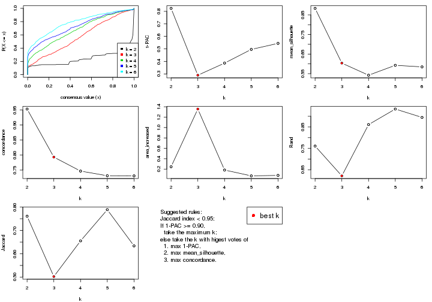
The numeric values for all these statistics can be obtained by get_stats().
get_stats(res)
#> k 1-PAC mean_silhouette concordance area_increased Rand Jaccard
#> 2 2 0.824 0.884 0.953 0.2454 0.761 0.761
#> 3 3 0.290 0.604 0.793 1.3563 0.621 0.502
#> 4 4 0.387 0.542 0.747 0.1825 0.861 0.655
#> 5 5 0.496 0.593 0.731 0.0699 0.934 0.789
#> 6 6 0.544 0.585 0.731 0.0792 0.895 0.634
suggest_best_k() suggests the best \(k\) based on these statistics. The rules are as follows:
suggest_best_k(res)
#> [1] 3
Following shows the table of the partitions (You need to click the show/hide
code output link to see it). The membership matrix (columns with name p*)
is inferred by
clue::cl_consensus()
function with the SE method. Basically the value in the membership matrix
represents the probability to belong to a certain group. The finall class
label for an item is determined with the group with highest probability it
belongs to.
In get_classes() function, the entropy is calculated from the membership
matrix and the silhouette score is calculated from the consensus matrix.
cbind(get_classes(res, k = 2), get_membership(res, k = 2))
#> class entropy silhouette p1 p2
#> GSM479917 1 0.0000 0.962 1.000 0.000
#> GSM479920 1 0.0376 0.960 0.996 0.004
#> GSM479924 2 0.0000 0.827 0.000 1.000
#> GSM479926 1 0.0000 0.962 1.000 0.000
#> GSM479927 1 0.4022 0.893 0.920 0.080
#> GSM479931 1 0.9732 0.194 0.596 0.404
#> GSM479932 2 0.0000 0.827 0.000 1.000
#> GSM479933 1 0.0000 0.962 1.000 0.000
#> GSM479934 2 0.9635 0.447 0.388 0.612
#> GSM479935 1 0.0000 0.962 1.000 0.000
#> GSM479942 1 0.0000 0.962 1.000 0.000
#> GSM479943 1 0.0000 0.962 1.000 0.000
#> GSM479944 1 0.0000 0.962 1.000 0.000
#> GSM479945 2 0.9635 0.447 0.388 0.612
#> GSM479946 2 0.9993 0.167 0.484 0.516
#> GSM479949 1 0.0376 0.960 0.996 0.004
#> GSM479951 2 0.0000 0.827 0.000 1.000
#> GSM479952 1 0.4815 0.866 0.896 0.104
#> GSM479953 1 0.0000 0.962 1.000 0.000
#> GSM479956 1 0.4562 0.873 0.904 0.096
#> GSM479957 1 0.1184 0.952 0.984 0.016
#> GSM479959 1 0.0000 0.962 1.000 0.000
#> GSM479960 2 0.0000 0.827 0.000 1.000
#> GSM479961 1 0.9732 0.194 0.596 0.404
#> GSM479962 1 0.4815 0.866 0.896 0.104
#> GSM479963 1 0.0000 0.962 1.000 0.000
#> GSM479964 1 0.0000 0.962 1.000 0.000
#> GSM479965 1 0.0000 0.962 1.000 0.000
#> GSM479968 1 0.2236 0.937 0.964 0.036
#> GSM479969 1 0.0000 0.962 1.000 0.000
#> GSM479971 1 0.5408 0.840 0.876 0.124
#> GSM479972 1 0.8327 0.605 0.736 0.264
#> GSM479973 1 0.0000 0.962 1.000 0.000
#> GSM479974 1 0.2423 0.933 0.960 0.040
#> GSM479977 1 0.0000 0.962 1.000 0.000
#> GSM479979 2 0.0000 0.827 0.000 1.000
#> GSM479980 1 0.3733 0.901 0.928 0.072
#> GSM479981 2 0.0000 0.827 0.000 1.000
#> GSM479918 1 0.0000 0.962 1.000 0.000
#> GSM479929 1 0.0000 0.962 1.000 0.000
#> GSM479930 1 0.1184 0.952 0.984 0.016
#> GSM479938 1 0.0000 0.962 1.000 0.000
#> GSM479950 1 0.0000 0.962 1.000 0.000
#> GSM479955 1 0.0000 0.962 1.000 0.000
#> GSM479919 1 0.0000 0.962 1.000 0.000
#> GSM479921 1 0.0000 0.962 1.000 0.000
#> GSM479922 1 0.0000 0.962 1.000 0.000
#> GSM479923 1 0.0938 0.955 0.988 0.012
#> GSM479925 1 0.0000 0.962 1.000 0.000
#> GSM479928 1 0.1633 0.946 0.976 0.024
#> GSM479936 1 0.0000 0.962 1.000 0.000
#> GSM479937 1 0.0000 0.962 1.000 0.000
#> GSM479939 1 0.0000 0.962 1.000 0.000
#> GSM479940 1 0.0000 0.962 1.000 0.000
#> GSM479941 1 0.0000 0.962 1.000 0.000
#> GSM479947 1 0.0000 0.962 1.000 0.000
#> GSM479948 1 0.0000 0.962 1.000 0.000
#> GSM479954 1 0.0376 0.960 0.996 0.004
#> GSM479958 1 0.0000 0.962 1.000 0.000
#> GSM479966 1 0.0000 0.962 1.000 0.000
#> GSM479967 1 0.0000 0.962 1.000 0.000
#> GSM479970 1 0.0000 0.962 1.000 0.000
#> GSM479975 1 0.0000 0.962 1.000 0.000
#> GSM479976 1 0.0376 0.960 0.996 0.004
#> GSM479982 1 0.1184 0.952 0.984 0.016
#> GSM479978 1 0.0000 0.962 1.000 0.000
cbind(get_classes(res, k = 3), get_membership(res, k = 3))
#> class entropy silhouette p1 p2 p3
#> GSM479917 1 0.1860 0.7278 0.948 0.000 0.052
#> GSM479920 3 0.6521 -0.1891 0.492 0.004 0.504
#> GSM479924 2 0.0000 0.8084 0.000 1.000 0.000
#> GSM479926 1 0.4346 0.7314 0.816 0.000 0.184
#> GSM479927 3 0.2982 0.7226 0.024 0.056 0.920
#> GSM479931 3 0.7083 0.1516 0.028 0.380 0.592
#> GSM479932 2 0.0000 0.8084 0.000 1.000 0.000
#> GSM479933 1 0.2711 0.7153 0.912 0.000 0.088
#> GSM479934 2 0.6140 0.3924 0.000 0.596 0.404
#> GSM479935 1 0.0237 0.7201 0.996 0.000 0.004
#> GSM479942 1 0.2356 0.7080 0.928 0.000 0.072
#> GSM479943 3 0.6204 0.3211 0.424 0.000 0.576
#> GSM479944 3 0.6286 0.2087 0.464 0.000 0.536
#> GSM479945 2 0.6140 0.3924 0.000 0.596 0.404
#> GSM479946 2 0.7292 0.1426 0.028 0.500 0.472
#> GSM479949 3 0.6489 -0.0989 0.456 0.004 0.540
#> GSM479951 2 0.0000 0.8084 0.000 1.000 0.000
#> GSM479952 3 0.4316 0.7293 0.044 0.088 0.868
#> GSM479953 1 0.1411 0.7207 0.964 0.000 0.036
#> GSM479956 3 0.4995 0.7327 0.068 0.092 0.840
#> GSM479957 3 0.2959 0.7422 0.100 0.000 0.900
#> GSM479959 1 0.4121 0.7336 0.832 0.000 0.168
#> GSM479960 2 0.0000 0.8084 0.000 1.000 0.000
#> GSM479961 3 0.7083 0.1516 0.028 0.380 0.592
#> GSM479962 3 0.4316 0.7293 0.044 0.088 0.868
#> GSM479963 1 0.5810 0.6029 0.664 0.000 0.336
#> GSM479964 1 0.3686 0.7143 0.860 0.000 0.140
#> GSM479965 1 0.2625 0.7282 0.916 0.000 0.084
#> GSM479968 1 0.6796 0.5447 0.632 0.024 0.344
#> GSM479969 3 0.2796 0.7390 0.092 0.000 0.908
#> GSM479971 3 0.4818 0.7056 0.048 0.108 0.844
#> GSM479972 3 0.5058 0.4974 0.000 0.244 0.756
#> GSM479973 1 0.2261 0.7109 0.932 0.000 0.068
#> GSM479974 3 0.5741 0.6846 0.188 0.036 0.776
#> GSM479977 1 0.3686 0.7143 0.860 0.000 0.140
#> GSM479979 2 0.0000 0.8084 0.000 1.000 0.000
#> GSM479980 3 0.5166 0.7169 0.116 0.056 0.828
#> GSM479981 2 0.0000 0.8084 0.000 1.000 0.000
#> GSM479918 1 0.0237 0.7201 0.996 0.000 0.004
#> GSM479929 3 0.5948 0.4745 0.360 0.000 0.640
#> GSM479930 3 0.1643 0.7400 0.044 0.000 0.956
#> GSM479938 3 0.5465 0.5759 0.288 0.000 0.712
#> GSM479950 3 0.5948 0.4745 0.360 0.000 0.640
#> GSM479955 3 0.2796 0.7390 0.092 0.000 0.908
#> GSM479919 1 0.4346 0.7314 0.816 0.000 0.184
#> GSM479921 1 0.1529 0.7185 0.960 0.000 0.040
#> GSM479922 3 0.2878 0.7378 0.096 0.000 0.904
#> GSM479923 3 0.2261 0.7460 0.068 0.000 0.932
#> GSM479925 1 0.6280 0.3561 0.540 0.000 0.460
#> GSM479928 3 0.5435 0.6766 0.192 0.024 0.784
#> GSM479936 1 0.5785 0.6081 0.668 0.000 0.332
#> GSM479937 3 0.2711 0.7400 0.088 0.000 0.912
#> GSM479939 1 0.4887 0.7074 0.772 0.000 0.228
#> GSM479940 1 0.4887 0.7074 0.772 0.000 0.228
#> GSM479941 1 0.1529 0.7185 0.960 0.000 0.040
#> GSM479947 1 0.6235 0.4191 0.564 0.000 0.436
#> GSM479948 3 0.2711 0.7400 0.088 0.000 0.912
#> GSM479954 1 0.6111 0.4926 0.604 0.000 0.396
#> GSM479958 1 0.5882 0.5891 0.652 0.000 0.348
#> GSM479966 1 0.6286 0.3424 0.536 0.000 0.464
#> GSM479967 1 0.6235 0.4191 0.564 0.000 0.436
#> GSM479970 3 0.2711 0.7400 0.088 0.000 0.912
#> GSM479975 1 0.4346 0.7314 0.816 0.000 0.184
#> GSM479976 1 0.6140 0.4722 0.596 0.000 0.404
#> GSM479982 3 0.2878 0.7392 0.096 0.000 0.904
#> GSM479978 1 0.5650 0.6030 0.688 0.000 0.312
cbind(get_classes(res, k = 4), get_membership(res, k = 4))
#> class entropy silhouette p1 p2 p3 p4
#> GSM479917 1 0.2473 0.6709 0.908 0.000 0.012 0.080
#> GSM479920 3 0.5799 0.1883 0.420 0.004 0.552 0.024
#> GSM479924 2 0.0000 0.8333 0.000 1.000 0.000 0.000
#> GSM479926 1 0.3893 0.6617 0.796 0.000 0.196 0.008
#> GSM479927 4 0.3801 0.6594 0.000 0.000 0.220 0.780
#> GSM479931 4 0.4606 0.2911 0.000 0.264 0.012 0.724
#> GSM479932 2 0.0000 0.8333 0.000 1.000 0.000 0.000
#> GSM479933 1 0.3032 0.6432 0.868 0.000 0.008 0.124
#> GSM479934 2 0.5392 0.1267 0.000 0.528 0.012 0.460
#> GSM479935 1 0.0524 0.6777 0.988 0.000 0.008 0.004
#> GSM479942 1 0.2799 0.6468 0.884 0.000 0.008 0.108
#> GSM479943 3 0.6090 0.4090 0.384 0.000 0.564 0.052
#> GSM479944 3 0.6521 0.3227 0.412 0.000 0.512 0.076
#> GSM479945 2 0.5392 0.1267 0.000 0.528 0.012 0.460
#> GSM479946 4 0.5229 -0.0206 0.000 0.428 0.008 0.564
#> GSM479949 3 0.5709 0.2410 0.384 0.004 0.588 0.024
#> GSM479951 2 0.0000 0.8333 0.000 1.000 0.000 0.000
#> GSM479952 4 0.6054 0.7361 0.024 0.048 0.244 0.684
#> GSM479953 1 0.2021 0.6726 0.932 0.000 0.012 0.056
#> GSM479956 4 0.6702 0.6452 0.032 0.052 0.308 0.608
#> GSM479957 4 0.5962 0.6819 0.080 0.000 0.260 0.660
#> GSM479959 1 0.3444 0.6664 0.816 0.000 0.184 0.000
#> GSM479960 2 0.0000 0.8333 0.000 1.000 0.000 0.000
#> GSM479961 4 0.4606 0.2911 0.000 0.264 0.012 0.724
#> GSM479962 4 0.6054 0.7361 0.024 0.048 0.244 0.684
#> GSM479963 1 0.5993 0.5027 0.628 0.000 0.308 0.064
#> GSM479964 1 0.3853 0.5958 0.820 0.000 0.160 0.020
#> GSM479965 1 0.2775 0.6782 0.896 0.000 0.084 0.020
#> GSM479968 1 0.6882 0.4490 0.592 0.012 0.100 0.296
#> GSM479969 3 0.0707 0.6564 0.020 0.000 0.980 0.000
#> GSM479971 4 0.6058 0.7333 0.032 0.052 0.212 0.704
#> GSM479972 4 0.5527 0.6048 0.000 0.168 0.104 0.728
#> GSM479973 1 0.2610 0.6568 0.900 0.000 0.012 0.088
#> GSM479974 3 0.7296 0.3298 0.128 0.020 0.580 0.272
#> GSM479977 1 0.3853 0.5958 0.820 0.000 0.160 0.020
#> GSM479979 2 0.0000 0.8333 0.000 1.000 0.000 0.000
#> GSM479980 4 0.4401 0.6862 0.076 0.000 0.112 0.812
#> GSM479981 2 0.0000 0.8333 0.000 1.000 0.000 0.000
#> GSM479918 1 0.0524 0.6777 0.988 0.000 0.008 0.004
#> GSM479929 3 0.5578 0.5350 0.312 0.000 0.648 0.040
#> GSM479930 3 0.1767 0.6117 0.012 0.000 0.944 0.044
#> GSM479938 3 0.5041 0.5960 0.232 0.000 0.728 0.040
#> GSM479950 3 0.5578 0.5350 0.312 0.000 0.648 0.040
#> GSM479955 3 0.0707 0.6564 0.020 0.000 0.980 0.000
#> GSM479919 1 0.3893 0.6617 0.796 0.000 0.196 0.008
#> GSM479921 1 0.2363 0.6623 0.920 0.000 0.056 0.024
#> GSM479922 3 0.0895 0.6556 0.020 0.000 0.976 0.004
#> GSM479923 4 0.5730 0.6343 0.040 0.000 0.344 0.616
#> GSM479925 3 0.5858 -0.0448 0.468 0.000 0.500 0.032
#> GSM479928 3 0.5823 0.6038 0.136 0.012 0.732 0.120
#> GSM479936 1 0.6172 0.5160 0.632 0.000 0.284 0.084
#> GSM479937 3 0.0592 0.6549 0.016 0.000 0.984 0.000
#> GSM479939 1 0.4642 0.6087 0.740 0.000 0.240 0.020
#> GSM479940 1 0.4642 0.6087 0.740 0.000 0.240 0.020
#> GSM479941 1 0.2363 0.6623 0.920 0.000 0.056 0.024
#> GSM479947 1 0.5778 0.0701 0.500 0.000 0.472 0.028
#> GSM479948 3 0.0592 0.6549 0.016 0.000 0.984 0.000
#> GSM479954 1 0.6855 0.4303 0.572 0.000 0.292 0.136
#> GSM479958 1 0.5453 0.3455 0.592 0.000 0.388 0.020
#> GSM479966 3 0.5856 -0.0277 0.464 0.000 0.504 0.032
#> GSM479967 1 0.5778 0.0701 0.500 0.000 0.472 0.028
#> GSM479970 3 0.0592 0.6549 0.016 0.000 0.984 0.000
#> GSM479975 1 0.3893 0.6617 0.796 0.000 0.196 0.008
#> GSM479976 1 0.6915 0.4143 0.564 0.000 0.296 0.140
#> GSM479982 4 0.5429 0.7185 0.072 0.000 0.208 0.720
#> GSM479978 1 0.5271 0.3889 0.640 0.000 0.340 0.020
cbind(get_classes(res, k = 5), get_membership(res, k = 5))
#> class entropy silhouette p1 p2 p3 p4 p5
#> GSM479917 1 0.2459 0.692 0.904 0.000 0.004 0.040 0.052
#> GSM479920 3 0.5873 0.093 0.412 0.000 0.508 0.068 0.012
#> GSM479924 2 0.0000 1.000 0.000 1.000 0.000 0.000 0.000
#> GSM479926 1 0.4010 0.701 0.784 0.000 0.056 0.160 0.000
#> GSM479927 4 0.4660 0.524 0.000 0.000 0.080 0.728 0.192
#> GSM479931 5 0.0290 0.535 0.000 0.000 0.000 0.008 0.992
#> GSM479932 2 0.0000 1.000 0.000 1.000 0.000 0.000 0.000
#> GSM479933 1 0.3102 0.669 0.860 0.000 0.000 0.084 0.056
#> GSM479934 5 0.4649 0.559 0.000 0.404 0.000 0.016 0.580
#> GSM479935 1 0.0771 0.702 0.976 0.000 0.004 0.020 0.000
#> GSM479942 1 0.2813 0.671 0.876 0.000 0.000 0.084 0.040
#> GSM479943 3 0.5396 0.432 0.376 0.000 0.560 0.064 0.000
#> GSM479944 3 0.6062 0.348 0.404 0.000 0.508 0.064 0.024
#> GSM479945 5 0.4649 0.559 0.000 0.404 0.000 0.016 0.580
#> GSM479946 5 0.4193 0.627 0.000 0.304 0.000 0.012 0.684
#> GSM479949 3 0.5756 0.159 0.376 0.000 0.548 0.064 0.012
#> GSM479951 2 0.0000 1.000 0.000 1.000 0.000 0.000 0.000
#> GSM479952 4 0.5246 0.634 0.024 0.000 0.044 0.672 0.260
#> GSM479953 1 0.1990 0.693 0.928 0.000 0.004 0.040 0.028
#> GSM479956 4 0.7090 0.423 0.028 0.000 0.184 0.436 0.352
#> GSM479957 4 0.2696 0.635 0.072 0.000 0.024 0.892 0.012
#> GSM479959 1 0.3752 0.702 0.804 0.000 0.048 0.148 0.000
#> GSM479960 2 0.0000 1.000 0.000 1.000 0.000 0.000 0.000
#> GSM479961 5 0.0290 0.535 0.000 0.000 0.000 0.008 0.992
#> GSM479962 4 0.5246 0.634 0.024 0.000 0.044 0.672 0.260
#> GSM479963 1 0.5666 0.614 0.620 0.000 0.136 0.244 0.000
#> GSM479964 1 0.3936 0.624 0.812 0.000 0.116 0.064 0.008
#> GSM479965 1 0.2623 0.698 0.884 0.000 0.004 0.096 0.016
#> GSM479968 1 0.6252 0.476 0.584 0.000 0.012 0.240 0.164
#> GSM479969 3 0.0162 0.688 0.004 0.000 0.996 0.000 0.000
#> GSM479971 4 0.5879 0.483 0.028 0.000 0.048 0.540 0.384
#> GSM479972 5 0.6142 -0.180 0.000 0.112 0.004 0.428 0.456
#> GSM479973 1 0.2511 0.681 0.892 0.000 0.000 0.080 0.028
#> GSM479974 3 0.7587 0.287 0.120 0.004 0.492 0.276 0.108
#> GSM479977 1 0.3936 0.624 0.812 0.000 0.116 0.064 0.008
#> GSM479979 2 0.0000 1.000 0.000 1.000 0.000 0.000 0.000
#> GSM479980 4 0.5484 0.372 0.068 0.000 0.000 0.540 0.392
#> GSM479981 2 0.0000 1.000 0.000 1.000 0.000 0.000 0.000
#> GSM479918 1 0.0771 0.702 0.976 0.000 0.004 0.020 0.000
#> GSM479929 3 0.4883 0.570 0.300 0.000 0.652 0.048 0.000
#> GSM479930 3 0.1444 0.651 0.000 0.000 0.948 0.040 0.012
#> GSM479938 3 0.4364 0.639 0.216 0.000 0.736 0.048 0.000
#> GSM479950 3 0.4883 0.570 0.300 0.000 0.652 0.048 0.000
#> GSM479955 3 0.0162 0.688 0.004 0.000 0.996 0.000 0.000
#> GSM479919 1 0.4010 0.701 0.784 0.000 0.056 0.160 0.000
#> GSM479921 1 0.2037 0.685 0.920 0.000 0.012 0.064 0.004
#> GSM479922 3 0.0324 0.687 0.004 0.000 0.992 0.004 0.000
#> GSM479923 4 0.3272 0.633 0.032 0.000 0.100 0.856 0.012
#> GSM479925 1 0.6425 0.246 0.460 0.000 0.396 0.136 0.008
#> GSM479928 3 0.5533 0.613 0.120 0.000 0.700 0.152 0.028
#> GSM479936 1 0.5537 0.618 0.624 0.000 0.112 0.264 0.000
#> GSM479937 3 0.0000 0.687 0.000 0.000 1.000 0.000 0.000
#> GSM479939 1 0.4723 0.670 0.736 0.000 0.128 0.136 0.000
#> GSM479940 1 0.4723 0.670 0.736 0.000 0.128 0.136 0.000
#> GSM479941 1 0.2037 0.685 0.920 0.000 0.012 0.064 0.004
#> GSM479947 1 0.6329 0.308 0.492 0.000 0.372 0.128 0.008
#> GSM479948 3 0.0000 0.687 0.000 0.000 1.000 0.000 0.000
#> GSM479954 1 0.5715 0.544 0.564 0.000 0.100 0.336 0.000
#> GSM479958 1 0.5737 0.484 0.592 0.000 0.288 0.120 0.000
#> GSM479966 1 0.6428 0.233 0.456 0.000 0.400 0.136 0.008
#> GSM479967 1 0.6355 0.315 0.492 0.000 0.368 0.132 0.008
#> GSM479970 3 0.0000 0.687 0.000 0.000 1.000 0.000 0.000
#> GSM479975 1 0.4010 0.701 0.784 0.000 0.056 0.160 0.000
#> GSM479976 1 0.5739 0.530 0.556 0.000 0.100 0.344 0.000
#> GSM479982 4 0.3798 0.619 0.064 0.000 0.000 0.808 0.128
#> GSM479978 1 0.5374 0.405 0.632 0.000 0.296 0.064 0.008
cbind(get_classes(res, k = 6), get_membership(res, k = 6))
#> class entropy silhouette p1 p2 p3 p4 p5 p6
#> GSM479917 1 0.4464 0.571 0.668 0.000 0.000 0.012 0.036 0.284
#> GSM479920 6 0.4761 0.520 0.040 0.000 0.364 0.004 0.004 0.588
#> GSM479924 2 0.1644 0.942 0.000 0.932 0.000 0.028 0.000 0.040
#> GSM479926 1 0.1874 0.659 0.928 0.000 0.028 0.028 0.000 0.016
#> GSM479927 4 0.5299 0.449 0.036 0.000 0.000 0.668 0.176 0.120
#> GSM479931 5 0.0000 0.559 0.000 0.000 0.000 0.000 1.000 0.000
#> GSM479932 2 0.0000 0.972 0.000 1.000 0.000 0.000 0.000 0.000
#> GSM479933 1 0.4771 0.599 0.680 0.000 0.000 0.036 0.040 0.244
#> GSM479934 5 0.4875 0.655 0.000 0.368 0.000 0.024 0.580 0.028
#> GSM479935 1 0.2805 0.636 0.828 0.000 0.000 0.012 0.000 0.160
#> GSM479942 1 0.4570 0.600 0.684 0.000 0.000 0.032 0.028 0.256
#> GSM479943 3 0.5989 0.458 0.260 0.000 0.556 0.032 0.000 0.152
#> GSM479944 3 0.6679 0.405 0.276 0.000 0.504 0.032 0.024 0.164
#> GSM479945 5 0.4875 0.655 0.000 0.368 0.000 0.024 0.580 0.028
#> GSM479946 5 0.3565 0.692 0.000 0.304 0.000 0.004 0.692 0.000
#> GSM479949 6 0.4520 0.490 0.020 0.000 0.404 0.004 0.004 0.568
#> GSM479951 2 0.0000 0.972 0.000 1.000 0.000 0.000 0.000 0.000
#> GSM479952 4 0.4661 0.583 0.048 0.000 0.024 0.688 0.240 0.000
#> GSM479953 1 0.4010 0.574 0.692 0.000 0.000 0.012 0.012 0.284
#> GSM479956 4 0.6181 0.393 0.016 0.000 0.164 0.468 0.348 0.004
#> GSM479957 4 0.3996 0.558 0.112 0.000 0.016 0.784 0.000 0.088
#> GSM479959 1 0.1528 0.662 0.944 0.000 0.028 0.016 0.000 0.012
#> GSM479960 2 0.0000 0.972 0.000 1.000 0.000 0.000 0.000 0.000
#> GSM479961 5 0.0000 0.559 0.000 0.000 0.000 0.000 1.000 0.000
#> GSM479962 4 0.4661 0.583 0.048 0.000 0.024 0.688 0.240 0.000
#> GSM479963 1 0.4493 0.545 0.740 0.000 0.096 0.144 0.000 0.020
#> GSM479964 6 0.3699 0.370 0.336 0.000 0.004 0.000 0.000 0.660
#> GSM479965 1 0.2243 0.658 0.880 0.000 0.000 0.004 0.004 0.112
#> GSM479968 1 0.6871 0.431 0.544 0.000 0.012 0.152 0.160 0.132
#> GSM479969 3 0.0260 0.702 0.000 0.000 0.992 0.000 0.000 0.008
#> GSM479971 4 0.5087 0.466 0.028 0.000 0.028 0.568 0.372 0.004
#> GSM479972 4 0.5680 0.143 0.000 0.084 0.000 0.452 0.440 0.024
#> GSM479973 1 0.4232 0.619 0.716 0.000 0.000 0.028 0.020 0.236
#> GSM479974 3 0.7621 0.347 0.088 0.004 0.492 0.228 0.104 0.084
#> GSM479977 6 0.3699 0.370 0.336 0.000 0.004 0.000 0.000 0.660
#> GSM479979 2 0.1644 0.942 0.000 0.932 0.000 0.028 0.000 0.040
#> GSM479980 4 0.5963 0.307 0.056 0.000 0.000 0.488 0.384 0.072
#> GSM479981 2 0.0000 0.972 0.000 1.000 0.000 0.000 0.000 0.000
#> GSM479918 1 0.2805 0.636 0.828 0.000 0.000 0.012 0.000 0.160
#> GSM479929 3 0.5322 0.565 0.184 0.000 0.648 0.020 0.000 0.148
#> GSM479930 3 0.2278 0.646 0.000 0.000 0.900 0.044 0.004 0.052
#> GSM479938 3 0.4556 0.633 0.132 0.000 0.732 0.016 0.000 0.120
#> GSM479950 3 0.5322 0.565 0.184 0.000 0.648 0.020 0.000 0.148
#> GSM479955 3 0.0260 0.702 0.000 0.000 0.992 0.000 0.000 0.008
#> GSM479919 1 0.1874 0.659 0.928 0.000 0.028 0.028 0.000 0.016
#> GSM479921 1 0.3868 -0.087 0.504 0.000 0.000 0.000 0.000 0.496
#> GSM479922 3 0.0405 0.704 0.008 0.000 0.988 0.004 0.000 0.000
#> GSM479923 4 0.4525 0.479 0.140 0.000 0.008 0.724 0.000 0.128
#> GSM479925 6 0.6373 0.700 0.192 0.000 0.280 0.036 0.000 0.492
#> GSM479928 3 0.5626 0.627 0.076 0.000 0.696 0.108 0.028 0.092
#> GSM479936 1 0.4498 0.555 0.744 0.000 0.072 0.152 0.000 0.032
#> GSM479937 3 0.0146 0.707 0.000 0.000 0.996 0.004 0.000 0.000
#> GSM479939 1 0.4548 0.572 0.756 0.000 0.100 0.052 0.000 0.092
#> GSM479940 1 0.4548 0.572 0.756 0.000 0.100 0.052 0.000 0.092
#> GSM479941 1 0.3868 -0.087 0.504 0.000 0.000 0.000 0.000 0.496
#> GSM479947 6 0.6512 0.705 0.220 0.000 0.264 0.040 0.000 0.476
#> GSM479948 3 0.0146 0.707 0.000 0.000 0.996 0.004 0.000 0.000
#> GSM479954 1 0.4783 0.525 0.684 0.000 0.060 0.232 0.000 0.024
#> GSM479958 6 0.6494 0.573 0.340 0.000 0.236 0.024 0.000 0.400
#> GSM479966 6 0.6364 0.698 0.188 0.000 0.284 0.036 0.000 0.492
#> GSM479967 6 0.6519 0.700 0.228 0.000 0.256 0.040 0.000 0.476
#> GSM479970 3 0.0146 0.707 0.000 0.000 0.996 0.004 0.000 0.000
#> GSM479975 1 0.1874 0.659 0.928 0.000 0.028 0.028 0.000 0.016
#> GSM479976 1 0.4831 0.518 0.676 0.000 0.060 0.240 0.000 0.024
#> GSM479982 4 0.4960 0.536 0.088 0.000 0.000 0.724 0.112 0.076
#> GSM479978 6 0.5472 0.528 0.256 0.000 0.180 0.000 0.000 0.564
Heatmaps for the consensus matrix. It visualizes the probability of two samples to be in a same group.
consensus_heatmap(res, k = 2)
consensus_heatmap(res, k = 3)
consensus_heatmap(res, k = 4)

consensus_heatmap(res, k = 5)
consensus_heatmap(res, k = 6)
Heatmaps for the membership of samples in all partitions to see how consistent they are:
membership_heatmap(res, k = 2)
membership_heatmap(res, k = 3)
membership_heatmap(res, k = 4)
membership_heatmap(res, k = 5)
membership_heatmap(res, k = 6)
As soon as we have had the classes for columns, we can look for signatures which are significantly different between classes which can be candidate marks for certain classes. Following are the heatmaps for signatures.
Signature heatmaps where rows are scaled:
get_signatures(res, k = 2)
get_signatures(res, k = 3)
get_signatures(res, k = 4)
get_signatures(res, k = 5)

get_signatures(res, k = 6)
Signature heatmaps where rows are not scaled:
get_signatures(res, k = 2, scale_rows = FALSE)
get_signatures(res, k = 3, scale_rows = FALSE)
get_signatures(res, k = 4, scale_rows = FALSE)
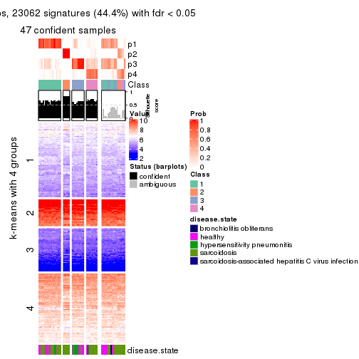
get_signatures(res, k = 5, scale_rows = FALSE)
get_signatures(res, k = 6, scale_rows = FALSE)
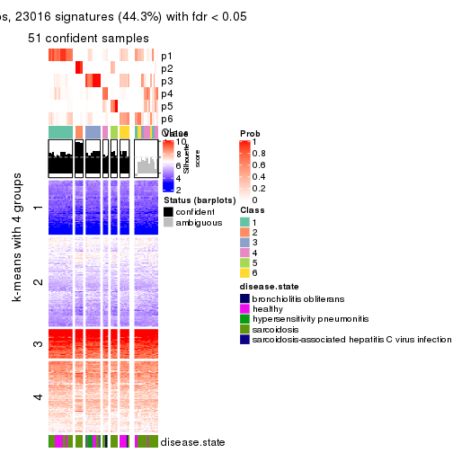
Compare the overlap of signatures from different k:
compare_signatures(res)
get_signature() returns a data frame invisibly. TO get the list of signatures, the function
call should be assigned to a variable explicitly. In following code, if plot argument is set
to FALSE, no heatmap is plotted while only the differential analysis is performed.
# code only for demonstration
tb = get_signature(res, k = ..., plot = FALSE)
An example of the output of tb is:
#> which_row fdr mean_1 mean_2 scaled_mean_1 scaled_mean_2 km
#> 1 38 0.042760348 8.373488 9.131774 -0.5533452 0.5164555 1
#> 2 40 0.018707592 7.106213 8.469186 -0.6173731 0.5762149 1
#> 3 55 0.019134737 10.221463 11.207825 -0.6159697 0.5749050 1
#> 4 59 0.006059896 5.921854 7.869574 -0.6899429 0.6439467 1
#> 5 60 0.018055526 8.928898 10.211722 -0.6204761 0.5791110 1
#> 6 98 0.009384629 15.714769 14.887706 0.6635654 -0.6193277 2
...
The columns in tb are:
which_row: row indices corresponding to the input matrix.fdr: FDR for the differential test. mean_x: The mean value in group x.scaled_mean_x: The mean value in group x after rows are scaled.km: Row groups if k-means clustering is applied to rows.UMAP plot which shows how samples are separated.
dimension_reduction(res, k = 2, method = "UMAP")
dimension_reduction(res, k = 3, method = "UMAP")
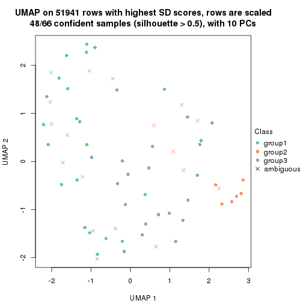
dimension_reduction(res, k = 4, method = "UMAP")
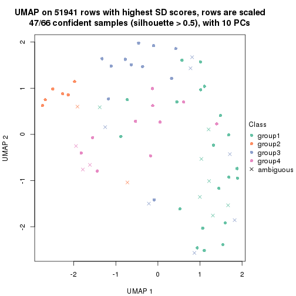
dimension_reduction(res, k = 5, method = "UMAP")
dimension_reduction(res, k = 6, method = "UMAP")
Following heatmap shows how subgroups are split when increasing k:
collect_classes(res)
Test correlation between subgroups and known annotations. If the known annotation is numeric, one-way ANOVA test is applied, and if the known annotation is discrete, chi-squared contingency table test is applied.
test_to_known_factors(res)
#> n disease.state(p) k
#> SD:hclust 61 0.227167 2
#> SD:hclust 48 0.338423 3
#> SD:hclust 47 0.001109 4
#> SD:hclust 50 0.000602 5
#> SD:hclust 51 0.000119 6
If matrix rows can be associated to genes, consider to use functional_enrichment(res,
...) to perform function enrichment for the signature genes. See this vignette for more detailed explanations.
The object with results only for a single top-value method and a single partition method can be extracted as:
res = res_list["SD", "kmeans"]
# you can also extract it by
# res = res_list["SD:kmeans"]
A summary of res and all the functions that can be applied to it:
res
#> A 'ConsensusPartition' object with k = 2, 3, 4, 5, 6.
#> On a matrix with 51941 rows and 66 columns.
#> Top rows (1000, 2000, 3000, 4000, 5000) are extracted by 'SD' method.
#> Subgroups are detected by 'kmeans' method.
#> Performed in total 1250 partitions by row resampling.
#> Best k for subgroups seems to be 2.
#>
#> Following methods can be applied to this 'ConsensusPartition' object:
#> [1] "cola_report" "collect_classes" "collect_plots"
#> [4] "collect_stats" "colnames" "compare_signatures"
#> [7] "consensus_heatmap" "dimension_reduction" "functional_enrichment"
#> [10] "get_anno_col" "get_anno" "get_classes"
#> [13] "get_consensus" "get_matrix" "get_membership"
#> [16] "get_param" "get_signatures" "get_stats"
#> [19] "is_best_k" "is_stable_k" "membership_heatmap"
#> [22] "ncol" "nrow" "plot_ecdf"
#> [25] "rownames" "select_partition_number" "show"
#> [28] "suggest_best_k" "test_to_known_factors"
collect_plots() function collects all the plots made from res for all k (number of partitions)
into one single page to provide an easy and fast comparison between different k.
collect_plots(res)
The plots are:
k and the heatmap of
predicted classes for each k.k.k.k.All the plots in panels can be made by individual functions and they are plotted later in this section.
select_partition_number() produces several plots showing different
statistics for choosing “optimized” k. There are following statistics:
k;k, the area increased is defined as \(A_k - A_{k-1}\).The detailed explanations of these statistics can be found in the cola vignette.
Generally speaking, lower PAC score, higher mean silhouette score or higher
concordance corresponds to better partition. Rand index and Jaccard index
measure how similar the current partition is compared to partition with k-1.
If they are too similar, we won't accept k is better than k-1.
select_partition_number(res)
The numeric values for all these statistics can be obtained by get_stats().
get_stats(res)
#> k 1-PAC mean_silhouette concordance area_increased Rand Jaccard
#> 2 2 0.563 0.826 0.918 0.4658 0.504 0.504
#> 3 3 0.521 0.813 0.878 0.3518 0.738 0.537
#> 4 4 0.501 0.582 0.750 0.1522 0.855 0.635
#> 5 5 0.657 0.597 0.782 0.0870 0.860 0.560
#> 6 6 0.702 0.624 0.784 0.0453 0.921 0.659
suggest_best_k() suggests the best \(k\) based on these statistics. The rules are as follows:
suggest_best_k(res)
#> [1] 2
Following shows the table of the partitions (You need to click the show/hide
code output link to see it). The membership matrix (columns with name p*)
is inferred by
clue::cl_consensus()
function with the SE method. Basically the value in the membership matrix
represents the probability to belong to a certain group. The finall class
label for an item is determined with the group with highest probability it
belongs to.
In get_classes() function, the entropy is calculated from the membership
matrix and the silhouette score is calculated from the consensus matrix.
cbind(get_classes(res, k = 2), get_membership(res, k = 2))
#> class entropy silhouette p1 p2
#> GSM479917 1 0.541 0.8040 0.876 0.124
#> GSM479920 1 0.722 0.6902 0.800 0.200
#> GSM479924 2 0.000 0.8431 0.000 1.000
#> GSM479926 1 0.000 0.9489 1.000 0.000
#> GSM479927 2 0.443 0.8418 0.092 0.908
#> GSM479931 2 0.000 0.8431 0.000 1.000
#> GSM479932 2 0.000 0.8431 0.000 1.000
#> GSM479933 2 0.952 0.5648 0.372 0.628
#> GSM479934 2 0.000 0.8431 0.000 1.000
#> GSM479935 1 0.000 0.9489 1.000 0.000
#> GSM479942 1 0.000 0.9489 1.000 0.000
#> GSM479943 1 0.000 0.9489 1.000 0.000
#> GSM479944 1 0.204 0.9227 0.968 0.032
#> GSM479945 2 0.000 0.8431 0.000 1.000
#> GSM479946 2 0.000 0.8431 0.000 1.000
#> GSM479949 2 0.605 0.8242 0.148 0.852
#> GSM479951 2 0.000 0.8431 0.000 1.000
#> GSM479952 2 0.991 0.4103 0.444 0.556
#> GSM479953 1 0.000 0.9489 1.000 0.000
#> GSM479956 2 0.802 0.7420 0.244 0.756
#> GSM479957 1 0.975 0.0984 0.592 0.408
#> GSM479959 1 0.000 0.9489 1.000 0.000
#> GSM479960 2 0.000 0.8431 0.000 1.000
#> GSM479961 2 0.118 0.8441 0.016 0.984
#> GSM479962 2 0.563 0.8317 0.132 0.868
#> GSM479963 1 0.000 0.9489 1.000 0.000
#> GSM479964 1 0.000 0.9489 1.000 0.000
#> GSM479965 1 0.000 0.9489 1.000 0.000
#> GSM479968 1 1.000 -0.2591 0.508 0.492
#> GSM479969 2 0.494 0.8395 0.108 0.892
#> GSM479971 2 0.961 0.5424 0.384 0.616
#> GSM479972 2 0.000 0.8431 0.000 1.000
#> GSM479973 1 0.000 0.9489 1.000 0.000
#> GSM479974 2 0.506 0.8387 0.112 0.888
#> GSM479977 1 0.000 0.9489 1.000 0.000
#> GSM479979 2 0.000 0.8431 0.000 1.000
#> GSM479980 2 0.680 0.7938 0.180 0.820
#> GSM479981 2 0.000 0.8431 0.000 1.000
#> GSM479918 1 0.000 0.9489 1.000 0.000
#> GSM479929 1 0.000 0.9489 1.000 0.000
#> GSM479930 2 0.605 0.8242 0.148 0.852
#> GSM479938 1 0.184 0.9262 0.972 0.028
#> GSM479950 1 0.224 0.9187 0.964 0.036
#> GSM479955 2 0.662 0.8058 0.172 0.828
#> GSM479919 1 0.000 0.9489 1.000 0.000
#> GSM479921 1 0.000 0.9489 1.000 0.000
#> GSM479922 1 0.000 0.9489 1.000 0.000
#> GSM479923 1 0.662 0.7397 0.828 0.172
#> GSM479925 1 0.000 0.9489 1.000 0.000
#> GSM479928 2 0.998 0.3226 0.476 0.524
#> GSM479936 1 0.000 0.9489 1.000 0.000
#> GSM479937 1 0.204 0.9227 0.968 0.032
#> GSM479939 1 0.000 0.9489 1.000 0.000
#> GSM479940 1 0.000 0.9489 1.000 0.000
#> GSM479941 1 0.000 0.9489 1.000 0.000
#> GSM479947 1 0.000 0.9489 1.000 0.000
#> GSM479948 2 0.506 0.8384 0.112 0.888
#> GSM479954 1 0.000 0.9489 1.000 0.000
#> GSM479958 1 0.000 0.9489 1.000 0.000
#> GSM479966 1 0.000 0.9489 1.000 0.000
#> GSM479967 1 0.000 0.9489 1.000 0.000
#> GSM479970 2 0.969 0.5182 0.396 0.604
#> GSM479975 1 0.000 0.9489 1.000 0.000
#> GSM479976 1 0.000 0.9489 1.000 0.000
#> GSM479982 2 0.949 0.5653 0.368 0.632
#> GSM479978 1 0.000 0.9489 1.000 0.000
cbind(get_classes(res, k = 3), get_membership(res, k = 3))
#> class entropy silhouette p1 p2 p3
#> GSM479917 3 0.6079 0.454 0.388 0.000 0.612
#> GSM479920 1 0.6169 0.385 0.636 0.004 0.360
#> GSM479924 2 0.0000 0.942 0.000 1.000 0.000
#> GSM479926 1 0.1411 0.865 0.964 0.000 0.036
#> GSM479927 3 0.2383 0.850 0.016 0.044 0.940
#> GSM479931 2 0.2261 0.919 0.000 0.932 0.068
#> GSM479932 2 0.0000 0.942 0.000 1.000 0.000
#> GSM479933 3 0.6232 0.705 0.220 0.040 0.740
#> GSM479934 2 0.0424 0.941 0.000 0.992 0.008
#> GSM479935 1 0.0592 0.863 0.988 0.000 0.012
#> GSM479942 1 0.3192 0.820 0.888 0.000 0.112
#> GSM479943 1 0.3412 0.853 0.876 0.000 0.124
#> GSM479944 3 0.3192 0.834 0.112 0.000 0.888
#> GSM479945 2 0.1529 0.933 0.000 0.960 0.040
#> GSM479946 2 0.1964 0.926 0.000 0.944 0.056
#> GSM479949 3 0.4966 0.838 0.060 0.100 0.840
#> GSM479951 2 0.0000 0.942 0.000 1.000 0.000
#> GSM479952 3 0.1878 0.852 0.044 0.004 0.952
#> GSM479953 1 0.0892 0.862 0.980 0.000 0.020
#> GSM479956 3 0.0848 0.850 0.008 0.008 0.984
#> GSM479957 3 0.0848 0.850 0.008 0.008 0.984
#> GSM479959 1 0.2165 0.865 0.936 0.000 0.064
#> GSM479960 2 0.0000 0.942 0.000 1.000 0.000
#> GSM479961 3 0.4555 0.703 0.000 0.200 0.800
#> GSM479962 3 0.2269 0.851 0.016 0.040 0.944
#> GSM479963 1 0.5016 0.779 0.760 0.000 0.240
#> GSM479964 1 0.0424 0.862 0.992 0.000 0.008
#> GSM479965 1 0.1031 0.862 0.976 0.000 0.024
#> GSM479968 3 0.2096 0.851 0.052 0.004 0.944
#> GSM479969 3 0.5393 0.817 0.044 0.148 0.808
#> GSM479971 3 0.0848 0.850 0.008 0.008 0.984
#> GSM479972 2 0.5926 0.394 0.000 0.644 0.356
#> GSM479973 1 0.1860 0.859 0.948 0.000 0.052
#> GSM479974 3 0.5507 0.810 0.056 0.136 0.808
#> GSM479977 1 0.0747 0.861 0.984 0.000 0.016
#> GSM479979 2 0.1031 0.937 0.000 0.976 0.024
#> GSM479980 3 0.5406 0.665 0.020 0.200 0.780
#> GSM479981 2 0.0000 0.942 0.000 1.000 0.000
#> GSM479918 1 0.0747 0.863 0.984 0.000 0.016
#> GSM479929 1 0.5650 0.640 0.688 0.000 0.312
#> GSM479930 3 0.4868 0.837 0.056 0.100 0.844
#> GSM479938 3 0.5236 0.808 0.168 0.028 0.804
#> GSM479950 3 0.5178 0.811 0.164 0.028 0.808
#> GSM479955 3 0.5852 0.817 0.060 0.152 0.788
#> GSM479919 1 0.3686 0.849 0.860 0.000 0.140
#> GSM479921 1 0.0424 0.862 0.992 0.000 0.008
#> GSM479922 1 0.2796 0.860 0.908 0.000 0.092
#> GSM479923 3 0.5896 0.463 0.292 0.008 0.700
#> GSM479925 1 0.5058 0.775 0.756 0.000 0.244
#> GSM479928 3 0.3832 0.849 0.076 0.036 0.888
#> GSM479936 1 0.5254 0.758 0.736 0.000 0.264
#> GSM479937 3 0.4397 0.833 0.116 0.028 0.856
#> GSM479939 1 0.3941 0.851 0.844 0.000 0.156
#> GSM479940 1 0.5591 0.690 0.696 0.000 0.304
#> GSM479941 1 0.0424 0.862 0.992 0.000 0.008
#> GSM479947 1 0.4002 0.837 0.840 0.000 0.160
#> GSM479948 3 0.5330 0.820 0.044 0.144 0.812
#> GSM479954 1 0.5733 0.674 0.676 0.000 0.324
#> GSM479958 1 0.2261 0.868 0.932 0.000 0.068
#> GSM479966 1 0.4062 0.832 0.836 0.000 0.164
#> GSM479967 1 0.2356 0.869 0.928 0.000 0.072
#> GSM479970 3 0.3583 0.852 0.056 0.044 0.900
#> GSM479975 1 0.1860 0.867 0.948 0.000 0.052
#> GSM479976 1 0.6026 0.610 0.624 0.000 0.376
#> GSM479982 3 0.0848 0.850 0.008 0.008 0.984
#> GSM479978 1 0.0892 0.866 0.980 0.000 0.020
cbind(get_classes(res, k = 4), get_membership(res, k = 4))
#> class entropy silhouette p1 p2 p3 p4
#> GSM479917 4 0.6133 0.4978 0.204 0.000 0.124 0.672
#> GSM479920 1 0.7536 0.5076 0.488 0.000 0.284 0.228
#> GSM479924 2 0.0188 0.8802 0.000 0.996 0.000 0.004
#> GSM479926 1 0.0469 0.7328 0.988 0.000 0.000 0.012
#> GSM479927 4 0.6081 0.1449 0.044 0.000 0.472 0.484
#> GSM479931 2 0.5632 0.5511 0.000 0.624 0.036 0.340
#> GSM479932 2 0.0000 0.8808 0.000 1.000 0.000 0.000
#> GSM479933 4 0.6116 0.6061 0.112 0.000 0.220 0.668
#> GSM479934 2 0.0000 0.8808 0.000 1.000 0.000 0.000
#> GSM479935 1 0.3695 0.7015 0.828 0.000 0.016 0.156
#> GSM479942 4 0.5496 0.0913 0.372 0.000 0.024 0.604
#> GSM479943 1 0.6187 0.6903 0.672 0.000 0.184 0.144
#> GSM479944 4 0.4988 0.5782 0.020 0.000 0.288 0.692
#> GSM479945 2 0.2198 0.8481 0.000 0.920 0.008 0.072
#> GSM479946 2 0.4539 0.6805 0.000 0.720 0.008 0.272
#> GSM479949 3 0.3067 0.6402 0.024 0.004 0.888 0.084
#> GSM479951 2 0.0000 0.8808 0.000 1.000 0.000 0.000
#> GSM479952 3 0.5999 -0.1178 0.044 0.000 0.552 0.404
#> GSM479953 1 0.4485 0.6494 0.740 0.000 0.012 0.248
#> GSM479956 4 0.4585 0.5959 0.000 0.000 0.332 0.668
#> GSM479957 4 0.5233 0.5288 0.020 0.000 0.332 0.648
#> GSM479959 1 0.1902 0.7269 0.932 0.000 0.004 0.064
#> GSM479960 2 0.0000 0.8808 0.000 1.000 0.000 0.000
#> GSM479961 4 0.5599 0.5940 0.000 0.052 0.276 0.672
#> GSM479962 3 0.6080 -0.2402 0.044 0.000 0.488 0.468
#> GSM479963 1 0.5880 0.6237 0.680 0.000 0.232 0.088
#> GSM479964 1 0.4635 0.6667 0.756 0.000 0.028 0.216
#> GSM479965 1 0.3123 0.7059 0.844 0.000 0.000 0.156
#> GSM479968 4 0.4635 0.6403 0.012 0.000 0.268 0.720
#> GSM479969 3 0.0779 0.6800 0.000 0.016 0.980 0.004
#> GSM479971 3 0.5408 -0.3133 0.012 0.000 0.500 0.488
#> GSM479972 2 0.7147 0.3681 0.000 0.560 0.216 0.224
#> GSM479973 1 0.3726 0.6711 0.788 0.000 0.000 0.212
#> GSM479974 3 0.5355 -0.1005 0.004 0.008 0.580 0.408
#> GSM479977 1 0.4711 0.6526 0.740 0.000 0.024 0.236
#> GSM479979 2 0.0336 0.8791 0.000 0.992 0.000 0.008
#> GSM479980 4 0.5431 0.6362 0.000 0.064 0.224 0.712
#> GSM479981 2 0.0000 0.8808 0.000 1.000 0.000 0.000
#> GSM479918 1 0.4121 0.6908 0.796 0.000 0.020 0.184
#> GSM479929 3 0.5462 0.5044 0.112 0.000 0.736 0.152
#> GSM479930 3 0.2485 0.6483 0.016 0.004 0.916 0.064
#> GSM479938 3 0.3554 0.6066 0.020 0.000 0.844 0.136
#> GSM479950 3 0.2742 0.6529 0.008 0.008 0.900 0.084
#> GSM479955 3 0.0779 0.6800 0.000 0.016 0.980 0.004
#> GSM479919 1 0.3828 0.7312 0.848 0.000 0.068 0.084
#> GSM479921 1 0.3853 0.6973 0.820 0.000 0.020 0.160
#> GSM479922 3 0.6499 -0.0707 0.400 0.000 0.524 0.076
#> GSM479923 1 0.7811 0.0228 0.380 0.000 0.252 0.368
#> GSM479925 1 0.5851 0.6224 0.680 0.000 0.236 0.084
#> GSM479928 3 0.1576 0.6670 0.000 0.004 0.948 0.048
#> GSM479936 1 0.6025 0.6140 0.668 0.000 0.236 0.096
#> GSM479937 3 0.0712 0.6820 0.004 0.004 0.984 0.008
#> GSM479939 1 0.4514 0.7206 0.796 0.000 0.148 0.056
#> GSM479940 1 0.5883 0.5888 0.648 0.000 0.288 0.064
#> GSM479941 1 0.4204 0.6818 0.788 0.000 0.020 0.192
#> GSM479947 1 0.4485 0.7148 0.796 0.000 0.152 0.052
#> GSM479948 3 0.0927 0.6800 0.000 0.016 0.976 0.008
#> GSM479954 1 0.6730 0.5134 0.592 0.000 0.276 0.132
#> GSM479958 1 0.3495 0.7276 0.844 0.000 0.140 0.016
#> GSM479966 1 0.4499 0.7090 0.792 0.000 0.160 0.048
#> GSM479967 1 0.3215 0.7390 0.876 0.000 0.092 0.032
#> GSM479970 3 0.0859 0.6822 0.004 0.008 0.980 0.008
#> GSM479975 1 0.2319 0.7407 0.924 0.000 0.040 0.036
#> GSM479976 1 0.7385 0.3780 0.508 0.000 0.196 0.296
#> GSM479982 4 0.4644 0.6354 0.024 0.000 0.228 0.748
#> GSM479978 1 0.5280 0.7185 0.748 0.000 0.096 0.156
cbind(get_classes(res, k = 5), get_membership(res, k = 5))
#> class entropy silhouette p1 p2 p3 p4 p5
#> GSM479917 4 0.4731 0.4871 0.004 0.004 0.012 0.620 0.360
#> GSM479920 5 0.5819 0.5789 0.360 0.000 0.080 0.008 0.552
#> GSM479924 2 0.0162 0.8863 0.000 0.996 0.004 0.000 0.000
#> GSM479926 1 0.2806 0.4854 0.844 0.000 0.004 0.000 0.152
#> GSM479927 4 0.7181 0.4845 0.172 0.000 0.084 0.552 0.192
#> GSM479931 4 0.5871 0.1081 0.000 0.364 0.016 0.552 0.068
#> GSM479932 2 0.0566 0.8872 0.000 0.984 0.004 0.000 0.012
#> GSM479933 4 0.5116 0.5468 0.000 0.004 0.052 0.640 0.304
#> GSM479934 2 0.0162 0.8863 0.000 0.996 0.004 0.000 0.000
#> GSM479935 1 0.4999 -0.5583 0.504 0.000 0.016 0.008 0.472
#> GSM479942 4 0.5856 0.2603 0.032 0.004 0.028 0.484 0.452
#> GSM479943 1 0.6470 0.0314 0.584 0.000 0.136 0.032 0.248
#> GSM479944 4 0.5923 0.5810 0.020 0.004 0.112 0.652 0.212
#> GSM479945 2 0.4459 0.6420 0.000 0.744 0.004 0.200 0.052
#> GSM479946 4 0.5495 -0.1262 0.000 0.464 0.004 0.480 0.052
#> GSM479949 3 0.5420 0.6993 0.132 0.000 0.712 0.028 0.128
#> GSM479951 2 0.0566 0.8872 0.000 0.984 0.004 0.000 0.012
#> GSM479952 4 0.7316 0.4726 0.204 0.000 0.124 0.544 0.128
#> GSM479953 5 0.3715 0.7618 0.260 0.000 0.000 0.004 0.736
#> GSM479956 4 0.0609 0.6626 0.000 0.000 0.020 0.980 0.000
#> GSM479957 4 0.3436 0.6508 0.020 0.000 0.048 0.856 0.076
#> GSM479959 1 0.3678 0.5388 0.820 0.004 0.008 0.024 0.144
#> GSM479960 2 0.0566 0.8872 0.000 0.984 0.004 0.000 0.012
#> GSM479961 4 0.2789 0.6365 0.000 0.008 0.020 0.880 0.092
#> GSM479962 4 0.7213 0.4882 0.164 0.000 0.092 0.552 0.192
#> GSM479963 1 0.3037 0.6410 0.864 0.000 0.032 0.004 0.100
#> GSM479964 5 0.4015 0.7706 0.284 0.000 0.004 0.004 0.708
#> GSM479965 1 0.4995 -0.3606 0.552 0.000 0.004 0.024 0.420
#> GSM479968 4 0.4660 0.6502 0.032 0.004 0.048 0.776 0.140
#> GSM479969 3 0.1074 0.9256 0.012 0.000 0.968 0.016 0.004
#> GSM479971 4 0.4432 0.6278 0.020 0.000 0.112 0.788 0.080
#> GSM479972 2 0.6613 0.0841 0.000 0.468 0.052 0.408 0.072
#> GSM479973 5 0.6261 0.4770 0.404 0.000 0.004 0.128 0.464
#> GSM479974 4 0.5878 0.4064 0.000 0.004 0.316 0.572 0.108
#> GSM479977 5 0.3838 0.7705 0.280 0.000 0.000 0.004 0.716
#> GSM479979 2 0.0162 0.8845 0.000 0.996 0.000 0.004 0.000
#> GSM479980 4 0.1914 0.6601 0.000 0.000 0.016 0.924 0.060
#> GSM479981 2 0.0566 0.8872 0.000 0.984 0.004 0.000 0.012
#> GSM479918 5 0.5001 0.4863 0.480 0.000 0.016 0.008 0.496
#> GSM479929 3 0.2654 0.8783 0.032 0.004 0.904 0.016 0.044
#> GSM479930 3 0.3720 0.8370 0.044 0.000 0.844 0.040 0.072
#> GSM479938 3 0.1673 0.9115 0.008 0.000 0.944 0.016 0.032
#> GSM479950 3 0.1074 0.9173 0.004 0.000 0.968 0.016 0.012
#> GSM479955 3 0.0968 0.9270 0.012 0.000 0.972 0.012 0.004
#> GSM479919 1 0.1792 0.6521 0.916 0.000 0.000 0.000 0.084
#> GSM479921 5 0.4464 0.6949 0.408 0.000 0.008 0.000 0.584
#> GSM479922 3 0.2362 0.8727 0.076 0.000 0.900 0.000 0.024
#> GSM479923 1 0.6406 0.4156 0.604 0.000 0.040 0.232 0.124
#> GSM479925 1 0.2844 0.6453 0.876 0.000 0.028 0.004 0.092
#> GSM479928 3 0.1012 0.9254 0.012 0.000 0.968 0.020 0.000
#> GSM479936 1 0.3319 0.6373 0.852 0.000 0.040 0.008 0.100
#> GSM479937 3 0.0566 0.9268 0.012 0.000 0.984 0.004 0.000
#> GSM479939 1 0.3056 0.6441 0.884 0.004 0.052 0.020 0.040
#> GSM479940 1 0.3202 0.6387 0.868 0.004 0.088 0.020 0.020
#> GSM479941 5 0.4196 0.7448 0.356 0.000 0.004 0.000 0.640
#> GSM479947 1 0.2067 0.6355 0.920 0.000 0.032 0.000 0.048
#> GSM479948 3 0.0960 0.9252 0.008 0.000 0.972 0.016 0.004
#> GSM479954 1 0.4290 0.5999 0.800 0.000 0.040 0.040 0.120
#> GSM479958 1 0.1997 0.6393 0.924 0.000 0.036 0.000 0.040
#> GSM479966 1 0.1753 0.6443 0.936 0.000 0.032 0.000 0.032
#> GSM479967 1 0.1399 0.6464 0.952 0.000 0.028 0.000 0.020
#> GSM479970 3 0.0912 0.9264 0.012 0.000 0.972 0.016 0.000
#> GSM479975 1 0.1638 0.6137 0.932 0.000 0.004 0.000 0.064
#> GSM479976 1 0.5431 0.5363 0.720 0.000 0.040 0.120 0.120
#> GSM479982 4 0.1701 0.6620 0.012 0.000 0.016 0.944 0.028
#> GSM479978 1 0.5107 -0.4577 0.520 0.000 0.028 0.004 0.448
cbind(get_classes(res, k = 6), get_membership(res, k = 6))
#> class entropy silhouette p1 p2 p3 p4 p5 p6
#> GSM479917 4 0.3272 0.6287 0.000 0.000 0.008 0.836 0.076 0.080
#> GSM479920 6 0.5287 0.6093 0.208 0.000 0.028 0.060 0.024 0.680
#> GSM479924 2 0.1148 0.9731 0.000 0.960 0.004 0.000 0.020 0.016
#> GSM479926 1 0.3014 0.7053 0.804 0.000 0.000 0.000 0.012 0.184
#> GSM479927 5 0.3232 0.4606 0.160 0.000 0.008 0.020 0.812 0.000
#> GSM479931 5 0.5607 0.4234 0.000 0.156 0.004 0.224 0.604 0.012
#> GSM479932 2 0.0000 0.9847 0.000 1.000 0.000 0.000 0.000 0.000
#> GSM479933 4 0.2426 0.6400 0.000 0.000 0.012 0.896 0.044 0.048
#> GSM479934 2 0.0603 0.9795 0.000 0.980 0.000 0.000 0.016 0.004
#> GSM479935 6 0.6170 0.4823 0.272 0.000 0.024 0.124 0.020 0.560
#> GSM479942 4 0.3225 0.5639 0.024 0.000 0.004 0.828 0.008 0.136
#> GSM479943 1 0.6691 0.3861 0.560 0.000 0.068 0.208 0.024 0.140
#> GSM479944 4 0.3177 0.6195 0.020 0.000 0.036 0.868 0.036 0.040
#> GSM479945 5 0.5244 0.0237 0.000 0.448 0.000 0.056 0.480 0.016
#> GSM479946 5 0.6491 0.3511 0.000 0.272 0.004 0.256 0.448 0.020
#> GSM479949 3 0.7317 0.4170 0.188 0.000 0.508 0.032 0.140 0.132
#> GSM479951 2 0.0000 0.9847 0.000 1.000 0.000 0.000 0.000 0.000
#> GSM479952 5 0.6058 0.2929 0.244 0.000 0.020 0.168 0.560 0.008
#> GSM479953 6 0.2752 0.7233 0.036 0.000 0.000 0.096 0.004 0.864
#> GSM479956 4 0.4380 -0.0187 0.000 0.000 0.008 0.544 0.436 0.012
#> GSM479957 5 0.5151 0.1081 0.020 0.000 0.024 0.416 0.528 0.012
#> GSM479959 1 0.4410 0.6740 0.744 0.000 0.000 0.080 0.020 0.156
#> GSM479960 2 0.0000 0.9847 0.000 1.000 0.000 0.000 0.000 0.000
#> GSM479961 5 0.4069 0.2879 0.000 0.000 0.004 0.376 0.612 0.008
#> GSM479962 5 0.3294 0.4612 0.156 0.000 0.012 0.020 0.812 0.000
#> GSM479963 1 0.1141 0.7557 0.948 0.000 0.000 0.000 0.052 0.000
#> GSM479964 6 0.1857 0.7484 0.044 0.000 0.000 0.028 0.004 0.924
#> GSM479965 1 0.5826 0.0496 0.476 0.000 0.000 0.112 0.020 0.392
#> GSM479968 4 0.3211 0.6265 0.012 0.000 0.016 0.852 0.092 0.028
#> GSM479969 3 0.0858 0.8903 0.000 0.000 0.968 0.004 0.028 0.000
#> GSM479971 5 0.5293 0.1662 0.032 0.000 0.024 0.380 0.552 0.012
#> GSM479972 5 0.4836 0.4706 0.000 0.184 0.004 0.100 0.700 0.012
#> GSM479973 4 0.6473 -0.2884 0.248 0.000 0.000 0.368 0.020 0.364
#> GSM479974 4 0.3897 0.5816 0.000 0.000 0.100 0.800 0.072 0.028
#> GSM479977 6 0.1938 0.7436 0.040 0.000 0.000 0.036 0.004 0.920
#> GSM479979 2 0.1313 0.9684 0.000 0.952 0.004 0.000 0.028 0.016
#> GSM479980 4 0.4001 0.2998 0.000 0.000 0.008 0.704 0.268 0.020
#> GSM479981 2 0.0000 0.9847 0.000 1.000 0.000 0.000 0.000 0.000
#> GSM479918 6 0.6351 0.4737 0.260 0.000 0.024 0.144 0.024 0.548
#> GSM479929 3 0.3504 0.7881 0.012 0.000 0.824 0.124 0.020 0.020
#> GSM479930 3 0.5072 0.6542 0.040 0.000 0.688 0.028 0.220 0.024
#> GSM479938 3 0.2144 0.8546 0.004 0.000 0.908 0.068 0.008 0.012
#> GSM479950 3 0.1026 0.8845 0.004 0.000 0.968 0.008 0.008 0.012
#> GSM479955 3 0.1003 0.8903 0.004 0.004 0.964 0.000 0.028 0.000
#> GSM479919 1 0.1572 0.7714 0.936 0.000 0.000 0.000 0.028 0.036
#> GSM479921 6 0.3229 0.7214 0.172 0.000 0.000 0.020 0.004 0.804
#> GSM479922 3 0.1375 0.8790 0.008 0.000 0.952 0.004 0.008 0.028
#> GSM479923 1 0.4323 0.4550 0.648 0.000 0.004 0.012 0.324 0.012
#> GSM479925 1 0.1349 0.7551 0.940 0.000 0.000 0.000 0.056 0.004
#> GSM479928 3 0.1490 0.8882 0.008 0.000 0.948 0.024 0.016 0.004
#> GSM479936 1 0.1196 0.7617 0.952 0.000 0.000 0.008 0.040 0.000
#> GSM479937 3 0.0748 0.8918 0.004 0.000 0.976 0.004 0.016 0.000
#> GSM479939 1 0.3857 0.7475 0.820 0.000 0.020 0.064 0.020 0.076
#> GSM479940 1 0.3429 0.7615 0.848 0.000 0.020 0.060 0.016 0.056
#> GSM479941 6 0.2199 0.7620 0.088 0.000 0.000 0.020 0.000 0.892
#> GSM479947 1 0.3230 0.7564 0.848 0.000 0.016 0.024 0.012 0.100
#> GSM479948 3 0.0777 0.8911 0.000 0.000 0.972 0.004 0.024 0.000
#> GSM479954 1 0.2845 0.6696 0.820 0.000 0.004 0.004 0.172 0.000
#> GSM479958 1 0.3065 0.7583 0.852 0.000 0.016 0.012 0.012 0.108
#> GSM479966 1 0.2773 0.7650 0.872 0.000 0.016 0.008 0.012 0.092
#> GSM479967 1 0.2308 0.7632 0.880 0.000 0.000 0.004 0.008 0.108
#> GSM479970 3 0.0777 0.8911 0.000 0.000 0.972 0.004 0.024 0.000
#> GSM479975 1 0.2623 0.7429 0.852 0.000 0.000 0.000 0.016 0.132
#> GSM479976 1 0.3468 0.6477 0.784 0.000 0.004 0.008 0.192 0.012
#> GSM479982 5 0.4722 0.0266 0.012 0.000 0.008 0.460 0.508 0.012
#> GSM479978 6 0.4047 0.6200 0.244 0.000 0.016 0.020 0.000 0.720
Heatmaps for the consensus matrix. It visualizes the probability of two samples to be in a same group.
consensus_heatmap(res, k = 2)
consensus_heatmap(res, k = 3)
consensus_heatmap(res, k = 4)
consensus_heatmap(res, k = 5)
consensus_heatmap(res, k = 6)
Heatmaps for the membership of samples in all partitions to see how consistent they are:
membership_heatmap(res, k = 2)
membership_heatmap(res, k = 3)
membership_heatmap(res, k = 4)
membership_heatmap(res, k = 5)
membership_heatmap(res, k = 6)
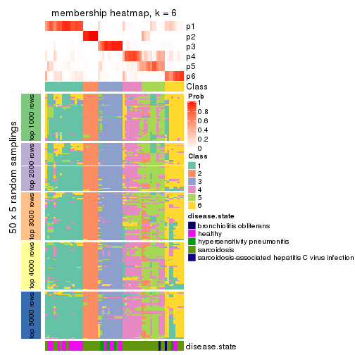
As soon as we have had the classes for columns, we can look for signatures which are significantly different between classes which can be candidate marks for certain classes. Following are the heatmaps for signatures.
Signature heatmaps where rows are scaled:
get_signatures(res, k = 2)
get_signatures(res, k = 3)
get_signatures(res, k = 4)
get_signatures(res, k = 5)
get_signatures(res, k = 6)
Signature heatmaps where rows are not scaled:
get_signatures(res, k = 2, scale_rows = FALSE)
get_signatures(res, k = 3, scale_rows = FALSE)
get_signatures(res, k = 4, scale_rows = FALSE)
get_signatures(res, k = 5, scale_rows = FALSE)
get_signatures(res, k = 6, scale_rows = FALSE)
Compare the overlap of signatures from different k:
compare_signatures(res)
get_signature() returns a data frame invisibly. TO get the list of signatures, the function
call should be assigned to a variable explicitly. In following code, if plot argument is set
to FALSE, no heatmap is plotted while only the differential analysis is performed.
# code only for demonstration
tb = get_signature(res, k = ..., plot = FALSE)
An example of the output of tb is:
#> which_row fdr mean_1 mean_2 scaled_mean_1 scaled_mean_2 km
#> 1 38 0.042760348 8.373488 9.131774 -0.5533452 0.5164555 1
#> 2 40 0.018707592 7.106213 8.469186 -0.6173731 0.5762149 1
#> 3 55 0.019134737 10.221463 11.207825 -0.6159697 0.5749050 1
#> 4 59 0.006059896 5.921854 7.869574 -0.6899429 0.6439467 1
#> 5 60 0.018055526 8.928898 10.211722 -0.6204761 0.5791110 1
#> 6 98 0.009384629 15.714769 14.887706 0.6635654 -0.6193277 2
...
The columns in tb are:
which_row: row indices corresponding to the input matrix.fdr: FDR for the differential test. mean_x: The mean value in group x.scaled_mean_x: The mean value in group x after rows are scaled.km: Row groups if k-means clustering is applied to rows.UMAP plot which shows how samples are separated.
dimension_reduction(res, k = 2, method = "UMAP")
dimension_reduction(res, k = 3, method = "UMAP")
dimension_reduction(res, k = 4, method = "UMAP")
dimension_reduction(res, k = 5, method = "UMAP")
dimension_reduction(res, k = 6, method = "UMAP")
Following heatmap shows how subgroups are split when increasing k:
collect_classes(res)

Test correlation between subgroups and known annotations. If the known annotation is numeric, one-way ANOVA test is applied, and if the known annotation is discrete, chi-squared contingency table test is applied.
test_to_known_factors(res)
#> n disease.state(p) k
#> SD:kmeans 62 5.42e-03 2
#> SD:kmeans 62 1.36e-02 3
#> SD:kmeans 55 8.15e-05 4
#> SD:kmeans 49 3.08e-06 5
#> SD:kmeans 46 5.46e-06 6
If matrix rows can be associated to genes, consider to use functional_enrichment(res,
...) to perform function enrichment for the signature genes. See this vignette for more detailed explanations.
The object with results only for a single top-value method and a single partition method can be extracted as:
res = res_list["SD", "skmeans"]
# you can also extract it by
# res = res_list["SD:skmeans"]
A summary of res and all the functions that can be applied to it:
res
#> A 'ConsensusPartition' object with k = 2, 3, 4, 5, 6.
#> On a matrix with 51941 rows and 66 columns.
#> Top rows (1000, 2000, 3000, 4000, 5000) are extracted by 'SD' method.
#> Subgroups are detected by 'skmeans' method.
#> Performed in total 1250 partitions by row resampling.
#> Best k for subgroups seems to be 2.
#>
#> Following methods can be applied to this 'ConsensusPartition' object:
#> [1] "cola_report" "collect_classes" "collect_plots"
#> [4] "collect_stats" "colnames" "compare_signatures"
#> [7] "consensus_heatmap" "dimension_reduction" "functional_enrichment"
#> [10] "get_anno_col" "get_anno" "get_classes"
#> [13] "get_consensus" "get_matrix" "get_membership"
#> [16] "get_param" "get_signatures" "get_stats"
#> [19] "is_best_k" "is_stable_k" "membership_heatmap"
#> [22] "ncol" "nrow" "plot_ecdf"
#> [25] "rownames" "select_partition_number" "show"
#> [28] "suggest_best_k" "test_to_known_factors"
collect_plots() function collects all the plots made from res for all k (number of partitions)
into one single page to provide an easy and fast comparison between different k.
collect_plots(res)
The plots are:
k and the heatmap of
predicted classes for each k.k.k.k.All the plots in panels can be made by individual functions and they are plotted later in this section.
select_partition_number() produces several plots showing different
statistics for choosing “optimized” k. There are following statistics:
k;k, the area increased is defined as \(A_k - A_{k-1}\).The detailed explanations of these statistics can be found in the cola vignette.
Generally speaking, lower PAC score, higher mean silhouette score or higher
concordance corresponds to better partition. Rand index and Jaccard index
measure how similar the current partition is compared to partition with k-1.
If they are too similar, we won't accept k is better than k-1.
select_partition_number(res)
The numeric values for all these statistics can be obtained by get_stats().
get_stats(res)
#> k 1-PAC mean_silhouette concordance area_increased Rand Jaccard
#> 2 2 0.875 0.908 0.964 0.5067 0.494 0.494
#> 3 3 0.645 0.571 0.789 0.2909 0.846 0.697
#> 4 4 0.636 0.554 0.777 0.1273 0.793 0.508
#> 5 5 0.707 0.551 0.737 0.0813 0.832 0.485
#> 6 6 0.719 0.566 0.718 0.0454 0.874 0.505
suggest_best_k() suggests the best \(k\) based on these statistics. The rules are as follows:
suggest_best_k(res)
#> [1] 2
Following shows the table of the partitions (You need to click the show/hide
code output link to see it). The membership matrix (columns with name p*)
is inferred by
clue::cl_consensus()
function with the SE method. Basically the value in the membership matrix
represents the probability to belong to a certain group. The finall class
label for an item is determined with the group with highest probability it
belongs to.
In get_classes() function, the entropy is calculated from the membership
matrix and the silhouette score is calculated from the consensus matrix.
cbind(get_classes(res, k = 2), get_membership(res, k = 2))
#> class entropy silhouette p1 p2
#> GSM479917 2 0.985 0.2383 0.428 0.572
#> GSM479920 1 1.000 0.0109 0.512 0.488
#> GSM479924 2 0.000 0.9707 0.000 1.000
#> GSM479926 1 0.000 0.9504 1.000 0.000
#> GSM479927 2 0.000 0.9707 0.000 1.000
#> GSM479931 2 0.000 0.9707 0.000 1.000
#> GSM479932 2 0.000 0.9707 0.000 1.000
#> GSM479933 2 0.184 0.9453 0.028 0.972
#> GSM479934 2 0.000 0.9707 0.000 1.000
#> GSM479935 1 0.000 0.9504 1.000 0.000
#> GSM479942 1 0.000 0.9504 1.000 0.000
#> GSM479943 1 0.000 0.9504 1.000 0.000
#> GSM479944 1 0.574 0.8289 0.864 0.136
#> GSM479945 2 0.000 0.9707 0.000 1.000
#> GSM479946 2 0.000 0.9707 0.000 1.000
#> GSM479949 2 0.000 0.9707 0.000 1.000
#> GSM479951 2 0.000 0.9707 0.000 1.000
#> GSM479952 2 0.000 0.9707 0.000 1.000
#> GSM479953 1 0.000 0.9504 1.000 0.000
#> GSM479956 2 0.000 0.9707 0.000 1.000
#> GSM479957 2 0.921 0.4417 0.336 0.664
#> GSM479959 1 0.000 0.9504 1.000 0.000
#> GSM479960 2 0.000 0.9707 0.000 1.000
#> GSM479961 2 0.000 0.9707 0.000 1.000
#> GSM479962 2 0.000 0.9707 0.000 1.000
#> GSM479963 1 0.000 0.9504 1.000 0.000
#> GSM479964 1 0.000 0.9504 1.000 0.000
#> GSM479965 1 0.000 0.9504 1.000 0.000
#> GSM479968 2 0.163 0.9492 0.024 0.976
#> GSM479969 2 0.000 0.9707 0.000 1.000
#> GSM479971 2 0.000 0.9707 0.000 1.000
#> GSM479972 2 0.000 0.9707 0.000 1.000
#> GSM479973 1 0.000 0.9504 1.000 0.000
#> GSM479974 2 0.000 0.9707 0.000 1.000
#> GSM479977 1 0.000 0.9504 1.000 0.000
#> GSM479979 2 0.000 0.9707 0.000 1.000
#> GSM479980 2 0.000 0.9707 0.000 1.000
#> GSM479981 2 0.000 0.9707 0.000 1.000
#> GSM479918 1 0.000 0.9504 1.000 0.000
#> GSM479929 1 0.000 0.9504 1.000 0.000
#> GSM479930 2 0.000 0.9707 0.000 1.000
#> GSM479938 1 0.745 0.7354 0.788 0.212
#> GSM479950 1 0.871 0.6104 0.708 0.292
#> GSM479955 2 0.000 0.9707 0.000 1.000
#> GSM479919 1 0.000 0.9504 1.000 0.000
#> GSM479921 1 0.000 0.9504 1.000 0.000
#> GSM479922 1 0.000 0.9504 1.000 0.000
#> GSM479923 1 0.745 0.7388 0.788 0.212
#> GSM479925 1 0.000 0.9504 1.000 0.000
#> GSM479928 2 0.000 0.9707 0.000 1.000
#> GSM479936 1 0.000 0.9504 1.000 0.000
#> GSM479937 1 0.814 0.6780 0.748 0.252
#> GSM479939 1 0.000 0.9504 1.000 0.000
#> GSM479940 1 0.000 0.9504 1.000 0.000
#> GSM479941 1 0.000 0.9504 1.000 0.000
#> GSM479947 1 0.000 0.9504 1.000 0.000
#> GSM479948 2 0.000 0.9707 0.000 1.000
#> GSM479954 1 0.000 0.9504 1.000 0.000
#> GSM479958 1 0.000 0.9504 1.000 0.000
#> GSM479966 1 0.000 0.9504 1.000 0.000
#> GSM479967 1 0.000 0.9504 1.000 0.000
#> GSM479970 2 0.000 0.9707 0.000 1.000
#> GSM479975 1 0.000 0.9504 1.000 0.000
#> GSM479976 1 0.000 0.9504 1.000 0.000
#> GSM479982 2 0.000 0.9707 0.000 1.000
#> GSM479978 1 0.000 0.9504 1.000 0.000
cbind(get_classes(res, k = 3), get_membership(res, k = 3))
#> class entropy silhouette p1 p2 p3
#> GSM479917 2 0.9180 0.3909 0.152 0.472 0.376
#> GSM479920 1 0.7397 0.0211 0.484 0.484 0.032
#> GSM479924 2 0.0237 0.5072 0.000 0.996 0.004
#> GSM479926 1 0.0000 0.9183 1.000 0.000 0.000
#> GSM479927 2 0.6079 0.5476 0.000 0.612 0.388
#> GSM479931 2 0.5621 0.5766 0.000 0.692 0.308
#> GSM479932 2 0.0237 0.5072 0.000 0.996 0.004
#> GSM479933 2 0.6763 0.4848 0.012 0.552 0.436
#> GSM479934 2 0.3482 0.5755 0.000 0.872 0.128
#> GSM479935 1 0.0000 0.9183 1.000 0.000 0.000
#> GSM479942 1 0.5728 0.6159 0.720 0.008 0.272
#> GSM479943 1 0.2448 0.8648 0.924 0.000 0.076
#> GSM479944 3 0.5538 0.1984 0.060 0.132 0.808
#> GSM479945 2 0.4235 0.5898 0.000 0.824 0.176
#> GSM479946 2 0.5560 0.5790 0.000 0.700 0.300
#> GSM479949 2 0.5098 0.0923 0.000 0.752 0.248
#> GSM479951 2 0.0237 0.5072 0.000 0.996 0.004
#> GSM479952 2 0.6111 0.5426 0.000 0.604 0.396
#> GSM479953 1 0.0000 0.9183 1.000 0.000 0.000
#> GSM479956 2 0.6309 0.4346 0.000 0.504 0.496
#> GSM479957 3 0.5158 0.0230 0.004 0.232 0.764
#> GSM479959 1 0.0000 0.9183 1.000 0.000 0.000
#> GSM479960 2 0.0237 0.5072 0.000 0.996 0.004
#> GSM479961 2 0.5859 0.5629 0.000 0.656 0.344
#> GSM479962 2 0.6062 0.5495 0.000 0.616 0.384
#> GSM479963 1 0.1529 0.9024 0.960 0.000 0.040
#> GSM479964 1 0.0000 0.9183 1.000 0.000 0.000
#> GSM479965 1 0.0000 0.9183 1.000 0.000 0.000
#> GSM479968 2 0.6299 0.4682 0.000 0.524 0.476
#> GSM479969 2 0.6307 -0.4304 0.000 0.512 0.488
#> GSM479971 3 0.5178 0.0201 0.000 0.256 0.744
#> GSM479972 2 0.4235 0.5885 0.000 0.824 0.176
#> GSM479973 1 0.1411 0.8996 0.964 0.000 0.036
#> GSM479974 2 0.3038 0.4202 0.000 0.896 0.104
#> GSM479977 1 0.0000 0.9183 1.000 0.000 0.000
#> GSM479979 2 0.4346 0.5903 0.000 0.816 0.184
#> GSM479980 2 0.6274 0.4751 0.000 0.544 0.456
#> GSM479981 2 0.0237 0.5072 0.000 0.996 0.004
#> GSM479918 1 0.0000 0.9183 1.000 0.000 0.000
#> GSM479929 3 0.8311 0.4012 0.292 0.112 0.596
#> GSM479930 2 0.6305 -0.4148 0.000 0.516 0.484
#> GSM479938 3 0.7820 0.5313 0.072 0.324 0.604
#> GSM479950 3 0.7209 0.5297 0.036 0.360 0.604
#> GSM479955 2 0.6305 -0.4261 0.000 0.516 0.484
#> GSM479919 1 0.1163 0.9086 0.972 0.000 0.028
#> GSM479921 1 0.0000 0.9183 1.000 0.000 0.000
#> GSM479922 1 0.6822 0.0412 0.508 0.012 0.480
#> GSM479923 1 0.7509 0.4817 0.636 0.064 0.300
#> GSM479925 1 0.1529 0.9024 0.960 0.000 0.040
#> GSM479928 3 0.5926 0.5257 0.000 0.356 0.644
#> GSM479936 1 0.2066 0.8912 0.940 0.000 0.060
#> GSM479937 3 0.7214 0.5348 0.044 0.324 0.632
#> GSM479939 1 0.0592 0.9143 0.988 0.000 0.012
#> GSM479940 1 0.0424 0.9159 0.992 0.000 0.008
#> GSM479941 1 0.0000 0.9183 1.000 0.000 0.000
#> GSM479947 1 0.0424 0.9162 0.992 0.000 0.008
#> GSM479948 3 0.6307 0.3880 0.000 0.488 0.512
#> GSM479954 1 0.2261 0.8858 0.932 0.000 0.068
#> GSM479958 1 0.0000 0.9183 1.000 0.000 0.000
#> GSM479966 1 0.0892 0.9118 0.980 0.000 0.020
#> GSM479967 1 0.0000 0.9183 1.000 0.000 0.000
#> GSM479970 3 0.5968 0.5206 0.000 0.364 0.636
#> GSM479975 1 0.0000 0.9183 1.000 0.000 0.000
#> GSM479976 1 0.3116 0.8541 0.892 0.000 0.108
#> GSM479982 3 0.6307 -0.4935 0.000 0.488 0.512
#> GSM479978 1 0.0000 0.9183 1.000 0.000 0.000
cbind(get_classes(res, k = 4), get_membership(res, k = 4))
#> class entropy silhouette p1 p2 p3 p4
#> GSM479917 1 0.8274 -0.1799 0.368 0.308 0.012 0.312
#> GSM479920 1 0.5884 0.1409 0.580 0.384 0.004 0.032
#> GSM479924 2 0.2081 0.7901 0.000 0.916 0.084 0.000
#> GSM479926 1 0.3528 0.7255 0.808 0.000 0.000 0.192
#> GSM479927 4 0.4996 0.0578 0.000 0.484 0.000 0.516
#> GSM479931 2 0.0000 0.7719 0.000 1.000 0.000 0.000
#> GSM479932 2 0.2081 0.7901 0.000 0.916 0.084 0.000
#> GSM479933 2 0.7194 0.3601 0.132 0.588 0.016 0.264
#> GSM479934 2 0.1637 0.7916 0.000 0.940 0.060 0.000
#> GSM479935 1 0.2402 0.7291 0.912 0.000 0.012 0.076
#> GSM479942 1 0.6672 0.2271 0.548 0.056 0.016 0.380
#> GSM479943 1 0.3117 0.7238 0.880 0.000 0.028 0.092
#> GSM479944 4 0.8080 0.2170 0.184 0.184 0.064 0.568
#> GSM479945 2 0.1557 0.7911 0.000 0.944 0.056 0.000
#> GSM479946 2 0.0000 0.7719 0.000 1.000 0.000 0.000
#> GSM479949 2 0.8331 0.1760 0.076 0.480 0.336 0.108
#> GSM479951 2 0.2081 0.7901 0.000 0.916 0.084 0.000
#> GSM479952 4 0.4994 0.0633 0.000 0.480 0.000 0.520
#> GSM479953 1 0.1610 0.7153 0.952 0.000 0.016 0.032
#> GSM479956 4 0.5000 -0.1522 0.000 0.500 0.000 0.500
#> GSM479957 4 0.5310 0.3062 0.008 0.260 0.028 0.704
#> GSM479959 1 0.3945 0.7214 0.780 0.000 0.004 0.216
#> GSM479960 2 0.2081 0.7901 0.000 0.916 0.084 0.000
#> GSM479961 2 0.2647 0.6825 0.000 0.880 0.000 0.120
#> GSM479962 4 0.4998 0.0486 0.000 0.488 0.000 0.512
#> GSM479963 4 0.4992 -0.3076 0.476 0.000 0.000 0.524
#> GSM479964 1 0.1356 0.7181 0.960 0.000 0.008 0.032
#> GSM479965 1 0.2546 0.7275 0.900 0.000 0.008 0.092
#> GSM479968 2 0.5976 0.1436 0.024 0.516 0.008 0.452
#> GSM479969 3 0.0817 0.9241 0.000 0.024 0.976 0.000
#> GSM479971 4 0.6619 0.1574 0.000 0.332 0.100 0.568
#> GSM479972 2 0.1557 0.7911 0.000 0.944 0.056 0.000
#> GSM479973 1 0.3032 0.7040 0.868 0.000 0.008 0.124
#> GSM479974 2 0.5032 0.6299 0.004 0.772 0.072 0.152
#> GSM479977 1 0.1488 0.7163 0.956 0.000 0.012 0.032
#> GSM479979 2 0.0707 0.7818 0.000 0.980 0.020 0.000
#> GSM479980 2 0.5016 0.3158 0.000 0.600 0.004 0.396
#> GSM479981 2 0.2081 0.7901 0.000 0.916 0.084 0.000
#> GSM479918 1 0.2522 0.7282 0.908 0.000 0.016 0.076
#> GSM479929 3 0.2730 0.8412 0.088 0.000 0.896 0.016
#> GSM479930 3 0.5949 0.5276 0.004 0.260 0.668 0.068
#> GSM479938 3 0.0336 0.9230 0.008 0.000 0.992 0.000
#> GSM479950 3 0.0376 0.9264 0.004 0.004 0.992 0.000
#> GSM479955 3 0.0817 0.9241 0.000 0.024 0.976 0.000
#> GSM479919 1 0.4933 0.4129 0.568 0.000 0.000 0.432
#> GSM479921 1 0.0376 0.7334 0.992 0.000 0.004 0.004
#> GSM479922 3 0.2542 0.8547 0.084 0.000 0.904 0.012
#> GSM479923 4 0.4103 0.2032 0.256 0.000 0.000 0.744
#> GSM479925 1 0.4916 0.3600 0.576 0.000 0.000 0.424
#> GSM479928 3 0.0672 0.9271 0.000 0.008 0.984 0.008
#> GSM479936 4 0.4967 -0.2545 0.452 0.000 0.000 0.548
#> GSM479937 3 0.0657 0.9254 0.012 0.000 0.984 0.004
#> GSM479939 1 0.4452 0.7023 0.732 0.000 0.008 0.260
#> GSM479940 1 0.4391 0.6973 0.740 0.000 0.008 0.252
#> GSM479941 1 0.0524 0.7298 0.988 0.000 0.008 0.004
#> GSM479947 1 0.3444 0.7121 0.816 0.000 0.000 0.184
#> GSM479948 3 0.0707 0.9255 0.000 0.020 0.980 0.000
#> GSM479954 4 0.4761 -0.0484 0.372 0.000 0.000 0.628
#> GSM479958 1 0.3356 0.7141 0.824 0.000 0.000 0.176
#> GSM479966 1 0.4072 0.6515 0.748 0.000 0.000 0.252
#> GSM479967 1 0.3569 0.7153 0.804 0.000 0.000 0.196
#> GSM479970 3 0.0657 0.9255 0.004 0.000 0.984 0.012
#> GSM479975 1 0.4072 0.7036 0.748 0.000 0.000 0.252
#> GSM479976 4 0.4250 0.1739 0.276 0.000 0.000 0.724
#> GSM479982 4 0.4406 0.2733 0.000 0.300 0.000 0.700
#> GSM479978 1 0.2888 0.7329 0.872 0.000 0.004 0.124
cbind(get_classes(res, k = 5), get_membership(res, k = 5))
#> class entropy silhouette p1 p2 p3 p4 p5
#> GSM479917 4 0.2104 0.64539 0.008 0.024 0.000 0.924 0.044
#> GSM479920 5 0.7988 -0.01647 0.320 0.136 0.000 0.148 0.396
#> GSM479924 2 0.0162 0.90520 0.000 0.996 0.004 0.000 0.000
#> GSM479926 1 0.2046 0.57312 0.916 0.000 0.000 0.016 0.068
#> GSM479927 5 0.5807 0.02036 0.012 0.300 0.000 0.088 0.600
#> GSM479931 2 0.2992 0.80171 0.000 0.868 0.000 0.068 0.064
#> GSM479932 2 0.0162 0.90520 0.000 0.996 0.004 0.000 0.000
#> GSM479933 4 0.2389 0.67765 0.000 0.116 0.000 0.880 0.004
#> GSM479934 2 0.0162 0.90520 0.000 0.996 0.004 0.000 0.000
#> GSM479935 1 0.5713 0.42941 0.660 0.000 0.012 0.176 0.152
#> GSM479942 4 0.2352 0.61295 0.032 0.000 0.008 0.912 0.048
#> GSM479943 1 0.5794 0.43686 0.664 0.000 0.020 0.168 0.148
#> GSM479944 4 0.1682 0.66596 0.032 0.000 0.012 0.944 0.012
#> GSM479945 2 0.0404 0.89943 0.000 0.988 0.000 0.000 0.012
#> GSM479946 2 0.0609 0.89460 0.000 0.980 0.000 0.020 0.000
#> GSM479949 2 0.6665 0.34494 0.056 0.528 0.084 0.000 0.332
#> GSM479951 2 0.0162 0.90520 0.000 0.996 0.004 0.000 0.000
#> GSM479952 5 0.5781 0.00995 0.008 0.296 0.000 0.096 0.600
#> GSM479953 5 0.6756 -0.06035 0.344 0.000 0.000 0.268 0.388
#> GSM479956 4 0.4063 0.71718 0.000 0.012 0.000 0.708 0.280
#> GSM479957 4 0.4449 0.67665 0.004 0.008 0.000 0.636 0.352
#> GSM479959 1 0.2616 0.56971 0.888 0.000 0.000 0.076 0.036
#> GSM479960 2 0.0162 0.90520 0.000 0.996 0.004 0.000 0.000
#> GSM479961 4 0.6572 0.30217 0.000 0.364 0.000 0.428 0.208
#> GSM479962 5 0.5722 0.01874 0.008 0.304 0.000 0.088 0.600
#> GSM479963 1 0.4201 0.36226 0.664 0.000 0.000 0.008 0.328
#> GSM479964 5 0.6588 -0.11345 0.392 0.000 0.000 0.208 0.400
#> GSM479965 1 0.5030 0.45826 0.696 0.000 0.000 0.200 0.104
#> GSM479968 4 0.4926 0.70888 0.000 0.152 0.000 0.716 0.132
#> GSM479969 3 0.0510 0.93438 0.000 0.016 0.984 0.000 0.000
#> GSM479971 4 0.5388 0.64593 0.000 0.056 0.004 0.580 0.360
#> GSM479972 2 0.1043 0.88157 0.000 0.960 0.000 0.000 0.040
#> GSM479973 1 0.5752 0.37859 0.612 0.000 0.000 0.240 0.148
#> GSM479974 2 0.4467 0.37446 0.000 0.640 0.016 0.344 0.000
#> GSM479977 5 0.6669 -0.07443 0.368 0.000 0.000 0.232 0.400
#> GSM479979 2 0.0000 0.90388 0.000 1.000 0.000 0.000 0.000
#> GSM479980 4 0.4237 0.73267 0.000 0.076 0.000 0.772 0.152
#> GSM479981 2 0.0162 0.90520 0.000 0.996 0.004 0.000 0.000
#> GSM479918 1 0.5867 0.42202 0.648 0.000 0.016 0.188 0.148
#> GSM479929 3 0.0955 0.91759 0.004 0.000 0.968 0.028 0.000
#> GSM479930 3 0.6722 0.27273 0.008 0.272 0.488 0.000 0.232
#> GSM479938 3 0.0000 0.93946 0.000 0.000 1.000 0.000 0.000
#> GSM479950 3 0.0000 0.93946 0.000 0.000 1.000 0.000 0.000
#> GSM479955 3 0.0510 0.93438 0.000 0.016 0.984 0.000 0.000
#> GSM479919 1 0.3684 0.41306 0.720 0.000 0.000 0.000 0.280
#> GSM479921 1 0.5784 0.35657 0.604 0.000 0.000 0.144 0.252
#> GSM479922 3 0.0162 0.93720 0.000 0.000 0.996 0.000 0.004
#> GSM479923 5 0.4974 -0.23395 0.464 0.000 0.000 0.028 0.508
#> GSM479925 1 0.4114 0.36010 0.624 0.000 0.000 0.000 0.376
#> GSM479928 3 0.0000 0.93946 0.000 0.000 1.000 0.000 0.000
#> GSM479936 1 0.4211 0.33400 0.636 0.000 0.000 0.004 0.360
#> GSM479937 3 0.0000 0.93946 0.000 0.000 1.000 0.000 0.000
#> GSM479939 1 0.1682 0.57606 0.944 0.000 0.012 0.032 0.012
#> GSM479940 1 0.1285 0.57557 0.956 0.000 0.004 0.004 0.036
#> GSM479941 1 0.6411 0.04049 0.436 0.000 0.000 0.172 0.392
#> GSM479947 1 0.3707 0.41467 0.716 0.000 0.000 0.000 0.284
#> GSM479948 3 0.0510 0.93438 0.000 0.016 0.984 0.000 0.000
#> GSM479954 1 0.4666 0.25628 0.572 0.000 0.000 0.016 0.412
#> GSM479958 1 0.2471 0.53367 0.864 0.000 0.000 0.000 0.136
#> GSM479966 1 0.3336 0.50315 0.772 0.000 0.000 0.000 0.228
#> GSM479967 1 0.0404 0.57806 0.988 0.000 0.000 0.000 0.012
#> GSM479970 3 0.0162 0.93836 0.000 0.000 0.996 0.004 0.000
#> GSM479975 1 0.0566 0.57840 0.984 0.000 0.000 0.012 0.004
#> GSM479976 1 0.4890 0.19227 0.524 0.000 0.000 0.024 0.452
#> GSM479982 4 0.4009 0.70525 0.000 0.004 0.000 0.684 0.312
#> GSM479978 1 0.5369 0.22619 0.552 0.000 0.000 0.060 0.388
cbind(get_classes(res, k = 6), get_membership(res, k = 6))
#> class entropy silhouette p1 p2 p3 p4 p5 p6
#> GSM479917 4 0.6101 0.3468 0.000 0.004 0.000 0.436 0.312 0.248
#> GSM479920 6 0.4167 0.3166 0.020 0.000 0.000 0.000 0.368 0.612
#> GSM479924 2 0.0000 0.9086 0.000 1.000 0.000 0.000 0.000 0.000
#> GSM479926 1 0.4252 0.3816 0.604 0.000 0.000 0.000 0.372 0.024
#> GSM479927 4 0.6879 0.4455 0.228 0.036 0.000 0.524 0.044 0.168
#> GSM479931 2 0.4660 0.6211 0.000 0.692 0.000 0.236 0.036 0.036
#> GSM479932 2 0.0000 0.9086 0.000 1.000 0.000 0.000 0.000 0.000
#> GSM479933 4 0.7046 0.4189 0.000 0.124 0.000 0.448 0.272 0.156
#> GSM479934 2 0.0000 0.9086 0.000 1.000 0.000 0.000 0.000 0.000
#> GSM479935 5 0.3576 0.5230 0.212 0.000 0.012 0.000 0.764 0.012
#> GSM479942 5 0.5597 -0.3761 0.000 0.000 0.000 0.372 0.480 0.148
#> GSM479943 5 0.4494 0.5015 0.232 0.000 0.024 0.004 0.708 0.032
#> GSM479944 4 0.5757 0.3561 0.000 0.000 0.004 0.444 0.404 0.148
#> GSM479945 2 0.1151 0.8905 0.000 0.956 0.000 0.032 0.000 0.012
#> GSM479946 2 0.1075 0.8886 0.000 0.952 0.000 0.048 0.000 0.000
#> GSM479949 6 0.5758 0.2871 0.052 0.200 0.080 0.012 0.004 0.652
#> GSM479951 2 0.0000 0.9086 0.000 1.000 0.000 0.000 0.000 0.000
#> GSM479952 4 0.6844 0.4459 0.236 0.028 0.000 0.520 0.048 0.168
#> GSM479953 5 0.3961 -0.2010 0.004 0.000 0.000 0.000 0.556 0.440
#> GSM479956 4 0.0692 0.6242 0.000 0.000 0.000 0.976 0.004 0.020
#> GSM479957 4 0.3674 0.6081 0.032 0.008 0.000 0.824 0.036 0.100
#> GSM479959 1 0.4737 0.3800 0.572 0.000 0.000 0.000 0.372 0.056
#> GSM479960 2 0.0000 0.9086 0.000 1.000 0.000 0.000 0.000 0.000
#> GSM479961 4 0.4917 0.5402 0.000 0.144 0.000 0.720 0.064 0.072
#> GSM479962 4 0.6879 0.4455 0.228 0.036 0.000 0.524 0.044 0.168
#> GSM479963 1 0.0909 0.6857 0.968 0.000 0.000 0.000 0.020 0.012
#> GSM479964 6 0.4260 0.2070 0.016 0.000 0.000 0.000 0.472 0.512
#> GSM479965 5 0.4150 0.4215 0.320 0.000 0.000 0.000 0.652 0.028
#> GSM479968 4 0.7227 0.4767 0.020 0.144 0.000 0.496 0.216 0.124
#> GSM479969 3 0.0717 0.9510 0.000 0.016 0.976 0.000 0.000 0.008
#> GSM479971 4 0.4175 0.5889 0.028 0.016 0.000 0.784 0.036 0.136
#> GSM479972 2 0.2971 0.8019 0.000 0.848 0.000 0.116 0.012 0.024
#> GSM479973 5 0.4518 0.4640 0.172 0.000 0.000 0.056 0.736 0.036
#> GSM479974 2 0.6036 0.4169 0.000 0.616 0.012 0.200 0.052 0.120
#> GSM479977 6 0.4181 0.1905 0.012 0.000 0.000 0.000 0.476 0.512
#> GSM479979 2 0.0260 0.9064 0.000 0.992 0.000 0.008 0.000 0.000
#> GSM479980 4 0.4695 0.5577 0.000 0.004 0.000 0.696 0.168 0.132
#> GSM479981 2 0.0000 0.9086 0.000 1.000 0.000 0.000 0.000 0.000
#> GSM479918 5 0.4017 0.5200 0.204 0.000 0.020 0.000 0.748 0.028
#> GSM479929 3 0.3240 0.8059 0.000 0.000 0.812 0.000 0.148 0.040
#> GSM479930 6 0.7946 -0.1024 0.028 0.124 0.348 0.092 0.032 0.376
#> GSM479938 3 0.1745 0.9124 0.000 0.000 0.920 0.000 0.068 0.012
#> GSM479950 3 0.0622 0.9517 0.000 0.000 0.980 0.000 0.012 0.008
#> GSM479955 3 0.0603 0.9519 0.000 0.016 0.980 0.000 0.000 0.004
#> GSM479919 1 0.1866 0.6879 0.908 0.000 0.000 0.000 0.084 0.008
#> GSM479921 5 0.5419 0.2369 0.200 0.000 0.000 0.000 0.580 0.220
#> GSM479922 3 0.0405 0.9537 0.000 0.000 0.988 0.000 0.008 0.004
#> GSM479923 1 0.4681 0.3776 0.676 0.000 0.000 0.212 0.000 0.112
#> GSM479925 1 0.1616 0.6765 0.932 0.000 0.000 0.000 0.020 0.048
#> GSM479928 3 0.0622 0.9525 0.000 0.000 0.980 0.000 0.012 0.008
#> GSM479936 1 0.1434 0.6814 0.948 0.000 0.000 0.008 0.024 0.020
#> GSM479937 3 0.0146 0.9544 0.000 0.000 0.996 0.000 0.000 0.004
#> GSM479939 1 0.4777 0.6073 0.676 0.000 0.000 0.004 0.212 0.108
#> GSM479940 1 0.4701 0.6341 0.708 0.000 0.004 0.004 0.152 0.132
#> GSM479941 5 0.4648 -0.1802 0.044 0.000 0.000 0.000 0.548 0.408
#> GSM479947 6 0.5842 0.0586 0.356 0.000 0.000 0.000 0.196 0.448
#> GSM479948 3 0.0820 0.9497 0.000 0.016 0.972 0.000 0.000 0.012
#> GSM479954 1 0.2237 0.6311 0.896 0.000 0.000 0.036 0.000 0.068
#> GSM479958 1 0.5477 0.4504 0.556 0.000 0.000 0.000 0.168 0.276
#> GSM479966 1 0.4963 0.4648 0.612 0.000 0.000 0.000 0.100 0.288
#> GSM479967 1 0.4238 0.6300 0.728 0.000 0.000 0.000 0.180 0.092
#> GSM479970 3 0.0603 0.9528 0.000 0.004 0.980 0.000 0.000 0.016
#> GSM479975 1 0.3925 0.6065 0.724 0.000 0.000 0.000 0.236 0.040
#> GSM479976 1 0.3047 0.6001 0.852 0.000 0.000 0.080 0.008 0.060
#> GSM479982 4 0.1251 0.6255 0.012 0.000 0.000 0.956 0.008 0.024
#> GSM479978 6 0.5343 0.1905 0.108 0.000 0.000 0.000 0.408 0.484
Heatmaps for the consensus matrix. It visualizes the probability of two samples to be in a same group.
consensus_heatmap(res, k = 2)

consensus_heatmap(res, k = 3)
consensus_heatmap(res, k = 4)
consensus_heatmap(res, k = 5)
consensus_heatmap(res, k = 6)
Heatmaps for the membership of samples in all partitions to see how consistent they are:
membership_heatmap(res, k = 2)
membership_heatmap(res, k = 3)
membership_heatmap(res, k = 4)
membership_heatmap(res, k = 5)
membership_heatmap(res, k = 6)
As soon as we have had the classes for columns, we can look for signatures which are significantly different between classes which can be candidate marks for certain classes. Following are the heatmaps for signatures.
Signature heatmaps where rows are scaled:
get_signatures(res, k = 2)
get_signatures(res, k = 3)
get_signatures(res, k = 4)
get_signatures(res, k = 5)

get_signatures(res, k = 6)
Signature heatmaps where rows are not scaled:
get_signatures(res, k = 2, scale_rows = FALSE)
get_signatures(res, k = 3, scale_rows = FALSE)
get_signatures(res, k = 4, scale_rows = FALSE)
get_signatures(res, k = 5, scale_rows = FALSE)
get_signatures(res, k = 6, scale_rows = FALSE)
Compare the overlap of signatures from different k:
compare_signatures(res)
get_signature() returns a data frame invisibly. TO get the list of signatures, the function
call should be assigned to a variable explicitly. In following code, if plot argument is set
to FALSE, no heatmap is plotted while only the differential analysis is performed.
# code only for demonstration
tb = get_signature(res, k = ..., plot = FALSE)
An example of the output of tb is:
#> which_row fdr mean_1 mean_2 scaled_mean_1 scaled_mean_2 km
#> 1 38 0.042760348 8.373488 9.131774 -0.5533452 0.5164555 1
#> 2 40 0.018707592 7.106213 8.469186 -0.6173731 0.5762149 1
#> 3 55 0.019134737 10.221463 11.207825 -0.6159697 0.5749050 1
#> 4 59 0.006059896 5.921854 7.869574 -0.6899429 0.6439467 1
#> 5 60 0.018055526 8.928898 10.211722 -0.6204761 0.5791110 1
#> 6 98 0.009384629 15.714769 14.887706 0.6635654 -0.6193277 2
...
The columns in tb are:
which_row: row indices corresponding to the input matrix.fdr: FDR for the differential test. mean_x: The mean value in group x.scaled_mean_x: The mean value in group x after rows are scaled.km: Row groups if k-means clustering is applied to rows.UMAP plot which shows how samples are separated.
dimension_reduction(res, k = 2, method = "UMAP")
dimension_reduction(res, k = 3, method = "UMAP")
dimension_reduction(res, k = 4, method = "UMAP")
dimension_reduction(res, k = 5, method = "UMAP")
dimension_reduction(res, k = 6, method = "UMAP")
Following heatmap shows how subgroups are split when increasing k:
collect_classes(res)
Test correlation between subgroups and known annotations. If the known annotation is numeric, one-way ANOVA test is applied, and if the known annotation is discrete, chi-squared contingency table test is applied.
test_to_known_factors(res)
#> n disease.state(p) k
#> SD:skmeans 63 3.57e-03 2
#> SD:skmeans 47 8.93e-05 3
#> SD:skmeans 44 9.83e-05 4
#> SD:skmeans 39 1.29e-05 5
#> SD:skmeans 40 7.45e-06 6
If matrix rows can be associated to genes, consider to use functional_enrichment(res,
...) to perform function enrichment for the signature genes. See this vignette for more detailed explanations.
The object with results only for a single top-value method and a single partition method can be extracted as:
res = res_list["SD", "pam"]
# you can also extract it by
# res = res_list["SD:pam"]
A summary of res and all the functions that can be applied to it:
res
#> A 'ConsensusPartition' object with k = 2, 3, 4, 5, 6.
#> On a matrix with 51941 rows and 66 columns.
#> Top rows (1000, 2000, 3000, 4000, 5000) are extracted by 'SD' method.
#> Subgroups are detected by 'pam' method.
#> Performed in total 1250 partitions by row resampling.
#> Best k for subgroups seems to be 2.
#>
#> Following methods can be applied to this 'ConsensusPartition' object:
#> [1] "cola_report" "collect_classes" "collect_plots"
#> [4] "collect_stats" "colnames" "compare_signatures"
#> [7] "consensus_heatmap" "dimension_reduction" "functional_enrichment"
#> [10] "get_anno_col" "get_anno" "get_classes"
#> [13] "get_consensus" "get_matrix" "get_membership"
#> [16] "get_param" "get_signatures" "get_stats"
#> [19] "is_best_k" "is_stable_k" "membership_heatmap"
#> [22] "ncol" "nrow" "plot_ecdf"
#> [25] "rownames" "select_partition_number" "show"
#> [28] "suggest_best_k" "test_to_known_factors"
collect_plots() function collects all the plots made from res for all k (number of partitions)
into one single page to provide an easy and fast comparison between different k.
collect_plots(res)
The plots are:
k and the heatmap of
predicted classes for each k.k.k.k.All the plots in panels can be made by individual functions and they are plotted later in this section.
select_partition_number() produces several plots showing different
statistics for choosing “optimized” k. There are following statistics:
k;k, the area increased is defined as \(A_k - A_{k-1}\).The detailed explanations of these statistics can be found in the cola vignette.
Generally speaking, lower PAC score, higher mean silhouette score or higher
concordance corresponds to better partition. Rand index and Jaccard index
measure how similar the current partition is compared to partition with k-1.
If they are too similar, we won't accept k is better than k-1.
select_partition_number(res)

The numeric values for all these statistics can be obtained by get_stats().
get_stats(res)
#> k 1-PAC mean_silhouette concordance area_increased Rand Jaccard
#> 2 2 0.762 0.890 0.953 0.5004 0.497 0.497
#> 3 3 0.644 0.846 0.920 0.1964 0.672 0.465
#> 4 4 0.595 0.638 0.817 0.1913 0.842 0.625
#> 5 5 0.818 0.814 0.909 0.0893 0.799 0.429
#> 6 6 0.724 0.547 0.779 0.0540 0.908 0.616
suggest_best_k() suggests the best \(k\) based on these statistics. The rules are as follows:
suggest_best_k(res)
#> [1] 2
Following shows the table of the partitions (You need to click the show/hide
code output link to see it). The membership matrix (columns with name p*)
is inferred by
clue::cl_consensus()
function with the SE method. Basically the value in the membership matrix
represents the probability to belong to a certain group. The finall class
label for an item is determined with the group with highest probability it
belongs to.
In get_classes() function, the entropy is calculated from the membership
matrix and the silhouette score is calculated from the consensus matrix.
cbind(get_classes(res, k = 2), get_membership(res, k = 2))
#> class entropy silhouette p1 p2
#> GSM479917 2 0.9833 0.257 0.424 0.576
#> GSM479920 2 0.3584 0.896 0.068 0.932
#> GSM479924 2 0.0000 0.962 0.000 1.000
#> GSM479926 1 0.0000 0.930 1.000 0.000
#> GSM479927 2 0.0000 0.962 0.000 1.000
#> GSM479931 2 0.0000 0.962 0.000 1.000
#> GSM479932 2 0.0000 0.962 0.000 1.000
#> GSM479933 2 0.0000 0.962 0.000 1.000
#> GSM479934 2 0.0000 0.962 0.000 1.000
#> GSM479935 1 0.0000 0.930 1.000 0.000
#> GSM479942 2 0.0000 0.962 0.000 1.000
#> GSM479943 1 0.6623 0.806 0.828 0.172
#> GSM479944 2 0.0000 0.962 0.000 1.000
#> GSM479945 2 0.0000 0.962 0.000 1.000
#> GSM479946 2 0.0000 0.962 0.000 1.000
#> GSM479949 1 0.7139 0.779 0.804 0.196
#> GSM479951 2 0.0000 0.962 0.000 1.000
#> GSM479952 2 0.0000 0.962 0.000 1.000
#> GSM479953 1 0.0000 0.930 1.000 0.000
#> GSM479956 2 0.0000 0.962 0.000 1.000
#> GSM479957 2 0.0000 0.962 0.000 1.000
#> GSM479959 1 0.0000 0.930 1.000 0.000
#> GSM479960 1 0.9775 0.283 0.588 0.412
#> GSM479961 2 0.0000 0.962 0.000 1.000
#> GSM479962 2 0.0000 0.962 0.000 1.000
#> GSM479963 1 0.5629 0.845 0.868 0.132
#> GSM479964 1 0.0000 0.930 1.000 0.000
#> GSM479965 1 0.0000 0.930 1.000 0.000
#> GSM479968 2 0.0000 0.962 0.000 1.000
#> GSM479969 2 0.0000 0.962 0.000 1.000
#> GSM479971 2 0.0000 0.962 0.000 1.000
#> GSM479972 2 0.0000 0.962 0.000 1.000
#> GSM479973 2 0.0938 0.952 0.012 0.988
#> GSM479974 2 0.9661 0.347 0.392 0.608
#> GSM479977 1 0.0000 0.930 1.000 0.000
#> GSM479979 2 0.0000 0.962 0.000 1.000
#> GSM479980 2 0.0000 0.962 0.000 1.000
#> GSM479981 2 0.0000 0.962 0.000 1.000
#> GSM479918 1 0.0000 0.930 1.000 0.000
#> GSM479929 1 0.0376 0.928 0.996 0.004
#> GSM479930 2 0.0000 0.962 0.000 1.000
#> GSM479938 2 0.1633 0.941 0.024 0.976
#> GSM479950 1 0.0376 0.928 0.996 0.004
#> GSM479955 2 0.0000 0.962 0.000 1.000
#> GSM479919 1 0.5059 0.861 0.888 0.112
#> GSM479921 1 0.0000 0.930 1.000 0.000
#> GSM479922 1 0.0000 0.930 1.000 0.000
#> GSM479923 2 0.8861 0.512 0.304 0.696
#> GSM479925 1 0.6148 0.827 0.848 0.152
#> GSM479928 2 0.0000 0.962 0.000 1.000
#> GSM479936 1 0.9552 0.452 0.624 0.376
#> GSM479937 1 0.7299 0.771 0.796 0.204
#> GSM479939 1 0.0000 0.930 1.000 0.000
#> GSM479940 1 0.0000 0.930 1.000 0.000
#> GSM479941 1 0.0000 0.930 1.000 0.000
#> GSM479947 1 0.0672 0.926 0.992 0.008
#> GSM479948 1 0.5629 0.827 0.868 0.132
#> GSM479954 2 0.0376 0.958 0.004 0.996
#> GSM479958 1 0.0000 0.930 1.000 0.000
#> GSM479966 1 0.0000 0.930 1.000 0.000
#> GSM479967 1 0.0000 0.930 1.000 0.000
#> GSM479970 2 0.0000 0.962 0.000 1.000
#> GSM479975 1 0.0000 0.930 1.000 0.000
#> GSM479976 2 0.0000 0.962 0.000 1.000
#> GSM479982 2 0.0000 0.962 0.000 1.000
#> GSM479978 1 0.0000 0.930 1.000 0.000
cbind(get_classes(res, k = 3), get_membership(res, k = 3))
#> class entropy silhouette p1 p2 p3
#> GSM479917 3 0.6816 0.232 0.472 0.012 0.516
#> GSM479920 1 0.5058 0.773 0.756 0.000 0.244
#> GSM479924 2 0.0000 0.921 0.000 1.000 0.000
#> GSM479926 1 0.0000 0.891 1.000 0.000 0.000
#> GSM479927 3 0.0000 0.909 0.000 0.000 1.000
#> GSM479931 3 0.0892 0.903 0.000 0.020 0.980
#> GSM479932 2 0.0892 0.915 0.000 0.980 0.020
#> GSM479933 3 0.0892 0.903 0.000 0.020 0.980
#> GSM479934 2 0.0237 0.921 0.000 0.996 0.004
#> GSM479935 1 0.0000 0.891 1.000 0.000 0.000
#> GSM479942 3 0.0237 0.907 0.004 0.000 0.996
#> GSM479943 1 0.4121 0.832 0.832 0.000 0.168
#> GSM479944 3 0.0000 0.909 0.000 0.000 1.000
#> GSM479945 2 0.4504 0.756 0.000 0.804 0.196
#> GSM479946 3 0.2356 0.859 0.000 0.072 0.928
#> GSM479949 1 0.4178 0.830 0.828 0.000 0.172
#> GSM479951 2 0.0000 0.921 0.000 1.000 0.000
#> GSM479952 3 0.2711 0.814 0.088 0.000 0.912
#> GSM479953 1 0.0000 0.891 1.000 0.000 0.000
#> GSM479956 3 0.0000 0.909 0.000 0.000 1.000
#> GSM479957 3 0.0000 0.909 0.000 0.000 1.000
#> GSM479959 1 0.0000 0.891 1.000 0.000 0.000
#> GSM479960 2 0.0592 0.915 0.012 0.988 0.000
#> GSM479961 3 0.0747 0.905 0.000 0.016 0.984
#> GSM479962 3 0.0000 0.909 0.000 0.000 1.000
#> GSM479963 1 0.3482 0.852 0.872 0.000 0.128
#> GSM479964 1 0.0000 0.891 1.000 0.000 0.000
#> GSM479965 1 0.0000 0.891 1.000 0.000 0.000
#> GSM479968 3 0.0000 0.909 0.000 0.000 1.000
#> GSM479969 2 0.5098 0.695 0.000 0.752 0.248
#> GSM479971 3 0.0000 0.909 0.000 0.000 1.000
#> GSM479972 3 0.1860 0.879 0.000 0.052 0.948
#> GSM479973 1 0.5926 0.609 0.644 0.000 0.356
#> GSM479974 3 0.5461 0.637 0.244 0.008 0.748
#> GSM479977 1 0.0000 0.891 1.000 0.000 0.000
#> GSM479979 2 0.0000 0.921 0.000 1.000 0.000
#> GSM479980 3 0.0892 0.903 0.000 0.020 0.980
#> GSM479981 2 0.0000 0.921 0.000 1.000 0.000
#> GSM479918 1 0.0000 0.891 1.000 0.000 0.000
#> GSM479929 1 0.0237 0.890 0.996 0.000 0.004
#> GSM479930 1 0.5216 0.759 0.740 0.000 0.260
#> GSM479938 1 0.5650 0.690 0.688 0.000 0.312
#> GSM479950 1 0.0424 0.889 0.992 0.000 0.008
#> GSM479955 2 0.3482 0.843 0.000 0.872 0.128
#> GSM479919 1 0.3116 0.860 0.892 0.000 0.108
#> GSM479921 1 0.0000 0.891 1.000 0.000 0.000
#> GSM479922 1 0.0000 0.891 1.000 0.000 0.000
#> GSM479923 1 0.5138 0.766 0.748 0.000 0.252
#> GSM479925 1 0.3816 0.843 0.852 0.000 0.148
#> GSM479928 1 0.5216 0.759 0.740 0.000 0.260
#> GSM479936 1 0.5178 0.763 0.744 0.000 0.256
#> GSM479937 1 0.4235 0.827 0.824 0.000 0.176
#> GSM479939 1 0.0000 0.891 1.000 0.000 0.000
#> GSM479940 1 0.0000 0.891 1.000 0.000 0.000
#> GSM479941 1 0.0000 0.891 1.000 0.000 0.000
#> GSM479947 1 0.0237 0.890 0.996 0.000 0.004
#> GSM479948 3 0.5138 0.631 0.252 0.000 0.748
#> GSM479954 1 0.5216 0.759 0.740 0.000 0.260
#> GSM479958 1 0.0000 0.891 1.000 0.000 0.000
#> GSM479966 1 0.0000 0.891 1.000 0.000 0.000
#> GSM479967 1 0.0000 0.891 1.000 0.000 0.000
#> GSM479970 3 0.0000 0.909 0.000 0.000 1.000
#> GSM479975 1 0.0000 0.891 1.000 0.000 0.000
#> GSM479976 1 0.5216 0.759 0.740 0.000 0.260
#> GSM479982 3 0.0000 0.909 0.000 0.000 1.000
#> GSM479978 1 0.0000 0.891 1.000 0.000 0.000
cbind(get_classes(res, k = 4), get_membership(res, k = 4))
#> class entropy silhouette p1 p2 p3 p4
#> GSM479917 4 0.6965 0.5536 0.204 0.020 0.140 0.636
#> GSM479920 1 0.4817 0.5395 0.612 0.000 0.388 0.000
#> GSM479924 2 0.0000 0.8499 0.000 1.000 0.000 0.000
#> GSM479926 1 0.0000 0.8040 1.000 0.000 0.000 0.000
#> GSM479927 3 0.0707 0.7585 0.000 0.000 0.980 0.020
#> GSM479931 3 0.1211 0.7604 0.000 0.040 0.960 0.000
#> GSM479932 2 0.0804 0.8401 0.000 0.980 0.008 0.012
#> GSM479933 4 0.5563 0.4475 0.008 0.020 0.336 0.636
#> GSM479934 2 0.0000 0.8499 0.000 1.000 0.000 0.000
#> GSM479935 4 0.5339 0.5250 0.384 0.000 0.016 0.600
#> GSM479942 4 0.5754 0.4724 0.048 0.000 0.316 0.636
#> GSM479943 4 0.4500 0.5795 0.192 0.000 0.032 0.776
#> GSM479944 4 0.4730 0.4349 0.000 0.000 0.364 0.636
#> GSM479945 2 0.4776 0.3052 0.000 0.624 0.376 0.000
#> GSM479946 3 0.2965 0.7379 0.000 0.072 0.892 0.036
#> GSM479949 1 0.3569 0.7400 0.804 0.000 0.196 0.000
#> GSM479951 2 0.0000 0.8499 0.000 1.000 0.000 0.000
#> GSM479952 3 0.4656 0.5516 0.072 0.000 0.792 0.136
#> GSM479953 1 0.1305 0.7966 0.960 0.000 0.004 0.036
#> GSM479956 3 0.1792 0.7453 0.000 0.000 0.932 0.068
#> GSM479957 3 0.2281 0.7264 0.000 0.000 0.904 0.096
#> GSM479959 1 0.1557 0.8083 0.944 0.000 0.056 0.000
#> GSM479960 2 0.0188 0.8476 0.004 0.996 0.000 0.000
#> GSM479961 3 0.1297 0.7612 0.000 0.016 0.964 0.020
#> GSM479962 3 0.0707 0.7585 0.000 0.000 0.980 0.020
#> GSM479963 1 0.2530 0.7955 0.888 0.000 0.112 0.000
#> GSM479964 1 0.0000 0.8040 1.000 0.000 0.000 0.000
#> GSM479965 1 0.0817 0.8010 0.976 0.000 0.000 0.024
#> GSM479968 4 0.4998 0.2935 0.000 0.000 0.488 0.512
#> GSM479969 2 0.6465 0.5048 0.000 0.556 0.080 0.364
#> GSM479971 3 0.2281 0.7264 0.000 0.000 0.904 0.096
#> GSM479972 3 0.1716 0.7534 0.000 0.064 0.936 0.000
#> GSM479973 1 0.4933 0.3609 0.568 0.000 0.432 0.000
#> GSM479974 3 0.6622 0.4172 0.072 0.012 0.592 0.324
#> GSM479977 1 0.0000 0.8040 1.000 0.000 0.000 0.000
#> GSM479979 2 0.0000 0.8499 0.000 1.000 0.000 0.000
#> GSM479980 3 0.5487 0.1398 0.000 0.020 0.580 0.400
#> GSM479981 2 0.0000 0.8499 0.000 1.000 0.000 0.000
#> GSM479918 4 0.5326 0.5312 0.380 0.000 0.016 0.604
#> GSM479929 4 0.1724 0.5375 0.032 0.000 0.020 0.948
#> GSM479930 1 0.6859 0.4176 0.512 0.000 0.380 0.108
#> GSM479938 4 0.1022 0.5189 0.000 0.000 0.032 0.968
#> GSM479950 4 0.1022 0.5301 0.032 0.000 0.000 0.968
#> GSM479955 2 0.5558 0.5487 0.000 0.608 0.028 0.364
#> GSM479919 1 0.2345 0.8000 0.900 0.000 0.100 0.000
#> GSM479921 1 0.0000 0.8040 1.000 0.000 0.000 0.000
#> GSM479922 1 0.4730 0.4968 0.636 0.000 0.000 0.364
#> GSM479923 1 0.4933 0.4654 0.568 0.000 0.432 0.000
#> GSM479925 1 0.2868 0.7827 0.864 0.000 0.136 0.000
#> GSM479928 4 0.6983 -0.0555 0.360 0.000 0.124 0.516
#> GSM479936 1 0.4781 0.5950 0.660 0.000 0.336 0.004
#> GSM479937 1 0.5728 0.4795 0.600 0.000 0.036 0.364
#> GSM479939 1 0.1637 0.7951 0.940 0.000 0.000 0.060
#> GSM479940 1 0.1824 0.8081 0.936 0.000 0.060 0.004
#> GSM479941 1 0.0000 0.8040 1.000 0.000 0.000 0.000
#> GSM479947 1 0.2345 0.7969 0.900 0.000 0.100 0.000
#> GSM479948 3 0.6903 0.3001 0.112 0.000 0.508 0.380
#> GSM479954 1 0.5345 0.4588 0.560 0.000 0.428 0.012
#> GSM479958 1 0.1716 0.7937 0.936 0.000 0.000 0.064
#> GSM479966 1 0.1824 0.7961 0.936 0.000 0.004 0.060
#> GSM479967 1 0.1637 0.8079 0.940 0.000 0.060 0.000
#> GSM479970 3 0.4730 0.4202 0.000 0.000 0.636 0.364
#> GSM479975 1 0.0000 0.8040 1.000 0.000 0.000 0.000
#> GSM479976 4 0.6068 0.3382 0.044 0.000 0.448 0.508
#> GSM479982 3 0.0000 0.7580 0.000 0.000 1.000 0.000
#> GSM479978 1 0.0336 0.8042 0.992 0.000 0.000 0.008
cbind(get_classes(res, k = 5), get_membership(res, k = 5))
#> class entropy silhouette p1 p2 p3 p4 p5
#> GSM479917 4 0.0693 0.711 0.008 0.012 0.000 0.980 0.000
#> GSM479920 5 0.1732 0.845 0.080 0.000 0.000 0.000 0.920
#> GSM479924 2 0.0000 0.995 0.000 1.000 0.000 0.000 0.000
#> GSM479926 1 0.0000 0.914 1.000 0.000 0.000 0.000 0.000
#> GSM479927 5 0.0000 0.889 0.000 0.000 0.000 0.000 1.000
#> GSM479931 5 0.0510 0.888 0.000 0.016 0.000 0.000 0.984
#> GSM479932 2 0.0579 0.982 0.000 0.984 0.008 0.000 0.008
#> GSM479933 4 0.0671 0.711 0.000 0.016 0.000 0.980 0.004
#> GSM479934 2 0.0000 0.995 0.000 1.000 0.000 0.000 0.000
#> GSM479935 4 0.4150 0.453 0.388 0.000 0.000 0.612 0.000
#> GSM479942 4 0.0290 0.713 0.000 0.000 0.000 0.992 0.008
#> GSM479943 4 0.5931 0.538 0.200 0.000 0.204 0.596 0.000
#> GSM479944 4 0.0609 0.712 0.000 0.000 0.000 0.980 0.020
#> GSM479945 5 0.0880 0.885 0.000 0.032 0.000 0.000 0.968
#> GSM479946 5 0.4856 0.391 0.000 0.028 0.000 0.388 0.584
#> GSM479949 1 0.3398 0.737 0.780 0.000 0.004 0.000 0.216
#> GSM479951 2 0.0000 0.995 0.000 1.000 0.000 0.000 0.000
#> GSM479952 5 0.0000 0.889 0.000 0.000 0.000 0.000 1.000
#> GSM479953 1 0.4126 0.459 0.620 0.000 0.000 0.380 0.000
#> GSM479956 5 0.2690 0.752 0.000 0.000 0.000 0.156 0.844
#> GSM479957 4 0.4201 0.352 0.000 0.000 0.000 0.592 0.408
#> GSM479959 1 0.0671 0.913 0.980 0.000 0.000 0.016 0.004
#> GSM479960 2 0.0290 0.989 0.008 0.992 0.000 0.000 0.000
#> GSM479961 5 0.2130 0.845 0.000 0.012 0.000 0.080 0.908
#> GSM479962 5 0.0000 0.889 0.000 0.000 0.000 0.000 1.000
#> GSM479963 1 0.1197 0.903 0.952 0.000 0.000 0.000 0.048
#> GSM479964 1 0.0794 0.911 0.972 0.000 0.000 0.028 0.000
#> GSM479965 1 0.0703 0.912 0.976 0.000 0.000 0.024 0.000
#> GSM479968 5 0.0510 0.888 0.000 0.000 0.000 0.016 0.984
#> GSM479969 3 0.0000 1.000 0.000 0.000 1.000 0.000 0.000
#> GSM479971 4 0.4201 0.352 0.000 0.000 0.000 0.592 0.408
#> GSM479972 5 0.0794 0.886 0.000 0.028 0.000 0.000 0.972
#> GSM479973 5 0.3495 0.740 0.160 0.000 0.000 0.028 0.812
#> GSM479974 4 0.0889 0.712 0.012 0.004 0.004 0.976 0.004
#> GSM479977 1 0.0609 0.912 0.980 0.000 0.000 0.020 0.000
#> GSM479979 2 0.0000 0.995 0.000 1.000 0.000 0.000 0.000
#> GSM479980 4 0.0798 0.710 0.000 0.016 0.000 0.976 0.008
#> GSM479981 2 0.0000 0.995 0.000 1.000 0.000 0.000 0.000
#> GSM479918 4 0.4138 0.461 0.384 0.000 0.000 0.616 0.000
#> GSM479929 4 0.4192 0.380 0.000 0.000 0.404 0.596 0.000
#> GSM479930 5 0.1571 0.862 0.004 0.000 0.060 0.000 0.936
#> GSM479938 4 0.4300 0.223 0.000 0.000 0.476 0.524 0.000
#> GSM479950 3 0.0000 1.000 0.000 0.000 1.000 0.000 0.000
#> GSM479955 3 0.0000 1.000 0.000 0.000 1.000 0.000 0.000
#> GSM479919 1 0.1043 0.907 0.960 0.000 0.000 0.000 0.040
#> GSM479921 1 0.0609 0.912 0.980 0.000 0.000 0.020 0.000
#> GSM479922 3 0.0000 1.000 0.000 0.000 1.000 0.000 0.000
#> GSM479923 5 0.3752 0.534 0.292 0.000 0.000 0.000 0.708
#> GSM479925 1 0.1965 0.867 0.904 0.000 0.000 0.000 0.096
#> GSM479928 3 0.0000 1.000 0.000 0.000 1.000 0.000 0.000
#> GSM479936 1 0.4045 0.482 0.644 0.000 0.000 0.000 0.356
#> GSM479937 3 0.0000 1.000 0.000 0.000 1.000 0.000 0.000
#> GSM479939 1 0.0609 0.912 0.980 0.000 0.020 0.000 0.000
#> GSM479940 1 0.0671 0.914 0.980 0.000 0.004 0.000 0.016
#> GSM479941 1 0.0609 0.912 0.980 0.000 0.000 0.020 0.000
#> GSM479947 1 0.2471 0.820 0.864 0.000 0.000 0.000 0.136
#> GSM479948 3 0.0000 1.000 0.000 0.000 1.000 0.000 0.000
#> GSM479954 5 0.0671 0.887 0.016 0.000 0.004 0.000 0.980
#> GSM479958 1 0.0609 0.912 0.980 0.000 0.020 0.000 0.000
#> GSM479966 1 0.0794 0.908 0.972 0.000 0.028 0.000 0.000
#> GSM479967 1 0.0609 0.914 0.980 0.000 0.000 0.000 0.020
#> GSM479970 3 0.0000 1.000 0.000 0.000 1.000 0.000 0.000
#> GSM479975 1 0.0000 0.914 1.000 0.000 0.000 0.000 0.000
#> GSM479976 5 0.0404 0.889 0.000 0.000 0.000 0.012 0.988
#> GSM479982 5 0.1478 0.859 0.000 0.000 0.000 0.064 0.936
#> GSM479978 1 0.0162 0.914 0.996 0.000 0.000 0.004 0.000
cbind(get_classes(res, k = 6), get_membership(res, k = 6))
#> class entropy silhouette p1 p2 p3 p4 p5 p6
#> GSM479917 4 0.0000 0.7028 0.000 0.000 0.000 1.000 0.000 0.000
#> GSM479920 5 0.3742 0.5859 0.348 0.000 0.000 0.000 0.648 0.004
#> GSM479924 2 0.0146 0.9800 0.000 0.996 0.000 0.004 0.000 0.000
#> GSM479926 6 0.3854 -0.4443 0.464 0.000 0.000 0.000 0.000 0.536
#> GSM479927 5 0.0000 0.8261 0.000 0.000 0.000 0.000 1.000 0.000
#> GSM479931 5 0.2146 0.7983 0.116 0.000 0.000 0.004 0.880 0.000
#> GSM479932 2 0.0000 0.9810 0.000 1.000 0.000 0.000 0.000 0.000
#> GSM479933 4 0.0000 0.7028 0.000 0.000 0.000 1.000 0.000 0.000
#> GSM479934 2 0.0146 0.9800 0.000 0.996 0.000 0.004 0.000 0.000
#> GSM479935 6 0.3774 -0.1605 0.000 0.000 0.000 0.408 0.000 0.592
#> GSM479942 4 0.0146 0.7017 0.000 0.000 0.000 0.996 0.000 0.004
#> GSM479943 4 0.5520 0.3659 0.240 0.000 0.200 0.560 0.000 0.000
#> GSM479944 4 0.0146 0.7029 0.000 0.000 0.000 0.996 0.004 0.000
#> GSM479945 5 0.3693 0.7684 0.116 0.084 0.000 0.004 0.796 0.000
#> GSM479946 4 0.6215 -0.0030 0.116 0.044 0.000 0.452 0.388 0.000
#> GSM479949 1 0.4456 0.1543 0.708 0.000 0.000 0.000 0.180 0.112
#> GSM479951 2 0.0000 0.9810 0.000 1.000 0.000 0.000 0.000 0.000
#> GSM479952 5 0.0146 0.8269 0.004 0.000 0.000 0.000 0.996 0.000
#> GSM479953 6 0.5878 0.2173 0.356 0.000 0.000 0.204 0.000 0.440
#> GSM479956 5 0.2527 0.7104 0.000 0.000 0.000 0.168 0.832 0.000
#> GSM479957 4 0.3869 0.0919 0.000 0.000 0.000 0.500 0.500 0.000
#> GSM479959 6 0.3857 -0.4485 0.468 0.000 0.000 0.000 0.000 0.532
#> GSM479960 2 0.0000 0.9810 0.000 1.000 0.000 0.000 0.000 0.000
#> GSM479961 5 0.1714 0.7896 0.000 0.000 0.000 0.092 0.908 0.000
#> GSM479962 5 0.0000 0.8261 0.000 0.000 0.000 0.000 1.000 0.000
#> GSM479963 6 0.5312 -0.3425 0.364 0.000 0.000 0.000 0.112 0.524
#> GSM479964 6 0.3789 0.2307 0.416 0.000 0.000 0.000 0.000 0.584
#> GSM479965 6 0.3464 -0.2342 0.312 0.000 0.000 0.000 0.000 0.688
#> GSM479968 5 0.2003 0.7986 0.000 0.000 0.000 0.116 0.884 0.000
#> GSM479969 3 0.0000 0.9253 0.000 0.000 1.000 0.000 0.000 0.000
#> GSM479971 4 0.3869 0.0919 0.000 0.000 0.000 0.500 0.500 0.000
#> GSM479972 5 0.2500 0.7946 0.116 0.012 0.000 0.004 0.868 0.000
#> GSM479973 5 0.3555 0.6409 0.008 0.000 0.000 0.000 0.712 0.280
#> GSM479974 4 0.1411 0.6888 0.000 0.000 0.004 0.936 0.060 0.000
#> GSM479977 6 0.3810 0.2250 0.428 0.000 0.000 0.000 0.000 0.572
#> GSM479979 2 0.2146 0.8900 0.116 0.880 0.000 0.004 0.000 0.000
#> GSM479980 4 0.0790 0.6989 0.000 0.000 0.000 0.968 0.032 0.000
#> GSM479981 2 0.0000 0.9810 0.000 1.000 0.000 0.000 0.000 0.000
#> GSM479918 6 0.3647 -0.0891 0.000 0.000 0.000 0.360 0.000 0.640
#> GSM479929 4 0.4051 0.1122 0.008 0.000 0.432 0.560 0.000 0.000
#> GSM479930 5 0.2630 0.7985 0.064 0.000 0.064 0.000 0.872 0.000
#> GSM479938 3 0.3868 -0.0899 0.000 0.000 0.504 0.496 0.000 0.000
#> GSM479950 3 0.0000 0.9253 0.000 0.000 1.000 0.000 0.000 0.000
#> GSM479955 3 0.0000 0.9253 0.000 0.000 1.000 0.000 0.000 0.000
#> GSM479919 6 0.5120 -0.3568 0.380 0.000 0.000 0.000 0.088 0.532
#> GSM479921 6 0.0363 0.2194 0.012 0.000 0.000 0.000 0.000 0.988
#> GSM479922 3 0.0000 0.9253 0.000 0.000 1.000 0.000 0.000 0.000
#> GSM479923 5 0.4167 0.3794 0.020 0.000 0.000 0.000 0.612 0.368
#> GSM479925 1 0.5344 0.6191 0.532 0.000 0.000 0.000 0.120 0.348
#> GSM479928 3 0.0000 0.9253 0.000 0.000 1.000 0.000 0.000 0.000
#> GSM479936 6 0.5257 -0.0271 0.104 0.000 0.000 0.000 0.372 0.524
#> GSM479937 3 0.0000 0.9253 0.000 0.000 1.000 0.000 0.000 0.000
#> GSM479939 1 0.3607 0.8506 0.652 0.000 0.000 0.000 0.000 0.348
#> GSM479940 1 0.3607 0.8506 0.652 0.000 0.000 0.000 0.000 0.348
#> GSM479941 6 0.2527 0.1125 0.168 0.000 0.000 0.000 0.000 0.832
#> GSM479947 1 0.3742 0.8467 0.648 0.000 0.000 0.000 0.004 0.348
#> GSM479948 3 0.0000 0.9253 0.000 0.000 1.000 0.000 0.000 0.000
#> GSM479954 5 0.2243 0.8014 0.004 0.000 0.004 0.000 0.880 0.112
#> GSM479958 1 0.3607 0.8506 0.652 0.000 0.000 0.000 0.000 0.348
#> GSM479966 1 0.3607 0.8506 0.652 0.000 0.000 0.000 0.000 0.348
#> GSM479967 1 0.3607 0.8506 0.652 0.000 0.000 0.000 0.000 0.348
#> GSM479970 3 0.0000 0.9253 0.000 0.000 1.000 0.000 0.000 0.000
#> GSM479975 6 0.3857 -0.4485 0.468 0.000 0.000 0.000 0.000 0.532
#> GSM479976 5 0.2384 0.8117 0.000 0.000 0.000 0.048 0.888 0.064
#> GSM479982 5 0.1267 0.8155 0.000 0.000 0.000 0.060 0.940 0.000
#> GSM479978 1 0.3647 0.8352 0.640 0.000 0.000 0.000 0.000 0.360
Heatmaps for the consensus matrix. It visualizes the probability of two samples to be in a same group.
consensus_heatmap(res, k = 2)
consensus_heatmap(res, k = 3)
consensus_heatmap(res, k = 4)
consensus_heatmap(res, k = 5)
consensus_heatmap(res, k = 6)
Heatmaps for the membership of samples in all partitions to see how consistent they are:
membership_heatmap(res, k = 2)
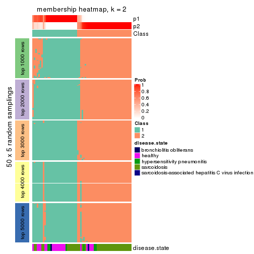
membership_heatmap(res, k = 3)
membership_heatmap(res, k = 4)
membership_heatmap(res, k = 5)
membership_heatmap(res, k = 6)
As soon as we have had the classes for columns, we can look for signatures which are significantly different between classes which can be candidate marks for certain classes. Following are the heatmaps for signatures.
Signature heatmaps where rows are scaled:
get_signatures(res, k = 2)
get_signatures(res, k = 3)
get_signatures(res, k = 4)
get_signatures(res, k = 5)
get_signatures(res, k = 6)
Signature heatmaps where rows are not scaled:
get_signatures(res, k = 2, scale_rows = FALSE)
get_signatures(res, k = 3, scale_rows = FALSE)
get_signatures(res, k = 4, scale_rows = FALSE)
get_signatures(res, k = 5, scale_rows = FALSE)
get_signatures(res, k = 6, scale_rows = FALSE)

Compare the overlap of signatures from different k:
compare_signatures(res)
get_signature() returns a data frame invisibly. TO get the list of signatures, the function
call should be assigned to a variable explicitly. In following code, if plot argument is set
to FALSE, no heatmap is plotted while only the differential analysis is performed.
# code only for demonstration
tb = get_signature(res, k = ..., plot = FALSE)
An example of the output of tb is:
#> which_row fdr mean_1 mean_2 scaled_mean_1 scaled_mean_2 km
#> 1 38 0.042760348 8.373488 9.131774 -0.5533452 0.5164555 1
#> 2 40 0.018707592 7.106213 8.469186 -0.6173731 0.5762149 1
#> 3 55 0.019134737 10.221463 11.207825 -0.6159697 0.5749050 1
#> 4 59 0.006059896 5.921854 7.869574 -0.6899429 0.6439467 1
#> 5 60 0.018055526 8.928898 10.211722 -0.6204761 0.5791110 1
#> 6 98 0.009384629 15.714769 14.887706 0.6635654 -0.6193277 2
...
The columns in tb are:
which_row: row indices corresponding to the input matrix.fdr: FDR for the differential test. mean_x: The mean value in group x.scaled_mean_x: The mean value in group x after rows are scaled.km: Row groups if k-means clustering is applied to rows.UMAP plot which shows how samples are separated.
dimension_reduction(res, k = 2, method = "UMAP")
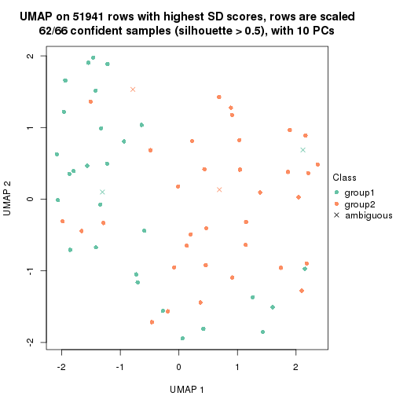
dimension_reduction(res, k = 3, method = "UMAP")
dimension_reduction(res, k = 4, method = "UMAP")
dimension_reduction(res, k = 5, method = "UMAP")
dimension_reduction(res, k = 6, method = "UMAP")
Following heatmap shows how subgroups are split when increasing k:
collect_classes(res)
Test correlation between subgroups and known annotations. If the known annotation is numeric, one-way ANOVA test is applied, and if the known annotation is discrete, chi-squared contingency table test is applied.
test_to_known_factors(res)
#> n disease.state(p) k
#> SD:pam 62 1.58e-02 2
#> SD:pam 65 2.58e-03 3
#> SD:pam 49 2.77e-05 4
#> SD:pam 57 9.05e-03 5
#> SD:pam 44 7.91e-04 6
If matrix rows can be associated to genes, consider to use functional_enrichment(res,
...) to perform function enrichment for the signature genes. See this vignette for more detailed explanations.
The object with results only for a single top-value method and a single partition method can be extracted as:
res = res_list["SD", "mclust"]
# you can also extract it by
# res = res_list["SD:mclust"]
A summary of res and all the functions that can be applied to it:
res
#> A 'ConsensusPartition' object with k = 2, 3, 4, 5, 6.
#> On a matrix with 51941 rows and 66 columns.
#> Top rows (1000, 2000, 3000, 4000, 5000) are extracted by 'SD' method.
#> Subgroups are detected by 'mclust' method.
#> Performed in total 1250 partitions by row resampling.
#> Best k for subgroups seems to be 2.
#>
#> Following methods can be applied to this 'ConsensusPartition' object:
#> [1] "cola_report" "collect_classes" "collect_plots"
#> [4] "collect_stats" "colnames" "compare_signatures"
#> [7] "consensus_heatmap" "dimension_reduction" "functional_enrichment"
#> [10] "get_anno_col" "get_anno" "get_classes"
#> [13] "get_consensus" "get_matrix" "get_membership"
#> [16] "get_param" "get_signatures" "get_stats"
#> [19] "is_best_k" "is_stable_k" "membership_heatmap"
#> [22] "ncol" "nrow" "plot_ecdf"
#> [25] "rownames" "select_partition_number" "show"
#> [28] "suggest_best_k" "test_to_known_factors"
collect_plots() function collects all the plots made from res for all k (number of partitions)
into one single page to provide an easy and fast comparison between different k.
collect_plots(res)

The plots are:
k and the heatmap of
predicted classes for each k.k.k.k.All the plots in panels can be made by individual functions and they are plotted later in this section.
select_partition_number() produces several plots showing different
statistics for choosing “optimized” k. There are following statistics:
k;k, the area increased is defined as \(A_k - A_{k-1}\).The detailed explanations of these statistics can be found in the cola vignette.
Generally speaking, lower PAC score, higher mean silhouette score or higher
concordance corresponds to better partition. Rand index and Jaccard index
measure how similar the current partition is compared to partition with k-1.
If they are too similar, we won't accept k is better than k-1.
select_partition_number(res)
The numeric values for all these statistics can be obtained by get_stats().
get_stats(res)
#> k 1-PAC mean_silhouette concordance area_increased Rand Jaccard
#> 2 2 1.000 0.999 0.999 0.2836 0.718 0.718
#> 3 3 0.506 0.763 0.861 0.9516 0.720 0.610
#> 4 4 0.523 0.658 0.765 0.1598 0.833 0.652
#> 5 5 0.516 0.629 0.737 0.1532 0.699 0.343
#> 6 6 0.696 0.721 0.851 0.0718 0.918 0.696
suggest_best_k() suggests the best \(k\) based on these statistics. The rules are as follows:
suggest_best_k(res)
#> [1] 2
Following shows the table of the partitions (You need to click the show/hide
code output link to see it). The membership matrix (columns with name p*)
is inferred by
clue::cl_consensus()
function with the SE method. Basically the value in the membership matrix
represents the probability to belong to a certain group. The finall class
label for an item is determined with the group with highest probability it
belongs to.
In get_classes() function, the entropy is calculated from the membership
matrix and the silhouette score is calculated from the consensus matrix.
cbind(get_classes(res, k = 2), get_membership(res, k = 2))
#> class entropy silhouette p1 p2
#> GSM479917 1 0.000 0.999 1.00 0.00
#> GSM479920 1 0.000 0.999 1.00 0.00
#> GSM479924 2 0.000 1.000 0.00 1.00
#> GSM479926 1 0.000 0.999 1.00 0.00
#> GSM479927 1 0.000 0.999 1.00 0.00
#> GSM479931 2 0.000 1.000 0.00 1.00
#> GSM479932 2 0.000 1.000 0.00 1.00
#> GSM479933 1 0.000 0.999 1.00 0.00
#> GSM479934 2 0.000 1.000 0.00 1.00
#> GSM479935 1 0.000 0.999 1.00 0.00
#> GSM479942 1 0.000 0.999 1.00 0.00
#> GSM479943 1 0.000 0.999 1.00 0.00
#> GSM479944 1 0.000 0.999 1.00 0.00
#> GSM479945 2 0.000 1.000 0.00 1.00
#> GSM479946 2 0.000 1.000 0.00 1.00
#> GSM479949 1 0.000 0.999 1.00 0.00
#> GSM479951 2 0.000 1.000 0.00 1.00
#> GSM479952 1 0.000 0.999 1.00 0.00
#> GSM479953 1 0.000 0.999 1.00 0.00
#> GSM479956 1 0.000 0.999 1.00 0.00
#> GSM479957 1 0.000 0.999 1.00 0.00
#> GSM479959 1 0.000 0.999 1.00 0.00
#> GSM479960 2 0.000 1.000 0.00 1.00
#> GSM479961 1 0.000 0.999 1.00 0.00
#> GSM479962 1 0.000 0.999 1.00 0.00
#> GSM479963 1 0.000 0.999 1.00 0.00
#> GSM479964 1 0.000 0.999 1.00 0.00
#> GSM479965 1 0.000 0.999 1.00 0.00
#> GSM479968 1 0.000 0.999 1.00 0.00
#> GSM479969 1 0.000 0.999 1.00 0.00
#> GSM479971 1 0.000 0.999 1.00 0.00
#> GSM479972 2 0.000 1.000 0.00 1.00
#> GSM479973 1 0.000 0.999 1.00 0.00
#> GSM479974 1 0.000 0.999 1.00 0.00
#> GSM479977 1 0.000 0.999 1.00 0.00
#> GSM479979 2 0.000 1.000 0.00 1.00
#> GSM479980 1 0.242 0.958 0.96 0.04
#> GSM479981 2 0.000 1.000 0.00 1.00
#> GSM479918 1 0.000 0.999 1.00 0.00
#> GSM479929 1 0.000 0.999 1.00 0.00
#> GSM479930 1 0.000 0.999 1.00 0.00
#> GSM479938 1 0.000 0.999 1.00 0.00
#> GSM479950 1 0.000 0.999 1.00 0.00
#> GSM479955 1 0.000 0.999 1.00 0.00
#> GSM479919 1 0.000 0.999 1.00 0.00
#> GSM479921 1 0.000 0.999 1.00 0.00
#> GSM479922 1 0.000 0.999 1.00 0.00
#> GSM479923 1 0.000 0.999 1.00 0.00
#> GSM479925 1 0.000 0.999 1.00 0.00
#> GSM479928 1 0.000 0.999 1.00 0.00
#> GSM479936 1 0.000 0.999 1.00 0.00
#> GSM479937 1 0.000 0.999 1.00 0.00
#> GSM479939 1 0.000 0.999 1.00 0.00
#> GSM479940 1 0.000 0.999 1.00 0.00
#> GSM479941 1 0.000 0.999 1.00 0.00
#> GSM479947 1 0.000 0.999 1.00 0.00
#> GSM479948 1 0.000 0.999 1.00 0.00
#> GSM479954 1 0.000 0.999 1.00 0.00
#> GSM479958 1 0.000 0.999 1.00 0.00
#> GSM479966 1 0.000 0.999 1.00 0.00
#> GSM479967 1 0.000 0.999 1.00 0.00
#> GSM479970 1 0.000 0.999 1.00 0.00
#> GSM479975 1 0.000 0.999 1.00 0.00
#> GSM479976 1 0.000 0.999 1.00 0.00
#> GSM479982 1 0.000 0.999 1.00 0.00
#> GSM479978 1 0.000 0.999 1.00 0.00
cbind(get_classes(res, k = 3), get_membership(res, k = 3))
#> class entropy silhouette p1 p2 p3
#> GSM479917 3 0.5760 0.356 0.328 0.000 0.672
#> GSM479920 3 0.4887 0.661 0.228 0.000 0.772
#> GSM479924 2 0.0000 0.998 0.000 1.000 0.000
#> GSM479926 1 0.3941 0.877 0.844 0.000 0.156
#> GSM479927 3 0.0424 0.804 0.008 0.000 0.992
#> GSM479931 2 0.0424 0.991 0.000 0.992 0.008
#> GSM479932 2 0.0000 0.998 0.000 1.000 0.000
#> GSM479933 3 0.5216 0.528 0.260 0.000 0.740
#> GSM479934 2 0.0000 0.998 0.000 1.000 0.000
#> GSM479935 1 0.3752 0.880 0.856 0.000 0.144
#> GSM479942 1 0.3816 0.881 0.852 0.000 0.148
#> GSM479943 3 0.5882 0.437 0.348 0.000 0.652
#> GSM479944 3 0.2625 0.785 0.084 0.000 0.916
#> GSM479945 2 0.0000 0.998 0.000 1.000 0.000
#> GSM479946 2 0.0000 0.998 0.000 1.000 0.000
#> GSM479949 3 0.3340 0.717 0.120 0.000 0.880
#> GSM479951 2 0.0000 0.998 0.000 1.000 0.000
#> GSM479952 3 0.0000 0.804 0.000 0.000 1.000
#> GSM479953 1 0.3816 0.881 0.852 0.000 0.148
#> GSM479956 3 0.0424 0.804 0.008 0.000 0.992
#> GSM479957 3 0.0424 0.804 0.008 0.000 0.992
#> GSM479959 1 0.6295 0.249 0.528 0.000 0.472
#> GSM479960 2 0.0237 0.994 0.000 0.996 0.004
#> GSM479961 3 0.0424 0.804 0.008 0.000 0.992
#> GSM479962 3 0.0424 0.804 0.008 0.000 0.992
#> GSM479963 3 0.5138 0.627 0.252 0.000 0.748
#> GSM479964 1 0.3752 0.880 0.856 0.000 0.144
#> GSM479965 1 0.3816 0.881 0.852 0.000 0.148
#> GSM479968 3 0.0237 0.805 0.004 0.000 0.996
#> GSM479969 3 0.3619 0.701 0.136 0.000 0.864
#> GSM479971 3 0.0424 0.804 0.008 0.000 0.992
#> GSM479972 2 0.0000 0.998 0.000 1.000 0.000
#> GSM479973 1 0.4346 0.852 0.816 0.000 0.184
#> GSM479974 3 0.0747 0.804 0.016 0.000 0.984
#> GSM479977 1 0.3816 0.881 0.852 0.000 0.148
#> GSM479979 2 0.0000 0.998 0.000 1.000 0.000
#> GSM479980 3 0.4589 0.635 0.008 0.172 0.820
#> GSM479981 2 0.0000 0.998 0.000 1.000 0.000
#> GSM479918 1 0.3752 0.880 0.856 0.000 0.144
#> GSM479929 3 0.5706 0.510 0.320 0.000 0.680
#> GSM479930 3 0.3619 0.701 0.136 0.000 0.864
#> GSM479938 3 0.5363 0.592 0.276 0.000 0.724
#> GSM479950 3 0.3192 0.767 0.112 0.000 0.888
#> GSM479955 3 0.2878 0.755 0.096 0.000 0.904
#> GSM479919 3 0.5678 0.520 0.316 0.000 0.684
#> GSM479921 1 0.3752 0.880 0.856 0.000 0.144
#> GSM479922 1 0.6280 0.320 0.540 0.000 0.460
#> GSM479923 3 0.0424 0.804 0.008 0.000 0.992
#> GSM479925 3 0.2448 0.788 0.076 0.000 0.924
#> GSM479928 3 0.0000 0.804 0.000 0.000 1.000
#> GSM479936 3 0.4702 0.678 0.212 0.000 0.788
#> GSM479937 3 0.0424 0.805 0.008 0.000 0.992
#> GSM479939 3 0.5465 0.571 0.288 0.000 0.712
#> GSM479940 3 0.2537 0.786 0.080 0.000 0.920
#> GSM479941 1 0.3752 0.880 0.856 0.000 0.144
#> GSM479947 3 0.4931 0.656 0.232 0.000 0.768
#> GSM479948 3 0.3619 0.701 0.136 0.000 0.864
#> GSM479954 3 0.2261 0.791 0.068 0.000 0.932
#> GSM479958 3 0.5760 0.490 0.328 0.000 0.672
#> GSM479966 3 0.5650 0.529 0.312 0.000 0.688
#> GSM479967 3 0.5706 0.510 0.320 0.000 0.680
#> GSM479970 3 0.0000 0.804 0.000 0.000 1.000
#> GSM479975 1 0.5835 0.649 0.660 0.000 0.340
#> GSM479976 3 0.0747 0.804 0.016 0.000 0.984
#> GSM479982 3 0.0424 0.804 0.008 0.000 0.992
#> GSM479978 1 0.5835 0.649 0.660 0.000 0.340
cbind(get_classes(res, k = 4), get_membership(res, k = 4))
#> class entropy silhouette p1 p2 p3 p4
#> GSM479917 1 0.4663 0.574 0.716 0.000 0.272 0.012
#> GSM479920 3 0.4605 0.693 0.336 0.000 0.664 0.000
#> GSM479924 2 0.0000 0.855 0.000 1.000 0.000 0.000
#> GSM479926 1 0.1474 0.803 0.948 0.000 0.052 0.000
#> GSM479927 4 0.4961 0.804 0.000 0.000 0.448 0.552
#> GSM479931 2 0.4981 0.513 0.000 0.536 0.000 0.464
#> GSM479932 2 0.0000 0.855 0.000 1.000 0.000 0.000
#> GSM479933 1 0.6464 0.345 0.596 0.000 0.308 0.096
#> GSM479934 2 0.0188 0.854 0.000 0.996 0.000 0.004
#> GSM479935 1 0.1792 0.880 0.932 0.000 0.068 0.000
#> GSM479942 1 0.3577 0.784 0.832 0.000 0.156 0.012
#> GSM479943 3 0.4898 0.628 0.416 0.000 0.584 0.000
#> GSM479944 3 0.5189 0.654 0.372 0.000 0.616 0.012
#> GSM479945 2 0.4277 0.714 0.000 0.720 0.000 0.280
#> GSM479946 2 0.4661 0.663 0.000 0.652 0.000 0.348
#> GSM479949 3 0.4250 0.506 0.000 0.000 0.724 0.276
#> GSM479951 2 0.0000 0.855 0.000 1.000 0.000 0.000
#> GSM479952 3 0.2411 0.523 0.040 0.000 0.920 0.040
#> GSM479953 1 0.2255 0.877 0.920 0.000 0.068 0.012
#> GSM479956 4 0.5000 0.729 0.000 0.000 0.496 0.504
#> GSM479957 3 0.4776 -0.417 0.000 0.000 0.624 0.376
#> GSM479959 1 0.2081 0.865 0.916 0.000 0.084 0.000
#> GSM479960 2 0.0000 0.855 0.000 1.000 0.000 0.000
#> GSM479961 4 0.4677 0.849 0.000 0.004 0.316 0.680
#> GSM479962 3 0.3219 0.326 0.000 0.000 0.836 0.164
#> GSM479963 3 0.4925 0.664 0.428 0.000 0.572 0.000
#> GSM479964 1 0.1792 0.880 0.932 0.000 0.068 0.000
#> GSM479965 1 0.1792 0.880 0.932 0.000 0.068 0.000
#> GSM479968 3 0.2973 0.575 0.096 0.000 0.884 0.020
#> GSM479969 3 0.4477 0.467 0.000 0.000 0.688 0.312
#> GSM479971 3 0.3688 0.191 0.000 0.000 0.792 0.208
#> GSM479972 2 0.6292 0.557 0.000 0.592 0.076 0.332
#> GSM479973 1 0.2402 0.875 0.912 0.000 0.076 0.012
#> GSM479974 3 0.0707 0.493 0.000 0.000 0.980 0.020
#> GSM479977 1 0.2255 0.877 0.920 0.000 0.068 0.012
#> GSM479979 2 0.0000 0.855 0.000 1.000 0.000 0.000
#> GSM479980 4 0.4477 0.852 0.000 0.000 0.312 0.688
#> GSM479981 2 0.0000 0.855 0.000 1.000 0.000 0.000
#> GSM479918 1 0.1792 0.880 0.932 0.000 0.068 0.000
#> GSM479929 3 0.4843 0.652 0.396 0.000 0.604 0.000
#> GSM479930 3 0.4477 0.467 0.000 0.000 0.688 0.312
#> GSM479938 3 0.4643 0.692 0.344 0.000 0.656 0.000
#> GSM479950 3 0.4277 0.695 0.280 0.000 0.720 0.000
#> GSM479955 3 0.4482 0.520 0.008 0.000 0.728 0.264
#> GSM479919 3 0.4989 0.628 0.472 0.000 0.528 0.000
#> GSM479921 1 0.1792 0.880 0.932 0.000 0.068 0.000
#> GSM479922 3 0.4679 0.688 0.352 0.000 0.648 0.000
#> GSM479923 3 0.3577 0.358 0.012 0.000 0.832 0.156
#> GSM479925 3 0.4643 0.692 0.344 0.000 0.656 0.000
#> GSM479928 3 0.1940 0.604 0.076 0.000 0.924 0.000
#> GSM479936 3 0.4948 0.657 0.440 0.000 0.560 0.000
#> GSM479937 3 0.4008 0.688 0.244 0.000 0.756 0.000
#> GSM479939 3 0.4989 0.629 0.472 0.000 0.528 0.000
#> GSM479940 3 0.4661 0.690 0.348 0.000 0.652 0.000
#> GSM479941 1 0.1792 0.880 0.932 0.000 0.068 0.000
#> GSM479947 3 0.4746 0.677 0.368 0.000 0.632 0.000
#> GSM479948 3 0.4477 0.467 0.000 0.000 0.688 0.312
#> GSM479954 3 0.4643 0.692 0.344 0.000 0.656 0.000
#> GSM479958 3 0.4804 0.664 0.384 0.000 0.616 0.000
#> GSM479966 3 0.4679 0.688 0.352 0.000 0.648 0.000
#> GSM479967 3 0.4989 0.629 0.472 0.000 0.528 0.000
#> GSM479970 3 0.0000 0.498 0.000 0.000 1.000 0.000
#> GSM479975 1 0.4331 0.176 0.712 0.000 0.288 0.000
#> GSM479976 3 0.4562 0.656 0.208 0.000 0.764 0.028
#> GSM479982 4 0.4477 0.852 0.000 0.000 0.312 0.688
#> GSM479978 3 0.4981 0.543 0.464 0.000 0.536 0.000
cbind(get_classes(res, k = 5), get_membership(res, k = 5))
#> class entropy silhouette p1 p2 p3 p4 p5
#> GSM479917 4 0.5335 0.6806 0.132 0.000 0.000 0.668 0.200
#> GSM479920 3 0.3652 0.7035 0.200 0.000 0.784 0.012 0.004
#> GSM479924 2 0.0000 0.7973 0.000 1.000 0.000 0.000 0.000
#> GSM479926 1 0.4953 0.6343 0.760 0.000 0.040 0.108 0.092
#> GSM479927 5 0.0854 0.7464 0.008 0.000 0.012 0.004 0.976
#> GSM479931 2 0.5827 0.6464 0.000 0.596 0.000 0.144 0.260
#> GSM479932 2 0.0703 0.7987 0.000 0.976 0.024 0.000 0.000
#> GSM479933 4 0.5053 0.6806 0.096 0.000 0.000 0.688 0.216
#> GSM479934 2 0.3523 0.7913 0.000 0.832 0.004 0.044 0.120
#> GSM479935 1 0.4649 0.5692 0.720 0.000 0.000 0.212 0.068
#> GSM479942 4 0.5513 0.5915 0.252 0.000 0.000 0.632 0.116
#> GSM479943 1 0.4210 0.7138 0.780 0.000 0.124 0.096 0.000
#> GSM479944 1 0.6672 0.6318 0.624 0.000 0.116 0.120 0.140
#> GSM479945 2 0.4629 0.7349 0.000 0.704 0.000 0.052 0.244
#> GSM479946 2 0.5716 0.6705 0.000 0.616 0.000 0.144 0.240
#> GSM479949 3 0.0290 0.7854 0.008 0.000 0.992 0.000 0.000
#> GSM479951 2 0.0703 0.7987 0.000 0.976 0.024 0.000 0.000
#> GSM479952 3 0.5908 0.2059 0.080 0.000 0.508 0.008 0.404
#> GSM479953 1 0.5803 0.1108 0.532 0.000 0.000 0.368 0.100
#> GSM479956 5 0.2554 0.6983 0.008 0.000 0.076 0.020 0.896
#> GSM479957 5 0.1280 0.7529 0.008 0.000 0.024 0.008 0.960
#> GSM479959 1 0.6009 0.6221 0.680 0.000 0.068 0.124 0.128
#> GSM479960 2 0.0880 0.7958 0.000 0.968 0.032 0.000 0.000
#> GSM479961 5 0.2732 0.6353 0.000 0.000 0.000 0.160 0.840
#> GSM479962 5 0.0854 0.7464 0.008 0.000 0.012 0.004 0.976
#> GSM479963 1 0.5043 0.6657 0.736 0.000 0.148 0.096 0.020
#> GSM479964 1 0.3906 0.5634 0.704 0.000 0.000 0.292 0.004
#> GSM479965 1 0.4587 0.5650 0.744 0.000 0.000 0.160 0.096
#> GSM479968 4 0.7045 0.3811 0.032 0.000 0.168 0.460 0.340
#> GSM479969 3 0.0000 0.7839 0.000 0.000 1.000 0.000 0.000
#> GSM479971 5 0.1538 0.7524 0.008 0.000 0.036 0.008 0.948
#> GSM479972 2 0.4801 0.7006 0.000 0.668 0.000 0.048 0.284
#> GSM479973 1 0.4686 0.5591 0.736 0.000 0.000 0.160 0.104
#> GSM479974 3 0.7028 0.3490 0.016 0.044 0.580 0.148 0.212
#> GSM479977 1 0.4397 0.3257 0.564 0.000 0.000 0.432 0.004
#> GSM479979 2 0.2964 0.7938 0.000 0.856 0.000 0.024 0.120
#> GSM479980 4 0.4150 0.3764 0.000 0.000 0.000 0.612 0.388
#> GSM479981 2 0.0000 0.7973 0.000 1.000 0.000 0.000 0.000
#> GSM479918 1 0.3684 0.5762 0.720 0.000 0.000 0.280 0.000
#> GSM479929 1 0.4288 0.5188 0.612 0.000 0.384 0.004 0.000
#> GSM479930 3 0.0290 0.7854 0.008 0.000 0.992 0.000 0.000
#> GSM479938 3 0.4630 -0.0346 0.416 0.000 0.572 0.008 0.004
#> GSM479950 3 0.3160 0.6713 0.188 0.000 0.808 0.000 0.004
#> GSM479955 3 0.0000 0.7839 0.000 0.000 1.000 0.000 0.000
#> GSM479919 1 0.4876 0.6829 0.756 0.000 0.124 0.096 0.024
#> GSM479921 1 0.3814 0.5823 0.720 0.000 0.004 0.276 0.000
#> GSM479922 1 0.4682 0.5543 0.620 0.000 0.356 0.024 0.000
#> GSM479923 5 0.2929 0.5872 0.180 0.000 0.000 0.000 0.820
#> GSM479925 1 0.2813 0.6875 0.832 0.000 0.168 0.000 0.000
#> GSM479928 3 0.2408 0.7588 0.004 0.000 0.892 0.008 0.096
#> GSM479936 1 0.4869 0.6737 0.748 0.000 0.140 0.096 0.016
#> GSM479937 3 0.2645 0.7704 0.068 0.000 0.888 0.000 0.044
#> GSM479939 1 0.4307 0.6824 0.772 0.000 0.128 0.100 0.000
#> GSM479940 1 0.3814 0.6158 0.720 0.000 0.276 0.000 0.004
#> GSM479941 1 0.3752 0.5661 0.708 0.000 0.000 0.292 0.000
#> GSM479947 1 0.2763 0.6990 0.848 0.000 0.148 0.000 0.004
#> GSM479948 3 0.0000 0.7839 0.000 0.000 1.000 0.000 0.000
#> GSM479954 1 0.4025 0.6896 0.796 0.000 0.156 0.016 0.032
#> GSM479958 1 0.2561 0.7005 0.856 0.000 0.144 0.000 0.000
#> GSM479966 1 0.3707 0.6264 0.716 0.000 0.284 0.000 0.000
#> GSM479967 1 0.4255 0.6795 0.776 0.000 0.128 0.096 0.000
#> GSM479970 3 0.2519 0.7584 0.016 0.000 0.884 0.000 0.100
#> GSM479975 1 0.4072 0.6875 0.792 0.000 0.108 0.100 0.000
#> GSM479976 5 0.5889 -0.0751 0.428 0.000 0.100 0.000 0.472
#> GSM479982 5 0.1671 0.7139 0.000 0.000 0.000 0.076 0.924
#> GSM479978 1 0.5140 0.6580 0.664 0.000 0.252 0.084 0.000
cbind(get_classes(res, k = 6), get_membership(res, k = 6))
#> class entropy silhouette p1 p2 p3 p4 p5 p6
#> GSM479917 4 0.0458 0.821 0.000 0.000 0.000 0.984 0.000 0.016
#> GSM479920 3 0.3269 0.726 0.184 0.000 0.792 0.000 0.000 0.024
#> GSM479924 2 0.0000 0.802 0.000 1.000 0.000 0.000 0.000 0.000
#> GSM479926 1 0.0291 0.843 0.992 0.000 0.000 0.004 0.000 0.004
#> GSM479927 5 0.1957 0.902 0.112 0.000 0.000 0.000 0.888 0.000
#> GSM479931 2 0.5878 0.673 0.000 0.592 0.020 0.048 0.284 0.056
#> GSM479932 2 0.0146 0.802 0.000 0.996 0.004 0.000 0.000 0.000
#> GSM479933 4 0.0363 0.821 0.000 0.000 0.000 0.988 0.000 0.012
#> GSM479934 2 0.4532 0.766 0.044 0.796 0.064 0.016 0.024 0.056
#> GSM479935 6 0.3989 0.193 0.468 0.000 0.000 0.004 0.000 0.528
#> GSM479942 4 0.0790 0.809 0.000 0.000 0.000 0.968 0.000 0.032
#> GSM479943 1 0.2325 0.803 0.892 0.000 0.048 0.000 0.000 0.060
#> GSM479944 1 0.4193 0.405 0.600 0.000 0.000 0.384 0.008 0.008
#> GSM479945 2 0.6087 0.634 0.108 0.616 0.000 0.016 0.204 0.056
#> GSM479946 2 0.5809 0.686 0.000 0.608 0.020 0.048 0.268 0.056
#> GSM479949 3 0.0547 0.866 0.020 0.000 0.980 0.000 0.000 0.000
#> GSM479951 2 0.0146 0.802 0.000 0.996 0.004 0.000 0.000 0.000
#> GSM479952 3 0.5143 0.467 0.248 0.000 0.612 0.000 0.140 0.000
#> GSM479953 6 0.3857 -0.129 0.000 0.000 0.000 0.468 0.000 0.532
#> GSM479956 5 0.2257 0.898 0.116 0.000 0.000 0.008 0.876 0.000
#> GSM479957 5 0.2100 0.902 0.112 0.000 0.000 0.004 0.884 0.000
#> GSM479959 1 0.1411 0.824 0.936 0.000 0.000 0.060 0.000 0.004
#> GSM479960 2 0.0260 0.800 0.000 0.992 0.008 0.000 0.000 0.000
#> GSM479961 5 0.2642 0.717 0.000 0.000 0.020 0.064 0.884 0.032
#> GSM479962 5 0.1957 0.902 0.112 0.000 0.000 0.000 0.888 0.000
#> GSM479963 1 0.0291 0.845 0.992 0.000 0.004 0.000 0.004 0.000
#> GSM479964 6 0.1204 0.566 0.056 0.000 0.000 0.000 0.000 0.944
#> GSM479965 1 0.4664 0.472 0.644 0.000 0.000 0.280 0.000 0.076
#> GSM479968 4 0.3419 0.682 0.148 0.000 0.004 0.812 0.028 0.008
#> GSM479969 3 0.0547 0.866 0.020 0.000 0.980 0.000 0.000 0.000
#> GSM479971 5 0.2100 0.902 0.112 0.000 0.000 0.004 0.884 0.000
#> GSM479972 2 0.6087 0.634 0.108 0.616 0.000 0.016 0.204 0.056
#> GSM479973 1 0.4638 0.458 0.636 0.000 0.000 0.296 0.000 0.068
#> GSM479974 3 0.6807 0.140 0.012 0.044 0.476 0.348 0.020 0.100
#> GSM479977 6 0.3062 0.468 0.032 0.000 0.000 0.144 0.000 0.824
#> GSM479979 2 0.4048 0.774 0.000 0.796 0.016 0.016 0.116 0.056
#> GSM479980 4 0.3734 0.592 0.000 0.000 0.020 0.716 0.264 0.000
#> GSM479981 2 0.0000 0.802 0.000 1.000 0.000 0.000 0.000 0.000
#> GSM479918 6 0.3789 0.354 0.416 0.000 0.000 0.000 0.000 0.584
#> GSM479929 1 0.3460 0.683 0.760 0.000 0.220 0.000 0.000 0.020
#> GSM479930 3 0.0547 0.866 0.020 0.000 0.980 0.000 0.000 0.000
#> GSM479938 3 0.3371 0.516 0.292 0.000 0.708 0.000 0.000 0.000
#> GSM479950 3 0.0713 0.865 0.028 0.000 0.972 0.000 0.000 0.000
#> GSM479955 3 0.0713 0.865 0.028 0.000 0.972 0.000 0.000 0.000
#> GSM479919 1 0.0146 0.844 0.996 0.000 0.000 0.000 0.004 0.000
#> GSM479921 6 0.3288 0.577 0.276 0.000 0.000 0.000 0.000 0.724
#> GSM479922 1 0.3457 0.682 0.752 0.000 0.232 0.000 0.000 0.016
#> GSM479923 5 0.3023 0.748 0.232 0.000 0.000 0.000 0.768 0.000
#> GSM479925 1 0.0937 0.841 0.960 0.000 0.040 0.000 0.000 0.000
#> GSM479928 3 0.0547 0.866 0.020 0.000 0.980 0.000 0.000 0.000
#> GSM479936 1 0.0291 0.845 0.992 0.000 0.004 0.000 0.004 0.000
#> GSM479937 3 0.0713 0.865 0.028 0.000 0.972 0.000 0.000 0.000
#> GSM479939 1 0.0260 0.847 0.992 0.000 0.008 0.000 0.000 0.000
#> GSM479940 1 0.1910 0.803 0.892 0.000 0.108 0.000 0.000 0.000
#> GSM479941 6 0.1204 0.566 0.056 0.000 0.000 0.000 0.000 0.944
#> GSM479947 1 0.0146 0.846 0.996 0.000 0.004 0.000 0.000 0.000
#> GSM479948 3 0.0547 0.866 0.020 0.000 0.980 0.000 0.000 0.000
#> GSM479954 1 0.0508 0.841 0.984 0.000 0.004 0.000 0.012 0.000
#> GSM479958 1 0.2145 0.811 0.900 0.000 0.072 0.000 0.000 0.028
#> GSM479966 1 0.2092 0.790 0.876 0.000 0.124 0.000 0.000 0.000
#> GSM479967 1 0.0146 0.846 0.996 0.000 0.004 0.000 0.000 0.000
#> GSM479970 3 0.0547 0.866 0.020 0.000 0.980 0.000 0.000 0.000
#> GSM479975 1 0.0260 0.847 0.992 0.000 0.008 0.000 0.000 0.000
#> GSM479976 1 0.1556 0.785 0.920 0.000 0.000 0.000 0.080 0.000
#> GSM479982 5 0.0820 0.784 0.000 0.000 0.016 0.012 0.972 0.000
#> GSM479978 1 0.3962 0.702 0.764 0.000 0.120 0.000 0.000 0.116
Heatmaps for the consensus matrix. It visualizes the probability of two samples to be in a same group.
consensus_heatmap(res, k = 2)
consensus_heatmap(res, k = 3)
consensus_heatmap(res, k = 4)
consensus_heatmap(res, k = 5)
consensus_heatmap(res, k = 6)
Heatmaps for the membership of samples in all partitions to see how consistent they are:
membership_heatmap(res, k = 2)
membership_heatmap(res, k = 3)
membership_heatmap(res, k = 4)
membership_heatmap(res, k = 5)
membership_heatmap(res, k = 6)
As soon as we have had the classes for columns, we can look for signatures which are significantly different between classes which can be candidate marks for certain classes. Following are the heatmaps for signatures.
Signature heatmaps where rows are scaled:
get_signatures(res, k = 2)
get_signatures(res, k = 3)
get_signatures(res, k = 4)
get_signatures(res, k = 5)
get_signatures(res, k = 6)
Signature heatmaps where rows are not scaled:
get_signatures(res, k = 2, scale_rows = FALSE)
get_signatures(res, k = 3, scale_rows = FALSE)
get_signatures(res, k = 4, scale_rows = FALSE)
get_signatures(res, k = 5, scale_rows = FALSE)
get_signatures(res, k = 6, scale_rows = FALSE)
Compare the overlap of signatures from different k:
compare_signatures(res)
get_signature() returns a data frame invisibly. TO get the list of signatures, the function
call should be assigned to a variable explicitly. In following code, if plot argument is set
to FALSE, no heatmap is plotted while only the differential analysis is performed.
# code only for demonstration
tb = get_signature(res, k = ..., plot = FALSE)
An example of the output of tb is:
#> which_row fdr mean_1 mean_2 scaled_mean_1 scaled_mean_2 km
#> 1 38 0.042760348 8.373488 9.131774 -0.5533452 0.5164555 1
#> 2 40 0.018707592 7.106213 8.469186 -0.6173731 0.5762149 1
#> 3 55 0.019134737 10.221463 11.207825 -0.6159697 0.5749050 1
#> 4 59 0.006059896 5.921854 7.869574 -0.6899429 0.6439467 1
#> 5 60 0.018055526 8.928898 10.211722 -0.6204761 0.5791110 1
#> 6 98 0.009384629 15.714769 14.887706 0.6635654 -0.6193277 2
...
The columns in tb are:
which_row: row indices corresponding to the input matrix.fdr: FDR for the differential test. mean_x: The mean value in group x.scaled_mean_x: The mean value in group x after rows are scaled.km: Row groups if k-means clustering is applied to rows.UMAP plot which shows how samples are separated.
dimension_reduction(res, k = 2, method = "UMAP")
dimension_reduction(res, k = 3, method = "UMAP")
dimension_reduction(res, k = 4, method = "UMAP")
dimension_reduction(res, k = 5, method = "UMAP")
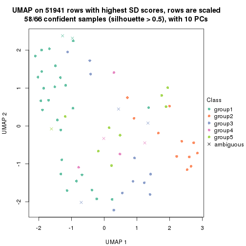
dimension_reduction(res, k = 6, method = "UMAP")
Following heatmap shows how subgroups are split when increasing k:
collect_classes(res)
Test correlation between subgroups and known annotations. If the known annotation is numeric, one-way ANOVA test is applied, and if the known annotation is discrete, chi-squared contingency table test is applied.
test_to_known_factors(res)
#> n disease.state(p) k
#> SD:mclust 66 0.045299 2
#> SD:mclust 61 0.045994 3
#> SD:mclust 55 0.000789 4
#> SD:mclust 58 0.007872 5
#> SD:mclust 57 0.000646 6
If matrix rows can be associated to genes, consider to use functional_enrichment(res,
...) to perform function enrichment for the signature genes. See this vignette for more detailed explanations.
The object with results only for a single top-value method and a single partition method can be extracted as:
res = res_list["SD", "NMF"]
# you can also extract it by
# res = res_list["SD:NMF"]
A summary of res and all the functions that can be applied to it:
res
#> A 'ConsensusPartition' object with k = 2, 3, 4, 5, 6.
#> On a matrix with 51941 rows and 66 columns.
#> Top rows (1000, 2000, 3000, 4000, 5000) are extracted by 'SD' method.
#> Subgroups are detected by 'NMF' method.
#> Performed in total 1250 partitions by row resampling.
#> Best k for subgroups seems to be 2.
#>
#> Following methods can be applied to this 'ConsensusPartition' object:
#> [1] "cola_report" "collect_classes" "collect_plots"
#> [4] "collect_stats" "colnames" "compare_signatures"
#> [7] "consensus_heatmap" "dimension_reduction" "functional_enrichment"
#> [10] "get_anno_col" "get_anno" "get_classes"
#> [13] "get_consensus" "get_matrix" "get_membership"
#> [16] "get_param" "get_signatures" "get_stats"
#> [19] "is_best_k" "is_stable_k" "membership_heatmap"
#> [22] "ncol" "nrow" "plot_ecdf"
#> [25] "rownames" "select_partition_number" "show"
#> [28] "suggest_best_k" "test_to_known_factors"
collect_plots() function collects all the plots made from res for all k (number of partitions)
into one single page to provide an easy and fast comparison between different k.
collect_plots(res)
The plots are:
k and the heatmap of
predicted classes for each k.k.k.k.All the plots in panels can be made by individual functions and they are plotted later in this section.
select_partition_number() produces several plots showing different
statistics for choosing “optimized” k. There are following statistics:
k;k, the area increased is defined as \(A_k - A_{k-1}\).The detailed explanations of these statistics can be found in the cola vignette.
Generally speaking, lower PAC score, higher mean silhouette score or higher
concordance corresponds to better partition. Rand index and Jaccard index
measure how similar the current partition is compared to partition with k-1.
If they are too similar, we won't accept k is better than k-1.
select_partition_number(res)
The numeric values for all these statistics can be obtained by get_stats().
get_stats(res)
#> k 1-PAC mean_silhouette concordance area_increased Rand Jaccard
#> 2 2 0.843 0.877 0.872 0.4861 0.515 0.515
#> 3 3 0.506 0.659 0.808 0.3206 0.807 0.642
#> 4 4 0.540 0.681 0.824 0.1400 0.869 0.660
#> 5 5 0.599 0.587 0.785 0.0761 0.804 0.416
#> 6 6 0.575 0.407 0.661 0.0382 0.890 0.586
suggest_best_k() suggests the best \(k\) based on these statistics. The rules are as follows:
suggest_best_k(res)
#> [1] 2
Following shows the table of the partitions (You need to click the show/hide
code output link to see it). The membership matrix (columns with name p*)
is inferred by
clue::cl_consensus()
function with the SE method. Basically the value in the membership matrix
represents the probability to belong to a certain group. The finall class
label for an item is determined with the group with highest probability it
belongs to.
In get_classes() function, the entropy is calculated from the membership
matrix and the silhouette score is calculated from the consensus matrix.
cbind(get_classes(res, k = 2), get_membership(res, k = 2))
#> class entropy silhouette p1 p2
#> GSM479917 1 0.000 0.9458 1.000 0.000
#> GSM479920 1 0.242 0.9128 0.960 0.040
#> GSM479924 2 0.000 0.9454 0.000 1.000
#> GSM479926 1 0.000 0.9458 1.000 0.000
#> GSM479927 2 0.000 0.9454 0.000 1.000
#> GSM479931 2 0.000 0.9454 0.000 1.000
#> GSM479932 2 0.000 0.9454 0.000 1.000
#> GSM479933 2 0.224 0.9202 0.036 0.964
#> GSM479934 2 0.000 0.9454 0.000 1.000
#> GSM479935 1 0.000 0.9458 1.000 0.000
#> GSM479942 1 0.000 0.9458 1.000 0.000
#> GSM479943 1 0.000 0.9458 1.000 0.000
#> GSM479944 1 0.118 0.9334 0.984 0.016
#> GSM479945 2 0.000 0.9454 0.000 1.000
#> GSM479946 2 0.000 0.9454 0.000 1.000
#> GSM479949 2 0.224 0.9197 0.036 0.964
#> GSM479951 2 0.000 0.9454 0.000 1.000
#> GSM479952 1 0.917 0.5064 0.668 0.332
#> GSM479953 1 0.000 0.9458 1.000 0.000
#> GSM479956 2 0.000 0.9454 0.000 1.000
#> GSM479957 1 0.993 0.1905 0.548 0.452
#> GSM479959 1 0.000 0.9458 1.000 0.000
#> GSM479960 2 0.000 0.9454 0.000 1.000
#> GSM479961 2 0.000 0.9454 0.000 1.000
#> GSM479962 2 0.000 0.9454 0.000 1.000
#> GSM479963 1 0.000 0.9458 1.000 0.000
#> GSM479964 1 0.000 0.9458 1.000 0.000
#> GSM479965 1 0.000 0.9458 1.000 0.000
#> GSM479968 2 0.999 0.0548 0.484 0.516
#> GSM479969 2 0.000 0.9454 0.000 1.000
#> GSM479971 2 0.861 0.5833 0.284 0.716
#> GSM479972 2 0.000 0.9454 0.000 1.000
#> GSM479973 1 0.000 0.9458 1.000 0.000
#> GSM479974 2 0.000 0.9454 0.000 1.000
#> GSM479977 1 0.000 0.9458 1.000 0.000
#> GSM479979 2 0.000 0.9454 0.000 1.000
#> GSM479980 2 0.000 0.9454 0.000 1.000
#> GSM479981 2 0.000 0.9454 0.000 1.000
#> GSM479918 1 0.000 0.9458 1.000 0.000
#> GSM479929 1 0.000 0.9458 1.000 0.000
#> GSM479930 2 0.000 0.9454 0.000 1.000
#> GSM479938 1 0.000 0.9458 1.000 0.000
#> GSM479950 1 0.443 0.8624 0.908 0.092
#> GSM479955 2 0.518 0.8390 0.116 0.884
#> GSM479919 1 0.000 0.9458 1.000 0.000
#> GSM479921 1 0.000 0.9458 1.000 0.000
#> GSM479922 1 0.000 0.9458 1.000 0.000
#> GSM479923 1 0.827 0.6437 0.740 0.260
#> GSM479925 1 0.000 0.9458 1.000 0.000
#> GSM479928 1 0.949 0.4252 0.632 0.368
#> GSM479936 1 0.000 0.9458 1.000 0.000
#> GSM479937 1 0.000 0.9458 1.000 0.000
#> GSM479939 1 0.000 0.9458 1.000 0.000
#> GSM479940 1 0.000 0.9458 1.000 0.000
#> GSM479941 1 0.000 0.9458 1.000 0.000
#> GSM479947 1 0.000 0.9458 1.000 0.000
#> GSM479948 2 0.000 0.9454 0.000 1.000
#> GSM479954 1 0.000 0.9458 1.000 0.000
#> GSM479958 1 0.000 0.9458 1.000 0.000
#> GSM479966 1 0.000 0.9458 1.000 0.000
#> GSM479967 1 0.000 0.9458 1.000 0.000
#> GSM479970 1 0.971 0.3471 0.600 0.400
#> GSM479975 1 0.000 0.9458 1.000 0.000
#> GSM479976 1 0.000 0.9458 1.000 0.000
#> GSM479982 2 0.886 0.5428 0.304 0.696
#> GSM479978 1 0.000 0.9458 1.000 0.000
cbind(get_classes(res, k = 3), get_membership(res, k = 3))
#> class entropy silhouette p1 p2 p3
#> GSM479917 1 0.9549 0.1871 0.484 0.240 0.276
#> GSM479920 1 0.3686 0.7448 0.860 0.140 0.000
#> GSM479924 2 0.4555 0.7770 0.000 0.800 0.200
#> GSM479926 1 0.0424 0.8339 0.992 0.000 0.008
#> GSM479927 3 0.0000 0.6758 0.000 0.000 1.000
#> GSM479931 2 0.5882 0.5316 0.000 0.652 0.348
#> GSM479932 2 0.4235 0.7803 0.000 0.824 0.176
#> GSM479933 2 0.1999 0.6846 0.036 0.952 0.012
#> GSM479934 2 0.4842 0.7730 0.000 0.776 0.224
#> GSM479935 1 0.0237 0.8326 0.996 0.004 0.000
#> GSM479942 1 0.5202 0.6884 0.772 0.220 0.008
#> GSM479943 1 0.0000 0.8325 1.000 0.000 0.000
#> GSM479944 1 0.8527 0.4789 0.612 0.196 0.192
#> GSM479945 2 0.5621 0.7350 0.000 0.692 0.308
#> GSM479946 2 0.3116 0.6766 0.000 0.892 0.108
#> GSM479949 2 0.8262 0.6151 0.104 0.592 0.304
#> GSM479951 2 0.0000 0.7066 0.000 1.000 0.000
#> GSM479952 3 0.5138 0.5695 0.252 0.000 0.748
#> GSM479953 1 0.4399 0.7244 0.812 0.188 0.000
#> GSM479956 3 0.2878 0.6339 0.000 0.096 0.904
#> GSM479957 3 0.0661 0.6762 0.004 0.008 0.988
#> GSM479959 1 0.7222 0.2005 0.580 0.032 0.388
#> GSM479960 2 0.3752 0.7750 0.000 0.856 0.144
#> GSM479961 3 0.5560 0.5218 0.000 0.300 0.700
#> GSM479962 3 0.0000 0.6758 0.000 0.000 1.000
#> GSM479963 1 0.5760 0.5086 0.672 0.000 0.328
#> GSM479964 1 0.1753 0.8228 0.952 0.048 0.000
#> GSM479965 1 0.1643 0.8240 0.956 0.044 0.000
#> GSM479968 2 0.9806 -0.1444 0.328 0.420 0.252
#> GSM479969 2 0.5896 0.7465 0.008 0.700 0.292
#> GSM479971 3 0.1964 0.6453 0.000 0.056 0.944
#> GSM479972 2 0.6308 0.5136 0.000 0.508 0.492
#> GSM479973 1 0.3134 0.8137 0.916 0.032 0.052
#> GSM479974 2 0.0000 0.7066 0.000 1.000 0.000
#> GSM479977 1 0.4931 0.6869 0.768 0.232 0.000
#> GSM479979 2 0.4121 0.7800 0.000 0.832 0.168
#> GSM479980 3 0.5882 0.4760 0.000 0.348 0.652
#> GSM479981 2 0.4235 0.7803 0.000 0.824 0.176
#> GSM479918 1 0.3192 0.7869 0.888 0.112 0.000
#> GSM479929 1 0.0592 0.8330 0.988 0.012 0.000
#> GSM479930 2 0.7278 0.5688 0.028 0.516 0.456
#> GSM479938 1 0.0424 0.8338 0.992 0.008 0.000
#> GSM479950 1 0.5004 0.7573 0.840 0.072 0.088
#> GSM479955 2 0.6099 0.7461 0.032 0.740 0.228
#> GSM479919 1 0.4605 0.7082 0.796 0.000 0.204
#> GSM479921 1 0.0000 0.8325 1.000 0.000 0.000
#> GSM479922 1 0.1860 0.8268 0.948 0.000 0.052
#> GSM479923 3 0.1964 0.6820 0.056 0.000 0.944
#> GSM479925 1 0.3686 0.7735 0.860 0.000 0.140
#> GSM479928 1 0.8933 0.3489 0.556 0.168 0.276
#> GSM479936 3 0.6309 -0.0374 0.496 0.000 0.504
#> GSM479937 1 0.3784 0.7812 0.864 0.004 0.132
#> GSM479939 1 0.5706 0.5093 0.680 0.000 0.320
#> GSM479940 1 0.0829 0.8345 0.984 0.004 0.012
#> GSM479941 1 0.0424 0.8324 0.992 0.008 0.000
#> GSM479947 1 0.2261 0.8222 0.932 0.000 0.068
#> GSM479948 2 0.6209 0.7033 0.004 0.628 0.368
#> GSM479954 3 0.6295 0.0561 0.472 0.000 0.528
#> GSM479958 1 0.1289 0.8317 0.968 0.000 0.032
#> GSM479966 1 0.2625 0.8127 0.916 0.000 0.084
#> GSM479967 1 0.2066 0.8247 0.940 0.000 0.060
#> GSM479970 3 0.1267 0.6772 0.024 0.004 0.972
#> GSM479975 1 0.1643 0.8292 0.956 0.000 0.044
#> GSM479976 3 0.6008 0.3559 0.372 0.000 0.628
#> GSM479982 3 0.3412 0.6436 0.000 0.124 0.876
#> GSM479978 1 0.1529 0.8302 0.960 0.000 0.040
cbind(get_classes(res, k = 4), get_membership(res, k = 4))
#> class entropy silhouette p1 p2 p3 p4
#> GSM479917 4 0.2480 0.8644 0.088 0.000 0.008 0.904
#> GSM479920 1 0.3913 0.7321 0.824 0.148 0.000 0.028
#> GSM479924 2 0.0000 0.8366 0.000 1.000 0.000 0.000
#> GSM479926 1 0.2589 0.8003 0.912 0.000 0.044 0.044
#> GSM479927 3 0.1118 0.7011 0.000 0.000 0.964 0.036
#> GSM479931 2 0.7178 0.4490 0.000 0.520 0.324 0.156
#> GSM479932 2 0.0000 0.8366 0.000 1.000 0.000 0.000
#> GSM479933 4 0.2124 0.8588 0.040 0.028 0.000 0.932
#> GSM479934 2 0.0707 0.8341 0.000 0.980 0.020 0.000
#> GSM479935 1 0.2647 0.7788 0.880 0.000 0.000 0.120
#> GSM479942 4 0.1867 0.8707 0.072 0.000 0.000 0.928
#> GSM479943 1 0.3088 0.7837 0.864 0.000 0.008 0.128
#> GSM479944 4 0.1822 0.8633 0.044 0.004 0.008 0.944
#> GSM479945 2 0.3400 0.7697 0.000 0.820 0.180 0.000
#> GSM479946 2 0.4214 0.7191 0.000 0.780 0.016 0.204
#> GSM479949 2 0.7064 0.3451 0.300 0.560 0.136 0.004
#> GSM479951 2 0.0000 0.8366 0.000 1.000 0.000 0.000
#> GSM479952 3 0.3051 0.7078 0.088 0.000 0.884 0.028
#> GSM479953 4 0.4134 0.7251 0.260 0.000 0.000 0.740
#> GSM479956 3 0.3636 0.6830 0.000 0.008 0.820 0.172
#> GSM479957 3 0.4356 0.5868 0.000 0.000 0.708 0.292
#> GSM479959 4 0.5536 0.6854 0.096 0.000 0.180 0.724
#> GSM479960 2 0.0000 0.8366 0.000 1.000 0.000 0.000
#> GSM479961 3 0.5409 0.0133 0.000 0.012 0.496 0.492
#> GSM479962 3 0.0592 0.7084 0.000 0.000 0.984 0.016
#> GSM479963 1 0.5290 -0.0104 0.516 0.000 0.476 0.008
#> GSM479964 1 0.1474 0.8031 0.948 0.000 0.000 0.052
#> GSM479965 4 0.3444 0.8212 0.184 0.000 0.000 0.816
#> GSM479968 4 0.1674 0.8521 0.032 0.004 0.012 0.952
#> GSM479969 2 0.4823 0.7747 0.044 0.816 0.092 0.048
#> GSM479971 3 0.2469 0.7048 0.000 0.000 0.892 0.108
#> GSM479972 2 0.4795 0.6702 0.000 0.696 0.292 0.012
#> GSM479973 4 0.3123 0.8429 0.156 0.000 0.000 0.844
#> GSM479974 2 0.3311 0.7635 0.000 0.828 0.000 0.172
#> GSM479977 1 0.5624 0.6171 0.724 0.148 0.000 0.128
#> GSM479979 2 0.0188 0.8363 0.000 0.996 0.000 0.004
#> GSM479980 4 0.2334 0.7725 0.000 0.004 0.088 0.908
#> GSM479981 2 0.0000 0.8366 0.000 1.000 0.000 0.000
#> GSM479918 1 0.3400 0.7433 0.820 0.000 0.000 0.180
#> GSM479929 1 0.2949 0.7822 0.888 0.000 0.024 0.088
#> GSM479930 3 0.7241 0.1544 0.108 0.332 0.544 0.016
#> GSM479938 1 0.5116 0.7088 0.784 0.136 0.020 0.060
#> GSM479950 1 0.6820 0.4930 0.616 0.288 0.036 0.060
#> GSM479955 2 0.3363 0.7942 0.072 0.884 0.020 0.024
#> GSM479919 1 0.5069 0.4504 0.664 0.000 0.320 0.016
#> GSM479921 1 0.0921 0.8071 0.972 0.000 0.000 0.028
#> GSM479922 1 0.2739 0.7785 0.904 0.000 0.036 0.060
#> GSM479923 3 0.0376 0.7108 0.004 0.000 0.992 0.004
#> GSM479925 1 0.4482 0.5709 0.728 0.000 0.264 0.008
#> GSM479928 1 0.7870 0.2732 0.520 0.332 0.080 0.068
#> GSM479936 3 0.5823 0.3724 0.348 0.000 0.608 0.044
#> GSM479937 1 0.3928 0.7475 0.848 0.004 0.088 0.060
#> GSM479939 1 0.7241 0.3549 0.540 0.000 0.264 0.196
#> GSM479940 1 0.1151 0.8094 0.968 0.000 0.008 0.024
#> GSM479941 1 0.1302 0.8056 0.956 0.000 0.000 0.044
#> GSM479947 1 0.3051 0.7802 0.884 0.000 0.088 0.028
#> GSM479948 2 0.6312 0.6637 0.024 0.672 0.240 0.064
#> GSM479954 3 0.5355 0.3698 0.360 0.000 0.620 0.020
#> GSM479958 1 0.0707 0.8077 0.980 0.000 0.000 0.020
#> GSM479966 1 0.1004 0.8049 0.972 0.000 0.024 0.004
#> GSM479967 1 0.1677 0.8048 0.948 0.000 0.040 0.012
#> GSM479970 3 0.6385 0.5882 0.100 0.112 0.724 0.064
#> GSM479975 1 0.1837 0.8075 0.944 0.000 0.028 0.028
#> GSM479976 3 0.5325 0.6188 0.204 0.000 0.728 0.068
#> GSM479982 3 0.4790 0.4112 0.000 0.000 0.620 0.380
#> GSM479978 1 0.0707 0.8080 0.980 0.000 0.000 0.020
cbind(get_classes(res, k = 5), get_membership(res, k = 5))
#> class entropy silhouette p1 p2 p3 p4 p5
#> GSM479917 4 0.0693 0.7023 0.012 0.000 0.008 0.980 0.000
#> GSM479920 1 0.3380 0.7950 0.860 0.088 0.020 0.028 0.004
#> GSM479924 2 0.0162 0.7996 0.000 0.996 0.000 0.000 0.004
#> GSM479926 1 0.0854 0.8330 0.976 0.000 0.012 0.004 0.008
#> GSM479927 5 0.0794 0.6296 0.028 0.000 0.000 0.000 0.972
#> GSM479931 5 0.6321 0.2967 0.000 0.244 0.008 0.184 0.564
#> GSM479932 2 0.0451 0.7974 0.004 0.988 0.008 0.000 0.000
#> GSM479933 4 0.2389 0.7221 0.000 0.004 0.116 0.880 0.000
#> GSM479934 2 0.0566 0.7979 0.000 0.984 0.004 0.000 0.012
#> GSM479935 3 0.5908 0.3603 0.380 0.000 0.512 0.108 0.000
#> GSM479942 4 0.1608 0.7325 0.000 0.000 0.072 0.928 0.000
#> GSM479943 3 0.4021 0.6649 0.200 0.000 0.764 0.036 0.000
#> GSM479944 4 0.4586 0.1608 0.000 0.004 0.468 0.524 0.004
#> GSM479945 2 0.3366 0.6856 0.004 0.784 0.000 0.000 0.212
#> GSM479946 2 0.5067 0.5315 0.000 0.668 0.028 0.280 0.024
#> GSM479949 1 0.4294 0.7126 0.780 0.148 0.008 0.000 0.064
#> GSM479951 2 0.0162 0.7985 0.000 0.996 0.000 0.004 0.000
#> GSM479952 5 0.3972 0.6077 0.212 0.000 0.008 0.016 0.764
#> GSM479953 1 0.4450 0.1182 0.508 0.004 0.000 0.488 0.000
#> GSM479956 3 0.6289 0.0284 0.000 0.000 0.452 0.152 0.396
#> GSM479957 5 0.5782 0.3539 0.004 0.000 0.140 0.232 0.624
#> GSM479959 4 0.6822 0.3873 0.268 0.000 0.116 0.556 0.060
#> GSM479960 2 0.0000 0.7992 0.000 1.000 0.000 0.000 0.000
#> GSM479961 5 0.4740 0.1832 0.016 0.000 0.000 0.468 0.516
#> GSM479962 5 0.1124 0.6341 0.036 0.000 0.004 0.000 0.960
#> GSM479963 1 0.3734 0.7090 0.796 0.000 0.036 0.000 0.168
#> GSM479964 1 0.2171 0.8266 0.924 0.016 0.028 0.032 0.000
#> GSM479965 1 0.4150 0.4269 0.612 0.000 0.000 0.388 0.000
#> GSM479968 4 0.2983 0.7180 0.032 0.000 0.096 0.868 0.004
#> GSM479969 3 0.5248 0.3428 0.012 0.348 0.604 0.000 0.036
#> GSM479971 3 0.5000 0.3289 0.008 0.008 0.600 0.012 0.372
#> GSM479972 2 0.5285 0.5646 0.000 0.632 0.080 0.000 0.288
#> GSM479973 4 0.3636 0.4644 0.272 0.000 0.000 0.728 0.000
#> GSM479974 3 0.6882 0.1467 0.000 0.320 0.476 0.184 0.020
#> GSM479977 1 0.3810 0.7743 0.828 0.084 0.012 0.076 0.000
#> GSM479979 2 0.0486 0.7983 0.000 0.988 0.004 0.004 0.004
#> GSM479980 4 0.1671 0.7313 0.000 0.000 0.076 0.924 0.000
#> GSM479981 2 0.0162 0.7992 0.000 0.996 0.004 0.000 0.000
#> GSM479918 3 0.5159 0.5248 0.164 0.000 0.692 0.144 0.000
#> GSM479929 3 0.1455 0.6931 0.032 0.008 0.952 0.008 0.000
#> GSM479930 2 0.7411 -0.0161 0.332 0.380 0.032 0.000 0.256
#> GSM479938 3 0.2819 0.7094 0.060 0.052 0.884 0.004 0.000
#> GSM479950 3 0.2067 0.7096 0.048 0.032 0.920 0.000 0.000
#> GSM479955 2 0.5049 -0.1563 0.032 0.484 0.484 0.000 0.000
#> GSM479919 1 0.2248 0.7972 0.900 0.000 0.012 0.000 0.088
#> GSM479921 1 0.1197 0.8277 0.952 0.000 0.048 0.000 0.000
#> GSM479922 3 0.3074 0.6804 0.196 0.000 0.804 0.000 0.000
#> GSM479923 5 0.1670 0.6379 0.052 0.000 0.012 0.000 0.936
#> GSM479925 1 0.2068 0.7978 0.904 0.000 0.004 0.000 0.092
#> GSM479928 3 0.4447 0.6864 0.140 0.080 0.772 0.000 0.008
#> GSM479936 5 0.6814 0.1715 0.344 0.000 0.304 0.000 0.352
#> GSM479937 3 0.3289 0.6908 0.172 0.004 0.816 0.000 0.008
#> GSM479939 3 0.2664 0.6855 0.064 0.000 0.892 0.040 0.004
#> GSM479940 1 0.4738 0.2434 0.564 0.004 0.420 0.012 0.000
#> GSM479941 1 0.1251 0.8303 0.956 0.000 0.036 0.008 0.000
#> GSM479947 1 0.1885 0.8282 0.936 0.000 0.020 0.012 0.032
#> GSM479948 3 0.4238 0.5918 0.000 0.192 0.756 0.000 0.052
#> GSM479954 5 0.5889 0.4051 0.340 0.000 0.116 0.000 0.544
#> GSM479958 1 0.1892 0.8172 0.916 0.000 0.080 0.000 0.004
#> GSM479966 1 0.0579 0.8333 0.984 0.000 0.008 0.000 0.008
#> GSM479967 1 0.0865 0.8292 0.972 0.000 0.004 0.000 0.024
#> GSM479970 3 0.3507 0.6897 0.024 0.032 0.848 0.000 0.096
#> GSM479975 1 0.2339 0.7929 0.892 0.000 0.100 0.004 0.004
#> GSM479976 5 0.3819 0.6124 0.208 0.000 0.004 0.016 0.772
#> GSM479982 5 0.4995 0.2565 0.004 0.000 0.024 0.420 0.552
#> GSM479978 1 0.0963 0.8292 0.964 0.000 0.036 0.000 0.000
cbind(get_classes(res, k = 6), get_membership(res, k = 6))
#> class entropy silhouette p1 p2 p3 p4 p5 p6
#> GSM479917 4 0.1578 0.5492 0.012 0.000 0.004 0.936 0.000 0.048
#> GSM479920 1 0.5438 0.3768 0.644 0.032 0.016 0.060 0.000 0.248
#> GSM479924 2 0.0692 0.8185 0.000 0.976 0.004 0.000 0.000 0.020
#> GSM479926 1 0.2065 0.5946 0.912 0.000 0.000 0.032 0.052 0.004
#> GSM479927 5 0.1349 0.4666 0.056 0.000 0.000 0.000 0.940 0.004
#> GSM479931 5 0.7241 0.0741 0.000 0.076 0.008 0.232 0.400 0.284
#> GSM479932 2 0.0603 0.8162 0.000 0.980 0.016 0.000 0.000 0.004
#> GSM479933 4 0.3548 0.5078 0.000 0.000 0.136 0.796 0.000 0.068
#> GSM479934 2 0.1232 0.8104 0.000 0.956 0.004 0.000 0.024 0.016
#> GSM479935 1 0.5851 0.0448 0.468 0.000 0.412 0.036 0.000 0.084
#> GSM479942 4 0.3315 0.5431 0.000 0.000 0.076 0.820 0.000 0.104
#> GSM479943 3 0.4274 0.5516 0.124 0.000 0.772 0.056 0.000 0.048
#> GSM479944 3 0.4968 0.2657 0.000 0.000 0.556 0.368 0.000 0.076
#> GSM479945 2 0.5600 0.3124 0.000 0.524 0.000 0.000 0.304 0.172
#> GSM479946 2 0.6885 0.0561 0.000 0.400 0.028 0.396 0.040 0.136
#> GSM479949 1 0.5485 0.3261 0.636 0.080 0.008 0.000 0.032 0.244
#> GSM479951 2 0.0692 0.8114 0.000 0.976 0.004 0.000 0.000 0.020
#> GSM479952 5 0.4428 0.4312 0.088 0.000 0.016 0.020 0.772 0.104
#> GSM479953 4 0.5215 0.1725 0.256 0.000 0.000 0.600 0.000 0.144
#> GSM479956 3 0.7008 0.3554 0.000 0.000 0.464 0.108 0.200 0.228
#> GSM479957 5 0.7140 0.0207 0.008 0.000 0.304 0.240 0.388 0.060
#> GSM479959 1 0.8473 0.0167 0.344 0.000 0.084 0.204 0.156 0.212
#> GSM479960 2 0.0363 0.8149 0.000 0.988 0.000 0.000 0.000 0.012
#> GSM479961 4 0.5767 0.1615 0.000 0.000 0.000 0.496 0.300 0.204
#> GSM479962 5 0.2384 0.4661 0.048 0.000 0.000 0.000 0.888 0.064
#> GSM479963 1 0.4342 0.4850 0.688 0.000 0.024 0.000 0.268 0.020
#> GSM479964 1 0.5341 0.4004 0.648 0.008 0.032 0.068 0.000 0.244
#> GSM479965 1 0.4702 0.2151 0.552 0.000 0.008 0.408 0.000 0.032
#> GSM479968 6 0.8488 -0.3253 0.032 0.176 0.132 0.312 0.032 0.316
#> GSM479969 3 0.6548 0.4207 0.008 0.124 0.516 0.000 0.064 0.288
#> GSM479971 3 0.7381 0.3468 0.008 0.016 0.484 0.120 0.136 0.236
#> GSM479972 5 0.7023 -0.1281 0.000 0.336 0.064 0.000 0.344 0.256
#> GSM479973 4 0.5484 0.2740 0.196 0.000 0.000 0.588 0.004 0.212
#> GSM479974 3 0.6448 0.4040 0.000 0.120 0.568 0.160 0.000 0.152
#> GSM479977 1 0.6190 0.2897 0.564 0.052 0.000 0.176 0.000 0.208
#> GSM479979 2 0.1816 0.7912 0.000 0.928 0.004 0.004 0.016 0.048
#> GSM479980 4 0.3227 0.5248 0.000 0.000 0.088 0.828 0.000 0.084
#> GSM479981 2 0.0405 0.8191 0.000 0.988 0.008 0.000 0.000 0.004
#> GSM479918 3 0.6135 0.3010 0.196 0.000 0.564 0.044 0.000 0.196
#> GSM479929 3 0.2656 0.5782 0.008 0.008 0.884 0.028 0.000 0.072
#> GSM479930 6 0.8034 -0.0805 0.316 0.104 0.072 0.000 0.148 0.360
#> GSM479938 3 0.2786 0.5906 0.052 0.008 0.876 0.004 0.000 0.060
#> GSM479950 3 0.3355 0.5990 0.072 0.016 0.836 0.000 0.000 0.076
#> GSM479955 3 0.6711 0.3668 0.056 0.232 0.508 0.000 0.008 0.196
#> GSM479919 1 0.3688 0.5539 0.780 0.000 0.008 0.008 0.184 0.020
#> GSM479921 1 0.2291 0.5724 0.904 0.000 0.040 0.012 0.000 0.044
#> GSM479922 3 0.4634 0.4947 0.164 0.000 0.692 0.000 0.000 0.144
#> GSM479923 5 0.3139 0.4246 0.152 0.000 0.000 0.000 0.816 0.032
#> GSM479925 1 0.3194 0.5629 0.808 0.000 0.004 0.000 0.168 0.020
#> GSM479928 3 0.4611 0.5619 0.076 0.128 0.756 0.000 0.024 0.016
#> GSM479936 1 0.6752 0.1660 0.448 0.000 0.200 0.000 0.292 0.060
#> GSM479937 3 0.4660 0.5420 0.108 0.000 0.712 0.000 0.012 0.168
#> GSM479939 3 0.7016 0.3780 0.124 0.000 0.548 0.140 0.028 0.160
#> GSM479940 1 0.7391 0.2712 0.532 0.024 0.176 0.024 0.088 0.156
#> GSM479941 1 0.4034 0.5108 0.772 0.000 0.036 0.032 0.000 0.160
#> GSM479947 1 0.3370 0.4802 0.772 0.000 0.004 0.012 0.000 0.212
#> GSM479948 3 0.5952 0.4907 0.004 0.092 0.600 0.000 0.064 0.240
#> GSM479954 1 0.5375 0.2060 0.512 0.000 0.064 0.000 0.404 0.020
#> GSM479958 1 0.1932 0.5956 0.924 0.000 0.016 0.000 0.040 0.020
#> GSM479966 1 0.2325 0.5920 0.900 0.000 0.008 0.000 0.044 0.048
#> GSM479967 1 0.1895 0.5947 0.912 0.000 0.000 0.000 0.072 0.016
#> GSM479970 3 0.5065 0.5380 0.016 0.004 0.676 0.000 0.100 0.204
#> GSM479975 1 0.3995 0.5628 0.804 0.000 0.056 0.004 0.092 0.044
#> GSM479976 5 0.5335 0.0790 0.368 0.000 0.028 0.012 0.560 0.032
#> GSM479982 5 0.5710 -0.0364 0.000 0.000 0.048 0.408 0.488 0.056
#> GSM479978 1 0.3088 0.5093 0.808 0.000 0.020 0.000 0.000 0.172
Heatmaps for the consensus matrix. It visualizes the probability of two samples to be in a same group.
consensus_heatmap(res, k = 2)
consensus_heatmap(res, k = 3)
consensus_heatmap(res, k = 4)
consensus_heatmap(res, k = 5)
consensus_heatmap(res, k = 6)
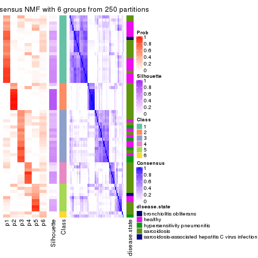
Heatmaps for the membership of samples in all partitions to see how consistent they are:
membership_heatmap(res, k = 2)
membership_heatmap(res, k = 3)
membership_heatmap(res, k = 4)
membership_heatmap(res, k = 5)
membership_heatmap(res, k = 6)
As soon as we have had the classes for columns, we can look for signatures which are significantly different between classes which can be candidate marks for certain classes. Following are the heatmaps for signatures.
Signature heatmaps where rows are scaled:
get_signatures(res, k = 2)
get_signatures(res, k = 3)
get_signatures(res, k = 4)
get_signatures(res, k = 5)
get_signatures(res, k = 6)
Signature heatmaps where rows are not scaled:
get_signatures(res, k = 2, scale_rows = FALSE)
get_signatures(res, k = 3, scale_rows = FALSE)
get_signatures(res, k = 4, scale_rows = FALSE)
get_signatures(res, k = 5, scale_rows = FALSE)
get_signatures(res, k = 6, scale_rows = FALSE)
Compare the overlap of signatures from different k:
compare_signatures(res)
get_signature() returns a data frame invisibly. TO get the list of signatures, the function
call should be assigned to a variable explicitly. In following code, if plot argument is set
to FALSE, no heatmap is plotted while only the differential analysis is performed.
# code only for demonstration
tb = get_signature(res, k = ..., plot = FALSE)
An example of the output of tb is:
#> which_row fdr mean_1 mean_2 scaled_mean_1 scaled_mean_2 km
#> 1 38 0.042760348 8.373488 9.131774 -0.5533452 0.5164555 1
#> 2 40 0.018707592 7.106213 8.469186 -0.6173731 0.5762149 1
#> 3 55 0.019134737 10.221463 11.207825 -0.6159697 0.5749050 1
#> 4 59 0.006059896 5.921854 7.869574 -0.6899429 0.6439467 1
#> 5 60 0.018055526 8.928898 10.211722 -0.6204761 0.5791110 1
#> 6 98 0.009384629 15.714769 14.887706 0.6635654 -0.6193277 2
...
The columns in tb are:
which_row: row indices corresponding to the input matrix.fdr: FDR for the differential test. mean_x: The mean value in group x.scaled_mean_x: The mean value in group x after rows are scaled.km: Row groups if k-means clustering is applied to rows.UMAP plot which shows how samples are separated.
dimension_reduction(res, k = 2, method = "UMAP")
dimension_reduction(res, k = 3, method = "UMAP")
dimension_reduction(res, k = 4, method = "UMAP")
dimension_reduction(res, k = 5, method = "UMAP")
dimension_reduction(res, k = 6, method = "UMAP")
Following heatmap shows how subgroups are split when increasing k:
collect_classes(res)
Test correlation between subgroups and known annotations. If the known annotation is numeric, one-way ANOVA test is applied, and if the known annotation is discrete, chi-squared contingency table test is applied.
test_to_known_factors(res)
#> n disease.state(p) k
#> SD:NMF 62 0.002797 2
#> SD:NMF 57 0.023899 3
#> SD:NMF 54 0.011727 4
#> SD:NMF 47 0.000612 5
#> SD:NMF 28 0.000349 6
If matrix rows can be associated to genes, consider to use functional_enrichment(res,
...) to perform function enrichment for the signature genes. See this vignette for more detailed explanations.
The object with results only for a single top-value method and a single partition method can be extracted as:
res = res_list["CV", "hclust"]
# you can also extract it by
# res = res_list["CV:hclust"]
A summary of res and all the functions that can be applied to it:
res
#> A 'ConsensusPartition' object with k = 2, 3, 4, 5, 6.
#> On a matrix with 51941 rows and 66 columns.
#> Top rows (1000, 2000, 3000, 4000, 5000) are extracted by 'CV' method.
#> Subgroups are detected by 'hclust' method.
#> Performed in total 1250 partitions by row resampling.
#> Best k for subgroups seems to be 3.
#>
#> Following methods can be applied to this 'ConsensusPartition' object:
#> [1] "cola_report" "collect_classes" "collect_plots"
#> [4] "collect_stats" "colnames" "compare_signatures"
#> [7] "consensus_heatmap" "dimension_reduction" "functional_enrichment"
#> [10] "get_anno_col" "get_anno" "get_classes"
#> [13] "get_consensus" "get_matrix" "get_membership"
#> [16] "get_param" "get_signatures" "get_stats"
#> [19] "is_best_k" "is_stable_k" "membership_heatmap"
#> [22] "ncol" "nrow" "plot_ecdf"
#> [25] "rownames" "select_partition_number" "show"
#> [28] "suggest_best_k" "test_to_known_factors"
collect_plots() function collects all the plots made from res for all k (number of partitions)
into one single page to provide an easy and fast comparison between different k.
collect_plots(res)
The plots are:
k and the heatmap of
predicted classes for each k.k.k.k.All the plots in panels can be made by individual functions and they are plotted later in this section.
select_partition_number() produces several plots showing different
statistics for choosing “optimized” k. There are following statistics:
k;k, the area increased is defined as \(A_k - A_{k-1}\).The detailed explanations of these statistics can be found in the cola vignette.
Generally speaking, lower PAC score, higher mean silhouette score or higher
concordance corresponds to better partition. Rand index and Jaccard index
measure how similar the current partition is compared to partition with k-1.
If they are too similar, we won't accept k is better than k-1.
select_partition_number(res)
The numeric values for all these statistics can be obtained by get_stats().
get_stats(res)
#> k 1-PAC mean_silhouette concordance area_increased Rand Jaccard
#> 2 2 0.494 0.681 0.874 0.3213 0.698 0.698
#> 3 3 0.426 0.753 0.863 0.7013 0.672 0.549
#> 4 4 0.413 0.609 0.781 0.1970 0.926 0.834
#> 5 5 0.489 0.496 0.735 0.0778 0.966 0.914
#> 6 6 0.517 0.481 0.702 0.0530 0.888 0.701
suggest_best_k() suggests the best \(k\) based on these statistics. The rules are as follows:
suggest_best_k(res)
#> [1] 3
Following shows the table of the partitions (You need to click the show/hide
code output link to see it). The membership matrix (columns with name p*)
is inferred by
clue::cl_consensus()
function with the SE method. Basically the value in the membership matrix
represents the probability to belong to a certain group. The finall class
label for an item is determined with the group with highest probability it
belongs to.
In get_classes() function, the entropy is calculated from the membership
matrix and the silhouette score is calculated from the consensus matrix.
cbind(get_classes(res, k = 2), get_membership(res, k = 2))
#> class entropy silhouette p1 p2
#> GSM479917 1 0.2603 0.8396 0.956 0.044
#> GSM479920 1 0.4298 0.8129 0.912 0.088
#> GSM479924 2 0.0000 0.6981 0.000 1.000
#> GSM479926 1 0.0000 0.8533 1.000 0.000
#> GSM479927 2 0.9933 0.3244 0.452 0.548
#> GSM479931 2 0.9881 0.3787 0.436 0.564
#> GSM479932 2 0.0000 0.6981 0.000 1.000
#> GSM479933 1 0.2778 0.8381 0.952 0.048
#> GSM479934 2 0.9661 0.4686 0.392 0.608
#> GSM479935 1 0.0000 0.8533 1.000 0.000
#> GSM479942 1 0.0000 0.8533 1.000 0.000
#> GSM479943 1 0.0376 0.8533 0.996 0.004
#> GSM479944 1 0.0376 0.8533 0.996 0.004
#> GSM479945 2 0.9686 0.4633 0.396 0.604
#> GSM479946 2 0.9775 0.4348 0.412 0.588
#> GSM479949 1 0.7453 0.6744 0.788 0.212
#> GSM479951 2 0.0000 0.6981 0.000 1.000
#> GSM479952 1 0.9963 -0.0558 0.536 0.464
#> GSM479953 1 0.2603 0.8396 0.956 0.044
#> GSM479956 1 0.8955 0.4850 0.688 0.312
#> GSM479957 1 0.6048 0.7564 0.852 0.148
#> GSM479959 1 0.2603 0.8396 0.956 0.044
#> GSM479960 2 0.0000 0.6981 0.000 1.000
#> GSM479961 2 0.9881 0.3787 0.436 0.564
#> GSM479962 1 0.9998 -0.1666 0.508 0.492
#> GSM479963 1 0.0000 0.8533 1.000 0.000
#> GSM479964 1 0.3431 0.8292 0.936 0.064
#> GSM479965 1 0.2603 0.8396 0.956 0.044
#> GSM479968 1 0.6887 0.7150 0.816 0.184
#> GSM479969 1 0.9323 0.3914 0.652 0.348
#> GSM479971 1 0.9000 0.4764 0.684 0.316
#> GSM479972 1 0.9998 -0.1659 0.508 0.492
#> GSM479973 1 0.6048 0.7571 0.852 0.148
#> GSM479974 1 0.9358 0.3825 0.648 0.352
#> GSM479977 1 0.0672 0.8520 0.992 0.008
#> GSM479979 2 0.0000 0.6981 0.000 1.000
#> GSM479980 1 0.3584 0.8273 0.932 0.068
#> GSM479981 2 0.0000 0.6981 0.000 1.000
#> GSM479918 1 0.0000 0.8533 1.000 0.000
#> GSM479929 1 0.0376 0.8533 0.996 0.004
#> GSM479930 1 0.9909 0.0588 0.556 0.444
#> GSM479938 1 0.0376 0.8533 0.996 0.004
#> GSM479950 1 0.0376 0.8533 0.996 0.004
#> GSM479955 1 0.9323 0.3914 0.652 0.348
#> GSM479919 1 0.0000 0.8533 1.000 0.000
#> GSM479921 1 0.0000 0.8533 1.000 0.000
#> GSM479922 1 0.0000 0.8533 1.000 0.000
#> GSM479923 1 0.5629 0.7698 0.868 0.132
#> GSM479925 1 0.0000 0.8533 1.000 0.000
#> GSM479928 1 0.0672 0.8525 0.992 0.008
#> GSM479936 1 0.0000 0.8533 1.000 0.000
#> GSM479937 1 0.0000 0.8533 1.000 0.000
#> GSM479939 1 0.0376 0.8533 0.996 0.004
#> GSM479940 1 0.0376 0.8533 0.996 0.004
#> GSM479941 1 0.0000 0.8533 1.000 0.000
#> GSM479947 1 0.0000 0.8533 1.000 0.000
#> GSM479948 1 0.9393 0.3711 0.644 0.356
#> GSM479954 1 0.0000 0.8533 1.000 0.000
#> GSM479958 1 0.0000 0.8533 1.000 0.000
#> GSM479966 1 0.0000 0.8533 1.000 0.000
#> GSM479967 1 0.0000 0.8533 1.000 0.000
#> GSM479970 1 0.9358 0.3815 0.648 0.352
#> GSM479975 1 0.0000 0.8533 1.000 0.000
#> GSM479976 1 0.0000 0.8533 1.000 0.000
#> GSM479982 1 0.7139 0.7001 0.804 0.196
#> GSM479978 1 0.0000 0.8533 1.000 0.000
cbind(get_classes(res, k = 3), get_membership(res, k = 3))
#> class entropy silhouette p1 p2 p3
#> GSM479917 1 0.3340 0.8497 0.880 0.000 0.120
#> GSM479920 1 0.5529 0.5838 0.704 0.000 0.296
#> GSM479924 2 0.0000 0.8405 0.000 1.000 0.000
#> GSM479926 1 0.1031 0.8922 0.976 0.000 0.024
#> GSM479927 3 0.3454 0.6081 0.008 0.104 0.888
#> GSM479931 3 0.3755 0.5940 0.008 0.120 0.872
#> GSM479932 2 0.0000 0.8405 0.000 1.000 0.000
#> GSM479933 1 0.3551 0.8574 0.868 0.000 0.132
#> GSM479934 2 0.6302 0.1555 0.000 0.520 0.480
#> GSM479935 1 0.0592 0.8886 0.988 0.000 0.012
#> GSM479942 1 0.1964 0.8769 0.944 0.000 0.056
#> GSM479943 1 0.2625 0.9018 0.916 0.000 0.084
#> GSM479944 1 0.2625 0.8989 0.916 0.000 0.084
#> GSM479945 2 0.6307 0.1355 0.000 0.512 0.488
#> GSM479946 3 0.6763 -0.0357 0.012 0.436 0.552
#> GSM479949 3 0.6305 0.0777 0.484 0.000 0.516
#> GSM479951 2 0.0000 0.8405 0.000 1.000 0.000
#> GSM479952 3 0.3896 0.6828 0.060 0.052 0.888
#> GSM479953 1 0.3340 0.8497 0.880 0.000 0.120
#> GSM479956 3 0.4915 0.7107 0.184 0.012 0.804
#> GSM479957 3 0.6126 0.4291 0.400 0.000 0.600
#> GSM479959 1 0.3340 0.8497 0.880 0.000 0.120
#> GSM479960 2 0.0000 0.8405 0.000 1.000 0.000
#> GSM479961 3 0.4068 0.5999 0.016 0.120 0.864
#> GSM479962 3 0.2743 0.6577 0.020 0.052 0.928
#> GSM479963 1 0.2261 0.9056 0.932 0.000 0.068
#> GSM479964 1 0.2878 0.8688 0.904 0.000 0.096
#> GSM479965 1 0.3340 0.8497 0.880 0.000 0.120
#> GSM479968 3 0.6264 0.4588 0.380 0.004 0.616
#> GSM479969 3 0.3752 0.7210 0.144 0.000 0.856
#> GSM479971 3 0.4861 0.7114 0.180 0.012 0.808
#> GSM479972 3 0.3091 0.6487 0.016 0.072 0.912
#> GSM479973 1 0.5244 0.7133 0.756 0.004 0.240
#> GSM479974 3 0.5932 0.6847 0.164 0.056 0.780
#> GSM479977 1 0.1753 0.8903 0.952 0.000 0.048
#> GSM479979 2 0.0000 0.8405 0.000 1.000 0.000
#> GSM479980 1 0.5621 0.5947 0.692 0.000 0.308
#> GSM479981 2 0.0000 0.8405 0.000 1.000 0.000
#> GSM479918 1 0.0592 0.8886 0.988 0.000 0.012
#> GSM479929 1 0.2448 0.9044 0.924 0.000 0.076
#> GSM479930 3 0.1989 0.6840 0.048 0.004 0.948
#> GSM479938 1 0.2625 0.9018 0.916 0.000 0.084
#> GSM479950 1 0.2796 0.9003 0.908 0.000 0.092
#> GSM479955 3 0.3816 0.7205 0.148 0.000 0.852
#> GSM479919 1 0.1031 0.8949 0.976 0.000 0.024
#> GSM479921 1 0.0892 0.8901 0.980 0.000 0.020
#> GSM479922 1 0.3879 0.8758 0.848 0.000 0.152
#> GSM479923 3 0.6111 0.4740 0.396 0.000 0.604
#> GSM479925 1 0.2796 0.9043 0.908 0.000 0.092
#> GSM479928 1 0.2796 0.9015 0.908 0.000 0.092
#> GSM479936 1 0.2625 0.9020 0.916 0.000 0.084
#> GSM479937 1 0.3879 0.8758 0.848 0.000 0.152
#> GSM479939 1 0.2878 0.8990 0.904 0.000 0.096
#> GSM479940 1 0.2878 0.8990 0.904 0.000 0.096
#> GSM479941 1 0.0892 0.8901 0.980 0.000 0.020
#> GSM479947 1 0.2796 0.9030 0.908 0.000 0.092
#> GSM479948 3 0.3482 0.7214 0.128 0.000 0.872
#> GSM479954 1 0.2959 0.8963 0.900 0.000 0.100
#> GSM479958 1 0.2625 0.9042 0.916 0.000 0.084
#> GSM479966 1 0.2796 0.9031 0.908 0.000 0.092
#> GSM479967 1 0.2796 0.9030 0.908 0.000 0.092
#> GSM479970 3 0.3686 0.7214 0.140 0.000 0.860
#> GSM479975 1 0.0747 0.8940 0.984 0.000 0.016
#> GSM479976 1 0.2959 0.8961 0.900 0.000 0.100
#> GSM479982 3 0.6169 0.5013 0.360 0.004 0.636
#> GSM479978 1 0.2066 0.9010 0.940 0.000 0.060
cbind(get_classes(res, k = 4), get_membership(res, k = 4))
#> class entropy silhouette p1 p2 p3 p4
#> GSM479917 1 0.632 0.09933 0.508 0.000 0.060 0.432
#> GSM479920 1 0.634 0.42237 0.644 0.000 0.236 0.120
#> GSM479924 2 0.000 0.81841 0.000 1.000 0.000 0.000
#> GSM479926 1 0.233 0.74156 0.908 0.000 0.004 0.088
#> GSM479927 3 0.394 0.66608 0.024 0.032 0.856 0.088
#> GSM479931 3 0.405 0.62964 0.000 0.048 0.828 0.124
#> GSM479932 2 0.000 0.81841 0.000 1.000 0.000 0.000
#> GSM479933 4 0.481 0.77178 0.236 0.000 0.028 0.736
#> GSM479934 2 0.650 0.10797 0.008 0.492 0.448 0.052
#> GSM479935 1 0.300 0.73832 0.864 0.000 0.004 0.132
#> GSM479942 4 0.445 0.72181 0.260 0.000 0.008 0.732
#> GSM479943 1 0.350 0.75116 0.860 0.000 0.036 0.104
#> GSM479944 1 0.556 0.28205 0.584 0.000 0.024 0.392
#> GSM479945 2 0.650 0.08498 0.008 0.484 0.456 0.052
#> GSM479946 3 0.687 -0.00581 0.008 0.408 0.504 0.080
#> GSM479949 1 0.669 0.01894 0.488 0.000 0.424 0.088
#> GSM479951 2 0.000 0.81841 0.000 1.000 0.000 0.000
#> GSM479952 3 0.361 0.70748 0.076 0.016 0.872 0.036
#> GSM479953 1 0.630 0.14365 0.520 0.000 0.060 0.420
#> GSM479956 3 0.573 0.64861 0.080 0.012 0.728 0.180
#> GSM479957 3 0.721 0.27209 0.144 0.000 0.480 0.376
#> GSM479959 1 0.630 0.12544 0.516 0.000 0.060 0.424
#> GSM479960 2 0.000 0.81841 0.000 1.000 0.000 0.000
#> GSM479961 3 0.415 0.62779 0.000 0.048 0.820 0.132
#> GSM479962 3 0.271 0.70415 0.040 0.016 0.916 0.028
#> GSM479963 1 0.282 0.77078 0.900 0.000 0.036 0.064
#> GSM479964 1 0.451 0.67110 0.800 0.000 0.064 0.136
#> GSM479965 1 0.629 0.16707 0.528 0.000 0.060 0.412
#> GSM479968 3 0.676 0.27531 0.096 0.000 0.504 0.400
#> GSM479969 3 0.461 0.66790 0.144 0.000 0.792 0.064
#> GSM479971 3 0.576 0.64944 0.072 0.012 0.720 0.196
#> GSM479972 3 0.328 0.69475 0.012 0.036 0.888 0.064
#> GSM479973 1 0.719 0.27660 0.552 0.000 0.204 0.244
#> GSM479974 3 0.541 0.64397 0.068 0.024 0.768 0.140
#> GSM479977 1 0.345 0.70858 0.852 0.000 0.020 0.128
#> GSM479979 2 0.000 0.81841 0.000 1.000 0.000 0.000
#> GSM479980 4 0.525 0.56271 0.100 0.000 0.148 0.752
#> GSM479981 2 0.000 0.81841 0.000 1.000 0.000 0.000
#> GSM479918 1 0.326 0.72874 0.844 0.000 0.004 0.152
#> GSM479929 1 0.390 0.74350 0.832 0.000 0.036 0.132
#> GSM479930 3 0.390 0.68839 0.080 0.000 0.844 0.076
#> GSM479938 1 0.350 0.75116 0.860 0.000 0.036 0.104
#> GSM479950 1 0.376 0.74664 0.848 0.000 0.048 0.104
#> GSM479955 3 0.466 0.66419 0.148 0.000 0.788 0.064
#> GSM479919 1 0.198 0.74671 0.928 0.000 0.004 0.068
#> GSM479921 1 0.220 0.73584 0.916 0.000 0.004 0.080
#> GSM479922 1 0.369 0.74772 0.856 0.000 0.076 0.068
#> GSM479923 3 0.725 0.35848 0.176 0.000 0.524 0.300
#> GSM479925 1 0.161 0.76875 0.952 0.000 0.032 0.016
#> GSM479928 1 0.367 0.75025 0.852 0.000 0.044 0.104
#> GSM479936 1 0.313 0.76718 0.884 0.000 0.040 0.076
#> GSM479937 1 0.362 0.74908 0.860 0.000 0.076 0.064
#> GSM479939 1 0.384 0.74486 0.844 0.000 0.052 0.104
#> GSM479940 1 0.384 0.74486 0.844 0.000 0.052 0.104
#> GSM479941 1 0.220 0.73584 0.916 0.000 0.004 0.080
#> GSM479947 1 0.149 0.76630 0.956 0.000 0.032 0.012
#> GSM479948 3 0.417 0.68821 0.116 0.000 0.824 0.060
#> GSM479954 1 0.347 0.76135 0.868 0.000 0.060 0.072
#> GSM479958 1 0.111 0.76863 0.968 0.000 0.028 0.004
#> GSM479966 1 0.149 0.76646 0.956 0.000 0.032 0.012
#> GSM479967 1 0.149 0.76630 0.956 0.000 0.032 0.012
#> GSM479970 3 0.456 0.67122 0.140 0.000 0.796 0.064
#> GSM479975 1 0.265 0.75241 0.888 0.000 0.004 0.108
#> GSM479976 1 0.346 0.76417 0.868 0.000 0.056 0.076
#> GSM479982 3 0.653 0.29573 0.076 0.000 0.508 0.416
#> GSM479978 1 0.247 0.73673 0.908 0.000 0.012 0.080
cbind(get_classes(res, k = 5), get_membership(res, k = 5))
#> class entropy silhouette p1 p2 p3 p4 p5
#> GSM479917 4 0.678 -0.0652 0.424 0.000 0.068 0.440 0.068
#> GSM479920 1 0.691 0.3882 0.560 0.000 0.152 0.056 0.232
#> GSM479924 2 0.000 0.8344 0.000 1.000 0.000 0.000 0.000
#> GSM479926 1 0.314 0.7258 0.860 0.000 0.004 0.040 0.096
#> GSM479927 3 0.489 0.3196 0.004 0.000 0.568 0.020 0.408
#> GSM479931 3 0.465 0.4130 0.000 0.004 0.708 0.044 0.244
#> GSM479932 2 0.000 0.8344 0.000 1.000 0.000 0.000 0.000
#> GSM479933 4 0.361 0.4202 0.112 0.000 0.036 0.836 0.016
#> GSM479934 2 0.626 0.2574 0.000 0.472 0.412 0.012 0.104
#> GSM479935 1 0.334 0.7158 0.844 0.000 0.000 0.096 0.060
#> GSM479942 4 0.344 0.4618 0.140 0.000 0.000 0.824 0.036
#> GSM479943 1 0.317 0.7385 0.876 0.000 0.036 0.048 0.040
#> GSM479944 1 0.567 0.2477 0.560 0.000 0.032 0.376 0.032
#> GSM479945 2 0.627 0.2412 0.000 0.464 0.420 0.012 0.104
#> GSM479946 3 0.700 -0.1889 0.000 0.380 0.452 0.048 0.120
#> GSM479949 1 0.736 -0.1052 0.400 0.000 0.328 0.032 0.240
#> GSM479951 2 0.000 0.8344 0.000 1.000 0.000 0.000 0.000
#> GSM479952 3 0.411 0.3884 0.048 0.000 0.780 0.004 0.168
#> GSM479953 1 0.677 -0.1299 0.448 0.000 0.068 0.416 0.068
#> GSM479956 3 0.482 0.2722 0.060 0.000 0.760 0.144 0.036
#> GSM479957 5 0.812 0.7784 0.136 0.000 0.268 0.192 0.404
#> GSM479959 1 0.678 -0.1844 0.436 0.000 0.068 0.428 0.068
#> GSM479960 2 0.000 0.8344 0.000 1.000 0.000 0.000 0.000
#> GSM479961 3 0.478 0.4098 0.000 0.004 0.700 0.052 0.244
#> GSM479962 3 0.355 0.4044 0.012 0.000 0.796 0.004 0.188
#> GSM479963 1 0.242 0.7568 0.912 0.000 0.020 0.024 0.044
#> GSM479964 1 0.532 0.6099 0.700 0.000 0.024 0.076 0.200
#> GSM479965 1 0.677 -0.0939 0.460 0.000 0.068 0.404 0.068
#> GSM479968 3 0.781 -0.3239 0.076 0.000 0.372 0.208 0.344
#> GSM479969 3 0.519 0.2992 0.132 0.000 0.700 0.004 0.164
#> GSM479971 3 0.601 0.1928 0.052 0.000 0.672 0.144 0.132
#> GSM479972 3 0.299 0.4433 0.000 0.020 0.876 0.020 0.084
#> GSM479973 1 0.735 0.2747 0.544 0.000 0.188 0.120 0.148
#> GSM479974 3 0.465 0.3320 0.056 0.000 0.784 0.056 0.104
#> GSM479977 1 0.483 0.6484 0.740 0.000 0.012 0.080 0.168
#> GSM479979 2 0.000 0.8344 0.000 1.000 0.000 0.000 0.000
#> GSM479980 4 0.376 0.2471 0.004 0.000 0.128 0.816 0.052
#> GSM479981 2 0.000 0.8344 0.000 1.000 0.000 0.000 0.000
#> GSM479918 1 0.369 0.6986 0.816 0.000 0.000 0.124 0.060
#> GSM479929 1 0.369 0.7292 0.844 0.000 0.036 0.080 0.040
#> GSM479930 3 0.548 0.2782 0.044 0.000 0.560 0.012 0.384
#> GSM479938 1 0.317 0.7385 0.876 0.000 0.036 0.048 0.040
#> GSM479950 1 0.340 0.7346 0.864 0.000 0.044 0.048 0.044
#> GSM479955 3 0.527 0.2863 0.136 0.000 0.692 0.004 0.168
#> GSM479919 1 0.274 0.7291 0.876 0.000 0.000 0.028 0.096
#> GSM479921 1 0.304 0.7205 0.860 0.000 0.000 0.040 0.100
#> GSM479922 1 0.328 0.7259 0.856 0.000 0.068 0.004 0.072
#> GSM479923 5 0.767 0.7775 0.164 0.000 0.248 0.108 0.480
#> GSM479925 1 0.237 0.7543 0.904 0.000 0.020 0.004 0.072
#> GSM479928 1 0.325 0.7368 0.872 0.000 0.044 0.048 0.036
#> GSM479936 1 0.252 0.7523 0.908 0.000 0.028 0.024 0.040
#> GSM479937 1 0.312 0.7272 0.860 0.000 0.068 0.000 0.072
#> GSM479939 1 0.340 0.7330 0.864 0.000 0.044 0.048 0.044
#> GSM479940 1 0.340 0.7330 0.864 0.000 0.044 0.048 0.044
#> GSM479941 1 0.352 0.7037 0.820 0.000 0.000 0.040 0.140
#> GSM479947 1 0.204 0.7520 0.920 0.000 0.012 0.004 0.064
#> GSM479948 3 0.465 0.3396 0.104 0.000 0.740 0.000 0.156
#> GSM479954 1 0.290 0.7475 0.888 0.000 0.032 0.024 0.056
#> GSM479958 1 0.170 0.7538 0.932 0.000 0.008 0.000 0.060
#> GSM479966 1 0.223 0.7523 0.908 0.000 0.012 0.004 0.076
#> GSM479967 1 0.204 0.7520 0.920 0.000 0.012 0.004 0.064
#> GSM479970 3 0.515 0.3065 0.128 0.000 0.704 0.004 0.164
#> GSM479975 1 0.259 0.7396 0.892 0.000 0.000 0.056 0.052
#> GSM479976 1 0.290 0.7504 0.888 0.000 0.032 0.024 0.056
#> GSM479982 3 0.769 -0.3097 0.060 0.000 0.368 0.220 0.352
#> GSM479978 1 0.332 0.7137 0.832 0.000 0.000 0.032 0.136
cbind(get_classes(res, k = 6), get_membership(res, k = 6))
#> class entropy silhouette p1 p2 p3 p4 p5 p6
#> GSM479917 4 0.334 0.6459 0.260 0.000 0.000 0.736 0.000 0.004
#> GSM479920 1 0.800 -0.0760 0.392 0.000 0.200 0.172 0.036 0.200
#> GSM479924 2 0.107 0.7987 0.000 0.952 0.000 0.000 0.000 0.048
#> GSM479926 1 0.380 0.7048 0.788 0.000 0.004 0.104 0.000 0.104
#> GSM479927 5 0.569 0.2717 0.004 0.000 0.292 0.088 0.584 0.032
#> GSM479931 5 0.275 0.4615 0.000 0.004 0.108 0.008 0.864 0.016
#> GSM479932 2 0.000 0.8095 0.000 1.000 0.000 0.000 0.000 0.000
#> GSM479933 4 0.605 -0.5402 0.080 0.000 0.032 0.484 0.012 0.392
#> GSM479934 2 0.540 0.0977 0.000 0.472 0.052 0.000 0.448 0.028
#> GSM479935 1 0.358 0.7001 0.800 0.000 0.004 0.136 0.000 0.060
#> GSM479942 4 0.541 -0.4292 0.080 0.000 0.000 0.492 0.012 0.416
#> GSM479943 1 0.212 0.7419 0.912 0.000 0.044 0.036 0.000 0.008
#> GSM479944 1 0.607 0.1631 0.568 0.000 0.044 0.232 0.000 0.156
#> GSM479945 2 0.540 0.0789 0.000 0.464 0.052 0.000 0.456 0.028
#> GSM479946 5 0.578 -0.0994 0.000 0.380 0.028 0.016 0.520 0.056
#> GSM479949 3 0.798 0.0922 0.244 0.000 0.376 0.124 0.040 0.216
#> GSM479951 2 0.000 0.8095 0.000 1.000 0.000 0.000 0.000 0.000
#> GSM479952 3 0.588 0.3230 0.044 0.000 0.636 0.064 0.220 0.036
#> GSM479953 4 0.355 0.6525 0.280 0.000 0.000 0.712 0.000 0.008
#> GSM479956 3 0.727 0.3055 0.064 0.000 0.480 0.212 0.208 0.036
#> GSM479957 3 0.840 0.0694 0.168 0.000 0.308 0.304 0.088 0.132
#> GSM479959 4 0.327 0.6538 0.272 0.000 0.000 0.728 0.000 0.000
#> GSM479960 2 0.000 0.8095 0.000 1.000 0.000 0.000 0.000 0.000
#> GSM479961 5 0.290 0.4641 0.000 0.004 0.104 0.016 0.860 0.016
#> GSM479962 3 0.535 0.2844 0.004 0.000 0.644 0.072 0.244 0.036
#> GSM479963 1 0.170 0.7623 0.936 0.000 0.028 0.024 0.000 0.012
#> GSM479964 1 0.641 0.2791 0.524 0.000 0.052 0.232 0.000 0.192
#> GSM479965 4 0.351 0.6445 0.292 0.000 0.000 0.704 0.000 0.004
#> GSM479968 5 0.781 0.2520 0.080 0.000 0.084 0.296 0.412 0.128
#> GSM479969 3 0.439 0.4967 0.124 0.000 0.748 0.016 0.112 0.000
#> GSM479971 3 0.710 0.3025 0.056 0.000 0.520 0.216 0.160 0.048
#> GSM479972 3 0.636 0.1331 0.004 0.020 0.512 0.092 0.340 0.032
#> GSM479973 1 0.724 -0.3247 0.396 0.000 0.036 0.356 0.164 0.048
#> GSM479974 5 0.699 0.1962 0.028 0.000 0.240 0.180 0.500 0.052
#> GSM479977 1 0.605 0.3239 0.532 0.000 0.020 0.236 0.000 0.212
#> GSM479979 2 0.107 0.7987 0.000 0.952 0.000 0.000 0.000 0.048
#> GSM479980 6 0.555 0.0000 0.000 0.000 0.008 0.444 0.104 0.444
#> GSM479981 2 0.000 0.8095 0.000 1.000 0.000 0.000 0.000 0.000
#> GSM479918 1 0.384 0.6763 0.772 0.000 0.004 0.164 0.000 0.060
#> GSM479929 1 0.269 0.7287 0.876 0.000 0.044 0.072 0.000 0.008
#> GSM479930 3 0.356 0.3454 0.012 0.000 0.792 0.000 0.028 0.168
#> GSM479938 1 0.212 0.7419 0.912 0.000 0.044 0.036 0.000 0.008
#> GSM479950 1 0.231 0.7378 0.900 0.000 0.056 0.036 0.000 0.008
#> GSM479955 3 0.435 0.4949 0.128 0.000 0.752 0.016 0.104 0.000
#> GSM479919 1 0.352 0.7135 0.804 0.000 0.000 0.092 0.000 0.104
#> GSM479921 1 0.366 0.7076 0.800 0.000 0.004 0.092 0.000 0.104
#> GSM479922 1 0.223 0.7261 0.872 0.000 0.124 0.004 0.000 0.000
#> GSM479923 3 0.814 0.1387 0.196 0.000 0.392 0.232 0.080 0.100
#> GSM479925 1 0.236 0.7571 0.900 0.000 0.040 0.012 0.000 0.048
#> GSM479928 1 0.221 0.7391 0.904 0.000 0.052 0.040 0.000 0.004
#> GSM479936 1 0.137 0.7568 0.948 0.000 0.036 0.012 0.000 0.004
#> GSM479937 1 0.209 0.7281 0.876 0.000 0.124 0.000 0.000 0.000
#> GSM479939 1 0.227 0.7360 0.900 0.000 0.056 0.040 0.000 0.004
#> GSM479940 1 0.227 0.7360 0.900 0.000 0.056 0.040 0.000 0.004
#> GSM479941 1 0.426 0.6682 0.740 0.000 0.004 0.096 0.000 0.160
#> GSM479947 1 0.275 0.7521 0.880 0.000 0.040 0.024 0.000 0.056
#> GSM479948 3 0.439 0.4822 0.096 0.000 0.740 0.012 0.152 0.000
#> GSM479954 1 0.171 0.7525 0.928 0.000 0.056 0.012 0.000 0.004
#> GSM479958 1 0.255 0.7554 0.892 0.000 0.036 0.024 0.000 0.048
#> GSM479966 1 0.245 0.7547 0.896 0.000 0.040 0.016 0.000 0.048
#> GSM479967 1 0.275 0.7521 0.880 0.000 0.040 0.024 0.000 0.056
#> GSM479970 3 0.440 0.4968 0.120 0.000 0.748 0.016 0.116 0.000
#> GSM479975 1 0.297 0.7318 0.844 0.000 0.000 0.104 0.000 0.052
#> GSM479976 1 0.176 0.7534 0.928 0.000 0.052 0.012 0.000 0.008
#> GSM479982 5 0.775 0.2496 0.068 0.000 0.080 0.284 0.420 0.148
#> GSM479978 1 0.435 0.6733 0.744 0.000 0.012 0.092 0.000 0.152
Heatmaps for the consensus matrix. It visualizes the probability of two samples to be in a same group.
consensus_heatmap(res, k = 2)
consensus_heatmap(res, k = 3)
consensus_heatmap(res, k = 4)
consensus_heatmap(res, k = 5)
consensus_heatmap(res, k = 6)
Heatmaps for the membership of samples in all partitions to see how consistent they are:
membership_heatmap(res, k = 2)
membership_heatmap(res, k = 3)
membership_heatmap(res, k = 4)
membership_heatmap(res, k = 5)
membership_heatmap(res, k = 6)
As soon as we have had the classes for columns, we can look for signatures which are significantly different between classes which can be candidate marks for certain classes. Following are the heatmaps for signatures.
Signature heatmaps where rows are scaled:
get_signatures(res, k = 2)
get_signatures(res, k = 3)
get_signatures(res, k = 4)
get_signatures(res, k = 5)
get_signatures(res, k = 6)
Signature heatmaps where rows are not scaled:
get_signatures(res, k = 2, scale_rows = FALSE)
get_signatures(res, k = 3, scale_rows = FALSE)
get_signatures(res, k = 4, scale_rows = FALSE)
get_signatures(res, k = 5, scale_rows = FALSE)
get_signatures(res, k = 6, scale_rows = FALSE)
Compare the overlap of signatures from different k:
compare_signatures(res)
get_signature() returns a data frame invisibly. TO get the list of signatures, the function
call should be assigned to a variable explicitly. In following code, if plot argument is set
to FALSE, no heatmap is plotted while only the differential analysis is performed.
# code only for demonstration
tb = get_signature(res, k = ..., plot = FALSE)
An example of the output of tb is:
#> which_row fdr mean_1 mean_2 scaled_mean_1 scaled_mean_2 km
#> 1 38 0.042760348 8.373488 9.131774 -0.5533452 0.5164555 1
#> 2 40 0.018707592 7.106213 8.469186 -0.6173731 0.5762149 1
#> 3 55 0.019134737 10.221463 11.207825 -0.6159697 0.5749050 1
#> 4 59 0.006059896 5.921854 7.869574 -0.6899429 0.6439467 1
#> 5 60 0.018055526 8.928898 10.211722 -0.6204761 0.5791110 1
#> 6 98 0.009384629 15.714769 14.887706 0.6635654 -0.6193277 2
...
The columns in tb are:
which_row: row indices corresponding to the input matrix.fdr: FDR for the differential test. mean_x: The mean value in group x.scaled_mean_x: The mean value in group x after rows are scaled.km: Row groups if k-means clustering is applied to rows.UMAP plot which shows how samples are separated.
dimension_reduction(res, k = 2, method = "UMAP")
dimension_reduction(res, k = 3, method = "UMAP")
dimension_reduction(res, k = 4, method = "UMAP")
dimension_reduction(res, k = 5, method = "UMAP")
dimension_reduction(res, k = 6, method = "UMAP")
Following heatmap shows how subgroups are split when increasing k:
collect_classes(res)
Test correlation between subgroups and known annotations. If the known annotation is numeric, one-way ANOVA test is applied, and if the known annotation is discrete, chi-squared contingency table test is applied.
test_to_known_factors(res)
#> n disease.state(p) k
#> CV:hclust 49 0.16082 2
#> CV:hclust 59 0.09672 3
#> CV:hclust 51 0.00847 4
#> CV:hclust 36 0.03403 5
#> CV:hclust 36 0.00134 6
If matrix rows can be associated to genes, consider to use functional_enrichment(res,
...) to perform function enrichment for the signature genes. See this vignette for more detailed explanations.
The object with results only for a single top-value method and a single partition method can be extracted as:
res = res_list["CV", "kmeans"]
# you can also extract it by
# res = res_list["CV:kmeans"]
A summary of res and all the functions that can be applied to it:
res
#> A 'ConsensusPartition' object with k = 2, 3, 4, 5, 6.
#> On a matrix with 51941 rows and 66 columns.
#> Top rows (1000, 2000, 3000, 4000, 5000) are extracted by 'CV' method.
#> Subgroups are detected by 'kmeans' method.
#> Performed in total 1250 partitions by row resampling.
#> Best k for subgroups seems to be 2.
#>
#> Following methods can be applied to this 'ConsensusPartition' object:
#> [1] "cola_report" "collect_classes" "collect_plots"
#> [4] "collect_stats" "colnames" "compare_signatures"
#> [7] "consensus_heatmap" "dimension_reduction" "functional_enrichment"
#> [10] "get_anno_col" "get_anno" "get_classes"
#> [13] "get_consensus" "get_matrix" "get_membership"
#> [16] "get_param" "get_signatures" "get_stats"
#> [19] "is_best_k" "is_stable_k" "membership_heatmap"
#> [22] "ncol" "nrow" "plot_ecdf"
#> [25] "rownames" "select_partition_number" "show"
#> [28] "suggest_best_k" "test_to_known_factors"
collect_plots() function collects all the plots made from res for all k (number of partitions)
into one single page to provide an easy and fast comparison between different k.
collect_plots(res)
The plots are:
k and the heatmap of
predicted classes for each k.k.k.k.All the plots in panels can be made by individual functions and they are plotted later in this section.
select_partition_number() produces several plots showing different
statistics for choosing “optimized” k. There are following statistics:
k;k, the area increased is defined as \(A_k - A_{k-1}\).The detailed explanations of these statistics can be found in the cola vignette.
Generally speaking, lower PAC score, higher mean silhouette score or higher
concordance corresponds to better partition. Rand index and Jaccard index
measure how similar the current partition is compared to partition with k-1.
If they are too similar, we won't accept k is better than k-1.
select_partition_number(res)
The numeric values for all these statistics can be obtained by get_stats().
get_stats(res)
#> k 1-PAC mean_silhouette concordance area_increased Rand Jaccard
#> 2 2 0.656 0.798 0.915 0.4501 0.522 0.522
#> 3 3 0.456 0.793 0.868 0.3684 0.770 0.598
#> 4 4 0.487 0.447 0.686 0.1613 0.853 0.658
#> 5 5 0.500 0.393 0.628 0.0842 0.829 0.528
#> 6 6 0.598 0.438 0.608 0.0552 0.841 0.440
suggest_best_k() suggests the best \(k\) based on these statistics. The rules are as follows:
suggest_best_k(res)
#> [1] 2
Following shows the table of the partitions (You need to click the show/hide
code output link to see it). The membership matrix (columns with name p*)
is inferred by
clue::cl_consensus()
function with the SE method. Basically the value in the membership matrix
represents the probability to belong to a certain group. The finall class
label for an item is determined with the group with highest probability it
belongs to.
In get_classes() function, the entropy is calculated from the membership
matrix and the silhouette score is calculated from the consensus matrix.
cbind(get_classes(res, k = 2), get_membership(res, k = 2))
#> class entropy silhouette p1 p2
#> GSM479917 2 0.9044 0.642 0.320 0.680
#> GSM479920 1 0.0000 0.936 1.000 0.000
#> GSM479924 2 0.0000 0.832 0.000 1.000
#> GSM479926 1 0.0000 0.936 1.000 0.000
#> GSM479927 2 0.0376 0.832 0.004 0.996
#> GSM479931 2 0.0000 0.832 0.000 1.000
#> GSM479932 2 0.0000 0.832 0.000 1.000
#> GSM479933 2 0.9129 0.629 0.328 0.672
#> GSM479934 2 0.0000 0.832 0.000 1.000
#> GSM479935 1 0.0000 0.936 1.000 0.000
#> GSM479942 1 0.0000 0.936 1.000 0.000
#> GSM479943 1 0.0000 0.936 1.000 0.000
#> GSM479944 1 0.0000 0.936 1.000 0.000
#> GSM479945 2 0.0000 0.832 0.000 1.000
#> GSM479946 2 0.0000 0.832 0.000 1.000
#> GSM479949 2 0.9850 0.430 0.428 0.572
#> GSM479951 2 0.0000 0.832 0.000 1.000
#> GSM479952 1 0.9944 -0.101 0.544 0.456
#> GSM479953 1 0.0000 0.936 1.000 0.000
#> GSM479956 2 0.9044 0.640 0.320 0.680
#> GSM479957 1 0.9170 0.392 0.668 0.332
#> GSM479959 1 0.0000 0.936 1.000 0.000
#> GSM479960 2 0.0000 0.832 0.000 1.000
#> GSM479961 2 0.0000 0.832 0.000 1.000
#> GSM479962 2 0.4161 0.806 0.084 0.916
#> GSM479963 1 0.0000 0.936 1.000 0.000
#> GSM479964 1 0.0000 0.936 1.000 0.000
#> GSM479965 1 0.0000 0.936 1.000 0.000
#> GSM479968 2 0.9754 0.489 0.408 0.592
#> GSM479969 2 0.9795 0.460 0.416 0.584
#> GSM479971 1 0.9815 0.092 0.580 0.420
#> GSM479972 2 0.0000 0.832 0.000 1.000
#> GSM479973 1 0.0000 0.936 1.000 0.000
#> GSM479974 2 0.2236 0.824 0.036 0.964
#> GSM479977 1 0.0000 0.936 1.000 0.000
#> GSM479979 2 0.0000 0.832 0.000 1.000
#> GSM479980 2 0.7299 0.740 0.204 0.796
#> GSM479981 2 0.0000 0.832 0.000 1.000
#> GSM479918 1 0.0000 0.936 1.000 0.000
#> GSM479929 1 0.0000 0.936 1.000 0.000
#> GSM479930 2 0.9815 0.450 0.420 0.580
#> GSM479938 1 0.0000 0.936 1.000 0.000
#> GSM479950 1 0.0000 0.936 1.000 0.000
#> GSM479955 1 0.9909 -0.049 0.556 0.444
#> GSM479919 1 0.0000 0.936 1.000 0.000
#> GSM479921 1 0.0000 0.936 1.000 0.000
#> GSM479922 1 0.0000 0.936 1.000 0.000
#> GSM479923 1 0.4939 0.812 0.892 0.108
#> GSM479925 1 0.0000 0.936 1.000 0.000
#> GSM479928 1 0.0000 0.936 1.000 0.000
#> GSM479936 1 0.0000 0.936 1.000 0.000
#> GSM479937 1 0.0000 0.936 1.000 0.000
#> GSM479939 1 0.0000 0.936 1.000 0.000
#> GSM479940 1 0.0000 0.936 1.000 0.000
#> GSM479941 1 0.0000 0.936 1.000 0.000
#> GSM479947 1 0.0000 0.936 1.000 0.000
#> GSM479948 2 0.8499 0.684 0.276 0.724
#> GSM479954 1 0.0000 0.936 1.000 0.000
#> GSM479958 1 0.0000 0.936 1.000 0.000
#> GSM479966 1 0.0000 0.936 1.000 0.000
#> GSM479967 1 0.0000 0.936 1.000 0.000
#> GSM479970 1 0.8713 0.483 0.708 0.292
#> GSM479975 1 0.0000 0.936 1.000 0.000
#> GSM479976 1 0.0000 0.936 1.000 0.000
#> GSM479982 2 0.9044 0.640 0.320 0.680
#> GSM479978 1 0.0000 0.936 1.000 0.000
cbind(get_classes(res, k = 3), get_membership(res, k = 3))
#> class entropy silhouette p1 p2 p3
#> GSM479917 3 0.5823 0.667 0.144 0.064 0.792
#> GSM479920 1 0.3349 0.846 0.888 0.004 0.108
#> GSM479924 2 0.0424 0.905 0.000 0.992 0.008
#> GSM479926 1 0.0592 0.879 0.988 0.000 0.012
#> GSM479927 3 0.4912 0.719 0.008 0.196 0.796
#> GSM479931 2 0.6095 0.263 0.000 0.608 0.392
#> GSM479932 2 0.0237 0.905 0.000 0.996 0.004
#> GSM479933 3 0.5165 0.699 0.072 0.096 0.832
#> GSM479934 2 0.0424 0.905 0.000 0.992 0.008
#> GSM479935 1 0.1031 0.877 0.976 0.000 0.024
#> GSM479942 1 0.4755 0.798 0.808 0.008 0.184
#> GSM479943 1 0.4062 0.864 0.836 0.000 0.164
#> GSM479944 1 0.6416 0.625 0.616 0.008 0.376
#> GSM479945 2 0.3816 0.798 0.000 0.852 0.148
#> GSM479946 2 0.3816 0.798 0.000 0.852 0.148
#> GSM479949 3 0.5263 0.785 0.088 0.084 0.828
#> GSM479951 2 0.0237 0.905 0.000 0.996 0.004
#> GSM479952 3 0.2959 0.786 0.100 0.000 0.900
#> GSM479953 1 0.3573 0.829 0.876 0.004 0.120
#> GSM479956 3 0.0661 0.790 0.008 0.004 0.988
#> GSM479957 3 0.1129 0.788 0.020 0.004 0.976
#> GSM479959 1 0.4172 0.826 0.840 0.004 0.156
#> GSM479960 2 0.0237 0.905 0.000 0.996 0.004
#> GSM479961 3 0.6047 0.545 0.008 0.312 0.680
#> GSM479962 3 0.5094 0.766 0.040 0.136 0.824
#> GSM479963 1 0.3412 0.867 0.876 0.000 0.124
#> GSM479964 1 0.0983 0.877 0.980 0.004 0.016
#> GSM479965 1 0.3573 0.836 0.876 0.004 0.120
#> GSM479968 3 0.1129 0.786 0.020 0.004 0.976
#> GSM479969 3 0.5179 0.785 0.088 0.080 0.832
#> GSM479971 3 0.0661 0.790 0.008 0.004 0.988
#> GSM479972 3 0.6225 0.289 0.000 0.432 0.568
#> GSM479973 1 0.4233 0.813 0.836 0.004 0.160
#> GSM479974 3 0.5692 0.619 0.008 0.268 0.724
#> GSM479977 1 0.1989 0.870 0.948 0.004 0.048
#> GSM479979 2 0.0424 0.905 0.000 0.992 0.008
#> GSM479980 3 0.4810 0.682 0.028 0.140 0.832
#> GSM479981 2 0.0237 0.905 0.000 0.996 0.004
#> GSM479918 1 0.1860 0.873 0.948 0.000 0.052
#> GSM479929 1 0.4351 0.860 0.828 0.004 0.168
#> GSM479930 3 0.5263 0.785 0.088 0.084 0.828
#> GSM479938 1 0.4346 0.859 0.816 0.000 0.184
#> GSM479950 1 0.5443 0.785 0.736 0.004 0.260
#> GSM479955 3 0.6652 0.728 0.172 0.084 0.744
#> GSM479919 1 0.0747 0.881 0.984 0.000 0.016
#> GSM479921 1 0.0000 0.878 1.000 0.000 0.000
#> GSM479922 1 0.2066 0.882 0.940 0.000 0.060
#> GSM479923 3 0.5882 0.417 0.348 0.000 0.652
#> GSM479925 1 0.3816 0.855 0.852 0.000 0.148
#> GSM479928 3 0.5285 0.608 0.244 0.004 0.752
#> GSM479936 1 0.4062 0.845 0.836 0.000 0.164
#> GSM479937 1 0.5216 0.764 0.740 0.000 0.260
#> GSM479939 1 0.4399 0.856 0.812 0.000 0.188
#> GSM479940 1 0.5244 0.801 0.756 0.004 0.240
#> GSM479941 1 0.0424 0.876 0.992 0.000 0.008
#> GSM479947 1 0.3340 0.871 0.880 0.000 0.120
#> GSM479948 3 0.5096 0.787 0.080 0.084 0.836
#> GSM479954 1 0.4062 0.845 0.836 0.000 0.164
#> GSM479958 1 0.2066 0.882 0.940 0.000 0.060
#> GSM479966 1 0.3340 0.868 0.880 0.000 0.120
#> GSM479967 1 0.1753 0.882 0.952 0.000 0.048
#> GSM479970 3 0.3551 0.771 0.132 0.000 0.868
#> GSM479975 1 0.0747 0.881 0.984 0.000 0.016
#> GSM479976 1 0.4399 0.843 0.812 0.000 0.188
#> GSM479982 3 0.1129 0.788 0.020 0.004 0.976
#> GSM479978 1 0.0892 0.880 0.980 0.000 0.020
cbind(get_classes(res, k = 4), get_membership(res, k = 4))
#> class entropy silhouette p1 p2 p3 p4
#> GSM479917 3 0.4941 0.20693 0.000 0.000 0.564 0.436
#> GSM479920 1 0.6862 0.26993 0.560 0.000 0.128 0.312
#> GSM479924 2 0.0188 0.87855 0.000 0.996 0.000 0.004
#> GSM479926 1 0.4356 0.46253 0.708 0.000 0.000 0.292
#> GSM479927 3 0.4343 0.62613 0.084 0.032 0.840 0.044
#> GSM479931 3 0.6164 0.33521 0.000 0.264 0.644 0.092
#> GSM479932 2 0.0000 0.87947 0.000 1.000 0.000 0.000
#> GSM479933 4 0.4866 0.04121 0.000 0.000 0.404 0.596
#> GSM479934 2 0.0000 0.87947 0.000 1.000 0.000 0.000
#> GSM479935 1 0.4250 0.46162 0.724 0.000 0.000 0.276
#> GSM479942 4 0.5569 0.42954 0.172 0.000 0.104 0.724
#> GSM479943 1 0.5742 0.37720 0.648 0.000 0.052 0.300
#> GSM479944 4 0.6357 0.35477 0.184 0.000 0.160 0.656
#> GSM479945 2 0.5839 0.42016 0.000 0.604 0.352 0.044
#> GSM479946 2 0.6562 0.25263 0.000 0.516 0.404 0.080
#> GSM479949 3 0.6303 0.60041 0.216 0.012 0.676 0.096
#> GSM479951 2 0.0000 0.87947 0.000 1.000 0.000 0.000
#> GSM479952 3 0.5170 0.61001 0.228 0.000 0.724 0.048
#> GSM479953 4 0.5203 -0.06754 0.416 0.000 0.008 0.576
#> GSM479956 3 0.2704 0.56737 0.000 0.000 0.876 0.124
#> GSM479957 3 0.5038 0.35418 0.012 0.000 0.652 0.336
#> GSM479959 4 0.5750 -0.02395 0.440 0.000 0.028 0.532
#> GSM479960 2 0.0000 0.87947 0.000 1.000 0.000 0.000
#> GSM479961 3 0.5180 0.52837 0.000 0.064 0.740 0.196
#> GSM479962 3 0.4562 0.62854 0.104 0.028 0.824 0.044
#> GSM479963 1 0.0927 0.59543 0.976 0.000 0.008 0.016
#> GSM479964 1 0.5150 0.33363 0.596 0.000 0.008 0.396
#> GSM479965 4 0.5137 -0.09952 0.452 0.000 0.004 0.544
#> GSM479968 3 0.5620 0.22747 0.024 0.000 0.560 0.416
#> GSM479969 3 0.6187 0.60439 0.216 0.012 0.684 0.088
#> GSM479971 3 0.5157 0.43063 0.028 0.000 0.688 0.284
#> GSM479972 3 0.5279 0.41909 0.000 0.232 0.716 0.052
#> GSM479973 1 0.6792 -0.00315 0.476 0.000 0.096 0.428
#> GSM479974 3 0.4549 0.53719 0.000 0.036 0.776 0.188
#> GSM479977 1 0.5277 0.20966 0.532 0.000 0.008 0.460
#> GSM479979 2 0.0188 0.87855 0.000 0.996 0.000 0.004
#> GSM479980 4 0.4977 -0.08591 0.000 0.000 0.460 0.540
#> GSM479981 2 0.0000 0.87947 0.000 1.000 0.000 0.000
#> GSM479918 1 0.4933 0.28577 0.568 0.000 0.000 0.432
#> GSM479929 1 0.6074 0.32345 0.600 0.000 0.060 0.340
#> GSM479930 3 0.6066 0.60795 0.216 0.012 0.692 0.080
#> GSM479938 1 0.6429 0.31080 0.588 0.000 0.088 0.324
#> GSM479950 1 0.7156 0.20003 0.520 0.000 0.152 0.328
#> GSM479955 3 0.6735 0.52679 0.288 0.012 0.608 0.092
#> GSM479919 1 0.4040 0.49485 0.752 0.000 0.000 0.248
#> GSM479921 1 0.4331 0.46265 0.712 0.000 0.000 0.288
#> GSM479922 1 0.0817 0.59683 0.976 0.000 0.000 0.024
#> GSM479923 1 0.6536 0.16901 0.560 0.000 0.352 0.088
#> GSM479925 1 0.2844 0.57823 0.900 0.000 0.052 0.048
#> GSM479928 1 0.7827 -0.02959 0.408 0.000 0.316 0.276
#> GSM479936 1 0.2089 0.58166 0.932 0.000 0.048 0.020
#> GSM479937 1 0.5740 0.38951 0.700 0.000 0.208 0.092
#> GSM479939 1 0.5471 0.38912 0.684 0.000 0.048 0.268
#> GSM479940 1 0.5772 0.36752 0.672 0.000 0.068 0.260
#> GSM479941 1 0.4454 0.44972 0.692 0.000 0.000 0.308
#> GSM479947 1 0.1888 0.59247 0.940 0.000 0.016 0.044
#> GSM479948 3 0.5769 0.61455 0.212 0.012 0.712 0.064
#> GSM479954 1 0.2596 0.57061 0.908 0.000 0.068 0.024
#> GSM479958 1 0.1661 0.59376 0.944 0.000 0.004 0.052
#> GSM479966 1 0.1151 0.59613 0.968 0.000 0.008 0.024
#> GSM479967 1 0.1637 0.59162 0.940 0.000 0.000 0.060
#> GSM479970 3 0.5631 0.60596 0.224 0.000 0.700 0.076
#> GSM479975 1 0.3801 0.50003 0.780 0.000 0.000 0.220
#> GSM479976 1 0.3958 0.55325 0.836 0.000 0.052 0.112
#> GSM479982 3 0.4746 0.31802 0.000 0.000 0.632 0.368
#> GSM479978 1 0.4040 0.50184 0.752 0.000 0.000 0.248
cbind(get_classes(res, k = 5), get_membership(res, k = 5))
#> class entropy silhouette p1 p2 p3 p4 p5
#> GSM479917 4 0.6477 0.3577 0.000 0.000 0.252 0.496 0.252
#> GSM479920 5 0.6484 0.3846 0.312 0.000 0.048 0.084 0.556
#> GSM479924 2 0.1960 0.9597 0.000 0.928 0.004 0.020 0.048
#> GSM479926 1 0.4227 -0.1118 0.580 0.000 0.000 0.000 0.420
#> GSM479927 3 0.1805 0.4244 0.020 0.016 0.944 0.012 0.008
#> GSM479931 3 0.5275 0.3365 0.000 0.132 0.728 0.108 0.032
#> GSM479932 2 0.0000 0.9782 0.000 1.000 0.000 0.000 0.000
#> GSM479933 4 0.4787 0.4965 0.000 0.000 0.080 0.712 0.208
#> GSM479934 2 0.0566 0.9757 0.000 0.984 0.004 0.000 0.012
#> GSM479935 1 0.4807 -0.1268 0.532 0.000 0.000 0.020 0.448
#> GSM479942 4 0.4859 0.3026 0.024 0.000 0.004 0.608 0.364
#> GSM479943 1 0.6431 0.3106 0.544 0.000 0.012 0.284 0.160
#> GSM479944 4 0.4465 0.4265 0.056 0.000 0.000 0.732 0.212
#> GSM479945 3 0.5801 0.0986 0.000 0.372 0.556 0.036 0.036
#> GSM479946 3 0.6747 0.1637 0.000 0.316 0.524 0.120 0.040
#> GSM479949 3 0.7865 0.4322 0.192 0.000 0.476 0.176 0.156
#> GSM479951 2 0.0000 0.9782 0.000 1.000 0.000 0.000 0.000
#> GSM479952 3 0.6665 0.3854 0.192 0.000 0.592 0.168 0.048
#> GSM479953 5 0.4936 0.6010 0.168 0.000 0.008 0.096 0.728
#> GSM479956 4 0.4830 0.0632 0.000 0.000 0.488 0.492 0.020
#> GSM479957 4 0.5284 0.3895 0.016 0.000 0.332 0.616 0.036
#> GSM479959 5 0.6805 0.4173 0.320 0.000 0.008 0.220 0.452
#> GSM479960 2 0.0566 0.9756 0.000 0.984 0.000 0.012 0.004
#> GSM479961 3 0.4328 0.2558 0.000 0.016 0.752 0.208 0.024
#> GSM479962 3 0.1758 0.4300 0.020 0.008 0.944 0.024 0.004
#> GSM479963 1 0.1243 0.5107 0.960 0.000 0.008 0.004 0.028
#> GSM479964 5 0.4346 0.5379 0.304 0.000 0.004 0.012 0.680
#> GSM479965 5 0.5885 0.5180 0.296 0.000 0.000 0.132 0.572
#> GSM479968 4 0.6036 0.4681 0.032 0.000 0.244 0.628 0.096
#> GSM479969 3 0.7768 0.4039 0.208 0.000 0.464 0.228 0.100
#> GSM479971 4 0.5365 0.2771 0.028 0.000 0.348 0.600 0.024
#> GSM479972 3 0.4238 0.3811 0.000 0.112 0.804 0.056 0.028
#> GSM479973 5 0.7418 0.5259 0.280 0.000 0.060 0.188 0.472
#> GSM479974 3 0.5221 0.2096 0.000 0.008 0.584 0.372 0.036
#> GSM479977 5 0.4061 0.5960 0.240 0.000 0.004 0.016 0.740
#> GSM479979 2 0.1960 0.9597 0.000 0.928 0.004 0.020 0.048
#> GSM479980 4 0.5414 0.4784 0.000 0.000 0.200 0.660 0.140
#> GSM479981 2 0.0000 0.9782 0.000 1.000 0.000 0.000 0.000
#> GSM479918 5 0.6118 0.1580 0.404 0.000 0.000 0.128 0.468
#> GSM479929 1 0.6854 0.2548 0.468 0.000 0.020 0.340 0.172
#> GSM479930 3 0.7728 0.4413 0.188 0.000 0.496 0.172 0.144
#> GSM479938 1 0.6899 0.1170 0.412 0.000 0.016 0.388 0.184
#> GSM479950 4 0.7248 -0.0956 0.376 0.000 0.044 0.416 0.164
#> GSM479955 3 0.8109 0.3287 0.276 0.000 0.384 0.228 0.112
#> GSM479919 1 0.3895 0.2376 0.728 0.000 0.004 0.004 0.264
#> GSM479921 1 0.4420 -0.1244 0.548 0.000 0.000 0.004 0.448
#> GSM479922 1 0.2577 0.5043 0.892 0.000 0.008 0.016 0.084
#> GSM479923 1 0.6411 0.2472 0.564 0.000 0.276 0.140 0.020
#> GSM479925 1 0.1741 0.5047 0.936 0.000 0.024 0.000 0.040
#> GSM479928 4 0.7573 -0.0166 0.372 0.000 0.116 0.408 0.104
#> GSM479936 1 0.2152 0.5127 0.924 0.000 0.032 0.032 0.012
#> GSM479937 1 0.7211 0.2122 0.544 0.000 0.112 0.232 0.112
#> GSM479939 1 0.6307 0.3343 0.572 0.000 0.016 0.272 0.140
#> GSM479940 1 0.6197 0.3416 0.580 0.000 0.016 0.280 0.124
#> GSM479941 1 0.4452 -0.2284 0.500 0.000 0.000 0.004 0.496
#> GSM479947 1 0.3688 0.4265 0.812 0.000 0.004 0.036 0.148
#> GSM479948 3 0.7230 0.4190 0.152 0.000 0.528 0.244 0.076
#> GSM479954 1 0.2536 0.5073 0.904 0.000 0.052 0.032 0.012
#> GSM479958 1 0.2102 0.5008 0.916 0.000 0.004 0.012 0.068
#> GSM479966 1 0.1270 0.5063 0.948 0.000 0.000 0.000 0.052
#> GSM479967 1 0.1478 0.4960 0.936 0.000 0.000 0.000 0.064
#> GSM479970 3 0.7472 0.4139 0.200 0.000 0.496 0.228 0.076
#> GSM479975 1 0.3807 0.2544 0.748 0.000 0.000 0.012 0.240
#> GSM479976 1 0.4682 0.4579 0.784 0.000 0.052 0.092 0.072
#> GSM479982 4 0.5077 0.3443 0.000 0.000 0.392 0.568 0.040
#> GSM479978 1 0.3983 0.1453 0.660 0.000 0.000 0.000 0.340
cbind(get_classes(res, k = 6), get_membership(res, k = 6))
#> class entropy silhouette p1 p2 p3 p4 p5 p6
#> GSM479917 5 0.6842 0.0643 0.000 0.000 0.044 0.296 0.364 0.296
#> GSM479920 6 0.5796 0.4391 0.176 0.000 0.252 0.008 0.004 0.560
#> GSM479924 2 0.2341 0.9472 0.000 0.908 0.008 0.016 0.024 0.044
#> GSM479926 1 0.4207 0.2657 0.664 0.000 0.000 0.012 0.016 0.308
#> GSM479927 5 0.5071 0.5256 0.012 0.000 0.240 0.028 0.672 0.048
#> GSM479931 5 0.3572 0.6279 0.000 0.080 0.100 0.000 0.812 0.008
#> GSM479932 2 0.0000 0.9680 0.000 1.000 0.000 0.000 0.000 0.000
#> GSM479933 4 0.6085 0.1761 0.000 0.000 0.048 0.572 0.224 0.156
#> GSM479934 2 0.0806 0.9619 0.000 0.972 0.000 0.000 0.020 0.008
#> GSM479935 1 0.6251 -0.0265 0.460 0.000 0.000 0.196 0.020 0.324
#> GSM479942 4 0.4256 0.3260 0.012 0.000 0.004 0.756 0.068 0.160
#> GSM479943 4 0.5862 0.2792 0.316 0.000 0.072 0.552 0.000 0.060
#> GSM479944 4 0.2936 0.4025 0.020 0.000 0.028 0.880 0.048 0.024
#> GSM479945 5 0.4706 0.4660 0.000 0.284 0.052 0.000 0.652 0.012
#> GSM479946 5 0.4615 0.5213 0.000 0.236 0.036 0.008 0.700 0.020
#> GSM479949 3 0.3526 0.6846 0.048 0.000 0.828 0.000 0.032 0.092
#> GSM479951 2 0.0000 0.9680 0.000 1.000 0.000 0.000 0.000 0.000
#> GSM479952 3 0.7723 0.2722 0.144 0.000 0.476 0.096 0.204 0.080
#> GSM479953 6 0.4447 0.6018 0.144 0.000 0.008 0.072 0.020 0.756
#> GSM479956 4 0.7348 -0.1284 0.004 0.000 0.272 0.344 0.292 0.088
#> GSM479957 4 0.7086 0.0887 0.008 0.000 0.164 0.476 0.248 0.104
#> GSM479959 1 0.7059 -0.2049 0.340 0.000 0.016 0.276 0.032 0.336
#> GSM479960 2 0.0909 0.9630 0.000 0.968 0.000 0.020 0.000 0.012
#> GSM479961 5 0.2863 0.6194 0.000 0.000 0.088 0.036 0.864 0.012
#> GSM479962 5 0.5258 0.4828 0.012 0.000 0.292 0.024 0.624 0.048
#> GSM479963 1 0.0909 0.6303 0.968 0.000 0.020 0.012 0.000 0.000
#> GSM479964 6 0.3922 0.5870 0.236 0.000 0.024 0.004 0.004 0.732
#> GSM479965 6 0.6475 0.3136 0.224 0.000 0.004 0.312 0.020 0.440
#> GSM479968 4 0.7046 0.1436 0.040 0.000 0.084 0.516 0.256 0.104
#> GSM479969 3 0.2257 0.7414 0.044 0.000 0.912 0.016 0.020 0.008
#> GSM479971 4 0.7103 0.1077 0.008 0.000 0.268 0.452 0.188 0.084
#> GSM479972 5 0.4078 0.6217 0.000 0.072 0.140 0.000 0.772 0.016
#> GSM479973 6 0.7067 0.3770 0.304 0.000 0.020 0.100 0.108 0.468
#> GSM479974 5 0.6403 0.3280 0.000 0.000 0.328 0.156 0.472 0.044
#> GSM479977 6 0.3690 0.6163 0.188 0.000 0.008 0.024 0.004 0.776
#> GSM479979 2 0.2341 0.9472 0.000 0.908 0.008 0.016 0.024 0.044
#> GSM479980 4 0.6402 0.0458 0.004 0.000 0.048 0.488 0.332 0.128
#> GSM479981 2 0.0000 0.9680 0.000 1.000 0.000 0.000 0.000 0.000
#> GSM479918 4 0.6476 -0.1481 0.248 0.000 0.004 0.452 0.020 0.276
#> GSM479929 4 0.5823 0.3507 0.248 0.000 0.104 0.596 0.000 0.052
#> GSM479930 3 0.3103 0.6955 0.040 0.000 0.860 0.000 0.040 0.060
#> GSM479938 4 0.6207 0.2798 0.160 0.000 0.212 0.568 0.000 0.060
#> GSM479950 4 0.5877 -0.1209 0.116 0.000 0.420 0.444 0.000 0.020
#> GSM479955 3 0.3024 0.7171 0.088 0.000 0.856 0.040 0.000 0.016
#> GSM479919 1 0.3073 0.5046 0.816 0.000 0.000 0.004 0.016 0.164
#> GSM479921 1 0.4466 -0.0709 0.536 0.000 0.000 0.008 0.016 0.440
#> GSM479922 1 0.4567 0.5271 0.752 0.000 0.148 0.040 0.008 0.052
#> GSM479923 1 0.7088 0.2904 0.564 0.000 0.168 0.092 0.088 0.088
#> GSM479925 1 0.1500 0.6277 0.936 0.000 0.052 0.000 0.000 0.012
#> GSM479928 3 0.5665 0.2909 0.132 0.000 0.544 0.312 0.000 0.012
#> GSM479936 1 0.3111 0.6010 0.864 0.000 0.056 0.044 0.004 0.032
#> GSM479937 3 0.5058 0.5158 0.232 0.000 0.652 0.104 0.000 0.012
#> GSM479939 4 0.5317 0.1775 0.400 0.000 0.044 0.524 0.000 0.032
#> GSM479940 4 0.5774 0.2123 0.368 0.000 0.088 0.512 0.000 0.032
#> GSM479941 6 0.4850 0.1974 0.440 0.000 0.000 0.028 0.016 0.516
#> GSM479947 1 0.4447 0.5092 0.744 0.000 0.092 0.020 0.000 0.144
#> GSM479948 3 0.2265 0.7217 0.024 0.000 0.912 0.028 0.032 0.004
#> GSM479954 1 0.3372 0.5967 0.852 0.000 0.060 0.048 0.012 0.028
#> GSM479958 1 0.2604 0.6176 0.888 0.000 0.032 0.024 0.000 0.056
#> GSM479966 1 0.2007 0.6265 0.916 0.000 0.044 0.004 0.000 0.036
#> GSM479967 1 0.1890 0.6248 0.924 0.000 0.024 0.008 0.000 0.044
#> GSM479970 3 0.2113 0.7366 0.044 0.000 0.916 0.008 0.028 0.004
#> GSM479975 1 0.3428 0.5096 0.808 0.000 0.000 0.024 0.016 0.152
#> GSM479976 1 0.4951 0.5011 0.744 0.000 0.032 0.120 0.036 0.068
#> GSM479982 5 0.6539 0.0215 0.004 0.000 0.076 0.384 0.440 0.096
#> GSM479978 1 0.4623 0.1032 0.576 0.000 0.008 0.008 0.016 0.392
Heatmaps for the consensus matrix. It visualizes the probability of two samples to be in a same group.
consensus_heatmap(res, k = 2)
consensus_heatmap(res, k = 3)
consensus_heatmap(res, k = 4)
consensus_heatmap(res, k = 5)
consensus_heatmap(res, k = 6)
Heatmaps for the membership of samples in all partitions to see how consistent they are:
membership_heatmap(res, k = 2)
membership_heatmap(res, k = 3)
membership_heatmap(res, k = 4)
membership_heatmap(res, k = 5)
membership_heatmap(res, k = 6)
As soon as we have had the classes for columns, we can look for signatures which are significantly different between classes which can be candidate marks for certain classes. Following are the heatmaps for signatures.
Signature heatmaps where rows are scaled:
get_signatures(res, k = 2)
get_signatures(res, k = 3)
get_signatures(res, k = 4)
get_signatures(res, k = 5)
get_signatures(res, k = 6)
Signature heatmaps where rows are not scaled:
get_signatures(res, k = 2, scale_rows = FALSE)
get_signatures(res, k = 3, scale_rows = FALSE)
get_signatures(res, k = 4, scale_rows = FALSE)
get_signatures(res, k = 5, scale_rows = FALSE)
get_signatures(res, k = 6, scale_rows = FALSE)
Compare the overlap of signatures from different k:
compare_signatures(res)
get_signature() returns a data frame invisibly. TO get the list of signatures, the function
call should be assigned to a variable explicitly. In following code, if plot argument is set
to FALSE, no heatmap is plotted while only the differential analysis is performed.
# code only for demonstration
tb = get_signature(res, k = ..., plot = FALSE)
An example of the output of tb is:
#> which_row fdr mean_1 mean_2 scaled_mean_1 scaled_mean_2 km
#> 1 38 0.042760348 8.373488 9.131774 -0.5533452 0.5164555 1
#> 2 40 0.018707592 7.106213 8.469186 -0.6173731 0.5762149 1
#> 3 55 0.019134737 10.221463 11.207825 -0.6159697 0.5749050 1
#> 4 59 0.006059896 5.921854 7.869574 -0.6899429 0.6439467 1
#> 5 60 0.018055526 8.928898 10.211722 -0.6204761 0.5791110 1
#> 6 98 0.009384629 15.714769 14.887706 0.6635654 -0.6193277 2
...
The columns in tb are:
which_row: row indices corresponding to the input matrix.fdr: FDR for the differential test. mean_x: The mean value in group x.scaled_mean_x: The mean value in group x after rows are scaled.km: Row groups if k-means clustering is applied to rows.UMAP plot which shows how samples are separated.
dimension_reduction(res, k = 2, method = "UMAP")
dimension_reduction(res, k = 3, method = "UMAP")
dimension_reduction(res, k = 4, method = "UMAP")
dimension_reduction(res, k = 5, method = "UMAP")
dimension_reduction(res, k = 6, method = "UMAP")
Following heatmap shows how subgroups are split when increasing k:
collect_classes(res)
Test correlation between subgroups and known annotations. If the known annotation is numeric, one-way ANOVA test is applied, and if the known annotation is discrete, chi-squared contingency table test is applied.
test_to_known_factors(res)
#> n disease.state(p) k
#> CV:kmeans 57 5.58e-04 2
#> CV:kmeans 63 2.91e-02 3
#> CV:kmeans 31 7.33e-04 4
#> CV:kmeans 19 5.44e-04 5
#> CV:kmeans 34 6.43e-05 6
If matrix rows can be associated to genes, consider to use functional_enrichment(res,
...) to perform function enrichment for the signature genes. See this vignette for more detailed explanations.
The object with results only for a single top-value method and a single partition method can be extracted as:
res = res_list["CV", "skmeans"]
# you can also extract it by
# res = res_list["CV:skmeans"]
A summary of res and all the functions that can be applied to it:
res
#> A 'ConsensusPartition' object with k = 2, 3, 4, 5, 6.
#> On a matrix with 51941 rows and 66 columns.
#> Top rows (1000, 2000, 3000, 4000, 5000) are extracted by 'CV' method.
#> Subgroups are detected by 'skmeans' method.
#> Performed in total 1250 partitions by row resampling.
#> Best k for subgroups seems to be 2.
#>
#> Following methods can be applied to this 'ConsensusPartition' object:
#> [1] "cola_report" "collect_classes" "collect_plots"
#> [4] "collect_stats" "colnames" "compare_signatures"
#> [7] "consensus_heatmap" "dimension_reduction" "functional_enrichment"
#> [10] "get_anno_col" "get_anno" "get_classes"
#> [13] "get_consensus" "get_matrix" "get_membership"
#> [16] "get_param" "get_signatures" "get_stats"
#> [19] "is_best_k" "is_stable_k" "membership_heatmap"
#> [22] "ncol" "nrow" "plot_ecdf"
#> [25] "rownames" "select_partition_number" "show"
#> [28] "suggest_best_k" "test_to_known_factors"
collect_plots() function collects all the plots made from res for all k (number of partitions)
into one single page to provide an easy and fast comparison between different k.
collect_plots(res)
The plots are:
k and the heatmap of
predicted classes for each k.k.k.k.All the plots in panels can be made by individual functions and they are plotted later in this section.
select_partition_number() produces several plots showing different
statistics for choosing “optimized” k. There are following statistics:
k;k, the area increased is defined as \(A_k - A_{k-1}\).The detailed explanations of these statistics can be found in the cola vignette.
Generally speaking, lower PAC score, higher mean silhouette score or higher
concordance corresponds to better partition. Rand index and Jaccard index
measure how similar the current partition is compared to partition with k-1.
If they are too similar, we won't accept k is better than k-1.
select_partition_number(res)
The numeric values for all these statistics can be obtained by get_stats().
get_stats(res)
#> k 1-PAC mean_silhouette concordance area_increased Rand Jaccard
#> 2 2 1.000 0.958 0.983 0.5058 0.494 0.494
#> 3 3 0.561 0.662 0.827 0.2967 0.819 0.648
#> 4 4 0.554 0.493 0.730 0.1253 0.859 0.629
#> 5 5 0.555 0.465 0.684 0.0699 0.906 0.669
#> 6 6 0.602 0.524 0.709 0.0476 0.902 0.585
suggest_best_k() suggests the best \(k\) based on these statistics. The rules are as follows:
suggest_best_k(res)
#> [1] 2
Following shows the table of the partitions (You need to click the show/hide
code output link to see it). The membership matrix (columns with name p*)
is inferred by
clue::cl_consensus()
function with the SE method. Basically the value in the membership matrix
represents the probability to belong to a certain group. The finall class
label for an item is determined with the group with highest probability it
belongs to.
In get_classes() function, the entropy is calculated from the membership
matrix and the silhouette score is calculated from the consensus matrix.
cbind(get_classes(res, k = 2), get_membership(res, k = 2))
#> class entropy silhouette p1 p2
#> GSM479917 2 0.000 0.976 0.000 1.000
#> GSM479920 1 0.788 0.685 0.764 0.236
#> GSM479924 2 0.000 0.976 0.000 1.000
#> GSM479926 1 0.000 0.986 1.000 0.000
#> GSM479927 2 0.000 0.976 0.000 1.000
#> GSM479931 2 0.000 0.976 0.000 1.000
#> GSM479932 2 0.000 0.976 0.000 1.000
#> GSM479933 2 0.000 0.976 0.000 1.000
#> GSM479934 2 0.000 0.976 0.000 1.000
#> GSM479935 1 0.000 0.986 1.000 0.000
#> GSM479942 1 0.000 0.986 1.000 0.000
#> GSM479943 1 0.000 0.986 1.000 0.000
#> GSM479944 1 0.141 0.967 0.980 0.020
#> GSM479945 2 0.000 0.976 0.000 1.000
#> GSM479946 2 0.000 0.976 0.000 1.000
#> GSM479949 2 0.000 0.976 0.000 1.000
#> GSM479951 2 0.000 0.976 0.000 1.000
#> GSM479952 2 0.000 0.976 0.000 1.000
#> GSM479953 1 0.000 0.986 1.000 0.000
#> GSM479956 2 0.000 0.976 0.000 1.000
#> GSM479957 2 0.343 0.915 0.064 0.936
#> GSM479959 1 0.000 0.986 1.000 0.000
#> GSM479960 2 0.000 0.976 0.000 1.000
#> GSM479961 2 0.000 0.976 0.000 1.000
#> GSM479962 2 0.000 0.976 0.000 1.000
#> GSM479963 1 0.000 0.986 1.000 0.000
#> GSM479964 1 0.000 0.986 1.000 0.000
#> GSM479965 1 0.000 0.986 1.000 0.000
#> GSM479968 2 0.000 0.976 0.000 1.000
#> GSM479969 2 0.000 0.976 0.000 1.000
#> GSM479971 2 0.000 0.976 0.000 1.000
#> GSM479972 2 0.000 0.976 0.000 1.000
#> GSM479973 1 0.000 0.986 1.000 0.000
#> GSM479974 2 0.000 0.976 0.000 1.000
#> GSM479977 1 0.000 0.986 1.000 0.000
#> GSM479979 2 0.000 0.976 0.000 1.000
#> GSM479980 2 0.000 0.976 0.000 1.000
#> GSM479981 2 0.000 0.976 0.000 1.000
#> GSM479918 1 0.000 0.986 1.000 0.000
#> GSM479929 1 0.000 0.986 1.000 0.000
#> GSM479930 2 0.000 0.976 0.000 1.000
#> GSM479938 1 0.000 0.986 1.000 0.000
#> GSM479950 1 0.000 0.986 1.000 0.000
#> GSM479955 2 0.706 0.756 0.192 0.808
#> GSM479919 1 0.000 0.986 1.000 0.000
#> GSM479921 1 0.000 0.986 1.000 0.000
#> GSM479922 1 0.000 0.986 1.000 0.000
#> GSM479923 1 0.722 0.746 0.800 0.200
#> GSM479925 1 0.000 0.986 1.000 0.000
#> GSM479928 2 0.988 0.246 0.436 0.564
#> GSM479936 1 0.000 0.986 1.000 0.000
#> GSM479937 1 0.000 0.986 1.000 0.000
#> GSM479939 1 0.000 0.986 1.000 0.000
#> GSM479940 1 0.000 0.986 1.000 0.000
#> GSM479941 1 0.000 0.986 1.000 0.000
#> GSM479947 1 0.000 0.986 1.000 0.000
#> GSM479948 2 0.000 0.976 0.000 1.000
#> GSM479954 1 0.000 0.986 1.000 0.000
#> GSM479958 1 0.000 0.986 1.000 0.000
#> GSM479966 1 0.000 0.986 1.000 0.000
#> GSM479967 1 0.000 0.986 1.000 0.000
#> GSM479970 2 0.000 0.976 0.000 1.000
#> GSM479975 1 0.000 0.986 1.000 0.000
#> GSM479976 1 0.000 0.986 1.000 0.000
#> GSM479982 2 0.000 0.976 0.000 1.000
#> GSM479978 1 0.000 0.986 1.000 0.000
cbind(get_classes(res, k = 3), get_membership(res, k = 3))
#> class entropy silhouette p1 p2 p3
#> GSM479917 2 0.6126 0.460 0.004 0.644 0.352
#> GSM479920 1 0.7568 0.468 0.680 0.212 0.108
#> GSM479924 2 0.0000 0.870 0.000 1.000 0.000
#> GSM479926 1 0.0892 0.804 0.980 0.000 0.020
#> GSM479927 2 0.3551 0.838 0.000 0.868 0.132
#> GSM479931 2 0.0000 0.870 0.000 1.000 0.000
#> GSM479932 2 0.0000 0.870 0.000 1.000 0.000
#> GSM479933 3 0.4399 0.585 0.000 0.188 0.812
#> GSM479934 2 0.0000 0.870 0.000 1.000 0.000
#> GSM479935 1 0.1289 0.804 0.968 0.000 0.032
#> GSM479942 3 0.4663 0.590 0.156 0.016 0.828
#> GSM479943 1 0.6295 -0.286 0.528 0.000 0.472
#> GSM479944 3 0.4779 0.608 0.124 0.036 0.840
#> GSM479945 2 0.0000 0.870 0.000 1.000 0.000
#> GSM479946 2 0.0000 0.870 0.000 1.000 0.000
#> GSM479949 2 0.4390 0.823 0.012 0.840 0.148
#> GSM479951 2 0.0000 0.870 0.000 1.000 0.000
#> GSM479952 2 0.3619 0.839 0.000 0.864 0.136
#> GSM479953 1 0.5465 0.543 0.712 0.000 0.288
#> GSM479956 2 0.6267 0.313 0.000 0.548 0.452
#> GSM479957 3 0.4654 0.529 0.000 0.208 0.792
#> GSM479959 1 0.6225 0.274 0.568 0.000 0.432
#> GSM479960 2 0.0000 0.870 0.000 1.000 0.000
#> GSM479961 2 0.1753 0.845 0.000 0.952 0.048
#> GSM479962 2 0.3551 0.838 0.000 0.868 0.132
#> GSM479963 1 0.2066 0.796 0.940 0.000 0.060
#> GSM479964 1 0.2066 0.785 0.940 0.000 0.060
#> GSM479965 1 0.5905 0.451 0.648 0.000 0.352
#> GSM479968 2 0.6225 0.223 0.000 0.568 0.432
#> GSM479969 2 0.4062 0.820 0.000 0.836 0.164
#> GSM479971 3 0.4654 0.526 0.000 0.208 0.792
#> GSM479972 2 0.0000 0.870 0.000 1.000 0.000
#> GSM479973 1 0.5138 0.587 0.748 0.000 0.252
#> GSM479974 2 0.2711 0.815 0.000 0.912 0.088
#> GSM479977 1 0.3619 0.726 0.864 0.000 0.136
#> GSM479979 2 0.0000 0.870 0.000 1.000 0.000
#> GSM479980 3 0.4654 0.572 0.000 0.208 0.792
#> GSM479981 2 0.0000 0.870 0.000 1.000 0.000
#> GSM479918 1 0.5785 0.344 0.668 0.000 0.332
#> GSM479929 3 0.6192 0.416 0.420 0.000 0.580
#> GSM479930 2 0.4413 0.817 0.008 0.832 0.160
#> GSM479938 3 0.6307 0.266 0.488 0.000 0.512
#> GSM479950 3 0.6062 0.456 0.384 0.000 0.616
#> GSM479955 2 0.6679 0.729 0.100 0.748 0.152
#> GSM479919 1 0.0000 0.807 1.000 0.000 0.000
#> GSM479921 1 0.0747 0.805 0.984 0.000 0.016
#> GSM479922 1 0.1031 0.805 0.976 0.000 0.024
#> GSM479923 1 0.7949 0.355 0.608 0.084 0.308
#> GSM479925 1 0.2066 0.790 0.940 0.000 0.060
#> GSM479928 3 0.8017 0.507 0.208 0.140 0.652
#> GSM479936 1 0.2165 0.794 0.936 0.000 0.064
#> GSM479937 1 0.5678 0.483 0.684 0.000 0.316
#> GSM479939 3 0.6302 0.291 0.480 0.000 0.520
#> GSM479940 3 0.6309 0.232 0.500 0.000 0.500
#> GSM479941 1 0.0892 0.804 0.980 0.000 0.020
#> GSM479947 1 0.0592 0.808 0.988 0.000 0.012
#> GSM479948 2 0.3551 0.837 0.000 0.868 0.132
#> GSM479954 1 0.2537 0.784 0.920 0.000 0.080
#> GSM479958 1 0.0592 0.807 0.988 0.000 0.012
#> GSM479966 1 0.1753 0.797 0.952 0.000 0.048
#> GSM479967 1 0.0592 0.807 0.988 0.000 0.012
#> GSM479970 2 0.5817 0.744 0.020 0.744 0.236
#> GSM479975 1 0.0592 0.806 0.988 0.000 0.012
#> GSM479976 1 0.3038 0.768 0.896 0.000 0.104
#> GSM479982 3 0.6079 0.296 0.000 0.388 0.612
#> GSM479978 1 0.0000 0.807 1.000 0.000 0.000
cbind(get_classes(res, k = 4), get_membership(res, k = 4))
#> class entropy silhouette p1 p2 p3 p4
#> GSM479917 4 0.7846 0.0548 0.012 0.340 0.184 0.464
#> GSM479920 1 0.7510 0.5278 0.628 0.064 0.176 0.132
#> GSM479924 2 0.0000 0.7893 0.000 1.000 0.000 0.000
#> GSM479926 1 0.0927 0.7808 0.976 0.000 0.016 0.008
#> GSM479927 2 0.5427 0.2697 0.000 0.568 0.416 0.016
#> GSM479931 2 0.2124 0.7600 0.000 0.924 0.068 0.008
#> GSM479932 2 0.0000 0.7893 0.000 1.000 0.000 0.000
#> GSM479933 4 0.3757 0.3824 0.000 0.152 0.020 0.828
#> GSM479934 2 0.0000 0.7893 0.000 1.000 0.000 0.000
#> GSM479935 1 0.3821 0.7245 0.840 0.000 0.040 0.120
#> GSM479942 4 0.0779 0.4566 0.016 0.004 0.000 0.980
#> GSM479943 4 0.7142 0.3598 0.324 0.000 0.152 0.524
#> GSM479944 4 0.1059 0.4576 0.012 0.000 0.016 0.972
#> GSM479945 2 0.0336 0.7875 0.000 0.992 0.008 0.000
#> GSM479946 2 0.0927 0.7842 0.000 0.976 0.016 0.008
#> GSM479949 3 0.5768 0.1859 0.028 0.456 0.516 0.000
#> GSM479951 2 0.0000 0.7893 0.000 1.000 0.000 0.000
#> GSM479952 2 0.5754 0.2807 0.004 0.572 0.400 0.024
#> GSM479953 1 0.6634 0.4564 0.580 0.000 0.108 0.312
#> GSM479956 3 0.7795 0.0957 0.000 0.280 0.424 0.296
#> GSM479957 4 0.6243 0.1463 0.000 0.060 0.392 0.548
#> GSM479959 1 0.6764 0.2528 0.500 0.000 0.096 0.404
#> GSM479960 2 0.0000 0.7893 0.000 1.000 0.000 0.000
#> GSM479961 2 0.4203 0.6807 0.000 0.824 0.108 0.068
#> GSM479962 2 0.5511 0.0879 0.000 0.500 0.484 0.016
#> GSM479963 1 0.3497 0.7382 0.852 0.000 0.124 0.024
#> GSM479964 1 0.4898 0.6799 0.780 0.000 0.116 0.104
#> GSM479965 1 0.5888 0.3391 0.540 0.000 0.036 0.424
#> GSM479968 2 0.6778 0.2529 0.000 0.552 0.112 0.336
#> GSM479969 3 0.5168 0.1548 0.000 0.492 0.504 0.004
#> GSM479971 4 0.6442 0.1115 0.000 0.068 0.440 0.492
#> GSM479972 2 0.1489 0.7737 0.000 0.952 0.044 0.004
#> GSM479973 1 0.6405 0.5729 0.660 0.004 0.132 0.204
#> GSM479974 2 0.2759 0.7454 0.000 0.904 0.044 0.052
#> GSM479977 1 0.5894 0.6045 0.692 0.000 0.108 0.200
#> GSM479979 2 0.0000 0.7893 0.000 1.000 0.000 0.000
#> GSM479980 4 0.5757 0.2956 0.000 0.240 0.076 0.684
#> GSM479981 2 0.0000 0.7893 0.000 1.000 0.000 0.000
#> GSM479918 4 0.6549 0.1467 0.436 0.000 0.076 0.488
#> GSM479929 4 0.6908 0.4603 0.220 0.000 0.188 0.592
#> GSM479930 3 0.5080 0.2606 0.004 0.420 0.576 0.000
#> GSM479938 4 0.7001 0.4465 0.224 0.000 0.196 0.580
#> GSM479950 4 0.6941 0.3470 0.120 0.000 0.360 0.520
#> GSM479955 2 0.6475 -0.0705 0.052 0.564 0.372 0.012
#> GSM479919 1 0.0469 0.7833 0.988 0.000 0.012 0.000
#> GSM479921 1 0.0524 0.7819 0.988 0.000 0.004 0.008
#> GSM479922 1 0.4719 0.6711 0.772 0.000 0.180 0.048
#> GSM479923 3 0.5762 0.0572 0.352 0.000 0.608 0.040
#> GSM479925 1 0.2011 0.7722 0.920 0.000 0.080 0.000
#> GSM479928 3 0.6997 -0.1562 0.036 0.048 0.528 0.388
#> GSM479936 1 0.4244 0.7058 0.804 0.000 0.160 0.036
#> GSM479937 3 0.6592 0.0516 0.260 0.000 0.612 0.128
#> GSM479939 4 0.7289 0.4108 0.280 0.000 0.192 0.528
#> GSM479940 4 0.7382 0.4159 0.276 0.000 0.208 0.516
#> GSM479941 1 0.1297 0.7789 0.964 0.000 0.020 0.016
#> GSM479947 1 0.2281 0.7659 0.904 0.000 0.096 0.000
#> GSM479948 3 0.5158 0.1772 0.000 0.472 0.524 0.004
#> GSM479954 1 0.4679 0.6769 0.772 0.000 0.184 0.044
#> GSM479958 1 0.1302 0.7807 0.956 0.000 0.044 0.000
#> GSM479966 1 0.2334 0.7650 0.908 0.000 0.088 0.004
#> GSM479967 1 0.0921 0.7821 0.972 0.000 0.028 0.000
#> GSM479970 3 0.3689 0.3607 0.048 0.088 0.860 0.004
#> GSM479975 1 0.2021 0.7766 0.936 0.000 0.040 0.024
#> GSM479976 1 0.6327 0.5356 0.648 0.000 0.228 0.124
#> GSM479982 4 0.7845 -0.0315 0.000 0.292 0.304 0.404
#> GSM479978 1 0.0657 0.7822 0.984 0.000 0.012 0.004
cbind(get_classes(res, k = 5), get_membership(res, k = 5))
#> class entropy silhouette p1 p2 p3 p4 p5
#> GSM479917 5 0.750 -0.09232 0.004 0.208 0.056 0.248 0.484
#> GSM479920 5 0.615 0.50244 0.268 0.020 0.116 0.000 0.596
#> GSM479924 2 0.000 0.78557 0.000 1.000 0.000 0.000 0.000
#> GSM479926 1 0.307 0.58560 0.804 0.000 0.000 0.000 0.196
#> GSM479927 2 0.738 0.17754 0.004 0.416 0.328 0.028 0.224
#> GSM479931 2 0.455 0.69070 0.000 0.768 0.108 0.008 0.116
#> GSM479932 2 0.000 0.78557 0.000 1.000 0.000 0.000 0.000
#> GSM479933 4 0.537 0.38391 0.000 0.088 0.016 0.688 0.208
#> GSM479934 2 0.000 0.78557 0.000 1.000 0.000 0.000 0.000
#> GSM479935 1 0.528 0.47291 0.704 0.000 0.012 0.116 0.168
#> GSM479942 4 0.321 0.41822 0.000 0.000 0.000 0.788 0.212
#> GSM479943 4 0.622 0.40943 0.248 0.000 0.060 0.620 0.072
#> GSM479944 4 0.212 0.48073 0.004 0.000 0.000 0.900 0.096
#> GSM479945 2 0.166 0.77566 0.000 0.940 0.036 0.000 0.024
#> GSM479946 2 0.174 0.77661 0.000 0.936 0.024 0.000 0.040
#> GSM479949 3 0.672 0.46206 0.016 0.232 0.524 0.000 0.228
#> GSM479951 2 0.000 0.78557 0.000 1.000 0.000 0.000 0.000
#> GSM479952 2 0.842 0.08525 0.048 0.364 0.304 0.044 0.240
#> GSM479953 5 0.501 0.56411 0.248 0.000 0.000 0.076 0.676
#> GSM479956 3 0.807 -0.00953 0.000 0.104 0.364 0.316 0.216
#> GSM479957 4 0.662 0.22386 0.000 0.016 0.240 0.540 0.204
#> GSM479959 1 0.696 -0.15655 0.456 0.000 0.016 0.220 0.308
#> GSM479960 2 0.000 0.78557 0.000 1.000 0.000 0.000 0.000
#> GSM479961 2 0.641 0.58380 0.000 0.640 0.120 0.076 0.164
#> GSM479962 3 0.735 -0.16285 0.004 0.360 0.400 0.028 0.208
#> GSM479963 1 0.192 0.67855 0.932 0.000 0.012 0.012 0.044
#> GSM479964 5 0.485 0.44537 0.380 0.000 0.008 0.016 0.596
#> GSM479965 5 0.694 0.25222 0.364 0.000 0.008 0.240 0.388
#> GSM479968 2 0.775 0.30659 0.004 0.492 0.112 0.236 0.156
#> GSM479969 3 0.403 0.57911 0.000 0.232 0.748 0.012 0.008
#> GSM479971 4 0.658 0.25962 0.000 0.044 0.252 0.580 0.124
#> GSM479972 2 0.369 0.72545 0.000 0.828 0.088 0.004 0.080
#> GSM479973 5 0.680 0.28130 0.428 0.004 0.048 0.080 0.440
#> GSM479974 2 0.427 0.71159 0.000 0.812 0.052 0.076 0.060
#> GSM479977 5 0.473 0.54453 0.312 0.000 0.000 0.036 0.652
#> GSM479979 2 0.000 0.78557 0.000 1.000 0.000 0.000 0.000
#> GSM479980 4 0.674 0.31009 0.000 0.152 0.056 0.588 0.204
#> GSM479981 2 0.000 0.78557 0.000 1.000 0.000 0.000 0.000
#> GSM479918 4 0.657 0.25964 0.284 0.000 0.032 0.556 0.128
#> GSM479929 4 0.611 0.46636 0.136 0.000 0.144 0.664 0.056
#> GSM479930 3 0.512 0.56626 0.004 0.192 0.700 0.000 0.104
#> GSM479938 4 0.665 0.43573 0.120 0.000 0.180 0.616 0.084
#> GSM479950 4 0.557 0.12218 0.044 0.000 0.436 0.508 0.012
#> GSM479955 3 0.579 0.51683 0.032 0.304 0.620 0.032 0.012
#> GSM479919 1 0.127 0.69015 0.948 0.000 0.000 0.000 0.052
#> GSM479921 1 0.346 0.57832 0.788 0.000 0.004 0.004 0.204
#> GSM479922 1 0.460 0.53312 0.760 0.000 0.172 0.040 0.028
#> GSM479923 1 0.710 0.22856 0.532 0.000 0.240 0.056 0.172
#> GSM479925 1 0.189 0.68185 0.928 0.000 0.024 0.000 0.048
#> GSM479928 3 0.554 -0.06105 0.024 0.020 0.524 0.428 0.004
#> GSM479936 1 0.278 0.65328 0.888 0.000 0.028 0.012 0.072
#> GSM479937 3 0.569 0.28801 0.208 0.000 0.656 0.124 0.012
#> GSM479939 4 0.612 0.38287 0.336 0.000 0.088 0.556 0.020
#> GSM479940 4 0.641 0.38312 0.320 0.000 0.092 0.552 0.036
#> GSM479941 1 0.431 0.44304 0.700 0.000 0.004 0.016 0.280
#> GSM479947 1 0.454 0.25113 0.640 0.000 0.020 0.000 0.340
#> GSM479948 3 0.388 0.57600 0.000 0.204 0.772 0.004 0.020
#> GSM479954 1 0.328 0.63276 0.860 0.000 0.028 0.020 0.092
#> GSM479958 1 0.240 0.68567 0.904 0.000 0.016 0.008 0.072
#> GSM479966 1 0.190 0.69234 0.932 0.000 0.024 0.004 0.040
#> GSM479967 1 0.194 0.68555 0.920 0.000 0.012 0.000 0.068
#> GSM479970 3 0.240 0.49070 0.028 0.012 0.920 0.024 0.016
#> GSM479975 1 0.133 0.69102 0.952 0.000 0.000 0.008 0.040
#> GSM479976 1 0.528 0.52077 0.740 0.000 0.068 0.072 0.120
#> GSM479982 4 0.804 -0.00180 0.000 0.096 0.244 0.376 0.284
#> GSM479978 1 0.349 0.55868 0.768 0.000 0.004 0.000 0.228
cbind(get_classes(res, k = 6), get_membership(res, k = 6))
#> class entropy silhouette p1 p2 p3 p4 p5 p6
#> GSM479917 6 0.6628 -0.20875 0.000 0.076 0.040 0.384 0.044 0.456
#> GSM479920 6 0.4471 0.52316 0.128 0.008 0.120 0.000 0.004 0.740
#> GSM479924 2 0.0146 0.85241 0.000 0.996 0.000 0.004 0.000 0.000
#> GSM479926 1 0.4136 0.56770 0.708 0.000 0.004 0.000 0.040 0.248
#> GSM479927 4 0.7297 0.37716 0.048 0.200 0.212 0.496 0.012 0.032
#> GSM479931 2 0.5970 0.23477 0.000 0.520 0.100 0.344 0.004 0.032
#> GSM479932 2 0.0000 0.85339 0.000 1.000 0.000 0.000 0.000 0.000
#> GSM479933 4 0.7168 0.14698 0.000 0.044 0.020 0.408 0.256 0.272
#> GSM479934 2 0.0000 0.85339 0.000 1.000 0.000 0.000 0.000 0.000
#> GSM479935 1 0.5681 0.38744 0.532 0.000 0.000 0.004 0.296 0.168
#> GSM479942 5 0.5798 0.25616 0.000 0.000 0.004 0.240 0.528 0.228
#> GSM479943 5 0.3004 0.67645 0.112 0.000 0.000 0.012 0.848 0.028
#> GSM479944 5 0.5028 0.38409 0.000 0.000 0.004 0.248 0.636 0.112
#> GSM479945 2 0.2341 0.80731 0.000 0.900 0.032 0.056 0.000 0.012
#> GSM479946 2 0.2841 0.78202 0.000 0.860 0.020 0.108 0.004 0.008
#> GSM479949 3 0.6226 0.52052 0.016 0.136 0.564 0.016 0.008 0.260
#> GSM479951 2 0.0000 0.85339 0.000 1.000 0.000 0.000 0.000 0.000
#> GSM479952 4 0.7884 0.35405 0.116 0.152 0.196 0.476 0.016 0.044
#> GSM479953 6 0.2594 0.56435 0.068 0.000 0.004 0.004 0.040 0.884
#> GSM479956 4 0.4054 0.48736 0.000 0.024 0.156 0.780 0.028 0.012
#> GSM479957 4 0.5320 0.41682 0.016 0.004 0.076 0.704 0.160 0.040
#> GSM479959 6 0.7298 0.24722 0.312 0.000 0.028 0.052 0.204 0.404
#> GSM479960 2 0.0146 0.85241 0.000 0.996 0.000 0.004 0.000 0.000
#> GSM479961 4 0.6489 -0.00687 0.000 0.388 0.116 0.436 0.004 0.056
#> GSM479962 4 0.7137 0.30126 0.032 0.152 0.308 0.464 0.012 0.032
#> GSM479963 1 0.0862 0.67405 0.972 0.000 0.008 0.004 0.016 0.000
#> GSM479964 6 0.4545 0.48211 0.200 0.000 0.048 0.000 0.032 0.720
#> GSM479965 6 0.6219 0.38525 0.204 0.000 0.008 0.020 0.232 0.536
#> GSM479968 4 0.6433 0.32292 0.008 0.316 0.036 0.540 0.040 0.060
#> GSM479969 3 0.3314 0.74596 0.008 0.128 0.832 0.008 0.020 0.004
#> GSM479971 4 0.6461 0.30753 0.000 0.016 0.132 0.548 0.256 0.048
#> GSM479972 2 0.4635 0.63509 0.000 0.724 0.096 0.164 0.004 0.012
#> GSM479973 6 0.7197 0.30219 0.276 0.000 0.028 0.280 0.032 0.384
#> GSM479974 2 0.5818 0.47784 0.000 0.616 0.104 0.236 0.020 0.024
#> GSM479977 6 0.3507 0.55234 0.124 0.000 0.016 0.000 0.044 0.816
#> GSM479979 2 0.0260 0.85199 0.000 0.992 0.000 0.008 0.000 0.000
#> GSM479980 4 0.6926 0.32957 0.000 0.060 0.032 0.532 0.168 0.208
#> GSM479981 2 0.0000 0.85339 0.000 1.000 0.000 0.000 0.000 0.000
#> GSM479918 5 0.3985 0.59828 0.140 0.000 0.000 0.000 0.760 0.100
#> GSM479929 5 0.2045 0.69939 0.052 0.000 0.016 0.000 0.916 0.016
#> GSM479930 3 0.3979 0.69203 0.000 0.064 0.804 0.020 0.012 0.100
#> GSM479938 5 0.3467 0.68483 0.028 0.000 0.052 0.016 0.848 0.056
#> GSM479950 5 0.3221 0.49544 0.000 0.000 0.264 0.000 0.736 0.000
#> GSM479955 3 0.4221 0.69554 0.012 0.212 0.736 0.000 0.032 0.008
#> GSM479919 1 0.1531 0.68234 0.928 0.000 0.000 0.000 0.004 0.068
#> GSM479921 1 0.4777 0.55464 0.660 0.000 0.000 0.004 0.088 0.248
#> GSM479922 1 0.6312 0.43761 0.576 0.000 0.152 0.004 0.200 0.068
#> GSM479923 1 0.6019 0.28052 0.604 0.000 0.092 0.244 0.028 0.032
#> GSM479925 1 0.1672 0.66967 0.940 0.000 0.028 0.004 0.012 0.016
#> GSM479928 5 0.4923 0.21307 0.020 0.012 0.392 0.008 0.564 0.004
#> GSM479936 1 0.2279 0.64900 0.912 0.000 0.024 0.040 0.012 0.012
#> GSM479937 3 0.5235 0.39016 0.128 0.000 0.608 0.004 0.260 0.000
#> GSM479939 5 0.3269 0.66053 0.168 0.000 0.012 0.004 0.808 0.008
#> GSM479940 5 0.3648 0.64558 0.188 0.000 0.024 0.000 0.776 0.012
#> GSM479941 1 0.5314 0.33107 0.528 0.000 0.000 0.004 0.096 0.372
#> GSM479947 6 0.5324 -0.08210 0.460 0.000 0.032 0.004 0.032 0.472
#> GSM479948 3 0.3005 0.73675 0.000 0.092 0.856 0.036 0.016 0.000
#> GSM479954 1 0.2379 0.63827 0.904 0.000 0.024 0.052 0.012 0.008
#> GSM479958 1 0.4600 0.62635 0.708 0.000 0.000 0.004 0.136 0.152
#> GSM479966 1 0.3277 0.68200 0.848 0.000 0.016 0.008 0.040 0.088
#> GSM479967 1 0.3130 0.66550 0.824 0.000 0.000 0.004 0.028 0.144
#> GSM479970 3 0.2575 0.69100 0.020 0.000 0.884 0.076 0.020 0.000
#> GSM479975 1 0.3278 0.67095 0.824 0.000 0.000 0.000 0.088 0.088
#> GSM479976 1 0.4053 0.55605 0.796 0.000 0.020 0.120 0.048 0.016
#> GSM479982 4 0.1611 0.51492 0.000 0.012 0.012 0.944 0.024 0.008
#> GSM479978 1 0.4918 0.48272 0.612 0.000 0.000 0.004 0.076 0.308
Heatmaps for the consensus matrix. It visualizes the probability of two samples to be in a same group.
consensus_heatmap(res, k = 2)
consensus_heatmap(res, k = 3)
consensus_heatmap(res, k = 4)
consensus_heatmap(res, k = 5)
consensus_heatmap(res, k = 6)
Heatmaps for the membership of samples in all partitions to see how consistent they are:
membership_heatmap(res, k = 2)
membership_heatmap(res, k = 3)
membership_heatmap(res, k = 4)
membership_heatmap(res, k = 5)
membership_heatmap(res, k = 6)
As soon as we have had the classes for columns, we can look for signatures which are significantly different between classes which can be candidate marks for certain classes. Following are the heatmaps for signatures.
Signature heatmaps where rows are scaled:
get_signatures(res, k = 2)
get_signatures(res, k = 3)
get_signatures(res, k = 4)
get_signatures(res, k = 5)
get_signatures(res, k = 6)
Signature heatmaps where rows are not scaled:
get_signatures(res, k = 2, scale_rows = FALSE)
get_signatures(res, k = 3, scale_rows = FALSE)
get_signatures(res, k = 4, scale_rows = FALSE)
get_signatures(res, k = 5, scale_rows = FALSE)
get_signatures(res, k = 6, scale_rows = FALSE)
Compare the overlap of signatures from different k:
compare_signatures(res)
get_signature() returns a data frame invisibly. TO get the list of signatures, the function
call should be assigned to a variable explicitly. In following code, if plot argument is set
to FALSE, no heatmap is plotted while only the differential analysis is performed.
# code only for demonstration
tb = get_signature(res, k = ..., plot = FALSE)
An example of the output of tb is:
#> which_row fdr mean_1 mean_2 scaled_mean_1 scaled_mean_2 km
#> 1 38 0.042760348 8.373488 9.131774 -0.5533452 0.5164555 1
#> 2 40 0.018707592 7.106213 8.469186 -0.6173731 0.5762149 1
#> 3 55 0.019134737 10.221463 11.207825 -0.6159697 0.5749050 1
#> 4 59 0.006059896 5.921854 7.869574 -0.6899429 0.6439467 1
#> 5 60 0.018055526 8.928898 10.211722 -0.6204761 0.5791110 1
#> 6 98 0.009384629 15.714769 14.887706 0.6635654 -0.6193277 2
...
The columns in tb are:
which_row: row indices corresponding to the input matrix.fdr: FDR for the differential test. mean_x: The mean value in group x.scaled_mean_x: The mean value in group x after rows are scaled.km: Row groups if k-means clustering is applied to rows.UMAP plot which shows how samples are separated.
dimension_reduction(res, k = 2, method = "UMAP")
dimension_reduction(res, k = 3, method = "UMAP")
dimension_reduction(res, k = 4, method = "UMAP")
dimension_reduction(res, k = 5, method = "UMAP")
dimension_reduction(res, k = 6, method = "UMAP")
Following heatmap shows how subgroups are split when increasing k:
collect_classes(res)
Test correlation between subgroups and known annotations. If the known annotation is numeric, one-way ANOVA test is applied, and if the known annotation is discrete, chi-squared contingency table test is applied.
test_to_known_factors(res)
#> n disease.state(p) k
#> CV:skmeans 65 1.22e-03 2
#> CV:skmeans 50 4.33e-03 3
#> CV:skmeans 34 6.32e-04 4
#> CV:skmeans 34 6.95e-06 5
#> CV:skmeans 38 1.52e-09 6
If matrix rows can be associated to genes, consider to use functional_enrichment(res,
...) to perform function enrichment for the signature genes. See this vignette for more detailed explanations.
The object with results only for a single top-value method and a single partition method can be extracted as:
res = res_list["CV", "pam"]
# you can also extract it by
# res = res_list["CV:pam"]
A summary of res and all the functions that can be applied to it:
res
#> A 'ConsensusPartition' object with k = 2, 3, 4, 5, 6.
#> On a matrix with 51941 rows and 66 columns.
#> Top rows (1000, 2000, 3000, 4000, 5000) are extracted by 'CV' method.
#> Subgroups are detected by 'pam' method.
#> Performed in total 1250 partitions by row resampling.
#> Best k for subgroups seems to be 3.
#>
#> Following methods can be applied to this 'ConsensusPartition' object:
#> [1] "cola_report" "collect_classes" "collect_plots"
#> [4] "collect_stats" "colnames" "compare_signatures"
#> [7] "consensus_heatmap" "dimension_reduction" "functional_enrichment"
#> [10] "get_anno_col" "get_anno" "get_classes"
#> [13] "get_consensus" "get_matrix" "get_membership"
#> [16] "get_param" "get_signatures" "get_stats"
#> [19] "is_best_k" "is_stable_k" "membership_heatmap"
#> [22] "ncol" "nrow" "plot_ecdf"
#> [25] "rownames" "select_partition_number" "show"
#> [28] "suggest_best_k" "test_to_known_factors"
collect_plots() function collects all the plots made from res for all k (number of partitions)
into one single page to provide an easy and fast comparison between different k.
collect_plots(res)
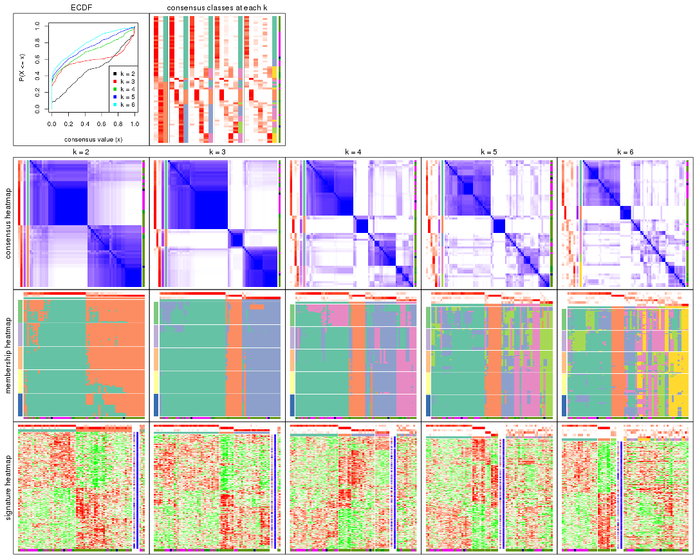
The plots are:
k and the heatmap of
predicted classes for each k.k.k.k.All the plots in panels can be made by individual functions and they are plotted later in this section.
select_partition_number() produces several plots showing different
statistics for choosing “optimized” k. There are following statistics:
k;k, the area increased is defined as \(A_k - A_{k-1}\).The detailed explanations of these statistics can be found in the cola vignette.
Generally speaking, lower PAC score, higher mean silhouette score or higher
concordance corresponds to better partition. Rand index and Jaccard index
measure how similar the current partition is compared to partition with k-1.
If they are too similar, we won't accept k is better than k-1.
select_partition_number(res)
The numeric values for all these statistics can be obtained by get_stats().
get_stats(res)
#> k 1-PAC mean_silhouette concordance area_increased Rand Jaccard
#> 2 2 0.357 0.792 0.886 0.4784 0.493 0.493
#> 3 3 0.717 0.862 0.934 0.2464 0.770 0.594
#> 4 4 0.562 0.673 0.817 0.1760 0.844 0.637
#> 5 5 0.555 0.558 0.756 0.0720 0.897 0.692
#> 6 6 0.586 0.413 0.675 0.0663 0.884 0.613
suggest_best_k() suggests the best \(k\) based on these statistics. The rules are as follows:
suggest_best_k(res)
#> [1] 3
Following shows the table of the partitions (You need to click the show/hide
code output link to see it). The membership matrix (columns with name p*)
is inferred by
clue::cl_consensus()
function with the SE method. Basically the value in the membership matrix
represents the probability to belong to a certain group. The finall class
label for an item is determined with the group with highest probability it
belongs to.
In get_classes() function, the entropy is calculated from the membership
matrix and the silhouette score is calculated from the consensus matrix.
cbind(get_classes(res, k = 2), get_membership(res, k = 2))
#> class entropy silhouette p1 p2
#> GSM479917 2 0.7299 0.803 0.204 0.796
#> GSM479920 1 0.6623 0.773 0.828 0.172
#> GSM479924 2 0.0000 0.830 0.000 1.000
#> GSM479926 1 0.0000 0.895 1.000 0.000
#> GSM479927 2 0.4690 0.841 0.100 0.900
#> GSM479931 2 0.0000 0.830 0.000 1.000
#> GSM479932 2 0.0000 0.830 0.000 1.000
#> GSM479933 2 0.6623 0.818 0.172 0.828
#> GSM479934 2 0.0000 0.830 0.000 1.000
#> GSM479935 1 0.0000 0.895 1.000 0.000
#> GSM479942 2 0.8016 0.770 0.244 0.756
#> GSM479943 1 0.5178 0.826 0.884 0.116
#> GSM479944 2 0.6712 0.815 0.176 0.824
#> GSM479945 2 0.0000 0.830 0.000 1.000
#> GSM479946 2 0.0000 0.830 0.000 1.000
#> GSM479949 1 0.8386 0.632 0.732 0.268
#> GSM479951 2 0.5294 0.788 0.120 0.880
#> GSM479952 2 0.7745 0.779 0.228 0.772
#> GSM479953 1 0.7815 0.677 0.768 0.232
#> GSM479956 2 0.4690 0.841 0.100 0.900
#> GSM479957 2 0.6531 0.820 0.168 0.832
#> GSM479959 1 0.0000 0.895 1.000 0.000
#> GSM479960 1 0.9833 0.373 0.576 0.424
#> GSM479961 2 0.0672 0.832 0.008 0.992
#> GSM479962 2 0.4298 0.842 0.088 0.912
#> GSM479963 1 0.0000 0.895 1.000 0.000
#> GSM479964 1 0.1414 0.887 0.980 0.020
#> GSM479965 1 0.0000 0.895 1.000 0.000
#> GSM479968 2 0.5408 0.837 0.124 0.876
#> GSM479969 2 0.5842 0.831 0.140 0.860
#> GSM479971 2 0.9393 0.581 0.356 0.644
#> GSM479972 2 0.0000 0.830 0.000 1.000
#> GSM479973 2 0.8955 0.692 0.312 0.688
#> GSM479974 2 0.6887 0.796 0.184 0.816
#> GSM479977 1 0.0000 0.895 1.000 0.000
#> GSM479979 2 0.0000 0.830 0.000 1.000
#> GSM479980 2 0.2603 0.839 0.044 0.956
#> GSM479981 2 0.0000 0.830 0.000 1.000
#> GSM479918 1 0.0000 0.895 1.000 0.000
#> GSM479929 1 0.0000 0.895 1.000 0.000
#> GSM479930 2 0.8861 0.685 0.304 0.696
#> GSM479938 1 0.8499 0.591 0.724 0.276
#> GSM479950 1 0.3274 0.862 0.940 0.060
#> GSM479955 2 0.8955 0.660 0.312 0.688
#> GSM479919 1 0.0000 0.895 1.000 0.000
#> GSM479921 1 0.0000 0.895 1.000 0.000
#> GSM479922 1 0.0000 0.895 1.000 0.000
#> GSM479923 1 0.6712 0.766 0.824 0.176
#> GSM479925 1 0.0000 0.895 1.000 0.000
#> GSM479928 1 0.8608 0.599 0.716 0.284
#> GSM479936 1 0.7883 0.639 0.764 0.236
#> GSM479937 1 0.3274 0.867 0.940 0.060
#> GSM479939 1 0.0000 0.895 1.000 0.000
#> GSM479940 1 0.2603 0.877 0.956 0.044
#> GSM479941 1 0.0000 0.895 1.000 0.000
#> GSM479947 1 0.6148 0.793 0.848 0.152
#> GSM479948 1 0.9522 0.435 0.628 0.372
#> GSM479954 2 0.9866 0.442 0.432 0.568
#> GSM479958 1 0.0000 0.895 1.000 0.000
#> GSM479966 1 0.0000 0.895 1.000 0.000
#> GSM479967 1 0.0000 0.895 1.000 0.000
#> GSM479970 2 0.9552 0.516 0.376 0.624
#> GSM479975 1 0.0000 0.895 1.000 0.000
#> GSM479976 2 0.9608 0.556 0.384 0.616
#> GSM479982 2 0.2778 0.840 0.048 0.952
#> GSM479978 1 0.0000 0.895 1.000 0.000
cbind(get_classes(res, k = 3), get_membership(res, k = 3))
#> class entropy silhouette p1 p2 p3
#> GSM479917 3 0.3481 0.869 0.052 0.044 0.904
#> GSM479920 1 0.3192 0.891 0.888 0.000 0.112
#> GSM479924 2 0.0000 0.906 0.000 1.000 0.000
#> GSM479926 1 0.0000 0.932 1.000 0.000 0.000
#> GSM479927 3 0.0000 0.908 0.000 0.000 1.000
#> GSM479931 3 0.1643 0.899 0.000 0.044 0.956
#> GSM479932 2 0.1643 0.873 0.000 0.956 0.044
#> GSM479933 3 0.1643 0.899 0.000 0.044 0.956
#> GSM479934 2 0.0000 0.906 0.000 1.000 0.000
#> GSM479935 1 0.0000 0.932 1.000 0.000 0.000
#> GSM479942 3 0.3192 0.791 0.112 0.000 0.888
#> GSM479943 1 0.2625 0.904 0.916 0.000 0.084
#> GSM479944 3 0.0000 0.908 0.000 0.000 1.000
#> GSM479945 2 0.6026 0.356 0.000 0.624 0.376
#> GSM479946 3 0.1964 0.890 0.000 0.056 0.944
#> GSM479949 1 0.4654 0.801 0.792 0.000 0.208
#> GSM479951 2 0.0000 0.906 0.000 1.000 0.000
#> GSM479952 3 0.5431 0.514 0.284 0.000 0.716
#> GSM479953 1 0.3038 0.894 0.896 0.000 0.104
#> GSM479956 3 0.0000 0.908 0.000 0.000 1.000
#> GSM479957 3 0.0000 0.908 0.000 0.000 1.000
#> GSM479959 1 0.0000 0.932 1.000 0.000 0.000
#> GSM479960 2 0.0000 0.906 0.000 1.000 0.000
#> GSM479961 3 0.1643 0.899 0.000 0.044 0.956
#> GSM479962 3 0.0000 0.908 0.000 0.000 1.000
#> GSM479963 1 0.0000 0.932 1.000 0.000 0.000
#> GSM479964 1 0.0237 0.931 0.996 0.000 0.004
#> GSM479965 1 0.0000 0.932 1.000 0.000 0.000
#> GSM479968 3 0.0000 0.908 0.000 0.000 1.000
#> GSM479969 3 0.6680 -0.113 0.008 0.484 0.508
#> GSM479971 3 0.0592 0.904 0.012 0.000 0.988
#> GSM479972 3 0.1643 0.899 0.000 0.044 0.956
#> GSM479973 1 0.5948 0.512 0.640 0.000 0.360
#> GSM479974 3 0.2527 0.891 0.020 0.044 0.936
#> GSM479977 1 0.0000 0.932 1.000 0.000 0.000
#> GSM479979 2 0.0000 0.906 0.000 1.000 0.000
#> GSM479980 3 0.1643 0.899 0.000 0.044 0.956
#> GSM479981 2 0.0000 0.906 0.000 1.000 0.000
#> GSM479918 1 0.0000 0.932 1.000 0.000 0.000
#> GSM479929 1 0.0000 0.932 1.000 0.000 0.000
#> GSM479930 1 0.5216 0.742 0.740 0.000 0.260
#> GSM479938 1 0.3412 0.880 0.876 0.000 0.124
#> GSM479950 1 0.2356 0.899 0.928 0.000 0.072
#> GSM479955 2 0.7079 0.664 0.104 0.720 0.176
#> GSM479919 1 0.0000 0.932 1.000 0.000 0.000
#> GSM479921 1 0.0000 0.932 1.000 0.000 0.000
#> GSM479922 1 0.0000 0.932 1.000 0.000 0.000
#> GSM479923 1 0.4555 0.807 0.800 0.000 0.200
#> GSM479925 1 0.0000 0.932 1.000 0.000 0.000
#> GSM479928 1 0.4121 0.850 0.832 0.000 0.168
#> GSM479936 1 0.2261 0.905 0.932 0.000 0.068
#> GSM479937 1 0.1529 0.923 0.960 0.000 0.040
#> GSM479939 1 0.0000 0.932 1.000 0.000 0.000
#> GSM479940 1 0.1529 0.922 0.960 0.000 0.040
#> GSM479941 1 0.0000 0.932 1.000 0.000 0.000
#> GSM479947 1 0.3941 0.852 0.844 0.000 0.156
#> GSM479948 3 0.2261 0.853 0.068 0.000 0.932
#> GSM479954 1 0.3192 0.886 0.888 0.000 0.112
#> GSM479958 1 0.0000 0.932 1.000 0.000 0.000
#> GSM479966 1 0.0000 0.932 1.000 0.000 0.000
#> GSM479967 1 0.0000 0.932 1.000 0.000 0.000
#> GSM479970 3 0.0237 0.907 0.004 0.000 0.996
#> GSM479975 1 0.0000 0.932 1.000 0.000 0.000
#> GSM479976 1 0.3619 0.871 0.864 0.000 0.136
#> GSM479982 3 0.0000 0.908 0.000 0.000 1.000
#> GSM479978 1 0.0000 0.932 1.000 0.000 0.000
cbind(get_classes(res, k = 4), get_membership(res, k = 4))
#> class entropy silhouette p1 p2 p3 p4
#> GSM479917 3 0.5463 0.543 0.052 0.000 0.692 0.256
#> GSM479920 1 0.2654 0.788 0.888 0.000 0.108 0.004
#> GSM479924 2 0.0000 0.865 0.000 1.000 0.000 0.000
#> GSM479926 1 0.2760 0.836 0.872 0.000 0.000 0.128
#> GSM479927 3 0.0188 0.714 0.000 0.000 0.996 0.004
#> GSM479931 3 0.0000 0.715 0.000 0.000 1.000 0.000
#> GSM479932 2 0.0000 0.865 0.000 1.000 0.000 0.000
#> GSM479933 4 0.2921 0.566 0.000 0.000 0.140 0.860
#> GSM479934 2 0.0000 0.865 0.000 1.000 0.000 0.000
#> GSM479935 4 0.4164 0.604 0.264 0.000 0.000 0.736
#> GSM479942 4 0.1545 0.610 0.008 0.000 0.040 0.952
#> GSM479943 4 0.6004 0.593 0.276 0.000 0.076 0.648
#> GSM479944 4 0.2921 0.566 0.000 0.000 0.140 0.860
#> GSM479945 2 0.4992 0.152 0.000 0.524 0.476 0.000
#> GSM479946 3 0.5083 0.548 0.000 0.036 0.716 0.248
#> GSM479949 1 0.2867 0.789 0.884 0.000 0.104 0.012
#> GSM479951 2 0.0000 0.865 0.000 1.000 0.000 0.000
#> GSM479952 3 0.5018 0.376 0.332 0.000 0.656 0.012
#> GSM479953 1 0.4690 0.583 0.724 0.000 0.016 0.260
#> GSM479956 3 0.1792 0.703 0.000 0.000 0.932 0.068
#> GSM479957 3 0.3123 0.620 0.000 0.000 0.844 0.156
#> GSM479959 1 0.2760 0.836 0.872 0.000 0.000 0.128
#> GSM479960 2 0.0000 0.865 0.000 1.000 0.000 0.000
#> GSM479961 3 0.1716 0.701 0.000 0.000 0.936 0.064
#> GSM479962 3 0.0188 0.714 0.000 0.000 0.996 0.004
#> GSM479963 1 0.2760 0.836 0.872 0.000 0.000 0.128
#> GSM479964 1 0.0376 0.847 0.992 0.000 0.004 0.004
#> GSM479965 1 0.2760 0.837 0.872 0.000 0.000 0.128
#> GSM479968 4 0.6071 0.275 0.044 0.000 0.452 0.504
#> GSM479969 3 0.7909 -0.105 0.068 0.404 0.456 0.072
#> GSM479971 3 0.5035 0.559 0.056 0.000 0.748 0.196
#> GSM479972 3 0.0000 0.715 0.000 0.000 1.000 0.000
#> GSM479973 3 0.5229 0.242 0.428 0.000 0.564 0.008
#> GSM479974 3 0.4252 0.558 0.004 0.000 0.744 0.252
#> GSM479977 1 0.0188 0.847 0.996 0.000 0.000 0.004
#> GSM479979 2 0.0000 0.865 0.000 1.000 0.000 0.000
#> GSM479980 4 0.3873 0.462 0.000 0.000 0.228 0.772
#> GSM479981 2 0.0000 0.865 0.000 1.000 0.000 0.000
#> GSM479918 4 0.4164 0.604 0.264 0.000 0.000 0.736
#> GSM479929 4 0.4164 0.606 0.264 0.000 0.000 0.736
#> GSM479930 1 0.5127 0.400 0.632 0.000 0.356 0.012
#> GSM479938 4 0.6646 0.508 0.156 0.000 0.224 0.620
#> GSM479950 1 0.0804 0.847 0.980 0.000 0.008 0.012
#> GSM479955 2 0.7288 0.323 0.132 0.552 0.304 0.012
#> GSM479919 1 0.2760 0.836 0.872 0.000 0.000 0.128
#> GSM479921 1 0.2760 0.836 0.872 0.000 0.000 0.128
#> GSM479922 1 0.2814 0.837 0.868 0.000 0.000 0.132
#> GSM479923 1 0.3610 0.742 0.800 0.000 0.200 0.000
#> GSM479925 1 0.2408 0.843 0.896 0.000 0.000 0.104
#> GSM479928 1 0.3937 0.694 0.800 0.000 0.188 0.012
#> GSM479936 1 0.5522 0.675 0.716 0.000 0.204 0.080
#> GSM479937 1 0.1388 0.834 0.960 0.000 0.028 0.012
#> GSM479939 1 0.0336 0.845 0.992 0.000 0.000 0.008
#> GSM479940 1 0.2722 0.849 0.904 0.000 0.032 0.064
#> GSM479941 1 0.2760 0.836 0.872 0.000 0.000 0.128
#> GSM479947 1 0.2021 0.818 0.932 0.000 0.056 0.012
#> GSM479948 3 0.4643 0.341 0.344 0.000 0.656 0.000
#> GSM479954 1 0.7006 0.447 0.528 0.000 0.340 0.132
#> GSM479958 1 0.0000 0.847 1.000 0.000 0.000 0.000
#> GSM479966 1 0.0336 0.845 0.992 0.000 0.000 0.008
#> GSM479967 1 0.0188 0.847 0.996 0.000 0.000 0.004
#> GSM479970 3 0.2412 0.676 0.084 0.000 0.908 0.008
#> GSM479975 1 0.2760 0.836 0.872 0.000 0.000 0.128
#> GSM479976 4 0.5237 0.418 0.016 0.000 0.356 0.628
#> GSM479982 3 0.0921 0.708 0.000 0.000 0.972 0.028
#> GSM479978 1 0.2760 0.836 0.872 0.000 0.000 0.128
cbind(get_classes(res, k = 5), get_membership(res, k = 5))
#> class entropy silhouette p1 p2 p3 p4 p5
#> GSM479917 4 0.7975 -0.0940 0.316 0.000 0.156 0.400 0.128
#> GSM479920 1 0.4833 0.7513 0.748 0.000 0.108 0.012 0.132
#> GSM479924 2 0.0000 0.8368 0.000 1.000 0.000 0.000 0.000
#> GSM479926 1 0.1478 0.7740 0.936 0.000 0.064 0.000 0.000
#> GSM479927 5 0.0000 0.6192 0.000 0.000 0.000 0.000 1.000
#> GSM479931 5 0.1831 0.5522 0.000 0.000 0.076 0.004 0.920
#> GSM479932 2 0.0000 0.8368 0.000 1.000 0.000 0.000 0.000
#> GSM479933 4 0.0404 0.5268 0.000 0.000 0.000 0.988 0.012
#> GSM479934 2 0.0000 0.8368 0.000 1.000 0.000 0.000 0.000
#> GSM479935 4 0.5274 0.4655 0.336 0.000 0.064 0.600 0.000
#> GSM479942 4 0.0162 0.5263 0.000 0.000 0.000 0.996 0.004
#> GSM479943 4 0.5752 0.4583 0.036 0.000 0.316 0.604 0.044
#> GSM479944 4 0.0671 0.5274 0.000 0.000 0.004 0.980 0.016
#> GSM479945 5 0.3607 0.4547 0.000 0.244 0.004 0.000 0.752
#> GSM479946 2 0.8401 -0.1857 0.000 0.316 0.228 0.300 0.156
#> GSM479949 1 0.4591 0.7498 0.748 0.000 0.120 0.000 0.132
#> GSM479951 2 0.0000 0.8368 0.000 1.000 0.000 0.000 0.000
#> GSM479952 5 0.4541 0.3461 0.136 0.000 0.112 0.000 0.752
#> GSM479953 1 0.4866 0.4736 0.580 0.000 0.000 0.392 0.028
#> GSM479956 3 0.5128 0.3864 0.000 0.000 0.604 0.052 0.344
#> GSM479957 4 0.6721 0.0762 0.000 0.000 0.256 0.404 0.340
#> GSM479959 1 0.1364 0.7909 0.952 0.000 0.036 0.012 0.000
#> GSM479960 2 0.0000 0.8368 0.000 1.000 0.000 0.000 0.000
#> GSM479961 5 0.3003 0.5019 0.000 0.000 0.000 0.188 0.812
#> GSM479962 5 0.0000 0.6192 0.000 0.000 0.000 0.000 1.000
#> GSM479963 1 0.1478 0.7740 0.936 0.000 0.064 0.000 0.000
#> GSM479964 1 0.3206 0.7974 0.856 0.000 0.108 0.012 0.024
#> GSM479965 1 0.2769 0.7833 0.876 0.000 0.092 0.032 0.000
#> GSM479968 4 0.5443 0.1712 0.000 0.000 0.060 0.504 0.436
#> GSM479969 3 0.5857 0.3338 0.000 0.112 0.584 0.004 0.300
#> GSM479971 4 0.7367 0.2394 0.060 0.000 0.272 0.484 0.184
#> GSM479972 3 0.4451 0.2212 0.000 0.000 0.504 0.004 0.492
#> GSM479973 1 0.6788 0.2262 0.444 0.000 0.208 0.008 0.340
#> GSM479974 3 0.6068 0.2994 0.000 0.000 0.532 0.328 0.140
#> GSM479977 1 0.2625 0.7991 0.876 0.000 0.108 0.016 0.000
#> GSM479979 2 0.0000 0.8368 0.000 1.000 0.000 0.000 0.000
#> GSM479980 4 0.1845 0.4979 0.000 0.000 0.056 0.928 0.016
#> GSM479981 2 0.0000 0.8368 0.000 1.000 0.000 0.000 0.000
#> GSM479918 4 0.5425 0.4739 0.320 0.000 0.080 0.600 0.000
#> GSM479929 4 0.5821 0.4869 0.240 0.000 0.156 0.604 0.000
#> GSM479930 3 0.6422 0.1485 0.180 0.000 0.460 0.000 0.360
#> GSM479938 4 0.5935 0.3917 0.020 0.000 0.324 0.580 0.076
#> GSM479950 1 0.4331 0.6231 0.596 0.000 0.400 0.000 0.004
#> GSM479955 2 0.6203 0.0584 0.000 0.464 0.396 0.000 0.140
#> GSM479919 1 0.1478 0.7740 0.936 0.000 0.064 0.000 0.000
#> GSM479921 1 0.1478 0.7740 0.936 0.000 0.064 0.000 0.000
#> GSM479922 1 0.3480 0.6825 0.752 0.000 0.248 0.000 0.000
#> GSM479923 1 0.3847 0.7342 0.784 0.000 0.036 0.000 0.180
#> GSM479925 1 0.1106 0.7988 0.964 0.000 0.024 0.000 0.012
#> GSM479928 1 0.5530 0.5808 0.556 0.000 0.368 0.000 0.076
#> GSM479936 1 0.4891 0.6576 0.640 0.000 0.316 0.000 0.044
#> GSM479937 1 0.4697 0.6138 0.592 0.000 0.388 0.000 0.020
#> GSM479939 1 0.3177 0.7789 0.792 0.000 0.208 0.000 0.000
#> GSM479940 1 0.2921 0.7987 0.856 0.000 0.124 0.000 0.020
#> GSM479941 1 0.1478 0.7740 0.936 0.000 0.064 0.000 0.000
#> GSM479947 1 0.3882 0.7755 0.788 0.000 0.168 0.000 0.044
#> GSM479948 3 0.3481 0.4890 0.056 0.000 0.840 0.004 0.100
#> GSM479954 1 0.5731 0.3929 0.568 0.000 0.104 0.000 0.328
#> GSM479958 1 0.2690 0.7948 0.844 0.000 0.156 0.000 0.000
#> GSM479966 1 0.2813 0.7907 0.832 0.000 0.168 0.000 0.000
#> GSM479967 1 0.2389 0.8004 0.880 0.000 0.116 0.000 0.004
#> GSM479970 3 0.3398 0.5069 0.000 0.000 0.780 0.004 0.216
#> GSM479975 1 0.1478 0.7740 0.936 0.000 0.064 0.000 0.000
#> GSM479976 4 0.6911 0.2356 0.116 0.000 0.044 0.460 0.380
#> GSM479982 5 0.6450 0.0249 0.000 0.000 0.212 0.296 0.492
#> GSM479978 1 0.0000 0.7889 1.000 0.000 0.000 0.000 0.000
cbind(get_classes(res, k = 6), get_membership(res, k = 6))
#> class entropy silhouette p1 p2 p3 p4 p5 p6
#> GSM479917 6 0.8080 -0.10504 0.112 0.000 0.188 0.232 0.068 0.400
#> GSM479920 1 0.2468 0.56672 0.888 0.000 0.048 0.060 0.000 0.004
#> GSM479924 2 0.1124 0.96849 0.000 0.956 0.036 0.000 0.008 0.000
#> GSM479926 1 0.3833 0.54980 0.556 0.000 0.000 0.000 0.444 0.000
#> GSM479927 5 0.5296 0.68827 0.000 0.000 0.100 0.448 0.452 0.000
#> GSM479931 4 0.5339 -0.67250 0.000 0.000 0.108 0.488 0.404 0.000
#> GSM479932 2 0.0000 0.98756 0.000 1.000 0.000 0.000 0.000 0.000
#> GSM479933 6 0.0260 0.47152 0.000 0.000 0.000 0.008 0.000 0.992
#> GSM479934 2 0.0000 0.98756 0.000 1.000 0.000 0.000 0.000 0.000
#> GSM479935 6 0.4362 0.39446 0.028 0.000 0.000 0.000 0.388 0.584
#> GSM479942 6 0.0146 0.47270 0.004 0.000 0.000 0.000 0.000 0.996
#> GSM479943 6 0.5950 0.36829 0.084 0.000 0.264 0.036 0.020 0.596
#> GSM479944 6 0.0508 0.47093 0.000 0.000 0.004 0.012 0.000 0.984
#> GSM479945 5 0.6738 0.55993 0.000 0.212 0.048 0.336 0.404 0.000
#> GSM479946 4 0.8159 0.13784 0.000 0.156 0.124 0.336 0.068 0.316
#> GSM479949 1 0.2520 0.56417 0.888 0.000 0.052 0.052 0.008 0.000
#> GSM479951 2 0.0000 0.98756 0.000 1.000 0.000 0.000 0.000 0.000
#> GSM479952 4 0.6423 -0.48984 0.140 0.000 0.056 0.488 0.316 0.000
#> GSM479953 6 0.6907 -0.04920 0.348 0.000 0.196 0.008 0.048 0.400
#> GSM479956 4 0.3435 0.26131 0.084 0.000 0.032 0.840 0.004 0.040
#> GSM479957 4 0.5719 0.11397 0.112 0.000 0.012 0.528 0.004 0.344
#> GSM479959 1 0.5452 0.46175 0.604 0.000 0.216 0.000 0.172 0.008
#> GSM479960 2 0.0000 0.98756 0.000 1.000 0.000 0.000 0.000 0.000
#> GSM479961 5 0.7374 0.42596 0.000 0.000 0.180 0.220 0.412 0.188
#> GSM479962 5 0.5296 0.68827 0.000 0.000 0.100 0.448 0.452 0.000
#> GSM479963 1 0.3756 0.56338 0.600 0.000 0.000 0.000 0.400 0.000
#> GSM479964 1 0.1711 0.58728 0.936 0.000 0.040 0.008 0.008 0.008
#> GSM479965 1 0.4810 0.56315 0.652 0.000 0.056 0.000 0.276 0.016
#> GSM479968 6 0.6696 0.20129 0.120 0.000 0.020 0.228 0.080 0.552
#> GSM479969 3 0.5704 -0.08787 0.004 0.040 0.464 0.440 0.052 0.000
#> GSM479971 4 0.7113 0.04463 0.056 0.000 0.212 0.400 0.012 0.320
#> GSM479972 4 0.1225 0.11342 0.000 0.000 0.012 0.952 0.036 0.000
#> GSM479973 1 0.5291 0.15297 0.604 0.000 0.012 0.296 0.084 0.004
#> GSM479974 4 0.4769 0.23717 0.000 0.000 0.016 0.592 0.032 0.360
#> GSM479977 1 0.2863 0.55157 0.860 0.000 0.096 0.000 0.036 0.008
#> GSM479979 2 0.1124 0.96849 0.000 0.956 0.036 0.000 0.008 0.000
#> GSM479980 6 0.1501 0.42482 0.000 0.000 0.000 0.076 0.000 0.924
#> GSM479981 2 0.0000 0.98756 0.000 1.000 0.000 0.000 0.000 0.000
#> GSM479918 6 0.4679 0.40085 0.020 0.000 0.020 0.000 0.376 0.584
#> GSM479929 6 0.5811 0.29716 0.112 0.000 0.380 0.000 0.020 0.488
#> GSM479930 4 0.6397 0.00608 0.376 0.000 0.116 0.448 0.060 0.000
#> GSM479938 6 0.5926 0.18448 0.164 0.000 0.376 0.008 0.000 0.452
#> GSM479950 3 0.3945 0.45210 0.380 0.000 0.612 0.000 0.008 0.000
#> GSM479955 3 0.6568 0.21808 0.084 0.280 0.544 0.056 0.036 0.000
#> GSM479919 1 0.3843 0.54484 0.548 0.000 0.000 0.000 0.452 0.000
#> GSM479921 1 0.3851 0.54072 0.540 0.000 0.000 0.000 0.460 0.000
#> GSM479922 3 0.5746 0.32188 0.376 0.000 0.452 0.000 0.172 0.000
#> GSM479923 1 0.5114 0.54855 0.712 0.000 0.100 0.100 0.088 0.000
#> GSM479925 1 0.2378 0.63212 0.848 0.000 0.000 0.000 0.152 0.000
#> GSM479928 3 0.4570 0.51746 0.436 0.000 0.528 0.036 0.000 0.000
#> GSM479936 1 0.5744 0.19891 0.556 0.000 0.220 0.008 0.216 0.000
#> GSM479937 3 0.4492 0.48938 0.480 0.000 0.496 0.016 0.008 0.000
#> GSM479939 1 0.2980 0.55662 0.808 0.000 0.180 0.000 0.012 0.000
#> GSM479940 1 0.3187 0.54944 0.796 0.000 0.188 0.004 0.012 0.000
#> GSM479941 1 0.3851 0.54072 0.540 0.000 0.000 0.000 0.460 0.000
#> GSM479947 1 0.0865 0.58483 0.964 0.000 0.036 0.000 0.000 0.000
#> GSM479948 4 0.4224 0.08188 0.008 0.000 0.476 0.512 0.000 0.004
#> GSM479954 1 0.7408 0.08878 0.356 0.000 0.148 0.188 0.308 0.000
#> GSM479958 1 0.2446 0.58770 0.864 0.000 0.124 0.000 0.012 0.000
#> GSM479966 1 0.1010 0.58615 0.960 0.000 0.036 0.000 0.004 0.000
#> GSM479967 1 0.0547 0.60792 0.980 0.000 0.000 0.000 0.020 0.000
#> GSM479970 4 0.4420 0.16072 0.040 0.000 0.340 0.620 0.000 0.000
#> GSM479975 1 0.3843 0.54484 0.548 0.000 0.000 0.000 0.452 0.000
#> GSM479976 6 0.6374 0.19577 0.000 0.000 0.020 0.216 0.352 0.412
#> GSM479982 4 0.3791 0.09610 0.000 0.000 0.000 0.732 0.032 0.236
#> GSM479978 1 0.2823 0.62508 0.796 0.000 0.000 0.000 0.204 0.000
Heatmaps for the consensus matrix. It visualizes the probability of two samples to be in a same group.
consensus_heatmap(res, k = 2)
consensus_heatmap(res, k = 3)
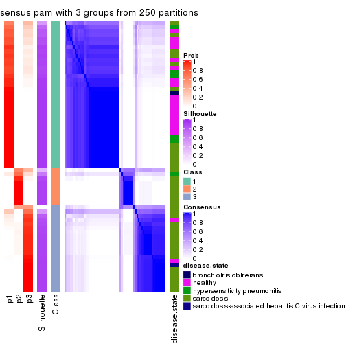
consensus_heatmap(res, k = 4)
consensus_heatmap(res, k = 5)

consensus_heatmap(res, k = 6)
Heatmaps for the membership of samples in all partitions to see how consistent they are:
membership_heatmap(res, k = 2)
membership_heatmap(res, k = 3)
membership_heatmap(res, k = 4)
membership_heatmap(res, k = 5)
membership_heatmap(res, k = 6)
As soon as we have had the classes for columns, we can look for signatures which are significantly different between classes which can be candidate marks for certain classes. Following are the heatmaps for signatures.
Signature heatmaps where rows are scaled:
get_signatures(res, k = 2)
get_signatures(res, k = 3)
get_signatures(res, k = 4)
get_signatures(res, k = 5)
get_signatures(res, k = 6)
Signature heatmaps where rows are not scaled:
get_signatures(res, k = 2, scale_rows = FALSE)
get_signatures(res, k = 3, scale_rows = FALSE)
get_signatures(res, k = 4, scale_rows = FALSE)
get_signatures(res, k = 5, scale_rows = FALSE)
get_signatures(res, k = 6, scale_rows = FALSE)
Compare the overlap of signatures from different k:
compare_signatures(res)
get_signature() returns a data frame invisibly. TO get the list of signatures, the function
call should be assigned to a variable explicitly. In following code, if plot argument is set
to FALSE, no heatmap is plotted while only the differential analysis is performed.
# code only for demonstration
tb = get_signature(res, k = ..., plot = FALSE)
An example of the output of tb is:
#> which_row fdr mean_1 mean_2 scaled_mean_1 scaled_mean_2 km
#> 1 38 0.042760348 8.373488 9.131774 -0.5533452 0.5164555 1
#> 2 40 0.018707592 7.106213 8.469186 -0.6173731 0.5762149 1
#> 3 55 0.019134737 10.221463 11.207825 -0.6159697 0.5749050 1
#> 4 59 0.006059896 5.921854 7.869574 -0.6899429 0.6439467 1
#> 5 60 0.018055526 8.928898 10.211722 -0.6204761 0.5791110 1
#> 6 98 0.009384629 15.714769 14.887706 0.6635654 -0.6193277 2
...
The columns in tb are:
which_row: row indices corresponding to the input matrix.fdr: FDR for the differential test. mean_x: The mean value in group x.scaled_mean_x: The mean value in group x after rows are scaled.km: Row groups if k-means clustering is applied to rows.UMAP plot which shows how samples are separated.
dimension_reduction(res, k = 2, method = "UMAP")
dimension_reduction(res, k = 3, method = "UMAP")
dimension_reduction(res, k = 4, method = "UMAP")
dimension_reduction(res, k = 5, method = "UMAP")
dimension_reduction(res, k = 6, method = "UMAP")
Following heatmap shows how subgroups are split when increasing k:
collect_classes(res)
Test correlation between subgroups and known annotations. If the known annotation is numeric, one-way ANOVA test is applied, and if the known annotation is discrete, chi-squared contingency table test is applied.
test_to_known_factors(res)
#> n disease.state(p) k
#> CV:pam 63 0.000592 2
#> CV:pam 64 0.003566 3
#> CV:pam 55 0.000247 4
#> CV:pam 41 0.088757 5
#> CV:pam 31 0.046209 6
If matrix rows can be associated to genes, consider to use functional_enrichment(res,
...) to perform function enrichment for the signature genes. See this vignette for more detailed explanations.
The object with results only for a single top-value method and a single partition method can be extracted as:
res = res_list["CV", "mclust"]
# you can also extract it by
# res = res_list["CV:mclust"]
A summary of res and all the functions that can be applied to it:
res
#> A 'ConsensusPartition' object with k = 2, 3, 4, 5, 6.
#> On a matrix with 51941 rows and 66 columns.
#> Top rows (1000, 2000, 3000, 4000, 5000) are extracted by 'CV' method.
#> Subgroups are detected by 'mclust' method.
#> Performed in total 1250 partitions by row resampling.
#> Best k for subgroups seems to be 2.
#>
#> Following methods can be applied to this 'ConsensusPartition' object:
#> [1] "cola_report" "collect_classes" "collect_plots"
#> [4] "collect_stats" "colnames" "compare_signatures"
#> [7] "consensus_heatmap" "dimension_reduction" "functional_enrichment"
#> [10] "get_anno_col" "get_anno" "get_classes"
#> [13] "get_consensus" "get_matrix" "get_membership"
#> [16] "get_param" "get_signatures" "get_stats"
#> [19] "is_best_k" "is_stable_k" "membership_heatmap"
#> [22] "ncol" "nrow" "plot_ecdf"
#> [25] "rownames" "select_partition_number" "show"
#> [28] "suggest_best_k" "test_to_known_factors"
collect_plots() function collects all the plots made from res for all k (number of partitions)
into one single page to provide an easy and fast comparison between different k.
collect_plots(res)
The plots are:
k and the heatmap of
predicted classes for each k.k.k.k.All the plots in panels can be made by individual functions and they are plotted later in this section.
select_partition_number() produces several plots showing different
statistics for choosing “optimized” k. There are following statistics:
k;k, the area increased is defined as \(A_k - A_{k-1}\).The detailed explanations of these statistics can be found in the cola vignette.
Generally speaking, lower PAC score, higher mean silhouette score or higher
concordance corresponds to better partition. Rand index and Jaccard index
measure how similar the current partition is compared to partition with k-1.
If they are too similar, we won't accept k is better than k-1.
select_partition_number(res)
The numeric values for all these statistics can be obtained by get_stats().
get_stats(res)
#> k 1-PAC mean_silhouette concordance area_increased Rand Jaccard
#> 2 2 1.000 0.974 0.986 0.2999 0.698 0.698
#> 3 3 0.795 0.838 0.931 0.7771 0.721 0.615
#> 4 4 0.566 0.483 0.753 0.2090 0.875 0.739
#> 5 5 0.594 0.662 0.813 0.0831 0.737 0.444
#> 6 6 0.693 0.681 0.838 0.0862 0.851 0.578
suggest_best_k() suggests the best \(k\) based on these statistics. The rules are as follows:
suggest_best_k(res)
#> [1] 2
Following shows the table of the partitions (You need to click the show/hide
code output link to see it). The membership matrix (columns with name p*)
is inferred by
clue::cl_consensus()
function with the SE method. Basically the value in the membership matrix
represents the probability to belong to a certain group. The finall class
label for an item is determined with the group with highest probability it
belongs to.
In get_classes() function, the entropy is calculated from the membership
matrix and the silhouette score is calculated from the consensus matrix.
cbind(get_classes(res, k = 2), get_membership(res, k = 2))
#> class entropy silhouette p1 p2
#> GSM479917 1 0.0000 0.992 1.000 0.000
#> GSM479920 1 0.0000 0.992 1.000 0.000
#> GSM479924 2 0.0672 0.961 0.008 0.992
#> GSM479926 1 0.0672 0.985 0.992 0.008
#> GSM479927 1 0.5408 0.850 0.876 0.124
#> GSM479931 2 0.3274 0.944 0.060 0.940
#> GSM479932 2 0.0672 0.961 0.008 0.992
#> GSM479933 1 0.0000 0.992 1.000 0.000
#> GSM479934 2 0.0672 0.961 0.008 0.992
#> GSM479935 1 0.0000 0.992 1.000 0.000
#> GSM479942 1 0.0000 0.992 1.000 0.000
#> GSM479943 1 0.0000 0.992 1.000 0.000
#> GSM479944 1 0.0000 0.992 1.000 0.000
#> GSM479945 2 0.2603 0.953 0.044 0.956
#> GSM479946 2 0.2948 0.949 0.052 0.948
#> GSM479949 1 0.0000 0.992 1.000 0.000
#> GSM479951 2 0.0672 0.961 0.008 0.992
#> GSM479952 1 0.0000 0.992 1.000 0.000
#> GSM479953 1 0.0000 0.992 1.000 0.000
#> GSM479956 1 0.0000 0.992 1.000 0.000
#> GSM479957 1 0.0000 0.992 1.000 0.000
#> GSM479959 1 0.0000 0.992 1.000 0.000
#> GSM479960 2 0.0672 0.961 0.008 0.992
#> GSM479961 2 0.8016 0.707 0.244 0.756
#> GSM479962 1 0.0000 0.992 1.000 0.000
#> GSM479963 1 0.0672 0.985 0.992 0.008
#> GSM479964 1 0.0000 0.992 1.000 0.000
#> GSM479965 1 0.0000 0.992 1.000 0.000
#> GSM479968 1 0.0000 0.992 1.000 0.000
#> GSM479969 1 0.0000 0.992 1.000 0.000
#> GSM479971 1 0.0000 0.992 1.000 0.000
#> GSM479972 2 0.3114 0.947 0.056 0.944
#> GSM479973 1 0.0000 0.992 1.000 0.000
#> GSM479974 1 0.8016 0.661 0.756 0.244
#> GSM479977 1 0.0000 0.992 1.000 0.000
#> GSM479979 2 0.0672 0.961 0.008 0.992
#> GSM479980 1 0.0376 0.988 0.996 0.004
#> GSM479981 2 0.0672 0.961 0.008 0.992
#> GSM479918 1 0.0000 0.992 1.000 0.000
#> GSM479929 1 0.0000 0.992 1.000 0.000
#> GSM479930 1 0.0000 0.992 1.000 0.000
#> GSM479938 1 0.0000 0.992 1.000 0.000
#> GSM479950 1 0.0000 0.992 1.000 0.000
#> GSM479955 1 0.0000 0.992 1.000 0.000
#> GSM479919 1 0.0672 0.985 0.992 0.008
#> GSM479921 1 0.0000 0.992 1.000 0.000
#> GSM479922 1 0.0000 0.992 1.000 0.000
#> GSM479923 1 0.0000 0.992 1.000 0.000
#> GSM479925 1 0.0000 0.992 1.000 0.000
#> GSM479928 1 0.0000 0.992 1.000 0.000
#> GSM479936 1 0.0376 0.989 0.996 0.004
#> GSM479937 1 0.0000 0.992 1.000 0.000
#> GSM479939 1 0.0000 0.992 1.000 0.000
#> GSM479940 1 0.0000 0.992 1.000 0.000
#> GSM479941 1 0.0000 0.992 1.000 0.000
#> GSM479947 1 0.0000 0.992 1.000 0.000
#> GSM479948 1 0.0000 0.992 1.000 0.000
#> GSM479954 1 0.0672 0.985 0.992 0.008
#> GSM479958 1 0.0000 0.992 1.000 0.000
#> GSM479966 1 0.0000 0.992 1.000 0.000
#> GSM479967 1 0.0672 0.985 0.992 0.008
#> GSM479970 1 0.0000 0.992 1.000 0.000
#> GSM479975 1 0.0000 0.992 1.000 0.000
#> GSM479976 1 0.0000 0.992 1.000 0.000
#> GSM479982 1 0.0000 0.992 1.000 0.000
#> GSM479978 1 0.0000 0.992 1.000 0.000
cbind(get_classes(res, k = 3), get_membership(res, k = 3))
#> class entropy silhouette p1 p2 p3
#> GSM479917 3 0.1860 0.831 0.052 0.000 0.948
#> GSM479920 1 0.0000 0.935 1.000 0.000 0.000
#> GSM479924 2 0.0000 0.954 0.000 1.000 0.000
#> GSM479926 1 0.0424 0.932 0.992 0.000 0.008
#> GSM479927 3 0.3043 0.840 0.084 0.008 0.908
#> GSM479931 3 0.1919 0.840 0.020 0.024 0.956
#> GSM479932 2 0.0000 0.954 0.000 1.000 0.000
#> GSM479933 1 0.6267 0.203 0.548 0.000 0.452
#> GSM479934 2 0.5216 0.632 0.000 0.740 0.260
#> GSM479935 1 0.0892 0.927 0.980 0.000 0.020
#> GSM479942 1 0.3340 0.847 0.880 0.000 0.120
#> GSM479943 1 0.0000 0.935 1.000 0.000 0.000
#> GSM479944 1 0.3752 0.821 0.856 0.000 0.144
#> GSM479945 3 0.4209 0.769 0.020 0.120 0.860
#> GSM479946 3 0.4862 0.723 0.020 0.160 0.820
#> GSM479949 1 0.1529 0.905 0.960 0.000 0.040
#> GSM479951 2 0.0000 0.954 0.000 1.000 0.000
#> GSM479952 1 0.6111 0.244 0.604 0.000 0.396
#> GSM479953 1 0.2625 0.877 0.916 0.000 0.084
#> GSM479956 3 0.2165 0.849 0.064 0.000 0.936
#> GSM479957 3 0.3116 0.822 0.108 0.000 0.892
#> GSM479959 1 0.1529 0.915 0.960 0.000 0.040
#> GSM479960 2 0.0000 0.954 0.000 1.000 0.000
#> GSM479961 3 0.0661 0.836 0.004 0.008 0.988
#> GSM479962 3 0.2945 0.838 0.088 0.004 0.908
#> GSM479963 1 0.0000 0.935 1.000 0.000 0.000
#> GSM479964 1 0.0892 0.927 0.980 0.000 0.020
#> GSM479965 1 0.0892 0.927 0.980 0.000 0.020
#> GSM479968 3 0.6260 0.284 0.448 0.000 0.552
#> GSM479969 1 0.5327 0.579 0.728 0.000 0.272
#> GSM479971 3 0.2625 0.845 0.084 0.000 0.916
#> GSM479972 3 0.1315 0.844 0.020 0.008 0.972
#> GSM479973 1 0.0892 0.927 0.980 0.000 0.020
#> GSM479974 3 0.1453 0.846 0.024 0.008 0.968
#> GSM479977 1 0.0892 0.927 0.980 0.000 0.020
#> GSM479979 2 0.0000 0.954 0.000 1.000 0.000
#> GSM479980 3 0.0000 0.831 0.000 0.000 1.000
#> GSM479981 2 0.0000 0.954 0.000 1.000 0.000
#> GSM479918 1 0.0892 0.927 0.980 0.000 0.020
#> GSM479929 1 0.0424 0.932 0.992 0.000 0.008
#> GSM479930 3 0.6111 0.422 0.396 0.000 0.604
#> GSM479938 1 0.0000 0.935 1.000 0.000 0.000
#> GSM479950 1 0.0000 0.935 1.000 0.000 0.000
#> GSM479955 1 0.0000 0.935 1.000 0.000 0.000
#> GSM479919 1 0.0000 0.935 1.000 0.000 0.000
#> GSM479921 1 0.0237 0.934 0.996 0.000 0.004
#> GSM479922 1 0.0000 0.935 1.000 0.000 0.000
#> GSM479923 1 0.4399 0.737 0.812 0.000 0.188
#> GSM479925 1 0.0000 0.935 1.000 0.000 0.000
#> GSM479928 1 0.0000 0.935 1.000 0.000 0.000
#> GSM479936 1 0.0000 0.935 1.000 0.000 0.000
#> GSM479937 1 0.0000 0.935 1.000 0.000 0.000
#> GSM479939 1 0.0000 0.935 1.000 0.000 0.000
#> GSM479940 1 0.0000 0.935 1.000 0.000 0.000
#> GSM479941 1 0.0892 0.927 0.980 0.000 0.020
#> GSM479947 1 0.0000 0.935 1.000 0.000 0.000
#> GSM479948 3 0.3412 0.809 0.124 0.000 0.876
#> GSM479954 1 0.0000 0.935 1.000 0.000 0.000
#> GSM479958 1 0.0000 0.935 1.000 0.000 0.000
#> GSM479966 1 0.0000 0.935 1.000 0.000 0.000
#> GSM479967 1 0.0000 0.935 1.000 0.000 0.000
#> GSM479970 1 0.6309 -0.113 0.504 0.000 0.496
#> GSM479975 1 0.0000 0.935 1.000 0.000 0.000
#> GSM479976 1 0.0237 0.933 0.996 0.000 0.004
#> GSM479982 3 0.0892 0.844 0.020 0.000 0.980
#> GSM479978 1 0.0000 0.935 1.000 0.000 0.000
cbind(get_classes(res, k = 4), get_membership(res, k = 4))
#> class entropy silhouette p1 p2 p3 p4
#> GSM479917 4 0.5147 0.557 0.004 0.000 0.460 0.536
#> GSM479920 1 0.5161 0.563 0.520 0.000 0.476 0.004
#> GSM479924 2 0.0000 0.977 0.000 1.000 0.000 0.000
#> GSM479926 1 0.4585 0.547 0.668 0.000 0.332 0.000
#> GSM479927 4 0.0592 0.752 0.000 0.000 0.016 0.984
#> GSM479931 4 0.0000 0.752 0.000 0.000 0.000 1.000
#> GSM479932 2 0.0000 0.977 0.000 1.000 0.000 0.000
#> GSM479933 3 0.6074 -0.618 0.044 0.000 0.500 0.456
#> GSM479934 2 0.2760 0.842 0.000 0.872 0.000 0.128
#> GSM479935 1 0.0188 0.343 0.996 0.000 0.004 0.000
#> GSM479942 3 0.5168 -0.211 0.496 0.000 0.500 0.004
#> GSM479943 1 0.4134 0.497 0.740 0.000 0.260 0.000
#> GSM479944 1 0.5510 -0.197 0.504 0.000 0.480 0.016
#> GSM479945 4 0.1118 0.742 0.000 0.036 0.000 0.964
#> GSM479946 4 0.4008 0.582 0.000 0.244 0.000 0.756
#> GSM479949 3 0.7310 -0.170 0.360 0.000 0.480 0.160
#> GSM479951 2 0.0000 0.977 0.000 1.000 0.000 0.000
#> GSM479952 3 0.6605 -0.439 0.440 0.000 0.480 0.080
#> GSM479953 1 0.1867 0.267 0.928 0.000 0.072 0.000
#> GSM479956 4 0.0188 0.752 0.000 0.000 0.004 0.996
#> GSM479957 4 0.4356 0.679 0.000 0.000 0.292 0.708
#> GSM479959 1 0.4661 0.503 0.652 0.000 0.348 0.000
#> GSM479960 2 0.0000 0.977 0.000 1.000 0.000 0.000
#> GSM479961 4 0.0921 0.751 0.000 0.000 0.028 0.972
#> GSM479962 4 0.1867 0.726 0.000 0.000 0.072 0.928
#> GSM479963 1 0.4996 0.562 0.516 0.000 0.484 0.000
#> GSM479964 1 0.3726 0.457 0.788 0.000 0.212 0.000
#> GSM479965 1 0.0336 0.340 0.992 0.000 0.008 0.000
#> GSM479968 4 0.7763 0.233 0.248 0.000 0.332 0.420
#> GSM479969 3 0.7310 -0.170 0.360 0.000 0.480 0.160
#> GSM479971 4 0.5722 0.623 0.136 0.000 0.148 0.716
#> GSM479972 4 0.0000 0.752 0.000 0.000 0.000 1.000
#> GSM479973 1 0.4761 0.537 0.664 0.000 0.332 0.004
#> GSM479974 4 0.2081 0.718 0.084 0.000 0.000 0.916
#> GSM479977 1 0.0707 0.330 0.980 0.000 0.020 0.000
#> GSM479979 2 0.0000 0.977 0.000 1.000 0.000 0.000
#> GSM479980 4 0.4999 0.537 0.000 0.000 0.492 0.508
#> GSM479981 2 0.0000 0.977 0.000 1.000 0.000 0.000
#> GSM479918 1 0.0188 0.343 0.996 0.000 0.004 0.000
#> GSM479929 1 0.2408 0.412 0.896 0.000 0.104 0.000
#> GSM479930 3 0.7550 0.134 0.220 0.000 0.480 0.300
#> GSM479938 1 0.4356 0.526 0.708 0.000 0.292 0.000
#> GSM479950 1 0.4992 0.567 0.524 0.000 0.476 0.000
#> GSM479955 1 0.5938 0.484 0.484 0.000 0.480 0.036
#> GSM479919 1 0.4961 0.572 0.552 0.000 0.448 0.000
#> GSM479921 1 0.1867 0.374 0.928 0.000 0.072 0.000
#> GSM479922 1 0.4985 0.570 0.532 0.000 0.468 0.000
#> GSM479923 3 0.7550 -0.078 0.300 0.000 0.480 0.220
#> GSM479925 1 0.4996 0.562 0.516 0.000 0.484 0.000
#> GSM479928 1 0.5163 0.558 0.516 0.000 0.480 0.004
#> GSM479936 1 0.4996 0.562 0.516 0.000 0.484 0.000
#> GSM479937 1 0.4996 0.562 0.516 0.000 0.484 0.000
#> GSM479939 1 0.4898 0.567 0.584 0.000 0.416 0.000
#> GSM479940 1 0.4985 0.570 0.532 0.000 0.468 0.000
#> GSM479941 1 0.0707 0.330 0.980 0.000 0.020 0.000
#> GSM479947 1 0.4994 0.564 0.520 0.000 0.480 0.000
#> GSM479948 4 0.6306 -0.110 0.064 0.000 0.392 0.544
#> GSM479954 1 0.4996 0.562 0.516 0.000 0.484 0.000
#> GSM479958 1 0.4992 0.567 0.524 0.000 0.476 0.000
#> GSM479966 1 0.4996 0.562 0.516 0.000 0.484 0.000
#> GSM479967 1 0.4994 0.565 0.520 0.000 0.480 0.000
#> GSM479970 3 0.7395 0.179 0.176 0.000 0.480 0.344
#> GSM479975 1 0.4543 0.547 0.676 0.000 0.324 0.000
#> GSM479976 1 0.4994 0.564 0.520 0.000 0.480 0.000
#> GSM479982 4 0.4250 0.675 0.000 0.000 0.276 0.724
#> GSM479978 1 0.4967 0.566 0.548 0.000 0.452 0.000
cbind(get_classes(res, k = 5), get_membership(res, k = 5))
#> class entropy silhouette p1 p2 p3 p4 p5
#> GSM479917 4 0.1780 0.6391 0.028 0.000 0.008 0.940 0.024
#> GSM479920 1 0.2179 0.7433 0.888 0.000 0.112 0.000 0.000
#> GSM479924 2 0.0000 0.9240 0.000 1.000 0.000 0.000 0.000
#> GSM479926 1 0.3561 0.5576 0.740 0.000 0.260 0.000 0.000
#> GSM479927 5 0.2260 0.8352 0.028 0.000 0.064 0.000 0.908
#> GSM479931 5 0.0162 0.8537 0.000 0.004 0.000 0.000 0.996
#> GSM479932 2 0.0000 0.9240 0.000 1.000 0.000 0.000 0.000
#> GSM479933 4 0.0609 0.6391 0.000 0.000 0.000 0.980 0.020
#> GSM479934 2 0.4201 0.2348 0.000 0.592 0.000 0.000 0.408
#> GSM479935 3 0.3395 0.9082 0.236 0.000 0.764 0.000 0.000
#> GSM479942 4 0.0609 0.6435 0.020 0.000 0.000 0.980 0.000
#> GSM479943 1 0.3274 0.5831 0.780 0.000 0.220 0.000 0.000
#> GSM479944 4 0.1043 0.6424 0.040 0.000 0.000 0.960 0.000
#> GSM479945 5 0.1608 0.8377 0.000 0.072 0.000 0.000 0.928
#> GSM479946 5 0.3109 0.7126 0.000 0.200 0.000 0.000 0.800
#> GSM479949 1 0.3846 0.6796 0.776 0.000 0.200 0.020 0.004
#> GSM479951 2 0.0000 0.9240 0.000 1.000 0.000 0.000 0.000
#> GSM479952 1 0.3779 0.6779 0.776 0.000 0.200 0.000 0.024
#> GSM479953 4 0.6691 -0.3205 0.360 0.000 0.240 0.400 0.000
#> GSM479956 5 0.5736 0.6541 0.108 0.000 0.084 0.100 0.708
#> GSM479957 4 0.6420 0.2099 0.060 0.000 0.060 0.548 0.332
#> GSM479959 1 0.3420 0.6827 0.840 0.000 0.084 0.076 0.000
#> GSM479960 2 0.0000 0.9240 0.000 1.000 0.000 0.000 0.000
#> GSM479961 5 0.0794 0.8441 0.000 0.000 0.000 0.028 0.972
#> GSM479962 5 0.3669 0.7543 0.056 0.000 0.128 0.000 0.816
#> GSM479963 1 0.2179 0.7216 0.888 0.000 0.112 0.000 0.000
#> GSM479964 1 0.4219 -0.0698 0.584 0.000 0.416 0.000 0.000
#> GSM479965 3 0.4604 0.5550 0.428 0.000 0.560 0.012 0.000
#> GSM479968 4 0.6238 0.0219 0.448 0.000 0.076 0.452 0.024
#> GSM479969 1 0.3846 0.6796 0.776 0.000 0.200 0.020 0.004
#> GSM479971 1 0.7084 0.3459 0.544 0.000 0.132 0.076 0.248
#> GSM479972 5 0.0162 0.8537 0.000 0.004 0.000 0.000 0.996
#> GSM479973 1 0.2732 0.7002 0.840 0.000 0.160 0.000 0.000
#> GSM479974 5 0.2513 0.8321 0.048 0.000 0.040 0.008 0.904
#> GSM479977 3 0.3508 0.8945 0.252 0.000 0.748 0.000 0.000
#> GSM479979 2 0.0000 0.9240 0.000 1.000 0.000 0.000 0.000
#> GSM479980 4 0.1608 0.6264 0.000 0.000 0.000 0.928 0.072
#> GSM479981 2 0.0000 0.9240 0.000 1.000 0.000 0.000 0.000
#> GSM479918 3 0.3336 0.9095 0.228 0.000 0.772 0.000 0.000
#> GSM479929 1 0.3636 0.4797 0.728 0.000 0.272 0.000 0.000
#> GSM479930 1 0.4433 0.6501 0.740 0.000 0.200 0.000 0.060
#> GSM479938 1 0.2773 0.6593 0.836 0.000 0.164 0.000 0.000
#> GSM479950 1 0.0404 0.7519 0.988 0.000 0.012 0.000 0.000
#> GSM479955 1 0.3586 0.6906 0.792 0.000 0.188 0.020 0.000
#> GSM479919 1 0.2891 0.6701 0.824 0.000 0.176 0.000 0.000
#> GSM479921 3 0.3305 0.9074 0.224 0.000 0.776 0.000 0.000
#> GSM479922 1 0.2773 0.6586 0.836 0.000 0.164 0.000 0.000
#> GSM479923 1 0.5159 0.5937 0.692 0.000 0.164 0.000 0.144
#> GSM479925 1 0.2329 0.7285 0.876 0.000 0.124 0.000 0.000
#> GSM479928 1 0.2852 0.7061 0.828 0.000 0.172 0.000 0.000
#> GSM479936 1 0.0794 0.7515 0.972 0.000 0.028 0.000 0.000
#> GSM479937 1 0.2179 0.7319 0.888 0.000 0.112 0.000 0.000
#> GSM479939 1 0.2690 0.6676 0.844 0.000 0.156 0.000 0.000
#> GSM479940 1 0.0404 0.7520 0.988 0.000 0.012 0.000 0.000
#> GSM479941 3 0.3274 0.9035 0.220 0.000 0.780 0.000 0.000
#> GSM479947 1 0.0963 0.7519 0.964 0.000 0.036 0.000 0.000
#> GSM479948 1 0.5790 0.5100 0.616 0.000 0.200 0.000 0.184
#> GSM479954 1 0.1341 0.7493 0.944 0.000 0.056 0.000 0.000
#> GSM479958 1 0.1121 0.7391 0.956 0.000 0.044 0.000 0.000
#> GSM479966 1 0.2020 0.7128 0.900 0.000 0.100 0.000 0.000
#> GSM479967 1 0.1410 0.7440 0.940 0.000 0.060 0.000 0.000
#> GSM479970 1 0.4096 0.6677 0.760 0.000 0.200 0.000 0.040
#> GSM479975 1 0.3752 0.4305 0.708 0.000 0.292 0.000 0.000
#> GSM479976 1 0.0510 0.7495 0.984 0.000 0.016 0.000 0.000
#> GSM479982 4 0.4278 0.1035 0.000 0.000 0.000 0.548 0.452
#> GSM479978 1 0.3210 0.5986 0.788 0.000 0.212 0.000 0.000
cbind(get_classes(res, k = 6), get_membership(res, k = 6))
#> class entropy silhouette p1 p2 p3 p4 p5 p6
#> GSM479917 4 0.1536 0.67894 0.000 0.000 0.016 0.940 0.040 0.004
#> GSM479920 1 0.3198 0.60660 0.740 0.000 0.260 0.000 0.000 0.000
#> GSM479924 2 0.0000 0.90483 0.000 1.000 0.000 0.000 0.000 0.000
#> GSM479926 1 0.1155 0.88275 0.956 0.000 0.004 0.004 0.000 0.036
#> GSM479927 3 0.4070 0.16554 0.004 0.000 0.568 0.000 0.424 0.004
#> GSM479931 5 0.0146 0.89213 0.000 0.004 0.000 0.000 0.996 0.000
#> GSM479932 2 0.0146 0.90573 0.000 0.996 0.000 0.000 0.004 0.000
#> GSM479933 4 0.0665 0.68238 0.008 0.000 0.000 0.980 0.008 0.004
#> GSM479934 2 0.3867 -0.08032 0.000 0.512 0.000 0.000 0.488 0.000
#> GSM479935 6 0.2066 0.85766 0.072 0.000 0.024 0.000 0.000 0.904
#> GSM479942 4 0.2514 0.66216 0.016 0.000 0.052 0.896 0.004 0.032
#> GSM479943 1 0.2744 0.79422 0.840 0.000 0.016 0.000 0.000 0.144
#> GSM479944 4 0.1838 0.67887 0.040 0.000 0.020 0.928 0.000 0.012
#> GSM479945 5 0.2340 0.81759 0.000 0.148 0.000 0.000 0.852 0.000
#> GSM479946 5 0.2762 0.75770 0.000 0.196 0.000 0.000 0.804 0.000
#> GSM479949 3 0.3634 0.43726 0.356 0.000 0.644 0.000 0.000 0.000
#> GSM479951 2 0.0146 0.90573 0.000 0.996 0.000 0.000 0.004 0.000
#> GSM479952 3 0.4459 0.53544 0.320 0.000 0.640 0.008 0.032 0.000
#> GSM479953 4 0.6099 0.04298 0.240 0.000 0.008 0.504 0.004 0.244
#> GSM479956 3 0.5900 -0.13943 0.000 0.000 0.432 0.404 0.156 0.008
#> GSM479957 4 0.5664 0.26218 0.004 0.000 0.344 0.528 0.116 0.008
#> GSM479959 1 0.2944 0.75840 0.832 0.000 0.008 0.148 0.000 0.012
#> GSM479960 2 0.0146 0.90573 0.000 0.996 0.000 0.000 0.004 0.000
#> GSM479961 5 0.0858 0.88330 0.000 0.000 0.004 0.028 0.968 0.000
#> GSM479962 3 0.3996 0.23287 0.004 0.000 0.604 0.000 0.388 0.004
#> GSM479963 1 0.0935 0.88217 0.964 0.000 0.000 0.004 0.000 0.032
#> GSM479964 6 0.4511 0.44257 0.332 0.000 0.048 0.000 0.000 0.620
#> GSM479965 1 0.4963 0.23324 0.568 0.000 0.028 0.028 0.000 0.376
#> GSM479968 4 0.4495 0.38131 0.288 0.000 0.008 0.668 0.028 0.008
#> GSM479969 3 0.2632 0.58375 0.164 0.000 0.832 0.000 0.000 0.004
#> GSM479971 3 0.6389 -0.04177 0.072 0.000 0.436 0.412 0.072 0.008
#> GSM479972 5 0.0146 0.89121 0.000 0.000 0.004 0.000 0.996 0.000
#> GSM479973 1 0.1307 0.88178 0.952 0.000 0.008 0.008 0.000 0.032
#> GSM479974 5 0.2197 0.85650 0.000 0.000 0.056 0.044 0.900 0.000
#> GSM479977 6 0.1477 0.85331 0.048 0.000 0.008 0.000 0.004 0.940
#> GSM479979 2 0.0146 0.90362 0.000 0.996 0.000 0.000 0.004 0.000
#> GSM479980 4 0.2632 0.61668 0.000 0.000 0.000 0.832 0.164 0.004
#> GSM479981 2 0.0000 0.90483 0.000 1.000 0.000 0.000 0.000 0.000
#> GSM479918 6 0.1890 0.85847 0.060 0.000 0.024 0.000 0.000 0.916
#> GSM479929 1 0.3156 0.74862 0.800 0.000 0.020 0.000 0.000 0.180
#> GSM479930 3 0.3163 0.59003 0.140 0.000 0.820 0.000 0.040 0.000
#> GSM479938 1 0.2744 0.79278 0.840 0.000 0.016 0.000 0.000 0.144
#> GSM479950 1 0.0777 0.88731 0.972 0.000 0.004 0.000 0.000 0.024
#> GSM479955 1 0.3866 -0.00651 0.516 0.000 0.484 0.000 0.000 0.000
#> GSM479919 1 0.1010 0.88268 0.960 0.000 0.000 0.004 0.000 0.036
#> GSM479921 6 0.1753 0.84911 0.084 0.000 0.004 0.000 0.000 0.912
#> GSM479922 1 0.0622 0.89022 0.980 0.000 0.000 0.012 0.000 0.008
#> GSM479923 3 0.4794 0.29959 0.476 0.000 0.484 0.004 0.032 0.004
#> GSM479925 1 0.0291 0.89052 0.992 0.000 0.004 0.004 0.000 0.000
#> GSM479928 1 0.1370 0.87569 0.948 0.000 0.036 0.004 0.000 0.012
#> GSM479936 1 0.0935 0.88217 0.964 0.000 0.000 0.004 0.000 0.032
#> GSM479937 1 0.0146 0.88993 0.996 0.000 0.000 0.004 0.000 0.000
#> GSM479939 1 0.0665 0.88887 0.980 0.000 0.004 0.008 0.000 0.008
#> GSM479940 1 0.0547 0.88842 0.980 0.000 0.000 0.000 0.000 0.020
#> GSM479941 6 0.1082 0.84601 0.040 0.000 0.004 0.000 0.000 0.956
#> GSM479947 1 0.0405 0.89018 0.988 0.000 0.008 0.004 0.000 0.000
#> GSM479948 3 0.3395 0.58418 0.124 0.000 0.816 0.004 0.056 0.000
#> GSM479954 1 0.0935 0.88217 0.964 0.000 0.000 0.004 0.000 0.032
#> GSM479958 1 0.0291 0.89024 0.992 0.000 0.000 0.004 0.000 0.004
#> GSM479966 1 0.0870 0.89029 0.972 0.000 0.004 0.012 0.000 0.012
#> GSM479967 1 0.0935 0.88217 0.964 0.000 0.000 0.004 0.000 0.032
#> GSM479970 3 0.4438 0.56637 0.292 0.000 0.664 0.004 0.036 0.004
#> GSM479975 1 0.1082 0.87789 0.956 0.000 0.004 0.000 0.000 0.040
#> GSM479976 1 0.0291 0.88969 0.992 0.000 0.000 0.004 0.000 0.004
#> GSM479982 4 0.5740 0.37679 0.000 0.000 0.156 0.528 0.308 0.008
#> GSM479978 1 0.1900 0.86432 0.916 0.000 0.008 0.008 0.000 0.068
Heatmaps for the consensus matrix. It visualizes the probability of two samples to be in a same group.
consensus_heatmap(res, k = 2)
consensus_heatmap(res, k = 3)
consensus_heatmap(res, k = 4)
consensus_heatmap(res, k = 5)
consensus_heatmap(res, k = 6)
Heatmaps for the membership of samples in all partitions to see how consistent they are:
membership_heatmap(res, k = 2)
membership_heatmap(res, k = 3)
membership_heatmap(res, k = 4)
membership_heatmap(res, k = 5)
membership_heatmap(res, k = 6)
As soon as we have had the classes for columns, we can look for signatures which are significantly different between classes which can be candidate marks for certain classes. Following are the heatmaps for signatures.
Signature heatmaps where rows are scaled:
get_signatures(res, k = 2)
get_signatures(res, k = 3)
get_signatures(res, k = 4)
get_signatures(res, k = 5)
get_signatures(res, k = 6)
Signature heatmaps where rows are not scaled:
get_signatures(res, k = 2, scale_rows = FALSE)
get_signatures(res, k = 3, scale_rows = FALSE)
get_signatures(res, k = 4, scale_rows = FALSE)
get_signatures(res, k = 5, scale_rows = FALSE)
get_signatures(res, k = 6, scale_rows = FALSE)
Compare the overlap of signatures from different k:
compare_signatures(res)
get_signature() returns a data frame invisibly. TO get the list of signatures, the function
call should be assigned to a variable explicitly. In following code, if plot argument is set
to FALSE, no heatmap is plotted while only the differential analysis is performed.
# code only for demonstration
tb = get_signature(res, k = ..., plot = FALSE)
An example of the output of tb is:
#> which_row fdr mean_1 mean_2 scaled_mean_1 scaled_mean_2 km
#> 1 38 0.042760348 8.373488 9.131774 -0.5533452 0.5164555 1
#> 2 40 0.018707592 7.106213 8.469186 -0.6173731 0.5762149 1
#> 3 55 0.019134737 10.221463 11.207825 -0.6159697 0.5749050 1
#> 4 59 0.006059896 5.921854 7.869574 -0.6899429 0.6439467 1
#> 5 60 0.018055526 8.928898 10.211722 -0.6204761 0.5791110 1
#> 6 98 0.009384629 15.714769 14.887706 0.6635654 -0.6193277 2
...
The columns in tb are:
which_row: row indices corresponding to the input matrix.fdr: FDR for the differential test. mean_x: The mean value in group x.scaled_mean_x: The mean value in group x after rows are scaled.km: Row groups if k-means clustering is applied to rows.UMAP plot which shows how samples are separated.
dimension_reduction(res, k = 2, method = "UMAP")
dimension_reduction(res, k = 3, method = "UMAP")
dimension_reduction(res, k = 4, method = "UMAP")
dimension_reduction(res, k = 5, method = "UMAP")
dimension_reduction(res, k = 6, method = "UMAP")
Following heatmap shows how subgroups are split when increasing k:
collect_classes(res)
Test correlation between subgroups and known annotations. If the known annotation is numeric, one-way ANOVA test is applied, and if the known annotation is discrete, chi-squared contingency table test is applied.
test_to_known_factors(res)
#> n disease.state(p) k
#> CV:mclust 66 0.02882 2
#> CV:mclust 61 0.00656 3
#> CV:mclust 44 0.00031 4
#> CV:mclust 57 0.01246 5
#> CV:mclust 52 0.04256 6
If matrix rows can be associated to genes, consider to use functional_enrichment(res,
...) to perform function enrichment for the signature genes. See this vignette for more detailed explanations.
The object with results only for a single top-value method and a single partition method can be extracted as:
res = res_list["CV", "NMF"]
# you can also extract it by
# res = res_list["CV:NMF"]
A summary of res and all the functions that can be applied to it:
res
#> A 'ConsensusPartition' object with k = 2, 3, 4, 5, 6.
#> On a matrix with 51941 rows and 66 columns.
#> Top rows (1000, 2000, 3000, 4000, 5000) are extracted by 'CV' method.
#> Subgroups are detected by 'NMF' method.
#> Performed in total 1250 partitions by row resampling.
#> Best k for subgroups seems to be 2.
#>
#> Following methods can be applied to this 'ConsensusPartition' object:
#> [1] "cola_report" "collect_classes" "collect_plots"
#> [4] "collect_stats" "colnames" "compare_signatures"
#> [7] "consensus_heatmap" "dimension_reduction" "functional_enrichment"
#> [10] "get_anno_col" "get_anno" "get_classes"
#> [13] "get_consensus" "get_matrix" "get_membership"
#> [16] "get_param" "get_signatures" "get_stats"
#> [19] "is_best_k" "is_stable_k" "membership_heatmap"
#> [22] "ncol" "nrow" "plot_ecdf"
#> [25] "rownames" "select_partition_number" "show"
#> [28] "suggest_best_k" "test_to_known_factors"
collect_plots() function collects all the plots made from res for all k (number of partitions)
into one single page to provide an easy and fast comparison between different k.
collect_plots(res)
The plots are:
k and the heatmap of
predicted classes for each k.k.k.k.All the plots in panels can be made by individual functions and they are plotted later in this section.
select_partition_number() produces several plots showing different
statistics for choosing “optimized” k. There are following statistics:
k;k, the area increased is defined as \(A_k - A_{k-1}\).The detailed explanations of these statistics can be found in the cola vignette.
Generally speaking, lower PAC score, higher mean silhouette score or higher
concordance corresponds to better partition. Rand index and Jaccard index
measure how similar the current partition is compared to partition with k-1.
If they are too similar, we won't accept k is better than k-1.
select_partition_number(res)
The numeric values for all these statistics can be obtained by get_stats().
get_stats(res)
#> k 1-PAC mean_silhouette concordance area_increased Rand Jaccard
#> 2 2 0.785 0.896 0.955 0.4606 0.549 0.549
#> 3 3 0.435 0.542 0.725 0.3602 0.825 0.692
#> 4 4 0.703 0.739 0.882 0.1215 0.766 0.500
#> 5 5 0.571 0.490 0.752 0.0995 0.842 0.527
#> 6 6 0.554 0.407 0.686 0.0497 0.902 0.623
suggest_best_k() suggests the best \(k\) based on these statistics. The rules are as follows:
suggest_best_k(res)
#> [1] 2
Following shows the table of the partitions (You need to click the show/hide
code output link to see it). The membership matrix (columns with name p*)
is inferred by
clue::cl_consensus()
function with the SE method. Basically the value in the membership matrix
represents the probability to belong to a certain group. The finall class
label for an item is determined with the group with highest probability it
belongs to.
In get_classes() function, the entropy is calculated from the membership
matrix and the silhouette score is calculated from the consensus matrix.
cbind(get_classes(res, k = 2), get_membership(res, k = 2))
#> class entropy silhouette p1 p2
#> GSM479917 1 0.9686 0.372 0.604 0.396
#> GSM479920 1 0.0000 0.947 1.000 0.000
#> GSM479924 2 0.0000 0.958 0.000 1.000
#> GSM479926 1 0.0000 0.947 1.000 0.000
#> GSM479927 2 0.0000 0.958 0.000 1.000
#> GSM479931 2 0.0000 0.958 0.000 1.000
#> GSM479932 2 0.0000 0.958 0.000 1.000
#> GSM479933 2 0.7602 0.719 0.220 0.780
#> GSM479934 2 0.0000 0.958 0.000 1.000
#> GSM479935 1 0.0000 0.947 1.000 0.000
#> GSM479942 1 0.0000 0.947 1.000 0.000
#> GSM479943 1 0.0000 0.947 1.000 0.000
#> GSM479944 1 0.0000 0.947 1.000 0.000
#> GSM479945 2 0.0000 0.958 0.000 1.000
#> GSM479946 2 0.0000 0.958 0.000 1.000
#> GSM479949 1 0.8763 0.593 0.704 0.296
#> GSM479951 2 0.0000 0.958 0.000 1.000
#> GSM479952 1 0.4022 0.882 0.920 0.080
#> GSM479953 1 0.0000 0.947 1.000 0.000
#> GSM479956 2 0.1184 0.947 0.016 0.984
#> GSM479957 1 0.8207 0.661 0.744 0.256
#> GSM479959 1 0.0000 0.947 1.000 0.000
#> GSM479960 2 0.0000 0.958 0.000 1.000
#> GSM479961 2 0.0000 0.958 0.000 1.000
#> GSM479962 2 0.0000 0.958 0.000 1.000
#> GSM479963 1 0.0000 0.947 1.000 0.000
#> GSM479964 1 0.0000 0.947 1.000 0.000
#> GSM479965 1 0.0000 0.947 1.000 0.000
#> GSM479968 1 0.9044 0.542 0.680 0.320
#> GSM479969 2 0.8386 0.641 0.268 0.732
#> GSM479971 1 0.9909 0.223 0.556 0.444
#> GSM479972 2 0.0000 0.958 0.000 1.000
#> GSM479973 1 0.0000 0.947 1.000 0.000
#> GSM479974 2 0.0000 0.958 0.000 1.000
#> GSM479977 1 0.0000 0.947 1.000 0.000
#> GSM479979 2 0.0000 0.958 0.000 1.000
#> GSM479980 2 0.0000 0.958 0.000 1.000
#> GSM479981 2 0.0000 0.958 0.000 1.000
#> GSM479918 1 0.0000 0.947 1.000 0.000
#> GSM479929 1 0.0000 0.947 1.000 0.000
#> GSM479930 2 0.6048 0.824 0.148 0.852
#> GSM479938 1 0.0000 0.947 1.000 0.000
#> GSM479950 1 0.0000 0.947 1.000 0.000
#> GSM479955 1 0.5842 0.818 0.860 0.140
#> GSM479919 1 0.0000 0.947 1.000 0.000
#> GSM479921 1 0.0000 0.947 1.000 0.000
#> GSM479922 1 0.0000 0.947 1.000 0.000
#> GSM479923 1 0.6531 0.786 0.832 0.168
#> GSM479925 1 0.0000 0.947 1.000 0.000
#> GSM479928 1 0.0000 0.947 1.000 0.000
#> GSM479936 1 0.0000 0.947 1.000 0.000
#> GSM479937 1 0.0000 0.947 1.000 0.000
#> GSM479939 1 0.0000 0.947 1.000 0.000
#> GSM479940 1 0.0000 0.947 1.000 0.000
#> GSM479941 1 0.0000 0.947 1.000 0.000
#> GSM479947 1 0.0000 0.947 1.000 0.000
#> GSM479948 2 0.0672 0.953 0.008 0.992
#> GSM479954 1 0.0000 0.947 1.000 0.000
#> GSM479958 1 0.0000 0.947 1.000 0.000
#> GSM479966 1 0.0000 0.947 1.000 0.000
#> GSM479967 1 0.0000 0.947 1.000 0.000
#> GSM479970 1 0.3114 0.903 0.944 0.056
#> GSM479975 1 0.0000 0.947 1.000 0.000
#> GSM479976 1 0.0000 0.947 1.000 0.000
#> GSM479982 2 0.6343 0.808 0.160 0.840
#> GSM479978 1 0.0000 0.947 1.000 0.000
cbind(get_classes(res, k = 3), get_membership(res, k = 3))
#> class entropy silhouette p1 p2 p3
#> GSM479917 3 0.9813 -0.1197 0.268 0.304 0.428
#> GSM479920 1 0.0000 0.7621 1.000 0.000 0.000
#> GSM479924 2 0.0747 0.6949 0.000 0.984 0.016
#> GSM479926 1 0.0000 0.7621 1.000 0.000 0.000
#> GSM479927 3 0.6264 0.4634 0.004 0.380 0.616
#> GSM479931 2 0.5016 0.4614 0.000 0.760 0.240
#> GSM479932 2 0.0000 0.7002 0.000 1.000 0.000
#> GSM479933 2 0.7699 0.3833 0.052 0.560 0.388
#> GSM479934 2 0.1411 0.6824 0.000 0.964 0.036
#> GSM479935 1 0.1289 0.7616 0.968 0.000 0.032
#> GSM479942 1 0.7207 0.4792 0.584 0.032 0.384
#> GSM479943 1 0.1643 0.7597 0.956 0.000 0.044
#> GSM479944 1 0.7223 0.4465 0.548 0.028 0.424
#> GSM479945 2 0.3340 0.6132 0.000 0.880 0.120
#> GSM479946 2 0.3412 0.6600 0.000 0.876 0.124
#> GSM479949 1 0.9815 -0.2059 0.420 0.324 0.256
#> GSM479951 2 0.5465 0.5404 0.000 0.712 0.288
#> GSM479952 3 0.7715 0.2171 0.428 0.048 0.524
#> GSM479953 1 0.6282 0.5128 0.612 0.004 0.384
#> GSM479956 3 0.6095 0.3739 0.000 0.392 0.608
#> GSM479957 3 0.8176 0.4953 0.140 0.224 0.636
#> GSM479959 1 0.5810 0.5826 0.664 0.000 0.336
#> GSM479960 2 0.0000 0.7002 0.000 1.000 0.000
#> GSM479961 3 0.5882 0.0431 0.000 0.348 0.652
#> GSM479962 3 0.6416 0.4684 0.008 0.376 0.616
#> GSM479963 1 0.3879 0.6738 0.848 0.000 0.152
#> GSM479964 1 0.1753 0.7589 0.952 0.000 0.048
#> GSM479965 1 0.5178 0.6405 0.744 0.000 0.256
#> GSM479968 1 0.9653 0.2473 0.456 0.232 0.312
#> GSM479969 2 0.9602 -0.4392 0.200 0.404 0.396
#> GSM479971 3 0.8749 0.4236 0.152 0.276 0.572
#> GSM479972 2 0.5291 0.3983 0.000 0.732 0.268
#> GSM479973 1 0.4504 0.6947 0.804 0.000 0.196
#> GSM479974 2 0.4654 0.6093 0.000 0.792 0.208
#> GSM479977 1 0.6062 0.6120 0.708 0.016 0.276
#> GSM479979 2 0.0424 0.6999 0.000 0.992 0.008
#> GSM479980 2 0.6518 0.3637 0.004 0.512 0.484
#> GSM479981 2 0.0237 0.6992 0.000 0.996 0.004
#> GSM479918 1 0.5968 0.5417 0.636 0.000 0.364
#> GSM479929 1 0.5363 0.6291 0.724 0.000 0.276
#> GSM479930 3 0.7519 0.4531 0.044 0.388 0.568
#> GSM479938 1 0.3619 0.7219 0.864 0.000 0.136
#> GSM479950 1 0.0592 0.7630 0.988 0.000 0.012
#> GSM479955 1 0.8483 0.3359 0.600 0.260 0.140
#> GSM479919 1 0.0747 0.7596 0.984 0.000 0.016
#> GSM479921 1 0.0237 0.7621 0.996 0.000 0.004
#> GSM479922 1 0.0747 0.7595 0.984 0.000 0.016
#> GSM479923 3 0.8286 0.4914 0.308 0.104 0.588
#> GSM479925 1 0.5216 0.5415 0.740 0.000 0.260
#> GSM479928 1 0.4409 0.6656 0.824 0.004 0.172
#> GSM479936 1 0.5560 0.4914 0.700 0.000 0.300
#> GSM479937 1 0.5497 0.4989 0.708 0.000 0.292
#> GSM479939 1 0.2537 0.7521 0.920 0.000 0.080
#> GSM479940 1 0.2772 0.7439 0.916 0.004 0.080
#> GSM479941 1 0.1163 0.7623 0.972 0.000 0.028
#> GSM479947 1 0.1643 0.7500 0.956 0.000 0.044
#> GSM479948 3 0.6451 0.4659 0.008 0.384 0.608
#> GSM479954 1 0.5785 0.4291 0.668 0.000 0.332
#> GSM479958 1 0.0237 0.7618 0.996 0.000 0.004
#> GSM479966 1 0.3267 0.7042 0.884 0.000 0.116
#> GSM479967 1 0.2066 0.7419 0.940 0.000 0.060
#> GSM479970 3 0.7537 0.4472 0.332 0.056 0.612
#> GSM479975 1 0.0237 0.7618 0.996 0.000 0.004
#> GSM479976 1 0.6126 0.2538 0.600 0.000 0.400
#> GSM479982 3 0.3412 0.3792 0.000 0.124 0.876
#> GSM479978 1 0.0237 0.7618 0.996 0.000 0.004
cbind(get_classes(res, k = 4), get_membership(res, k = 4))
#> class entropy silhouette p1 p2 p3 p4
#> GSM479917 4 0.0188 0.7089 0.000 0.000 0.004 0.996
#> GSM479920 1 0.0336 0.9106 0.992 0.000 0.008 0.000
#> GSM479924 2 0.0188 0.8688 0.000 0.996 0.004 0.000
#> GSM479926 1 0.0188 0.9114 0.996 0.000 0.004 0.000
#> GSM479927 3 0.0592 0.8375 0.000 0.016 0.984 0.000
#> GSM479931 3 0.4776 0.6192 0.000 0.244 0.732 0.024
#> GSM479932 2 0.0188 0.8688 0.000 0.996 0.004 0.000
#> GSM479933 4 0.0188 0.7089 0.000 0.000 0.004 0.996
#> GSM479934 2 0.0707 0.8618 0.000 0.980 0.020 0.000
#> GSM479935 1 0.0657 0.9080 0.984 0.000 0.004 0.012
#> GSM479942 4 0.0376 0.7083 0.004 0.000 0.004 0.992
#> GSM479943 1 0.2868 0.7862 0.864 0.000 0.000 0.136
#> GSM479944 4 0.0524 0.7077 0.000 0.004 0.008 0.988
#> GSM479945 2 0.4382 0.5267 0.000 0.704 0.296 0.000
#> GSM479946 2 0.4088 0.6830 0.000 0.764 0.004 0.232
#> GSM479949 1 0.3081 0.8508 0.888 0.064 0.048 0.000
#> GSM479951 2 0.0657 0.8630 0.000 0.984 0.004 0.012
#> GSM479952 3 0.2714 0.7866 0.112 0.004 0.884 0.000
#> GSM479953 4 0.5172 0.3890 0.404 0.000 0.008 0.588
#> GSM479956 3 0.3142 0.7745 0.000 0.008 0.860 0.132
#> GSM479957 4 0.5167 0.3877 0.000 0.016 0.340 0.644
#> GSM479959 4 0.1229 0.7111 0.020 0.004 0.008 0.968
#> GSM479960 2 0.0000 0.8696 0.000 1.000 0.000 0.000
#> GSM479961 3 0.4431 0.5656 0.000 0.000 0.696 0.304
#> GSM479962 3 0.0592 0.8375 0.000 0.016 0.984 0.000
#> GSM479963 1 0.0817 0.9049 0.976 0.000 0.024 0.000
#> GSM479964 1 0.0657 0.9084 0.984 0.000 0.004 0.012
#> GSM479965 4 0.4391 0.6299 0.252 0.000 0.008 0.740
#> GSM479968 4 0.3176 0.6950 0.084 0.000 0.036 0.880
#> GSM479969 1 0.7449 0.0205 0.464 0.180 0.356 0.000
#> GSM479971 4 0.4630 0.5254 0.000 0.016 0.252 0.732
#> GSM479972 3 0.3495 0.7628 0.000 0.140 0.844 0.016
#> GSM479973 4 0.5263 0.3031 0.448 0.000 0.008 0.544
#> GSM479974 2 0.5290 0.2234 0.000 0.516 0.008 0.476
#> GSM479977 1 0.1509 0.8991 0.960 0.020 0.008 0.012
#> GSM479979 2 0.0000 0.8696 0.000 1.000 0.000 0.000
#> GSM479980 4 0.0376 0.7082 0.000 0.004 0.004 0.992
#> GSM479981 2 0.0000 0.8696 0.000 1.000 0.000 0.000
#> GSM479918 1 0.5163 -0.1448 0.516 0.000 0.004 0.480
#> GSM479929 4 0.5421 0.2910 0.440 0.004 0.008 0.548
#> GSM479930 3 0.3117 0.8006 0.092 0.028 0.880 0.000
#> GSM479938 1 0.2197 0.8549 0.916 0.000 0.004 0.080
#> GSM479950 1 0.0859 0.9068 0.980 0.004 0.008 0.008
#> GSM479955 1 0.3142 0.8095 0.860 0.132 0.008 0.000
#> GSM479919 1 0.0188 0.9114 0.996 0.000 0.004 0.000
#> GSM479921 1 0.0188 0.9106 0.996 0.000 0.004 0.000
#> GSM479922 1 0.0000 0.9108 1.000 0.000 0.000 0.000
#> GSM479923 3 0.0967 0.8401 0.016 0.004 0.976 0.004
#> GSM479925 1 0.0817 0.9051 0.976 0.000 0.024 0.000
#> GSM479928 1 0.1936 0.8919 0.940 0.000 0.028 0.032
#> GSM479936 1 0.3801 0.7069 0.780 0.000 0.220 0.000
#> GSM479937 1 0.1118 0.8991 0.964 0.000 0.036 0.000
#> GSM479939 4 0.5329 0.3420 0.420 0.000 0.012 0.568
#> GSM479940 1 0.2597 0.8462 0.904 0.004 0.008 0.084
#> GSM479941 1 0.0188 0.9106 0.996 0.000 0.004 0.000
#> GSM479947 1 0.0188 0.9112 0.996 0.000 0.004 0.000
#> GSM479948 3 0.1762 0.8322 0.004 0.048 0.944 0.004
#> GSM479954 1 0.2081 0.8664 0.916 0.000 0.084 0.000
#> GSM479958 1 0.0376 0.9102 0.992 0.000 0.004 0.004
#> GSM479966 1 0.0336 0.9103 0.992 0.000 0.008 0.000
#> GSM479967 1 0.0000 0.9108 1.000 0.000 0.000 0.000
#> GSM479970 3 0.0779 0.8393 0.016 0.004 0.980 0.000
#> GSM479975 1 0.0000 0.9108 1.000 0.000 0.000 0.000
#> GSM479976 3 0.4428 0.5640 0.276 0.000 0.720 0.004
#> GSM479982 4 0.3583 0.6169 0.000 0.004 0.180 0.816
#> GSM479978 1 0.0000 0.9108 1.000 0.000 0.000 0.000
cbind(get_classes(res, k = 5), get_membership(res, k = 5))
#> class entropy silhouette p1 p2 p3 p4 p5
#> GSM479917 4 0.3793 0.50129 0.016 0.000 0.168 0.800 0.016
#> GSM479920 1 0.2060 0.77016 0.924 0.016 0.008 0.052 0.000
#> GSM479924 2 0.0000 0.85031 0.000 1.000 0.000 0.000 0.000
#> GSM479926 1 0.1195 0.79512 0.960 0.000 0.012 0.028 0.000
#> GSM479927 5 0.0671 0.63896 0.000 0.000 0.004 0.016 0.980
#> GSM479931 5 0.2331 0.60997 0.000 0.020 0.000 0.080 0.900
#> GSM479932 2 0.0000 0.85031 0.000 1.000 0.000 0.000 0.000
#> GSM479933 4 0.4306 0.07726 0.000 0.000 0.492 0.508 0.000
#> GSM479934 2 0.0609 0.84114 0.000 0.980 0.000 0.000 0.020
#> GSM479935 1 0.4087 0.64838 0.756 0.000 0.208 0.036 0.000
#> GSM479942 4 0.2561 0.50477 0.000 0.000 0.144 0.856 0.000
#> GSM479943 3 0.5630 0.34192 0.352 0.000 0.560 0.088 0.000
#> GSM479944 3 0.4219 -0.00775 0.000 0.000 0.584 0.416 0.000
#> GSM479945 2 0.4530 0.44825 0.000 0.612 0.004 0.008 0.376
#> GSM479946 2 0.5895 0.46246 0.000 0.624 0.124 0.240 0.012
#> GSM479949 1 0.4580 0.67110 0.784 0.124 0.064 0.004 0.024
#> GSM479951 2 0.0162 0.84837 0.000 0.996 0.004 0.000 0.000
#> GSM479952 5 0.3814 0.60498 0.124 0.000 0.000 0.068 0.808
#> GSM479953 4 0.4210 0.29760 0.412 0.000 0.000 0.588 0.000
#> GSM479956 3 0.6239 0.21687 0.000 0.004 0.556 0.172 0.268
#> GSM479957 3 0.6519 0.01508 0.000 0.000 0.448 0.352 0.200
#> GSM479959 3 0.5143 0.04478 0.048 0.000 0.584 0.368 0.000
#> GSM479960 2 0.0000 0.85031 0.000 1.000 0.000 0.000 0.000
#> GSM479961 5 0.4902 0.14706 0.000 0.000 0.024 0.468 0.508
#> GSM479962 5 0.0162 0.64154 0.000 0.000 0.004 0.000 0.996
#> GSM479963 1 0.2305 0.77348 0.896 0.000 0.092 0.000 0.012
#> GSM479964 1 0.1408 0.78385 0.948 0.000 0.008 0.044 0.000
#> GSM479965 4 0.5168 0.17565 0.452 0.000 0.040 0.508 0.000
#> GSM479968 4 0.3455 0.48496 0.032 0.004 0.060 0.864 0.040
#> GSM479969 3 0.8446 -0.10587 0.144 0.216 0.340 0.004 0.296
#> GSM479971 3 0.2833 0.42517 0.000 0.004 0.852 0.140 0.004
#> GSM479972 2 0.6682 0.26541 0.000 0.472 0.192 0.008 0.328
#> GSM479973 4 0.4252 0.36966 0.340 0.000 0.000 0.652 0.008
#> GSM479974 3 0.5159 0.27565 0.000 0.300 0.640 0.056 0.004
#> GSM479977 1 0.2615 0.74474 0.892 0.020 0.008 0.080 0.000
#> GSM479979 2 0.0000 0.85031 0.000 1.000 0.000 0.000 0.000
#> GSM479980 4 0.4045 0.31853 0.000 0.000 0.356 0.644 0.000
#> GSM479981 2 0.0000 0.85031 0.000 1.000 0.000 0.000 0.000
#> GSM479918 1 0.6418 -0.17684 0.416 0.000 0.412 0.172 0.000
#> GSM479929 3 0.2429 0.48709 0.020 0.004 0.900 0.076 0.000
#> GSM479930 5 0.8106 0.23491 0.268 0.104 0.212 0.004 0.412
#> GSM479938 3 0.5037 0.37090 0.336 0.000 0.616 0.048 0.000
#> GSM479950 3 0.2970 0.51930 0.168 0.004 0.828 0.000 0.000
#> GSM479955 1 0.7021 0.03417 0.400 0.316 0.276 0.004 0.004
#> GSM479919 1 0.1117 0.79879 0.964 0.000 0.016 0.020 0.000
#> GSM479921 1 0.0566 0.79823 0.984 0.000 0.004 0.012 0.000
#> GSM479922 1 0.4490 0.32518 0.588 0.000 0.404 0.004 0.004
#> GSM479923 5 0.3656 0.58121 0.020 0.000 0.196 0.000 0.784
#> GSM479925 1 0.1153 0.80054 0.964 0.000 0.024 0.004 0.008
#> GSM479928 3 0.4317 0.35529 0.320 0.004 0.668 0.000 0.008
#> GSM479936 1 0.6653 0.29078 0.516 0.000 0.296 0.016 0.172
#> GSM479937 3 0.5192 -0.10932 0.472 0.000 0.492 0.004 0.032
#> GSM479939 3 0.2104 0.49262 0.024 0.000 0.916 0.060 0.000
#> GSM479940 3 0.3895 0.46437 0.264 0.004 0.728 0.004 0.000
#> GSM479941 1 0.0880 0.79123 0.968 0.000 0.000 0.032 0.000
#> GSM479947 1 0.0693 0.79745 0.980 0.000 0.008 0.012 0.000
#> GSM479948 3 0.4963 0.36594 0.020 0.056 0.736 0.004 0.184
#> GSM479954 1 0.5419 0.56412 0.672 0.000 0.216 0.008 0.104
#> GSM479958 1 0.2852 0.72389 0.828 0.000 0.172 0.000 0.000
#> GSM479966 1 0.1270 0.79300 0.948 0.000 0.052 0.000 0.000
#> GSM479967 1 0.0290 0.80039 0.992 0.000 0.008 0.000 0.000
#> GSM479970 5 0.5033 0.13608 0.024 0.000 0.448 0.004 0.524
#> GSM479975 1 0.2193 0.77466 0.900 0.000 0.092 0.008 0.000
#> GSM479976 5 0.6037 0.51378 0.184 0.000 0.060 0.092 0.664
#> GSM479982 4 0.4990 0.11714 0.000 0.000 0.040 0.600 0.360
#> GSM479978 1 0.0703 0.79837 0.976 0.000 0.024 0.000 0.000
cbind(get_classes(res, k = 6), get_membership(res, k = 6))
#> class entropy silhouette p1 p2 p3 p4 p5 p6
#> GSM479917 4 0.3762 0.43445 0.020 0.000 0.208 0.760 0.008 0.004
#> GSM479920 1 0.4123 0.61619 0.772 0.020 0.000 0.136 0.000 0.072
#> GSM479924 2 0.0260 0.77595 0.000 0.992 0.000 0.000 0.000 0.008
#> GSM479926 1 0.2556 0.67966 0.888 0.000 0.000 0.048 0.012 0.052
#> GSM479927 5 0.0146 0.61082 0.000 0.004 0.000 0.000 0.996 0.000
#> GSM479931 5 0.5555 0.44639 0.000 0.004 0.000 0.208 0.576 0.212
#> GSM479932 2 0.0363 0.77596 0.000 0.988 0.000 0.000 0.000 0.012
#> GSM479933 3 0.3672 0.15005 0.000 0.000 0.632 0.368 0.000 0.000
#> GSM479934 2 0.0603 0.77334 0.000 0.980 0.000 0.000 0.004 0.016
#> GSM479935 1 0.5658 0.39383 0.544 0.000 0.076 0.036 0.000 0.344
#> GSM479942 4 0.4190 0.38436 0.000 0.000 0.260 0.692 0.000 0.048
#> GSM479943 3 0.5235 0.29077 0.284 0.000 0.608 0.012 0.000 0.096
#> GSM479944 3 0.2805 0.43330 0.000 0.000 0.812 0.184 0.000 0.004
#> GSM479945 2 0.6043 0.19157 0.000 0.496 0.000 0.024 0.336 0.144
#> GSM479946 4 0.6849 0.15411 0.000 0.332 0.112 0.472 0.028 0.056
#> GSM479949 1 0.4938 0.54788 0.716 0.048 0.008 0.020 0.016 0.192
#> GSM479951 2 0.0146 0.77696 0.000 0.996 0.000 0.000 0.000 0.004
#> GSM479952 5 0.3871 0.59313 0.056 0.004 0.000 0.056 0.816 0.068
#> GSM479953 4 0.4083 0.31782 0.304 0.000 0.000 0.668 0.000 0.028
#> GSM479956 3 0.5547 0.44929 0.000 0.000 0.660 0.108 0.068 0.164
#> GSM479957 3 0.5638 0.35359 0.000 0.000 0.596 0.148 0.236 0.020
#> GSM479959 3 0.5934 0.32130 0.132 0.000 0.656 0.112 0.016 0.084
#> GSM479960 2 0.0000 0.77675 0.000 1.000 0.000 0.000 0.000 0.000
#> GSM479961 4 0.5116 -0.12844 0.000 0.000 0.000 0.560 0.344 0.096
#> GSM479962 5 0.1863 0.59810 0.000 0.000 0.000 0.000 0.896 0.104
#> GSM479963 1 0.4988 0.58457 0.708 0.000 0.040 0.000 0.112 0.140
#> GSM479964 1 0.3072 0.66110 0.840 0.000 0.000 0.084 0.000 0.076
#> GSM479965 4 0.5897 0.14418 0.408 0.000 0.068 0.472 0.000 0.052
#> GSM479968 6 0.7447 -0.13903 0.072 0.056 0.012 0.288 0.092 0.480
#> GSM479969 6 0.7943 0.14165 0.068 0.148 0.140 0.000 0.200 0.444
#> GSM479971 3 0.2390 0.52865 0.000 0.000 0.896 0.044 0.008 0.052
#> GSM479972 2 0.7973 -0.06343 0.000 0.304 0.264 0.024 0.272 0.136
#> GSM479973 4 0.5908 0.18263 0.156 0.000 0.000 0.576 0.032 0.236
#> GSM479974 3 0.5925 0.27912 0.000 0.200 0.556 0.020 0.000 0.224
#> GSM479977 1 0.3893 0.62516 0.784 0.020 0.000 0.148 0.000 0.048
#> GSM479979 2 0.0260 0.77607 0.000 0.992 0.000 0.000 0.000 0.008
#> GSM479980 4 0.3857 0.08879 0.000 0.000 0.468 0.532 0.000 0.000
#> GSM479981 2 0.0458 0.77441 0.000 0.984 0.000 0.000 0.000 0.016
#> GSM479918 6 0.6931 -0.11073 0.248 0.000 0.344 0.056 0.000 0.352
#> GSM479929 3 0.2003 0.51941 0.000 0.000 0.884 0.000 0.000 0.116
#> GSM479930 1 0.6964 0.13264 0.452 0.008 0.092 0.008 0.096 0.344
#> GSM479938 3 0.5461 0.32745 0.208 0.000 0.604 0.008 0.000 0.180
#> GSM479950 3 0.4281 0.42735 0.068 0.000 0.704 0.000 0.000 0.228
#> GSM479955 2 0.6982 -0.05623 0.176 0.428 0.076 0.000 0.004 0.316
#> GSM479919 1 0.3863 0.65705 0.812 0.000 0.012 0.020 0.056 0.100
#> GSM479921 1 0.2294 0.68582 0.896 0.000 0.008 0.020 0.000 0.076
#> GSM479922 1 0.5586 0.31461 0.544 0.000 0.196 0.000 0.000 0.260
#> GSM479923 5 0.3603 0.49993 0.012 0.000 0.136 0.000 0.804 0.048
#> GSM479925 1 0.3314 0.65819 0.828 0.000 0.004 0.000 0.092 0.076
#> GSM479928 3 0.6326 0.25101 0.192 0.032 0.524 0.000 0.004 0.248
#> GSM479936 1 0.7261 -0.00503 0.352 0.000 0.096 0.000 0.252 0.300
#> GSM479937 1 0.6288 0.03125 0.396 0.000 0.232 0.000 0.012 0.360
#> GSM479939 3 0.0653 0.53877 0.000 0.000 0.980 0.004 0.004 0.012
#> GSM479940 3 0.4680 0.36176 0.200 0.000 0.680 0.000 0.000 0.120
#> GSM479941 1 0.1845 0.68713 0.920 0.000 0.000 0.052 0.000 0.028
#> GSM479947 1 0.2404 0.66523 0.884 0.000 0.000 0.036 0.000 0.080
#> GSM479948 3 0.6158 0.11151 0.028 0.048 0.472 0.000 0.044 0.408
#> GSM479954 1 0.6936 0.08358 0.380 0.000 0.056 0.000 0.292 0.272
#> GSM479958 1 0.3624 0.60549 0.784 0.000 0.156 0.000 0.000 0.060
#> GSM479966 1 0.1092 0.69267 0.960 0.000 0.020 0.000 0.000 0.020
#> GSM479967 1 0.1015 0.69458 0.968 0.000 0.004 0.004 0.012 0.012
#> GSM479970 6 0.6522 0.05633 0.024 0.000 0.244 0.000 0.348 0.384
#> GSM479975 1 0.4206 0.61832 0.760 0.000 0.044 0.008 0.016 0.172
#> GSM479976 5 0.6965 0.01604 0.200 0.000 0.012 0.044 0.380 0.364
#> GSM479982 5 0.5561 0.37942 0.000 0.000 0.084 0.324 0.564 0.028
#> GSM479978 1 0.1151 0.69091 0.956 0.000 0.012 0.000 0.000 0.032
Heatmaps for the consensus matrix. It visualizes the probability of two samples to be in a same group.
consensus_heatmap(res, k = 2)
consensus_heatmap(res, k = 3)
consensus_heatmap(res, k = 4)
consensus_heatmap(res, k = 5)
consensus_heatmap(res, k = 6)
Heatmaps for the membership of samples in all partitions to see how consistent they are:
membership_heatmap(res, k = 2)
membership_heatmap(res, k = 3)
membership_heatmap(res, k = 4)
membership_heatmap(res, k = 5)
membership_heatmap(res, k = 6)
As soon as we have had the classes for columns, we can look for signatures which are significantly different between classes which can be candidate marks for certain classes. Following are the heatmaps for signatures.
Signature heatmaps where rows are scaled:
get_signatures(res, k = 2)
get_signatures(res, k = 3)
get_signatures(res, k = 4)
get_signatures(res, k = 5)
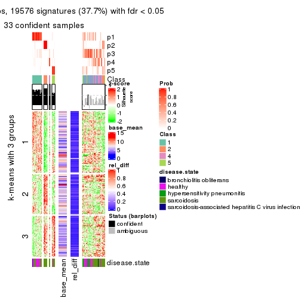
get_signatures(res, k = 6)
Signature heatmaps where rows are not scaled:
get_signatures(res, k = 2, scale_rows = FALSE)
get_signatures(res, k = 3, scale_rows = FALSE)
get_signatures(res, k = 4, scale_rows = FALSE)
get_signatures(res, k = 5, scale_rows = FALSE)
get_signatures(res, k = 6, scale_rows = FALSE)
Compare the overlap of signatures from different k:
compare_signatures(res)
get_signature() returns a data frame invisibly. TO get the list of signatures, the function
call should be assigned to a variable explicitly. In following code, if plot argument is set
to FALSE, no heatmap is plotted while only the differential analysis is performed.
# code only for demonstration
tb = get_signature(res, k = ..., plot = FALSE)
An example of the output of tb is:
#> which_row fdr mean_1 mean_2 scaled_mean_1 scaled_mean_2 km
#> 1 38 0.042760348 8.373488 9.131774 -0.5533452 0.5164555 1
#> 2 40 0.018707592 7.106213 8.469186 -0.6173731 0.5762149 1
#> 3 55 0.019134737 10.221463 11.207825 -0.6159697 0.5749050 1
#> 4 59 0.006059896 5.921854 7.869574 -0.6899429 0.6439467 1
#> 5 60 0.018055526 8.928898 10.211722 -0.6204761 0.5791110 1
#> 6 98 0.009384629 15.714769 14.887706 0.6635654 -0.6193277 2
...
The columns in tb are:
which_row: row indices corresponding to the input matrix.fdr: FDR for the differential test. mean_x: The mean value in group x.scaled_mean_x: The mean value in group x after rows are scaled.km: Row groups if k-means clustering is applied to rows.UMAP plot which shows how samples are separated.
dimension_reduction(res, k = 2, method = "UMAP")
dimension_reduction(res, k = 3, method = "UMAP")
dimension_reduction(res, k = 4, method = "UMAP")

dimension_reduction(res, k = 5, method = "UMAP")
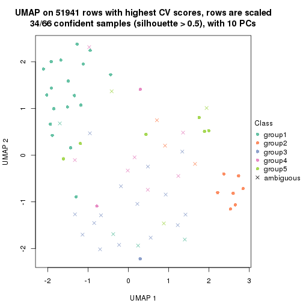
dimension_reduction(res, k = 6, method = "UMAP")

Following heatmap shows how subgroups are split when increasing k:
collect_classes(res)
Test correlation between subgroups and known annotations. If the known annotation is numeric, one-way ANOVA test is applied, and if the known annotation is discrete, chi-squared contingency table test is applied.
test_to_known_factors(res)
#> n disease.state(p) k
#> CV:NMF 64 2.62e-03 2
#> CV:NMF 39 9.19e-03 3
#> CV:NMF 58 8.00e-03 4
#> CV:NMF 34 1.54e-05 5
#> CV:NMF 29 2.06e-02 6
If matrix rows can be associated to genes, consider to use functional_enrichment(res,
...) to perform function enrichment for the signature genes. See this vignette for more detailed explanations.
The object with results only for a single top-value method and a single partition method can be extracted as:
res = res_list["MAD", "hclust"]
# you can also extract it by
# res = res_list["MAD:hclust"]
A summary of res and all the functions that can be applied to it:
res
#> A 'ConsensusPartition' object with k = 2, 3, 4, 5, 6.
#> On a matrix with 51941 rows and 66 columns.
#> Top rows (1000, 2000, 3000, 4000, 5000) are extracted by 'MAD' method.
#> Subgroups are detected by 'hclust' method.
#> Performed in total 1250 partitions by row resampling.
#> Best k for subgroups seems to be 3.
#>
#> Following methods can be applied to this 'ConsensusPartition' object:
#> [1] "cola_report" "collect_classes" "collect_plots"
#> [4] "collect_stats" "colnames" "compare_signatures"
#> [7] "consensus_heatmap" "dimension_reduction" "functional_enrichment"
#> [10] "get_anno_col" "get_anno" "get_classes"
#> [13] "get_consensus" "get_matrix" "get_membership"
#> [16] "get_param" "get_signatures" "get_stats"
#> [19] "is_best_k" "is_stable_k" "membership_heatmap"
#> [22] "ncol" "nrow" "plot_ecdf"
#> [25] "rownames" "select_partition_number" "show"
#> [28] "suggest_best_k" "test_to_known_factors"
collect_plots() function collects all the plots made from res for all k (number of partitions)
into one single page to provide an easy and fast comparison between different k.
collect_plots(res)
The plots are:
k and the heatmap of
predicted classes for each k.k.k.k.All the plots in panels can be made by individual functions and they are plotted later in this section.
select_partition_number() produces several plots showing different
statistics for choosing “optimized” k. There are following statistics:
k;k, the area increased is defined as \(A_k - A_{k-1}\).The detailed explanations of these statistics can be found in the cola vignette.
Generally speaking, lower PAC score, higher mean silhouette score or higher
concordance corresponds to better partition. Rand index and Jaccard index
measure how similar the current partition is compared to partition with k-1.
If they are too similar, we won't accept k is better than k-1.
select_partition_number(res)
The numeric values for all these statistics can be obtained by get_stats().
get_stats(res)
#> k 1-PAC mean_silhouette concordance area_increased Rand Jaccard
#> 2 2 0.552 0.882 0.870 0.3150 0.718 0.718
#> 3 3 0.370 0.656 0.811 0.8939 0.648 0.509
#> 4 4 0.376 0.536 0.740 0.1491 0.898 0.735
#> 5 5 0.490 0.542 0.733 0.0933 0.890 0.670
#> 6 6 0.548 0.585 0.699 0.0435 0.939 0.774
suggest_best_k() suggests the best \(k\) based on these statistics. The rules are as follows:
suggest_best_k(res)
#> [1] 3
Following shows the table of the partitions (You need to click the show/hide
code output link to see it). The membership matrix (columns with name p*)
is inferred by
clue::cl_consensus()
function with the SE method. Basically the value in the membership matrix
represents the probability to belong to a certain group. The finall class
label for an item is determined with the group with highest probability it
belongs to.
In get_classes() function, the entropy is calculated from the membership
matrix and the silhouette score is calculated from the consensus matrix.
cbind(get_classes(res, k = 2), get_membership(res, k = 2))
#> class entropy silhouette p1 p2
#> GSM479917 1 0.2603 0.901 0.956 0.044
#> GSM479920 1 0.3114 0.918 0.944 0.056
#> GSM479924 2 0.2043 0.917 0.032 0.968
#> GSM479926 1 0.0938 0.906 0.988 0.012
#> GSM479927 1 0.9248 0.598 0.660 0.340
#> GSM479931 2 0.8207 0.724 0.256 0.744
#> GSM479932 2 0.2043 0.917 0.032 0.968
#> GSM479933 1 0.2603 0.901 0.956 0.044
#> GSM479934 2 0.2778 0.917 0.048 0.952
#> GSM479935 1 0.2043 0.896 0.968 0.032
#> GSM479942 1 0.2603 0.901 0.956 0.044
#> GSM479943 1 0.4562 0.912 0.904 0.096
#> GSM479944 1 0.3879 0.908 0.924 0.076
#> GSM479945 2 0.2778 0.917 0.048 0.952
#> GSM479946 2 0.7602 0.777 0.220 0.780
#> GSM479949 1 0.3114 0.918 0.944 0.056
#> GSM479951 2 0.2043 0.917 0.032 0.968
#> GSM479952 1 0.6712 0.860 0.824 0.176
#> GSM479953 1 0.2603 0.901 0.956 0.044
#> GSM479956 1 0.6623 0.862 0.828 0.172
#> GSM479957 1 0.6531 0.865 0.832 0.168
#> GSM479959 1 0.1633 0.904 0.976 0.024
#> GSM479960 2 0.3733 0.904 0.072 0.928
#> GSM479961 2 0.8207 0.724 0.256 0.744
#> GSM479962 1 0.6973 0.848 0.812 0.188
#> GSM479963 1 0.2603 0.917 0.956 0.044
#> GSM479964 1 0.2043 0.896 0.968 0.032
#> GSM479965 1 0.2043 0.900 0.968 0.032
#> GSM479968 1 0.5178 0.896 0.884 0.116
#> GSM479969 1 0.4815 0.906 0.896 0.104
#> GSM479971 1 0.6712 0.859 0.824 0.176
#> GSM479972 1 0.9635 0.482 0.612 0.388
#> GSM479973 1 0.2423 0.899 0.960 0.040
#> GSM479974 1 0.5059 0.904 0.888 0.112
#> GSM479977 1 0.2043 0.896 0.968 0.032
#> GSM479979 2 0.2043 0.917 0.032 0.968
#> GSM479980 1 0.7528 0.810 0.784 0.216
#> GSM479981 2 0.2043 0.917 0.032 0.968
#> GSM479918 1 0.2043 0.896 0.968 0.032
#> GSM479929 1 0.4562 0.909 0.904 0.096
#> GSM479930 1 0.7056 0.845 0.808 0.192
#> GSM479938 1 0.4022 0.913 0.920 0.080
#> GSM479950 1 0.4562 0.909 0.904 0.096
#> GSM479955 1 0.4815 0.906 0.896 0.104
#> GSM479919 1 0.0938 0.906 0.988 0.012
#> GSM479921 1 0.2043 0.896 0.968 0.032
#> GSM479922 1 0.2043 0.896 0.968 0.032
#> GSM479923 1 0.6623 0.862 0.828 0.172
#> GSM479925 1 0.2423 0.917 0.960 0.040
#> GSM479928 1 0.5059 0.905 0.888 0.112
#> GSM479936 1 0.2778 0.917 0.952 0.048
#> GSM479937 1 0.3879 0.915 0.924 0.076
#> GSM479939 1 0.3274 0.917 0.940 0.060
#> GSM479940 1 0.3274 0.917 0.940 0.060
#> GSM479941 1 0.2043 0.896 0.968 0.032
#> GSM479947 1 0.2043 0.915 0.968 0.032
#> GSM479948 1 0.4690 0.908 0.900 0.100
#> GSM479954 1 0.4431 0.910 0.908 0.092
#> GSM479958 1 0.2948 0.918 0.948 0.052
#> GSM479966 1 0.2043 0.915 0.968 0.032
#> GSM479967 1 0.2043 0.915 0.968 0.032
#> GSM479970 1 0.4690 0.908 0.900 0.100
#> GSM479975 1 0.0938 0.906 0.988 0.012
#> GSM479976 1 0.4431 0.910 0.908 0.092
#> GSM479982 1 0.6623 0.862 0.828 0.172
#> GSM479978 1 0.2043 0.916 0.968 0.032
cbind(get_classes(res, k = 3), get_membership(res, k = 3))
#> class entropy silhouette p1 p2 p3
#> GSM479917 1 0.2860 0.749 0.912 0.004 0.084
#> GSM479920 3 0.6252 0.388 0.444 0.000 0.556
#> GSM479924 2 0.0237 0.882 0.000 0.996 0.004
#> GSM479926 1 0.4291 0.732 0.820 0.000 0.180
#> GSM479927 3 0.4235 0.539 0.000 0.176 0.824
#> GSM479931 2 0.6398 0.552 0.008 0.620 0.372
#> GSM479932 2 0.0237 0.882 0.000 0.996 0.004
#> GSM479933 1 0.4172 0.706 0.840 0.004 0.156
#> GSM479934 2 0.1031 0.879 0.000 0.976 0.024
#> GSM479935 1 0.0892 0.746 0.980 0.000 0.020
#> GSM479942 1 0.3030 0.736 0.904 0.004 0.092
#> GSM479943 1 0.6235 0.261 0.564 0.000 0.436
#> GSM479944 1 0.5882 0.418 0.652 0.000 0.348
#> GSM479945 2 0.1031 0.879 0.000 0.976 0.024
#> GSM479946 2 0.5986 0.651 0.012 0.704 0.284
#> GSM479949 3 0.5397 0.649 0.280 0.000 0.720
#> GSM479951 2 0.0237 0.882 0.000 0.996 0.004
#> GSM479952 3 0.1337 0.729 0.012 0.016 0.972
#> GSM479953 1 0.1647 0.742 0.960 0.004 0.036
#> GSM479956 3 0.1170 0.729 0.008 0.016 0.976
#> GSM479957 3 0.2446 0.735 0.052 0.012 0.936
#> GSM479959 1 0.4178 0.738 0.828 0.000 0.172
#> GSM479960 2 0.2318 0.857 0.028 0.944 0.028
#> GSM479961 2 0.6398 0.552 0.008 0.620 0.372
#> GSM479962 3 0.1031 0.722 0.000 0.024 0.976
#> GSM479963 1 0.5216 0.676 0.740 0.000 0.260
#> GSM479964 1 0.0747 0.743 0.984 0.000 0.016
#> GSM479965 1 0.4293 0.741 0.832 0.004 0.164
#> GSM479968 3 0.7004 0.200 0.428 0.020 0.552
#> GSM479969 3 0.3686 0.728 0.140 0.000 0.860
#> GSM479971 3 0.0747 0.726 0.000 0.016 0.984
#> GSM479972 3 0.4887 0.473 0.000 0.228 0.772
#> GSM479973 1 0.2772 0.752 0.916 0.004 0.080
#> GSM479974 3 0.5919 0.596 0.260 0.016 0.724
#> GSM479977 1 0.0747 0.743 0.984 0.000 0.016
#> GSM479979 2 0.0237 0.882 0.000 0.996 0.004
#> GSM479980 3 0.5471 0.685 0.060 0.128 0.812
#> GSM479981 2 0.0237 0.882 0.000 0.996 0.004
#> GSM479918 1 0.0892 0.746 0.980 0.000 0.020
#> GSM479929 1 0.6267 0.217 0.548 0.000 0.452
#> GSM479930 3 0.2063 0.725 0.008 0.044 0.948
#> GSM479938 1 0.6180 0.309 0.584 0.000 0.416
#> GSM479950 1 0.6267 0.217 0.548 0.000 0.452
#> GSM479955 3 0.3686 0.728 0.140 0.000 0.860
#> GSM479919 1 0.4291 0.732 0.820 0.000 0.180
#> GSM479921 1 0.0424 0.740 0.992 0.000 0.008
#> GSM479922 3 0.5926 0.541 0.356 0.000 0.644
#> GSM479923 3 0.1015 0.728 0.008 0.012 0.980
#> GSM479925 3 0.5810 0.575 0.336 0.000 0.664
#> GSM479928 3 0.6027 0.591 0.272 0.016 0.712
#> GSM479936 1 0.5178 0.680 0.744 0.000 0.256
#> GSM479937 3 0.4654 0.694 0.208 0.000 0.792
#> GSM479939 1 0.5785 0.588 0.668 0.000 0.332
#> GSM479940 1 0.5785 0.588 0.668 0.000 0.332
#> GSM479941 1 0.0424 0.740 0.992 0.000 0.008
#> GSM479947 3 0.6045 0.498 0.380 0.000 0.620
#> GSM479948 3 0.3752 0.728 0.144 0.000 0.856
#> GSM479954 1 0.5678 0.634 0.684 0.000 0.316
#> GSM479958 3 0.5948 0.528 0.360 0.000 0.640
#> GSM479966 3 0.5905 0.553 0.352 0.000 0.648
#> GSM479967 3 0.6045 0.498 0.380 0.000 0.620
#> GSM479970 3 0.3752 0.728 0.144 0.000 0.856
#> GSM479975 1 0.4291 0.732 0.820 0.000 0.180
#> GSM479976 1 0.5650 0.641 0.688 0.000 0.312
#> GSM479982 3 0.2446 0.734 0.052 0.012 0.936
#> GSM479978 1 0.3116 0.745 0.892 0.000 0.108
cbind(get_classes(res, k = 4), get_membership(res, k = 4))
#> class entropy silhouette p1 p2 p3 p4
#> GSM479917 1 0.2670 0.689 0.908 0.000 0.040 0.052
#> GSM479920 3 0.5322 0.445 0.312 0.000 0.660 0.028
#> GSM479924 2 0.0188 0.935 0.000 0.996 0.004 0.000
#> GSM479926 1 0.3710 0.660 0.804 0.000 0.192 0.004
#> GSM479927 4 0.5155 0.136 0.000 0.004 0.468 0.528
#> GSM479931 4 0.5856 -0.113 0.000 0.408 0.036 0.556
#> GSM479932 2 0.0188 0.935 0.000 0.996 0.004 0.000
#> GSM479933 1 0.4286 0.643 0.812 0.000 0.052 0.136
#> GSM479934 2 0.0895 0.928 0.000 0.976 0.004 0.020
#> GSM479935 1 0.0188 0.690 0.996 0.000 0.004 0.000
#> GSM479942 1 0.2714 0.666 0.884 0.000 0.004 0.112
#> GSM479943 1 0.7318 0.247 0.476 0.000 0.364 0.160
#> GSM479944 1 0.6890 0.391 0.580 0.000 0.268 0.152
#> GSM479945 2 0.0895 0.928 0.000 0.976 0.004 0.020
#> GSM479946 2 0.5250 0.468 0.000 0.660 0.024 0.316
#> GSM479949 3 0.3913 0.634 0.148 0.000 0.824 0.028
#> GSM479951 2 0.0188 0.935 0.000 0.996 0.004 0.000
#> GSM479952 3 0.5945 -0.187 0.028 0.004 0.500 0.468
#> GSM479953 1 0.1929 0.683 0.940 0.000 0.024 0.036
#> GSM479956 4 0.5224 0.511 0.016 0.004 0.316 0.664
#> GSM479957 4 0.5618 0.507 0.040 0.004 0.288 0.668
#> GSM479959 1 0.3718 0.670 0.820 0.000 0.168 0.012
#> GSM479960 2 0.1722 0.890 0.000 0.944 0.048 0.008
#> GSM479961 4 0.5856 -0.113 0.000 0.408 0.036 0.556
#> GSM479962 3 0.5679 -0.214 0.016 0.004 0.492 0.488
#> GSM479963 1 0.5113 0.600 0.712 0.000 0.252 0.036
#> GSM479964 1 0.2197 0.676 0.916 0.000 0.080 0.004
#> GSM479965 1 0.3763 0.676 0.832 0.000 0.144 0.024
#> GSM479968 1 0.8075 0.107 0.400 0.016 0.196 0.388
#> GSM479969 3 0.3392 0.613 0.072 0.000 0.872 0.056
#> GSM479971 4 0.5245 0.504 0.016 0.004 0.320 0.660
#> GSM479972 4 0.6626 0.541 0.000 0.216 0.160 0.624
#> GSM479973 1 0.2813 0.686 0.896 0.000 0.024 0.080
#> GSM479974 3 0.7889 0.172 0.172 0.016 0.460 0.352
#> GSM479977 1 0.2197 0.676 0.916 0.000 0.080 0.004
#> GSM479979 2 0.0000 0.935 0.000 1.000 0.000 0.000
#> GSM479980 4 0.6396 0.541 0.040 0.084 0.172 0.704
#> GSM479981 2 0.0188 0.935 0.000 0.996 0.004 0.000
#> GSM479918 1 0.0188 0.690 0.996 0.000 0.004 0.000
#> GSM479929 1 0.7379 0.201 0.452 0.000 0.384 0.164
#> GSM479930 3 0.3878 0.438 0.004 0.016 0.824 0.156
#> GSM479938 1 0.7272 0.290 0.496 0.000 0.344 0.160
#> GSM479950 1 0.7379 0.201 0.452 0.000 0.384 0.164
#> GSM479955 3 0.3392 0.613 0.072 0.000 0.872 0.056
#> GSM479919 1 0.3710 0.660 0.804 0.000 0.192 0.004
#> GSM479921 1 0.1637 0.680 0.940 0.000 0.060 0.000
#> GSM479922 3 0.4792 0.546 0.312 0.000 0.680 0.008
#> GSM479923 3 0.5323 0.103 0.020 0.000 0.628 0.352
#> GSM479925 3 0.4833 0.607 0.228 0.000 0.740 0.032
#> GSM479928 3 0.7850 0.242 0.176 0.016 0.484 0.324
#> GSM479936 1 0.5106 0.608 0.720 0.000 0.240 0.040
#> GSM479937 3 0.4153 0.636 0.132 0.000 0.820 0.048
#> GSM479939 1 0.5754 0.514 0.636 0.000 0.316 0.048
#> GSM479940 1 0.5754 0.514 0.636 0.000 0.316 0.048
#> GSM479941 1 0.1637 0.680 0.940 0.000 0.060 0.000
#> GSM479947 3 0.4635 0.560 0.268 0.000 0.720 0.012
#> GSM479948 3 0.3312 0.615 0.072 0.000 0.876 0.052
#> GSM479954 1 0.6016 0.580 0.680 0.000 0.208 0.112
#> GSM479958 3 0.4360 0.581 0.248 0.000 0.744 0.008
#> GSM479966 3 0.4387 0.600 0.236 0.000 0.752 0.012
#> GSM479967 3 0.4635 0.560 0.268 0.000 0.720 0.012
#> GSM479970 3 0.3312 0.615 0.072 0.000 0.876 0.052
#> GSM479975 1 0.3751 0.659 0.800 0.000 0.196 0.004
#> GSM479976 1 0.5982 0.586 0.684 0.000 0.204 0.112
#> GSM479982 4 0.5252 0.538 0.040 0.004 0.236 0.720
#> GSM479978 1 0.4212 0.635 0.772 0.000 0.216 0.012
cbind(get_classes(res, k = 5), get_membership(res, k = 5))
#> class entropy silhouette p1 p2 p3 p4 p5
#> GSM479917 1 0.2775 0.6993 0.888 0.000 0.008 0.036 0.068
#> GSM479920 3 0.5059 0.5592 0.232 0.000 0.688 0.004 0.076
#> GSM479924 2 0.0290 0.9068 0.000 0.992 0.000 0.000 0.008
#> GSM479926 1 0.4427 0.6989 0.776 0.000 0.088 0.128 0.008
#> GSM479927 5 0.6132 -0.1358 0.000 0.000 0.132 0.388 0.480
#> GSM479931 5 0.6857 0.4494 0.000 0.348 0.012 0.200 0.440
#> GSM479932 2 0.0510 0.9092 0.000 0.984 0.000 0.000 0.016
#> GSM479933 1 0.4609 0.5966 0.756 0.000 0.016 0.056 0.172
#> GSM479934 2 0.0898 0.9002 0.000 0.972 0.000 0.020 0.008
#> GSM479935 1 0.0162 0.7069 0.996 0.000 0.000 0.000 0.004
#> GSM479942 1 0.2971 0.6530 0.836 0.000 0.000 0.008 0.156
#> GSM479943 1 0.7834 0.0579 0.392 0.000 0.352 0.124 0.132
#> GSM479944 1 0.7475 0.2529 0.500 0.000 0.256 0.096 0.148
#> GSM479945 2 0.0898 0.9002 0.000 0.972 0.000 0.020 0.008
#> GSM479946 2 0.5768 0.2281 0.000 0.640 0.008 0.212 0.140
#> GSM479949 3 0.3274 0.6527 0.064 0.000 0.856 0.004 0.076
#> GSM479951 2 0.0510 0.9092 0.000 0.984 0.000 0.000 0.016
#> GSM479952 4 0.5351 0.3554 0.008 0.000 0.136 0.692 0.164
#> GSM479953 1 0.2144 0.6987 0.912 0.000 0.020 0.000 0.068
#> GSM479956 4 0.1893 0.4760 0.000 0.000 0.048 0.928 0.024
#> GSM479957 4 0.3696 0.4841 0.044 0.004 0.044 0.852 0.056
#> GSM479959 1 0.4123 0.7022 0.800 0.000 0.060 0.128 0.012
#> GSM479960 2 0.1579 0.8628 0.000 0.944 0.032 0.000 0.024
#> GSM479961 5 0.6857 0.4494 0.000 0.348 0.012 0.200 0.440
#> GSM479962 4 0.5150 0.3348 0.000 0.000 0.136 0.692 0.172
#> GSM479963 1 0.5653 0.6495 0.684 0.000 0.132 0.160 0.024
#> GSM479964 1 0.3427 0.6472 0.836 0.000 0.108 0.000 0.056
#> GSM479965 1 0.3817 0.7008 0.820 0.000 0.032 0.128 0.020
#> GSM479968 4 0.8306 0.0730 0.332 0.016 0.084 0.356 0.212
#> GSM479969 3 0.2635 0.6210 0.008 0.000 0.888 0.088 0.016
#> GSM479971 4 0.1442 0.4654 0.000 0.004 0.032 0.952 0.012
#> GSM479972 4 0.4012 0.1490 0.000 0.216 0.012 0.760 0.012
#> GSM479973 1 0.2864 0.6818 0.864 0.000 0.000 0.024 0.112
#> GSM479974 4 0.7880 0.1947 0.072 0.016 0.360 0.408 0.144
#> GSM479977 1 0.3427 0.6472 0.836 0.000 0.108 0.000 0.056
#> GSM479979 2 0.0290 0.9083 0.000 0.992 0.000 0.000 0.008
#> GSM479980 4 0.5637 0.3321 0.040 0.064 0.008 0.700 0.188
#> GSM479981 2 0.0510 0.9092 0.000 0.984 0.000 0.000 0.016
#> GSM479918 1 0.0162 0.7069 0.996 0.000 0.000 0.000 0.004
#> GSM479929 3 0.7867 -0.0915 0.364 0.000 0.376 0.132 0.128
#> GSM479930 3 0.5018 0.4771 0.000 0.004 0.716 0.116 0.164
#> GSM479938 1 0.7802 0.1190 0.416 0.000 0.328 0.116 0.140
#> GSM479950 3 0.7867 -0.0915 0.364 0.000 0.376 0.132 0.128
#> GSM479955 3 0.2635 0.6210 0.008 0.000 0.888 0.088 0.016
#> GSM479919 1 0.4427 0.6989 0.776 0.000 0.088 0.128 0.008
#> GSM479921 1 0.2719 0.6697 0.884 0.000 0.068 0.000 0.048
#> GSM479922 3 0.4902 0.5629 0.268 0.000 0.684 0.032 0.016
#> GSM479923 4 0.6433 0.1427 0.008 0.000 0.160 0.520 0.312
#> GSM479925 3 0.4866 0.6522 0.156 0.000 0.752 0.032 0.060
#> GSM479928 4 0.7811 0.1420 0.072 0.016 0.380 0.400 0.132
#> GSM479936 1 0.5526 0.6533 0.692 0.000 0.128 0.160 0.020
#> GSM479937 3 0.3976 0.6414 0.068 0.000 0.824 0.084 0.024
#> GSM479939 1 0.6535 0.5530 0.588 0.000 0.208 0.172 0.032
#> GSM479940 1 0.6535 0.5530 0.588 0.000 0.208 0.172 0.032
#> GSM479941 1 0.2719 0.6697 0.884 0.000 0.068 0.000 0.048
#> GSM479947 3 0.4751 0.6448 0.188 0.000 0.740 0.016 0.056
#> GSM479948 3 0.2732 0.6223 0.008 0.000 0.884 0.088 0.020
#> GSM479954 1 0.5724 0.6151 0.660 0.000 0.060 0.236 0.044
#> GSM479958 3 0.4738 0.6543 0.176 0.000 0.748 0.020 0.056
#> GSM479966 3 0.4480 0.6572 0.152 0.000 0.772 0.016 0.060
#> GSM479967 3 0.4751 0.6448 0.188 0.000 0.740 0.016 0.056
#> GSM479970 3 0.2732 0.6223 0.008 0.000 0.884 0.088 0.020
#> GSM479975 1 0.4480 0.6975 0.772 0.000 0.092 0.128 0.008
#> GSM479976 1 0.5655 0.6197 0.664 0.000 0.060 0.236 0.040
#> GSM479982 4 0.4107 0.4455 0.040 0.000 0.024 0.804 0.132
#> GSM479978 1 0.4987 0.5610 0.684 0.000 0.236 0.000 0.080
cbind(get_classes(res, k = 6), get_membership(res, k = 6))
#> class entropy silhouette p1 p2 p3 p4 p5 p6
#> GSM479917 1 0.3093 0.599 0.864 0.000 0.012 0.024 0.024 0.076
#> GSM479920 3 0.3490 0.477 0.176 0.000 0.784 0.000 0.000 0.040
#> GSM479924 2 0.0363 0.891 0.000 0.988 0.000 0.000 0.000 0.012
#> GSM479926 1 0.4440 0.647 0.764 0.000 0.088 0.100 0.000 0.048
#> GSM479927 4 0.7142 0.192 0.000 0.000 0.088 0.388 0.292 0.232
#> GSM479931 5 0.3593 1.000 0.000 0.088 0.008 0.060 0.828 0.016
#> GSM479932 2 0.1564 0.889 0.000 0.936 0.000 0.000 0.024 0.040
#> GSM479933 1 0.3917 0.332 0.728 0.000 0.000 0.008 0.024 0.240
#> GSM479934 2 0.1151 0.885 0.000 0.956 0.000 0.000 0.032 0.012
#> GSM479935 1 0.0862 0.635 0.972 0.000 0.008 0.000 0.004 0.016
#> GSM479942 1 0.3098 0.489 0.812 0.000 0.000 0.000 0.024 0.164
#> GSM479943 6 0.5887 0.646 0.364 0.000 0.204 0.000 0.000 0.432
#> GSM479944 1 0.5868 -0.506 0.468 0.000 0.140 0.000 0.012 0.380
#> GSM479945 2 0.1151 0.885 0.000 0.956 0.000 0.000 0.032 0.012
#> GSM479946 2 0.5974 0.344 0.000 0.596 0.000 0.152 0.200 0.052
#> GSM479949 3 0.1082 0.674 0.004 0.000 0.956 0.000 0.000 0.040
#> GSM479951 2 0.1564 0.889 0.000 0.936 0.000 0.000 0.024 0.040
#> GSM479952 4 0.5809 0.512 0.004 0.000 0.092 0.652 0.112 0.140
#> GSM479953 1 0.2604 0.610 0.888 0.000 0.032 0.000 0.024 0.056
#> GSM479956 4 0.3150 0.569 0.000 0.000 0.016 0.844 0.036 0.104
#> GSM479957 4 0.4555 0.519 0.024 0.004 0.012 0.708 0.016 0.236
#> GSM479959 1 0.4093 0.649 0.796 0.000 0.048 0.100 0.004 0.052
#> GSM479960 2 0.2206 0.861 0.000 0.904 0.024 0.000 0.008 0.064
#> GSM479961 5 0.3593 1.000 0.000 0.088 0.008 0.060 0.828 0.016
#> GSM479962 4 0.5592 0.510 0.000 0.000 0.084 0.664 0.124 0.128
#> GSM479963 1 0.5435 0.593 0.676 0.000 0.128 0.128 0.000 0.068
#> GSM479964 1 0.4352 0.510 0.720 0.000 0.212 0.000 0.012 0.056
#> GSM479965 1 0.3831 0.649 0.816 0.000 0.020 0.100 0.016 0.048
#> GSM479968 6 0.7740 0.238 0.304 0.000 0.032 0.200 0.096 0.368
#> GSM479969 3 0.3895 0.617 0.000 0.000 0.700 0.012 0.008 0.280
#> GSM479971 4 0.2205 0.577 0.000 0.004 0.008 0.896 0.004 0.088
#> GSM479972 4 0.4577 0.428 0.000 0.208 0.000 0.708 0.016 0.068
#> GSM479973 1 0.3012 0.566 0.852 0.000 0.000 0.020 0.024 0.104
#> GSM479974 6 0.6355 0.448 0.056 0.000 0.180 0.200 0.004 0.560
#> GSM479977 1 0.4352 0.510 0.720 0.000 0.212 0.000 0.012 0.056
#> GSM479979 2 0.0993 0.886 0.000 0.964 0.000 0.000 0.024 0.012
#> GSM479980 4 0.6638 0.269 0.024 0.032 0.000 0.528 0.196 0.220
#> GSM479981 2 0.1261 0.892 0.000 0.952 0.000 0.000 0.024 0.024
#> GSM479918 1 0.0862 0.635 0.972 0.000 0.008 0.000 0.004 0.016
#> GSM479929 6 0.6028 0.662 0.336 0.000 0.216 0.004 0.000 0.444
#> GSM479930 3 0.5670 0.560 0.000 0.000 0.656 0.096 0.104 0.144
#> GSM479938 6 0.5777 0.607 0.388 0.000 0.176 0.000 0.000 0.436
#> GSM479950 6 0.6028 0.662 0.336 0.000 0.216 0.004 0.000 0.444
#> GSM479955 3 0.3895 0.617 0.000 0.000 0.700 0.012 0.008 0.280
#> GSM479919 1 0.4440 0.647 0.764 0.000 0.088 0.100 0.000 0.048
#> GSM479921 1 0.3719 0.556 0.792 0.000 0.148 0.000 0.012 0.048
#> GSM479922 3 0.5715 0.525 0.252 0.000 0.572 0.008 0.004 0.164
#> GSM479923 4 0.6803 0.345 0.008 0.000 0.100 0.508 0.120 0.264
#> GSM479925 3 0.3117 0.686 0.100 0.000 0.848 0.020 0.000 0.032
#> GSM479928 6 0.6374 0.456 0.052 0.000 0.220 0.196 0.000 0.532
#> GSM479936 1 0.5359 0.595 0.684 0.000 0.124 0.124 0.000 0.068
#> GSM479937 3 0.4844 0.634 0.056 0.000 0.668 0.016 0.004 0.256
#> GSM479939 1 0.6358 0.431 0.576 0.000 0.176 0.108 0.000 0.140
#> GSM479940 1 0.6358 0.431 0.576 0.000 0.176 0.108 0.000 0.140
#> GSM479941 1 0.3719 0.556 0.792 0.000 0.148 0.000 0.012 0.048
#> GSM479947 3 0.2462 0.674 0.132 0.000 0.860 0.004 0.000 0.004
#> GSM479948 3 0.3875 0.618 0.000 0.000 0.700 0.016 0.004 0.280
#> GSM479954 1 0.5485 0.573 0.652 0.000 0.056 0.216 0.004 0.072
#> GSM479958 3 0.2766 0.680 0.124 0.000 0.852 0.004 0.000 0.020
#> GSM479966 3 0.2001 0.691 0.092 0.000 0.900 0.004 0.000 0.004
#> GSM479967 3 0.2462 0.674 0.132 0.000 0.860 0.004 0.000 0.004
#> GSM479970 3 0.3875 0.618 0.000 0.000 0.700 0.016 0.004 0.280
#> GSM479975 1 0.4488 0.646 0.760 0.000 0.092 0.100 0.000 0.048
#> GSM479976 1 0.5435 0.575 0.656 0.000 0.056 0.216 0.004 0.068
#> GSM479982 4 0.5307 0.447 0.024 0.000 0.000 0.652 0.128 0.196
#> GSM479978 1 0.5105 0.416 0.584 0.000 0.332 0.000 0.008 0.076
Heatmaps for the consensus matrix. It visualizes the probability of two samples to be in a same group.
consensus_heatmap(res, k = 2)
consensus_heatmap(res, k = 3)
consensus_heatmap(res, k = 4)
consensus_heatmap(res, k = 5)
consensus_heatmap(res, k = 6)
Heatmaps for the membership of samples in all partitions to see how consistent they are:
membership_heatmap(res, k = 2)
membership_heatmap(res, k = 3)
membership_heatmap(res, k = 4)
membership_heatmap(res, k = 5)
membership_heatmap(res, k = 6)
As soon as we have had the classes for columns, we can look for signatures which are significantly different between classes which can be candidate marks for certain classes. Following are the heatmaps for signatures.
Signature heatmaps where rows are scaled:
get_signatures(res, k = 2)
get_signatures(res, k = 3)
get_signatures(res, k = 4)
get_signatures(res, k = 5)
get_signatures(res, k = 6)
Signature heatmaps where rows are not scaled:
get_signatures(res, k = 2, scale_rows = FALSE)
get_signatures(res, k = 3, scale_rows = FALSE)
get_signatures(res, k = 4, scale_rows = FALSE)
get_signatures(res, k = 5, scale_rows = FALSE)
get_signatures(res, k = 6, scale_rows = FALSE)
Compare the overlap of signatures from different k:
compare_signatures(res)

get_signature() returns a data frame invisibly. TO get the list of signatures, the function
call should be assigned to a variable explicitly. In following code, if plot argument is set
to FALSE, no heatmap is plotted while only the differential analysis is performed.
# code only for demonstration
tb = get_signature(res, k = ..., plot = FALSE)
An example of the output of tb is:
#> which_row fdr mean_1 mean_2 scaled_mean_1 scaled_mean_2 km
#> 1 38 0.042760348 8.373488 9.131774 -0.5533452 0.5164555 1
#> 2 40 0.018707592 7.106213 8.469186 -0.6173731 0.5762149 1
#> 3 55 0.019134737 10.221463 11.207825 -0.6159697 0.5749050 1
#> 4 59 0.006059896 5.921854 7.869574 -0.6899429 0.6439467 1
#> 5 60 0.018055526 8.928898 10.211722 -0.6204761 0.5791110 1
#> 6 98 0.009384629 15.714769 14.887706 0.6635654 -0.6193277 2
...
The columns in tb are:
which_row: row indices corresponding to the input matrix.fdr: FDR for the differential test. mean_x: The mean value in group x.scaled_mean_x: The mean value in group x after rows are scaled.km: Row groups if k-means clustering is applied to rows.UMAP plot which shows how samples are separated.
dimension_reduction(res, k = 2, method = "UMAP")
dimension_reduction(res, k = 3, method = "UMAP")
dimension_reduction(res, k = 4, method = "UMAP")
dimension_reduction(res, k = 5, method = "UMAP")
dimension_reduction(res, k = 6, method = "UMAP")
Following heatmap shows how subgroups are split when increasing k:
collect_classes(res)
Test correlation between subgroups and known annotations. If the known annotation is numeric, one-way ANOVA test is applied, and if the known annotation is discrete, chi-squared contingency table test is applied.
test_to_known_factors(res)
#> n disease.state(p) k
#> MAD:hclust 65 4.01e-02 2
#> MAD:hclust 56 1.26e-01 3
#> MAD:hclust 49 9.38e-03 4
#> MAD:hclust 44 4.29e-02 5
#> MAD:hclust 50 4.72e-05 6
If matrix rows can be associated to genes, consider to use functional_enrichment(res,
...) to perform function enrichment for the signature genes. See this vignette for more detailed explanations.
The object with results only for a single top-value method and a single partition method can be extracted as:
res = res_list["MAD", "kmeans"]
# you can also extract it by
# res = res_list["MAD:kmeans"]
A summary of res and all the functions that can be applied to it:
res
#> A 'ConsensusPartition' object with k = 2, 3, 4, 5, 6.
#> On a matrix with 51941 rows and 66 columns.
#> Top rows (1000, 2000, 3000, 4000, 5000) are extracted by 'MAD' method.
#> Subgroups are detected by 'kmeans' method.
#> Performed in total 1250 partitions by row resampling.
#> Best k for subgroups seems to be 2.
#>
#> Following methods can be applied to this 'ConsensusPartition' object:
#> [1] "cola_report" "collect_classes" "collect_plots"
#> [4] "collect_stats" "colnames" "compare_signatures"
#> [7] "consensus_heatmap" "dimension_reduction" "functional_enrichment"
#> [10] "get_anno_col" "get_anno" "get_classes"
#> [13] "get_consensus" "get_matrix" "get_membership"
#> [16] "get_param" "get_signatures" "get_stats"
#> [19] "is_best_k" "is_stable_k" "membership_heatmap"
#> [22] "ncol" "nrow" "plot_ecdf"
#> [25] "rownames" "select_partition_number" "show"
#> [28] "suggest_best_k" "test_to_known_factors"
collect_plots() function collects all the plots made from res for all k (number of partitions)
into one single page to provide an easy and fast comparison between different k.
collect_plots(res)
The plots are:
k and the heatmap of
predicted classes for each k.k.k.k.All the plots in panels can be made by individual functions and they are plotted later in this section.
select_partition_number() produces several plots showing different
statistics for choosing “optimized” k. There are following statistics:
k;k, the area increased is defined as \(A_k - A_{k-1}\).The detailed explanations of these statistics can be found in the cola vignette.
Generally speaking, lower PAC score, higher mean silhouette score or higher
concordance corresponds to better partition. Rand index and Jaccard index
measure how similar the current partition is compared to partition with k-1.
If they are too similar, we won't accept k is better than k-1.
select_partition_number(res)
The numeric values for all these statistics can be obtained by get_stats().
get_stats(res)
#> k 1-PAC mean_silhouette concordance area_increased Rand Jaccard
#> 2 2 0.996 0.946 0.976 0.5009 0.497 0.497
#> 3 3 0.475 0.677 0.779 0.2950 0.746 0.542
#> 4 4 0.503 0.514 0.710 0.1286 0.867 0.672
#> 5 5 0.599 0.592 0.755 0.0773 0.811 0.461
#> 6 6 0.691 0.608 0.762 0.0482 0.941 0.727
suggest_best_k() suggests the best \(k\) based on these statistics. The rules are as follows:
suggest_best_k(res)
#> [1] 2
Following shows the table of the partitions (You need to click the show/hide
code output link to see it). The membership matrix (columns with name p*)
is inferred by
clue::cl_consensus()
function with the SE method. Basically the value in the membership matrix
represents the probability to belong to a certain group. The finall class
label for an item is determined with the group with highest probability it
belongs to.
In get_classes() function, the entropy is calculated from the membership
matrix and the silhouette score is calculated from the consensus matrix.
cbind(get_classes(res, k = 2), get_membership(res, k = 2))
#> class entropy silhouette p1 p2
#> GSM479917 1 0.9933 0.112 0.548 0.452
#> GSM479920 1 0.0938 0.969 0.988 0.012
#> GSM479924 2 0.0000 0.968 0.000 1.000
#> GSM479926 1 0.0000 0.980 1.000 0.000
#> GSM479927 2 0.0000 0.968 0.000 1.000
#> GSM479931 2 0.0000 0.968 0.000 1.000
#> GSM479932 2 0.0000 0.968 0.000 1.000
#> GSM479933 2 0.5737 0.862 0.136 0.864
#> GSM479934 2 0.0000 0.968 0.000 1.000
#> GSM479935 1 0.0000 0.980 1.000 0.000
#> GSM479942 1 0.0000 0.980 1.000 0.000
#> GSM479943 1 0.0000 0.980 1.000 0.000
#> GSM479944 1 0.0000 0.980 1.000 0.000
#> GSM479945 2 0.0000 0.968 0.000 1.000
#> GSM479946 2 0.0000 0.968 0.000 1.000
#> GSM479949 2 0.0000 0.968 0.000 1.000
#> GSM479951 2 0.0000 0.968 0.000 1.000
#> GSM479952 2 0.2948 0.946 0.052 0.948
#> GSM479953 1 0.0000 0.980 1.000 0.000
#> GSM479956 2 0.1843 0.957 0.028 0.972
#> GSM479957 2 0.9087 0.545 0.324 0.676
#> GSM479959 1 0.0000 0.980 1.000 0.000
#> GSM479960 2 0.0000 0.968 0.000 1.000
#> GSM479961 2 0.0000 0.968 0.000 1.000
#> GSM479962 2 0.0000 0.968 0.000 1.000
#> GSM479963 1 0.0000 0.980 1.000 0.000
#> GSM479964 1 0.0000 0.980 1.000 0.000
#> GSM479965 1 0.0000 0.980 1.000 0.000
#> GSM479968 2 0.2948 0.946 0.052 0.948
#> GSM479969 2 0.0000 0.968 0.000 1.000
#> GSM479971 2 0.2948 0.946 0.052 0.948
#> GSM479972 2 0.0000 0.968 0.000 1.000
#> GSM479973 1 0.0000 0.980 1.000 0.000
#> GSM479974 2 0.0000 0.968 0.000 1.000
#> GSM479977 1 0.0000 0.980 1.000 0.000
#> GSM479979 2 0.0000 0.968 0.000 1.000
#> GSM479980 2 0.2948 0.946 0.052 0.948
#> GSM479981 2 0.0000 0.968 0.000 1.000
#> GSM479918 1 0.0000 0.980 1.000 0.000
#> GSM479929 1 0.0000 0.980 1.000 0.000
#> GSM479930 2 0.0000 0.968 0.000 1.000
#> GSM479938 1 0.0000 0.980 1.000 0.000
#> GSM479950 1 0.0000 0.980 1.000 0.000
#> GSM479955 2 0.3733 0.918 0.072 0.928
#> GSM479919 1 0.0000 0.980 1.000 0.000
#> GSM479921 1 0.0000 0.980 1.000 0.000
#> GSM479922 1 0.0000 0.980 1.000 0.000
#> GSM479923 1 0.7219 0.734 0.800 0.200
#> GSM479925 1 0.0000 0.980 1.000 0.000
#> GSM479928 2 0.2948 0.946 0.052 0.948
#> GSM479936 1 0.0000 0.980 1.000 0.000
#> GSM479937 1 0.0000 0.980 1.000 0.000
#> GSM479939 1 0.0000 0.980 1.000 0.000
#> GSM479940 1 0.0000 0.980 1.000 0.000
#> GSM479941 1 0.0000 0.980 1.000 0.000
#> GSM479947 1 0.0000 0.980 1.000 0.000
#> GSM479948 2 0.0000 0.968 0.000 1.000
#> GSM479954 1 0.0000 0.980 1.000 0.000
#> GSM479958 1 0.0000 0.980 1.000 0.000
#> GSM479966 1 0.0000 0.980 1.000 0.000
#> GSM479967 1 0.0000 0.980 1.000 0.000
#> GSM479970 2 0.2778 0.948 0.048 0.952
#> GSM479975 1 0.0000 0.980 1.000 0.000
#> GSM479976 1 0.0000 0.980 1.000 0.000
#> GSM479982 2 0.2948 0.946 0.052 0.948
#> GSM479978 1 0.0000 0.980 1.000 0.000
cbind(get_classes(res, k = 3), get_membership(res, k = 3))
#> class entropy silhouette p1 p2 p3
#> GSM479917 3 0.6565 0.3229 0.416 0.008 0.576
#> GSM479920 1 0.3116 0.8078 0.892 0.000 0.108
#> GSM479924 2 0.0000 0.9466 0.000 1.000 0.000
#> GSM479926 1 0.2165 0.8063 0.936 0.000 0.064
#> GSM479927 3 0.6598 0.4252 0.008 0.428 0.564
#> GSM479931 2 0.1031 0.9323 0.000 0.976 0.024
#> GSM479932 2 0.0000 0.9466 0.000 1.000 0.000
#> GSM479933 3 0.8440 0.4864 0.184 0.196 0.620
#> GSM479934 2 0.0000 0.9466 0.000 1.000 0.000
#> GSM479935 1 0.1860 0.8007 0.948 0.000 0.052
#> GSM479942 1 0.5650 0.5437 0.688 0.000 0.312
#> GSM479943 1 0.6079 0.5775 0.612 0.000 0.388
#> GSM479944 3 0.2959 0.6720 0.100 0.000 0.900
#> GSM479945 2 0.0000 0.9466 0.000 1.000 0.000
#> GSM479946 2 0.1163 0.9287 0.000 0.972 0.028
#> GSM479949 3 0.6954 0.5199 0.028 0.352 0.620
#> GSM479951 2 0.0237 0.9443 0.000 0.996 0.004
#> GSM479952 3 0.3459 0.7064 0.012 0.096 0.892
#> GSM479953 1 0.1289 0.7884 0.968 0.000 0.032
#> GSM479956 3 0.4178 0.6755 0.000 0.172 0.828
#> GSM479957 3 0.2998 0.6997 0.016 0.068 0.916
#> GSM479959 1 0.3686 0.8038 0.860 0.000 0.140
#> GSM479960 2 0.0424 0.9409 0.000 0.992 0.008
#> GSM479961 2 0.5859 0.2911 0.000 0.656 0.344
#> GSM479962 3 0.6540 0.4605 0.008 0.408 0.584
#> GSM479963 1 0.5859 0.6678 0.656 0.000 0.344
#> GSM479964 1 0.0892 0.7939 0.980 0.000 0.020
#> GSM479965 1 0.1860 0.8020 0.948 0.000 0.052
#> GSM479968 3 0.4465 0.6697 0.004 0.176 0.820
#> GSM479969 3 0.6451 0.4946 0.008 0.384 0.608
#> GSM479971 3 0.3784 0.7022 0.004 0.132 0.864
#> GSM479972 2 0.0000 0.9466 0.000 1.000 0.000
#> GSM479973 1 0.2625 0.7955 0.916 0.000 0.084
#> GSM479974 3 0.7192 0.4133 0.032 0.380 0.588
#> GSM479977 1 0.1289 0.7901 0.968 0.000 0.032
#> GSM479979 2 0.1031 0.9323 0.000 0.976 0.024
#> GSM479980 3 0.6045 0.3884 0.000 0.380 0.620
#> GSM479981 2 0.0000 0.9466 0.000 1.000 0.000
#> GSM479918 1 0.1860 0.8007 0.948 0.000 0.052
#> GSM479929 1 0.6280 0.4542 0.540 0.000 0.460
#> GSM479930 3 0.6548 0.5055 0.012 0.372 0.616
#> GSM479938 3 0.5098 0.5166 0.248 0.000 0.752
#> GSM479950 3 0.3112 0.6577 0.096 0.004 0.900
#> GSM479955 3 0.6398 0.5048 0.008 0.372 0.620
#> GSM479919 1 0.4291 0.7977 0.820 0.000 0.180
#> GSM479921 1 0.0592 0.7951 0.988 0.000 0.012
#> GSM479922 1 0.3879 0.8107 0.848 0.000 0.152
#> GSM479923 3 0.6867 0.0861 0.336 0.028 0.636
#> GSM479925 1 0.5785 0.6700 0.668 0.000 0.332
#> GSM479928 3 0.2774 0.7056 0.008 0.072 0.920
#> GSM479936 1 0.6204 0.5777 0.576 0.000 0.424
#> GSM479937 3 0.2527 0.6757 0.044 0.020 0.936
#> GSM479939 1 0.6192 0.5871 0.580 0.000 0.420
#> GSM479940 3 0.6204 -0.3151 0.424 0.000 0.576
#> GSM479941 1 0.0592 0.7951 0.988 0.000 0.012
#> GSM479947 1 0.5178 0.7543 0.744 0.000 0.256
#> GSM479948 3 0.5156 0.6657 0.008 0.216 0.776
#> GSM479954 1 0.6274 0.5198 0.544 0.000 0.456
#> GSM479958 1 0.4002 0.8067 0.840 0.000 0.160
#> GSM479966 1 0.5098 0.7528 0.752 0.000 0.248
#> GSM479967 1 0.3879 0.8059 0.848 0.000 0.152
#> GSM479970 3 0.2486 0.7018 0.008 0.060 0.932
#> GSM479975 1 0.3816 0.8099 0.852 0.000 0.148
#> GSM479976 1 0.6286 0.5075 0.536 0.000 0.464
#> GSM479982 3 0.4531 0.6732 0.008 0.168 0.824
#> GSM479978 1 0.2959 0.8108 0.900 0.000 0.100
cbind(get_classes(res, k = 4), get_membership(res, k = 4))
#> class entropy silhouette p1 p2 p3 p4
#> GSM479917 4 0.5132 0.5018 0.068 0.000 0.184 0.748
#> GSM479920 1 0.7395 0.4289 0.480 0.000 0.176 0.344
#> GSM479924 2 0.0188 0.9529 0.000 0.996 0.004 0.000
#> GSM479926 1 0.2081 0.6759 0.916 0.000 0.000 0.084
#> GSM479927 3 0.6807 0.4178 0.048 0.088 0.672 0.192
#> GSM479931 2 0.2466 0.9164 0.000 0.916 0.028 0.056
#> GSM479932 2 0.0779 0.9495 0.000 0.980 0.016 0.004
#> GSM479933 4 0.5268 0.4620 0.000 0.012 0.396 0.592
#> GSM479934 2 0.0376 0.9531 0.000 0.992 0.004 0.004
#> GSM479935 1 0.4746 0.6035 0.688 0.000 0.008 0.304
#> GSM479942 4 0.5820 0.4135 0.192 0.000 0.108 0.700
#> GSM479943 1 0.7594 0.1980 0.480 0.000 0.264 0.256
#> GSM479944 4 0.5406 0.3137 0.012 0.000 0.480 0.508
#> GSM479945 2 0.1629 0.9374 0.000 0.952 0.024 0.024
#> GSM479946 2 0.1545 0.9335 0.000 0.952 0.008 0.040
#> GSM479949 3 0.6506 0.4169 0.108 0.048 0.708 0.136
#> GSM479951 2 0.0779 0.9495 0.000 0.980 0.016 0.004
#> GSM479952 3 0.4837 0.4777 0.056 0.008 0.788 0.148
#> GSM479953 1 0.5161 0.4688 0.520 0.000 0.004 0.476
#> GSM479956 3 0.5386 0.0339 0.000 0.020 0.612 0.368
#> GSM479957 3 0.5508 -0.0187 0.000 0.020 0.572 0.408
#> GSM479959 1 0.3306 0.6616 0.840 0.000 0.004 0.156
#> GSM479960 2 0.0895 0.9463 0.000 0.976 0.020 0.004
#> GSM479961 3 0.7840 -0.0518 0.000 0.268 0.392 0.340
#> GSM479962 3 0.6318 0.4411 0.048 0.060 0.704 0.188
#> GSM479963 1 0.4964 0.6248 0.764 0.000 0.168 0.068
#> GSM479964 1 0.5105 0.5052 0.564 0.000 0.004 0.432
#> GSM479965 1 0.4632 0.6020 0.688 0.000 0.004 0.308
#> GSM479968 3 0.5576 -0.3639 0.004 0.012 0.496 0.488
#> GSM479969 3 0.2510 0.5302 0.012 0.064 0.916 0.008
#> GSM479971 3 0.4323 0.4067 0.000 0.020 0.776 0.204
#> GSM479972 2 0.4452 0.7691 0.000 0.796 0.156 0.048
#> GSM479973 1 0.5004 0.5218 0.604 0.000 0.004 0.392
#> GSM479974 3 0.5992 -0.1873 0.012 0.024 0.568 0.396
#> GSM479977 1 0.5143 0.4820 0.540 0.000 0.004 0.456
#> GSM479979 2 0.0188 0.9506 0.000 0.996 0.004 0.000
#> GSM479980 4 0.7015 0.2708 0.000 0.120 0.396 0.484
#> GSM479981 2 0.0376 0.9531 0.000 0.992 0.004 0.004
#> GSM479918 1 0.4917 0.5861 0.656 0.000 0.008 0.336
#> GSM479929 3 0.7811 -0.1217 0.336 0.000 0.404 0.260
#> GSM479930 3 0.4351 0.5110 0.052 0.044 0.844 0.060
#> GSM479938 3 0.7023 -0.0387 0.132 0.004 0.564 0.300
#> GSM479950 3 0.4644 0.4124 0.044 0.004 0.788 0.164
#> GSM479955 3 0.3716 0.5224 0.036 0.064 0.872 0.028
#> GSM479919 1 0.1724 0.6875 0.948 0.000 0.020 0.032
#> GSM479921 1 0.4535 0.6083 0.704 0.000 0.004 0.292
#> GSM479922 1 0.4724 0.6668 0.792 0.000 0.112 0.096
#> GSM479923 1 0.7275 0.2137 0.472 0.000 0.376 0.152
#> GSM479925 1 0.4979 0.6171 0.760 0.000 0.176 0.064
#> GSM479928 3 0.3382 0.4939 0.040 0.004 0.876 0.080
#> GSM479936 1 0.5458 0.5902 0.720 0.000 0.204 0.076
#> GSM479937 3 0.2797 0.5213 0.068 0.000 0.900 0.032
#> GSM479939 1 0.5440 0.6085 0.736 0.000 0.160 0.104
#> GSM479940 1 0.6340 0.3902 0.580 0.000 0.344 0.076
#> GSM479941 1 0.4950 0.5560 0.620 0.000 0.004 0.376
#> GSM479947 1 0.4274 0.6619 0.808 0.000 0.148 0.044
#> GSM479948 3 0.2495 0.5309 0.012 0.036 0.924 0.028
#> GSM479954 1 0.5816 0.5564 0.688 0.000 0.224 0.088
#> GSM479958 1 0.1807 0.6879 0.940 0.000 0.052 0.008
#> GSM479966 1 0.4037 0.6656 0.824 0.000 0.136 0.040
#> GSM479967 1 0.1302 0.6879 0.956 0.000 0.044 0.000
#> GSM479970 3 0.1820 0.5320 0.036 0.000 0.944 0.020
#> GSM479975 1 0.1356 0.6866 0.960 0.000 0.008 0.032
#> GSM479976 1 0.6714 0.4938 0.612 0.000 0.228 0.160
#> GSM479982 3 0.6101 -0.0753 0.004 0.036 0.496 0.464
#> GSM479978 1 0.4353 0.6389 0.756 0.000 0.012 0.232
cbind(get_classes(res, k = 5), get_membership(res, k = 5))
#> class entropy silhouette p1 p2 p3 p4 p5
#> GSM479917 4 0.5024 0.522 0.008 0.000 0.052 0.676 0.264
#> GSM479920 5 0.6058 0.540 0.200 0.000 0.132 0.028 0.640
#> GSM479924 2 0.0579 0.882 0.000 0.984 0.000 0.008 0.008
#> GSM479926 1 0.3774 0.471 0.704 0.000 0.000 0.000 0.296
#> GSM479927 4 0.8180 0.308 0.224 0.024 0.208 0.460 0.084
#> GSM479931 2 0.5846 0.636 0.004 0.640 0.028 0.260 0.068
#> GSM479932 2 0.0671 0.880 0.000 0.980 0.016 0.000 0.004
#> GSM479933 4 0.5614 0.527 0.008 0.000 0.196 0.660 0.136
#> GSM479934 2 0.0000 0.883 0.000 1.000 0.000 0.000 0.000
#> GSM479935 5 0.5736 0.488 0.368 0.000 0.064 0.012 0.556
#> GSM479942 4 0.6948 0.399 0.056 0.000 0.132 0.536 0.276
#> GSM479943 3 0.7745 0.201 0.312 0.000 0.436 0.136 0.116
#> GSM479944 4 0.5925 0.426 0.032 0.000 0.332 0.580 0.056
#> GSM479945 2 0.3090 0.844 0.000 0.876 0.016 0.056 0.052
#> GSM479946 2 0.4082 0.782 0.000 0.788 0.008 0.160 0.044
#> GSM479949 3 0.6388 0.508 0.128 0.000 0.640 0.068 0.164
#> GSM479951 2 0.0671 0.880 0.000 0.980 0.016 0.000 0.004
#> GSM479952 4 0.7414 0.229 0.228 0.004 0.344 0.396 0.028
#> GSM479953 5 0.3209 0.722 0.120 0.000 0.004 0.028 0.848
#> GSM479956 4 0.3114 0.610 0.004 0.008 0.140 0.844 0.004
#> GSM479957 4 0.4002 0.611 0.032 0.008 0.120 0.820 0.020
#> GSM479959 1 0.3840 0.600 0.772 0.000 0.008 0.012 0.208
#> GSM479960 2 0.0898 0.877 0.000 0.972 0.020 0.000 0.008
#> GSM479961 4 0.5321 0.518 0.004 0.088 0.088 0.748 0.072
#> GSM479962 4 0.8081 0.302 0.220 0.016 0.224 0.456 0.084
#> GSM479963 1 0.0981 0.703 0.972 0.000 0.012 0.008 0.008
#> GSM479964 5 0.3170 0.724 0.124 0.000 0.004 0.024 0.848
#> GSM479965 1 0.5464 -0.241 0.484 0.000 0.012 0.036 0.468
#> GSM479968 4 0.5022 0.519 0.012 0.008 0.272 0.680 0.028
#> GSM479969 3 0.2805 0.682 0.020 0.020 0.888 0.072 0.000
#> GSM479971 4 0.5426 0.383 0.024 0.008 0.336 0.612 0.020
#> GSM479972 2 0.6757 0.508 0.004 0.564 0.080 0.284 0.068
#> GSM479973 5 0.6795 0.344 0.364 0.000 0.028 0.136 0.472
#> GSM479974 4 0.4726 0.387 0.000 0.004 0.376 0.604 0.016
#> GSM479977 5 0.3182 0.723 0.124 0.000 0.000 0.032 0.844
#> GSM479979 2 0.0968 0.881 0.000 0.972 0.004 0.012 0.012
#> GSM479980 4 0.3310 0.612 0.004 0.036 0.056 0.872 0.032
#> GSM479981 2 0.0324 0.883 0.000 0.992 0.004 0.000 0.004
#> GSM479918 5 0.5726 0.488 0.364 0.000 0.064 0.012 0.560
#> GSM479929 3 0.5824 0.528 0.116 0.000 0.692 0.136 0.056
#> GSM479930 3 0.4791 0.560 0.060 0.004 0.752 0.168 0.016
#> GSM479938 3 0.4777 0.588 0.044 0.000 0.768 0.132 0.056
#> GSM479950 3 0.3363 0.671 0.044 0.000 0.860 0.076 0.020
#> GSM479955 3 0.3292 0.700 0.044 0.024 0.872 0.056 0.004
#> GSM479919 1 0.1908 0.695 0.908 0.000 0.000 0.000 0.092
#> GSM479921 5 0.3715 0.679 0.260 0.000 0.004 0.000 0.736
#> GSM479922 3 0.6068 0.267 0.308 0.000 0.544 0.000 0.148
#> GSM479923 1 0.4572 0.517 0.768 0.000 0.052 0.156 0.024
#> GSM479925 1 0.1673 0.699 0.944 0.000 0.016 0.008 0.032
#> GSM479928 3 0.3946 0.662 0.048 0.000 0.804 0.140 0.008
#> GSM479936 1 0.1117 0.697 0.964 0.000 0.020 0.016 0.000
#> GSM479937 3 0.2795 0.705 0.064 0.000 0.880 0.056 0.000
#> GSM479939 1 0.5005 0.619 0.744 0.000 0.156 0.036 0.064
#> GSM479940 1 0.5088 0.459 0.644 0.000 0.308 0.036 0.012
#> GSM479941 5 0.3010 0.723 0.172 0.000 0.004 0.000 0.824
#> GSM479947 1 0.4680 0.649 0.752 0.000 0.088 0.008 0.152
#> GSM479948 3 0.2878 0.687 0.024 0.012 0.880 0.084 0.000
#> GSM479954 1 0.2269 0.672 0.920 0.000 0.028 0.032 0.020
#> GSM479958 1 0.4489 0.650 0.760 0.000 0.080 0.004 0.156
#> GSM479966 1 0.4078 0.675 0.796 0.000 0.072 0.004 0.128
#> GSM479967 1 0.4045 0.669 0.792 0.000 0.056 0.004 0.148
#> GSM479970 3 0.2735 0.689 0.036 0.000 0.880 0.084 0.000
#> GSM479975 1 0.3177 0.603 0.792 0.000 0.000 0.000 0.208
#> GSM479976 1 0.3470 0.608 0.848 0.000 0.032 0.100 0.020
#> GSM479982 4 0.3378 0.614 0.020 0.012 0.072 0.868 0.028
#> GSM479978 5 0.4984 0.563 0.308 0.000 0.036 0.008 0.648
cbind(get_classes(res, k = 6), get_membership(res, k = 6))
#> class entropy silhouette p1 p2 p3 p4 p5 p6
#> GSM479917 4 0.3111 0.6096 0.008 0.000 0.000 0.836 0.032 0.124
#> GSM479920 6 0.5451 0.6161 0.172 0.000 0.088 0.028 0.028 0.684
#> GSM479924 2 0.1297 0.8642 0.000 0.948 0.000 0.000 0.040 0.012
#> GSM479926 1 0.2566 0.6975 0.868 0.000 0.000 0.008 0.012 0.112
#> GSM479927 5 0.4701 0.5755 0.052 0.008 0.136 0.056 0.748 0.000
#> GSM479931 5 0.5968 0.2435 0.000 0.328 0.012 0.124 0.524 0.012
#> GSM479932 2 0.0146 0.8720 0.000 0.996 0.000 0.000 0.004 0.000
#> GSM479933 4 0.2563 0.6483 0.000 0.000 0.076 0.880 0.004 0.040
#> GSM479934 2 0.0790 0.8703 0.000 0.968 0.000 0.000 0.032 0.000
#> GSM479935 6 0.7003 0.3869 0.284 0.000 0.012 0.092 0.136 0.476
#> GSM479942 4 0.5179 0.4906 0.032 0.000 0.016 0.704 0.084 0.164
#> GSM479943 1 0.8138 -0.0814 0.328 0.000 0.300 0.188 0.136 0.048
#> GSM479944 4 0.4438 0.5911 0.008 0.000 0.140 0.752 0.088 0.012
#> GSM479945 2 0.4545 0.5496 0.000 0.676 0.008 0.024 0.276 0.016
#> GSM479946 2 0.6216 0.2568 0.000 0.536 0.008 0.168 0.264 0.024
#> GSM479949 3 0.6827 0.3963 0.092 0.000 0.560 0.024 0.156 0.168
#> GSM479951 2 0.0146 0.8720 0.000 0.996 0.000 0.000 0.004 0.000
#> GSM479952 5 0.6129 0.4048 0.068 0.000 0.192 0.152 0.588 0.000
#> GSM479953 6 0.2696 0.7215 0.048 0.000 0.000 0.076 0.004 0.872
#> GSM479956 4 0.4707 0.5097 0.004 0.000 0.048 0.632 0.312 0.004
#> GSM479957 4 0.4662 0.5032 0.004 0.000 0.040 0.620 0.332 0.004
#> GSM479959 1 0.3390 0.7066 0.840 0.000 0.000 0.056 0.032 0.072
#> GSM479960 2 0.0146 0.8690 0.000 0.996 0.000 0.000 0.004 0.000
#> GSM479961 5 0.5378 0.2012 0.000 0.024 0.036 0.392 0.536 0.012
#> GSM479962 5 0.4607 0.5736 0.048 0.004 0.144 0.056 0.748 0.000
#> GSM479963 1 0.2261 0.7390 0.884 0.000 0.008 0.004 0.104 0.000
#> GSM479964 6 0.1841 0.7479 0.064 0.000 0.000 0.008 0.008 0.920
#> GSM479965 1 0.6279 0.0873 0.484 0.000 0.000 0.144 0.040 0.332
#> GSM479968 4 0.3010 0.6449 0.000 0.000 0.132 0.836 0.028 0.004
#> GSM479969 3 0.1003 0.7748 0.000 0.000 0.964 0.004 0.028 0.004
#> GSM479971 4 0.5790 0.3355 0.004 0.000 0.148 0.508 0.336 0.004
#> GSM479972 5 0.6022 0.3180 0.000 0.320 0.068 0.044 0.552 0.016
#> GSM479973 1 0.7015 -0.1462 0.352 0.000 0.004 0.300 0.048 0.296
#> GSM479974 4 0.3650 0.5512 0.000 0.000 0.280 0.708 0.012 0.000
#> GSM479977 6 0.1873 0.7436 0.048 0.000 0.000 0.020 0.008 0.924
#> GSM479979 2 0.1624 0.8598 0.000 0.936 0.000 0.008 0.044 0.012
#> GSM479980 4 0.3612 0.5854 0.000 0.016 0.012 0.804 0.152 0.016
#> GSM479981 2 0.0146 0.8720 0.000 0.996 0.000 0.000 0.004 0.000
#> GSM479918 6 0.7141 0.3774 0.280 0.000 0.016 0.100 0.136 0.468
#> GSM479929 3 0.6447 0.5598 0.076 0.000 0.612 0.156 0.124 0.032
#> GSM479930 3 0.4847 0.5179 0.024 0.000 0.696 0.024 0.228 0.028
#> GSM479938 3 0.5766 0.6012 0.028 0.000 0.660 0.156 0.124 0.032
#> GSM479950 3 0.3100 0.7499 0.024 0.000 0.860 0.024 0.084 0.008
#> GSM479955 3 0.1254 0.7824 0.012 0.004 0.960 0.004 0.016 0.004
#> GSM479919 1 0.1643 0.7459 0.924 0.000 0.000 0.000 0.068 0.008
#> GSM479921 6 0.3560 0.7117 0.176 0.000 0.000 0.020 0.016 0.788
#> GSM479922 3 0.5709 0.6189 0.152 0.000 0.672 0.016 0.088 0.072
#> GSM479923 1 0.4721 0.5415 0.644 0.000 0.020 0.028 0.304 0.004
#> GSM479925 1 0.2566 0.7389 0.868 0.000 0.012 0.000 0.112 0.008
#> GSM479928 3 0.1478 0.7790 0.020 0.000 0.944 0.032 0.004 0.000
#> GSM479936 1 0.2566 0.7361 0.868 0.000 0.012 0.008 0.112 0.000
#> GSM479937 3 0.0837 0.7837 0.020 0.000 0.972 0.004 0.004 0.000
#> GSM479939 1 0.3710 0.7134 0.832 0.000 0.076 0.044 0.020 0.028
#> GSM479940 1 0.4087 0.6835 0.788 0.000 0.136 0.040 0.020 0.016
#> GSM479941 6 0.2222 0.7507 0.084 0.000 0.000 0.012 0.008 0.896
#> GSM479947 1 0.3312 0.7080 0.848 0.000 0.040 0.008 0.020 0.084
#> GSM479948 3 0.1049 0.7735 0.000 0.000 0.960 0.008 0.032 0.000
#> GSM479954 1 0.3147 0.7120 0.816 0.000 0.016 0.008 0.160 0.000
#> GSM479958 1 0.2699 0.7220 0.880 0.000 0.028 0.004 0.012 0.076
#> GSM479966 1 0.2854 0.7211 0.872 0.000 0.024 0.004 0.020 0.080
#> GSM479967 1 0.1908 0.7382 0.924 0.000 0.020 0.000 0.012 0.044
#> GSM479970 3 0.1265 0.7703 0.000 0.000 0.948 0.008 0.044 0.000
#> GSM479975 1 0.1644 0.7275 0.932 0.000 0.000 0.004 0.012 0.052
#> GSM479976 1 0.3913 0.6839 0.764 0.000 0.020 0.020 0.192 0.004
#> GSM479982 4 0.4391 0.4963 0.004 0.004 0.016 0.636 0.336 0.004
#> GSM479978 6 0.4339 0.6535 0.220 0.000 0.004 0.020 0.032 0.724
Heatmaps for the consensus matrix. It visualizes the probability of two samples to be in a same group.
consensus_heatmap(res, k = 2)
consensus_heatmap(res, k = 3)
consensus_heatmap(res, k = 4)
consensus_heatmap(res, k = 5)
consensus_heatmap(res, k = 6)
Heatmaps for the membership of samples in all partitions to see how consistent they are:
membership_heatmap(res, k = 2)
membership_heatmap(res, k = 3)
membership_heatmap(res, k = 4)
membership_heatmap(res, k = 5)
membership_heatmap(res, k = 6)
As soon as we have had the classes for columns, we can look for signatures which are significantly different between classes which can be candidate marks for certain classes. Following are the heatmaps for signatures.
Signature heatmaps where rows are scaled:
get_signatures(res, k = 2)
get_signatures(res, k = 3)
get_signatures(res, k = 4)
get_signatures(res, k = 5)
get_signatures(res, k = 6)
Signature heatmaps where rows are not scaled:
get_signatures(res, k = 2, scale_rows = FALSE)
get_signatures(res, k = 3, scale_rows = FALSE)
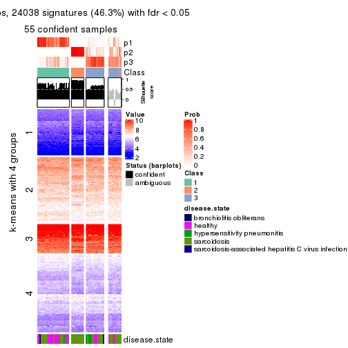
get_signatures(res, k = 4, scale_rows = FALSE)
get_signatures(res, k = 5, scale_rows = FALSE)
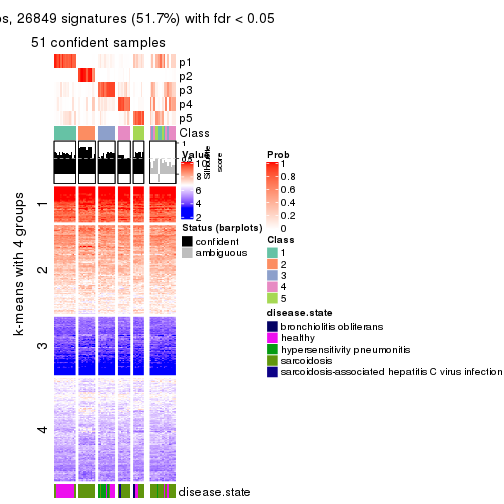
get_signatures(res, k = 6, scale_rows = FALSE)
Compare the overlap of signatures from different k:
compare_signatures(res)
get_signature() returns a data frame invisibly. TO get the list of signatures, the function
call should be assigned to a variable explicitly. In following code, if plot argument is set
to FALSE, no heatmap is plotted while only the differential analysis is performed.
# code only for demonstration
tb = get_signature(res, k = ..., plot = FALSE)
An example of the output of tb is:
#> which_row fdr mean_1 mean_2 scaled_mean_1 scaled_mean_2 km
#> 1 38 0.042760348 8.373488 9.131774 -0.5533452 0.5164555 1
#> 2 40 0.018707592 7.106213 8.469186 -0.6173731 0.5762149 1
#> 3 55 0.019134737 10.221463 11.207825 -0.6159697 0.5749050 1
#> 4 59 0.006059896 5.921854 7.869574 -0.6899429 0.6439467 1
#> 5 60 0.018055526 8.928898 10.211722 -0.6204761 0.5791110 1
#> 6 98 0.009384629 15.714769 14.887706 0.6635654 -0.6193277 2
...
The columns in tb are:
which_row: row indices corresponding to the input matrix.fdr: FDR for the differential test. mean_x: The mean value in group x.scaled_mean_x: The mean value in group x after rows are scaled.km: Row groups if k-means clustering is applied to rows.UMAP plot which shows how samples are separated.
dimension_reduction(res, k = 2, method = "UMAP")
dimension_reduction(res, k = 3, method = "UMAP")
dimension_reduction(res, k = 4, method = "UMAP")
dimension_reduction(res, k = 5, method = "UMAP")
dimension_reduction(res, k = 6, method = "UMAP")
Following heatmap shows how subgroups are split when increasing k:
collect_classes(res)
Test correlation between subgroups and known annotations. If the known annotation is numeric, one-way ANOVA test is applied, and if the known annotation is discrete, chi-squared contingency table test is applied.
test_to_known_factors(res)
#> n disease.state(p) k
#> MAD:kmeans 65 3.86e-03 2
#> MAD:kmeans 55 6.05e-03 3
#> MAD:kmeans 40 6.07e-03 4
#> MAD:kmeans 51 5.09e-07 5
#> MAD:kmeans 52 1.31e-06 6
If matrix rows can be associated to genes, consider to use functional_enrichment(res,
...) to perform function enrichment for the signature genes. See this vignette for more detailed explanations.
The object with results only for a single top-value method and a single partition method can be extracted as:
res = res_list["MAD", "skmeans"]
# you can also extract it by
# res = res_list["MAD:skmeans"]
A summary of res and all the functions that can be applied to it:
res
#> A 'ConsensusPartition' object with k = 2, 3, 4, 5, 6.
#> On a matrix with 51941 rows and 66 columns.
#> Top rows (1000, 2000, 3000, 4000, 5000) are extracted by 'MAD' method.
#> Subgroups are detected by 'skmeans' method.
#> Performed in total 1250 partitions by row resampling.
#> Best k for subgroups seems to be 2.
#>
#> Following methods can be applied to this 'ConsensusPartition' object:
#> [1] "cola_report" "collect_classes" "collect_plots"
#> [4] "collect_stats" "colnames" "compare_signatures"
#> [7] "consensus_heatmap" "dimension_reduction" "functional_enrichment"
#> [10] "get_anno_col" "get_anno" "get_classes"
#> [13] "get_consensus" "get_matrix" "get_membership"
#> [16] "get_param" "get_signatures" "get_stats"
#> [19] "is_best_k" "is_stable_k" "membership_heatmap"
#> [22] "ncol" "nrow" "plot_ecdf"
#> [25] "rownames" "select_partition_number" "show"
#> [28] "suggest_best_k" "test_to_known_factors"
collect_plots() function collects all the plots made from res for all k (number of partitions)
into one single page to provide an easy and fast comparison between different k.
collect_plots(res)
The plots are:
k and the heatmap of
predicted classes for each k.k.k.k.All the plots in panels can be made by individual functions and they are plotted later in this section.
select_partition_number() produces several plots showing different
statistics for choosing “optimized” k. There are following statistics:
k;k, the area increased is defined as \(A_k - A_{k-1}\).The detailed explanations of these statistics can be found in the cola vignette.
Generally speaking, lower PAC score, higher mean silhouette score or higher
concordance corresponds to better partition. Rand index and Jaccard index
measure how similar the current partition is compared to partition with k-1.
If they are too similar, we won't accept k is better than k-1.
select_partition_number(res)
The numeric values for all these statistics can be obtained by get_stats().
get_stats(res)
#> k 1-PAC mean_silhouette concordance area_increased Rand Jaccard
#> 2 2 0.968 0.970 0.986 0.5067 0.494 0.494
#> 3 3 0.619 0.612 0.820 0.3061 0.795 0.610
#> 4 4 0.522 0.450 0.680 0.1221 0.787 0.478
#> 5 5 0.635 0.611 0.785 0.0754 0.888 0.601
#> 6 6 0.660 0.522 0.707 0.0428 0.914 0.618
suggest_best_k() suggests the best \(k\) based on these statistics. The rules are as follows:
suggest_best_k(res)
#> [1] 2
Following shows the table of the partitions (You need to click the show/hide
code output link to see it). The membership matrix (columns with name p*)
is inferred by
clue::cl_consensus()
function with the SE method. Basically the value in the membership matrix
represents the probability to belong to a certain group. The finall class
label for an item is determined with the group with highest probability it
belongs to.
In get_classes() function, the entropy is calculated from the membership
matrix and the silhouette score is calculated from the consensus matrix.
cbind(get_classes(res, k = 2), get_membership(res, k = 2))
#> class entropy silhouette p1 p2
#> GSM479917 2 0.722 0.748 0.200 0.800
#> GSM479920 1 0.563 0.845 0.868 0.132
#> GSM479924 2 0.000 0.989 0.000 1.000
#> GSM479926 1 0.000 0.983 1.000 0.000
#> GSM479927 2 0.000 0.989 0.000 1.000
#> GSM479931 2 0.000 0.989 0.000 1.000
#> GSM479932 2 0.000 0.989 0.000 1.000
#> GSM479933 2 0.000 0.989 0.000 1.000
#> GSM479934 2 0.000 0.989 0.000 1.000
#> GSM479935 1 0.000 0.983 1.000 0.000
#> GSM479942 1 0.000 0.983 1.000 0.000
#> GSM479943 1 0.000 0.983 1.000 0.000
#> GSM479944 1 0.802 0.685 0.756 0.244
#> GSM479945 2 0.000 0.989 0.000 1.000
#> GSM479946 2 0.000 0.989 0.000 1.000
#> GSM479949 2 0.000 0.989 0.000 1.000
#> GSM479951 2 0.000 0.989 0.000 1.000
#> GSM479952 2 0.000 0.989 0.000 1.000
#> GSM479953 1 0.000 0.983 1.000 0.000
#> GSM479956 2 0.000 0.989 0.000 1.000
#> GSM479957 2 0.541 0.854 0.124 0.876
#> GSM479959 1 0.000 0.983 1.000 0.000
#> GSM479960 2 0.000 0.989 0.000 1.000
#> GSM479961 2 0.000 0.989 0.000 1.000
#> GSM479962 2 0.000 0.989 0.000 1.000
#> GSM479963 1 0.000 0.983 1.000 0.000
#> GSM479964 1 0.000 0.983 1.000 0.000
#> GSM479965 1 0.000 0.983 1.000 0.000
#> GSM479968 2 0.000 0.989 0.000 1.000
#> GSM479969 2 0.000 0.989 0.000 1.000
#> GSM479971 2 0.000 0.989 0.000 1.000
#> GSM479972 2 0.000 0.989 0.000 1.000
#> GSM479973 1 0.000 0.983 1.000 0.000
#> GSM479974 2 0.000 0.989 0.000 1.000
#> GSM479977 1 0.000 0.983 1.000 0.000
#> GSM479979 2 0.000 0.989 0.000 1.000
#> GSM479980 2 0.000 0.989 0.000 1.000
#> GSM479981 2 0.000 0.989 0.000 1.000
#> GSM479918 1 0.000 0.983 1.000 0.000
#> GSM479929 1 0.000 0.983 1.000 0.000
#> GSM479930 2 0.000 0.989 0.000 1.000
#> GSM479938 1 0.000 0.983 1.000 0.000
#> GSM479950 1 0.000 0.983 1.000 0.000
#> GSM479955 2 0.000 0.989 0.000 1.000
#> GSM479919 1 0.000 0.983 1.000 0.000
#> GSM479921 1 0.000 0.983 1.000 0.000
#> GSM479922 1 0.000 0.983 1.000 0.000
#> GSM479923 1 0.722 0.754 0.800 0.200
#> GSM479925 1 0.000 0.983 1.000 0.000
#> GSM479928 2 0.000 0.989 0.000 1.000
#> GSM479936 1 0.000 0.983 1.000 0.000
#> GSM479937 1 0.000 0.983 1.000 0.000
#> GSM479939 1 0.000 0.983 1.000 0.000
#> GSM479940 1 0.000 0.983 1.000 0.000
#> GSM479941 1 0.000 0.983 1.000 0.000
#> GSM479947 1 0.000 0.983 1.000 0.000
#> GSM479948 2 0.000 0.989 0.000 1.000
#> GSM479954 1 0.000 0.983 1.000 0.000
#> GSM479958 1 0.000 0.983 1.000 0.000
#> GSM479966 1 0.000 0.983 1.000 0.000
#> GSM479967 1 0.000 0.983 1.000 0.000
#> GSM479970 2 0.000 0.989 0.000 1.000
#> GSM479975 1 0.000 0.983 1.000 0.000
#> GSM479976 1 0.000 0.983 1.000 0.000
#> GSM479982 2 0.000 0.989 0.000 1.000
#> GSM479978 1 0.000 0.983 1.000 0.000
cbind(get_classes(res, k = 3), get_membership(res, k = 3))
#> class entropy silhouette p1 p2 p3
#> GSM479917 3 0.7339 0.2417 0.036 0.392 0.572
#> GSM479920 2 0.9659 -0.1632 0.216 0.432 0.352
#> GSM479924 2 0.0000 0.8027 0.000 1.000 0.000
#> GSM479926 1 0.1411 0.8017 0.964 0.000 0.036
#> GSM479927 2 0.2590 0.7844 0.004 0.924 0.072
#> GSM479931 2 0.0747 0.7989 0.000 0.984 0.016
#> GSM479932 2 0.0000 0.8027 0.000 1.000 0.000
#> GSM479933 3 0.4291 0.5665 0.000 0.180 0.820
#> GSM479934 2 0.0000 0.8027 0.000 1.000 0.000
#> GSM479935 1 0.6095 0.5977 0.608 0.000 0.392
#> GSM479942 3 0.4475 0.5305 0.144 0.016 0.840
#> GSM479943 3 0.5016 0.3451 0.240 0.000 0.760
#> GSM479944 3 0.1647 0.6294 0.004 0.036 0.960
#> GSM479945 2 0.0237 0.8020 0.000 0.996 0.004
#> GSM479946 2 0.1031 0.7958 0.000 0.976 0.024
#> GSM479949 2 0.5298 0.6204 0.164 0.804 0.032
#> GSM479951 2 0.0000 0.8027 0.000 1.000 0.000
#> GSM479952 2 0.2096 0.7911 0.004 0.944 0.052
#> GSM479953 1 0.6062 0.5996 0.616 0.000 0.384
#> GSM479956 3 0.6309 -0.0695 0.000 0.496 0.504
#> GSM479957 3 0.6416 0.2131 0.008 0.376 0.616
#> GSM479959 1 0.3686 0.7647 0.860 0.000 0.140
#> GSM479960 2 0.0000 0.8027 0.000 1.000 0.000
#> GSM479961 2 0.1031 0.7958 0.000 0.976 0.024
#> GSM479962 2 0.2590 0.7844 0.004 0.924 0.072
#> GSM479963 1 0.1163 0.7987 0.972 0.000 0.028
#> GSM479964 1 0.5988 0.6144 0.632 0.000 0.368
#> GSM479965 1 0.6062 0.6027 0.616 0.000 0.384
#> GSM479968 2 0.6260 0.0561 0.000 0.552 0.448
#> GSM479969 2 0.3116 0.7543 0.000 0.892 0.108
#> GSM479971 3 0.6140 0.1547 0.000 0.404 0.596
#> GSM479972 2 0.0892 0.8005 0.000 0.980 0.020
#> GSM479973 1 0.6062 0.5996 0.616 0.000 0.384
#> GSM479974 2 0.5529 0.4679 0.000 0.704 0.296
#> GSM479977 1 0.6062 0.5996 0.616 0.000 0.384
#> GSM479979 2 0.0592 0.8001 0.000 0.988 0.012
#> GSM479980 2 0.6295 -0.0166 0.000 0.528 0.472
#> GSM479981 2 0.0000 0.8027 0.000 1.000 0.000
#> GSM479918 1 0.6126 0.5889 0.600 0.000 0.400
#> GSM479929 3 0.2711 0.5857 0.088 0.000 0.912
#> GSM479930 2 0.3607 0.7511 0.008 0.880 0.112
#> GSM479938 3 0.2584 0.6050 0.064 0.008 0.928
#> GSM479950 3 0.2527 0.6198 0.044 0.020 0.936
#> GSM479955 2 0.3412 0.7457 0.000 0.876 0.124
#> GSM479919 1 0.0000 0.8041 1.000 0.000 0.000
#> GSM479921 1 0.5882 0.6303 0.652 0.000 0.348
#> GSM479922 1 0.3116 0.7670 0.892 0.000 0.108
#> GSM479923 1 0.3213 0.7488 0.900 0.008 0.092
#> GSM479925 1 0.0892 0.7992 0.980 0.000 0.020
#> GSM479928 3 0.7207 0.1844 0.032 0.384 0.584
#> GSM479936 1 0.1643 0.7926 0.956 0.000 0.044
#> GSM479937 3 0.7744 0.1520 0.448 0.048 0.504
#> GSM479939 1 0.2537 0.7752 0.920 0.000 0.080
#> GSM479940 1 0.2625 0.7745 0.916 0.000 0.084
#> GSM479941 1 0.5988 0.6144 0.632 0.000 0.368
#> GSM479947 1 0.0000 0.8041 1.000 0.000 0.000
#> GSM479948 2 0.4178 0.7070 0.000 0.828 0.172
#> GSM479954 1 0.1860 0.7881 0.948 0.000 0.052
#> GSM479958 1 0.0237 0.8042 0.996 0.000 0.004
#> GSM479966 1 0.0747 0.8005 0.984 0.000 0.016
#> GSM479967 1 0.0237 0.8042 0.996 0.000 0.004
#> GSM479970 2 0.6676 0.0912 0.008 0.516 0.476
#> GSM479975 1 0.0592 0.8040 0.988 0.000 0.012
#> GSM479976 1 0.1964 0.7855 0.944 0.000 0.056
#> GSM479982 2 0.6307 -0.0345 0.000 0.512 0.488
#> GSM479978 1 0.1529 0.8019 0.960 0.000 0.040
cbind(get_classes(res, k = 4), get_membership(res, k = 4))
#> class entropy silhouette p1 p2 p3 p4
#> GSM479917 4 0.5640 0.2542 0.016 0.144 0.092 0.748
#> GSM479920 4 0.7289 0.2792 0.200 0.268 0.000 0.532
#> GSM479924 2 0.2216 0.6889 0.000 0.908 0.092 0.000
#> GSM479926 1 0.3074 0.6813 0.848 0.000 0.000 0.152
#> GSM479927 2 0.6103 0.5983 0.048 0.728 0.160 0.064
#> GSM479931 2 0.1520 0.7076 0.000 0.956 0.024 0.020
#> GSM479932 2 0.2408 0.6835 0.000 0.896 0.104 0.000
#> GSM479933 4 0.6890 0.0751 0.000 0.268 0.152 0.580
#> GSM479934 2 0.1118 0.7077 0.000 0.964 0.036 0.000
#> GSM479935 4 0.5497 0.1108 0.460 0.000 0.016 0.524
#> GSM479942 4 0.5540 0.2916 0.088 0.020 0.132 0.760
#> GSM479943 4 0.7415 0.2293 0.304 0.000 0.196 0.500
#> GSM479944 4 0.5965 0.1148 0.028 0.036 0.252 0.684
#> GSM479945 2 0.0592 0.7098 0.000 0.984 0.016 0.000
#> GSM479946 2 0.2282 0.6952 0.000 0.924 0.052 0.024
#> GSM479949 2 0.7571 0.3482 0.088 0.612 0.220 0.080
#> GSM479951 2 0.2408 0.6835 0.000 0.896 0.104 0.000
#> GSM479952 2 0.5967 0.6078 0.048 0.740 0.148 0.064
#> GSM479953 4 0.4925 0.1932 0.428 0.000 0.000 0.572
#> GSM479956 2 0.7882 0.2039 0.000 0.368 0.284 0.348
#> GSM479957 4 0.8668 -0.1487 0.036 0.252 0.340 0.372
#> GSM479959 1 0.3583 0.6716 0.816 0.000 0.004 0.180
#> GSM479960 2 0.3074 0.6395 0.000 0.848 0.152 0.000
#> GSM479961 2 0.3570 0.6715 0.000 0.860 0.092 0.048
#> GSM479962 2 0.6146 0.5956 0.048 0.724 0.164 0.064
#> GSM479963 1 0.2131 0.7473 0.932 0.000 0.036 0.032
#> GSM479964 4 0.4961 0.1615 0.448 0.000 0.000 0.552
#> GSM479965 1 0.5158 -0.0603 0.524 0.000 0.004 0.472
#> GSM479968 2 0.7512 0.2836 0.000 0.460 0.192 0.348
#> GSM479969 3 0.4697 0.3899 0.000 0.356 0.644 0.000
#> GSM479971 3 0.7893 -0.0265 0.008 0.232 0.464 0.296
#> GSM479972 2 0.1637 0.7070 0.000 0.940 0.060 0.000
#> GSM479973 4 0.5132 0.1381 0.448 0.000 0.004 0.548
#> GSM479974 2 0.7613 0.2771 0.000 0.472 0.288 0.240
#> GSM479977 4 0.4933 0.1887 0.432 0.000 0.000 0.568
#> GSM479979 2 0.0188 0.7111 0.000 0.996 0.000 0.004
#> GSM479980 2 0.7568 0.2712 0.000 0.448 0.200 0.352
#> GSM479981 2 0.2408 0.6835 0.000 0.896 0.104 0.000
#> GSM479918 4 0.5808 0.1477 0.424 0.000 0.032 0.544
#> GSM479929 3 0.6079 0.2774 0.048 0.000 0.544 0.408
#> GSM479930 2 0.6463 0.2644 0.012 0.568 0.368 0.052
#> GSM479938 3 0.5441 0.3537 0.012 0.004 0.588 0.396
#> GSM479950 3 0.4204 0.5822 0.000 0.020 0.788 0.192
#> GSM479955 3 0.4790 0.3642 0.000 0.380 0.620 0.000
#> GSM479919 1 0.0524 0.7587 0.988 0.000 0.004 0.008
#> GSM479921 1 0.4992 -0.0975 0.524 0.000 0.000 0.476
#> GSM479922 3 0.7345 0.2721 0.308 0.000 0.508 0.184
#> GSM479923 1 0.5412 0.6121 0.768 0.020 0.132 0.080
#> GSM479925 1 0.2131 0.7466 0.932 0.000 0.032 0.036
#> GSM479928 3 0.4174 0.5986 0.000 0.140 0.816 0.044
#> GSM479936 1 0.2830 0.7332 0.900 0.000 0.060 0.040
#> GSM479937 3 0.3999 0.5695 0.140 0.000 0.824 0.036
#> GSM479939 1 0.4568 0.6824 0.800 0.000 0.076 0.124
#> GSM479940 1 0.4499 0.6670 0.804 0.000 0.124 0.072
#> GSM479941 4 0.4977 0.1349 0.460 0.000 0.000 0.540
#> GSM479947 1 0.2999 0.7065 0.864 0.000 0.004 0.132
#> GSM479948 3 0.4222 0.4987 0.000 0.272 0.728 0.000
#> GSM479954 1 0.3885 0.6931 0.844 0.000 0.092 0.064
#> GSM479958 1 0.2125 0.7415 0.920 0.000 0.004 0.076
#> GSM479966 1 0.1706 0.7494 0.948 0.000 0.016 0.036
#> GSM479967 1 0.1978 0.7441 0.928 0.000 0.004 0.068
#> GSM479970 3 0.3160 0.5817 0.020 0.108 0.872 0.000
#> GSM479975 1 0.2124 0.7468 0.924 0.000 0.008 0.068
#> GSM479976 1 0.4168 0.6756 0.828 0.000 0.092 0.080
#> GSM479982 4 0.8315 -0.2634 0.016 0.344 0.264 0.376
#> GSM479978 1 0.4819 0.3770 0.652 0.000 0.004 0.344
cbind(get_classes(res, k = 5), get_membership(res, k = 5))
#> class entropy silhouette p1 p2 p3 p4 p5
#> GSM479917 4 0.5095 0.555 0.000 0.036 0.004 0.592 0.368
#> GSM479920 5 0.2338 0.633 0.036 0.032 0.000 0.016 0.916
#> GSM479924 2 0.0451 0.742 0.000 0.988 0.008 0.004 0.000
#> GSM479926 1 0.4310 0.319 0.604 0.000 0.000 0.004 0.392
#> GSM479927 2 0.7044 0.431 0.200 0.480 0.028 0.292 0.000
#> GSM479931 2 0.2763 0.701 0.000 0.848 0.004 0.148 0.000
#> GSM479932 2 0.0451 0.741 0.000 0.988 0.008 0.004 0.000
#> GSM479933 4 0.5682 0.701 0.004 0.148 0.032 0.700 0.116
#> GSM479934 2 0.0162 0.743 0.000 0.996 0.004 0.000 0.000
#> GSM479935 5 0.6038 0.421 0.356 0.000 0.064 0.028 0.552
#> GSM479942 4 0.5892 0.605 0.052 0.000 0.068 0.656 0.224
#> GSM479943 5 0.8049 0.293 0.292 0.000 0.220 0.104 0.384
#> GSM479944 4 0.5698 0.666 0.028 0.004 0.140 0.696 0.132
#> GSM479945 2 0.1124 0.740 0.000 0.960 0.004 0.036 0.000
#> GSM479946 2 0.2377 0.697 0.000 0.872 0.000 0.128 0.000
#> GSM479949 2 0.7695 0.194 0.032 0.412 0.176 0.024 0.356
#> GSM479951 2 0.0451 0.741 0.000 0.988 0.008 0.004 0.000
#> GSM479952 2 0.7068 0.414 0.200 0.472 0.028 0.300 0.000
#> GSM479953 5 0.0833 0.652 0.004 0.000 0.004 0.016 0.976
#> GSM479956 4 0.2171 0.732 0.000 0.064 0.024 0.912 0.000
#> GSM479957 4 0.2569 0.741 0.012 0.060 0.020 0.904 0.004
#> GSM479959 1 0.4106 0.565 0.724 0.000 0.000 0.020 0.256
#> GSM479960 2 0.0968 0.736 0.000 0.972 0.012 0.012 0.004
#> GSM479961 2 0.4415 0.434 0.000 0.604 0.000 0.388 0.008
#> GSM479962 2 0.7069 0.434 0.192 0.484 0.032 0.292 0.000
#> GSM479963 1 0.0162 0.730 0.996 0.000 0.000 0.000 0.004
#> GSM479964 5 0.0609 0.659 0.020 0.000 0.000 0.000 0.980
#> GSM479965 5 0.5229 0.281 0.432 0.000 0.004 0.036 0.528
#> GSM479968 4 0.4991 0.597 0.000 0.284 0.032 0.668 0.016
#> GSM479969 3 0.3487 0.723 0.000 0.212 0.780 0.008 0.000
#> GSM479971 4 0.4699 0.649 0.012 0.092 0.124 0.768 0.004
#> GSM479972 2 0.2825 0.709 0.000 0.860 0.016 0.124 0.000
#> GSM479973 5 0.6162 0.394 0.352 0.000 0.012 0.104 0.532
#> GSM479974 2 0.6092 0.120 0.000 0.524 0.104 0.364 0.008
#> GSM479977 5 0.0771 0.659 0.020 0.000 0.000 0.004 0.976
#> GSM479979 2 0.0609 0.741 0.000 0.980 0.000 0.020 0.000
#> GSM479980 4 0.3346 0.739 0.000 0.108 0.008 0.848 0.036
#> GSM479981 2 0.0290 0.742 0.000 0.992 0.008 0.000 0.000
#> GSM479918 5 0.6590 0.417 0.336 0.000 0.092 0.044 0.528
#> GSM479929 3 0.5007 0.671 0.044 0.000 0.752 0.068 0.136
#> GSM479930 2 0.7792 0.224 0.016 0.444 0.336 0.124 0.080
#> GSM479938 3 0.4105 0.722 0.004 0.004 0.804 0.076 0.112
#> GSM479950 3 0.1173 0.811 0.000 0.004 0.964 0.012 0.020
#> GSM479955 3 0.3210 0.734 0.000 0.212 0.788 0.000 0.000
#> GSM479919 1 0.1965 0.731 0.904 0.000 0.000 0.000 0.096
#> GSM479921 5 0.3480 0.555 0.248 0.000 0.000 0.000 0.752
#> GSM479922 3 0.4732 0.625 0.084 0.000 0.736 0.004 0.176
#> GSM479923 1 0.2563 0.643 0.872 0.000 0.008 0.120 0.000
#> GSM479925 1 0.1908 0.707 0.908 0.000 0.000 0.000 0.092
#> GSM479928 3 0.2079 0.819 0.000 0.064 0.916 0.020 0.000
#> GSM479936 1 0.0324 0.730 0.992 0.000 0.000 0.004 0.004
#> GSM479937 3 0.1300 0.815 0.028 0.000 0.956 0.016 0.000
#> GSM479939 1 0.4935 0.650 0.752 0.000 0.112 0.024 0.112
#> GSM479940 1 0.4736 0.663 0.764 0.000 0.124 0.020 0.092
#> GSM479941 5 0.1478 0.660 0.064 0.000 0.000 0.000 0.936
#> GSM479947 5 0.4511 0.230 0.356 0.000 0.000 0.016 0.628
#> GSM479948 3 0.2813 0.804 0.000 0.084 0.876 0.040 0.000
#> GSM479954 1 0.0963 0.716 0.964 0.000 0.000 0.036 0.000
#> GSM479958 1 0.4781 0.405 0.592 0.000 0.008 0.012 0.388
#> GSM479966 1 0.4557 0.496 0.656 0.000 0.008 0.012 0.324
#> GSM479967 1 0.3990 0.632 0.740 0.000 0.004 0.012 0.244
#> GSM479970 3 0.2414 0.794 0.012 0.008 0.900 0.080 0.000
#> GSM479975 1 0.3280 0.670 0.808 0.000 0.004 0.004 0.184
#> GSM479976 1 0.1478 0.697 0.936 0.000 0.000 0.064 0.000
#> GSM479982 4 0.1924 0.736 0.008 0.064 0.004 0.924 0.000
#> GSM479978 5 0.2835 0.622 0.112 0.000 0.004 0.016 0.868
cbind(get_classes(res, k = 6), get_membership(res, k = 6))
#> class entropy silhouette p1 p2 p3 p4 p5 p6
#> GSM479917 4 0.6230 -0.0207 0.000 0.008 0.004 0.460 0.228 0.300
#> GSM479920 6 0.1981 0.5979 0.020 0.004 0.004 0.004 0.044 0.924
#> GSM479924 2 0.0260 0.8651 0.000 0.992 0.000 0.000 0.008 0.000
#> GSM479926 1 0.4675 0.3365 0.580 0.000 0.000 0.000 0.052 0.368
#> GSM479927 4 0.7803 0.3456 0.160 0.192 0.020 0.388 0.240 0.000
#> GSM479931 2 0.4778 0.5835 0.000 0.680 0.004 0.200 0.116 0.000
#> GSM479932 2 0.0000 0.8659 0.000 1.000 0.000 0.000 0.000 0.000
#> GSM479933 4 0.5935 0.1011 0.000 0.092 0.004 0.532 0.336 0.036
#> GSM479934 2 0.0146 0.8658 0.000 0.996 0.000 0.004 0.000 0.000
#> GSM479935 5 0.6216 0.3081 0.156 0.000 0.028 0.000 0.464 0.352
#> GSM479942 5 0.5351 0.2354 0.000 0.000 0.004 0.340 0.548 0.108
#> GSM479943 5 0.6715 0.4216 0.140 0.000 0.116 0.008 0.552 0.184
#> GSM479944 5 0.4389 0.0115 0.000 0.000 0.012 0.444 0.536 0.008
#> GSM479945 2 0.2263 0.8269 0.000 0.896 0.000 0.048 0.056 0.000
#> GSM479946 2 0.2851 0.7836 0.000 0.844 0.004 0.132 0.020 0.000
#> GSM479949 6 0.8017 0.1635 0.040 0.224 0.148 0.016 0.128 0.444
#> GSM479951 2 0.0000 0.8659 0.000 1.000 0.000 0.000 0.000 0.000
#> GSM479952 4 0.7656 0.3465 0.160 0.200 0.012 0.400 0.228 0.000
#> GSM479953 6 0.1908 0.5568 0.000 0.000 0.000 0.004 0.096 0.900
#> GSM479956 4 0.1490 0.5250 0.004 0.016 0.008 0.948 0.024 0.000
#> GSM479957 4 0.2244 0.5029 0.012 0.012 0.016 0.912 0.048 0.000
#> GSM479959 1 0.5067 0.5142 0.636 0.000 0.000 0.000 0.184 0.180
#> GSM479960 2 0.0405 0.8621 0.000 0.988 0.000 0.000 0.008 0.004
#> GSM479961 4 0.5845 0.0142 0.000 0.396 0.004 0.436 0.164 0.000
#> GSM479962 4 0.7847 0.3455 0.156 0.192 0.024 0.388 0.240 0.000
#> GSM479963 1 0.0405 0.7277 0.988 0.000 0.000 0.000 0.004 0.008
#> GSM479964 6 0.0405 0.6099 0.004 0.000 0.000 0.000 0.008 0.988
#> GSM479965 6 0.6060 -0.0746 0.364 0.000 0.000 0.000 0.260 0.376
#> GSM479968 4 0.6042 0.2527 0.000 0.256 0.004 0.464 0.276 0.000
#> GSM479969 3 0.2765 0.7179 0.000 0.132 0.848 0.004 0.016 0.000
#> GSM479971 4 0.4096 0.4898 0.008 0.024 0.064 0.792 0.112 0.000
#> GSM479972 2 0.4069 0.6994 0.000 0.764 0.008 0.148 0.080 0.000
#> GSM479973 6 0.7045 -0.1471 0.244 0.000 0.000 0.072 0.300 0.384
#> GSM479974 2 0.6112 0.3084 0.000 0.572 0.056 0.232 0.140 0.000
#> GSM479977 6 0.0632 0.6026 0.000 0.000 0.000 0.000 0.024 0.976
#> GSM479979 2 0.1151 0.8571 0.000 0.956 0.000 0.032 0.012 0.000
#> GSM479980 4 0.3925 0.4366 0.000 0.064 0.004 0.776 0.152 0.004
#> GSM479981 2 0.0000 0.8659 0.000 1.000 0.000 0.000 0.000 0.000
#> GSM479918 5 0.6241 0.3570 0.148 0.000 0.036 0.000 0.488 0.328
#> GSM479929 3 0.4701 0.1855 0.008 0.000 0.484 0.000 0.480 0.028
#> GSM479930 3 0.8134 0.2403 0.028 0.164 0.444 0.048 0.224 0.092
#> GSM479938 3 0.4487 0.3494 0.000 0.000 0.552 0.004 0.420 0.024
#> GSM479950 3 0.2402 0.7016 0.000 0.004 0.856 0.000 0.140 0.000
#> GSM479955 3 0.2219 0.7209 0.000 0.136 0.864 0.000 0.000 0.000
#> GSM479919 1 0.1500 0.7276 0.936 0.000 0.000 0.000 0.012 0.052
#> GSM479921 6 0.4037 0.4957 0.200 0.000 0.000 0.000 0.064 0.736
#> GSM479922 3 0.4895 0.5738 0.040 0.000 0.728 0.004 0.112 0.116
#> GSM479923 1 0.3770 0.5977 0.776 0.000 0.000 0.148 0.076 0.000
#> GSM479925 1 0.2001 0.7161 0.912 0.000 0.000 0.000 0.040 0.048
#> GSM479928 3 0.1563 0.7370 0.000 0.012 0.932 0.000 0.056 0.000
#> GSM479936 1 0.0951 0.7235 0.968 0.000 0.000 0.008 0.020 0.004
#> GSM479937 3 0.0405 0.7411 0.004 0.000 0.988 0.000 0.008 0.000
#> GSM479939 1 0.5533 0.5537 0.632 0.000 0.072 0.004 0.244 0.048
#> GSM479940 1 0.5611 0.6109 0.660 0.000 0.100 0.004 0.172 0.064
#> GSM479941 6 0.2506 0.5962 0.068 0.000 0.000 0.000 0.052 0.880
#> GSM479947 6 0.4524 0.3474 0.304 0.000 0.000 0.008 0.040 0.648
#> GSM479948 3 0.2133 0.7391 0.000 0.052 0.912 0.016 0.020 0.000
#> GSM479954 1 0.2179 0.6911 0.900 0.000 0.000 0.036 0.064 0.000
#> GSM479958 1 0.5133 0.4537 0.604 0.000 0.012 0.004 0.064 0.316
#> GSM479966 1 0.4659 0.5282 0.672 0.000 0.008 0.008 0.044 0.268
#> GSM479967 1 0.3694 0.6759 0.788 0.000 0.000 0.008 0.048 0.156
#> GSM479970 3 0.1930 0.7362 0.000 0.012 0.924 0.036 0.028 0.000
#> GSM479975 1 0.3589 0.6904 0.812 0.000 0.004 0.004 0.072 0.108
#> GSM479976 1 0.3206 0.6439 0.828 0.000 0.000 0.104 0.068 0.000
#> GSM479982 4 0.0964 0.5224 0.004 0.016 0.000 0.968 0.012 0.000
#> GSM479978 6 0.3390 0.5942 0.128 0.000 0.004 0.004 0.044 0.820
Heatmaps for the consensus matrix. It visualizes the probability of two samples to be in a same group.
consensus_heatmap(res, k = 2)
consensus_heatmap(res, k = 3)
consensus_heatmap(res, k = 4)
consensus_heatmap(res, k = 5)
consensus_heatmap(res, k = 6)

Heatmaps for the membership of samples in all partitions to see how consistent they are:
membership_heatmap(res, k = 2)
membership_heatmap(res, k = 3)
membership_heatmap(res, k = 4)
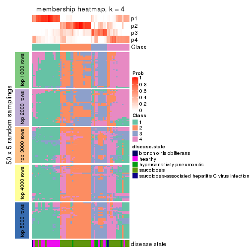
membership_heatmap(res, k = 5)
membership_heatmap(res, k = 6)
As soon as we have had the classes for columns, we can look for signatures which are significantly different between classes which can be candidate marks for certain classes. Following are the heatmaps for signatures.
Signature heatmaps where rows are scaled:
get_signatures(res, k = 2)
get_signatures(res, k = 3)
get_signatures(res, k = 4)
get_signatures(res, k = 5)
get_signatures(res, k = 6)
Signature heatmaps where rows are not scaled:
get_signatures(res, k = 2, scale_rows = FALSE)
get_signatures(res, k = 3, scale_rows = FALSE)
get_signatures(res, k = 4, scale_rows = FALSE)
get_signatures(res, k = 5, scale_rows = FALSE)
get_signatures(res, k = 6, scale_rows = FALSE)
Compare the overlap of signatures from different k:
compare_signatures(res)
get_signature() returns a data frame invisibly. TO get the list of signatures, the function
call should be assigned to a variable explicitly. In following code, if plot argument is set
to FALSE, no heatmap is plotted while only the differential analysis is performed.
# code only for demonstration
tb = get_signature(res, k = ..., plot = FALSE)
An example of the output of tb is:
#> which_row fdr mean_1 mean_2 scaled_mean_1 scaled_mean_2 km
#> 1 38 0.042760348 8.373488 9.131774 -0.5533452 0.5164555 1
#> 2 40 0.018707592 7.106213 8.469186 -0.6173731 0.5762149 1
#> 3 55 0.019134737 10.221463 11.207825 -0.6159697 0.5749050 1
#> 4 59 0.006059896 5.921854 7.869574 -0.6899429 0.6439467 1
#> 5 60 0.018055526 8.928898 10.211722 -0.6204761 0.5791110 1
#> 6 98 0.009384629 15.714769 14.887706 0.6635654 -0.6193277 2
...
The columns in tb are:
which_row: row indices corresponding to the input matrix.fdr: FDR for the differential test. mean_x: The mean value in group x.scaled_mean_x: The mean value in group x after rows are scaled.km: Row groups if k-means clustering is applied to rows.UMAP plot which shows how samples are separated.
dimension_reduction(res, k = 2, method = "UMAP")
dimension_reduction(res, k = 3, method = "UMAP")
dimension_reduction(res, k = 4, method = "UMAP")
dimension_reduction(res, k = 5, method = "UMAP")
dimension_reduction(res, k = 6, method = "UMAP")
Following heatmap shows how subgroups are split when increasing k:
collect_classes(res)
Test correlation between subgroups and known annotations. If the known annotation is numeric, one-way ANOVA test is applied, and if the known annotation is discrete, chi-squared contingency table test is applied.
test_to_known_factors(res)
#> n disease.state(p) k
#> MAD:skmeans 66 2.92e-03 2
#> MAD:skmeans 53 7.07e-05 3
#> MAD:skmeans 35 1.88e-06 4
#> MAD:skmeans 50 2.35e-06 5
#> MAD:skmeans 41 1.19e-05 6
If matrix rows can be associated to genes, consider to use functional_enrichment(res,
...) to perform function enrichment for the signature genes. See this vignette for more detailed explanations.
The object with results only for a single top-value method and a single partition method can be extracted as:
res = res_list["MAD", "pam"]
# you can also extract it by
# res = res_list["MAD:pam"]
A summary of res and all the functions that can be applied to it:
res
#> A 'ConsensusPartition' object with k = 2, 3, 4, 5, 6.
#> On a matrix with 51941 rows and 66 columns.
#> Top rows (1000, 2000, 3000, 4000, 5000) are extracted by 'MAD' method.
#> Subgroups are detected by 'pam' method.
#> Performed in total 1250 partitions by row resampling.
#> Best k for subgroups seems to be 2.
#>
#> Following methods can be applied to this 'ConsensusPartition' object:
#> [1] "cola_report" "collect_classes" "collect_plots"
#> [4] "collect_stats" "colnames" "compare_signatures"
#> [7] "consensus_heatmap" "dimension_reduction" "functional_enrichment"
#> [10] "get_anno_col" "get_anno" "get_classes"
#> [13] "get_consensus" "get_matrix" "get_membership"
#> [16] "get_param" "get_signatures" "get_stats"
#> [19] "is_best_k" "is_stable_k" "membership_heatmap"
#> [22] "ncol" "nrow" "plot_ecdf"
#> [25] "rownames" "select_partition_number" "show"
#> [28] "suggest_best_k" "test_to_known_factors"
collect_plots() function collects all the plots made from res for all k (number of partitions)
into one single page to provide an easy and fast comparison between different k.
collect_plots(res)
The plots are:
k and the heatmap of
predicted classes for each k.k.k.k.All the plots in panels can be made by individual functions and they are plotted later in this section.
select_partition_number() produces several plots showing different
statistics for choosing “optimized” k. There are following statistics:
k;k, the area increased is defined as \(A_k - A_{k-1}\).The detailed explanations of these statistics can be found in the cola vignette.
Generally speaking, lower PAC score, higher mean silhouette score or higher
concordance corresponds to better partition. Rand index and Jaccard index
measure how similar the current partition is compared to partition with k-1.
If they are too similar, we won't accept k is better than k-1.
select_partition_number(res)
The numeric values for all these statistics can be obtained by get_stats().
get_stats(res)
#> k 1-PAC mean_silhouette concordance area_increased Rand Jaccard
#> 2 2 0.815 0.882 0.953 0.5071 0.493 0.493
#> 3 3 0.678 0.852 0.906 0.1887 0.697 0.498
#> 4 4 0.714 0.812 0.900 0.1860 0.829 0.604
#> 5 5 0.694 0.663 0.835 0.0759 0.838 0.512
#> 6 6 0.713 0.566 0.808 0.0620 0.946 0.763
suggest_best_k() suggests the best \(k\) based on these statistics. The rules are as follows:
suggest_best_k(res)
#> [1] 2
Following shows the table of the partitions (You need to click the show/hide
code output link to see it). The membership matrix (columns with name p*)
is inferred by
clue::cl_consensus()
function with the SE method. Basically the value in the membership matrix
represents the probability to belong to a certain group. The finall class
label for an item is determined with the group with highest probability it
belongs to.
In get_classes() function, the entropy is calculated from the membership
matrix and the silhouette score is calculated from the consensus matrix.
cbind(get_classes(res, k = 2), get_membership(res, k = 2))
#> class entropy silhouette p1 p2
#> GSM479917 2 0.969 0.327 0.396 0.604
#> GSM479920 1 0.781 0.693 0.768 0.232
#> GSM479924 2 0.000 0.954 0.000 1.000
#> GSM479926 1 0.000 0.942 1.000 0.000
#> GSM479927 2 0.000 0.954 0.000 1.000
#> GSM479931 2 0.000 0.954 0.000 1.000
#> GSM479932 2 0.000 0.954 0.000 1.000
#> GSM479933 2 0.000 0.954 0.000 1.000
#> GSM479934 2 0.000 0.954 0.000 1.000
#> GSM479935 1 0.000 0.942 1.000 0.000
#> GSM479942 2 0.000 0.954 0.000 1.000
#> GSM479943 1 0.000 0.942 1.000 0.000
#> GSM479944 2 0.000 0.954 0.000 1.000
#> GSM479945 2 0.000 0.954 0.000 1.000
#> GSM479946 2 0.000 0.954 0.000 1.000
#> GSM479949 1 0.000 0.942 1.000 0.000
#> GSM479951 2 0.000 0.954 0.000 1.000
#> GSM479952 2 0.000 0.954 0.000 1.000
#> GSM479953 1 0.000 0.942 1.000 0.000
#> GSM479956 2 0.000 0.954 0.000 1.000
#> GSM479957 2 0.000 0.954 0.000 1.000
#> GSM479959 1 0.000 0.942 1.000 0.000
#> GSM479960 1 0.971 0.324 0.600 0.400
#> GSM479961 2 0.000 0.954 0.000 1.000
#> GSM479962 2 0.000 0.954 0.000 1.000
#> GSM479963 1 0.000 0.942 1.000 0.000
#> GSM479964 1 0.000 0.942 1.000 0.000
#> GSM479965 1 0.000 0.942 1.000 0.000
#> GSM479968 2 0.000 0.954 0.000 1.000
#> GSM479969 2 0.000 0.954 0.000 1.000
#> GSM479971 2 0.000 0.954 0.000 1.000
#> GSM479972 2 0.000 0.954 0.000 1.000
#> GSM479973 2 0.506 0.845 0.112 0.888
#> GSM479974 2 0.745 0.711 0.212 0.788
#> GSM479977 1 0.000 0.942 1.000 0.000
#> GSM479979 2 0.000 0.954 0.000 1.000
#> GSM479980 2 0.000 0.954 0.000 1.000
#> GSM479981 2 0.000 0.954 0.000 1.000
#> GSM479918 1 0.000 0.942 1.000 0.000
#> GSM479929 1 0.000 0.942 1.000 0.000
#> GSM479930 2 0.000 0.954 0.000 1.000
#> GSM479938 2 0.992 0.141 0.448 0.552
#> GSM479950 1 0.000 0.942 1.000 0.000
#> GSM479955 2 0.000 0.954 0.000 1.000
#> GSM479919 1 0.000 0.942 1.000 0.000
#> GSM479921 1 0.000 0.942 1.000 0.000
#> GSM479922 1 0.000 0.942 1.000 0.000
#> GSM479923 1 0.993 0.185 0.548 0.452
#> GSM479925 1 0.000 0.942 1.000 0.000
#> GSM479928 2 0.184 0.930 0.028 0.972
#> GSM479936 1 0.844 0.622 0.728 0.272
#> GSM479937 1 0.373 0.881 0.928 0.072
#> GSM479939 1 0.000 0.942 1.000 0.000
#> GSM479940 1 0.000 0.942 1.000 0.000
#> GSM479941 1 0.000 0.942 1.000 0.000
#> GSM479947 1 0.000 0.942 1.000 0.000
#> GSM479948 1 0.802 0.661 0.756 0.244
#> GSM479954 2 0.730 0.718 0.204 0.796
#> GSM479958 1 0.000 0.942 1.000 0.000
#> GSM479966 1 0.000 0.942 1.000 0.000
#> GSM479967 1 0.000 0.942 1.000 0.000
#> GSM479970 2 0.000 0.954 0.000 1.000
#> GSM479975 1 0.000 0.942 1.000 0.000
#> GSM479976 2 0.000 0.954 0.000 1.000
#> GSM479982 2 0.000 0.954 0.000 1.000
#> GSM479978 1 0.000 0.942 1.000 0.000
cbind(get_classes(res, k = 3), get_membership(res, k = 3))
#> class entropy silhouette p1 p2 p3
#> GSM479917 1 0.6143 0.656 0.684 0.012 0.304
#> GSM479920 1 0.4840 0.788 0.816 0.168 0.016
#> GSM479924 2 0.0000 0.920 0.000 1.000 0.000
#> GSM479926 1 0.0000 0.912 1.000 0.000 0.000
#> GSM479927 3 0.4291 0.888 0.000 0.180 0.820
#> GSM479931 3 0.4452 0.885 0.000 0.192 0.808
#> GSM479932 2 0.0592 0.916 0.000 0.988 0.012
#> GSM479933 3 0.0592 0.814 0.000 0.012 0.988
#> GSM479934 2 0.0000 0.920 0.000 1.000 0.000
#> GSM479935 1 0.0000 0.912 1.000 0.000 0.000
#> GSM479942 3 0.0000 0.817 0.000 0.000 1.000
#> GSM479943 1 0.0000 0.912 1.000 0.000 0.000
#> GSM479944 3 0.0000 0.817 0.000 0.000 1.000
#> GSM479945 2 0.0000 0.920 0.000 1.000 0.000
#> GSM479946 3 0.0892 0.809 0.000 0.020 0.980
#> GSM479949 1 0.0000 0.912 1.000 0.000 0.000
#> GSM479951 2 0.4346 0.771 0.000 0.816 0.184
#> GSM479952 3 0.6245 0.824 0.060 0.180 0.760
#> GSM479953 1 0.4291 0.798 0.820 0.000 0.180
#> GSM479956 3 0.4291 0.888 0.000 0.180 0.820
#> GSM479957 3 0.4291 0.888 0.000 0.180 0.820
#> GSM479959 1 0.0000 0.912 1.000 0.000 0.000
#> GSM479960 2 0.4504 0.709 0.196 0.804 0.000
#> GSM479961 3 0.4452 0.885 0.000 0.192 0.808
#> GSM479962 3 0.4291 0.888 0.000 0.180 0.820
#> GSM479963 1 0.0000 0.912 1.000 0.000 0.000
#> GSM479964 1 0.0000 0.912 1.000 0.000 0.000
#> GSM479965 1 0.4002 0.814 0.840 0.000 0.160
#> GSM479968 3 0.4291 0.888 0.000 0.180 0.820
#> GSM479969 2 0.0892 0.911 0.000 0.980 0.020
#> GSM479971 3 0.4291 0.888 0.000 0.180 0.820
#> GSM479972 3 0.4399 0.886 0.000 0.188 0.812
#> GSM479973 1 0.6045 0.549 0.620 0.000 0.380
#> GSM479974 3 0.1015 0.808 0.008 0.012 0.980
#> GSM479977 1 0.0237 0.910 0.996 0.000 0.004
#> GSM479979 2 0.2356 0.872 0.000 0.928 0.072
#> GSM479980 3 0.0592 0.814 0.000 0.012 0.988
#> GSM479981 2 0.0000 0.920 0.000 1.000 0.000
#> GSM479918 1 0.0000 0.912 1.000 0.000 0.000
#> GSM479929 1 0.0000 0.912 1.000 0.000 0.000
#> GSM479930 1 0.5147 0.774 0.800 0.180 0.020
#> GSM479938 1 0.5147 0.774 0.800 0.180 0.020
#> GSM479950 1 0.0000 0.912 1.000 0.000 0.000
#> GSM479955 2 0.0892 0.911 0.000 0.980 0.020
#> GSM479919 1 0.0000 0.912 1.000 0.000 0.000
#> GSM479921 1 0.0000 0.912 1.000 0.000 0.000
#> GSM479922 1 0.0000 0.912 1.000 0.000 0.000
#> GSM479923 1 0.5147 0.774 0.800 0.180 0.020
#> GSM479925 1 0.0000 0.912 1.000 0.000 0.000
#> GSM479928 1 0.9006 0.299 0.536 0.160 0.304
#> GSM479936 1 0.5147 0.774 0.800 0.180 0.020
#> GSM479937 1 0.1289 0.892 0.968 0.000 0.032
#> GSM479939 1 0.0000 0.912 1.000 0.000 0.000
#> GSM479940 1 0.0000 0.912 1.000 0.000 0.000
#> GSM479941 1 0.0000 0.912 1.000 0.000 0.000
#> GSM479947 1 0.0000 0.912 1.000 0.000 0.000
#> GSM479948 3 0.4555 0.691 0.200 0.000 0.800
#> GSM479954 1 0.5147 0.774 0.800 0.180 0.020
#> GSM479958 1 0.0000 0.912 1.000 0.000 0.000
#> GSM479966 1 0.0000 0.912 1.000 0.000 0.000
#> GSM479967 1 0.0000 0.912 1.000 0.000 0.000
#> GSM479970 3 0.4291 0.888 0.000 0.180 0.820
#> GSM479975 1 0.0000 0.912 1.000 0.000 0.000
#> GSM479976 1 0.5147 0.774 0.800 0.180 0.020
#> GSM479982 3 0.4291 0.888 0.000 0.180 0.820
#> GSM479978 1 0.0000 0.912 1.000 0.000 0.000
cbind(get_classes(res, k = 4), get_membership(res, k = 4))
#> class entropy silhouette p1 p2 p3 p4
#> GSM479917 4 0.0336 0.744 0.000 0.008 0.000 0.992
#> GSM479920 1 0.3400 0.773 0.820 0.000 0.180 0.000
#> GSM479924 2 0.0000 0.930 0.000 1.000 0.000 0.000
#> GSM479926 1 0.0000 0.911 1.000 0.000 0.000 0.000
#> GSM479927 3 0.0188 0.880 0.000 0.004 0.996 0.000
#> GSM479931 3 0.0707 0.880 0.000 0.020 0.980 0.000
#> GSM479932 2 0.0469 0.930 0.000 0.988 0.012 0.000
#> GSM479933 4 0.0336 0.744 0.000 0.008 0.000 0.992
#> GSM479934 2 0.0000 0.930 0.000 1.000 0.000 0.000
#> GSM479935 4 0.3688 0.754 0.208 0.000 0.000 0.792
#> GSM479942 4 0.0336 0.745 0.000 0.000 0.008 0.992
#> GSM479943 4 0.4049 0.754 0.212 0.000 0.008 0.780
#> GSM479944 4 0.0469 0.746 0.000 0.000 0.012 0.988
#> GSM479945 2 0.2281 0.877 0.000 0.904 0.096 0.000
#> GSM479946 3 0.4992 0.737 0.000 0.096 0.772 0.132
#> GSM479949 1 0.0000 0.911 1.000 0.000 0.000 0.000
#> GSM479951 2 0.0469 0.930 0.000 0.988 0.012 0.000
#> GSM479952 3 0.4507 0.663 0.044 0.000 0.788 0.168
#> GSM479953 1 0.3801 0.736 0.780 0.000 0.000 0.220
#> GSM479956 3 0.0817 0.879 0.000 0.000 0.976 0.024
#> GSM479957 3 0.1302 0.871 0.000 0.000 0.956 0.044
#> GSM479959 1 0.0188 0.910 0.996 0.000 0.000 0.004
#> GSM479960 2 0.2216 0.850 0.092 0.908 0.000 0.000
#> GSM479961 3 0.0937 0.880 0.000 0.012 0.976 0.012
#> GSM479962 3 0.0000 0.880 0.000 0.000 1.000 0.000
#> GSM479963 1 0.0000 0.911 1.000 0.000 0.000 0.000
#> GSM479964 1 0.0336 0.908 0.992 0.000 0.000 0.008
#> GSM479965 1 0.3219 0.790 0.836 0.000 0.000 0.164
#> GSM479968 4 0.4295 0.664 0.000 0.008 0.240 0.752
#> GSM479969 2 0.3311 0.808 0.000 0.828 0.172 0.000
#> GSM479971 3 0.1302 0.871 0.000 0.000 0.956 0.044
#> GSM479972 3 0.2760 0.812 0.000 0.128 0.872 0.000
#> GSM479973 1 0.7153 0.427 0.556 0.000 0.248 0.196
#> GSM479974 3 0.4516 0.683 0.000 0.012 0.736 0.252
#> GSM479977 1 0.0469 0.907 0.988 0.000 0.000 0.012
#> GSM479979 2 0.0000 0.930 0.000 1.000 0.000 0.000
#> GSM479980 4 0.4844 0.354 0.000 0.012 0.300 0.688
#> GSM479981 2 0.0000 0.930 0.000 1.000 0.000 0.000
#> GSM479918 4 0.4356 0.689 0.292 0.000 0.000 0.708
#> GSM479929 4 0.4049 0.754 0.212 0.000 0.008 0.780
#> GSM479930 1 0.4164 0.691 0.736 0.000 0.264 0.000
#> GSM479938 4 0.4137 0.690 0.012 0.000 0.208 0.780
#> GSM479950 4 0.4086 0.753 0.216 0.000 0.008 0.776
#> GSM479955 2 0.2868 0.847 0.000 0.864 0.136 0.000
#> GSM479919 1 0.0000 0.911 1.000 0.000 0.000 0.000
#> GSM479921 1 0.0336 0.908 0.992 0.000 0.000 0.008
#> GSM479922 1 0.0336 0.907 0.992 0.000 0.008 0.000
#> GSM479923 1 0.4040 0.708 0.752 0.000 0.248 0.000
#> GSM479925 1 0.0000 0.911 1.000 0.000 0.000 0.000
#> GSM479928 4 0.7459 0.482 0.244 0.000 0.248 0.508
#> GSM479936 1 0.3649 0.751 0.796 0.000 0.204 0.000
#> GSM479937 1 0.1211 0.886 0.960 0.000 0.040 0.000
#> GSM479939 1 0.0000 0.911 1.000 0.000 0.000 0.000
#> GSM479940 1 0.0000 0.911 1.000 0.000 0.000 0.000
#> GSM479941 1 0.0336 0.908 0.992 0.000 0.000 0.008
#> GSM479947 1 0.0000 0.911 1.000 0.000 0.000 0.000
#> GSM479948 3 0.4072 0.583 0.252 0.000 0.748 0.000
#> GSM479954 1 0.4072 0.703 0.748 0.000 0.252 0.000
#> GSM479958 1 0.0000 0.911 1.000 0.000 0.000 0.000
#> GSM479966 1 0.0000 0.911 1.000 0.000 0.000 0.000
#> GSM479967 1 0.0000 0.911 1.000 0.000 0.000 0.000
#> GSM479970 3 0.0000 0.880 0.000 0.000 1.000 0.000
#> GSM479975 1 0.0000 0.911 1.000 0.000 0.000 0.000
#> GSM479976 4 0.4767 0.653 0.020 0.000 0.256 0.724
#> GSM479982 3 0.0672 0.881 0.000 0.008 0.984 0.008
#> GSM479978 1 0.0000 0.911 1.000 0.000 0.000 0.000
cbind(get_classes(res, k = 5), get_membership(res, k = 5))
#> class entropy silhouette p1 p2 p3 p4 p5
#> GSM479917 4 0.0290 0.7528 0.000 0.008 0.000 0.992 0.000
#> GSM479920 1 0.3876 0.7120 0.776 0.000 0.032 0.000 0.192
#> GSM479924 2 0.0000 0.8462 0.000 1.000 0.000 0.000 0.000
#> GSM479926 1 0.0000 0.8995 1.000 0.000 0.000 0.000 0.000
#> GSM479927 5 0.0162 0.6260 0.000 0.000 0.004 0.000 0.996
#> GSM479931 5 0.1082 0.6214 0.000 0.008 0.028 0.000 0.964
#> GSM479932 2 0.0290 0.8436 0.000 0.992 0.000 0.000 0.008
#> GSM479933 4 0.0290 0.7528 0.000 0.008 0.000 0.992 0.000
#> GSM479934 2 0.0000 0.8462 0.000 1.000 0.000 0.000 0.000
#> GSM479935 4 0.4712 0.6451 0.168 0.000 0.100 0.732 0.000
#> GSM479942 4 0.0290 0.7537 0.000 0.000 0.000 0.992 0.008
#> GSM479943 4 0.4704 0.6619 0.152 0.000 0.112 0.736 0.000
#> GSM479944 4 0.0290 0.7537 0.000 0.000 0.000 0.992 0.008
#> GSM479945 2 0.4235 0.2992 0.000 0.576 0.000 0.000 0.424
#> GSM479946 2 0.7009 0.2903 0.000 0.488 0.032 0.176 0.304
#> GSM479949 1 0.0963 0.8853 0.964 0.000 0.036 0.000 0.000
#> GSM479951 2 0.0290 0.8436 0.000 0.992 0.000 0.000 0.008
#> GSM479952 5 0.0671 0.6246 0.004 0.000 0.000 0.016 0.980
#> GSM479953 1 0.4847 0.6683 0.692 0.000 0.068 0.240 0.000
#> GSM479956 5 0.4996 0.1454 0.000 0.000 0.032 0.420 0.548
#> GSM479957 4 0.4907 0.5047 0.000 0.000 0.052 0.656 0.292
#> GSM479959 1 0.0000 0.8995 1.000 0.000 0.000 0.000 0.000
#> GSM479960 2 0.1965 0.7486 0.096 0.904 0.000 0.000 0.000
#> GSM479961 5 0.1087 0.6242 0.000 0.008 0.008 0.016 0.968
#> GSM479962 5 0.0290 0.6263 0.000 0.000 0.008 0.000 0.992
#> GSM479963 1 0.0451 0.8949 0.988 0.000 0.004 0.000 0.008
#> GSM479964 1 0.2707 0.8395 0.860 0.000 0.132 0.008 0.000
#> GSM479965 1 0.3284 0.7965 0.828 0.000 0.024 0.148 0.000
#> GSM479968 5 0.4897 0.1048 0.000 0.024 0.000 0.460 0.516
#> GSM479969 3 0.3517 0.7222 0.000 0.100 0.832 0.000 0.068
#> GSM479971 4 0.4768 0.4944 0.000 0.000 0.040 0.656 0.304
#> GSM479972 5 0.5519 0.3534 0.000 0.148 0.204 0.000 0.648
#> GSM479973 1 0.6967 -0.0109 0.440 0.000 0.024 0.172 0.364
#> GSM479974 4 0.4545 0.5725 0.000 0.008 0.204 0.740 0.048
#> GSM479977 1 0.2818 0.8381 0.856 0.000 0.132 0.012 0.000
#> GSM479979 2 0.0000 0.8462 0.000 1.000 0.000 0.000 0.000
#> GSM479980 4 0.1673 0.7354 0.000 0.008 0.016 0.944 0.032
#> GSM479981 2 0.0000 0.8462 0.000 1.000 0.000 0.000 0.000
#> GSM479918 4 0.5130 0.5849 0.220 0.000 0.100 0.680 0.000
#> GSM479929 4 0.4662 0.6465 0.096 0.000 0.168 0.736 0.000
#> GSM479930 5 0.3262 0.5311 0.036 0.000 0.124 0.000 0.840
#> GSM479938 4 0.4630 0.6489 0.000 0.000 0.176 0.736 0.088
#> GSM479950 3 0.5191 0.5781 0.088 0.000 0.660 0.252 0.000
#> GSM479955 3 0.4967 0.5802 0.000 0.280 0.660 0.000 0.060
#> GSM479919 1 0.0451 0.8949 0.988 0.000 0.004 0.000 0.008
#> GSM479921 1 0.2304 0.8544 0.892 0.000 0.100 0.008 0.000
#> GSM479922 3 0.3983 0.5714 0.340 0.000 0.660 0.000 0.000
#> GSM479923 5 0.4425 0.0692 0.452 0.000 0.004 0.000 0.544
#> GSM479925 1 0.0000 0.8995 1.000 0.000 0.000 0.000 0.000
#> GSM479928 3 0.5496 0.5848 0.028 0.000 0.660 0.056 0.256
#> GSM479936 1 0.4402 0.6541 0.740 0.000 0.056 0.000 0.204
#> GSM479937 3 0.2813 0.7265 0.168 0.000 0.832 0.000 0.000
#> GSM479939 1 0.0000 0.8995 1.000 0.000 0.000 0.000 0.000
#> GSM479940 1 0.0000 0.8995 1.000 0.000 0.000 0.000 0.000
#> GSM479941 1 0.2304 0.8544 0.892 0.000 0.100 0.008 0.000
#> GSM479947 1 0.0000 0.8995 1.000 0.000 0.000 0.000 0.000
#> GSM479948 3 0.3019 0.7376 0.088 0.000 0.864 0.000 0.048
#> GSM479954 5 0.5856 0.0673 0.440 0.000 0.096 0.000 0.464
#> GSM479958 1 0.0000 0.8995 1.000 0.000 0.000 0.000 0.000
#> GSM479966 1 0.0000 0.8995 1.000 0.000 0.000 0.000 0.000
#> GSM479967 1 0.0000 0.8995 1.000 0.000 0.000 0.000 0.000
#> GSM479970 3 0.2471 0.6959 0.000 0.000 0.864 0.000 0.136
#> GSM479975 1 0.0000 0.8995 1.000 0.000 0.000 0.000 0.000
#> GSM479976 5 0.4849 0.1806 0.016 0.000 0.004 0.432 0.548
#> GSM479982 5 0.4836 0.2895 0.000 0.000 0.032 0.356 0.612
#> GSM479978 1 0.0000 0.8995 1.000 0.000 0.000 0.000 0.000
cbind(get_classes(res, k = 6), get_membership(res, k = 6))
#> class entropy silhouette p1 p2 p3 p4 p5 p6
#> GSM479917 4 0.0000 0.7207 0.000 0.000 0.000 1.000 0.000 0.000
#> GSM479920 1 0.5701 -0.0790 0.432 0.000 0.000 0.000 0.160 0.408
#> GSM479924 2 0.0000 0.8592 0.000 1.000 0.000 0.000 0.000 0.000
#> GSM479926 1 0.1719 0.7727 0.924 0.000 0.016 0.000 0.000 0.060
#> GSM479927 5 0.0622 0.6468 0.000 0.000 0.012 0.000 0.980 0.008
#> GSM479931 5 0.1644 0.6341 0.000 0.000 0.028 0.000 0.932 0.040
#> GSM479932 2 0.0000 0.8592 0.000 1.000 0.000 0.000 0.000 0.000
#> GSM479933 4 0.0000 0.7207 0.000 0.000 0.000 1.000 0.000 0.000
#> GSM479934 2 0.0000 0.8592 0.000 1.000 0.000 0.000 0.000 0.000
#> GSM479935 4 0.3843 0.1666 0.000 0.000 0.000 0.548 0.000 0.452
#> GSM479942 4 0.0000 0.7207 0.000 0.000 0.000 1.000 0.000 0.000
#> GSM479943 4 0.3953 0.6430 0.060 0.000 0.196 0.744 0.000 0.000
#> GSM479944 4 0.0000 0.7207 0.000 0.000 0.000 1.000 0.000 0.000
#> GSM479945 2 0.4534 0.3431 0.000 0.580 0.000 0.000 0.380 0.040
#> GSM479946 2 0.7130 0.3444 0.000 0.496 0.044 0.176 0.236 0.048
#> GSM479949 1 0.3993 0.1844 0.592 0.000 0.008 0.000 0.000 0.400
#> GSM479951 2 0.0000 0.8592 0.000 1.000 0.000 0.000 0.000 0.000
#> GSM479952 5 0.0603 0.6469 0.000 0.000 0.000 0.016 0.980 0.004
#> GSM479953 6 0.4343 0.5572 0.120 0.000 0.000 0.156 0.000 0.724
#> GSM479956 5 0.4922 -0.0571 0.000 0.000 0.044 0.444 0.504 0.008
#> GSM479957 4 0.4729 0.5252 0.000 0.000 0.068 0.660 0.264 0.008
#> GSM479959 1 0.1719 0.7727 0.924 0.000 0.016 0.000 0.000 0.060
#> GSM479960 2 0.1714 0.7761 0.092 0.908 0.000 0.000 0.000 0.000
#> GSM479961 5 0.0972 0.6434 0.000 0.000 0.008 0.028 0.964 0.000
#> GSM479962 5 0.0363 0.6473 0.000 0.000 0.012 0.000 0.988 0.000
#> GSM479963 1 0.1483 0.7802 0.944 0.000 0.012 0.000 0.008 0.036
#> GSM479964 6 0.2135 0.6209 0.128 0.000 0.000 0.000 0.000 0.872
#> GSM479965 1 0.3548 0.6406 0.796 0.000 0.000 0.136 0.000 0.068
#> GSM479968 4 0.4472 -0.0163 0.000 0.028 0.000 0.496 0.476 0.000
#> GSM479969 3 0.1444 0.8212 0.000 0.072 0.928 0.000 0.000 0.000
#> GSM479971 4 0.4593 0.5113 0.000 0.000 0.052 0.660 0.280 0.008
#> GSM479972 5 0.5646 0.3986 0.000 0.132 0.192 0.000 0.632 0.044
#> GSM479973 1 0.6860 0.0269 0.452 0.000 0.012 0.148 0.328 0.060
#> GSM479974 4 0.3730 0.5921 0.000 0.000 0.192 0.768 0.032 0.008
#> GSM479977 6 0.2178 0.6210 0.132 0.000 0.000 0.000 0.000 0.868
#> GSM479979 2 0.1082 0.8413 0.000 0.956 0.000 0.000 0.004 0.040
#> GSM479980 4 0.2335 0.6951 0.000 0.000 0.024 0.904 0.028 0.044
#> GSM479981 2 0.0000 0.8592 0.000 1.000 0.000 0.000 0.000 0.000
#> GSM479918 6 0.3999 -0.2586 0.004 0.000 0.000 0.496 0.000 0.500
#> GSM479929 4 0.3445 0.6247 0.012 0.000 0.244 0.744 0.000 0.000
#> GSM479930 5 0.5779 0.3769 0.024 0.000 0.172 0.000 0.588 0.216
#> GSM479938 4 0.3175 0.6158 0.000 0.000 0.256 0.744 0.000 0.000
#> GSM479950 3 0.2941 0.6920 0.000 0.000 0.780 0.220 0.000 0.000
#> GSM479955 3 0.2941 0.7208 0.000 0.220 0.780 0.000 0.000 0.000
#> GSM479919 1 0.2563 0.7484 0.880 0.000 0.028 0.000 0.008 0.084
#> GSM479921 6 0.4246 -0.0710 0.452 0.000 0.016 0.000 0.000 0.532
#> GSM479922 3 0.2941 0.6711 0.220 0.000 0.780 0.000 0.000 0.000
#> GSM479923 5 0.5512 0.0910 0.404 0.000 0.028 0.000 0.504 0.064
#> GSM479925 1 0.0000 0.7947 1.000 0.000 0.000 0.000 0.000 0.000
#> GSM479928 3 0.3930 0.7436 0.016 0.000 0.784 0.064 0.136 0.000
#> GSM479936 1 0.4789 0.5392 0.708 0.000 0.080 0.000 0.184 0.028
#> GSM479937 3 0.1444 0.8159 0.072 0.000 0.928 0.000 0.000 0.000
#> GSM479939 1 0.0000 0.7947 1.000 0.000 0.000 0.000 0.000 0.000
#> GSM479940 1 0.0000 0.7947 1.000 0.000 0.000 0.000 0.000 0.000
#> GSM479941 1 0.3866 -0.1372 0.516 0.000 0.000 0.000 0.000 0.484
#> GSM479947 1 0.0000 0.7947 1.000 0.000 0.000 0.000 0.000 0.000
#> GSM479948 3 0.0713 0.8244 0.000 0.000 0.972 0.000 0.028 0.000
#> GSM479954 5 0.6607 0.1631 0.352 0.000 0.144 0.000 0.440 0.064
#> GSM479958 1 0.0000 0.7947 1.000 0.000 0.000 0.000 0.000 0.000
#> GSM479966 1 0.0000 0.7947 1.000 0.000 0.000 0.000 0.000 0.000
#> GSM479967 1 0.0000 0.7947 1.000 0.000 0.000 0.000 0.000 0.000
#> GSM479970 3 0.0713 0.8244 0.000 0.000 0.972 0.000 0.028 0.000
#> GSM479975 1 0.1719 0.7727 0.924 0.000 0.016 0.000 0.000 0.060
#> GSM479976 5 0.5891 0.1753 0.016 0.000 0.028 0.364 0.524 0.068
#> GSM479982 5 0.4755 0.2115 0.000 0.000 0.044 0.352 0.596 0.008
#> GSM479978 1 0.0000 0.7947 1.000 0.000 0.000 0.000 0.000 0.000
Heatmaps for the consensus matrix. It visualizes the probability of two samples to be in a same group.
consensus_heatmap(res, k = 2)

consensus_heatmap(res, k = 3)
consensus_heatmap(res, k = 4)
consensus_heatmap(res, k = 5)
consensus_heatmap(res, k = 6)
Heatmaps for the membership of samples in all partitions to see how consistent they are:
membership_heatmap(res, k = 2)
membership_heatmap(res, k = 3)
membership_heatmap(res, k = 4)
membership_heatmap(res, k = 5)
membership_heatmap(res, k = 6)
As soon as we have had the classes for columns, we can look for signatures which are significantly different between classes which can be candidate marks for certain classes. Following are the heatmaps for signatures.
Signature heatmaps where rows are scaled:
get_signatures(res, k = 2)
get_signatures(res, k = 3)
get_signatures(res, k = 4)
get_signatures(res, k = 5)
get_signatures(res, k = 6)
Signature heatmaps where rows are not scaled:
get_signatures(res, k = 2, scale_rows = FALSE)
get_signatures(res, k = 3, scale_rows = FALSE)
get_signatures(res, k = 4, scale_rows = FALSE)
get_signatures(res, k = 5, scale_rows = FALSE)
get_signatures(res, k = 6, scale_rows = FALSE)
Compare the overlap of signatures from different k:
compare_signatures(res)
get_signature() returns a data frame invisibly. TO get the list of signatures, the function
call should be assigned to a variable explicitly. In following code, if plot argument is set
to FALSE, no heatmap is plotted while only the differential analysis is performed.
# code only for demonstration
tb = get_signature(res, k = ..., plot = FALSE)
An example of the output of tb is:
#> which_row fdr mean_1 mean_2 scaled_mean_1 scaled_mean_2 km
#> 1 38 0.042760348 8.373488 9.131774 -0.5533452 0.5164555 1
#> 2 40 0.018707592 7.106213 8.469186 -0.6173731 0.5762149 1
#> 3 55 0.019134737 10.221463 11.207825 -0.6159697 0.5749050 1
#> 4 59 0.006059896 5.921854 7.869574 -0.6899429 0.6439467 1
#> 5 60 0.018055526 8.928898 10.211722 -0.6204761 0.5791110 1
#> 6 98 0.009384629 15.714769 14.887706 0.6635654 -0.6193277 2
...
The columns in tb are:
which_row: row indices corresponding to the input matrix.fdr: FDR for the differential test. mean_x: The mean value in group x.scaled_mean_x: The mean value in group x after rows are scaled.km: Row groups if k-means clustering is applied to rows.UMAP plot which shows how samples are separated.
dimension_reduction(res, k = 2, method = "UMAP")
dimension_reduction(res, k = 3, method = "UMAP")
dimension_reduction(res, k = 4, method = "UMAP")
dimension_reduction(res, k = 5, method = "UMAP")
dimension_reduction(res, k = 6, method = "UMAP")
Following heatmap shows how subgroups are split when increasing k:
collect_classes(res)
Test correlation between subgroups and known annotations. If the known annotation is numeric, one-way ANOVA test is applied, and if the known annotation is discrete, chi-squared contingency table test is applied.
test_to_known_factors(res)
#> n disease.state(p) k
#> MAD:pam 62 0.007414 2
#> MAD:pam 65 0.005011 3
#> MAD:pam 63 0.000771 4
#> MAD:pam 55 0.002503 5
#> MAD:pam 49 0.001432 6
If matrix rows can be associated to genes, consider to use functional_enrichment(res,
...) to perform function enrichment for the signature genes. See this vignette for more detailed explanations.
The object with results only for a single top-value method and a single partition method can be extracted as:
res = res_list["MAD", "mclust"]
# you can also extract it by
# res = res_list["MAD:mclust"]
A summary of res and all the functions that can be applied to it:
res
#> A 'ConsensusPartition' object with k = 2, 3, 4, 5, 6.
#> On a matrix with 51941 rows and 66 columns.
#> Top rows (1000, 2000, 3000, 4000, 5000) are extracted by 'MAD' method.
#> Subgroups are detected by 'mclust' method.
#> Performed in total 1250 partitions by row resampling.
#> Best k for subgroups seems to be 3.
#>
#> Following methods can be applied to this 'ConsensusPartition' object:
#> [1] "cola_report" "collect_classes" "collect_plots"
#> [4] "collect_stats" "colnames" "compare_signatures"
#> [7] "consensus_heatmap" "dimension_reduction" "functional_enrichment"
#> [10] "get_anno_col" "get_anno" "get_classes"
#> [13] "get_consensus" "get_matrix" "get_membership"
#> [16] "get_param" "get_signatures" "get_stats"
#> [19] "is_best_k" "is_stable_k" "membership_heatmap"
#> [22] "ncol" "nrow" "plot_ecdf"
#> [25] "rownames" "select_partition_number" "show"
#> [28] "suggest_best_k" "test_to_known_factors"
collect_plots() function collects all the plots made from res for all k (number of partitions)
into one single page to provide an easy and fast comparison between different k.
collect_plots(res)
The plots are:
k and the heatmap of
predicted classes for each k.k.k.k.All the plots in panels can be made by individual functions and they are plotted later in this section.
select_partition_number() produces several plots showing different
statistics for choosing “optimized” k. There are following statistics:
k;k, the area increased is defined as \(A_k - A_{k-1}\).The detailed explanations of these statistics can be found in the cola vignette.
Generally speaking, lower PAC score, higher mean silhouette score or higher
concordance corresponds to better partition. Rand index and Jaccard index
measure how similar the current partition is compared to partition with k-1.
If they are too similar, we won't accept k is better than k-1.
select_partition_number(res)
The numeric values for all these statistics can be obtained by get_stats().
get_stats(res)
#> k 1-PAC mean_silhouette concordance area_increased Rand Jaccard
#> 2 2 0.695 0.873 0.938 0.3546 0.698 0.698
#> 3 3 0.520 0.729 0.852 0.6962 0.645 0.500
#> 4 4 0.525 0.539 0.773 0.1348 0.835 0.590
#> 5 5 0.664 0.641 0.832 0.0768 0.804 0.447
#> 6 6 0.713 0.734 0.862 0.0605 0.937 0.751
suggest_best_k() suggests the best \(k\) based on these statistics. The rules are as follows:
suggest_best_k(res)
#> [1] 3
Following shows the table of the partitions (You need to click the show/hide
code output link to see it). The membership matrix (columns with name p*)
is inferred by
clue::cl_consensus()
function with the SE method. Basically the value in the membership matrix
represents the probability to belong to a certain group. The finall class
label for an item is determined with the group with highest probability it
belongs to.
In get_classes() function, the entropy is calculated from the membership
matrix and the silhouette score is calculated from the consensus matrix.
cbind(get_classes(res, k = 2), get_membership(res, k = 2))
#> class entropy silhouette p1 p2
#> GSM479917 1 0.0000 0.923 1.000 0.000
#> GSM479920 1 0.0000 0.923 1.000 0.000
#> GSM479924 2 0.0000 0.974 0.000 1.000
#> GSM479926 1 0.0000 0.923 1.000 0.000
#> GSM479927 1 0.8909 0.642 0.692 0.308
#> GSM479931 2 0.0000 0.974 0.000 1.000
#> GSM479932 2 0.0000 0.974 0.000 1.000
#> GSM479933 1 0.0672 0.919 0.992 0.008
#> GSM479934 2 0.0000 0.974 0.000 1.000
#> GSM479935 1 0.0000 0.923 1.000 0.000
#> GSM479942 1 0.0000 0.923 1.000 0.000
#> GSM479943 1 0.0000 0.923 1.000 0.000
#> GSM479944 1 0.0000 0.923 1.000 0.000
#> GSM479945 2 0.0000 0.974 0.000 1.000
#> GSM479946 2 0.0000 0.974 0.000 1.000
#> GSM479949 1 0.2236 0.904 0.964 0.036
#> GSM479951 2 0.0000 0.974 0.000 1.000
#> GSM479952 1 0.6712 0.800 0.824 0.176
#> GSM479953 1 0.0000 0.923 1.000 0.000
#> GSM479956 1 0.8327 0.706 0.736 0.264
#> GSM479957 1 0.7219 0.778 0.800 0.200
#> GSM479959 1 0.0000 0.923 1.000 0.000
#> GSM479960 2 0.2603 0.932 0.044 0.956
#> GSM479961 2 0.7219 0.702 0.200 0.800
#> GSM479962 1 0.8555 0.684 0.720 0.280
#> GSM479963 1 0.0000 0.923 1.000 0.000
#> GSM479964 1 0.0000 0.923 1.000 0.000
#> GSM479965 1 0.0000 0.923 1.000 0.000
#> GSM479968 1 0.2043 0.907 0.968 0.032
#> GSM479969 1 0.9661 0.482 0.608 0.392
#> GSM479971 1 0.7453 0.766 0.788 0.212
#> GSM479972 2 0.0000 0.974 0.000 1.000
#> GSM479973 1 0.0000 0.923 1.000 0.000
#> GSM479974 1 0.9815 0.294 0.580 0.420
#> GSM479977 1 0.0000 0.923 1.000 0.000
#> GSM479979 2 0.0000 0.974 0.000 1.000
#> GSM479980 1 0.9833 0.402 0.576 0.424
#> GSM479981 2 0.0000 0.974 0.000 1.000
#> GSM479918 1 0.0000 0.923 1.000 0.000
#> GSM479929 1 0.0000 0.923 1.000 0.000
#> GSM479930 1 0.7299 0.774 0.796 0.204
#> GSM479938 1 0.0000 0.923 1.000 0.000
#> GSM479950 1 0.0000 0.923 1.000 0.000
#> GSM479955 1 0.0672 0.919 0.992 0.008
#> GSM479919 1 0.0000 0.923 1.000 0.000
#> GSM479921 1 0.0000 0.923 1.000 0.000
#> GSM479922 1 0.0000 0.923 1.000 0.000
#> GSM479923 1 0.7219 0.778 0.800 0.200
#> GSM479925 1 0.0000 0.923 1.000 0.000
#> GSM479928 1 0.1184 0.916 0.984 0.016
#> GSM479936 1 0.0000 0.923 1.000 0.000
#> GSM479937 1 0.0000 0.923 1.000 0.000
#> GSM479939 1 0.0000 0.923 1.000 0.000
#> GSM479940 1 0.0000 0.923 1.000 0.000
#> GSM479941 1 0.0000 0.923 1.000 0.000
#> GSM479947 1 0.0000 0.923 1.000 0.000
#> GSM479948 1 0.8555 0.685 0.720 0.280
#> GSM479954 1 0.0000 0.923 1.000 0.000
#> GSM479958 1 0.0000 0.923 1.000 0.000
#> GSM479966 1 0.0000 0.923 1.000 0.000
#> GSM479967 1 0.0000 0.923 1.000 0.000
#> GSM479970 1 0.5946 0.827 0.856 0.144
#> GSM479975 1 0.0000 0.923 1.000 0.000
#> GSM479976 1 0.0000 0.923 1.000 0.000
#> GSM479982 1 0.8144 0.721 0.748 0.252
#> GSM479978 1 0.0000 0.923 1.000 0.000
cbind(get_classes(res, k = 3), get_membership(res, k = 3))
#> class entropy silhouette p1 p2 p3
#> GSM479917 3 0.6192 0.390 0.420 0.000 0.580
#> GSM479920 1 0.5810 0.739 0.664 0.000 0.336
#> GSM479924 2 0.0000 0.974 0.000 1.000 0.000
#> GSM479926 1 0.1529 0.735 0.960 0.000 0.040
#> GSM479927 3 0.0000 0.818 0.000 0.000 1.000
#> GSM479931 2 0.0000 0.974 0.000 1.000 0.000
#> GSM479932 2 0.0000 0.974 0.000 1.000 0.000
#> GSM479933 3 0.5327 0.591 0.272 0.000 0.728
#> GSM479934 2 0.0000 0.974 0.000 1.000 0.000
#> GSM479935 1 0.0747 0.728 0.984 0.000 0.016
#> GSM479942 1 0.1289 0.724 0.968 0.000 0.032
#> GSM479943 1 0.5650 0.752 0.688 0.000 0.312
#> GSM479944 3 0.4605 0.606 0.204 0.000 0.796
#> GSM479945 2 0.0000 0.974 0.000 1.000 0.000
#> GSM479946 2 0.0000 0.974 0.000 1.000 0.000
#> GSM479949 3 0.4654 0.590 0.208 0.000 0.792
#> GSM479951 2 0.0000 0.974 0.000 1.000 0.000
#> GSM479952 3 0.0000 0.818 0.000 0.000 1.000
#> GSM479953 1 0.0747 0.728 0.984 0.000 0.016
#> GSM479956 3 0.2356 0.777 0.000 0.072 0.928
#> GSM479957 3 0.0000 0.818 0.000 0.000 1.000
#> GSM479959 1 0.5591 0.750 0.696 0.000 0.304
#> GSM479960 2 0.4504 0.678 0.000 0.804 0.196
#> GSM479961 3 0.4702 0.616 0.000 0.212 0.788
#> GSM479962 3 0.0000 0.818 0.000 0.000 1.000
#> GSM479963 1 0.5810 0.726 0.664 0.000 0.336
#> GSM479964 1 0.0747 0.728 0.984 0.000 0.016
#> GSM479965 1 0.0747 0.728 0.984 0.000 0.016
#> GSM479968 3 0.0000 0.818 0.000 0.000 1.000
#> GSM479969 3 0.1289 0.808 0.000 0.032 0.968
#> GSM479971 3 0.0000 0.818 0.000 0.000 1.000
#> GSM479972 2 0.0000 0.974 0.000 1.000 0.000
#> GSM479973 1 0.2356 0.698 0.928 0.000 0.072
#> GSM479974 3 0.0892 0.812 0.000 0.020 0.980
#> GSM479977 1 0.0747 0.728 0.984 0.000 0.016
#> GSM479979 2 0.0000 0.974 0.000 1.000 0.000
#> GSM479980 3 0.5016 0.576 0.000 0.240 0.760
#> GSM479981 2 0.0000 0.974 0.000 1.000 0.000
#> GSM479918 1 0.0747 0.728 0.984 0.000 0.016
#> GSM479929 1 0.5785 0.743 0.668 0.000 0.332
#> GSM479930 3 0.0000 0.818 0.000 0.000 1.000
#> GSM479938 1 0.5859 0.733 0.656 0.000 0.344
#> GSM479950 1 0.6305 0.433 0.516 0.000 0.484
#> GSM479955 3 0.5901 0.680 0.048 0.176 0.776
#> GSM479919 1 0.5678 0.744 0.684 0.000 0.316
#> GSM479921 1 0.0747 0.728 0.984 0.000 0.016
#> GSM479922 1 0.4654 0.764 0.792 0.000 0.208
#> GSM479923 3 0.0000 0.818 0.000 0.000 1.000
#> GSM479925 1 0.6111 0.655 0.604 0.000 0.396
#> GSM479928 3 0.0000 0.818 0.000 0.000 1.000
#> GSM479936 1 0.6111 0.655 0.604 0.000 0.396
#> GSM479937 3 0.3941 0.674 0.156 0.000 0.844
#> GSM479939 1 0.5905 0.723 0.648 0.000 0.352
#> GSM479940 3 0.6280 -0.294 0.460 0.000 0.540
#> GSM479941 1 0.0747 0.728 0.984 0.000 0.016
#> GSM479947 1 0.5835 0.736 0.660 0.000 0.340
#> GSM479948 3 0.0000 0.818 0.000 0.000 1.000
#> GSM479954 3 0.6291 -0.331 0.468 0.000 0.532
#> GSM479958 1 0.5785 0.743 0.668 0.000 0.332
#> GSM479966 1 0.5785 0.743 0.668 0.000 0.332
#> GSM479967 1 0.5678 0.744 0.684 0.000 0.316
#> GSM479970 3 0.0000 0.818 0.000 0.000 1.000
#> GSM479975 1 0.4702 0.762 0.788 0.000 0.212
#> GSM479976 3 0.4504 0.613 0.196 0.000 0.804
#> GSM479982 3 0.4062 0.685 0.000 0.164 0.836
#> GSM479978 1 0.4605 0.762 0.796 0.000 0.204
cbind(get_classes(res, k = 4), get_membership(res, k = 4))
#> class entropy silhouette p1 p2 p3 p4
#> GSM479917 4 0.4199 0.73550 0.164 0.000 0.032 0.804
#> GSM479920 3 0.5853 -0.29596 0.460 0.000 0.508 0.032
#> GSM479924 2 0.0000 0.97294 0.000 1.000 0.000 0.000
#> GSM479926 1 0.3649 0.59290 0.796 0.000 0.204 0.000
#> GSM479927 3 0.3356 0.45093 0.000 0.000 0.824 0.176
#> GSM479931 2 0.0592 0.96023 0.000 0.984 0.000 0.016
#> GSM479932 2 0.0000 0.97294 0.000 1.000 0.000 0.000
#> GSM479933 4 0.4057 0.73768 0.152 0.000 0.032 0.816
#> GSM479934 2 0.0000 0.97294 0.000 1.000 0.000 0.000
#> GSM479935 1 0.1867 0.57786 0.928 0.000 0.000 0.072
#> GSM479942 4 0.4134 0.68968 0.260 0.000 0.000 0.740
#> GSM479943 1 0.6350 0.50907 0.564 0.000 0.364 0.072
#> GSM479944 4 0.4472 0.65946 0.020 0.000 0.220 0.760
#> GSM479945 2 0.0000 0.97294 0.000 1.000 0.000 0.000
#> GSM479946 2 0.0000 0.97294 0.000 1.000 0.000 0.000
#> GSM479949 3 0.0469 0.63636 0.012 0.000 0.988 0.000
#> GSM479951 2 0.0000 0.97294 0.000 1.000 0.000 0.000
#> GSM479952 3 0.0895 0.62915 0.004 0.000 0.976 0.020
#> GSM479953 1 0.1792 0.57392 0.932 0.000 0.000 0.068
#> GSM479956 3 0.5681 0.08133 0.000 0.028 0.568 0.404
#> GSM479957 4 0.4277 0.53605 0.000 0.000 0.280 0.720
#> GSM479959 1 0.6100 0.55540 0.624 0.000 0.304 0.072
#> GSM479960 2 0.3074 0.71514 0.000 0.848 0.152 0.000
#> GSM479961 4 0.7588 0.38554 0.000 0.216 0.320 0.464
#> GSM479962 3 0.3311 0.45737 0.000 0.000 0.828 0.172
#> GSM479963 1 0.4985 0.37290 0.532 0.000 0.468 0.000
#> GSM479964 1 0.1022 0.56236 0.968 0.000 0.000 0.032
#> GSM479965 1 0.2329 0.58198 0.916 0.000 0.012 0.072
#> GSM479968 4 0.4222 0.62620 0.000 0.000 0.272 0.728
#> GSM479969 3 0.1297 0.62332 0.000 0.020 0.964 0.016
#> GSM479971 3 0.4500 0.34829 0.000 0.000 0.684 0.316
#> GSM479972 2 0.0000 0.97294 0.000 1.000 0.000 0.000
#> GSM479973 1 0.2773 0.58623 0.900 0.000 0.028 0.072
#> GSM479974 4 0.5279 0.66597 0.000 0.052 0.232 0.716
#> GSM479977 1 0.1867 0.55538 0.928 0.000 0.000 0.072
#> GSM479979 2 0.0000 0.97294 0.000 1.000 0.000 0.000
#> GSM479980 4 0.3749 0.69470 0.000 0.128 0.032 0.840
#> GSM479981 2 0.0000 0.97294 0.000 1.000 0.000 0.000
#> GSM479918 1 0.1867 0.57786 0.928 0.000 0.000 0.072
#> GSM479929 1 0.6477 0.43519 0.508 0.000 0.420 0.072
#> GSM479930 3 0.0469 0.63188 0.000 0.000 0.988 0.012
#> GSM479938 1 0.6875 0.38702 0.476 0.000 0.420 0.104
#> GSM479950 3 0.5931 -0.27112 0.460 0.000 0.504 0.036
#> GSM479955 3 0.2010 0.61764 0.004 0.060 0.932 0.004
#> GSM479919 1 0.4972 0.40453 0.544 0.000 0.456 0.000
#> GSM479921 1 0.0000 0.57698 1.000 0.000 0.000 0.000
#> GSM479922 1 0.4776 0.50821 0.624 0.000 0.376 0.000
#> GSM479923 3 0.6025 0.52205 0.172 0.000 0.688 0.140
#> GSM479925 3 0.4888 -0.00289 0.412 0.000 0.588 0.000
#> GSM479928 3 0.3384 0.58420 0.024 0.000 0.860 0.116
#> GSM479936 3 0.4992 -0.24503 0.476 0.000 0.524 0.000
#> GSM479937 3 0.3172 0.52702 0.160 0.000 0.840 0.000
#> GSM479939 1 0.6425 0.42864 0.508 0.000 0.424 0.068
#> GSM479940 3 0.4967 -0.15747 0.452 0.000 0.548 0.000
#> GSM479941 1 0.1022 0.56236 0.968 0.000 0.000 0.032
#> GSM479947 1 0.4977 0.39470 0.540 0.000 0.460 0.000
#> GSM479948 3 0.0817 0.62389 0.000 0.000 0.976 0.024
#> GSM479954 3 0.4830 0.07223 0.392 0.000 0.608 0.000
#> GSM479958 1 0.4972 0.40453 0.544 0.000 0.456 0.000
#> GSM479966 1 0.4972 0.40453 0.544 0.000 0.456 0.000
#> GSM479967 1 0.4972 0.40453 0.544 0.000 0.456 0.000
#> GSM479970 3 0.0592 0.62980 0.000 0.000 0.984 0.016
#> GSM479975 1 0.4164 0.58016 0.736 0.000 0.264 0.000
#> GSM479976 3 0.4804 0.09833 0.384 0.000 0.616 0.000
#> GSM479982 4 0.1474 0.73050 0.000 0.000 0.052 0.948
#> GSM479978 1 0.3907 0.58746 0.768 0.000 0.232 0.000
cbind(get_classes(res, k = 5), get_membership(res, k = 5))
#> class entropy silhouette p1 p2 p3 p4 p5
#> GSM479917 4 0.0865 0.78374 0.004 0.000 0.000 0.972 0.024
#> GSM479920 1 0.5884 0.00925 0.536 0.000 0.112 0.000 0.352
#> GSM479924 2 0.0000 0.97766 0.000 1.000 0.000 0.000 0.000
#> GSM479926 1 0.2286 0.71543 0.888 0.000 0.004 0.000 0.108
#> GSM479927 3 0.0451 0.24465 0.004 0.000 0.988 0.008 0.000
#> GSM479931 2 0.0794 0.95502 0.000 0.972 0.000 0.028 0.000
#> GSM479932 2 0.0000 0.97766 0.000 1.000 0.000 0.000 0.000
#> GSM479933 4 0.0671 0.78446 0.004 0.000 0.000 0.980 0.016
#> GSM479934 2 0.0000 0.97766 0.000 1.000 0.000 0.000 0.000
#> GSM479935 5 0.4367 0.46645 0.416 0.000 0.000 0.004 0.580
#> GSM479942 4 0.2930 0.68334 0.004 0.000 0.000 0.832 0.164
#> GSM479943 1 0.0703 0.81078 0.976 0.000 0.000 0.000 0.024
#> GSM479944 4 0.2304 0.74569 0.100 0.000 0.000 0.892 0.008
#> GSM479945 2 0.0000 0.97766 0.000 1.000 0.000 0.000 0.000
#> GSM479946 2 0.0000 0.97766 0.000 1.000 0.000 0.000 0.000
#> GSM479949 3 0.5109 0.50395 0.460 0.000 0.504 0.000 0.036
#> GSM479951 2 0.0000 0.97766 0.000 1.000 0.000 0.000 0.000
#> GSM479952 3 0.5042 0.50471 0.460 0.000 0.508 0.000 0.032
#> GSM479953 5 0.1205 0.77577 0.040 0.000 0.000 0.004 0.956
#> GSM479956 4 0.4575 0.59956 0.004 0.000 0.392 0.596 0.008
#> GSM479957 4 0.4353 0.66994 0.004 0.000 0.328 0.660 0.008
#> GSM479959 1 0.0703 0.81078 0.976 0.000 0.000 0.000 0.024
#> GSM479960 2 0.2329 0.78959 0.124 0.876 0.000 0.000 0.000
#> GSM479961 3 0.5805 -0.16754 0.004 0.068 0.564 0.356 0.008
#> GSM479962 3 0.0324 0.24776 0.004 0.000 0.992 0.004 0.000
#> GSM479963 1 0.0324 0.81349 0.992 0.000 0.004 0.000 0.004
#> GSM479964 5 0.1410 0.77521 0.060 0.000 0.000 0.000 0.940
#> GSM479965 1 0.4210 -0.00159 0.588 0.000 0.000 0.000 0.412
#> GSM479968 4 0.2660 0.71937 0.128 0.000 0.008 0.864 0.000
#> GSM479969 3 0.6117 0.52608 0.408 0.052 0.504 0.000 0.036
#> GSM479971 3 0.6342 -0.24995 0.168 0.000 0.476 0.356 0.000
#> GSM479972 2 0.0000 0.97766 0.000 1.000 0.000 0.000 0.000
#> GSM479973 1 0.4264 0.13278 0.620 0.000 0.000 0.004 0.376
#> GSM479974 4 0.4377 0.59830 0.184 0.048 0.008 0.760 0.000
#> GSM479977 5 0.1121 0.78001 0.044 0.000 0.000 0.000 0.956
#> GSM479979 2 0.0000 0.97766 0.000 1.000 0.000 0.000 0.000
#> GSM479980 4 0.0451 0.78327 0.004 0.000 0.000 0.988 0.008
#> GSM479981 2 0.0000 0.97766 0.000 1.000 0.000 0.000 0.000
#> GSM479918 5 0.4331 0.49802 0.400 0.000 0.000 0.004 0.596
#> GSM479929 1 0.0865 0.80994 0.972 0.000 0.000 0.004 0.024
#> GSM479930 3 0.5103 0.51577 0.452 0.000 0.512 0.000 0.036
#> GSM479938 1 0.3863 0.53162 0.772 0.000 0.000 0.200 0.028
#> GSM479950 1 0.2610 0.71555 0.892 0.000 0.028 0.076 0.004
#> GSM479955 3 0.5254 0.50352 0.460 0.004 0.500 0.000 0.036
#> GSM479919 1 0.0451 0.81316 0.988 0.000 0.004 0.000 0.008
#> GSM479921 5 0.2605 0.75605 0.148 0.000 0.000 0.000 0.852
#> GSM479922 1 0.0290 0.81357 0.992 0.000 0.000 0.000 0.008
#> GSM479923 3 0.4383 0.04877 0.424 0.000 0.572 0.004 0.000
#> GSM479925 1 0.0162 0.81094 0.996 0.000 0.000 0.000 0.004
#> GSM479928 1 0.6927 -0.41282 0.460 0.000 0.356 0.156 0.028
#> GSM479936 1 0.0162 0.81271 0.996 0.000 0.004 0.000 0.000
#> GSM479937 1 0.4000 0.39022 0.748 0.000 0.228 0.000 0.024
#> GSM479939 1 0.0703 0.81078 0.976 0.000 0.000 0.000 0.024
#> GSM479940 1 0.0162 0.81094 0.996 0.000 0.000 0.000 0.004
#> GSM479941 5 0.1121 0.78001 0.044 0.000 0.000 0.000 0.956
#> GSM479947 1 0.0000 0.81265 1.000 0.000 0.000 0.000 0.000
#> GSM479948 3 0.5238 0.52704 0.440 0.004 0.520 0.000 0.036
#> GSM479954 1 0.0162 0.81094 0.996 0.000 0.000 0.000 0.004
#> GSM479958 1 0.0290 0.81357 0.992 0.000 0.000 0.000 0.008
#> GSM479966 1 0.0000 0.81265 1.000 0.000 0.000 0.000 0.000
#> GSM479967 1 0.0451 0.81316 0.988 0.000 0.004 0.000 0.008
#> GSM479970 3 0.4497 0.53128 0.424 0.000 0.568 0.000 0.008
#> GSM479975 1 0.0771 0.80784 0.976 0.000 0.004 0.000 0.020
#> GSM479976 1 0.1270 0.77602 0.948 0.000 0.052 0.000 0.000
#> GSM479982 4 0.4317 0.67272 0.004 0.000 0.320 0.668 0.008
#> GSM479978 1 0.4101 0.30856 0.628 0.000 0.000 0.000 0.372
cbind(get_classes(res, k = 6), get_membership(res, k = 6))
#> class entropy silhouette p1 p2 p3 p4 p5 p6
#> GSM479917 4 0.0000 0.797 0.000 0.000 0.000 1.000 0.000 0.000
#> GSM479920 3 0.3945 0.892 0.200 0.000 0.748 0.004 0.000 0.048
#> GSM479924 2 0.0000 0.948 0.000 1.000 0.000 0.000 0.000 0.000
#> GSM479926 1 0.0937 0.826 0.960 0.000 0.000 0.000 0.000 0.040
#> GSM479927 5 0.3151 0.742 0.000 0.000 0.252 0.000 0.748 0.000
#> GSM479931 2 0.2558 0.813 0.000 0.840 0.000 0.004 0.156 0.000
#> GSM479932 2 0.0000 0.948 0.000 1.000 0.000 0.000 0.000 0.000
#> GSM479933 4 0.0000 0.797 0.000 0.000 0.000 1.000 0.000 0.000
#> GSM479934 2 0.0146 0.948 0.004 0.996 0.000 0.000 0.000 0.000
#> GSM479935 6 0.4062 0.312 0.440 0.000 0.000 0.000 0.008 0.552
#> GSM479942 4 0.0405 0.793 0.000 0.000 0.000 0.988 0.008 0.004
#> GSM479943 1 0.0260 0.858 0.992 0.000 0.000 0.000 0.008 0.000
#> GSM479944 4 0.2362 0.773 0.136 0.000 0.000 0.860 0.004 0.000
#> GSM479945 2 0.0291 0.948 0.004 0.992 0.000 0.000 0.004 0.000
#> GSM479946 2 0.0405 0.946 0.000 0.988 0.000 0.004 0.008 0.000
#> GSM479949 3 0.2730 0.928 0.192 0.000 0.808 0.000 0.000 0.000
#> GSM479951 2 0.0692 0.934 0.000 0.976 0.020 0.004 0.000 0.000
#> GSM479952 3 0.5547 0.762 0.192 0.000 0.624 0.024 0.160 0.000
#> GSM479953 6 0.2823 0.579 0.000 0.000 0.000 0.204 0.000 0.796
#> GSM479956 5 0.1204 0.744 0.000 0.000 0.000 0.056 0.944 0.000
#> GSM479957 5 0.1663 0.725 0.000 0.000 0.000 0.088 0.912 0.000
#> GSM479959 1 0.0146 0.860 0.996 0.000 0.000 0.000 0.000 0.004
#> GSM479960 2 0.4032 0.652 0.092 0.764 0.140 0.004 0.000 0.000
#> GSM479961 5 0.5232 0.558 0.000 0.164 0.048 0.104 0.684 0.000
#> GSM479962 5 0.3151 0.742 0.000 0.000 0.252 0.000 0.748 0.000
#> GSM479963 1 0.0291 0.859 0.992 0.000 0.004 0.000 0.004 0.000
#> GSM479964 6 0.0146 0.716 0.000 0.000 0.000 0.004 0.000 0.996
#> GSM479965 1 0.5257 0.170 0.596 0.000 0.000 0.104 0.008 0.292
#> GSM479968 4 0.3023 0.714 0.180 0.000 0.004 0.808 0.008 0.000
#> GSM479969 3 0.2697 0.929 0.188 0.000 0.812 0.000 0.000 0.000
#> GSM479971 5 0.4153 0.600 0.176 0.000 0.024 0.044 0.756 0.000
#> GSM479972 2 0.0291 0.948 0.004 0.992 0.000 0.000 0.004 0.000
#> GSM479973 1 0.3907 0.553 0.756 0.000 0.000 0.176 0.000 0.068
#> GSM479974 4 0.3812 0.678 0.168 0.000 0.056 0.772 0.000 0.004
#> GSM479977 6 0.0146 0.716 0.000 0.000 0.000 0.004 0.000 0.996
#> GSM479979 2 0.0291 0.947 0.000 0.992 0.000 0.004 0.004 0.000
#> GSM479980 4 0.2762 0.695 0.000 0.000 0.000 0.804 0.196 0.000
#> GSM479981 2 0.0000 0.948 0.000 1.000 0.000 0.000 0.000 0.000
#> GSM479918 6 0.3975 0.425 0.392 0.000 0.000 0.000 0.008 0.600
#> GSM479929 1 0.0520 0.854 0.984 0.000 0.000 0.008 0.008 0.000
#> GSM479930 3 0.2697 0.929 0.188 0.000 0.812 0.000 0.000 0.000
#> GSM479938 1 0.6165 -0.170 0.436 0.000 0.188 0.364 0.008 0.004
#> GSM479950 1 0.5260 -0.387 0.464 0.000 0.440 0.096 0.000 0.000
#> GSM479955 3 0.2902 0.926 0.196 0.000 0.800 0.004 0.000 0.000
#> GSM479919 1 0.0291 0.859 0.992 0.000 0.004 0.000 0.004 0.000
#> GSM479921 6 0.1957 0.698 0.112 0.000 0.000 0.000 0.000 0.888
#> GSM479922 1 0.0000 0.861 1.000 0.000 0.000 0.000 0.000 0.000
#> GSM479923 5 0.3714 0.734 0.044 0.000 0.196 0.000 0.760 0.000
#> GSM479925 1 0.0000 0.861 1.000 0.000 0.000 0.000 0.000 0.000
#> GSM479928 3 0.5624 0.776 0.192 0.000 0.624 0.152 0.032 0.000
#> GSM479936 1 0.0146 0.860 0.996 0.000 0.000 0.000 0.004 0.000
#> GSM479937 1 0.3706 0.111 0.620 0.000 0.380 0.000 0.000 0.000
#> GSM479939 1 0.0000 0.861 1.000 0.000 0.000 0.000 0.000 0.000
#> GSM479940 1 0.0000 0.861 1.000 0.000 0.000 0.000 0.000 0.000
#> GSM479941 6 0.0000 0.715 0.000 0.000 0.000 0.000 0.000 1.000
#> GSM479947 1 0.0000 0.861 1.000 0.000 0.000 0.000 0.000 0.000
#> GSM479948 3 0.2697 0.929 0.188 0.000 0.812 0.000 0.000 0.000
#> GSM479954 1 0.0291 0.859 0.992 0.000 0.004 0.000 0.004 0.000
#> GSM479958 1 0.0000 0.861 1.000 0.000 0.000 0.000 0.000 0.000
#> GSM479966 1 0.0000 0.861 1.000 0.000 0.000 0.000 0.000 0.000
#> GSM479967 1 0.0000 0.861 1.000 0.000 0.000 0.000 0.000 0.000
#> GSM479970 5 0.5434 0.228 0.192 0.000 0.232 0.000 0.576 0.000
#> GSM479975 1 0.0000 0.861 1.000 0.000 0.000 0.000 0.000 0.000
#> GSM479976 1 0.0767 0.851 0.976 0.000 0.008 0.004 0.012 0.000
#> GSM479982 5 0.1204 0.744 0.000 0.000 0.000 0.056 0.944 0.000
#> GSM479978 1 0.3409 0.484 0.700 0.000 0.000 0.000 0.000 0.300
Heatmaps for the consensus matrix. It visualizes the probability of two samples to be in a same group.
consensus_heatmap(res, k = 2)
consensus_heatmap(res, k = 3)
consensus_heatmap(res, k = 4)
consensus_heatmap(res, k = 5)

consensus_heatmap(res, k = 6)
Heatmaps for the membership of samples in all partitions to see how consistent they are:
membership_heatmap(res, k = 2)
membership_heatmap(res, k = 3)
membership_heatmap(res, k = 4)
membership_heatmap(res, k = 5)
membership_heatmap(res, k = 6)
As soon as we have had the classes for columns, we can look for signatures which are significantly different between classes which can be candidate marks for certain classes. Following are the heatmaps for signatures.
Signature heatmaps where rows are scaled:
get_signatures(res, k = 2)
get_signatures(res, k = 3)
get_signatures(res, k = 4)
get_signatures(res, k = 5)
get_signatures(res, k = 6)
Signature heatmaps where rows are not scaled:
get_signatures(res, k = 2, scale_rows = FALSE)
get_signatures(res, k = 3, scale_rows = FALSE)
get_signatures(res, k = 4, scale_rows = FALSE)
get_signatures(res, k = 5, scale_rows = FALSE)
get_signatures(res, k = 6, scale_rows = FALSE)
Compare the overlap of signatures from different k:
compare_signatures(res)
get_signature() returns a data frame invisibly. TO get the list of signatures, the function
call should be assigned to a variable explicitly. In following code, if plot argument is set
to FALSE, no heatmap is plotted while only the differential analysis is performed.
# code only for demonstration
tb = get_signature(res, k = ..., plot = FALSE)
An example of the output of tb is:
#> which_row fdr mean_1 mean_2 scaled_mean_1 scaled_mean_2 km
#> 1 38 0.042760348 8.373488 9.131774 -0.5533452 0.5164555 1
#> 2 40 0.018707592 7.106213 8.469186 -0.6173731 0.5762149 1
#> 3 55 0.019134737 10.221463 11.207825 -0.6159697 0.5749050 1
#> 4 59 0.006059896 5.921854 7.869574 -0.6899429 0.6439467 1
#> 5 60 0.018055526 8.928898 10.211722 -0.6204761 0.5791110 1
#> 6 98 0.009384629 15.714769 14.887706 0.6635654 -0.6193277 2
...
The columns in tb are:
which_row: row indices corresponding to the input matrix.fdr: FDR for the differential test. mean_x: The mean value in group x.scaled_mean_x: The mean value in group x after rows are scaled.km: Row groups if k-means clustering is applied to rows.UMAP plot which shows how samples are separated.
dimension_reduction(res, k = 2, method = "UMAP")

dimension_reduction(res, k = 3, method = "UMAP")
dimension_reduction(res, k = 4, method = "UMAP")
dimension_reduction(res, k = 5, method = "UMAP")
dimension_reduction(res, k = 6, method = "UMAP")
Following heatmap shows how subgroups are split when increasing k:
collect_classes(res)
Test correlation between subgroups and known annotations. If the known annotation is numeric, one-way ANOVA test is applied, and if the known annotation is discrete, chi-squared contingency table test is applied.
test_to_known_factors(res)
#> n disease.state(p) k
#> MAD:mclust 63 0.018433 2
#> MAD:mclust 62 0.096137 3
#> MAD:mclust 45 0.025529 4
#> MAD:mclust 53 0.000593 5
#> MAD:mclust 58 0.001006 6
If matrix rows can be associated to genes, consider to use functional_enrichment(res,
...) to perform function enrichment for the signature genes. See this vignette for more detailed explanations.
The object with results only for a single top-value method and a single partition method can be extracted as:
res = res_list["MAD", "NMF"]
# you can also extract it by
# res = res_list["MAD:NMF"]
A summary of res and all the functions that can be applied to it:
res
#> A 'ConsensusPartition' object with k = 2, 3, 4, 5, 6.
#> On a matrix with 51941 rows and 66 columns.
#> Top rows (1000, 2000, 3000, 4000, 5000) are extracted by 'MAD' method.
#> Subgroups are detected by 'NMF' method.
#> Performed in total 1250 partitions by row resampling.
#> Best k for subgroups seems to be 2.
#>
#> Following methods can be applied to this 'ConsensusPartition' object:
#> [1] "cola_report" "collect_classes" "collect_plots"
#> [4] "collect_stats" "colnames" "compare_signatures"
#> [7] "consensus_heatmap" "dimension_reduction" "functional_enrichment"
#> [10] "get_anno_col" "get_anno" "get_classes"
#> [13] "get_consensus" "get_matrix" "get_membership"
#> [16] "get_param" "get_signatures" "get_stats"
#> [19] "is_best_k" "is_stable_k" "membership_heatmap"
#> [22] "ncol" "nrow" "plot_ecdf"
#> [25] "rownames" "select_partition_number" "show"
#> [28] "suggest_best_k" "test_to_known_factors"
collect_plots() function collects all the plots made from res for all k (number of partitions)
into one single page to provide an easy and fast comparison between different k.
collect_plots(res)
The plots are:
k and the heatmap of
predicted classes for each k.k.k.k.All the plots in panels can be made by individual functions and they are plotted later in this section.
select_partition_number() produces several plots showing different
statistics for choosing “optimized” k. There are following statistics:
k;k, the area increased is defined as \(A_k - A_{k-1}\).The detailed explanations of these statistics can be found in the cola vignette.
Generally speaking, lower PAC score, higher mean silhouette score or higher
concordance corresponds to better partition. Rand index and Jaccard index
measure how similar the current partition is compared to partition with k-1.
If they are too similar, we won't accept k is better than k-1.
select_partition_number(res)
The numeric values for all these statistics can be obtained by get_stats().
get_stats(res)
#> k 1-PAC mean_silhouette concordance area_increased Rand Jaccard
#> 2 2 0.875 0.926 0.967 0.4967 0.497 0.497
#> 3 3 0.482 0.561 0.785 0.3172 0.782 0.588
#> 4 4 0.583 0.645 0.842 0.1271 0.861 0.629
#> 5 5 0.647 0.625 0.807 0.0777 0.826 0.455
#> 6 6 0.597 0.428 0.668 0.0333 0.916 0.642
suggest_best_k() suggests the best \(k\) based on these statistics. The rules are as follows:
suggest_best_k(res)
#> [1] 2
Following shows the table of the partitions (You need to click the show/hide
code output link to see it). The membership matrix (columns with name p*)
is inferred by
clue::cl_consensus()
function with the SE method. Basically the value in the membership matrix
represents the probability to belong to a certain group. The finall class
label for an item is determined with the group with highest probability it
belongs to.
In get_classes() function, the entropy is calculated from the membership
matrix and the silhouette score is calculated from the consensus matrix.
cbind(get_classes(res, k = 2), get_membership(res, k = 2))
#> class entropy silhouette p1 p2
#> GSM479917 1 0.4690 0.878 0.900 0.100
#> GSM479920 1 0.0672 0.981 0.992 0.008
#> GSM479924 2 0.0000 0.936 0.000 1.000
#> GSM479926 1 0.0000 0.988 1.000 0.000
#> GSM479927 2 0.0000 0.936 0.000 1.000
#> GSM479931 2 0.0000 0.936 0.000 1.000
#> GSM479932 2 0.0000 0.936 0.000 1.000
#> GSM479933 2 0.0938 0.930 0.012 0.988
#> GSM479934 2 0.0000 0.936 0.000 1.000
#> GSM479935 1 0.0000 0.988 1.000 0.000
#> GSM479942 1 0.0000 0.988 1.000 0.000
#> GSM479943 1 0.0000 0.988 1.000 0.000
#> GSM479944 1 0.1414 0.970 0.980 0.020
#> GSM479945 2 0.0000 0.936 0.000 1.000
#> GSM479946 2 0.0000 0.936 0.000 1.000
#> GSM479949 2 0.2043 0.920 0.032 0.968
#> GSM479951 2 0.0000 0.936 0.000 1.000
#> GSM479952 2 0.8144 0.693 0.252 0.748
#> GSM479953 1 0.0000 0.988 1.000 0.000
#> GSM479956 2 0.0000 0.936 0.000 1.000
#> GSM479957 2 0.9988 0.150 0.480 0.520
#> GSM479959 1 0.0000 0.988 1.000 0.000
#> GSM479960 2 0.0000 0.936 0.000 1.000
#> GSM479961 2 0.0000 0.936 0.000 1.000
#> GSM479962 2 0.0000 0.936 0.000 1.000
#> GSM479963 1 0.0000 0.988 1.000 0.000
#> GSM479964 1 0.0000 0.988 1.000 0.000
#> GSM479965 1 0.0000 0.988 1.000 0.000
#> GSM479968 2 0.2043 0.920 0.032 0.968
#> GSM479969 2 0.0000 0.936 0.000 1.000
#> GSM479971 2 0.6887 0.782 0.184 0.816
#> GSM479972 2 0.0000 0.936 0.000 1.000
#> GSM479973 1 0.0000 0.988 1.000 0.000
#> GSM479974 2 0.0000 0.936 0.000 1.000
#> GSM479977 1 0.0000 0.988 1.000 0.000
#> GSM479979 2 0.0000 0.936 0.000 1.000
#> GSM479980 2 0.0000 0.936 0.000 1.000
#> GSM479981 2 0.0000 0.936 0.000 1.000
#> GSM479918 1 0.0000 0.988 1.000 0.000
#> GSM479929 1 0.0000 0.988 1.000 0.000
#> GSM479930 2 0.0000 0.936 0.000 1.000
#> GSM479938 1 0.0000 0.988 1.000 0.000
#> GSM479950 1 0.0938 0.978 0.988 0.012
#> GSM479955 2 0.6148 0.811 0.152 0.848
#> GSM479919 1 0.0000 0.988 1.000 0.000
#> GSM479921 1 0.0000 0.988 1.000 0.000
#> GSM479922 1 0.0000 0.988 1.000 0.000
#> GSM479923 1 0.8016 0.649 0.756 0.244
#> GSM479925 1 0.0000 0.988 1.000 0.000
#> GSM479928 2 0.7376 0.756 0.208 0.792
#> GSM479936 1 0.0000 0.988 1.000 0.000
#> GSM479937 1 0.0376 0.985 0.996 0.004
#> GSM479939 1 0.0000 0.988 1.000 0.000
#> GSM479940 1 0.0000 0.988 1.000 0.000
#> GSM479941 1 0.0000 0.988 1.000 0.000
#> GSM479947 1 0.0000 0.988 1.000 0.000
#> GSM479948 2 0.0000 0.936 0.000 1.000
#> GSM479954 1 0.0000 0.988 1.000 0.000
#> GSM479958 1 0.0000 0.988 1.000 0.000
#> GSM479966 1 0.0000 0.988 1.000 0.000
#> GSM479967 1 0.0000 0.988 1.000 0.000
#> GSM479970 2 0.9608 0.434 0.384 0.616
#> GSM479975 1 0.0000 0.988 1.000 0.000
#> GSM479976 1 0.0000 0.988 1.000 0.000
#> GSM479982 2 0.3114 0.903 0.056 0.944
#> GSM479978 1 0.0000 0.988 1.000 0.000
cbind(get_classes(res, k = 3), get_membership(res, k = 3))
#> class entropy silhouette p1 p2 p3
#> GSM479917 3 0.9940 0.1258 0.308 0.304 0.388
#> GSM479920 1 0.3454 0.7457 0.888 0.104 0.008
#> GSM479924 2 0.1289 0.7690 0.000 0.968 0.032
#> GSM479926 1 0.0000 0.8080 1.000 0.000 0.000
#> GSM479927 3 0.4399 0.5502 0.000 0.188 0.812
#> GSM479931 2 0.5138 0.6616 0.000 0.748 0.252
#> GSM479932 2 0.0000 0.7691 0.000 1.000 0.000
#> GSM479933 2 0.5072 0.6158 0.012 0.792 0.196
#> GSM479934 2 0.3686 0.7402 0.000 0.860 0.140
#> GSM479935 1 0.0000 0.8080 1.000 0.000 0.000
#> GSM479942 1 0.8784 0.3471 0.548 0.136 0.316
#> GSM479943 1 0.0592 0.8091 0.988 0.000 0.012
#> GSM479944 3 0.7072 -0.1685 0.476 0.020 0.504
#> GSM479945 2 0.4654 0.6966 0.000 0.792 0.208
#> GSM479946 2 0.3752 0.7230 0.000 0.856 0.144
#> GSM479949 2 0.6915 0.5837 0.124 0.736 0.140
#> GSM479951 2 0.4399 0.6290 0.000 0.812 0.188
#> GSM479952 3 0.7078 0.5523 0.088 0.200 0.712
#> GSM479953 1 0.5741 0.6446 0.776 0.036 0.188
#> GSM479956 3 0.4931 0.5138 0.000 0.232 0.768
#> GSM479957 3 0.4605 0.5408 0.000 0.204 0.796
#> GSM479959 1 0.6302 0.0360 0.520 0.000 0.480
#> GSM479960 2 0.0237 0.7678 0.000 0.996 0.004
#> GSM479961 3 0.6095 -0.2465 0.000 0.392 0.608
#> GSM479962 3 0.4399 0.5502 0.000 0.188 0.812
#> GSM479963 1 0.5948 0.4218 0.640 0.000 0.360
#> GSM479964 1 0.2443 0.7903 0.940 0.028 0.032
#> GSM479965 1 0.3412 0.7414 0.876 0.000 0.124
#> GSM479968 3 0.7278 -0.0808 0.028 0.456 0.516
#> GSM479969 2 0.3816 0.7352 0.000 0.852 0.148
#> GSM479971 3 0.4555 0.5437 0.000 0.200 0.800
#> GSM479972 2 0.5327 0.6406 0.000 0.728 0.272
#> GSM479973 1 0.5905 0.4966 0.648 0.000 0.352
#> GSM479974 2 0.4605 0.6301 0.000 0.796 0.204
#> GSM479977 1 0.8643 0.4079 0.600 0.212 0.188
#> GSM479979 2 0.0000 0.7691 0.000 1.000 0.000
#> GSM479980 3 0.5859 0.1258 0.000 0.344 0.656
#> GSM479981 2 0.0424 0.7700 0.000 0.992 0.008
#> GSM479918 1 0.0747 0.8053 0.984 0.000 0.016
#> GSM479929 1 0.1411 0.8031 0.964 0.000 0.036
#> GSM479930 2 0.6460 0.2977 0.004 0.556 0.440
#> GSM479938 1 0.5237 0.6983 0.824 0.056 0.120
#> GSM479950 1 0.1832 0.8025 0.956 0.036 0.008
#> GSM479955 2 0.2680 0.7295 0.068 0.924 0.008
#> GSM479919 1 0.4504 0.6714 0.804 0.000 0.196
#> GSM479921 1 0.0000 0.8080 1.000 0.000 0.000
#> GSM479922 1 0.1031 0.8081 0.976 0.000 0.024
#> GSM479923 3 0.5521 0.5597 0.032 0.180 0.788
#> GSM479925 1 0.4702 0.6507 0.788 0.000 0.212
#> GSM479928 3 0.9676 0.3870 0.220 0.348 0.432
#> GSM479936 3 0.6299 -0.0339 0.476 0.000 0.524
#> GSM479937 1 0.6758 0.3938 0.620 0.020 0.360
#> GSM479939 1 0.6308 0.0494 0.508 0.000 0.492
#> GSM479940 1 0.2301 0.7998 0.936 0.004 0.060
#> GSM479941 1 0.0237 0.8076 0.996 0.000 0.004
#> GSM479947 1 0.1163 0.8075 0.972 0.000 0.028
#> GSM479948 2 0.5988 0.4913 0.000 0.632 0.368
#> GSM479954 3 0.6299 -0.0334 0.476 0.000 0.524
#> GSM479958 1 0.1031 0.8081 0.976 0.000 0.024
#> GSM479966 1 0.2356 0.7880 0.928 0.000 0.072
#> GSM479967 1 0.2878 0.7709 0.904 0.000 0.096
#> GSM479970 3 0.4575 0.5523 0.004 0.184 0.812
#> GSM479975 1 0.1289 0.8076 0.968 0.000 0.032
#> GSM479976 3 0.6215 0.1081 0.428 0.000 0.572
#> GSM479982 3 0.3816 0.5348 0.000 0.148 0.852
#> GSM479978 1 0.0592 0.8090 0.988 0.000 0.012
cbind(get_classes(res, k = 4), get_membership(res, k = 4))
#> class entropy silhouette p1 p2 p3 p4
#> GSM479917 4 0.0657 0.7558 0.012 0.004 0.000 0.984
#> GSM479920 1 0.3219 0.7215 0.836 0.164 0.000 0.000
#> GSM479924 2 0.0000 0.8532 0.000 1.000 0.000 0.000
#> GSM479926 1 0.0188 0.8213 0.996 0.000 0.000 0.004
#> GSM479927 3 0.0188 0.7081 0.004 0.000 0.996 0.000
#> GSM479931 2 0.4718 0.6847 0.000 0.708 0.280 0.012
#> GSM479932 2 0.0000 0.8532 0.000 1.000 0.000 0.000
#> GSM479933 4 0.0469 0.7541 0.000 0.012 0.000 0.988
#> GSM479934 2 0.0707 0.8520 0.000 0.980 0.020 0.000
#> GSM479935 1 0.2647 0.7626 0.880 0.000 0.000 0.120
#> GSM479942 4 0.0469 0.7566 0.012 0.000 0.000 0.988
#> GSM479943 1 0.4713 0.4165 0.640 0.000 0.000 0.360
#> GSM479944 4 0.0000 0.7544 0.000 0.000 0.000 1.000
#> GSM479945 2 0.3123 0.7946 0.000 0.844 0.156 0.000
#> GSM479946 2 0.3668 0.7535 0.000 0.808 0.004 0.188
#> GSM479949 2 0.2704 0.7706 0.124 0.876 0.000 0.000
#> GSM479951 2 0.0000 0.8532 0.000 1.000 0.000 0.000
#> GSM479952 3 0.0592 0.7097 0.016 0.000 0.984 0.000
#> GSM479953 1 0.4948 0.1895 0.560 0.000 0.000 0.440
#> GSM479956 3 0.3688 0.5769 0.000 0.000 0.792 0.208
#> GSM479957 3 0.5000 -0.0660 0.000 0.000 0.504 0.496
#> GSM479959 4 0.7270 0.2420 0.176 0.000 0.304 0.520
#> GSM479960 2 0.0000 0.8532 0.000 1.000 0.000 0.000
#> GSM479961 3 0.6644 0.1579 0.000 0.088 0.520 0.392
#> GSM479962 3 0.0188 0.7081 0.004 0.000 0.996 0.000
#> GSM479963 1 0.4985 0.0454 0.532 0.000 0.468 0.000
#> GSM479964 1 0.0188 0.8213 0.996 0.000 0.000 0.004
#> GSM479965 4 0.3801 0.6242 0.220 0.000 0.000 0.780
#> GSM479968 4 0.0804 0.7527 0.000 0.012 0.008 0.980
#> GSM479969 2 0.1994 0.8413 0.004 0.936 0.052 0.008
#> GSM479971 3 0.4222 0.4927 0.000 0.000 0.728 0.272
#> GSM479972 2 0.4632 0.6472 0.000 0.688 0.308 0.004
#> GSM479973 4 0.3610 0.6414 0.200 0.000 0.000 0.800
#> GSM479974 2 0.5028 0.4153 0.000 0.596 0.004 0.400
#> GSM479977 1 0.3249 0.7347 0.852 0.140 0.000 0.008
#> GSM479979 2 0.0336 0.8532 0.000 0.992 0.008 0.000
#> GSM479980 4 0.0592 0.7524 0.000 0.000 0.016 0.984
#> GSM479981 2 0.0000 0.8532 0.000 1.000 0.000 0.000
#> GSM479918 1 0.3528 0.6974 0.808 0.000 0.000 0.192
#> GSM479929 1 0.5000 0.0209 0.500 0.000 0.000 0.500
#> GSM479930 3 0.5559 0.0637 0.016 0.400 0.580 0.004
#> GSM479938 1 0.5078 0.5713 0.700 0.028 0.000 0.272
#> GSM479950 1 0.5346 0.6282 0.732 0.192 0.000 0.076
#> GSM479955 2 0.0524 0.8505 0.004 0.988 0.000 0.008
#> GSM479919 1 0.3649 0.6585 0.796 0.000 0.204 0.000
#> GSM479921 1 0.0188 0.8213 0.996 0.000 0.000 0.004
#> GSM479922 1 0.0469 0.8198 0.988 0.000 0.000 0.012
#> GSM479923 3 0.0524 0.7097 0.008 0.000 0.988 0.004
#> GSM479925 1 0.2704 0.7569 0.876 0.000 0.124 0.000
#> GSM479928 2 0.8120 0.3828 0.148 0.540 0.056 0.256
#> GSM479936 3 0.4690 0.5448 0.276 0.000 0.712 0.012
#> GSM479937 1 0.4579 0.6426 0.764 0.004 0.212 0.020
#> GSM479939 4 0.7540 0.2181 0.328 0.000 0.204 0.468
#> GSM479940 1 0.0707 0.8179 0.980 0.000 0.000 0.020
#> GSM479941 1 0.0188 0.8213 0.996 0.000 0.000 0.004
#> GSM479947 1 0.0469 0.8198 0.988 0.000 0.012 0.000
#> GSM479948 2 0.4279 0.7541 0.004 0.780 0.204 0.012
#> GSM479954 3 0.4539 0.5483 0.272 0.000 0.720 0.008
#> GSM479958 1 0.0000 0.8216 1.000 0.000 0.000 0.000
#> GSM479966 1 0.0188 0.8213 0.996 0.000 0.004 0.000
#> GSM479967 1 0.0336 0.8209 0.992 0.000 0.008 0.000
#> GSM479970 3 0.1707 0.7015 0.004 0.024 0.952 0.020
#> GSM479975 1 0.0000 0.8216 1.000 0.000 0.000 0.000
#> GSM479976 3 0.3219 0.6401 0.164 0.000 0.836 0.000
#> GSM479982 4 0.4843 0.2441 0.000 0.000 0.396 0.604
#> GSM479978 1 0.0000 0.8216 1.000 0.000 0.000 0.000
cbind(get_classes(res, k = 5), get_membership(res, k = 5))
#> class entropy silhouette p1 p2 p3 p4 p5
#> GSM479917 4 0.0609 0.6830 0.020 0.000 0.000 0.980 0.000
#> GSM479920 1 0.3165 0.7965 0.848 0.116 0.000 0.036 0.000
#> GSM479924 2 0.0609 0.8084 0.000 0.980 0.020 0.000 0.000
#> GSM479926 1 0.1173 0.8610 0.964 0.000 0.020 0.012 0.004
#> GSM479927 5 0.0162 0.6852 0.000 0.000 0.000 0.004 0.996
#> GSM479931 2 0.5943 0.3620 0.004 0.508 0.004 0.080 0.404
#> GSM479932 2 0.0865 0.8087 0.004 0.972 0.024 0.000 0.000
#> GSM479933 4 0.1638 0.6994 0.000 0.004 0.064 0.932 0.000
#> GSM479934 2 0.1026 0.8070 0.004 0.968 0.004 0.000 0.024
#> GSM479935 3 0.5598 0.3780 0.376 0.000 0.544 0.080 0.000
#> GSM479942 4 0.1341 0.7020 0.000 0.000 0.056 0.944 0.000
#> GSM479943 3 0.2927 0.7333 0.092 0.000 0.868 0.040 0.000
#> GSM479944 4 0.4304 0.0585 0.000 0.000 0.484 0.516 0.000
#> GSM479945 2 0.2690 0.7594 0.000 0.844 0.000 0.000 0.156
#> GSM479946 2 0.4706 0.5975 0.000 0.692 0.052 0.256 0.000
#> GSM479949 1 0.4064 0.6429 0.716 0.272 0.004 0.000 0.008
#> GSM479951 2 0.0451 0.8063 0.004 0.988 0.008 0.000 0.000
#> GSM479952 5 0.1251 0.6870 0.036 0.000 0.000 0.008 0.956
#> GSM479953 1 0.4415 0.1937 0.552 0.004 0.000 0.444 0.000
#> GSM479956 3 0.6812 -0.1150 0.000 0.008 0.408 0.204 0.380
#> GSM479957 5 0.6031 0.2321 0.000 0.000 0.128 0.352 0.520
#> GSM479959 4 0.8480 0.0146 0.236 0.000 0.236 0.336 0.192
#> GSM479960 2 0.0162 0.8036 0.004 0.996 0.000 0.000 0.000
#> GSM479961 5 0.4658 0.1975 0.004 0.008 0.000 0.432 0.556
#> GSM479962 5 0.0000 0.6847 0.000 0.000 0.000 0.000 1.000
#> GSM479963 1 0.4668 0.5504 0.684 0.000 0.044 0.000 0.272
#> GSM479964 1 0.2060 0.8477 0.928 0.024 0.012 0.036 0.000
#> GSM479965 4 0.4251 0.4348 0.316 0.000 0.012 0.672 0.000
#> GSM479968 4 0.2645 0.6841 0.012 0.008 0.096 0.884 0.000
#> GSM479969 2 0.4837 0.3182 0.004 0.556 0.424 0.000 0.016
#> GSM479971 3 0.4268 0.5657 0.000 0.008 0.748 0.028 0.216
#> GSM479972 2 0.4766 0.7015 0.000 0.708 0.072 0.000 0.220
#> GSM479973 4 0.2763 0.6137 0.148 0.000 0.004 0.848 0.000
#> GSM479974 3 0.5855 0.1431 0.000 0.356 0.536 0.108 0.000
#> GSM479977 1 0.3527 0.7812 0.828 0.116 0.000 0.056 0.000
#> GSM479979 2 0.0833 0.8082 0.000 0.976 0.016 0.004 0.004
#> GSM479980 4 0.1121 0.6991 0.000 0.000 0.044 0.956 0.000
#> GSM479981 2 0.1197 0.8042 0.000 0.952 0.048 0.000 0.000
#> GSM479918 3 0.5197 0.5710 0.204 0.000 0.680 0.116 0.000
#> GSM479929 3 0.1484 0.7442 0.048 0.000 0.944 0.008 0.000
#> GSM479930 2 0.6905 0.4518 0.152 0.524 0.040 0.000 0.284
#> GSM479938 3 0.2067 0.7479 0.044 0.028 0.924 0.004 0.000
#> GSM479950 3 0.1701 0.7416 0.016 0.048 0.936 0.000 0.000
#> GSM479955 2 0.4252 0.5614 0.020 0.700 0.280 0.000 0.000
#> GSM479919 1 0.2228 0.8304 0.900 0.000 0.004 0.004 0.092
#> GSM479921 1 0.0771 0.8604 0.976 0.000 0.020 0.004 0.000
#> GSM479922 3 0.3003 0.7014 0.188 0.000 0.812 0.000 0.000
#> GSM479923 5 0.0404 0.6881 0.012 0.000 0.000 0.000 0.988
#> GSM479925 1 0.1894 0.8456 0.920 0.000 0.008 0.000 0.072
#> GSM479928 3 0.2112 0.7224 0.000 0.084 0.908 0.004 0.004
#> GSM479936 5 0.6349 0.4047 0.232 0.000 0.244 0.000 0.524
#> GSM479937 3 0.2550 0.7492 0.084 0.020 0.892 0.000 0.004
#> GSM479939 3 0.2616 0.7373 0.076 0.000 0.888 0.036 0.000
#> GSM479940 3 0.3586 0.6347 0.264 0.000 0.736 0.000 0.000
#> GSM479941 1 0.0912 0.8607 0.972 0.000 0.012 0.016 0.000
#> GSM479947 1 0.1710 0.8560 0.940 0.000 0.004 0.016 0.040
#> GSM479948 3 0.3961 0.5192 0.000 0.248 0.736 0.000 0.016
#> GSM479954 5 0.5887 0.4997 0.252 0.000 0.156 0.000 0.592
#> GSM479958 1 0.1043 0.8559 0.960 0.000 0.040 0.000 0.000
#> GSM479966 1 0.1399 0.8604 0.952 0.000 0.028 0.000 0.020
#> GSM479967 1 0.1442 0.8587 0.952 0.000 0.012 0.004 0.032
#> GSM479970 3 0.2445 0.7383 0.016 0.020 0.908 0.000 0.056
#> GSM479975 1 0.3160 0.6997 0.808 0.000 0.188 0.004 0.000
#> GSM479976 5 0.2818 0.6498 0.132 0.000 0.000 0.012 0.856
#> GSM479982 5 0.4655 0.1852 0.000 0.000 0.012 0.476 0.512
#> GSM479978 1 0.0880 0.8581 0.968 0.000 0.032 0.000 0.000
cbind(get_classes(res, k = 6), get_membership(res, k = 6))
#> class entropy silhouette p1 p2 p3 p4 p5 p6
#> GSM479917 4 0.2918 0.5080 0.052 0.004 0.000 0.856 0.000 0.088
#> GSM479920 1 0.4914 0.5625 0.724 0.044 0.000 0.084 0.004 0.144
#> GSM479924 2 0.0622 0.7459 0.000 0.980 0.008 0.000 0.000 0.012
#> GSM479926 1 0.2394 0.6783 0.900 0.000 0.008 0.004 0.052 0.036
#> GSM479927 5 0.0858 0.5844 0.004 0.000 0.000 0.000 0.968 0.028
#> GSM479931 5 0.7205 -0.1089 0.000 0.220 0.000 0.096 0.360 0.324
#> GSM479932 2 0.0551 0.7466 0.000 0.984 0.008 0.000 0.004 0.004
#> GSM479933 4 0.2442 0.5081 0.000 0.000 0.144 0.852 0.000 0.004
#> GSM479934 2 0.0870 0.7464 0.000 0.972 0.004 0.000 0.012 0.012
#> GSM479935 1 0.6621 0.0252 0.432 0.000 0.336 0.048 0.000 0.184
#> GSM479942 4 0.3740 0.5126 0.000 0.000 0.120 0.784 0.000 0.096
#> GSM479943 3 0.4683 0.5190 0.092 0.000 0.748 0.068 0.000 0.092
#> GSM479944 3 0.4184 0.2436 0.000 0.004 0.556 0.432 0.000 0.008
#> GSM479945 2 0.4824 0.5430 0.000 0.716 0.008 0.012 0.120 0.144
#> GSM479946 2 0.5899 0.2066 0.000 0.512 0.012 0.356 0.012 0.108
#> GSM479949 1 0.5914 0.3931 0.620 0.156 0.012 0.012 0.012 0.188
#> GSM479951 2 0.1138 0.7397 0.004 0.960 0.012 0.000 0.000 0.024
#> GSM479952 5 0.2822 0.5853 0.040 0.000 0.000 0.000 0.852 0.108
#> GSM479953 4 0.5393 0.1874 0.372 0.000 0.000 0.508 0.000 0.120
#> GSM479956 3 0.6289 0.3232 0.000 0.004 0.576 0.116 0.080 0.224
#> GSM479957 4 0.7306 0.0399 0.004 0.004 0.272 0.356 0.296 0.068
#> GSM479959 1 0.8914 -0.1595 0.244 0.000 0.220 0.176 0.204 0.156
#> GSM479960 2 0.0260 0.7450 0.000 0.992 0.000 0.000 0.000 0.008
#> GSM479961 4 0.6084 0.0739 0.000 0.004 0.000 0.424 0.344 0.228
#> GSM479962 5 0.2053 0.5591 0.004 0.000 0.000 0.000 0.888 0.108
#> GSM479963 1 0.5617 0.2107 0.532 0.000 0.020 0.000 0.352 0.096
#> GSM479964 1 0.4031 0.6043 0.776 0.008 0.004 0.072 0.000 0.140
#> GSM479965 4 0.5144 0.2881 0.376 0.000 0.012 0.560 0.008 0.044
#> GSM479968 6 0.7232 -0.0117 0.004 0.284 0.120 0.108 0.016 0.468
#> GSM479969 6 0.6694 0.0694 0.008 0.260 0.352 0.004 0.012 0.364
#> GSM479971 3 0.5762 0.4333 0.000 0.004 0.656 0.136 0.084 0.120
#> GSM479972 2 0.6593 0.2441 0.000 0.540 0.076 0.004 0.180 0.200
#> GSM479973 4 0.6315 0.3629 0.192 0.000 0.004 0.500 0.024 0.280
#> GSM479974 3 0.5324 0.3540 0.000 0.176 0.672 0.104 0.000 0.048
#> GSM479977 1 0.5039 0.5555 0.712 0.056 0.000 0.112 0.000 0.120
#> GSM479979 2 0.1608 0.7354 0.000 0.940 0.004 0.004 0.016 0.036
#> GSM479980 4 0.1807 0.5265 0.000 0.000 0.060 0.920 0.000 0.020
#> GSM479981 2 0.1313 0.7398 0.000 0.952 0.016 0.000 0.004 0.028
#> GSM479918 3 0.6564 0.2843 0.204 0.000 0.512 0.064 0.000 0.220
#> GSM479929 3 0.1452 0.5649 0.020 0.000 0.948 0.020 0.000 0.012
#> GSM479930 6 0.8638 0.2307 0.252 0.168 0.148 0.004 0.100 0.328
#> GSM479938 3 0.3050 0.5463 0.008 0.044 0.860 0.008 0.000 0.080
#> GSM479950 3 0.2739 0.5388 0.012 0.032 0.872 0.000 0.000 0.084
#> GSM479955 2 0.6326 -0.1516 0.024 0.480 0.248 0.000 0.000 0.248
#> GSM479919 1 0.4066 0.5516 0.732 0.000 0.000 0.000 0.204 0.064
#> GSM479921 1 0.1701 0.6894 0.920 0.000 0.008 0.000 0.000 0.072
#> GSM479922 3 0.5001 0.3741 0.196 0.000 0.644 0.000 0.000 0.160
#> GSM479923 5 0.1863 0.5846 0.044 0.000 0.000 0.000 0.920 0.036
#> GSM479925 1 0.4228 0.5307 0.716 0.000 0.000 0.000 0.212 0.072
#> GSM479928 3 0.3593 0.4701 0.004 0.164 0.788 0.000 0.000 0.044
#> GSM479936 5 0.7171 0.2832 0.284 0.000 0.112 0.000 0.412 0.192
#> GSM479937 3 0.4612 0.4451 0.068 0.008 0.700 0.000 0.004 0.220
#> GSM479939 3 0.5237 0.5191 0.076 0.000 0.720 0.124 0.020 0.060
#> GSM479940 3 0.7168 0.0538 0.364 0.008 0.420 0.016 0.080 0.112
#> GSM479941 1 0.2002 0.6797 0.908 0.000 0.004 0.012 0.000 0.076
#> GSM479947 1 0.2660 0.6604 0.872 0.000 0.004 0.016 0.008 0.100
#> GSM479948 3 0.5362 0.2867 0.000 0.108 0.620 0.004 0.012 0.256
#> GSM479954 5 0.6298 0.2514 0.328 0.000 0.064 0.000 0.500 0.108
#> GSM479958 1 0.2421 0.6903 0.900 0.000 0.040 0.000 0.032 0.028
#> GSM479966 1 0.0862 0.6960 0.972 0.000 0.004 0.000 0.016 0.008
#> GSM479967 1 0.2147 0.6794 0.896 0.000 0.000 0.000 0.084 0.020
#> GSM479970 3 0.5241 0.3582 0.016 0.012 0.644 0.004 0.056 0.268
#> GSM479975 1 0.5697 0.4831 0.656 0.000 0.104 0.000 0.116 0.124
#> GSM479976 5 0.4605 0.5206 0.196 0.000 0.012 0.000 0.708 0.084
#> GSM479982 5 0.5001 0.1348 0.000 0.000 0.016 0.380 0.560 0.044
#> GSM479978 1 0.2112 0.6718 0.896 0.000 0.016 0.000 0.000 0.088
Heatmaps for the consensus matrix. It visualizes the probability of two samples to be in a same group.
consensus_heatmap(res, k = 2)
consensus_heatmap(res, k = 3)
consensus_heatmap(res, k = 4)
consensus_heatmap(res, k = 5)
consensus_heatmap(res, k = 6)
Heatmaps for the membership of samples in all partitions to see how consistent they are:
membership_heatmap(res, k = 2)
membership_heatmap(res, k = 3)
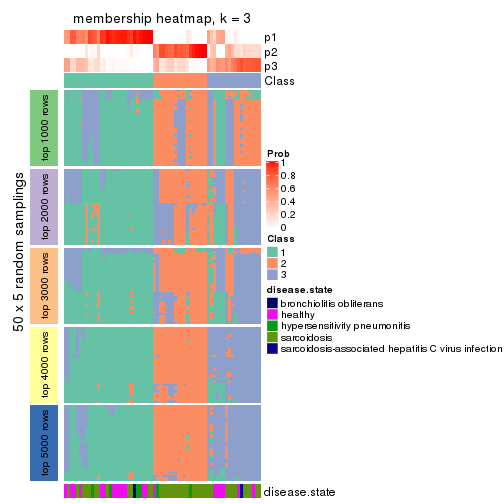
membership_heatmap(res, k = 4)
membership_heatmap(res, k = 5)
membership_heatmap(res, k = 6)
As soon as we have had the classes for columns, we can look for signatures which are significantly different between classes which can be candidate marks for certain classes. Following are the heatmaps for signatures.
Signature heatmaps where rows are scaled:
get_signatures(res, k = 2)
get_signatures(res, k = 3)
get_signatures(res, k = 4)
get_signatures(res, k = 5)
get_signatures(res, k = 6)
Signature heatmaps where rows are not scaled:
get_signatures(res, k = 2, scale_rows = FALSE)
get_signatures(res, k = 3, scale_rows = FALSE)
get_signatures(res, k = 4, scale_rows = FALSE)

get_signatures(res, k = 5, scale_rows = FALSE)
get_signatures(res, k = 6, scale_rows = FALSE)
Compare the overlap of signatures from different k:
compare_signatures(res)
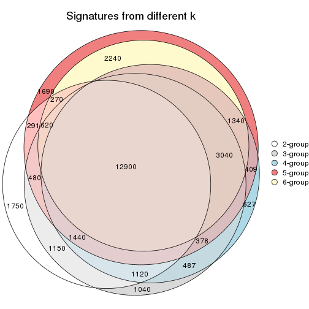
get_signature() returns a data frame invisibly. TO get the list of signatures, the function
call should be assigned to a variable explicitly. In following code, if plot argument is set
to FALSE, no heatmap is plotted while only the differential analysis is performed.
# code only for demonstration
tb = get_signature(res, k = ..., plot = FALSE)
An example of the output of tb is:
#> which_row fdr mean_1 mean_2 scaled_mean_1 scaled_mean_2 km
#> 1 38 0.042760348 8.373488 9.131774 -0.5533452 0.5164555 1
#> 2 40 0.018707592 7.106213 8.469186 -0.6173731 0.5762149 1
#> 3 55 0.019134737 10.221463 11.207825 -0.6159697 0.5749050 1
#> 4 59 0.006059896 5.921854 7.869574 -0.6899429 0.6439467 1
#> 5 60 0.018055526 8.928898 10.211722 -0.6204761 0.5791110 1
#> 6 98 0.009384629 15.714769 14.887706 0.6635654 -0.6193277 2
...
The columns in tb are:
which_row: row indices corresponding to the input matrix.fdr: FDR for the differential test. mean_x: The mean value in group x.scaled_mean_x: The mean value in group x after rows are scaled.km: Row groups if k-means clustering is applied to rows.UMAP plot which shows how samples are separated.
dimension_reduction(res, k = 2, method = "UMAP")
dimension_reduction(res, k = 3, method = "UMAP")
dimension_reduction(res, k = 4, method = "UMAP")
dimension_reduction(res, k = 5, method = "UMAP")
dimension_reduction(res, k = 6, method = "UMAP")
Following heatmap shows how subgroups are split when increasing k:
collect_classes(res)
Test correlation between subgroups and known annotations. If the known annotation is numeric, one-way ANOVA test is applied, and if the known annotation is discrete, chi-squared contingency table test is applied.
test_to_known_factors(res)
#> n disease.state(p) k
#> MAD:NMF 64 0.003091 2
#> MAD:NMF 48 0.004257 3
#> MAD:NMF 53 0.004408 4
#> MAD:NMF 51 0.003103 5
#> MAD:NMF 35 0.000629 6
If matrix rows can be associated to genes, consider to use functional_enrichment(res,
...) to perform function enrichment for the signature genes. See this vignette for more detailed explanations.
The object with results only for a single top-value method and a single partition method can be extracted as:
res = res_list["ATC", "hclust"]
# you can also extract it by
# res = res_list["ATC:hclust"]
A summary of res and all the functions that can be applied to it:
res
#> A 'ConsensusPartition' object with k = 2, 3, 4, 5, 6.
#> On a matrix with 51941 rows and 66 columns.
#> Top rows (1000, 2000, 3000, 4000, 5000) are extracted by 'ATC' method.
#> Subgroups are detected by 'hclust' method.
#> Performed in total 1250 partitions by row resampling.
#> Best k for subgroups seems to be 3.
#>
#> Following methods can be applied to this 'ConsensusPartition' object:
#> [1] "cola_report" "collect_classes" "collect_plots"
#> [4] "collect_stats" "colnames" "compare_signatures"
#> [7] "consensus_heatmap" "dimension_reduction" "functional_enrichment"
#> [10] "get_anno_col" "get_anno" "get_classes"
#> [13] "get_consensus" "get_matrix" "get_membership"
#> [16] "get_param" "get_signatures" "get_stats"
#> [19] "is_best_k" "is_stable_k" "membership_heatmap"
#> [22] "ncol" "nrow" "plot_ecdf"
#> [25] "rownames" "select_partition_number" "show"
#> [28] "suggest_best_k" "test_to_known_factors"
collect_plots() function collects all the plots made from res for all k (number of partitions)
into one single page to provide an easy and fast comparison between different k.
collect_plots(res)
The plots are:
k and the heatmap of
predicted classes for each k.k.k.k.All the plots in panels can be made by individual functions and they are plotted later in this section.
select_partition_number() produces several plots showing different
statistics for choosing “optimized” k. There are following statistics:
k;k, the area increased is defined as \(A_k - A_{k-1}\).The detailed explanations of these statistics can be found in the cola vignette.
Generally speaking, lower PAC score, higher mean silhouette score or higher
concordance corresponds to better partition. Rand index and Jaccard index
measure how similar the current partition is compared to partition with k-1.
If they are too similar, we won't accept k is better than k-1.
select_partition_number(res)
The numeric values for all these statistics can be obtained by get_stats().
get_stats(res)
#> k 1-PAC mean_silhouette concordance area_increased Rand Jaccard
#> 2 2 0.573 0.887 0.933 0.3879 0.661 0.661
#> 3 3 0.707 0.812 0.915 0.5884 0.702 0.548
#> 4 4 0.610 0.632 0.780 0.1155 0.916 0.775
#> 5 5 0.632 0.624 0.778 0.0568 0.955 0.861
#> 6 6 0.656 0.612 0.731 0.0489 1.000 1.000
suggest_best_k() suggests the best \(k\) based on these statistics. The rules are as follows:
suggest_best_k(res)
#> [1] 3
Following shows the table of the partitions (You need to click the show/hide
code output link to see it). The membership matrix (columns with name p*)
is inferred by
clue::cl_consensus()
function with the SE method. Basically the value in the membership matrix
represents the probability to belong to a certain group. The finall class
label for an item is determined with the group with highest probability it
belongs to.
In get_classes() function, the entropy is calculated from the membership
matrix and the silhouette score is calculated from the consensus matrix.
cbind(get_classes(res, k = 2), get_membership(res, k = 2))
#> class entropy silhouette p1 p2
#> GSM479917 1 0.9129 0.664 0.672 0.328
#> GSM479920 1 0.8144 0.754 0.748 0.252
#> GSM479924 2 0.0000 1.000 0.000 1.000
#> GSM479926 1 0.0000 0.910 1.000 0.000
#> GSM479927 2 0.0000 1.000 0.000 1.000
#> GSM479931 2 0.0000 1.000 0.000 1.000
#> GSM479932 2 0.0000 1.000 0.000 1.000
#> GSM479933 1 0.6343 0.837 0.840 0.160
#> GSM479934 2 0.0000 1.000 0.000 1.000
#> GSM479935 1 0.0000 0.910 1.000 0.000
#> GSM479942 1 0.0000 0.910 1.000 0.000
#> GSM479943 1 0.0000 0.910 1.000 0.000
#> GSM479944 1 0.0000 0.910 1.000 0.000
#> GSM479945 2 0.0000 1.000 0.000 1.000
#> GSM479946 2 0.0000 1.000 0.000 1.000
#> GSM479949 1 0.8144 0.754 0.748 0.252
#> GSM479951 2 0.0000 1.000 0.000 1.000
#> GSM479952 1 0.6343 0.837 0.840 0.160
#> GSM479953 1 0.5059 0.864 0.888 0.112
#> GSM479956 1 0.6343 0.837 0.840 0.160
#> GSM479957 1 0.0000 0.910 1.000 0.000
#> GSM479959 1 0.0000 0.910 1.000 0.000
#> GSM479960 2 0.0000 1.000 0.000 1.000
#> GSM479961 2 0.0000 1.000 0.000 1.000
#> GSM479962 2 0.0000 1.000 0.000 1.000
#> GSM479963 1 0.0000 0.910 1.000 0.000
#> GSM479964 1 0.6973 0.815 0.812 0.188
#> GSM479965 1 0.0000 0.910 1.000 0.000
#> GSM479968 1 0.6343 0.837 0.840 0.160
#> GSM479969 1 0.9044 0.676 0.680 0.320
#> GSM479971 1 0.0672 0.908 0.992 0.008
#> GSM479972 2 0.0000 1.000 0.000 1.000
#> GSM479973 1 0.9087 0.670 0.676 0.324
#> GSM479974 1 0.9129 0.664 0.672 0.328
#> GSM479977 1 0.5059 0.864 0.888 0.112
#> GSM479979 2 0.0000 1.000 0.000 1.000
#> GSM479980 1 0.0938 0.907 0.988 0.012
#> GSM479981 2 0.0000 1.000 0.000 1.000
#> GSM479918 1 0.0000 0.910 1.000 0.000
#> GSM479929 1 0.0000 0.910 1.000 0.000
#> GSM479930 1 0.9044 0.676 0.680 0.320
#> GSM479938 1 0.0000 0.910 1.000 0.000
#> GSM479950 1 0.0000 0.910 1.000 0.000
#> GSM479955 1 0.9044 0.676 0.680 0.320
#> GSM479919 1 0.0000 0.910 1.000 0.000
#> GSM479921 1 0.0000 0.910 1.000 0.000
#> GSM479922 1 0.0000 0.910 1.000 0.000
#> GSM479923 1 0.0000 0.910 1.000 0.000
#> GSM479925 1 0.5294 0.861 0.880 0.120
#> GSM479928 1 0.6343 0.837 0.840 0.160
#> GSM479936 1 0.0000 0.910 1.000 0.000
#> GSM479937 1 0.0376 0.909 0.996 0.004
#> GSM479939 1 0.0000 0.910 1.000 0.000
#> GSM479940 1 0.0000 0.910 1.000 0.000
#> GSM479941 1 0.0000 0.910 1.000 0.000
#> GSM479947 1 0.0000 0.910 1.000 0.000
#> GSM479948 1 0.8955 0.686 0.688 0.312
#> GSM479954 1 0.0000 0.910 1.000 0.000
#> GSM479958 1 0.0000 0.910 1.000 0.000
#> GSM479966 1 0.0000 0.910 1.000 0.000
#> GSM479967 1 0.0000 0.910 1.000 0.000
#> GSM479970 1 0.8763 0.707 0.704 0.296
#> GSM479975 1 0.0000 0.910 1.000 0.000
#> GSM479976 1 0.0000 0.910 1.000 0.000
#> GSM479982 1 0.1633 0.902 0.976 0.024
#> GSM479978 1 0.0000 0.910 1.000 0.000
cbind(get_classes(res, k = 3), get_membership(res, k = 3))
#> class entropy silhouette p1 p2 p3
#> GSM479917 3 0.0424 0.7651 0.000 0.008 0.992
#> GSM479920 3 0.2796 0.7856 0.092 0.000 0.908
#> GSM479924 2 0.0000 0.9487 0.000 1.000 0.000
#> GSM479926 1 0.0237 0.9364 0.996 0.000 0.004
#> GSM479927 2 0.4931 0.7684 0.000 0.768 0.232
#> GSM479931 2 0.0000 0.9487 0.000 1.000 0.000
#> GSM479932 2 0.0000 0.9487 0.000 1.000 0.000
#> GSM479933 3 0.4399 0.7799 0.188 0.000 0.812
#> GSM479934 2 0.0000 0.9487 0.000 1.000 0.000
#> GSM479935 1 0.0000 0.9366 1.000 0.000 0.000
#> GSM479942 1 0.0000 0.9366 1.000 0.000 0.000
#> GSM479943 1 0.0000 0.9366 1.000 0.000 0.000
#> GSM479944 1 0.0000 0.9366 1.000 0.000 0.000
#> GSM479945 2 0.0000 0.9487 0.000 1.000 0.000
#> GSM479946 2 0.0000 0.9487 0.000 1.000 0.000
#> GSM479949 3 0.2796 0.7856 0.092 0.000 0.908
#> GSM479951 2 0.0000 0.9487 0.000 1.000 0.000
#> GSM479952 3 0.4399 0.7799 0.188 0.000 0.812
#> GSM479953 3 0.6307 0.2760 0.488 0.000 0.512
#> GSM479956 3 0.4399 0.7799 0.188 0.000 0.812
#> GSM479957 1 0.3340 0.8080 0.880 0.000 0.120
#> GSM479959 1 0.0747 0.9285 0.984 0.000 0.016
#> GSM479960 2 0.0000 0.9487 0.000 1.000 0.000
#> GSM479961 2 0.4750 0.7825 0.000 0.784 0.216
#> GSM479962 2 0.4931 0.7684 0.000 0.768 0.232
#> GSM479963 1 0.0000 0.9366 1.000 0.000 0.000
#> GSM479964 3 0.5948 0.5599 0.360 0.000 0.640
#> GSM479965 1 0.0237 0.9364 0.996 0.000 0.004
#> GSM479968 3 0.4399 0.7799 0.188 0.000 0.812
#> GSM479969 3 0.0237 0.7709 0.004 0.000 0.996
#> GSM479971 1 0.6192 0.0885 0.580 0.000 0.420
#> GSM479972 2 0.0000 0.9487 0.000 1.000 0.000
#> GSM479973 3 0.0661 0.7676 0.004 0.008 0.988
#> GSM479974 3 0.0424 0.7651 0.000 0.008 0.992
#> GSM479977 3 0.6299 0.3118 0.476 0.000 0.524
#> GSM479979 2 0.0000 0.9487 0.000 1.000 0.000
#> GSM479980 1 0.6299 -0.1508 0.524 0.000 0.476
#> GSM479981 2 0.0000 0.9487 0.000 1.000 0.000
#> GSM479918 1 0.0000 0.9366 1.000 0.000 0.000
#> GSM479929 1 0.0000 0.9366 1.000 0.000 0.000
#> GSM479930 3 0.0000 0.7682 0.000 0.000 1.000
#> GSM479938 1 0.0892 0.9259 0.980 0.000 0.020
#> GSM479950 1 0.0892 0.9259 0.980 0.000 0.020
#> GSM479955 3 0.0000 0.7682 0.000 0.000 1.000
#> GSM479919 1 0.0000 0.9366 1.000 0.000 0.000
#> GSM479921 1 0.0000 0.9366 1.000 0.000 0.000
#> GSM479922 1 0.0237 0.9364 0.996 0.000 0.004
#> GSM479923 1 0.0892 0.9254 0.980 0.000 0.020
#> GSM479925 3 0.5882 0.5814 0.348 0.000 0.652
#> GSM479928 3 0.4399 0.7799 0.188 0.000 0.812
#> GSM479936 1 0.0237 0.9364 0.996 0.000 0.004
#> GSM479937 1 0.5058 0.6014 0.756 0.000 0.244
#> GSM479939 1 0.0000 0.9366 1.000 0.000 0.000
#> GSM479940 1 0.4452 0.6975 0.808 0.000 0.192
#> GSM479941 1 0.0000 0.9366 1.000 0.000 0.000
#> GSM479947 1 0.0237 0.9364 0.996 0.000 0.004
#> GSM479948 3 0.0592 0.7751 0.012 0.000 0.988
#> GSM479954 1 0.0237 0.9364 0.996 0.000 0.004
#> GSM479958 1 0.0237 0.9364 0.996 0.000 0.004
#> GSM479966 1 0.0000 0.9366 1.000 0.000 0.000
#> GSM479967 1 0.0237 0.9364 0.996 0.000 0.004
#> GSM479970 3 0.1289 0.7818 0.032 0.000 0.968
#> GSM479975 1 0.0000 0.9366 1.000 0.000 0.000
#> GSM479976 1 0.0237 0.9364 0.996 0.000 0.004
#> GSM479982 3 0.6305 0.2146 0.484 0.000 0.516
#> GSM479978 1 0.0000 0.9366 1.000 0.000 0.000
cbind(get_classes(res, k = 4), get_membership(res, k = 4))
#> class entropy silhouette p1 p2 p3 p4
#> GSM479917 4 0.4985 -0.280 0.000 0.000 0.468 0.532
#> GSM479920 3 0.4972 0.447 0.000 0.000 0.544 0.456
#> GSM479924 2 0.0000 0.952 0.000 1.000 0.000 0.000
#> GSM479926 1 0.3074 0.865 0.848 0.000 0.000 0.152
#> GSM479927 2 0.5077 0.794 0.000 0.760 0.080 0.160
#> GSM479931 2 0.0000 0.952 0.000 1.000 0.000 0.000
#> GSM479932 2 0.0000 0.952 0.000 1.000 0.000 0.000
#> GSM479933 4 0.6366 0.123 0.064 0.000 0.424 0.512
#> GSM479934 2 0.0000 0.952 0.000 1.000 0.000 0.000
#> GSM479935 1 0.0000 0.862 1.000 0.000 0.000 0.000
#> GSM479942 1 0.2408 0.847 0.896 0.000 0.000 0.104
#> GSM479943 1 0.0921 0.864 0.972 0.000 0.000 0.028
#> GSM479944 1 0.2408 0.847 0.896 0.000 0.000 0.104
#> GSM479945 2 0.0000 0.952 0.000 1.000 0.000 0.000
#> GSM479946 2 0.0000 0.952 0.000 1.000 0.000 0.000
#> GSM479949 3 0.4972 0.447 0.000 0.000 0.544 0.456
#> GSM479951 2 0.0000 0.952 0.000 1.000 0.000 0.000
#> GSM479952 4 0.6366 0.123 0.064 0.000 0.424 0.512
#> GSM479953 4 0.7896 0.128 0.328 0.000 0.300 0.372
#> GSM479956 4 0.6366 0.123 0.064 0.000 0.424 0.512
#> GSM479957 1 0.4981 0.507 0.536 0.000 0.000 0.464
#> GSM479959 1 0.3942 0.813 0.764 0.000 0.000 0.236
#> GSM479960 2 0.0000 0.952 0.000 1.000 0.000 0.000
#> GSM479961 2 0.4804 0.808 0.000 0.776 0.064 0.160
#> GSM479962 2 0.5077 0.794 0.000 0.760 0.080 0.160
#> GSM479963 1 0.2814 0.868 0.868 0.000 0.000 0.132
#> GSM479964 3 0.7605 -0.112 0.200 0.000 0.416 0.384
#> GSM479965 1 0.2921 0.867 0.860 0.000 0.000 0.140
#> GSM479968 4 0.6366 0.123 0.064 0.000 0.424 0.512
#> GSM479969 3 0.4222 0.576 0.000 0.000 0.728 0.272
#> GSM479971 4 0.4678 0.282 0.232 0.000 0.024 0.744
#> GSM479972 2 0.0000 0.952 0.000 1.000 0.000 0.000
#> GSM479973 4 0.4989 -0.283 0.000 0.000 0.472 0.528
#> GSM479974 4 0.4992 -0.284 0.000 0.000 0.476 0.524
#> GSM479977 4 0.7889 0.125 0.316 0.000 0.304 0.380
#> GSM479979 2 0.0000 0.952 0.000 1.000 0.000 0.000
#> GSM479980 4 0.3547 0.299 0.144 0.000 0.016 0.840
#> GSM479981 2 0.0000 0.952 0.000 1.000 0.000 0.000
#> GSM479918 1 0.0000 0.862 1.000 0.000 0.000 0.000
#> GSM479929 1 0.0000 0.862 1.000 0.000 0.000 0.000
#> GSM479930 3 0.0188 0.353 0.000 0.000 0.996 0.004
#> GSM479938 1 0.3982 0.819 0.776 0.000 0.004 0.220
#> GSM479950 1 0.3982 0.819 0.776 0.000 0.004 0.220
#> GSM479955 3 0.4193 0.574 0.000 0.000 0.732 0.268
#> GSM479919 1 0.0000 0.862 1.000 0.000 0.000 0.000
#> GSM479921 1 0.0000 0.862 1.000 0.000 0.000 0.000
#> GSM479922 1 0.2081 0.871 0.916 0.000 0.000 0.084
#> GSM479923 1 0.4008 0.807 0.756 0.000 0.000 0.244
#> GSM479925 4 0.7265 0.177 0.184 0.000 0.288 0.528
#> GSM479928 4 0.6366 0.123 0.064 0.000 0.424 0.512
#> GSM479936 1 0.3074 0.863 0.848 0.000 0.000 0.152
#> GSM479937 1 0.5693 0.307 0.504 0.000 0.024 0.472
#> GSM479939 1 0.0000 0.862 1.000 0.000 0.000 0.000
#> GSM479940 1 0.5329 0.472 0.568 0.000 0.012 0.420
#> GSM479941 1 0.0000 0.862 1.000 0.000 0.000 0.000
#> GSM479947 1 0.3123 0.862 0.844 0.000 0.000 0.156
#> GSM479948 3 0.4304 0.570 0.000 0.000 0.716 0.284
#> GSM479954 1 0.3074 0.863 0.848 0.000 0.000 0.152
#> GSM479958 1 0.3123 0.862 0.844 0.000 0.000 0.156
#> GSM479966 1 0.0000 0.862 1.000 0.000 0.000 0.000
#> GSM479967 1 0.3123 0.862 0.844 0.000 0.000 0.156
#> GSM479970 3 0.4761 0.500 0.004 0.000 0.664 0.332
#> GSM479975 1 0.0000 0.862 1.000 0.000 0.000 0.000
#> GSM479976 1 0.3024 0.865 0.852 0.000 0.000 0.148
#> GSM479982 4 0.4465 0.305 0.144 0.000 0.056 0.800
#> GSM479978 1 0.0000 0.862 1.000 0.000 0.000 0.000
cbind(get_classes(res, k = 5), get_membership(res, k = 5))
#> class entropy silhouette p1 p2 p3 p4 p5
#> GSM479917 4 0.5404 0.461 0.000 0.000 0.264 0.636 0.100
#> GSM479920 5 0.6038 0.237 0.012 0.000 0.080 0.440 0.468
#> GSM479924 2 0.2488 0.854 0.000 0.872 0.004 0.000 0.124
#> GSM479926 1 0.3636 0.752 0.832 0.000 0.004 0.080 0.084
#> GSM479927 2 0.3635 0.723 0.000 0.748 0.248 0.000 0.004
#> GSM479931 2 0.2488 0.854 0.000 0.872 0.004 0.000 0.124
#> GSM479932 2 0.0162 0.897 0.000 0.996 0.000 0.000 0.004
#> GSM479933 4 0.0000 0.554 0.000 0.000 0.000 1.000 0.000
#> GSM479934 2 0.0162 0.897 0.000 0.996 0.000 0.000 0.004
#> GSM479935 1 0.2648 0.765 0.848 0.000 0.000 0.000 0.152
#> GSM479942 1 0.3733 0.747 0.804 0.000 0.004 0.032 0.160
#> GSM479943 1 0.2833 0.769 0.852 0.000 0.004 0.004 0.140
#> GSM479944 1 0.3733 0.747 0.804 0.000 0.004 0.032 0.160
#> GSM479945 2 0.0000 0.897 0.000 1.000 0.000 0.000 0.000
#> GSM479946 2 0.0000 0.897 0.000 1.000 0.000 0.000 0.000
#> GSM479949 5 0.6038 0.237 0.012 0.000 0.080 0.440 0.468
#> GSM479951 2 0.0162 0.897 0.000 0.996 0.000 0.000 0.004
#> GSM479952 4 0.0000 0.554 0.000 0.000 0.000 1.000 0.000
#> GSM479953 5 0.7596 0.509 0.304 0.000 0.044 0.276 0.376
#> GSM479956 4 0.0000 0.554 0.000 0.000 0.000 1.000 0.000
#> GSM479957 1 0.6962 0.246 0.520 0.000 0.032 0.224 0.224
#> GSM479959 1 0.4586 0.666 0.760 0.000 0.008 0.148 0.084
#> GSM479960 2 0.0324 0.897 0.000 0.992 0.004 0.000 0.004
#> GSM479961 2 0.3366 0.740 0.000 0.768 0.232 0.000 0.000
#> GSM479962 2 0.3635 0.723 0.000 0.748 0.248 0.000 0.004
#> GSM479963 1 0.3012 0.772 0.872 0.000 0.004 0.052 0.072
#> GSM479964 5 0.7189 0.499 0.184 0.000 0.036 0.332 0.448
#> GSM479965 1 0.3073 0.776 0.868 0.000 0.004 0.076 0.052
#> GSM479968 4 0.0000 0.554 0.000 0.000 0.000 1.000 0.000
#> GSM479969 4 0.4901 0.399 0.000 0.000 0.060 0.672 0.268
#> GSM479971 4 0.6894 0.106 0.228 0.000 0.032 0.532 0.208
#> GSM479972 2 0.0000 0.897 0.000 1.000 0.000 0.000 0.000
#> GSM479973 4 0.5515 0.457 0.000 0.000 0.268 0.624 0.108
#> GSM479974 4 0.5493 0.458 0.000 0.000 0.264 0.628 0.108
#> GSM479977 5 0.7593 0.521 0.292 0.000 0.044 0.284 0.380
#> GSM479979 2 0.2488 0.854 0.000 0.872 0.004 0.000 0.124
#> GSM479980 4 0.6463 0.214 0.140 0.000 0.032 0.588 0.240
#> GSM479981 2 0.2488 0.854 0.000 0.872 0.004 0.000 0.124
#> GSM479918 1 0.2648 0.765 0.848 0.000 0.000 0.000 0.152
#> GSM479929 1 0.2561 0.767 0.856 0.000 0.000 0.000 0.144
#> GSM479930 3 0.5046 0.000 0.000 0.000 0.704 0.140 0.156
#> GSM479938 1 0.3871 0.699 0.808 0.000 0.004 0.132 0.056
#> GSM479950 1 0.3871 0.699 0.808 0.000 0.004 0.132 0.056
#> GSM479955 4 0.4960 0.397 0.000 0.000 0.064 0.668 0.268
#> GSM479919 1 0.2648 0.766 0.848 0.000 0.000 0.000 0.152
#> GSM479921 1 0.2690 0.764 0.844 0.000 0.000 0.000 0.156
#> GSM479922 1 0.1399 0.781 0.952 0.000 0.000 0.020 0.028
#> GSM479923 1 0.4704 0.654 0.748 0.000 0.008 0.160 0.084
#> GSM479925 4 0.6580 -0.136 0.176 0.000 0.024 0.564 0.236
#> GSM479928 4 0.0000 0.554 0.000 0.000 0.000 1.000 0.000
#> GSM479936 1 0.2747 0.764 0.888 0.000 0.004 0.060 0.048
#> GSM479937 1 0.5594 0.175 0.532 0.000 0.004 0.400 0.064
#> GSM479939 1 0.2648 0.765 0.848 0.000 0.000 0.000 0.152
#> GSM479940 1 0.5324 0.333 0.600 0.000 0.004 0.340 0.056
#> GSM479941 1 0.2929 0.762 0.840 0.000 0.008 0.000 0.152
#> GSM479947 1 0.2878 0.761 0.880 0.000 0.004 0.068 0.048
#> GSM479948 4 0.4793 0.410 0.000 0.000 0.056 0.684 0.260
#> GSM479954 1 0.2747 0.764 0.888 0.000 0.004 0.060 0.048
#> GSM479958 1 0.2878 0.761 0.880 0.000 0.004 0.068 0.048
#> GSM479966 1 0.2719 0.766 0.852 0.000 0.004 0.000 0.144
#> GSM479967 1 0.2878 0.761 0.880 0.000 0.004 0.068 0.048
#> GSM479970 4 0.3999 0.454 0.000 0.000 0.020 0.740 0.240
#> GSM479975 1 0.2648 0.765 0.848 0.000 0.000 0.000 0.152
#> GSM479976 1 0.3202 0.770 0.860 0.000 0.004 0.080 0.056
#> GSM479982 4 0.6200 0.265 0.136 0.000 0.032 0.628 0.204
#> GSM479978 1 0.2971 0.761 0.836 0.000 0.008 0.000 0.156
cbind(get_classes(res, k = 6), get_membership(res, k = 6))
#> class entropy silhouette p1 p2 p3 p4 p5 p6
#> GSM479917 4 0.5552 0.5126 0.000 0.000 0.192 0.648 NA 0.056
#> GSM479920 6 0.3877 0.4403 0.000 0.000 0.040 0.208 NA 0.748
#> GSM479924 2 0.4568 0.6724 0.000 0.684 0.004 0.000 NA 0.076
#> GSM479926 1 0.3222 0.6767 0.844 0.000 0.000 0.024 NA 0.096
#> GSM479927 2 0.4650 0.5864 0.000 0.688 0.212 0.000 NA 0.004
#> GSM479931 2 0.4568 0.6724 0.000 0.684 0.004 0.000 NA 0.076
#> GSM479932 2 0.0146 0.8062 0.000 0.996 0.000 0.000 NA 0.000
#> GSM479933 4 0.1082 0.6494 0.040 0.000 0.000 0.956 NA 0.004
#> GSM479934 2 0.0146 0.8062 0.000 0.996 0.000 0.000 NA 0.000
#> GSM479935 1 0.3563 0.7015 0.664 0.000 0.000 0.000 NA 0.000
#> GSM479942 1 0.4420 0.7079 0.676 0.000 0.004 0.032 NA 0.008
#> GSM479943 1 0.3601 0.7153 0.684 0.000 0.000 0.004 NA 0.000
#> GSM479944 1 0.4420 0.7079 0.676 0.000 0.004 0.032 NA 0.008
#> GSM479945 2 0.0000 0.8066 0.000 1.000 0.000 0.000 NA 0.000
#> GSM479946 2 0.0000 0.8066 0.000 1.000 0.000 0.000 NA 0.000
#> GSM479949 6 0.3877 0.4403 0.000 0.000 0.040 0.208 NA 0.748
#> GSM479951 2 0.0146 0.8062 0.000 0.996 0.000 0.000 NA 0.000
#> GSM479952 4 0.1082 0.6494 0.040 0.000 0.000 0.956 NA 0.004
#> GSM479953 6 0.4633 0.5888 0.196 0.000 0.000 0.032 NA 0.716
#> GSM479956 4 0.1082 0.6494 0.040 0.000 0.000 0.956 NA 0.004
#> GSM479957 1 0.6804 0.2151 0.512 0.000 0.004 0.184 NA 0.088
#> GSM479959 1 0.4079 0.5953 0.788 0.000 0.000 0.084 NA 0.096
#> GSM479960 2 0.1644 0.7880 0.000 0.920 0.004 0.000 NA 0.000
#> GSM479961 2 0.4438 0.6042 0.000 0.708 0.208 0.000 NA 0.004
#> GSM479962 2 0.4650 0.5864 0.000 0.688 0.212 0.000 NA 0.004
#> GSM479963 1 0.1753 0.7304 0.912 0.000 0.000 0.004 NA 0.000
#> GSM479964 6 0.3567 0.5997 0.124 0.000 0.000 0.068 NA 0.804
#> GSM479965 1 0.2604 0.7271 0.888 0.000 0.000 0.024 NA 0.032
#> GSM479968 4 0.1082 0.6494 0.040 0.000 0.000 0.956 NA 0.004
#> GSM479969 4 0.4901 0.4914 0.000 0.000 0.100 0.712 NA 0.152
#> GSM479971 4 0.6117 0.2882 0.284 0.000 0.004 0.492 NA 0.008
#> GSM479972 2 0.0000 0.8066 0.000 1.000 0.000 0.000 NA 0.000
#> GSM479973 4 0.5698 0.5070 0.000 0.000 0.192 0.636 NA 0.064
#> GSM479974 4 0.5658 0.5079 0.000 0.000 0.192 0.640 NA 0.064
#> GSM479977 6 0.4678 0.6027 0.184 0.000 0.000 0.040 NA 0.720
#> GSM479979 2 0.4568 0.6724 0.000 0.684 0.004 0.000 NA 0.076
#> GSM479980 4 0.5953 0.3649 0.196 0.000 0.004 0.548 NA 0.012
#> GSM479981 2 0.4568 0.6724 0.000 0.684 0.004 0.000 NA 0.076
#> GSM479918 1 0.3563 0.7015 0.664 0.000 0.000 0.000 NA 0.000
#> GSM479929 1 0.3266 0.7172 0.728 0.000 0.000 0.000 NA 0.000
#> GSM479930 3 0.3822 0.0000 0.000 0.000 0.776 0.096 NA 0.128
#> GSM479938 1 0.3325 0.6728 0.820 0.000 0.000 0.096 NA 0.000
#> GSM479950 1 0.3325 0.6728 0.820 0.000 0.000 0.096 NA 0.000
#> GSM479955 4 0.4935 0.4887 0.000 0.000 0.100 0.708 NA 0.156
#> GSM479919 1 0.4533 0.7079 0.652 0.000 0.000 0.000 NA 0.064
#> GSM479921 1 0.3728 0.6966 0.652 0.000 0.000 0.000 NA 0.004
#> GSM479922 1 0.2003 0.7397 0.884 0.000 0.000 0.000 NA 0.000
#> GSM479923 1 0.4224 0.5839 0.776 0.000 0.000 0.096 NA 0.096
#> GSM479925 4 0.6313 0.0546 0.216 0.000 0.016 0.476 NA 0.288
#> GSM479928 4 0.1082 0.6494 0.040 0.000 0.000 0.956 NA 0.004
#> GSM479936 1 0.1434 0.7168 0.948 0.000 0.000 0.008 NA 0.024
#> GSM479937 1 0.5218 0.2724 0.560 0.000 0.000 0.356 NA 0.012
#> GSM479939 1 0.3499 0.7077 0.680 0.000 0.000 0.000 NA 0.000
#> GSM479940 1 0.4886 0.4240 0.620 0.000 0.000 0.300 NA 0.004
#> GSM479941 1 0.3975 0.6644 0.600 0.000 0.000 0.000 NA 0.008
#> GSM479947 1 0.1726 0.7048 0.932 0.000 0.000 0.012 NA 0.044
#> GSM479948 4 0.4786 0.5039 0.000 0.000 0.096 0.724 NA 0.144
#> GSM479954 1 0.1434 0.7168 0.948 0.000 0.000 0.008 NA 0.024
#> GSM479958 1 0.1726 0.7048 0.932 0.000 0.000 0.012 NA 0.044
#> GSM479966 1 0.3774 0.6991 0.664 0.000 0.000 0.000 NA 0.008
#> GSM479967 1 0.1726 0.7048 0.932 0.000 0.000 0.012 NA 0.044
#> GSM479970 4 0.4276 0.5495 0.004 0.000 0.060 0.776 NA 0.124
#> GSM479975 1 0.3499 0.7083 0.680 0.000 0.000 0.000 NA 0.000
#> GSM479976 1 0.2477 0.7218 0.896 0.000 0.000 0.024 NA 0.032
#> GSM479982 4 0.5595 0.4025 0.196 0.000 0.004 0.588 NA 0.004
#> GSM479978 1 0.3975 0.6659 0.600 0.000 0.000 0.000 NA 0.008
Heatmaps for the consensus matrix. It visualizes the probability of two samples to be in a same group.
consensus_heatmap(res, k = 2)
consensus_heatmap(res, k = 3)
consensus_heatmap(res, k = 4)
consensus_heatmap(res, k = 5)
consensus_heatmap(res, k = 6)
Heatmaps for the membership of samples in all partitions to see how consistent they are:
membership_heatmap(res, k = 2)
membership_heatmap(res, k = 3)
membership_heatmap(res, k = 4)
membership_heatmap(res, k = 5)
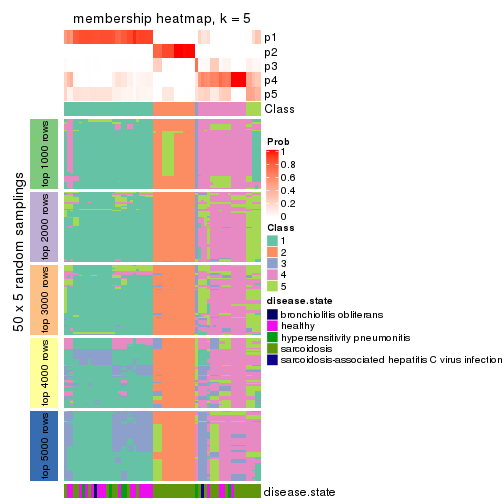
membership_heatmap(res, k = 6)
As soon as we have had the classes for columns, we can look for signatures which are significantly different between classes which can be candidate marks for certain classes. Following are the heatmaps for signatures.
Signature heatmaps where rows are scaled:
get_signatures(res, k = 2)
get_signatures(res, k = 3)
get_signatures(res, k = 4)
get_signatures(res, k = 5)
get_signatures(res, k = 6)
Signature heatmaps where rows are not scaled:
get_signatures(res, k = 2, scale_rows = FALSE)
get_signatures(res, k = 3, scale_rows = FALSE)
get_signatures(res, k = 4, scale_rows = FALSE)
get_signatures(res, k = 5, scale_rows = FALSE)
get_signatures(res, k = 6, scale_rows = FALSE)
Compare the overlap of signatures from different k:
compare_signatures(res)
get_signature() returns a data frame invisibly. TO get the list of signatures, the function
call should be assigned to a variable explicitly. In following code, if plot argument is set
to FALSE, no heatmap is plotted while only the differential analysis is performed.
# code only for demonstration
tb = get_signature(res, k = ..., plot = FALSE)
An example of the output of tb is:
#> which_row fdr mean_1 mean_2 scaled_mean_1 scaled_mean_2 km
#> 1 38 0.042760348 8.373488 9.131774 -0.5533452 0.5164555 1
#> 2 40 0.018707592 7.106213 8.469186 -0.6173731 0.5762149 1
#> 3 55 0.019134737 10.221463 11.207825 -0.6159697 0.5749050 1
#> 4 59 0.006059896 5.921854 7.869574 -0.6899429 0.6439467 1
#> 5 60 0.018055526 8.928898 10.211722 -0.6204761 0.5791110 1
#> 6 98 0.009384629 15.714769 14.887706 0.6635654 -0.6193277 2
...
The columns in tb are:
which_row: row indices corresponding to the input matrix.fdr: FDR for the differential test. mean_x: The mean value in group x.scaled_mean_x: The mean value in group x after rows are scaled.km: Row groups if k-means clustering is applied to rows.UMAP plot which shows how samples are separated.
dimension_reduction(res, k = 2, method = "UMAP")
dimension_reduction(res, k = 3, method = "UMAP")
dimension_reduction(res, k = 4, method = "UMAP")
dimension_reduction(res, k = 5, method = "UMAP")
dimension_reduction(res, k = 6, method = "UMAP")
Following heatmap shows how subgroups are split when increasing k:
collect_classes(res)
Test correlation between subgroups and known annotations. If the known annotation is numeric, one-way ANOVA test is applied, and if the known annotation is discrete, chi-squared contingency table test is applied.
test_to_known_factors(res)
#> n disease.state(p) k
#> ATC:hclust 66 0.01083 2
#> ATC:hclust 61 0.00228 3
#> ATC:hclust 46 0.00407 4
#> ATC:hclust 48 0.00975 5
#> ATC:hclust 54 0.00649 6
If matrix rows can be associated to genes, consider to use functional_enrichment(res,
...) to perform function enrichment for the signature genes. See this vignette for more detailed explanations.
The object with results only for a single top-value method and a single partition method can be extracted as:
res = res_list["ATC", "kmeans"]
# you can also extract it by
# res = res_list["ATC:kmeans"]
A summary of res and all the functions that can be applied to it:
res
#> A 'ConsensusPartition' object with k = 2, 3, 4, 5, 6.
#> On a matrix with 51941 rows and 66 columns.
#> Top rows (1000, 2000, 3000, 4000, 5000) are extracted by 'ATC' method.
#> Subgroups are detected by 'kmeans' method.
#> Performed in total 1250 partitions by row resampling.
#> Best k for subgroups seems to be 3.
#>
#> Following methods can be applied to this 'ConsensusPartition' object:
#> [1] "cola_report" "collect_classes" "collect_plots"
#> [4] "collect_stats" "colnames" "compare_signatures"
#> [7] "consensus_heatmap" "dimension_reduction" "functional_enrichment"
#> [10] "get_anno_col" "get_anno" "get_classes"
#> [13] "get_consensus" "get_matrix" "get_membership"
#> [16] "get_param" "get_signatures" "get_stats"
#> [19] "is_best_k" "is_stable_k" "membership_heatmap"
#> [22] "ncol" "nrow" "plot_ecdf"
#> [25] "rownames" "select_partition_number" "show"
#> [28] "suggest_best_k" "test_to_known_factors"
collect_plots() function collects all the plots made from res for all k (number of partitions)
into one single page to provide an easy and fast comparison between different k.
collect_plots(res)
The plots are:
k and the heatmap of
predicted classes for each k.k.k.k.All the plots in panels can be made by individual functions and they are plotted later in this section.
select_partition_number() produces several plots showing different
statistics for choosing “optimized” k. There are following statistics:
k;k, the area increased is defined as \(A_k - A_{k-1}\).The detailed explanations of these statistics can be found in the cola vignette.
Generally speaking, lower PAC score, higher mean silhouette score or higher
concordance corresponds to better partition. Rand index and Jaccard index
measure how similar the current partition is compared to partition with k-1.
If they are too similar, we won't accept k is better than k-1.
select_partition_number(res)
The numeric values for all these statistics can be obtained by get_stats().
get_stats(res)
#> k 1-PAC mean_silhouette concordance area_increased Rand Jaccard
#> 2 2 0.656 0.895 0.950 0.4457 0.539 0.539
#> 3 3 1.000 0.952 0.981 0.4571 0.705 0.503
#> 4 4 0.675 0.636 0.824 0.1228 0.945 0.847
#> 5 5 0.655 0.523 0.740 0.0723 0.869 0.606
#> 6 6 0.650 0.459 0.711 0.0411 0.942 0.755
suggest_best_k() suggests the best \(k\) based on these statistics. The rules are as follows:
suggest_best_k(res)
#> [1] 3
Following shows the table of the partitions (You need to click the show/hide
code output link to see it). The membership matrix (columns with name p*)
is inferred by
clue::cl_consensus()
function with the SE method. Basically the value in the membership matrix
represents the probability to belong to a certain group. The finall class
label for an item is determined with the group with highest probability it
belongs to.
In get_classes() function, the entropy is calculated from the membership
matrix and the silhouette score is calculated from the consensus matrix.
cbind(get_classes(res, k = 2), get_membership(res, k = 2))
#> class entropy silhouette p1 p2
#> GSM479917 2 0.9044 0.602 0.320 0.680
#> GSM479920 2 0.9044 0.602 0.320 0.680
#> GSM479924 2 0.0000 0.902 0.000 1.000
#> GSM479926 1 0.0000 0.963 1.000 0.000
#> GSM479927 2 0.0000 0.902 0.000 1.000
#> GSM479931 2 0.0000 0.902 0.000 1.000
#> GSM479932 2 0.0000 0.902 0.000 1.000
#> GSM479933 1 0.6531 0.805 0.832 0.168
#> GSM479934 2 0.0000 0.902 0.000 1.000
#> GSM479935 1 0.0000 0.963 1.000 0.000
#> GSM479942 1 0.0000 0.963 1.000 0.000
#> GSM479943 1 0.0000 0.963 1.000 0.000
#> GSM479944 1 0.0000 0.963 1.000 0.000
#> GSM479945 2 0.0000 0.902 0.000 1.000
#> GSM479946 2 0.0000 0.902 0.000 1.000
#> GSM479949 2 0.9044 0.602 0.320 0.680
#> GSM479951 2 0.0000 0.902 0.000 1.000
#> GSM479952 1 0.6531 0.805 0.832 0.168
#> GSM479953 1 0.0000 0.963 1.000 0.000
#> GSM479956 1 0.6712 0.794 0.824 0.176
#> GSM479957 1 0.0000 0.963 1.000 0.000
#> GSM479959 1 0.0000 0.963 1.000 0.000
#> GSM479960 2 0.0000 0.902 0.000 1.000
#> GSM479961 2 0.0000 0.902 0.000 1.000
#> GSM479962 2 0.0000 0.902 0.000 1.000
#> GSM479963 1 0.0000 0.963 1.000 0.000
#> GSM479964 1 0.0000 0.963 1.000 0.000
#> GSM479965 1 0.0000 0.963 1.000 0.000
#> GSM479968 2 0.9209 0.570 0.336 0.664
#> GSM479969 2 0.9044 0.602 0.320 0.680
#> GSM479971 1 0.0000 0.963 1.000 0.000
#> GSM479972 2 0.0000 0.902 0.000 1.000
#> GSM479973 1 0.6531 0.805 0.832 0.168
#> GSM479974 2 0.0000 0.902 0.000 1.000
#> GSM479977 1 0.0000 0.963 1.000 0.000
#> GSM479979 2 0.0000 0.902 0.000 1.000
#> GSM479980 1 0.6148 0.823 0.848 0.152
#> GSM479981 2 0.0000 0.902 0.000 1.000
#> GSM479918 1 0.0000 0.963 1.000 0.000
#> GSM479929 1 0.0000 0.963 1.000 0.000
#> GSM479930 2 0.0376 0.900 0.004 0.996
#> GSM479938 1 0.0000 0.963 1.000 0.000
#> GSM479950 1 0.0000 0.963 1.000 0.000
#> GSM479955 2 0.0000 0.902 0.000 1.000
#> GSM479919 1 0.0000 0.963 1.000 0.000
#> GSM479921 1 0.0000 0.963 1.000 0.000
#> GSM479922 1 0.0000 0.963 1.000 0.000
#> GSM479923 1 0.0000 0.963 1.000 0.000
#> GSM479925 1 0.0000 0.963 1.000 0.000
#> GSM479928 1 0.6438 0.810 0.836 0.164
#> GSM479936 1 0.0000 0.963 1.000 0.000
#> GSM479937 1 0.0000 0.963 1.000 0.000
#> GSM479939 1 0.0000 0.963 1.000 0.000
#> GSM479940 1 0.0000 0.963 1.000 0.000
#> GSM479941 1 0.0000 0.963 1.000 0.000
#> GSM479947 1 0.0000 0.963 1.000 0.000
#> GSM479948 2 0.9044 0.602 0.320 0.680
#> GSM479954 1 0.0000 0.963 1.000 0.000
#> GSM479958 1 0.0000 0.963 1.000 0.000
#> GSM479966 1 0.0000 0.963 1.000 0.000
#> GSM479967 1 0.0000 0.963 1.000 0.000
#> GSM479970 1 0.6531 0.805 0.832 0.168
#> GSM479975 1 0.0000 0.963 1.000 0.000
#> GSM479976 1 0.0000 0.963 1.000 0.000
#> GSM479982 1 0.6531 0.805 0.832 0.168
#> GSM479978 1 0.0000 0.963 1.000 0.000
cbind(get_classes(res, k = 3), get_membership(res, k = 3))
#> class entropy silhouette p1 p2 p3
#> GSM479917 3 0.0000 0.963 0.000 0.000 1.000
#> GSM479920 3 0.0000 0.963 0.000 0.000 1.000
#> GSM479924 2 0.0000 0.992 0.000 1.000 0.000
#> GSM479926 1 0.0424 0.981 0.992 0.000 0.008
#> GSM479927 2 0.0000 0.992 0.000 1.000 0.000
#> GSM479931 2 0.0000 0.992 0.000 1.000 0.000
#> GSM479932 2 0.0000 0.992 0.000 1.000 0.000
#> GSM479933 3 0.0424 0.965 0.008 0.000 0.992
#> GSM479934 2 0.0000 0.992 0.000 1.000 0.000
#> GSM479935 1 0.0000 0.983 1.000 0.000 0.000
#> GSM479942 1 0.0000 0.983 1.000 0.000 0.000
#> GSM479943 1 0.0000 0.983 1.000 0.000 0.000
#> GSM479944 1 0.0000 0.983 1.000 0.000 0.000
#> GSM479945 2 0.0000 0.992 0.000 1.000 0.000
#> GSM479946 2 0.0000 0.992 0.000 1.000 0.000
#> GSM479949 3 0.0000 0.963 0.000 0.000 1.000
#> GSM479951 2 0.0000 0.992 0.000 1.000 0.000
#> GSM479952 3 0.0424 0.965 0.008 0.000 0.992
#> GSM479953 1 0.0424 0.981 0.992 0.000 0.008
#> GSM479956 3 0.0424 0.965 0.008 0.000 0.992
#> GSM479957 1 0.0000 0.983 1.000 0.000 0.000
#> GSM479959 1 0.0000 0.983 1.000 0.000 0.000
#> GSM479960 2 0.0000 0.992 0.000 1.000 0.000
#> GSM479961 2 0.0000 0.992 0.000 1.000 0.000
#> GSM479962 2 0.2959 0.886 0.000 0.900 0.100
#> GSM479963 1 0.0000 0.983 1.000 0.000 0.000
#> GSM479964 3 0.0000 0.963 0.000 0.000 1.000
#> GSM479965 1 0.0000 0.983 1.000 0.000 0.000
#> GSM479968 3 0.0424 0.965 0.008 0.000 0.992
#> GSM479969 3 0.0237 0.963 0.000 0.004 0.996
#> GSM479971 3 0.0424 0.965 0.008 0.000 0.992
#> GSM479972 2 0.0000 0.992 0.000 1.000 0.000
#> GSM479973 3 0.0424 0.965 0.008 0.000 0.992
#> GSM479974 3 0.6286 0.112 0.000 0.464 0.536
#> GSM479977 3 0.3686 0.801 0.140 0.000 0.860
#> GSM479979 2 0.0000 0.992 0.000 1.000 0.000
#> GSM479980 3 0.0424 0.965 0.008 0.000 0.992
#> GSM479981 2 0.0000 0.992 0.000 1.000 0.000
#> GSM479918 1 0.0000 0.983 1.000 0.000 0.000
#> GSM479929 1 0.0000 0.983 1.000 0.000 0.000
#> GSM479930 3 0.0237 0.963 0.000 0.004 0.996
#> GSM479938 1 0.0000 0.983 1.000 0.000 0.000
#> GSM479950 1 0.6008 0.393 0.628 0.000 0.372
#> GSM479955 3 0.0424 0.961 0.000 0.008 0.992
#> GSM479919 1 0.0424 0.981 0.992 0.000 0.008
#> GSM479921 1 0.0424 0.981 0.992 0.000 0.008
#> GSM479922 1 0.0000 0.983 1.000 0.000 0.000
#> GSM479923 1 0.0000 0.983 1.000 0.000 0.000
#> GSM479925 3 0.0000 0.963 0.000 0.000 1.000
#> GSM479928 3 0.0424 0.965 0.008 0.000 0.992
#> GSM479936 1 0.0000 0.983 1.000 0.000 0.000
#> GSM479937 3 0.0592 0.962 0.012 0.000 0.988
#> GSM479939 1 0.0000 0.983 1.000 0.000 0.000
#> GSM479940 1 0.0000 0.983 1.000 0.000 0.000
#> GSM479941 1 0.0424 0.981 0.992 0.000 0.008
#> GSM479947 1 0.0424 0.981 0.992 0.000 0.008
#> GSM479948 3 0.0237 0.963 0.000 0.004 0.996
#> GSM479954 1 0.0000 0.983 1.000 0.000 0.000
#> GSM479958 1 0.0424 0.981 0.992 0.000 0.008
#> GSM479966 1 0.0424 0.981 0.992 0.000 0.008
#> GSM479967 1 0.0424 0.981 0.992 0.000 0.008
#> GSM479970 3 0.0424 0.965 0.008 0.000 0.992
#> GSM479975 1 0.0000 0.983 1.000 0.000 0.000
#> GSM479976 1 0.0000 0.983 1.000 0.000 0.000
#> GSM479982 3 0.0424 0.965 0.008 0.000 0.992
#> GSM479978 1 0.0424 0.981 0.992 0.000 0.008
cbind(get_classes(res, k = 4), get_membership(res, k = 4))
#> class entropy silhouette p1 p2 p3 p4
#> GSM479917 3 0.4193 0.536 0.000 0.000 0.732 0.268
#> GSM479920 3 0.4998 0.247 0.000 0.000 0.512 0.488
#> GSM479924 2 0.2011 0.903 0.000 0.920 0.000 0.080
#> GSM479926 1 0.4855 0.551 0.600 0.000 0.000 0.400
#> GSM479927 2 0.0921 0.911 0.000 0.972 0.000 0.028
#> GSM479931 2 0.2081 0.903 0.000 0.916 0.000 0.084
#> GSM479932 2 0.2329 0.853 0.000 0.916 0.072 0.012
#> GSM479933 3 0.0469 0.683 0.000 0.000 0.988 0.012
#> GSM479934 2 0.0000 0.917 0.000 1.000 0.000 0.000
#> GSM479935 1 0.0707 0.764 0.980 0.000 0.000 0.020
#> GSM479942 1 0.0469 0.763 0.988 0.000 0.000 0.012
#> GSM479943 1 0.0000 0.765 1.000 0.000 0.000 0.000
#> GSM479944 1 0.0592 0.763 0.984 0.000 0.000 0.016
#> GSM479945 2 0.0000 0.917 0.000 1.000 0.000 0.000
#> GSM479946 2 0.0000 0.917 0.000 1.000 0.000 0.000
#> GSM479949 3 0.4977 0.307 0.000 0.000 0.540 0.460
#> GSM479951 2 0.0000 0.917 0.000 1.000 0.000 0.000
#> GSM479952 3 0.0000 0.684 0.000 0.000 1.000 0.000
#> GSM479953 4 0.3907 0.459 0.232 0.000 0.000 0.768
#> GSM479956 3 0.0000 0.684 0.000 0.000 1.000 0.000
#> GSM479957 1 0.7252 0.268 0.528 0.000 0.292 0.180
#> GSM479959 1 0.7606 0.249 0.476 0.000 0.248 0.276
#> GSM479960 2 0.1716 0.907 0.000 0.936 0.000 0.064
#> GSM479961 2 0.0921 0.911 0.000 0.972 0.000 0.028
#> GSM479962 2 0.5977 0.119 0.000 0.528 0.432 0.040
#> GSM479963 1 0.0817 0.764 0.976 0.000 0.000 0.024
#> GSM479964 4 0.3123 0.702 0.000 0.000 0.156 0.844
#> GSM479965 1 0.0336 0.764 0.992 0.000 0.000 0.008
#> GSM479968 3 0.0000 0.684 0.000 0.000 1.000 0.000
#> GSM479969 3 0.4643 0.467 0.000 0.000 0.656 0.344
#> GSM479971 3 0.4289 0.490 0.032 0.000 0.796 0.172
#> GSM479972 2 0.0817 0.912 0.000 0.976 0.000 0.024
#> GSM479973 3 0.0592 0.682 0.000 0.000 0.984 0.016
#> GSM479974 3 0.6024 0.151 0.000 0.416 0.540 0.044
#> GSM479977 4 0.3377 0.728 0.012 0.000 0.140 0.848
#> GSM479979 2 0.2011 0.903 0.000 0.920 0.000 0.080
#> GSM479980 3 0.0817 0.679 0.000 0.000 0.976 0.024
#> GSM479981 2 0.2011 0.903 0.000 0.920 0.000 0.080
#> GSM479918 1 0.0469 0.763 0.988 0.000 0.000 0.012
#> GSM479929 1 0.0000 0.765 1.000 0.000 0.000 0.000
#> GSM479930 3 0.4981 0.303 0.000 0.000 0.536 0.464
#> GSM479938 1 0.3486 0.696 0.812 0.000 0.000 0.188
#> GSM479950 3 0.7646 -0.199 0.384 0.000 0.408 0.208
#> GSM479955 3 0.6106 0.421 0.000 0.060 0.592 0.348
#> GSM479919 1 0.4040 0.657 0.752 0.000 0.000 0.248
#> GSM479921 1 0.3219 0.699 0.836 0.000 0.000 0.164
#> GSM479922 1 0.1022 0.765 0.968 0.000 0.000 0.032
#> GSM479923 1 0.7276 0.347 0.540 0.000 0.224 0.236
#> GSM479925 3 0.3649 0.480 0.000 0.000 0.796 0.204
#> GSM479928 3 0.0469 0.683 0.000 0.000 0.988 0.012
#> GSM479936 1 0.2149 0.753 0.912 0.000 0.000 0.088
#> GSM479937 3 0.5889 0.334 0.116 0.000 0.696 0.188
#> GSM479939 1 0.0000 0.765 1.000 0.000 0.000 0.000
#> GSM479940 1 0.7382 0.276 0.516 0.000 0.276 0.208
#> GSM479941 1 0.3444 0.687 0.816 0.000 0.000 0.184
#> GSM479947 1 0.4877 0.536 0.592 0.000 0.000 0.408
#> GSM479948 3 0.4406 0.509 0.000 0.000 0.700 0.300
#> GSM479954 1 0.3400 0.702 0.820 0.000 0.000 0.180
#> GSM479958 1 0.4804 0.564 0.616 0.000 0.000 0.384
#> GSM479966 1 0.3610 0.686 0.800 0.000 0.000 0.200
#> GSM479967 1 0.4843 0.553 0.604 0.000 0.000 0.396
#> GSM479970 3 0.0469 0.682 0.000 0.000 0.988 0.012
#> GSM479975 1 0.0707 0.764 0.980 0.000 0.000 0.020
#> GSM479976 1 0.3123 0.709 0.844 0.000 0.000 0.156
#> GSM479982 3 0.0817 0.679 0.000 0.000 0.976 0.024
#> GSM479978 1 0.4134 0.645 0.740 0.000 0.000 0.260
cbind(get_classes(res, k = 5), get_membership(res, k = 5))
#> class entropy silhouette p1 p2 p3 p4 p5
#> GSM479917 4 0.5240 -0.0539 0.000 0.000 0.360 0.584 0.056
#> GSM479920 3 0.3906 0.6695 0.000 0.000 0.800 0.132 0.068
#> GSM479924 2 0.3780 0.8047 0.000 0.808 0.060 0.000 0.132
#> GSM479926 5 0.4747 0.3883 0.332 0.000 0.032 0.000 0.636
#> GSM479927 2 0.1981 0.8312 0.000 0.924 0.028 0.000 0.048
#> GSM479931 2 0.4098 0.8027 0.000 0.780 0.064 0.000 0.156
#> GSM479932 2 0.4305 0.5891 0.000 0.744 0.216 0.036 0.004
#> GSM479933 4 0.0000 0.6826 0.000 0.000 0.000 1.000 0.000
#> GSM479934 2 0.0955 0.8339 0.000 0.968 0.028 0.000 0.004
#> GSM479935 1 0.0771 0.6886 0.976 0.000 0.004 0.000 0.020
#> GSM479942 1 0.2329 0.6414 0.876 0.000 0.000 0.000 0.124
#> GSM479943 1 0.0510 0.6906 0.984 0.000 0.000 0.000 0.016
#> GSM479944 1 0.2424 0.6352 0.868 0.000 0.000 0.000 0.132
#> GSM479945 2 0.0000 0.8438 0.000 1.000 0.000 0.000 0.000
#> GSM479946 2 0.0000 0.8438 0.000 1.000 0.000 0.000 0.000
#> GSM479949 3 0.3456 0.6713 0.000 0.000 0.800 0.184 0.016
#> GSM479951 2 0.0000 0.8438 0.000 1.000 0.000 0.000 0.000
#> GSM479952 4 0.0404 0.6790 0.000 0.000 0.012 0.988 0.000
#> GSM479953 5 0.5484 0.0347 0.068 0.000 0.392 0.000 0.540
#> GSM479956 4 0.0162 0.6823 0.000 0.000 0.004 0.996 0.000
#> GSM479957 5 0.6987 0.2451 0.260 0.000 0.008 0.360 0.372
#> GSM479959 5 0.6427 0.4945 0.172 0.000 0.016 0.244 0.568
#> GSM479960 2 0.3012 0.8222 0.000 0.860 0.036 0.000 0.104
#> GSM479961 2 0.1907 0.8328 0.000 0.928 0.028 0.000 0.044
#> GSM479962 2 0.7614 -0.0623 0.000 0.400 0.240 0.308 0.052
#> GSM479963 1 0.2389 0.6618 0.880 0.000 0.004 0.000 0.116
#> GSM479964 3 0.4883 0.4877 0.000 0.000 0.652 0.048 0.300
#> GSM479965 1 0.3508 0.5054 0.748 0.000 0.000 0.000 0.252
#> GSM479968 4 0.0162 0.6823 0.000 0.000 0.004 0.996 0.000
#> GSM479969 3 0.4504 0.3529 0.000 0.000 0.564 0.428 0.008
#> GSM479971 4 0.3456 0.5820 0.000 0.000 0.016 0.800 0.184
#> GSM479972 2 0.1251 0.8374 0.000 0.956 0.008 0.000 0.036
#> GSM479973 4 0.1568 0.6681 0.000 0.000 0.020 0.944 0.036
#> GSM479974 4 0.7596 -0.1630 0.000 0.360 0.220 0.368 0.052
#> GSM479977 3 0.5221 0.3690 0.008 0.000 0.584 0.036 0.372
#> GSM479979 2 0.3780 0.8047 0.000 0.808 0.060 0.000 0.132
#> GSM479980 4 0.0898 0.6794 0.000 0.000 0.008 0.972 0.020
#> GSM479981 2 0.3780 0.8047 0.000 0.808 0.060 0.000 0.132
#> GSM479918 1 0.0162 0.6870 0.996 0.000 0.004 0.000 0.000
#> GSM479929 1 0.0963 0.6858 0.964 0.000 0.000 0.000 0.036
#> GSM479930 3 0.2891 0.6708 0.000 0.000 0.824 0.176 0.000
#> GSM479938 1 0.4096 0.4648 0.724 0.000 0.012 0.004 0.260
#> GSM479950 4 0.6642 0.0390 0.184 0.000 0.012 0.508 0.296
#> GSM479955 3 0.6490 0.3752 0.000 0.132 0.508 0.344 0.016
#> GSM479919 1 0.4738 0.0394 0.520 0.000 0.016 0.000 0.464
#> GSM479921 1 0.3353 0.5681 0.796 0.000 0.008 0.000 0.196
#> GSM479922 1 0.1410 0.6885 0.940 0.000 0.000 0.000 0.060
#> GSM479923 5 0.6501 0.4663 0.244 0.000 0.012 0.196 0.548
#> GSM479925 4 0.4237 0.5509 0.000 0.000 0.048 0.752 0.200
#> GSM479928 4 0.0162 0.6821 0.000 0.000 0.000 0.996 0.004
#> GSM479936 1 0.4210 0.2625 0.588 0.000 0.000 0.000 0.412
#> GSM479937 4 0.5337 0.4333 0.064 0.000 0.016 0.668 0.252
#> GSM479939 1 0.0703 0.6902 0.976 0.000 0.000 0.000 0.024
#> GSM479940 4 0.7035 -0.2137 0.276 0.000 0.012 0.420 0.292
#> GSM479941 1 0.3906 0.5110 0.744 0.000 0.016 0.000 0.240
#> GSM479947 5 0.4404 0.4933 0.264 0.000 0.032 0.000 0.704
#> GSM479948 4 0.4637 -0.2211 0.000 0.000 0.452 0.536 0.012
#> GSM479954 1 0.4268 0.1674 0.556 0.000 0.000 0.000 0.444
#> GSM479958 5 0.3906 0.4651 0.292 0.000 0.004 0.000 0.704
#> GSM479966 1 0.3906 0.5161 0.744 0.000 0.016 0.000 0.240
#> GSM479967 5 0.4161 0.4849 0.280 0.000 0.016 0.000 0.704
#> GSM479970 4 0.1430 0.6551 0.000 0.000 0.052 0.944 0.004
#> GSM479975 1 0.1124 0.6886 0.960 0.000 0.004 0.000 0.036
#> GSM479976 1 0.4196 0.3093 0.640 0.000 0.004 0.000 0.356
#> GSM479982 4 0.0898 0.6794 0.000 0.000 0.008 0.972 0.020
#> GSM479978 1 0.4675 0.2413 0.600 0.000 0.020 0.000 0.380
cbind(get_classes(res, k = 6), get_membership(res, k = 6))
#> class entropy silhouette p1 p2 p3 p4 p5 p6
#> GSM479917 4 0.5554 0.0446 0.020 0.000 0.000 0.616 0.200 0.164
#> GSM479920 6 0.3253 0.4170 0.004 0.000 0.000 0.068 0.096 0.832
#> GSM479924 2 0.4371 0.6582 0.052 0.664 0.000 0.000 0.284 0.000
#> GSM479926 1 0.5573 0.4992 0.600 0.000 0.276 0.000 0.040 0.084
#> GSM479927 2 0.3840 0.6849 0.076 0.800 0.000 0.000 0.104 0.020
#> GSM479931 2 0.4585 0.6546 0.060 0.632 0.000 0.000 0.308 0.000
#> GSM479932 2 0.4446 0.3735 0.000 0.688 0.000 0.012 0.256 0.044
#> GSM479933 4 0.0622 0.6249 0.008 0.000 0.000 0.980 0.012 0.000
#> GSM479934 2 0.1007 0.7085 0.000 0.956 0.000 0.000 0.044 0.000
#> GSM479935 3 0.0547 0.6381 0.020 0.000 0.980 0.000 0.000 0.000
#> GSM479942 3 0.3829 0.5232 0.180 0.000 0.760 0.000 0.060 0.000
#> GSM479943 3 0.1970 0.6331 0.060 0.000 0.912 0.000 0.028 0.000
#> GSM479944 3 0.4078 0.5156 0.180 0.000 0.748 0.000 0.068 0.004
#> GSM479945 2 0.0000 0.7236 0.000 1.000 0.000 0.000 0.000 0.000
#> GSM479946 2 0.0000 0.7236 0.000 1.000 0.000 0.000 0.000 0.000
#> GSM479949 6 0.4809 0.0753 0.000 0.000 0.000 0.108 0.240 0.652
#> GSM479951 2 0.0000 0.7236 0.000 1.000 0.000 0.000 0.000 0.000
#> GSM479952 4 0.0363 0.6179 0.000 0.000 0.000 0.988 0.012 0.000
#> GSM479953 6 0.4667 0.4169 0.292 0.000 0.020 0.000 0.036 0.652
#> GSM479956 4 0.0260 0.6198 0.000 0.000 0.000 0.992 0.008 0.000
#> GSM479957 1 0.7256 0.2950 0.456 0.000 0.188 0.208 0.144 0.004
#> GSM479959 1 0.6510 0.5214 0.624 0.000 0.104 0.132 0.084 0.056
#> GSM479960 2 0.3511 0.6885 0.024 0.760 0.000 0.000 0.216 0.000
#> GSM479961 2 0.3545 0.6968 0.072 0.824 0.000 0.000 0.084 0.020
#> GSM479962 2 0.7771 -0.1700 0.072 0.336 0.000 0.248 0.304 0.040
#> GSM479963 3 0.2631 0.5475 0.180 0.000 0.820 0.000 0.000 0.000
#> GSM479964 6 0.1908 0.5643 0.096 0.000 0.000 0.004 0.000 0.900
#> GSM479965 3 0.4500 0.0988 0.392 0.000 0.572 0.000 0.036 0.000
#> GSM479968 4 0.0458 0.6175 0.000 0.000 0.000 0.984 0.016 0.000
#> GSM479969 5 0.6361 0.6493 0.004 0.004 0.000 0.340 0.352 0.300
#> GSM479971 4 0.4125 0.5702 0.120 0.000 0.000 0.764 0.108 0.008
#> GSM479972 2 0.1686 0.7104 0.012 0.924 0.000 0.000 0.064 0.000
#> GSM479973 4 0.2964 0.5653 0.040 0.000 0.000 0.848 0.108 0.004
#> GSM479974 2 0.7152 -0.2073 0.024 0.376 0.000 0.268 0.300 0.032
#> GSM479977 6 0.3158 0.5539 0.164 0.000 0.000 0.004 0.020 0.812
#> GSM479979 2 0.4371 0.6582 0.052 0.664 0.000 0.000 0.284 0.000
#> GSM479980 4 0.2771 0.6084 0.068 0.000 0.000 0.868 0.060 0.004
#> GSM479981 2 0.4371 0.6582 0.052 0.664 0.000 0.000 0.284 0.000
#> GSM479918 3 0.0000 0.6385 0.000 0.000 1.000 0.000 0.000 0.000
#> GSM479929 3 0.2554 0.6209 0.092 0.000 0.876 0.000 0.028 0.004
#> GSM479930 6 0.5183 -0.0483 0.012 0.000 0.000 0.076 0.328 0.584
#> GSM479938 3 0.6112 0.2369 0.272 0.000 0.568 0.008 0.104 0.048
#> GSM479950 4 0.7687 0.0858 0.304 0.000 0.120 0.412 0.116 0.048
#> GSM479955 5 0.7422 0.6358 0.000 0.144 0.000 0.212 0.372 0.272
#> GSM479919 1 0.5099 0.2149 0.508 0.000 0.432 0.000 0.040 0.020
#> GSM479921 3 0.3663 0.5215 0.180 0.000 0.776 0.000 0.040 0.004
#> GSM479922 3 0.3473 0.5724 0.144 0.000 0.804 0.000 0.048 0.004
#> GSM479923 1 0.5520 0.5281 0.680 0.000 0.136 0.092 0.088 0.004
#> GSM479925 4 0.5075 0.4771 0.192 0.000 0.000 0.688 0.048 0.072
#> GSM479928 4 0.1010 0.6169 0.004 0.000 0.000 0.960 0.036 0.000
#> GSM479936 1 0.3756 0.4351 0.644 0.000 0.352 0.000 0.004 0.000
#> GSM479937 4 0.6232 0.4290 0.228 0.000 0.020 0.592 0.112 0.048
#> GSM479939 3 0.2361 0.6232 0.088 0.000 0.884 0.000 0.028 0.000
#> GSM479940 4 0.7914 -0.0429 0.308 0.000 0.164 0.368 0.112 0.048
#> GSM479941 3 0.4195 0.4842 0.200 0.000 0.740 0.000 0.040 0.020
#> GSM479947 1 0.5086 0.5910 0.668 0.000 0.192 0.000 0.016 0.124
#> GSM479948 4 0.6128 -0.6897 0.004 0.004 0.000 0.436 0.352 0.204
#> GSM479954 1 0.3819 0.4435 0.652 0.000 0.340 0.000 0.008 0.000
#> GSM479958 1 0.4384 0.6051 0.728 0.000 0.196 0.000 0.016 0.060
#> GSM479966 3 0.4428 0.4494 0.228 0.000 0.708 0.000 0.048 0.016
#> GSM479967 1 0.4449 0.6076 0.712 0.000 0.196 0.000 0.004 0.088
#> GSM479970 4 0.3534 0.3966 0.004 0.000 0.000 0.772 0.200 0.024
#> GSM479975 3 0.0865 0.6353 0.036 0.000 0.964 0.000 0.000 0.000
#> GSM479976 3 0.4885 -0.1445 0.464 0.000 0.484 0.000 0.048 0.004
#> GSM479982 4 0.2653 0.6046 0.064 0.000 0.000 0.876 0.056 0.004
#> GSM479978 3 0.5092 0.2468 0.316 0.000 0.608 0.000 0.048 0.028
Heatmaps for the consensus matrix. It visualizes the probability of two samples to be in a same group.
consensus_heatmap(res, k = 2)
consensus_heatmap(res, k = 3)
consensus_heatmap(res, k = 4)
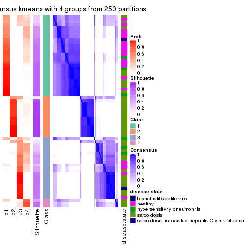
consensus_heatmap(res, k = 5)
consensus_heatmap(res, k = 6)
Heatmaps for the membership of samples in all partitions to see how consistent they are:
membership_heatmap(res, k = 2)
membership_heatmap(res, k = 3)
membership_heatmap(res, k = 4)
membership_heatmap(res, k = 5)
membership_heatmap(res, k = 6)
As soon as we have had the classes for columns, we can look for signatures which are significantly different between classes which can be candidate marks for certain classes. Following are the heatmaps for signatures.
Signature heatmaps where rows are scaled:
get_signatures(res, k = 2)
get_signatures(res, k = 3)
get_signatures(res, k = 4)
get_signatures(res, k = 5)
get_signatures(res, k = 6)
Signature heatmaps where rows are not scaled:
get_signatures(res, k = 2, scale_rows = FALSE)
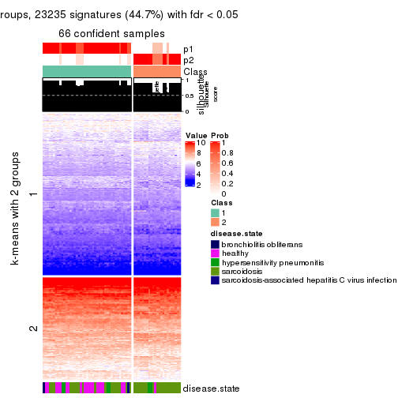
get_signatures(res, k = 3, scale_rows = FALSE)
get_signatures(res, k = 4, scale_rows = FALSE)
get_signatures(res, k = 5, scale_rows = FALSE)
get_signatures(res, k = 6, scale_rows = FALSE)
Compare the overlap of signatures from different k:
compare_signatures(res)
get_signature() returns a data frame invisibly. TO get the list of signatures, the function
call should be assigned to a variable explicitly. In following code, if plot argument is set
to FALSE, no heatmap is plotted while only the differential analysis is performed.
# code only for demonstration
tb = get_signature(res, k = ..., plot = FALSE)
An example of the output of tb is:
#> which_row fdr mean_1 mean_2 scaled_mean_1 scaled_mean_2 km
#> 1 38 0.042760348 8.373488 9.131774 -0.5533452 0.5164555 1
#> 2 40 0.018707592 7.106213 8.469186 -0.6173731 0.5762149 1
#> 3 55 0.019134737 10.221463 11.207825 -0.6159697 0.5749050 1
#> 4 59 0.006059896 5.921854 7.869574 -0.6899429 0.6439467 1
#> 5 60 0.018055526 8.928898 10.211722 -0.6204761 0.5791110 1
#> 6 98 0.009384629 15.714769 14.887706 0.6635654 -0.6193277 2
...
The columns in tb are:
which_row: row indices corresponding to the input matrix.fdr: FDR for the differential test. mean_x: The mean value in group x.scaled_mean_x: The mean value in group x after rows are scaled.km: Row groups if k-means clustering is applied to rows.UMAP plot which shows how samples are separated.
dimension_reduction(res, k = 2, method = "UMAP")
dimension_reduction(res, k = 3, method = "UMAP")
dimension_reduction(res, k = 4, method = "UMAP")
dimension_reduction(res, k = 5, method = "UMAP")
dimension_reduction(res, k = 6, method = "UMAP")
Following heatmap shows how subgroups are split when increasing k:
collect_classes(res)
Test correlation between subgroups and known annotations. If the known annotation is numeric, one-way ANOVA test is applied, and if the known annotation is discrete, chi-squared contingency table test is applied.
test_to_known_factors(res)
#> n disease.state(p) k
#> ATC:kmeans 66 0.00663 2
#> ATC:kmeans 64 0.00891 3
#> ATC:kmeans 50 0.01736 4
#> ATC:kmeans 41 0.03629 5
#> ATC:kmeans 41 0.01231 6
If matrix rows can be associated to genes, consider to use functional_enrichment(res,
...) to perform function enrichment for the signature genes. See this vignette for more detailed explanations.
The object with results only for a single top-value method and a single partition method can be extracted as:
res = res_list["ATC", "skmeans"]
# you can also extract it by
# res = res_list["ATC:skmeans"]
A summary of res and all the functions that can be applied to it:
res
#> A 'ConsensusPartition' object with k = 2, 3, 4, 5, 6.
#> On a matrix with 51941 rows and 66 columns.
#> Top rows (1000, 2000, 3000, 4000, 5000) are extracted by 'ATC' method.
#> Subgroups are detected by 'skmeans' method.
#> Performed in total 1250 partitions by row resampling.
#> Best k for subgroups seems to be 3.
#>
#> Following methods can be applied to this 'ConsensusPartition' object:
#> [1] "cola_report" "collect_classes" "collect_plots"
#> [4] "collect_stats" "colnames" "compare_signatures"
#> [7] "consensus_heatmap" "dimension_reduction" "functional_enrichment"
#> [10] "get_anno_col" "get_anno" "get_classes"
#> [13] "get_consensus" "get_matrix" "get_membership"
#> [16] "get_param" "get_signatures" "get_stats"
#> [19] "is_best_k" "is_stable_k" "membership_heatmap"
#> [22] "ncol" "nrow" "plot_ecdf"
#> [25] "rownames" "select_partition_number" "show"
#> [28] "suggest_best_k" "test_to_known_factors"
collect_plots() function collects all the plots made from res for all k (number of partitions)
into one single page to provide an easy and fast comparison between different k.
collect_plots(res)
The plots are:
k and the heatmap of
predicted classes for each k.k.k.k.All the plots in panels can be made by individual functions and they are plotted later in this section.
select_partition_number() produces several plots showing different
statistics for choosing “optimized” k. There are following statistics:
k;k, the area increased is defined as \(A_k - A_{k-1}\).The detailed explanations of these statistics can be found in the cola vignette.
Generally speaking, lower PAC score, higher mean silhouette score or higher
concordance corresponds to better partition. Rand index and Jaccard index
measure how similar the current partition is compared to partition with k-1.
If they are too similar, we won't accept k is better than k-1.
select_partition_number(res)
The numeric values for all these statistics can be obtained by get_stats().
get_stats(res)
#> k 1-PAC mean_silhouette concordance area_increased Rand Jaccard
#> 2 2 1.000 0.990 0.996 0.5057 0.494 0.494
#> 3 3 0.979 0.934 0.968 0.2068 0.895 0.788
#> 4 4 0.788 0.799 0.910 0.1240 0.921 0.802
#> 5 5 0.722 0.668 0.812 0.0737 0.926 0.792
#> 6 6 0.722 0.621 0.807 0.0542 0.890 0.652
suggest_best_k() suggests the best \(k\) based on these statistics. The rules are as follows:
suggest_best_k(res)
#> [1] 3
#> attr(,"optional")
#> [1] 2
There is also optional best \(k\) = 2 that is worth to check.
Following shows the table of the partitions (You need to click the show/hide
code output link to see it). The membership matrix (columns with name p*)
is inferred by
clue::cl_consensus()
function with the SE method. Basically the value in the membership matrix
represents the probability to belong to a certain group. The finall class
label for an item is determined with the group with highest probability it
belongs to.
In get_classes() function, the entropy is calculated from the membership
matrix and the silhouette score is calculated from the consensus matrix.
cbind(get_classes(res, k = 2), get_membership(res, k = 2))
#> class entropy silhouette p1 p2
#> GSM479917 2 0.000 0.991 0.000 1.000
#> GSM479920 2 0.000 0.991 0.000 1.000
#> GSM479924 2 0.000 0.991 0.000 1.000
#> GSM479926 1 0.000 1.000 1.000 0.000
#> GSM479927 2 0.000 0.991 0.000 1.000
#> GSM479931 2 0.000 0.991 0.000 1.000
#> GSM479932 2 0.000 0.991 0.000 1.000
#> GSM479933 2 0.000 0.991 0.000 1.000
#> GSM479934 2 0.000 0.991 0.000 1.000
#> GSM479935 1 0.000 1.000 1.000 0.000
#> GSM479942 1 0.000 1.000 1.000 0.000
#> GSM479943 1 0.000 1.000 1.000 0.000
#> GSM479944 1 0.000 1.000 1.000 0.000
#> GSM479945 2 0.000 0.991 0.000 1.000
#> GSM479946 2 0.000 0.991 0.000 1.000
#> GSM479949 2 0.000 0.991 0.000 1.000
#> GSM479951 2 0.000 0.991 0.000 1.000
#> GSM479952 2 0.000 0.991 0.000 1.000
#> GSM479953 1 0.000 1.000 1.000 0.000
#> GSM479956 2 0.000 0.991 0.000 1.000
#> GSM479957 1 0.000 1.000 1.000 0.000
#> GSM479959 1 0.000 1.000 1.000 0.000
#> GSM479960 2 0.000 0.991 0.000 1.000
#> GSM479961 2 0.000 0.991 0.000 1.000
#> GSM479962 2 0.000 0.991 0.000 1.000
#> GSM479963 1 0.000 1.000 1.000 0.000
#> GSM479964 1 0.000 1.000 1.000 0.000
#> GSM479965 1 0.000 1.000 1.000 0.000
#> GSM479968 2 0.000 0.991 0.000 1.000
#> GSM479969 2 0.000 0.991 0.000 1.000
#> GSM479971 1 0.000 1.000 1.000 0.000
#> GSM479972 2 0.000 0.991 0.000 1.000
#> GSM479973 2 0.000 0.991 0.000 1.000
#> GSM479974 2 0.000 0.991 0.000 1.000
#> GSM479977 1 0.000 1.000 1.000 0.000
#> GSM479979 2 0.000 0.991 0.000 1.000
#> GSM479980 2 0.844 0.626 0.272 0.728
#> GSM479981 2 0.000 0.991 0.000 1.000
#> GSM479918 1 0.000 1.000 1.000 0.000
#> GSM479929 1 0.000 1.000 1.000 0.000
#> GSM479930 2 0.000 0.991 0.000 1.000
#> GSM479938 1 0.000 1.000 1.000 0.000
#> GSM479950 1 0.000 1.000 1.000 0.000
#> GSM479955 2 0.000 0.991 0.000 1.000
#> GSM479919 1 0.000 1.000 1.000 0.000
#> GSM479921 1 0.000 1.000 1.000 0.000
#> GSM479922 1 0.000 1.000 1.000 0.000
#> GSM479923 1 0.000 1.000 1.000 0.000
#> GSM479925 1 0.000 1.000 1.000 0.000
#> GSM479928 2 0.000 0.991 0.000 1.000
#> GSM479936 1 0.000 1.000 1.000 0.000
#> GSM479937 1 0.000 1.000 1.000 0.000
#> GSM479939 1 0.000 1.000 1.000 0.000
#> GSM479940 1 0.000 1.000 1.000 0.000
#> GSM479941 1 0.000 1.000 1.000 0.000
#> GSM479947 1 0.000 1.000 1.000 0.000
#> GSM479948 2 0.000 0.991 0.000 1.000
#> GSM479954 1 0.000 1.000 1.000 0.000
#> GSM479958 1 0.000 1.000 1.000 0.000
#> GSM479966 1 0.000 1.000 1.000 0.000
#> GSM479967 1 0.000 1.000 1.000 0.000
#> GSM479970 2 0.000 0.991 0.000 1.000
#> GSM479975 1 0.000 1.000 1.000 0.000
#> GSM479976 1 0.000 1.000 1.000 0.000
#> GSM479982 2 0.000 0.991 0.000 1.000
#> GSM479978 1 0.000 1.000 1.000 0.000
cbind(get_classes(res, k = 3), get_membership(res, k = 3))
#> class entropy silhouette p1 p2 p3
#> GSM479917 2 0.0000 0.9697 0.000 1.000 0.000
#> GSM479920 2 0.1411 0.9471 0.000 0.964 0.036
#> GSM479924 2 0.0000 0.9697 0.000 1.000 0.000
#> GSM479926 1 0.0237 0.9771 0.996 0.000 0.004
#> GSM479927 2 0.0000 0.9697 0.000 1.000 0.000
#> GSM479931 2 0.0000 0.9697 0.000 1.000 0.000
#> GSM479932 2 0.0000 0.9697 0.000 1.000 0.000
#> GSM479933 3 0.1411 0.9319 0.000 0.036 0.964
#> GSM479934 2 0.0000 0.9697 0.000 1.000 0.000
#> GSM479935 1 0.0000 0.9781 1.000 0.000 0.000
#> GSM479942 1 0.0000 0.9781 1.000 0.000 0.000
#> GSM479943 1 0.0000 0.9781 1.000 0.000 0.000
#> GSM479944 1 0.0000 0.9781 1.000 0.000 0.000
#> GSM479945 2 0.0000 0.9697 0.000 1.000 0.000
#> GSM479946 2 0.0000 0.9697 0.000 1.000 0.000
#> GSM479949 2 0.1289 0.9506 0.000 0.968 0.032
#> GSM479951 2 0.0000 0.9697 0.000 1.000 0.000
#> GSM479952 3 0.4842 0.7741 0.000 0.224 0.776
#> GSM479953 1 0.0747 0.9696 0.984 0.000 0.016
#> GSM479956 3 0.1411 0.9319 0.000 0.036 0.964
#> GSM479957 1 0.6154 0.3246 0.592 0.000 0.408
#> GSM479959 1 0.0000 0.9781 1.000 0.000 0.000
#> GSM479960 2 0.0000 0.9697 0.000 1.000 0.000
#> GSM479961 2 0.0000 0.9697 0.000 1.000 0.000
#> GSM479962 2 0.0000 0.9697 0.000 1.000 0.000
#> GSM479963 1 0.0000 0.9781 1.000 0.000 0.000
#> GSM479964 1 0.2297 0.9342 0.944 0.020 0.036
#> GSM479965 1 0.0000 0.9781 1.000 0.000 0.000
#> GSM479968 3 0.2165 0.9196 0.000 0.064 0.936
#> GSM479969 2 0.0892 0.9592 0.000 0.980 0.020
#> GSM479971 3 0.1411 0.8995 0.036 0.000 0.964
#> GSM479972 2 0.0000 0.9697 0.000 1.000 0.000
#> GSM479973 3 0.5254 0.7128 0.000 0.264 0.736
#> GSM479974 2 0.0000 0.9697 0.000 1.000 0.000
#> GSM479977 1 0.1031 0.9636 0.976 0.000 0.024
#> GSM479979 2 0.0000 0.9697 0.000 1.000 0.000
#> GSM479980 3 0.1525 0.9307 0.004 0.032 0.964
#> GSM479981 2 0.0000 0.9697 0.000 1.000 0.000
#> GSM479918 1 0.0000 0.9781 1.000 0.000 0.000
#> GSM479929 1 0.0000 0.9781 1.000 0.000 0.000
#> GSM479930 2 0.1289 0.9506 0.000 0.968 0.032
#> GSM479938 1 0.0000 0.9781 1.000 0.000 0.000
#> GSM479950 1 0.0000 0.9781 1.000 0.000 0.000
#> GSM479955 2 0.0892 0.9592 0.000 0.980 0.020
#> GSM479919 1 0.0237 0.9771 0.996 0.000 0.004
#> GSM479921 1 0.0237 0.9771 0.996 0.000 0.004
#> GSM479922 1 0.0000 0.9781 1.000 0.000 0.000
#> GSM479923 1 0.0000 0.9781 1.000 0.000 0.000
#> GSM479925 1 0.0892 0.9667 0.980 0.000 0.020
#> GSM479928 3 0.1411 0.9319 0.000 0.036 0.964
#> GSM479936 1 0.0000 0.9781 1.000 0.000 0.000
#> GSM479937 1 0.4062 0.8003 0.836 0.000 0.164
#> GSM479939 1 0.0000 0.9781 1.000 0.000 0.000
#> GSM479940 1 0.0000 0.9781 1.000 0.000 0.000
#> GSM479941 1 0.0237 0.9771 0.996 0.000 0.004
#> GSM479947 1 0.0237 0.9771 0.996 0.000 0.004
#> GSM479948 2 0.0892 0.9592 0.000 0.980 0.020
#> GSM479954 1 0.0000 0.9781 1.000 0.000 0.000
#> GSM479958 1 0.0237 0.9771 0.996 0.000 0.004
#> GSM479966 1 0.0237 0.9771 0.996 0.000 0.004
#> GSM479967 1 0.0237 0.9771 0.996 0.000 0.004
#> GSM479970 2 0.6286 0.0958 0.000 0.536 0.464
#> GSM479975 1 0.0000 0.9781 1.000 0.000 0.000
#> GSM479976 1 0.0000 0.9781 1.000 0.000 0.000
#> GSM479982 3 0.1525 0.9307 0.004 0.032 0.964
#> GSM479978 1 0.0237 0.9771 0.996 0.000 0.004
cbind(get_classes(res, k = 4), get_membership(res, k = 4))
#> class entropy silhouette p1 p2 p3 p4
#> GSM479917 2 0.0000 0.9411 0.000 1.000 0.000 0.000
#> GSM479920 3 0.4103 0.5454 0.000 0.256 0.744 0.000
#> GSM479924 2 0.0000 0.9411 0.000 1.000 0.000 0.000
#> GSM479926 1 0.3975 0.7691 0.760 0.000 0.240 0.000
#> GSM479927 2 0.0000 0.9411 0.000 1.000 0.000 0.000
#> GSM479931 2 0.0000 0.9411 0.000 1.000 0.000 0.000
#> GSM479932 2 0.0000 0.9411 0.000 1.000 0.000 0.000
#> GSM479933 4 0.0469 0.7582 0.000 0.012 0.000 0.988
#> GSM479934 2 0.0000 0.9411 0.000 1.000 0.000 0.000
#> GSM479935 1 0.0188 0.8985 0.996 0.000 0.004 0.000
#> GSM479942 1 0.0000 0.8986 1.000 0.000 0.000 0.000
#> GSM479943 1 0.0000 0.8986 1.000 0.000 0.000 0.000
#> GSM479944 1 0.0000 0.8986 1.000 0.000 0.000 0.000
#> GSM479945 2 0.0000 0.9411 0.000 1.000 0.000 0.000
#> GSM479946 2 0.0000 0.9411 0.000 1.000 0.000 0.000
#> GSM479949 3 0.4936 0.3577 0.000 0.372 0.624 0.004
#> GSM479951 2 0.0000 0.9411 0.000 1.000 0.000 0.000
#> GSM479952 4 0.4713 0.5046 0.000 0.360 0.000 0.640
#> GSM479953 3 0.1716 0.7153 0.064 0.000 0.936 0.000
#> GSM479956 4 0.0469 0.7582 0.000 0.012 0.000 0.988
#> GSM479957 1 0.3266 0.7395 0.832 0.000 0.000 0.168
#> GSM479959 1 0.1557 0.8777 0.944 0.000 0.056 0.000
#> GSM479960 2 0.0000 0.9411 0.000 1.000 0.000 0.000
#> GSM479961 2 0.0000 0.9411 0.000 1.000 0.000 0.000
#> GSM479962 2 0.0000 0.9411 0.000 1.000 0.000 0.000
#> GSM479963 1 0.0188 0.8985 0.996 0.000 0.004 0.000
#> GSM479964 3 0.0707 0.7127 0.020 0.000 0.980 0.000
#> GSM479965 1 0.0000 0.8986 1.000 0.000 0.000 0.000
#> GSM479968 4 0.3764 0.6447 0.000 0.216 0.000 0.784
#> GSM479969 2 0.2179 0.8813 0.000 0.924 0.064 0.012
#> GSM479971 4 0.4567 0.4428 0.276 0.000 0.008 0.716
#> GSM479972 2 0.0000 0.9411 0.000 1.000 0.000 0.000
#> GSM479973 4 0.4981 0.2665 0.000 0.464 0.000 0.536
#> GSM479974 2 0.0000 0.9411 0.000 1.000 0.000 0.000
#> GSM479977 3 0.1302 0.7211 0.044 0.000 0.956 0.000
#> GSM479979 2 0.0000 0.9411 0.000 1.000 0.000 0.000
#> GSM479980 4 0.0469 0.7582 0.000 0.012 0.000 0.988
#> GSM479981 2 0.0000 0.9411 0.000 1.000 0.000 0.000
#> GSM479918 1 0.0000 0.8986 1.000 0.000 0.000 0.000
#> GSM479929 1 0.0000 0.8986 1.000 0.000 0.000 0.000
#> GSM479930 2 0.5147 0.0281 0.000 0.536 0.460 0.004
#> GSM479938 1 0.0000 0.8986 1.000 0.000 0.000 0.000
#> GSM479950 1 0.0000 0.8986 1.000 0.000 0.000 0.000
#> GSM479955 2 0.1109 0.9184 0.000 0.968 0.028 0.004
#> GSM479919 1 0.3942 0.7727 0.764 0.000 0.236 0.000
#> GSM479921 1 0.3942 0.7727 0.764 0.000 0.236 0.000
#> GSM479922 1 0.0000 0.8986 1.000 0.000 0.000 0.000
#> GSM479923 1 0.0188 0.8985 0.996 0.000 0.004 0.000
#> GSM479925 3 0.3668 0.5911 0.188 0.000 0.808 0.004
#> GSM479928 4 0.0336 0.7468 0.000 0.000 0.008 0.992
#> GSM479936 1 0.0188 0.8985 0.996 0.000 0.004 0.000
#> GSM479937 1 0.3853 0.7274 0.820 0.000 0.020 0.160
#> GSM479939 1 0.0000 0.8986 1.000 0.000 0.000 0.000
#> GSM479940 1 0.0000 0.8986 1.000 0.000 0.000 0.000
#> GSM479941 1 0.3975 0.7691 0.760 0.000 0.240 0.000
#> GSM479947 1 0.3975 0.7691 0.760 0.000 0.240 0.000
#> GSM479948 2 0.1584 0.9073 0.000 0.952 0.036 0.012
#> GSM479954 1 0.0188 0.8985 0.996 0.000 0.004 0.000
#> GSM479958 1 0.3873 0.7785 0.772 0.000 0.228 0.000
#> GSM479966 1 0.3907 0.7756 0.768 0.000 0.232 0.000
#> GSM479967 1 0.3942 0.7727 0.764 0.000 0.236 0.000
#> GSM479970 2 0.5969 0.2252 0.000 0.564 0.044 0.392
#> GSM479975 1 0.0188 0.8985 0.996 0.000 0.004 0.000
#> GSM479976 1 0.0000 0.8986 1.000 0.000 0.000 0.000
#> GSM479982 4 0.0336 0.7557 0.000 0.008 0.000 0.992
#> GSM479978 1 0.3975 0.7691 0.760 0.000 0.240 0.000
cbind(get_classes(res, k = 5), get_membership(res, k = 5))
#> class entropy silhouette p1 p2 p3 p4 p5
#> GSM479917 2 0.1195 0.8286 0.000 0.960 0.028 0.000 0.012
#> GSM479920 5 0.1478 0.5456 0.000 0.064 0.000 0.000 0.936
#> GSM479924 2 0.0000 0.8699 0.000 1.000 0.000 0.000 0.000
#> GSM479926 1 0.4693 0.6137 0.700 0.000 0.244 0.000 0.056
#> GSM479927 2 0.0162 0.8671 0.000 0.996 0.004 0.000 0.000
#> GSM479931 2 0.0000 0.8699 0.000 1.000 0.000 0.000 0.000
#> GSM479932 2 0.0000 0.8699 0.000 1.000 0.000 0.000 0.000
#> GSM479933 4 0.0566 0.8191 0.000 0.004 0.012 0.984 0.000
#> GSM479934 2 0.0000 0.8699 0.000 1.000 0.000 0.000 0.000
#> GSM479935 1 0.1410 0.7678 0.940 0.000 0.060 0.000 0.000
#> GSM479942 1 0.3143 0.7504 0.796 0.000 0.204 0.000 0.000
#> GSM479943 1 0.3143 0.7504 0.796 0.000 0.204 0.000 0.000
#> GSM479944 1 0.3143 0.7504 0.796 0.000 0.204 0.000 0.000
#> GSM479945 2 0.0000 0.8699 0.000 1.000 0.000 0.000 0.000
#> GSM479946 2 0.0000 0.8699 0.000 1.000 0.000 0.000 0.000
#> GSM479949 5 0.3953 0.4004 0.000 0.148 0.060 0.000 0.792
#> GSM479951 2 0.0000 0.8699 0.000 1.000 0.000 0.000 0.000
#> GSM479952 2 0.5238 -0.0479 0.000 0.480 0.044 0.476 0.000
#> GSM479953 5 0.5039 0.5667 0.116 0.000 0.184 0.000 0.700
#> GSM479956 4 0.0798 0.8152 0.000 0.016 0.008 0.976 0.000
#> GSM479957 1 0.5761 0.5662 0.620 0.000 0.196 0.184 0.000
#> GSM479959 1 0.3437 0.6935 0.808 0.000 0.176 0.004 0.012
#> GSM479960 2 0.0000 0.8699 0.000 1.000 0.000 0.000 0.000
#> GSM479961 2 0.0000 0.8699 0.000 1.000 0.000 0.000 0.000
#> GSM479962 2 0.0162 0.8671 0.000 0.996 0.004 0.000 0.000
#> GSM479963 1 0.0510 0.7605 0.984 0.000 0.016 0.000 0.000
#> GSM479964 5 0.3151 0.6483 0.020 0.000 0.144 0.000 0.836
#> GSM479965 1 0.2329 0.7658 0.876 0.000 0.124 0.000 0.000
#> GSM479968 4 0.3861 0.4677 0.000 0.264 0.008 0.728 0.000
#> GSM479969 3 0.6661 0.7827 0.000 0.356 0.412 0.000 0.232
#> GSM479971 4 0.5555 0.4691 0.152 0.000 0.204 0.644 0.000
#> GSM479972 2 0.0000 0.8699 0.000 1.000 0.000 0.000 0.000
#> GSM479973 2 0.6100 0.0694 0.000 0.500 0.132 0.368 0.000
#> GSM479974 2 0.0162 0.8671 0.000 0.996 0.004 0.000 0.000
#> GSM479977 5 0.3681 0.6436 0.044 0.000 0.148 0.000 0.808
#> GSM479979 2 0.0000 0.8699 0.000 1.000 0.000 0.000 0.000
#> GSM479980 4 0.0510 0.8191 0.000 0.000 0.016 0.984 0.000
#> GSM479981 2 0.0000 0.8699 0.000 1.000 0.000 0.000 0.000
#> GSM479918 1 0.3109 0.7517 0.800 0.000 0.200 0.000 0.000
#> GSM479929 1 0.3177 0.7488 0.792 0.000 0.208 0.000 0.000
#> GSM479930 5 0.6080 -0.1933 0.000 0.248 0.184 0.000 0.568
#> GSM479938 1 0.3242 0.7451 0.784 0.000 0.216 0.000 0.000
#> GSM479950 1 0.3366 0.7363 0.768 0.000 0.232 0.000 0.000
#> GSM479955 2 0.6043 -0.4388 0.000 0.572 0.252 0.000 0.176
#> GSM479919 1 0.4525 0.6350 0.724 0.000 0.220 0.000 0.056
#> GSM479921 1 0.4303 0.6594 0.752 0.000 0.192 0.000 0.056
#> GSM479922 1 0.2605 0.7642 0.852 0.000 0.148 0.000 0.000
#> GSM479923 1 0.2068 0.7376 0.904 0.000 0.092 0.004 0.000
#> GSM479925 1 0.6801 -0.1978 0.360 0.000 0.292 0.000 0.348
#> GSM479928 4 0.2605 0.7464 0.000 0.000 0.148 0.852 0.000
#> GSM479936 1 0.0404 0.7613 0.988 0.000 0.012 0.000 0.000
#> GSM479937 1 0.5051 0.4229 0.492 0.000 0.480 0.024 0.004
#> GSM479939 1 0.3143 0.7504 0.796 0.000 0.204 0.000 0.000
#> GSM479940 1 0.3242 0.7451 0.784 0.000 0.216 0.000 0.000
#> GSM479941 1 0.4370 0.6640 0.744 0.000 0.200 0.000 0.056
#> GSM479947 1 0.4303 0.6551 0.752 0.000 0.192 0.000 0.056
#> GSM479948 3 0.6500 0.7662 0.000 0.404 0.408 0.000 0.188
#> GSM479954 1 0.0162 0.7626 0.996 0.000 0.004 0.000 0.000
#> GSM479958 1 0.4125 0.6709 0.772 0.000 0.172 0.000 0.056
#> GSM479966 1 0.4370 0.6672 0.744 0.000 0.200 0.000 0.056
#> GSM479967 1 0.4584 0.6284 0.716 0.000 0.228 0.000 0.056
#> GSM479970 3 0.7769 0.6066 0.000 0.200 0.484 0.128 0.188
#> GSM479975 1 0.0000 0.7631 1.000 0.000 0.000 0.000 0.000
#> GSM479976 1 0.2516 0.7637 0.860 0.000 0.140 0.000 0.000
#> GSM479982 4 0.0510 0.8185 0.000 0.000 0.016 0.984 0.000
#> GSM479978 1 0.4370 0.6578 0.744 0.000 0.200 0.000 0.056
cbind(get_classes(res, k = 6), get_membership(res, k = 6))
#> class entropy silhouette p1 p2 p3 p4 p5 p6
#> GSM479917 2 0.2394 0.8119 0.032 0.900 0.000 0.000 0.048 0.020
#> GSM479920 6 0.1542 0.7287 0.004 0.008 0.000 0.000 0.052 0.936
#> GSM479924 2 0.0000 0.8915 0.000 1.000 0.000 0.000 0.000 0.000
#> GSM479926 1 0.3050 0.6810 0.764 0.000 0.236 0.000 0.000 0.000
#> GSM479927 2 0.0291 0.8885 0.004 0.992 0.000 0.000 0.000 0.004
#> GSM479931 2 0.0146 0.8902 0.000 0.996 0.000 0.000 0.000 0.004
#> GSM479932 2 0.0000 0.8915 0.000 1.000 0.000 0.000 0.000 0.000
#> GSM479933 4 0.0405 0.7570 0.008 0.000 0.000 0.988 0.004 0.000
#> GSM479934 2 0.0000 0.8915 0.000 1.000 0.000 0.000 0.000 0.000
#> GSM479935 3 0.3190 0.4714 0.220 0.000 0.772 0.000 0.000 0.008
#> GSM479942 3 0.0146 0.7134 0.004 0.000 0.996 0.000 0.000 0.000
#> GSM479943 3 0.0146 0.7134 0.004 0.000 0.996 0.000 0.000 0.000
#> GSM479944 3 0.0000 0.7128 0.000 0.000 1.000 0.000 0.000 0.000
#> GSM479945 2 0.0000 0.8915 0.000 1.000 0.000 0.000 0.000 0.000
#> GSM479946 2 0.0000 0.8915 0.000 1.000 0.000 0.000 0.000 0.000
#> GSM479949 6 0.4647 0.4274 0.008 0.104 0.000 0.000 0.184 0.704
#> GSM479951 2 0.0000 0.8915 0.000 1.000 0.000 0.000 0.000 0.000
#> GSM479952 2 0.6021 0.1619 0.048 0.516 0.000 0.352 0.080 0.004
#> GSM479953 6 0.3819 0.5674 0.280 0.000 0.020 0.000 0.000 0.700
#> GSM479956 4 0.0951 0.7532 0.004 0.008 0.000 0.968 0.020 0.000
#> GSM479957 3 0.4841 0.4659 0.084 0.000 0.724 0.160 0.016 0.016
#> GSM479959 1 0.4587 0.5219 0.720 0.000 0.204 0.004 0.032 0.040
#> GSM479960 2 0.0000 0.8915 0.000 1.000 0.000 0.000 0.000 0.000
#> GSM479961 2 0.0146 0.8902 0.000 0.996 0.000 0.000 0.000 0.004
#> GSM479962 2 0.0291 0.8885 0.004 0.992 0.000 0.000 0.000 0.004
#> GSM479963 3 0.3955 0.0133 0.384 0.000 0.608 0.000 0.000 0.008
#> GSM479964 6 0.1349 0.7657 0.056 0.000 0.000 0.000 0.004 0.940
#> GSM479965 3 0.2814 0.5926 0.172 0.000 0.820 0.000 0.000 0.008
#> GSM479968 4 0.4358 0.3206 0.020 0.352 0.000 0.620 0.008 0.000
#> GSM479969 5 0.2704 0.7400 0.000 0.140 0.000 0.000 0.844 0.016
#> GSM479971 4 0.5937 0.3676 0.076 0.000 0.316 0.552 0.052 0.004
#> GSM479972 2 0.0000 0.8915 0.000 1.000 0.000 0.000 0.000 0.000
#> GSM479973 2 0.7651 0.0811 0.196 0.440 0.000 0.224 0.104 0.036
#> GSM479974 2 0.0551 0.8837 0.008 0.984 0.000 0.000 0.004 0.004
#> GSM479977 6 0.1806 0.7604 0.088 0.000 0.004 0.000 0.000 0.908
#> GSM479979 2 0.0000 0.8915 0.000 1.000 0.000 0.000 0.000 0.000
#> GSM479980 4 0.0603 0.7573 0.016 0.000 0.000 0.980 0.004 0.000
#> GSM479981 2 0.0000 0.8915 0.000 1.000 0.000 0.000 0.000 0.000
#> GSM479918 3 0.0363 0.7121 0.012 0.000 0.988 0.000 0.000 0.000
#> GSM479929 3 0.0146 0.7119 0.000 0.000 0.996 0.000 0.000 0.004
#> GSM479930 5 0.6120 0.1805 0.008 0.204 0.000 0.000 0.404 0.384
#> GSM479938 3 0.1003 0.6960 0.028 0.000 0.964 0.000 0.004 0.004
#> GSM479950 3 0.1562 0.6780 0.032 0.000 0.940 0.000 0.024 0.004
#> GSM479955 2 0.3999 -0.2561 0.000 0.500 0.000 0.000 0.496 0.004
#> GSM479919 1 0.3351 0.7041 0.712 0.000 0.288 0.000 0.000 0.000
#> GSM479921 1 0.3955 0.6612 0.560 0.000 0.436 0.000 0.000 0.004
#> GSM479922 3 0.2632 0.5828 0.164 0.000 0.832 0.000 0.000 0.004
#> GSM479923 1 0.4881 0.4575 0.616 0.000 0.328 0.004 0.020 0.032
#> GSM479925 1 0.4690 0.2180 0.708 0.000 0.056 0.000 0.032 0.204
#> GSM479928 4 0.3770 0.6032 0.032 0.000 0.004 0.752 0.212 0.000
#> GSM479936 3 0.3955 0.0194 0.384 0.000 0.608 0.000 0.000 0.008
#> GSM479937 3 0.5106 0.2221 0.060 0.000 0.576 0.008 0.352 0.004
#> GSM479939 3 0.0520 0.7122 0.008 0.000 0.984 0.000 0.000 0.008
#> GSM479940 3 0.1155 0.6907 0.036 0.000 0.956 0.000 0.004 0.004
#> GSM479941 1 0.4161 0.6482 0.540 0.000 0.448 0.000 0.000 0.012
#> GSM479947 1 0.4076 0.6931 0.592 0.000 0.396 0.000 0.000 0.012
#> GSM479948 5 0.2595 0.7340 0.000 0.160 0.000 0.000 0.836 0.004
#> GSM479954 3 0.3758 0.2534 0.324 0.000 0.668 0.000 0.000 0.008
#> GSM479958 1 0.3944 0.6696 0.568 0.000 0.428 0.000 0.000 0.004
#> GSM479966 1 0.4089 0.6035 0.524 0.000 0.468 0.000 0.000 0.008
#> GSM479967 1 0.3266 0.7007 0.728 0.000 0.272 0.000 0.000 0.000
#> GSM479970 5 0.1401 0.6353 0.004 0.028 0.000 0.020 0.948 0.000
#> GSM479975 3 0.3833 0.1860 0.344 0.000 0.648 0.000 0.000 0.008
#> GSM479976 3 0.2841 0.6096 0.164 0.000 0.824 0.000 0.000 0.012
#> GSM479982 4 0.0891 0.7555 0.024 0.000 0.000 0.968 0.008 0.000
#> GSM479978 1 0.4205 0.6784 0.564 0.000 0.420 0.000 0.000 0.016
Heatmaps for the consensus matrix. It visualizes the probability of two samples to be in a same group.
consensus_heatmap(res, k = 2)
consensus_heatmap(res, k = 3)
consensus_heatmap(res, k = 4)
consensus_heatmap(res, k = 5)
consensus_heatmap(res, k = 6)
Heatmaps for the membership of samples in all partitions to see how consistent they are:
membership_heatmap(res, k = 2)
membership_heatmap(res, k = 3)
membership_heatmap(res, k = 4)
membership_heatmap(res, k = 5)
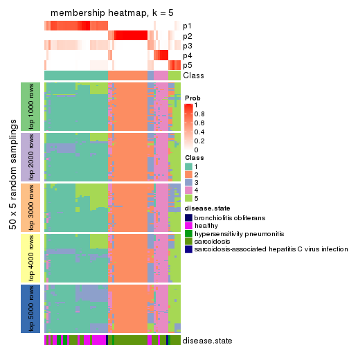
membership_heatmap(res, k = 6)
As soon as we have had the classes for columns, we can look for signatures which are significantly different between classes which can be candidate marks for certain classes. Following are the heatmaps for signatures.
Signature heatmaps where rows are scaled:
get_signatures(res, k = 2)
get_signatures(res, k = 3)
get_signatures(res, k = 4)
get_signatures(res, k = 5)
get_signatures(res, k = 6)
Signature heatmaps where rows are not scaled:
get_signatures(res, k = 2, scale_rows = FALSE)
get_signatures(res, k = 3, scale_rows = FALSE)
get_signatures(res, k = 4, scale_rows = FALSE)
get_signatures(res, k = 5, scale_rows = FALSE)
get_signatures(res, k = 6, scale_rows = FALSE)
Compare the overlap of signatures from different k:
compare_signatures(res)
get_signature() returns a data frame invisibly. TO get the list of signatures, the function
call should be assigned to a variable explicitly. In following code, if plot argument is set
to FALSE, no heatmap is plotted while only the differential analysis is performed.
# code only for demonstration
tb = get_signature(res, k = ..., plot = FALSE)
An example of the output of tb is:
#> which_row fdr mean_1 mean_2 scaled_mean_1 scaled_mean_2 km
#> 1 38 0.042760348 8.373488 9.131774 -0.5533452 0.5164555 1
#> 2 40 0.018707592 7.106213 8.469186 -0.6173731 0.5762149 1
#> 3 55 0.019134737 10.221463 11.207825 -0.6159697 0.5749050 1
#> 4 59 0.006059896 5.921854 7.869574 -0.6899429 0.6439467 1
#> 5 60 0.018055526 8.928898 10.211722 -0.6204761 0.5791110 1
#> 6 98 0.009384629 15.714769 14.887706 0.6635654 -0.6193277 2
...
The columns in tb are:
which_row: row indices corresponding to the input matrix.fdr: FDR for the differential test. mean_x: The mean value in group x.scaled_mean_x: The mean value in group x after rows are scaled.km: Row groups if k-means clustering is applied to rows.UMAP plot which shows how samples are separated.
dimension_reduction(res, k = 2, method = "UMAP")
dimension_reduction(res, k = 3, method = "UMAP")
dimension_reduction(res, k = 4, method = "UMAP")
dimension_reduction(res, k = 5, method = "UMAP")
dimension_reduction(res, k = 6, method = "UMAP")
Following heatmap shows how subgroups are split when increasing k:
collect_classes(res)
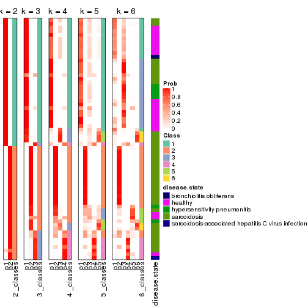
Test correlation between subgroups and known annotations. If the known annotation is numeric, one-way ANOVA test is applied, and if the known annotation is discrete, chi-squared contingency table test is applied.
test_to_known_factors(res)
#> n disease.state(p) k
#> ATC:skmeans 66 0.002923 2
#> ATC:skmeans 64 0.000922 3
#> ATC:skmeans 61 0.004547 4
#> ATC:skmeans 57 0.002306 5
#> ATC:skmeans 50 0.000290 6
If matrix rows can be associated to genes, consider to use functional_enrichment(res,
...) to perform function enrichment for the signature genes. See this vignette for more detailed explanations.
The object with results only for a single top-value method and a single partition method can be extracted as:
res = res_list["ATC", "pam"]
# you can also extract it by
# res = res_list["ATC:pam"]
A summary of res and all the functions that can be applied to it:
res
#> A 'ConsensusPartition' object with k = 2, 3, 4, 5, 6.
#> On a matrix with 51941 rows and 66 columns.
#> Top rows (1000, 2000, 3000, 4000, 5000) are extracted by 'ATC' method.
#> Subgroups are detected by 'pam' method.
#> Performed in total 1250 partitions by row resampling.
#> Best k for subgroups seems to be 5.
#>
#> Following methods can be applied to this 'ConsensusPartition' object:
#> [1] "cola_report" "collect_classes" "collect_plots"
#> [4] "collect_stats" "colnames" "compare_signatures"
#> [7] "consensus_heatmap" "dimension_reduction" "functional_enrichment"
#> [10] "get_anno_col" "get_anno" "get_classes"
#> [13] "get_consensus" "get_matrix" "get_membership"
#> [16] "get_param" "get_signatures" "get_stats"
#> [19] "is_best_k" "is_stable_k" "membership_heatmap"
#> [22] "ncol" "nrow" "plot_ecdf"
#> [25] "rownames" "select_partition_number" "show"
#> [28] "suggest_best_k" "test_to_known_factors"
collect_plots() function collects all the plots made from res for all k (number of partitions)
into one single page to provide an easy and fast comparison between different k.
collect_plots(res)

The plots are:
k and the heatmap of
predicted classes for each k.k.k.k.All the plots in panels can be made by individual functions and they are plotted later in this section.
select_partition_number() produces several plots showing different
statistics for choosing “optimized” k. There are following statistics:
k;k, the area increased is defined as \(A_k - A_{k-1}\).The detailed explanations of these statistics can be found in the cola vignette.
Generally speaking, lower PAC score, higher mean silhouette score or higher
concordance corresponds to better partition. Rand index and Jaccard index
measure how similar the current partition is compared to partition with k-1.
If they are too similar, we won't accept k is better than k-1.
select_partition_number(res)
The numeric values for all these statistics can be obtained by get_stats().
get_stats(res)
#> k 1-PAC mean_silhouette concordance area_increased Rand Jaccard
#> 2 2 1.000 0.977 0.991 0.4092 0.584 0.584
#> 3 3 0.934 0.883 0.958 0.5821 0.703 0.517
#> 4 4 0.883 0.956 0.955 0.1579 0.865 0.627
#> 5 5 0.985 0.947 0.980 0.0425 0.977 0.903
#> 6 6 0.898 0.794 0.920 0.0433 0.966 0.845
suggest_best_k() suggests the best \(k\) based on these statistics. The rules are as follows:
suggest_best_k(res)
#> [1] 5
#> attr(,"optional")
#> [1] 2 3
There is also optional best \(k\) = 2 3 that is worth to check.
Following shows the table of the partitions (You need to click the show/hide
code output link to see it). The membership matrix (columns with name p*)
is inferred by
clue::cl_consensus()
function with the SE method. Basically the value in the membership matrix
represents the probability to belong to a certain group. The finall class
label for an item is determined with the group with highest probability it
belongs to.
In get_classes() function, the entropy is calculated from the membership
matrix and the silhouette score is calculated from the consensus matrix.
cbind(get_classes(res, k = 2), get_membership(res, k = 2))
#> class entropy silhouette p1 p2
#> GSM479917 1 0.000 1.000 1.000 0.000
#> GSM479920 1 0.000 1.000 1.000 0.000
#> GSM479924 2 0.000 0.968 0.000 1.000
#> GSM479926 1 0.000 1.000 1.000 0.000
#> GSM479927 2 0.000 0.968 0.000 1.000
#> GSM479931 2 0.000 0.968 0.000 1.000
#> GSM479932 2 0.000 0.968 0.000 1.000
#> GSM479933 1 0.000 1.000 1.000 0.000
#> GSM479934 2 0.000 0.968 0.000 1.000
#> GSM479935 1 0.000 1.000 1.000 0.000
#> GSM479942 1 0.000 1.000 1.000 0.000
#> GSM479943 1 0.000 1.000 1.000 0.000
#> GSM479944 1 0.000 1.000 1.000 0.000
#> GSM479945 2 0.000 0.968 0.000 1.000
#> GSM479946 2 0.000 0.968 0.000 1.000
#> GSM479949 1 0.000 1.000 1.000 0.000
#> GSM479951 2 0.000 0.968 0.000 1.000
#> GSM479952 1 0.000 1.000 1.000 0.000
#> GSM479953 1 0.000 1.000 1.000 0.000
#> GSM479956 1 0.000 1.000 1.000 0.000
#> GSM479957 1 0.000 1.000 1.000 0.000
#> GSM479959 1 0.000 1.000 1.000 0.000
#> GSM479960 2 0.000 0.968 0.000 1.000
#> GSM479961 2 0.000 0.968 0.000 1.000
#> GSM479962 2 0.000 0.968 0.000 1.000
#> GSM479963 1 0.000 1.000 1.000 0.000
#> GSM479964 1 0.000 1.000 1.000 0.000
#> GSM479965 1 0.000 1.000 1.000 0.000
#> GSM479968 1 0.000 1.000 1.000 0.000
#> GSM479969 2 0.993 0.183 0.452 0.548
#> GSM479971 1 0.000 1.000 1.000 0.000
#> GSM479972 2 0.000 0.968 0.000 1.000
#> GSM479973 1 0.000 1.000 1.000 0.000
#> GSM479974 2 0.000 0.968 0.000 1.000
#> GSM479977 1 0.000 1.000 1.000 0.000
#> GSM479979 2 0.000 0.968 0.000 1.000
#> GSM479980 1 0.000 1.000 1.000 0.000
#> GSM479981 2 0.000 0.968 0.000 1.000
#> GSM479918 1 0.000 1.000 1.000 0.000
#> GSM479929 1 0.000 1.000 1.000 0.000
#> GSM479930 2 0.529 0.849 0.120 0.880
#> GSM479938 1 0.000 1.000 1.000 0.000
#> GSM479950 1 0.000 1.000 1.000 0.000
#> GSM479955 2 0.000 0.968 0.000 1.000
#> GSM479919 1 0.000 1.000 1.000 0.000
#> GSM479921 1 0.000 1.000 1.000 0.000
#> GSM479922 1 0.000 1.000 1.000 0.000
#> GSM479923 1 0.000 1.000 1.000 0.000
#> GSM479925 1 0.000 1.000 1.000 0.000
#> GSM479928 1 0.000 1.000 1.000 0.000
#> GSM479936 1 0.000 1.000 1.000 0.000
#> GSM479937 1 0.000 1.000 1.000 0.000
#> GSM479939 1 0.000 1.000 1.000 0.000
#> GSM479940 1 0.000 1.000 1.000 0.000
#> GSM479941 1 0.000 1.000 1.000 0.000
#> GSM479947 1 0.000 1.000 1.000 0.000
#> GSM479948 2 0.000 0.968 0.000 1.000
#> GSM479954 1 0.000 1.000 1.000 0.000
#> GSM479958 1 0.000 1.000 1.000 0.000
#> GSM479966 1 0.000 1.000 1.000 0.000
#> GSM479967 1 0.000 1.000 1.000 0.000
#> GSM479970 1 0.000 1.000 1.000 0.000
#> GSM479975 1 0.000 1.000 1.000 0.000
#> GSM479976 1 0.000 1.000 1.000 0.000
#> GSM479982 1 0.000 1.000 1.000 0.000
#> GSM479978 1 0.000 1.000 1.000 0.000
cbind(get_classes(res, k = 3), get_membership(res, k = 3))
#> class entropy silhouette p1 p2 p3
#> GSM479917 3 0.0000 0.9221 0.000 0.000 1.000
#> GSM479920 3 0.0000 0.9221 0.000 0.000 1.000
#> GSM479924 2 0.0000 0.9864 0.000 1.000 0.000
#> GSM479926 1 0.0000 0.9501 1.000 0.000 0.000
#> GSM479927 2 0.0000 0.9864 0.000 1.000 0.000
#> GSM479931 2 0.0000 0.9864 0.000 1.000 0.000
#> GSM479932 2 0.0000 0.9864 0.000 1.000 0.000
#> GSM479933 3 0.0000 0.9221 0.000 0.000 1.000
#> GSM479934 2 0.0000 0.9864 0.000 1.000 0.000
#> GSM479935 1 0.0000 0.9501 1.000 0.000 0.000
#> GSM479942 1 0.0000 0.9501 1.000 0.000 0.000
#> GSM479943 1 0.0000 0.9501 1.000 0.000 0.000
#> GSM479944 1 0.0000 0.9501 1.000 0.000 0.000
#> GSM479945 2 0.0000 0.9864 0.000 1.000 0.000
#> GSM479946 2 0.0000 0.9864 0.000 1.000 0.000
#> GSM479949 3 0.0000 0.9221 0.000 0.000 1.000
#> GSM479951 2 0.0000 0.9864 0.000 1.000 0.000
#> GSM479952 3 0.0000 0.9221 0.000 0.000 1.000
#> GSM479953 1 0.6192 0.2427 0.580 0.000 0.420
#> GSM479956 3 0.0000 0.9221 0.000 0.000 1.000
#> GSM479957 1 0.0000 0.9501 1.000 0.000 0.000
#> GSM479959 1 0.6252 0.1661 0.556 0.000 0.444
#> GSM479960 2 0.0000 0.9864 0.000 1.000 0.000
#> GSM479961 2 0.0000 0.9864 0.000 1.000 0.000
#> GSM479962 2 0.0000 0.9864 0.000 1.000 0.000
#> GSM479963 1 0.0000 0.9501 1.000 0.000 0.000
#> GSM479964 3 0.6305 0.0324 0.484 0.000 0.516
#> GSM479965 1 0.0000 0.9501 1.000 0.000 0.000
#> GSM479968 3 0.0000 0.9221 0.000 0.000 1.000
#> GSM479969 3 0.0000 0.9221 0.000 0.000 1.000
#> GSM479971 3 0.0000 0.9221 0.000 0.000 1.000
#> GSM479972 2 0.0000 0.9864 0.000 1.000 0.000
#> GSM479973 3 0.0000 0.9221 0.000 0.000 1.000
#> GSM479974 3 0.1643 0.8821 0.000 0.044 0.956
#> GSM479977 3 0.6305 0.0324 0.484 0.000 0.516
#> GSM479979 2 0.0000 0.9864 0.000 1.000 0.000
#> GSM479980 3 0.0000 0.9221 0.000 0.000 1.000
#> GSM479981 2 0.0000 0.9864 0.000 1.000 0.000
#> GSM479918 1 0.0000 0.9501 1.000 0.000 0.000
#> GSM479929 1 0.0000 0.9501 1.000 0.000 0.000
#> GSM479930 3 0.0000 0.9221 0.000 0.000 1.000
#> GSM479938 1 0.0000 0.9501 1.000 0.000 0.000
#> GSM479950 1 0.0000 0.9501 1.000 0.000 0.000
#> GSM479955 2 0.4399 0.7698 0.000 0.812 0.188
#> GSM479919 1 0.0000 0.9501 1.000 0.000 0.000
#> GSM479921 1 0.0000 0.9501 1.000 0.000 0.000
#> GSM479922 1 0.0000 0.9501 1.000 0.000 0.000
#> GSM479923 1 0.0592 0.9409 0.988 0.000 0.012
#> GSM479925 3 0.0000 0.9221 0.000 0.000 1.000
#> GSM479928 3 0.0000 0.9221 0.000 0.000 1.000
#> GSM479936 1 0.0000 0.9501 1.000 0.000 0.000
#> GSM479937 3 0.5216 0.6146 0.260 0.000 0.740
#> GSM479939 1 0.0000 0.9501 1.000 0.000 0.000
#> GSM479940 1 0.1753 0.9087 0.952 0.000 0.048
#> GSM479941 1 0.0000 0.9501 1.000 0.000 0.000
#> GSM479947 1 0.5621 0.5257 0.692 0.000 0.308
#> GSM479948 3 0.0000 0.9221 0.000 0.000 1.000
#> GSM479954 1 0.0000 0.9501 1.000 0.000 0.000
#> GSM479958 1 0.0000 0.9501 1.000 0.000 0.000
#> GSM479966 1 0.0000 0.9501 1.000 0.000 0.000
#> GSM479967 1 0.2261 0.8879 0.932 0.000 0.068
#> GSM479970 3 0.0000 0.9221 0.000 0.000 1.000
#> GSM479975 1 0.0000 0.9501 1.000 0.000 0.000
#> GSM479976 1 0.0000 0.9501 1.000 0.000 0.000
#> GSM479982 3 0.0000 0.9221 0.000 0.000 1.000
#> GSM479978 1 0.0000 0.9501 1.000 0.000 0.000
cbind(get_classes(res, k = 4), get_membership(res, k = 4))
#> class entropy silhouette p1 p2 p3 p4
#> GSM479917 3 0.0000 0.980 0.000 0.000 1.000 0.000
#> GSM479920 3 0.0000 0.980 0.000 0.000 1.000 0.000
#> GSM479924 2 0.2840 0.938 0.044 0.900 0.000 0.056
#> GSM479926 1 0.1302 0.991 0.956 0.000 0.000 0.044
#> GSM479927 2 0.0000 0.965 0.000 1.000 0.000 0.000
#> GSM479931 2 0.2840 0.938 0.044 0.900 0.000 0.056
#> GSM479932 2 0.0000 0.965 0.000 1.000 0.000 0.000
#> GSM479933 3 0.0000 0.980 0.000 0.000 1.000 0.000
#> GSM479934 2 0.0000 0.965 0.000 1.000 0.000 0.000
#> GSM479935 4 0.1557 0.968 0.056 0.000 0.000 0.944
#> GSM479942 4 0.1557 0.968 0.056 0.000 0.000 0.944
#> GSM479943 4 0.1557 0.968 0.056 0.000 0.000 0.944
#> GSM479944 4 0.1557 0.968 0.056 0.000 0.000 0.944
#> GSM479945 2 0.0000 0.965 0.000 1.000 0.000 0.000
#> GSM479946 2 0.0000 0.965 0.000 1.000 0.000 0.000
#> GSM479949 3 0.0000 0.980 0.000 0.000 1.000 0.000
#> GSM479951 2 0.0000 0.965 0.000 1.000 0.000 0.000
#> GSM479952 3 0.0000 0.980 0.000 0.000 1.000 0.000
#> GSM479953 1 0.1302 0.991 0.956 0.000 0.000 0.044
#> GSM479956 3 0.0000 0.980 0.000 0.000 1.000 0.000
#> GSM479957 4 0.2469 0.925 0.108 0.000 0.000 0.892
#> GSM479959 1 0.1302 0.991 0.956 0.000 0.000 0.044
#> GSM479960 2 0.0817 0.960 0.024 0.976 0.000 0.000
#> GSM479961 2 0.0000 0.965 0.000 1.000 0.000 0.000
#> GSM479962 2 0.0000 0.965 0.000 1.000 0.000 0.000
#> GSM479963 4 0.4382 0.646 0.296 0.000 0.000 0.704
#> GSM479964 1 0.1302 0.941 0.956 0.000 0.044 0.000
#> GSM479965 4 0.1557 0.968 0.056 0.000 0.000 0.944
#> GSM479968 3 0.0000 0.980 0.000 0.000 1.000 0.000
#> GSM479969 3 0.0000 0.980 0.000 0.000 1.000 0.000
#> GSM479971 3 0.0000 0.980 0.000 0.000 1.000 0.000
#> GSM479972 2 0.0000 0.965 0.000 1.000 0.000 0.000
#> GSM479973 3 0.0000 0.980 0.000 0.000 1.000 0.000
#> GSM479974 3 0.1302 0.937 0.000 0.044 0.956 0.000
#> GSM479977 1 0.1302 0.941 0.956 0.000 0.044 0.000
#> GSM479979 2 0.2840 0.938 0.044 0.900 0.000 0.056
#> GSM479980 3 0.0000 0.980 0.000 0.000 1.000 0.000
#> GSM479981 2 0.2840 0.938 0.044 0.900 0.000 0.056
#> GSM479918 4 0.1557 0.968 0.056 0.000 0.000 0.944
#> GSM479929 4 0.1557 0.968 0.056 0.000 0.000 0.944
#> GSM479930 3 0.0000 0.980 0.000 0.000 1.000 0.000
#> GSM479938 4 0.1716 0.963 0.064 0.000 0.000 0.936
#> GSM479950 1 0.1302 0.991 0.956 0.000 0.000 0.044
#> GSM479955 2 0.3486 0.775 0.000 0.812 0.188 0.000
#> GSM479919 1 0.1302 0.991 0.956 0.000 0.000 0.044
#> GSM479921 4 0.1557 0.968 0.056 0.000 0.000 0.944
#> GSM479922 4 0.1557 0.968 0.056 0.000 0.000 0.944
#> GSM479923 1 0.1302 0.991 0.956 0.000 0.000 0.044
#> GSM479925 3 0.0000 0.980 0.000 0.000 1.000 0.000
#> GSM479928 3 0.0000 0.980 0.000 0.000 1.000 0.000
#> GSM479936 1 0.1302 0.991 0.956 0.000 0.000 0.044
#> GSM479937 3 0.5113 0.580 0.264 0.000 0.704 0.032
#> GSM479939 4 0.1557 0.968 0.056 0.000 0.000 0.944
#> GSM479940 1 0.1398 0.987 0.956 0.000 0.004 0.040
#> GSM479941 4 0.1557 0.968 0.056 0.000 0.000 0.944
#> GSM479947 1 0.1302 0.991 0.956 0.000 0.000 0.044
#> GSM479948 3 0.0000 0.980 0.000 0.000 1.000 0.000
#> GSM479954 1 0.1302 0.991 0.956 0.000 0.000 0.044
#> GSM479958 1 0.1302 0.991 0.956 0.000 0.000 0.044
#> GSM479966 1 0.1302 0.991 0.956 0.000 0.000 0.044
#> GSM479967 1 0.1302 0.991 0.956 0.000 0.000 0.044
#> GSM479970 3 0.0000 0.980 0.000 0.000 1.000 0.000
#> GSM479975 4 0.1557 0.968 0.056 0.000 0.000 0.944
#> GSM479976 4 0.3444 0.839 0.184 0.000 0.000 0.816
#> GSM479982 3 0.0000 0.980 0.000 0.000 1.000 0.000
#> GSM479978 1 0.1302 0.991 0.956 0.000 0.000 0.044
cbind(get_classes(res, k = 5), get_membership(res, k = 5))
#> class entropy silhouette p1 p2 p3 p4 p5
#> GSM479917 4 0.0000 0.977 0.000 0.000 0.000 1.000 0.000
#> GSM479920 4 0.0000 0.977 0.000 0.000 0.000 1.000 0.000
#> GSM479924 2 0.0000 0.928 0.000 1.000 0.000 0.000 0.000
#> GSM479926 1 0.0000 1.000 1.000 0.000 0.000 0.000 0.000
#> GSM479927 5 0.0000 0.968 0.000 0.000 0.000 0.000 1.000
#> GSM479931 2 0.0000 0.928 0.000 1.000 0.000 0.000 0.000
#> GSM479932 5 0.0000 0.968 0.000 0.000 0.000 0.000 1.000
#> GSM479933 4 0.0000 0.977 0.000 0.000 0.000 1.000 0.000
#> GSM479934 5 0.0000 0.968 0.000 0.000 0.000 0.000 1.000
#> GSM479935 3 0.0000 0.954 0.000 0.000 1.000 0.000 0.000
#> GSM479942 3 0.0000 0.954 0.000 0.000 1.000 0.000 0.000
#> GSM479943 3 0.0000 0.954 0.000 0.000 1.000 0.000 0.000
#> GSM479944 3 0.0000 0.954 0.000 0.000 1.000 0.000 0.000
#> GSM479945 5 0.0000 0.968 0.000 0.000 0.000 0.000 1.000
#> GSM479946 5 0.0000 0.968 0.000 0.000 0.000 0.000 1.000
#> GSM479949 4 0.0000 0.977 0.000 0.000 0.000 1.000 0.000
#> GSM479951 5 0.0000 0.968 0.000 0.000 0.000 0.000 1.000
#> GSM479952 4 0.0000 0.977 0.000 0.000 0.000 1.000 0.000
#> GSM479953 1 0.0000 1.000 1.000 0.000 0.000 0.000 0.000
#> GSM479956 4 0.0000 0.977 0.000 0.000 0.000 1.000 0.000
#> GSM479957 3 0.1908 0.872 0.092 0.000 0.908 0.000 0.000
#> GSM479959 1 0.0000 1.000 1.000 0.000 0.000 0.000 0.000
#> GSM479960 2 0.3707 0.613 0.000 0.716 0.000 0.000 0.284
#> GSM479961 5 0.0000 0.968 0.000 0.000 0.000 0.000 1.000
#> GSM479962 5 0.0000 0.968 0.000 0.000 0.000 0.000 1.000
#> GSM479963 3 0.3424 0.664 0.240 0.000 0.760 0.000 0.000
#> GSM479964 1 0.0000 1.000 1.000 0.000 0.000 0.000 0.000
#> GSM479965 3 0.0162 0.951 0.004 0.000 0.996 0.000 0.000
#> GSM479968 4 0.0000 0.977 0.000 0.000 0.000 1.000 0.000
#> GSM479969 4 0.0000 0.977 0.000 0.000 0.000 1.000 0.000
#> GSM479971 4 0.0000 0.977 0.000 0.000 0.000 1.000 0.000
#> GSM479972 5 0.0000 0.968 0.000 0.000 0.000 0.000 1.000
#> GSM479973 4 0.0000 0.977 0.000 0.000 0.000 1.000 0.000
#> GSM479974 4 0.1197 0.928 0.000 0.000 0.000 0.952 0.048
#> GSM479977 1 0.0000 1.000 1.000 0.000 0.000 0.000 0.000
#> GSM479979 2 0.0000 0.928 0.000 1.000 0.000 0.000 0.000
#> GSM479980 4 0.0000 0.977 0.000 0.000 0.000 1.000 0.000
#> GSM479981 2 0.0000 0.928 0.000 1.000 0.000 0.000 0.000
#> GSM479918 3 0.0000 0.954 0.000 0.000 1.000 0.000 0.000
#> GSM479929 3 0.0000 0.954 0.000 0.000 1.000 0.000 0.000
#> GSM479930 4 0.0000 0.977 0.000 0.000 0.000 1.000 0.000
#> GSM479938 3 0.0794 0.934 0.028 0.000 0.972 0.000 0.000
#> GSM479950 1 0.0000 1.000 1.000 0.000 0.000 0.000 0.000
#> GSM479955 5 0.3003 0.689 0.000 0.000 0.000 0.188 0.812
#> GSM479919 1 0.0000 1.000 1.000 0.000 0.000 0.000 0.000
#> GSM479921 3 0.0000 0.954 0.000 0.000 1.000 0.000 0.000
#> GSM479922 3 0.0000 0.954 0.000 0.000 1.000 0.000 0.000
#> GSM479923 1 0.0000 1.000 1.000 0.000 0.000 0.000 0.000
#> GSM479925 4 0.0000 0.977 0.000 0.000 0.000 1.000 0.000
#> GSM479928 4 0.0000 0.977 0.000 0.000 0.000 1.000 0.000
#> GSM479936 1 0.0000 1.000 1.000 0.000 0.000 0.000 0.000
#> GSM479937 4 0.3707 0.579 0.284 0.000 0.000 0.716 0.000
#> GSM479939 3 0.0000 0.954 0.000 0.000 1.000 0.000 0.000
#> GSM479940 1 0.0000 1.000 1.000 0.000 0.000 0.000 0.000
#> GSM479941 3 0.0000 0.954 0.000 0.000 1.000 0.000 0.000
#> GSM479947 1 0.0000 1.000 1.000 0.000 0.000 0.000 0.000
#> GSM479948 4 0.0000 0.977 0.000 0.000 0.000 1.000 0.000
#> GSM479954 1 0.0000 1.000 1.000 0.000 0.000 0.000 0.000
#> GSM479958 1 0.0000 1.000 1.000 0.000 0.000 0.000 0.000
#> GSM479966 1 0.0000 1.000 1.000 0.000 0.000 0.000 0.000
#> GSM479967 1 0.0000 1.000 1.000 0.000 0.000 0.000 0.000
#> GSM479970 4 0.0000 0.977 0.000 0.000 0.000 1.000 0.000
#> GSM479975 3 0.0000 0.954 0.000 0.000 1.000 0.000 0.000
#> GSM479976 3 0.2966 0.760 0.184 0.000 0.816 0.000 0.000
#> GSM479982 4 0.0000 0.977 0.000 0.000 0.000 1.000 0.000
#> GSM479978 1 0.0000 1.000 1.000 0.000 0.000 0.000 0.000
cbind(get_classes(res, k = 6), get_membership(res, k = 6))
#> class entropy silhouette p1 p2 p3 p4 p5 p6
#> GSM479917 4 0.3634 0.3833 0.000 0.000 0.356 0.644 0.000 0.000
#> GSM479920 4 0.3789 0.2987 0.000 0.000 0.416 0.584 0.000 0.000
#> GSM479924 2 0.0000 0.9104 0.000 1.000 0.000 0.000 0.000 0.000
#> GSM479926 1 0.0000 0.9557 1.000 0.000 0.000 0.000 0.000 0.000
#> GSM479927 5 0.0146 0.9931 0.000 0.000 0.004 0.000 0.996 0.000
#> GSM479931 2 0.0000 0.9104 0.000 1.000 0.000 0.000 0.000 0.000
#> GSM479932 5 0.0260 0.9945 0.000 0.000 0.008 0.000 0.992 0.000
#> GSM479933 4 0.0000 0.7411 0.000 0.000 0.000 1.000 0.000 0.000
#> GSM479934 5 0.0260 0.9945 0.000 0.000 0.008 0.000 0.992 0.000
#> GSM479935 6 0.0000 0.9539 0.000 0.000 0.000 0.000 0.000 1.000
#> GSM479942 6 0.0000 0.9539 0.000 0.000 0.000 0.000 0.000 1.000
#> GSM479943 6 0.0000 0.9539 0.000 0.000 0.000 0.000 0.000 1.000
#> GSM479944 6 0.0000 0.9539 0.000 0.000 0.000 0.000 0.000 1.000
#> GSM479945 5 0.0260 0.9945 0.000 0.000 0.008 0.000 0.992 0.000
#> GSM479946 5 0.0146 0.9946 0.000 0.000 0.004 0.000 0.996 0.000
#> GSM479949 4 0.3737 0.3312 0.000 0.000 0.392 0.608 0.000 0.000
#> GSM479951 5 0.0260 0.9945 0.000 0.000 0.008 0.000 0.992 0.000
#> GSM479952 4 0.0000 0.7411 0.000 0.000 0.000 1.000 0.000 0.000
#> GSM479953 1 0.0458 0.9445 0.984 0.000 0.016 0.000 0.000 0.000
#> GSM479956 4 0.0000 0.7411 0.000 0.000 0.000 1.000 0.000 0.000
#> GSM479957 6 0.1714 0.8718 0.092 0.000 0.000 0.000 0.000 0.908
#> GSM479959 1 0.0000 0.9557 1.000 0.000 0.000 0.000 0.000 0.000
#> GSM479960 2 0.3330 0.6037 0.000 0.716 0.000 0.000 0.284 0.000
#> GSM479961 5 0.0146 0.9931 0.000 0.000 0.004 0.000 0.996 0.000
#> GSM479962 5 0.0146 0.9931 0.000 0.000 0.004 0.000 0.996 0.000
#> GSM479963 6 0.3076 0.6667 0.240 0.000 0.000 0.000 0.000 0.760
#> GSM479964 1 0.3756 0.4292 0.600 0.000 0.400 0.000 0.000 0.000
#> GSM479965 6 0.0146 0.9515 0.004 0.000 0.000 0.000 0.000 0.996
#> GSM479968 4 0.0000 0.7411 0.000 0.000 0.000 1.000 0.000 0.000
#> GSM479969 3 0.0603 0.4927 0.000 0.000 0.980 0.016 0.004 0.000
#> GSM479971 4 0.0000 0.7411 0.000 0.000 0.000 1.000 0.000 0.000
#> GSM479972 5 0.0000 0.9942 0.000 0.000 0.000 0.000 1.000 0.000
#> GSM479973 4 0.0000 0.7411 0.000 0.000 0.000 1.000 0.000 0.000
#> GSM479974 4 0.5834 -0.2429 0.000 0.000 0.328 0.468 0.204 0.000
#> GSM479977 1 0.2941 0.7249 0.780 0.000 0.220 0.000 0.000 0.000
#> GSM479979 2 0.0000 0.9104 0.000 1.000 0.000 0.000 0.000 0.000
#> GSM479980 4 0.0000 0.7411 0.000 0.000 0.000 1.000 0.000 0.000
#> GSM479981 2 0.0000 0.9104 0.000 1.000 0.000 0.000 0.000 0.000
#> GSM479918 6 0.0000 0.9539 0.000 0.000 0.000 0.000 0.000 1.000
#> GSM479929 6 0.0000 0.9539 0.000 0.000 0.000 0.000 0.000 1.000
#> GSM479930 3 0.3706 0.0583 0.000 0.000 0.620 0.380 0.000 0.000
#> GSM479938 6 0.0713 0.9340 0.028 0.000 0.000 0.000 0.000 0.972
#> GSM479950 1 0.0000 0.9557 1.000 0.000 0.000 0.000 0.000 0.000
#> GSM479955 3 0.3103 0.4477 0.000 0.000 0.784 0.008 0.208 0.000
#> GSM479919 1 0.0000 0.9557 1.000 0.000 0.000 0.000 0.000 0.000
#> GSM479921 6 0.0000 0.9539 0.000 0.000 0.000 0.000 0.000 1.000
#> GSM479922 6 0.0000 0.9539 0.000 0.000 0.000 0.000 0.000 1.000
#> GSM479923 1 0.0000 0.9557 1.000 0.000 0.000 0.000 0.000 0.000
#> GSM479925 4 0.3647 0.3206 0.360 0.000 0.000 0.640 0.000 0.000
#> GSM479928 4 0.0000 0.7411 0.000 0.000 0.000 1.000 0.000 0.000
#> GSM479936 1 0.0000 0.9557 1.000 0.000 0.000 0.000 0.000 0.000
#> GSM479937 4 0.3126 0.3943 0.248 0.000 0.000 0.752 0.000 0.000
#> GSM479939 6 0.0000 0.9539 0.000 0.000 0.000 0.000 0.000 1.000
#> GSM479940 1 0.0000 0.9557 1.000 0.000 0.000 0.000 0.000 0.000
#> GSM479941 6 0.0000 0.9539 0.000 0.000 0.000 0.000 0.000 1.000
#> GSM479947 1 0.0000 0.9557 1.000 0.000 0.000 0.000 0.000 0.000
#> GSM479948 3 0.3899 0.4491 0.000 0.000 0.592 0.404 0.004 0.000
#> GSM479954 1 0.0000 0.9557 1.000 0.000 0.000 0.000 0.000 0.000
#> GSM479958 1 0.0000 0.9557 1.000 0.000 0.000 0.000 0.000 0.000
#> GSM479966 1 0.0000 0.9557 1.000 0.000 0.000 0.000 0.000 0.000
#> GSM479967 1 0.0000 0.9557 1.000 0.000 0.000 0.000 0.000 0.000
#> GSM479970 3 0.3782 0.4404 0.000 0.000 0.588 0.412 0.000 0.000
#> GSM479975 6 0.0000 0.9539 0.000 0.000 0.000 0.000 0.000 1.000
#> GSM479976 6 0.2664 0.7596 0.184 0.000 0.000 0.000 0.000 0.816
#> GSM479982 4 0.0000 0.7411 0.000 0.000 0.000 1.000 0.000 0.000
#> GSM479978 1 0.0000 0.9557 1.000 0.000 0.000 0.000 0.000 0.000
Heatmaps for the consensus matrix. It visualizes the probability of two samples to be in a same group.
consensus_heatmap(res, k = 2)
consensus_heatmap(res, k = 3)
consensus_heatmap(res, k = 4)
consensus_heatmap(res, k = 5)
consensus_heatmap(res, k = 6)
Heatmaps for the membership of samples in all partitions to see how consistent they are:
membership_heatmap(res, k = 2)
membership_heatmap(res, k = 3)
membership_heatmap(res, k = 4)
membership_heatmap(res, k = 5)
membership_heatmap(res, k = 6)
As soon as we have had the classes for columns, we can look for signatures which are significantly different between classes which can be candidate marks for certain classes. Following are the heatmaps for signatures.
Signature heatmaps where rows are scaled:
get_signatures(res, k = 2)
get_signatures(res, k = 3)
get_signatures(res, k = 4)
get_signatures(res, k = 5)
get_signatures(res, k = 6)
Signature heatmaps where rows are not scaled:
get_signatures(res, k = 2, scale_rows = FALSE)
get_signatures(res, k = 3, scale_rows = FALSE)
get_signatures(res, k = 4, scale_rows = FALSE)
get_signatures(res, k = 5, scale_rows = FALSE)
get_signatures(res, k = 6, scale_rows = FALSE)
Compare the overlap of signatures from different k:
compare_signatures(res)
get_signature() returns a data frame invisibly. TO get the list of signatures, the function
call should be assigned to a variable explicitly. In following code, if plot argument is set
to FALSE, no heatmap is plotted while only the differential analysis is performed.
# code only for demonstration
tb = get_signature(res, k = ..., plot = FALSE)
An example of the output of tb is:
#> which_row fdr mean_1 mean_2 scaled_mean_1 scaled_mean_2 km
#> 1 38 0.042760348 8.373488 9.131774 -0.5533452 0.5164555 1
#> 2 40 0.018707592 7.106213 8.469186 -0.6173731 0.5762149 1
#> 3 55 0.019134737 10.221463 11.207825 -0.6159697 0.5749050 1
#> 4 59 0.006059896 5.921854 7.869574 -0.6899429 0.6439467 1
#> 5 60 0.018055526 8.928898 10.211722 -0.6204761 0.5791110 1
#> 6 98 0.009384629 15.714769 14.887706 0.6635654 -0.6193277 2
...
The columns in tb are:
which_row: row indices corresponding to the input matrix.fdr: FDR for the differential test. mean_x: The mean value in group x.scaled_mean_x: The mean value in group x after rows are scaled.km: Row groups if k-means clustering is applied to rows.UMAP plot which shows how samples are separated.
dimension_reduction(res, k = 2, method = "UMAP")
dimension_reduction(res, k = 3, method = "UMAP")
dimension_reduction(res, k = 4, method = "UMAP")
dimension_reduction(res, k = 5, method = "UMAP")
dimension_reduction(res, k = 6, method = "UMAP")

Following heatmap shows how subgroups are split when increasing k:
collect_classes(res)
Test correlation between subgroups and known annotations. If the known annotation is numeric, one-way ANOVA test is applied, and if the known annotation is discrete, chi-squared contingency table test is applied.
test_to_known_factors(res)
#> n disease.state(p) k
#> ATC:pam 65 0.05974 2
#> ATC:pam 62 0.00611 3
#> ATC:pam 66 0.03587 4
#> ATC:pam 66 0.12558 5
#> ATC:pam 54 0.01765 6
If matrix rows can be associated to genes, consider to use functional_enrichment(res,
...) to perform function enrichment for the signature genes. See this vignette for more detailed explanations.
The object with results only for a single top-value method and a single partition method can be extracted as:
res = res_list["ATC", "mclust"]
# you can also extract it by
# res = res_list["ATC:mclust"]
A summary of res and all the functions that can be applied to it:
res
#> A 'ConsensusPartition' object with k = 2, 3, 4, 5, 6.
#> On a matrix with 51941 rows and 66 columns.
#> Top rows (1000, 2000, 3000, 4000, 5000) are extracted by 'ATC' method.
#> Subgroups are detected by 'mclust' method.
#> Performed in total 1250 partitions by row resampling.
#> Best k for subgroups seems to be 4.
#>
#> Following methods can be applied to this 'ConsensusPartition' object:
#> [1] "cola_report" "collect_classes" "collect_plots"
#> [4] "collect_stats" "colnames" "compare_signatures"
#> [7] "consensus_heatmap" "dimension_reduction" "functional_enrichment"
#> [10] "get_anno_col" "get_anno" "get_classes"
#> [13] "get_consensus" "get_matrix" "get_membership"
#> [16] "get_param" "get_signatures" "get_stats"
#> [19] "is_best_k" "is_stable_k" "membership_heatmap"
#> [22] "ncol" "nrow" "plot_ecdf"
#> [25] "rownames" "select_partition_number" "show"
#> [28] "suggest_best_k" "test_to_known_factors"
collect_plots() function collects all the plots made from res for all k (number of partitions)
into one single page to provide an easy and fast comparison between different k.
collect_plots(res)
The plots are:
k and the heatmap of
predicted classes for each k.k.k.k.All the plots in panels can be made by individual functions and they are plotted later in this section.
select_partition_number() produces several plots showing different
statistics for choosing “optimized” k. There are following statistics:
k;k, the area increased is defined as \(A_k - A_{k-1}\).The detailed explanations of these statistics can be found in the cola vignette.
Generally speaking, lower PAC score, higher mean silhouette score or higher
concordance corresponds to better partition. Rand index and Jaccard index
measure how similar the current partition is compared to partition with k-1.
If they are too similar, we won't accept k is better than k-1.
select_partition_number(res)
The numeric values for all these statistics can be obtained by get_stats().
get_stats(res)
#> k 1-PAC mean_silhouette concordance area_increased Rand Jaccard
#> 2 2 0.333 0.833 0.835 0.3232 0.627 0.627
#> 3 3 0.694 0.892 0.942 0.8963 0.765 0.625
#> 4 4 0.897 0.899 0.953 0.1238 0.864 0.680
#> 5 5 0.613 0.576 0.760 0.1100 0.818 0.488
#> 6 6 0.797 0.742 0.854 0.0906 0.892 0.544
suggest_best_k() suggests the best \(k\) based on these statistics. The rules are as follows:
suggest_best_k(res)
#> [1] 4
Following shows the table of the partitions (You need to click the show/hide
code output link to see it). The membership matrix (columns with name p*)
is inferred by
clue::cl_consensus()
function with the SE method. Basically the value in the membership matrix
represents the probability to belong to a certain group. The finall class
label for an item is determined with the group with highest probability it
belongs to.
In get_classes() function, the entropy is calculated from the membership
matrix and the silhouette score is calculated from the consensus matrix.
cbind(get_classes(res, k = 2), get_membership(res, k = 2))
#> class entropy silhouette p1 p2
#> GSM479917 1 0.6247 0.580 0.844 0.156
#> GSM479920 1 0.7602 0.676 0.780 0.220
#> GSM479924 2 0.9775 0.990 0.412 0.588
#> GSM479926 1 0.2603 0.839 0.956 0.044
#> GSM479927 2 0.9795 0.985 0.416 0.584
#> GSM479931 2 0.9775 0.990 0.412 0.588
#> GSM479932 2 0.9775 0.990 0.412 0.588
#> GSM479933 1 0.1414 0.854 0.980 0.020
#> GSM479934 2 0.9775 0.990 0.412 0.588
#> GSM479935 1 0.0000 0.855 1.000 0.000
#> GSM479942 1 0.7674 0.674 0.776 0.224
#> GSM479943 1 0.7674 0.674 0.776 0.224
#> GSM479944 1 0.7674 0.674 0.776 0.224
#> GSM479945 2 0.9775 0.990 0.412 0.588
#> GSM479946 2 0.9775 0.990 0.412 0.588
#> GSM479949 1 0.7602 0.676 0.780 0.220
#> GSM479951 2 0.9775 0.990 0.412 0.588
#> GSM479952 1 0.0000 0.855 1.000 0.000
#> GSM479953 1 0.7056 0.703 0.808 0.192
#> GSM479956 1 0.1414 0.854 0.980 0.020
#> GSM479957 1 0.1184 0.855 0.984 0.016
#> GSM479959 1 0.0376 0.852 0.996 0.004
#> GSM479960 2 0.9775 0.990 0.412 0.588
#> GSM479961 2 0.9775 0.990 0.412 0.588
#> GSM479962 2 0.9909 0.946 0.444 0.556
#> GSM479963 1 0.0000 0.855 1.000 0.000
#> GSM479964 1 0.7602 0.676 0.780 0.220
#> GSM479965 1 0.1184 0.855 0.984 0.016
#> GSM479968 1 0.0938 0.855 0.988 0.012
#> GSM479969 1 0.2043 0.830 0.968 0.032
#> GSM479971 1 0.1414 0.854 0.980 0.020
#> GSM479972 2 0.9775 0.990 0.412 0.588
#> GSM479973 1 0.6148 0.591 0.848 0.152
#> GSM479974 2 0.9909 0.946 0.444 0.556
#> GSM479977 1 0.7602 0.676 0.780 0.220
#> GSM479979 2 0.9775 0.990 0.412 0.588
#> GSM479980 1 0.1414 0.854 0.980 0.020
#> GSM479981 2 0.9775 0.990 0.412 0.588
#> GSM479918 1 0.2236 0.847 0.964 0.036
#> GSM479929 1 0.7674 0.674 0.776 0.224
#> GSM479930 1 0.7602 0.676 0.780 0.220
#> GSM479938 1 0.7602 0.676 0.780 0.220
#> GSM479950 1 0.7674 0.674 0.776 0.224
#> GSM479955 2 0.9866 0.962 0.432 0.568
#> GSM479919 1 0.2423 0.841 0.960 0.040
#> GSM479921 1 0.2423 0.841 0.960 0.040
#> GSM479922 1 0.0000 0.855 1.000 0.000
#> GSM479923 1 0.0000 0.855 1.000 0.000
#> GSM479925 1 0.0000 0.855 1.000 0.000
#> GSM479928 1 0.1414 0.854 0.980 0.020
#> GSM479936 1 0.0000 0.855 1.000 0.000
#> GSM479937 1 0.7674 0.674 0.776 0.224
#> GSM479939 1 0.2236 0.847 0.964 0.036
#> GSM479940 1 0.7674 0.674 0.776 0.224
#> GSM479941 1 0.6973 0.706 0.812 0.188
#> GSM479947 1 0.0000 0.855 1.000 0.000
#> GSM479948 1 0.2043 0.830 0.968 0.032
#> GSM479954 1 0.0000 0.855 1.000 0.000
#> GSM479958 1 0.0000 0.855 1.000 0.000
#> GSM479966 1 0.2043 0.845 0.968 0.032
#> GSM479967 1 0.0000 0.855 1.000 0.000
#> GSM479970 1 0.0000 0.855 1.000 0.000
#> GSM479975 1 0.0000 0.855 1.000 0.000
#> GSM479976 1 0.1414 0.854 0.980 0.020
#> GSM479982 1 0.0000 0.855 1.000 0.000
#> GSM479978 1 0.6973 0.706 0.812 0.188
cbind(get_classes(res, k = 3), get_membership(res, k = 3))
#> class entropy silhouette p1 p2 p3
#> GSM479917 3 0.423 0.850 0.160 0.004 0.836
#> GSM479920 1 0.000 0.866 1.000 0.000 0.000
#> GSM479924 2 0.000 0.987 0.000 1.000 0.000
#> GSM479926 1 0.460 0.821 0.796 0.000 0.204
#> GSM479927 2 0.000 0.987 0.000 1.000 0.000
#> GSM479931 2 0.000 0.987 0.000 1.000 0.000
#> GSM479932 2 0.000 0.987 0.000 1.000 0.000
#> GSM479933 3 0.304 0.891 0.104 0.000 0.896
#> GSM479934 2 0.000 0.987 0.000 1.000 0.000
#> GSM479935 3 0.000 0.927 0.000 0.000 1.000
#> GSM479942 3 0.000 0.927 0.000 0.000 1.000
#> GSM479943 3 0.000 0.927 0.000 0.000 1.000
#> GSM479944 3 0.000 0.927 0.000 0.000 1.000
#> GSM479945 2 0.000 0.987 0.000 1.000 0.000
#> GSM479946 2 0.000 0.987 0.000 1.000 0.000
#> GSM479949 1 0.000 0.866 1.000 0.000 0.000
#> GSM479951 2 0.000 0.987 0.000 1.000 0.000
#> GSM479952 3 0.304 0.891 0.104 0.000 0.896
#> GSM479953 1 0.304 0.875 0.896 0.000 0.104
#> GSM479956 3 0.304 0.891 0.104 0.000 0.896
#> GSM479957 3 0.000 0.927 0.000 0.000 1.000
#> GSM479959 3 0.000 0.927 0.000 0.000 1.000
#> GSM479960 2 0.000 0.987 0.000 1.000 0.000
#> GSM479961 2 0.000 0.987 0.000 1.000 0.000
#> GSM479962 2 0.000 0.987 0.000 1.000 0.000
#> GSM479963 3 0.000 0.927 0.000 0.000 1.000
#> GSM479964 1 0.000 0.866 1.000 0.000 0.000
#> GSM479965 3 0.000 0.927 0.000 0.000 1.000
#> GSM479968 3 0.304 0.891 0.104 0.000 0.896
#> GSM479969 1 0.116 0.861 0.972 0.000 0.028
#> GSM479971 3 0.304 0.891 0.104 0.000 0.896
#> GSM479972 2 0.000 0.987 0.000 1.000 0.000
#> GSM479973 3 0.304 0.891 0.104 0.000 0.896
#> GSM479974 2 0.259 0.915 0.072 0.924 0.004
#> GSM479977 1 0.000 0.866 1.000 0.000 0.000
#> GSM479979 2 0.000 0.987 0.000 1.000 0.000
#> GSM479980 3 0.304 0.891 0.104 0.000 0.896
#> GSM479981 2 0.000 0.987 0.000 1.000 0.000
#> GSM479918 3 0.000 0.927 0.000 0.000 1.000
#> GSM479929 3 0.000 0.927 0.000 0.000 1.000
#> GSM479930 1 0.000 0.866 1.000 0.000 0.000
#> GSM479938 3 0.000 0.927 0.000 0.000 1.000
#> GSM479950 3 0.000 0.927 0.000 0.000 1.000
#> GSM479955 2 0.304 0.882 0.104 0.896 0.000
#> GSM479919 1 0.550 0.709 0.708 0.000 0.292
#> GSM479921 1 0.334 0.871 0.880 0.000 0.120
#> GSM479922 3 0.450 0.698 0.196 0.000 0.804
#> GSM479923 3 0.000 0.927 0.000 0.000 1.000
#> GSM479925 3 0.571 0.622 0.320 0.000 0.680
#> GSM479928 3 0.304 0.891 0.104 0.000 0.896
#> GSM479936 3 0.000 0.927 0.000 0.000 1.000
#> GSM479937 3 0.000 0.927 0.000 0.000 1.000
#> GSM479939 3 0.000 0.927 0.000 0.000 1.000
#> GSM479940 3 0.000 0.927 0.000 0.000 1.000
#> GSM479941 1 0.304 0.875 0.896 0.000 0.104
#> GSM479947 1 0.608 0.519 0.612 0.000 0.388
#> GSM479948 3 0.377 0.881 0.104 0.016 0.880
#> GSM479954 3 0.000 0.927 0.000 0.000 1.000
#> GSM479958 3 0.000 0.927 0.000 0.000 1.000
#> GSM479966 1 0.304 0.875 0.896 0.000 0.104
#> GSM479967 3 0.608 0.217 0.388 0.000 0.612
#> GSM479970 3 0.304 0.891 0.104 0.000 0.896
#> GSM479975 3 0.000 0.927 0.000 0.000 1.000
#> GSM479976 3 0.000 0.927 0.000 0.000 1.000
#> GSM479982 3 0.304 0.891 0.104 0.000 0.896
#> GSM479978 1 0.304 0.875 0.896 0.000 0.104
cbind(get_classes(res, k = 4), get_membership(res, k = 4))
#> class entropy silhouette p1 p2 p3 p4
#> GSM479917 3 0.0657 0.964 0.000 0.004 0.984 0.012
#> GSM479920 1 0.0000 0.914 1.000 0.000 0.000 0.000
#> GSM479924 2 0.0000 0.934 0.000 1.000 0.000 0.000
#> GSM479926 1 0.5193 0.589 0.656 0.000 0.324 0.020
#> GSM479927 3 0.0707 0.971 0.000 0.020 0.980 0.000
#> GSM479931 2 0.4790 0.338 0.000 0.620 0.380 0.000
#> GSM479932 2 0.0000 0.934 0.000 1.000 0.000 0.000
#> GSM479933 4 0.0469 0.959 0.000 0.000 0.012 0.988
#> GSM479934 2 0.0000 0.934 0.000 1.000 0.000 0.000
#> GSM479935 4 0.0188 0.960 0.000 0.000 0.004 0.996
#> GSM479942 4 0.0000 0.962 0.000 0.000 0.000 1.000
#> GSM479943 4 0.0000 0.962 0.000 0.000 0.000 1.000
#> GSM479944 4 0.0000 0.962 0.000 0.000 0.000 1.000
#> GSM479945 2 0.0000 0.934 0.000 1.000 0.000 0.000
#> GSM479946 2 0.0000 0.934 0.000 1.000 0.000 0.000
#> GSM479949 1 0.0000 0.914 1.000 0.000 0.000 0.000
#> GSM479951 2 0.0000 0.934 0.000 1.000 0.000 0.000
#> GSM479952 4 0.0188 0.961 0.000 0.000 0.004 0.996
#> GSM479953 1 0.0188 0.914 0.996 0.000 0.000 0.004
#> GSM479956 4 0.0707 0.956 0.000 0.000 0.020 0.980
#> GSM479957 4 0.0592 0.957 0.000 0.000 0.016 0.984
#> GSM479959 3 0.0592 0.973 0.000 0.000 0.984 0.016
#> GSM479960 2 0.0000 0.934 0.000 1.000 0.000 0.000
#> GSM479961 3 0.1792 0.931 0.000 0.068 0.932 0.000
#> GSM479962 3 0.0592 0.972 0.000 0.016 0.984 0.000
#> GSM479963 4 0.0000 0.962 0.000 0.000 0.000 1.000
#> GSM479964 1 0.0000 0.914 1.000 0.000 0.000 0.000
#> GSM479965 4 0.0000 0.962 0.000 0.000 0.000 1.000
#> GSM479968 4 0.0707 0.956 0.000 0.000 0.020 0.980
#> GSM479969 2 0.4786 0.514 0.304 0.688 0.004 0.004
#> GSM479971 4 0.0707 0.956 0.000 0.000 0.020 0.980
#> GSM479972 2 0.0000 0.934 0.000 1.000 0.000 0.000
#> GSM479973 3 0.0469 0.972 0.000 0.000 0.988 0.012
#> GSM479974 4 0.4206 0.797 0.000 0.048 0.136 0.816
#> GSM479977 1 0.0000 0.914 1.000 0.000 0.000 0.000
#> GSM479979 2 0.0000 0.934 0.000 1.000 0.000 0.000
#> GSM479980 4 0.0707 0.956 0.000 0.000 0.020 0.980
#> GSM479981 2 0.0000 0.934 0.000 1.000 0.000 0.000
#> GSM479918 4 0.0000 0.962 0.000 0.000 0.000 1.000
#> GSM479929 4 0.0000 0.962 0.000 0.000 0.000 1.000
#> GSM479930 1 0.0000 0.914 1.000 0.000 0.000 0.000
#> GSM479938 4 0.0000 0.962 0.000 0.000 0.000 1.000
#> GSM479950 4 0.0000 0.962 0.000 0.000 0.000 1.000
#> GSM479955 2 0.0188 0.931 0.004 0.996 0.000 0.000
#> GSM479919 1 0.4079 0.785 0.800 0.000 0.180 0.020
#> GSM479921 1 0.1174 0.904 0.968 0.000 0.012 0.020
#> GSM479922 4 0.3895 0.749 0.184 0.000 0.012 0.804
#> GSM479923 3 0.0592 0.973 0.000 0.000 0.984 0.016
#> GSM479925 4 0.6677 0.246 0.348 0.000 0.100 0.552
#> GSM479928 4 0.0707 0.956 0.000 0.000 0.020 0.980
#> GSM479936 4 0.0000 0.962 0.000 0.000 0.000 1.000
#> GSM479937 4 0.0000 0.962 0.000 0.000 0.000 1.000
#> GSM479939 4 0.0000 0.962 0.000 0.000 0.000 1.000
#> GSM479940 4 0.0000 0.962 0.000 0.000 0.000 1.000
#> GSM479941 1 0.0188 0.914 0.996 0.000 0.000 0.004
#> GSM479947 1 0.3428 0.766 0.844 0.000 0.012 0.144
#> GSM479948 4 0.2654 0.866 0.000 0.108 0.004 0.888
#> GSM479954 4 0.0000 0.962 0.000 0.000 0.000 1.000
#> GSM479958 4 0.0804 0.950 0.008 0.000 0.012 0.980
#> GSM479966 1 0.0804 0.911 0.980 0.000 0.012 0.008
#> GSM479967 1 0.5022 0.679 0.708 0.000 0.264 0.028
#> GSM479970 4 0.0707 0.956 0.000 0.000 0.020 0.980
#> GSM479975 4 0.0000 0.962 0.000 0.000 0.000 1.000
#> GSM479976 4 0.0000 0.962 0.000 0.000 0.000 1.000
#> GSM479982 4 0.0707 0.956 0.000 0.000 0.020 0.980
#> GSM479978 1 0.0657 0.913 0.984 0.000 0.012 0.004
cbind(get_classes(res, k = 5), get_membership(res, k = 5))
#> class entropy silhouette p1 p2 p3 p4 p5
#> GSM479917 5 0.5030 0.66261 0.104 0.000 0.000 0.200 0.696
#> GSM479920 3 0.0000 0.79983 0.000 0.000 1.000 0.000 0.000
#> GSM479924 2 0.0000 0.76112 0.000 1.000 0.000 0.000 0.000
#> GSM479926 1 0.5704 0.34662 0.620 0.000 0.148 0.000 0.232
#> GSM479927 5 0.1478 0.67962 0.064 0.000 0.000 0.000 0.936
#> GSM479931 2 0.5289 0.05022 0.064 0.596 0.000 0.000 0.340
#> GSM479932 2 0.3231 0.81273 0.000 0.800 0.000 0.004 0.196
#> GSM479933 4 0.1830 0.54228 0.008 0.068 0.000 0.924 0.000
#> GSM479934 2 0.3074 0.81296 0.000 0.804 0.000 0.000 0.196
#> GSM479935 1 0.0609 0.71183 0.980 0.000 0.000 0.020 0.000
#> GSM479942 4 0.3949 0.57379 0.332 0.000 0.000 0.668 0.000
#> GSM479943 4 0.3983 0.57185 0.340 0.000 0.000 0.660 0.000
#> GSM479944 4 0.3966 0.57329 0.336 0.000 0.000 0.664 0.000
#> GSM479945 2 0.4337 0.78982 0.000 0.748 0.000 0.056 0.196
#> GSM479946 2 0.3074 0.81296 0.000 0.804 0.000 0.000 0.196
#> GSM479949 3 0.1544 0.78954 0.068 0.000 0.932 0.000 0.000
#> GSM479951 2 0.3074 0.81296 0.000 0.804 0.000 0.000 0.196
#> GSM479952 4 0.4210 0.23084 0.412 0.000 0.000 0.588 0.000
#> GSM479953 3 0.1732 0.79267 0.080 0.000 0.920 0.000 0.000
#> GSM479956 4 0.4474 0.50410 0.068 0.068 0.000 0.800 0.064
#> GSM479957 1 0.5546 -0.11901 0.496 0.068 0.000 0.436 0.000
#> GSM479959 5 0.4960 0.55286 0.268 0.000 0.000 0.064 0.668
#> GSM479960 2 0.3231 0.81300 0.000 0.800 0.000 0.004 0.196
#> GSM479961 5 0.2171 0.66173 0.064 0.024 0.000 0.000 0.912
#> GSM479962 5 0.1638 0.67911 0.064 0.004 0.000 0.000 0.932
#> GSM479963 1 0.0609 0.71183 0.980 0.000 0.000 0.020 0.000
#> GSM479964 3 0.0000 0.79983 0.000 0.000 1.000 0.000 0.000
#> GSM479965 1 0.4060 0.06223 0.640 0.000 0.000 0.360 0.000
#> GSM479968 4 0.4412 0.50637 0.064 0.068 0.000 0.804 0.064
#> GSM479969 2 0.5460 0.60209 0.004 0.640 0.264 0.092 0.000
#> GSM479971 4 0.3923 0.51531 0.036 0.068 0.000 0.832 0.064
#> GSM479972 2 0.4462 0.75616 0.064 0.740 0.000 0.000 0.196
#> GSM479973 5 0.4960 0.65427 0.064 0.000 0.000 0.268 0.668
#> GSM479974 5 0.8253 0.21630 0.296 0.136 0.000 0.212 0.356
#> GSM479977 3 0.0000 0.79983 0.000 0.000 1.000 0.000 0.000
#> GSM479979 2 0.0404 0.75711 0.012 0.988 0.000 0.000 0.000
#> GSM479980 4 0.2992 0.51918 0.000 0.068 0.000 0.868 0.064
#> GSM479981 2 0.0000 0.76112 0.000 1.000 0.000 0.000 0.000
#> GSM479918 4 0.4210 0.48206 0.412 0.000 0.000 0.588 0.000
#> GSM479929 4 0.3983 0.57185 0.340 0.000 0.000 0.660 0.000
#> GSM479930 3 0.1478 0.79158 0.064 0.000 0.936 0.000 0.000
#> GSM479938 4 0.3983 0.57185 0.340 0.000 0.000 0.660 0.000
#> GSM479950 4 0.3983 0.57185 0.340 0.000 0.000 0.660 0.000
#> GSM479955 2 0.5385 0.77151 0.004 0.716 0.032 0.072 0.176
#> GSM479919 1 0.4845 0.52903 0.724 0.000 0.148 0.000 0.128
#> GSM479921 1 0.3774 0.43486 0.704 0.000 0.296 0.000 0.000
#> GSM479922 1 0.3909 0.45264 0.760 0.000 0.024 0.216 0.000
#> GSM479923 5 0.4995 0.55833 0.264 0.000 0.000 0.068 0.668
#> GSM479925 1 0.3109 0.47339 0.800 0.000 0.000 0.200 0.000
#> GSM479928 4 0.2992 0.51918 0.000 0.068 0.000 0.868 0.064
#> GSM479936 1 0.0963 0.70331 0.964 0.000 0.000 0.036 0.000
#> GSM479937 4 0.3837 0.57784 0.308 0.000 0.000 0.692 0.000
#> GSM479939 4 0.4138 0.51225 0.384 0.000 0.000 0.616 0.000
#> GSM479940 4 0.3983 0.57185 0.340 0.000 0.000 0.660 0.000
#> GSM479941 3 0.3210 0.68327 0.212 0.000 0.788 0.000 0.000
#> GSM479947 1 0.1043 0.70016 0.960 0.000 0.040 0.000 0.000
#> GSM479948 2 0.5900 0.47894 0.096 0.592 0.012 0.300 0.000
#> GSM479954 1 0.1270 0.69050 0.948 0.000 0.000 0.052 0.000
#> GSM479958 1 0.0000 0.71019 1.000 0.000 0.000 0.000 0.000
#> GSM479966 3 0.4268 0.34965 0.444 0.000 0.556 0.000 0.000
#> GSM479967 1 0.1557 0.69770 0.940 0.000 0.008 0.000 0.052
#> GSM479970 4 0.4278 0.15359 0.452 0.000 0.000 0.548 0.000
#> GSM479975 1 0.0510 0.71235 0.984 0.000 0.000 0.016 0.000
#> GSM479976 1 0.4182 0.00898 0.600 0.000 0.000 0.400 0.000
#> GSM479982 4 0.5163 0.26823 0.296 0.068 0.000 0.636 0.000
#> GSM479978 3 0.3684 0.61693 0.280 0.000 0.720 0.000 0.000
cbind(get_classes(res, k = 6), get_membership(res, k = 6))
#> class entropy silhouette p1 p2 p3 p4 p5 p6
#> GSM479917 5 0.1866 0.7842 0.008 0.000 0.000 0.084 0.908 0.000
#> GSM479920 6 0.0000 0.8621 0.000 0.000 0.000 0.000 0.000 1.000
#> GSM479924 2 0.1610 0.8000 0.000 0.916 0.000 0.000 0.084 0.000
#> GSM479926 5 0.7055 -0.0613 0.352 0.000 0.076 0.000 0.352 0.220
#> GSM479927 5 0.1610 0.8030 0.000 0.084 0.000 0.000 0.916 0.000
#> GSM479931 5 0.3221 0.6237 0.000 0.264 0.000 0.000 0.736 0.000
#> GSM479932 2 0.2983 0.8182 0.000 0.832 0.032 0.136 0.000 0.000
#> GSM479933 3 0.3499 0.4783 0.000 0.000 0.680 0.320 0.000 0.000
#> GSM479934 2 0.2631 0.8021 0.000 0.820 0.000 0.180 0.000 0.000
#> GSM479935 1 0.0547 0.8731 0.980 0.000 0.020 0.000 0.000 0.000
#> GSM479942 3 0.1812 0.8144 0.008 0.000 0.912 0.080 0.000 0.000
#> GSM479943 3 0.0692 0.8598 0.020 0.000 0.976 0.004 0.000 0.000
#> GSM479944 3 0.0972 0.8543 0.008 0.000 0.964 0.028 0.000 0.000
#> GSM479945 2 0.0458 0.8123 0.000 0.984 0.016 0.000 0.000 0.000
#> GSM479946 2 0.2491 0.8100 0.000 0.836 0.000 0.164 0.000 0.000
#> GSM479949 6 0.2941 0.7306 0.220 0.000 0.000 0.000 0.000 0.780
#> GSM479951 2 0.2631 0.8021 0.000 0.820 0.000 0.180 0.000 0.000
#> GSM479952 4 0.3023 0.6463 0.000 0.000 0.232 0.768 0.000 0.000
#> GSM479953 6 0.1951 0.8350 0.016 0.000 0.076 0.000 0.000 0.908
#> GSM479956 4 0.0000 0.7419 0.000 0.000 0.000 1.000 0.000 0.000
#> GSM479957 4 0.1757 0.7210 0.008 0.000 0.076 0.916 0.000 0.000
#> GSM479959 5 0.1812 0.7875 0.008 0.000 0.080 0.000 0.912 0.000
#> GSM479960 2 0.0000 0.8059 0.000 1.000 0.000 0.000 0.000 0.000
#> GSM479961 5 0.1714 0.8026 0.000 0.092 0.000 0.000 0.908 0.000
#> GSM479962 5 0.2996 0.7455 0.000 0.228 0.000 0.000 0.772 0.000
#> GSM479963 1 0.0865 0.8846 0.964 0.000 0.036 0.000 0.000 0.000
#> GSM479964 6 0.0000 0.8621 0.000 0.000 0.000 0.000 0.000 1.000
#> GSM479965 4 0.6038 0.3305 0.268 0.000 0.316 0.416 0.000 0.000
#> GSM479968 4 0.0000 0.7419 0.000 0.000 0.000 1.000 0.000 0.000
#> GSM479969 2 0.4520 0.7004 0.000 0.688 0.220 0.000 0.000 0.092
#> GSM479971 4 0.0000 0.7419 0.000 0.000 0.000 1.000 0.000 0.000
#> GSM479972 2 0.1765 0.7648 0.000 0.904 0.000 0.096 0.000 0.000
#> GSM479973 5 0.1753 0.7841 0.000 0.000 0.004 0.084 0.912 0.000
#> GSM479974 4 0.3766 0.5573 0.000 0.304 0.000 0.684 0.012 0.000
#> GSM479977 6 0.0000 0.8621 0.000 0.000 0.000 0.000 0.000 1.000
#> GSM479979 2 0.1610 0.8000 0.000 0.916 0.000 0.000 0.084 0.000
#> GSM479980 4 0.2048 0.6987 0.000 0.000 0.120 0.880 0.000 0.000
#> GSM479981 2 0.3796 0.8053 0.000 0.776 0.000 0.140 0.084 0.000
#> GSM479918 3 0.2597 0.7531 0.176 0.000 0.824 0.000 0.000 0.000
#> GSM479929 3 0.0405 0.8611 0.008 0.000 0.988 0.004 0.000 0.000
#> GSM479930 6 0.2135 0.8230 0.128 0.000 0.000 0.000 0.000 0.872
#> GSM479938 3 0.0405 0.8611 0.008 0.000 0.988 0.004 0.000 0.000
#> GSM479950 3 0.0146 0.8618 0.000 0.000 0.996 0.004 0.000 0.000
#> GSM479955 2 0.4331 0.7090 0.000 0.704 0.220 0.000 0.000 0.076
#> GSM479919 1 0.4229 0.6904 0.712 0.000 0.068 0.000 0.000 0.220
#> GSM479921 1 0.2941 0.6711 0.780 0.000 0.000 0.000 0.000 0.220
#> GSM479922 3 0.3864 0.0368 0.480 0.000 0.520 0.000 0.000 0.000
#> GSM479923 5 0.1812 0.7875 0.008 0.000 0.080 0.000 0.912 0.000
#> GSM479925 1 0.1610 0.8387 0.916 0.000 0.000 0.084 0.000 0.000
#> GSM479928 4 0.3774 0.1803 0.000 0.000 0.408 0.592 0.000 0.000
#> GSM479936 1 0.1714 0.8918 0.908 0.000 0.092 0.000 0.000 0.000
#> GSM479937 3 0.0260 0.8608 0.000 0.000 0.992 0.008 0.000 0.000
#> GSM479939 3 0.1327 0.8264 0.064 0.000 0.936 0.000 0.000 0.000
#> GSM479940 3 0.0146 0.8618 0.000 0.000 0.996 0.004 0.000 0.000
#> GSM479941 6 0.1714 0.8453 0.092 0.000 0.000 0.000 0.000 0.908
#> GSM479947 1 0.1501 0.8928 0.924 0.000 0.076 0.000 0.000 0.000
#> GSM479948 2 0.4685 0.6935 0.000 0.696 0.220 0.064 0.000 0.020
#> GSM479954 1 0.1714 0.8918 0.908 0.000 0.092 0.000 0.000 0.000
#> GSM479958 1 0.1556 0.8933 0.920 0.000 0.080 0.000 0.000 0.000
#> GSM479966 6 0.4357 0.6911 0.224 0.000 0.076 0.000 0.000 0.700
#> GSM479967 1 0.1644 0.8925 0.920 0.000 0.076 0.000 0.000 0.004
#> GSM479970 4 0.5267 0.5532 0.164 0.000 0.236 0.600 0.000 0.000
#> GSM479975 1 0.0458 0.8738 0.984 0.000 0.016 0.000 0.000 0.000
#> GSM479976 4 0.3725 0.5778 0.008 0.000 0.316 0.676 0.000 0.000
#> GSM479982 4 0.0000 0.7419 0.000 0.000 0.000 1.000 0.000 0.000
#> GSM479978 6 0.2201 0.8470 0.052 0.000 0.048 0.000 0.000 0.900
Heatmaps for the consensus matrix. It visualizes the probability of two samples to be in a same group.
consensus_heatmap(res, k = 2)
consensus_heatmap(res, k = 3)
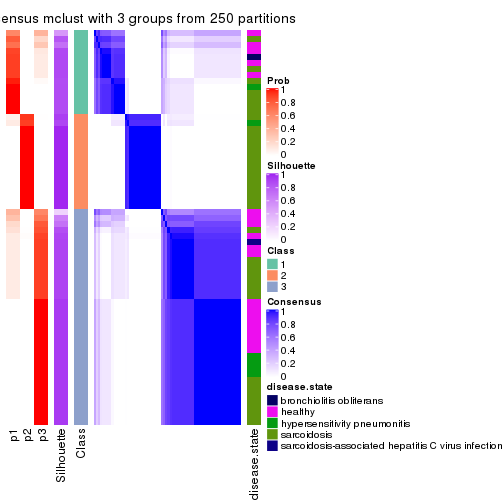
consensus_heatmap(res, k = 4)
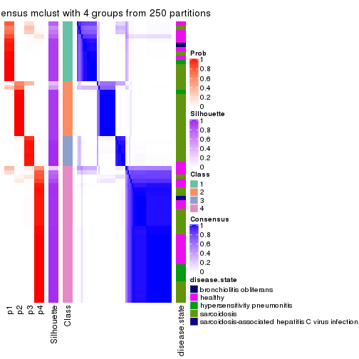
consensus_heatmap(res, k = 5)
consensus_heatmap(res, k = 6)
Heatmaps for the membership of samples in all partitions to see how consistent they are:
membership_heatmap(res, k = 2)
membership_heatmap(res, k = 3)
membership_heatmap(res, k = 4)
membership_heatmap(res, k = 5)
membership_heatmap(res, k = 6)
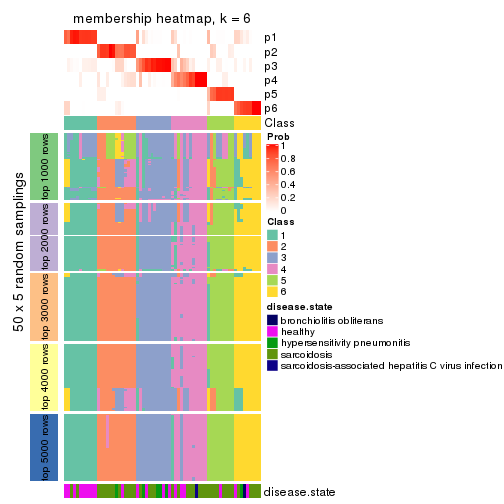
As soon as we have had the classes for columns, we can look for signatures which are significantly different between classes which can be candidate marks for certain classes. Following are the heatmaps for signatures.
Signature heatmaps where rows are scaled:
get_signatures(res, k = 2)
get_signatures(res, k = 3)
get_signatures(res, k = 4)
get_signatures(res, k = 5)
get_signatures(res, k = 6)
Signature heatmaps where rows are not scaled:
get_signatures(res, k = 2, scale_rows = FALSE)
get_signatures(res, k = 3, scale_rows = FALSE)
get_signatures(res, k = 4, scale_rows = FALSE)
get_signatures(res, k = 5, scale_rows = FALSE)
get_signatures(res, k = 6, scale_rows = FALSE)
Compare the overlap of signatures from different k:
compare_signatures(res)
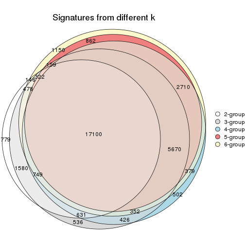
get_signature() returns a data frame invisibly. TO get the list of signatures, the function
call should be assigned to a variable explicitly. In following code, if plot argument is set
to FALSE, no heatmap is plotted while only the differential analysis is performed.
# code only for demonstration
tb = get_signature(res, k = ..., plot = FALSE)
An example of the output of tb is:
#> which_row fdr mean_1 mean_2 scaled_mean_1 scaled_mean_2 km
#> 1 38 0.042760348 8.373488 9.131774 -0.5533452 0.5164555 1
#> 2 40 0.018707592 7.106213 8.469186 -0.6173731 0.5762149 1
#> 3 55 0.019134737 10.221463 11.207825 -0.6159697 0.5749050 1
#> 4 59 0.006059896 5.921854 7.869574 -0.6899429 0.6439467 1
#> 5 60 0.018055526 8.928898 10.211722 -0.6204761 0.5791110 1
#> 6 98 0.009384629 15.714769 14.887706 0.6635654 -0.6193277 2
...
The columns in tb are:
which_row: row indices corresponding to the input matrix.fdr: FDR for the differential test. mean_x: The mean value in group x.scaled_mean_x: The mean value in group x after rows are scaled.km: Row groups if k-means clustering is applied to rows.UMAP plot which shows how samples are separated.
dimension_reduction(res, k = 2, method = "UMAP")
dimension_reduction(res, k = 3, method = "UMAP")
dimension_reduction(res, k = 4, method = "UMAP")
dimension_reduction(res, k = 5, method = "UMAP")
dimension_reduction(res, k = 6, method = "UMAP")
Following heatmap shows how subgroups are split when increasing k:
collect_classes(res)
Test correlation between subgroups and known annotations. If the known annotation is numeric, one-way ANOVA test is applied, and if the known annotation is discrete, chi-squared contingency table test is applied.
test_to_known_factors(res)
#> n disease.state(p) k
#> ATC:mclust 66 0.01715 2
#> ATC:mclust 65 0.04653 3
#> ATC:mclust 64 0.17774 4
#> ATC:mclust 51 0.00780 5
#> ATC:mclust 61 0.00146 6
If matrix rows can be associated to genes, consider to use functional_enrichment(res,
...) to perform function enrichment for the signature genes. See this vignette for more detailed explanations.
The object with results only for a single top-value method and a single partition method can be extracted as:
res = res_list["ATC", "NMF"]
# you can also extract it by
# res = res_list["ATC:NMF"]
A summary of res and all the functions that can be applied to it:
res
#> A 'ConsensusPartition' object with k = 2, 3, 4, 5, 6.
#> On a matrix with 51941 rows and 66 columns.
#> Top rows (1000, 2000, 3000, 4000, 5000) are extracted by 'ATC' method.
#> Subgroups are detected by 'NMF' method.
#> Performed in total 1250 partitions by row resampling.
#> Best k for subgroups seems to be 2.
#>
#> Following methods can be applied to this 'ConsensusPartition' object:
#> [1] "cola_report" "collect_classes" "collect_plots"
#> [4] "collect_stats" "colnames" "compare_signatures"
#> [7] "consensus_heatmap" "dimension_reduction" "functional_enrichment"
#> [10] "get_anno_col" "get_anno" "get_classes"
#> [13] "get_consensus" "get_matrix" "get_membership"
#> [16] "get_param" "get_signatures" "get_stats"
#> [19] "is_best_k" "is_stable_k" "membership_heatmap"
#> [22] "ncol" "nrow" "plot_ecdf"
#> [25] "rownames" "select_partition_number" "show"
#> [28] "suggest_best_k" "test_to_known_factors"
collect_plots() function collects all the plots made from res for all k (number of partitions)
into one single page to provide an easy and fast comparison between different k.
collect_plots(res)
The plots are:
k and the heatmap of
predicted classes for each k.k.k.k.All the plots in panels can be made by individual functions and they are plotted later in this section.
select_partition_number() produces several plots showing different
statistics for choosing “optimized” k. There are following statistics:
k;k, the area increased is defined as \(A_k - A_{k-1}\).The detailed explanations of these statistics can be found in the cola vignette.
Generally speaking, lower PAC score, higher mean silhouette score or higher
concordance corresponds to better partition. Rand index and Jaccard index
measure how similar the current partition is compared to partition with k-1.
If they are too similar, we won't accept k is better than k-1.
select_partition_number(res)
The numeric values for all these statistics can be obtained by get_stats().
get_stats(res)
#> k 1-PAC mean_silhouette concordance area_increased Rand Jaccard
#> 2 2 0.968 0.952 0.980 0.3960 0.612 0.612
#> 3 3 0.874 0.931 0.953 0.6476 0.688 0.508
#> 4 4 0.724 0.822 0.877 0.0979 0.916 0.765
#> 5 5 0.745 0.820 0.898 0.0878 0.924 0.742
#> 6 6 0.659 0.659 0.816 0.0318 0.966 0.855
suggest_best_k() suggests the best \(k\) based on these statistics. The rules are as follows:
suggest_best_k(res)
#> [1] 2
Following shows the table of the partitions (You need to click the show/hide
code output link to see it). The membership matrix (columns with name p*)
is inferred by
clue::cl_consensus()
function with the SE method. Basically the value in the membership matrix
represents the probability to belong to a certain group. The finall class
label for an item is determined with the group with highest probability it
belongs to.
In get_classes() function, the entropy is calculated from the membership
matrix and the silhouette score is calculated from the consensus matrix.
cbind(get_classes(res, k = 2), get_membership(res, k = 2))
#> class entropy silhouette p1 p2
#> GSM479917 1 0.8443 0.641 0.728 0.272
#> GSM479920 1 0.2043 0.952 0.968 0.032
#> GSM479924 2 0.0000 0.976 0.000 1.000
#> GSM479926 1 0.0000 0.979 1.000 0.000
#> GSM479927 2 0.0000 0.976 0.000 1.000
#> GSM479931 2 0.0000 0.976 0.000 1.000
#> GSM479932 2 0.0000 0.976 0.000 1.000
#> GSM479933 1 0.0000 0.979 1.000 0.000
#> GSM479934 2 0.0000 0.976 0.000 1.000
#> GSM479935 1 0.0000 0.979 1.000 0.000
#> GSM479942 1 0.0000 0.979 1.000 0.000
#> GSM479943 1 0.0000 0.979 1.000 0.000
#> GSM479944 1 0.0000 0.979 1.000 0.000
#> GSM479945 2 0.0000 0.976 0.000 1.000
#> GSM479946 2 0.0000 0.976 0.000 1.000
#> GSM479949 1 0.6343 0.813 0.840 0.160
#> GSM479951 2 0.0000 0.976 0.000 1.000
#> GSM479952 1 0.0000 0.979 1.000 0.000
#> GSM479953 1 0.0000 0.979 1.000 0.000
#> GSM479956 1 0.0000 0.979 1.000 0.000
#> GSM479957 1 0.0000 0.979 1.000 0.000
#> GSM479959 1 0.0000 0.979 1.000 0.000
#> GSM479960 2 0.0000 0.976 0.000 1.000
#> GSM479961 2 0.0000 0.976 0.000 1.000
#> GSM479962 2 0.0000 0.976 0.000 1.000
#> GSM479963 1 0.0000 0.979 1.000 0.000
#> GSM479964 1 0.0000 0.979 1.000 0.000
#> GSM479965 1 0.0000 0.979 1.000 0.000
#> GSM479968 1 0.3431 0.921 0.936 0.064
#> GSM479969 1 0.6148 0.823 0.848 0.152
#> GSM479971 1 0.0000 0.979 1.000 0.000
#> GSM479972 2 0.0000 0.976 0.000 1.000
#> GSM479973 1 0.0376 0.976 0.996 0.004
#> GSM479974 2 0.0000 0.976 0.000 1.000
#> GSM479977 1 0.0000 0.979 1.000 0.000
#> GSM479979 2 0.0000 0.976 0.000 1.000
#> GSM479980 1 0.0000 0.979 1.000 0.000
#> GSM479981 2 0.0000 0.976 0.000 1.000
#> GSM479918 1 0.0000 0.979 1.000 0.000
#> GSM479929 1 0.0000 0.979 1.000 0.000
#> GSM479930 2 0.9460 0.391 0.364 0.636
#> GSM479938 1 0.0000 0.979 1.000 0.000
#> GSM479950 1 0.0000 0.979 1.000 0.000
#> GSM479955 2 0.0000 0.976 0.000 1.000
#> GSM479919 1 0.0000 0.979 1.000 0.000
#> GSM479921 1 0.0000 0.979 1.000 0.000
#> GSM479922 1 0.0000 0.979 1.000 0.000
#> GSM479923 1 0.0000 0.979 1.000 0.000
#> GSM479925 1 0.0000 0.979 1.000 0.000
#> GSM479928 1 0.0000 0.979 1.000 0.000
#> GSM479936 1 0.0000 0.979 1.000 0.000
#> GSM479937 1 0.0000 0.979 1.000 0.000
#> GSM479939 1 0.0000 0.979 1.000 0.000
#> GSM479940 1 0.0000 0.979 1.000 0.000
#> GSM479941 1 0.0000 0.979 1.000 0.000
#> GSM479947 1 0.0000 0.979 1.000 0.000
#> GSM479948 1 0.8713 0.603 0.708 0.292
#> GSM479954 1 0.0000 0.979 1.000 0.000
#> GSM479958 1 0.0000 0.979 1.000 0.000
#> GSM479966 1 0.0000 0.979 1.000 0.000
#> GSM479967 1 0.0000 0.979 1.000 0.000
#> GSM479970 1 0.0000 0.979 1.000 0.000
#> GSM479975 1 0.0000 0.979 1.000 0.000
#> GSM479976 1 0.0000 0.979 1.000 0.000
#> GSM479982 1 0.0000 0.979 1.000 0.000
#> GSM479978 1 0.0000 0.979 1.000 0.000
cbind(get_classes(res, k = 3), get_membership(res, k = 3))
#> class entropy silhouette p1 p2 p3
#> GSM479917 2 0.6703 0.631 0.268 0.692 0.040
#> GSM479920 1 0.1015 0.959 0.980 0.012 0.008
#> GSM479924 2 0.0000 0.969 0.000 1.000 0.000
#> GSM479926 1 0.0424 0.966 0.992 0.000 0.008
#> GSM479927 2 0.1711 0.949 0.008 0.960 0.032
#> GSM479931 2 0.0000 0.969 0.000 1.000 0.000
#> GSM479932 2 0.0000 0.969 0.000 1.000 0.000
#> GSM479933 3 0.1289 0.943 0.032 0.000 0.968
#> GSM479934 2 0.0000 0.969 0.000 1.000 0.000
#> GSM479935 3 0.4750 0.809 0.216 0.000 0.784
#> GSM479942 3 0.1753 0.942 0.048 0.000 0.952
#> GSM479943 3 0.2537 0.931 0.080 0.000 0.920
#> GSM479944 3 0.1753 0.942 0.048 0.000 0.952
#> GSM479945 2 0.0000 0.969 0.000 1.000 0.000
#> GSM479946 2 0.0000 0.969 0.000 1.000 0.000
#> GSM479949 1 0.1525 0.943 0.964 0.032 0.004
#> GSM479951 2 0.0000 0.969 0.000 1.000 0.000
#> GSM479952 3 0.0892 0.942 0.020 0.000 0.980
#> GSM479953 1 0.0424 0.966 0.992 0.000 0.008
#> GSM479956 3 0.0000 0.937 0.000 0.000 1.000
#> GSM479957 3 0.0237 0.935 0.004 0.000 0.996
#> GSM479959 3 0.0747 0.934 0.016 0.000 0.984
#> GSM479960 2 0.0000 0.969 0.000 1.000 0.000
#> GSM479961 2 0.0424 0.966 0.008 0.992 0.000
#> GSM479962 2 0.1950 0.945 0.008 0.952 0.040
#> GSM479963 3 0.3340 0.908 0.120 0.000 0.880
#> GSM479964 1 0.0424 0.966 0.992 0.000 0.008
#> GSM479965 3 0.1289 0.943 0.032 0.000 0.968
#> GSM479968 3 0.0000 0.937 0.000 0.000 1.000
#> GSM479969 1 0.1765 0.939 0.956 0.040 0.004
#> GSM479971 3 0.0747 0.942 0.016 0.000 0.984
#> GSM479972 2 0.0000 0.969 0.000 1.000 0.000
#> GSM479973 3 0.0424 0.932 0.008 0.000 0.992
#> GSM479974 2 0.2486 0.930 0.008 0.932 0.060
#> GSM479977 1 0.0424 0.966 0.992 0.000 0.008
#> GSM479979 2 0.0000 0.969 0.000 1.000 0.000
#> GSM479980 3 0.0237 0.938 0.004 0.000 0.996
#> GSM479981 2 0.0000 0.969 0.000 1.000 0.000
#> GSM479918 3 0.4605 0.823 0.204 0.000 0.796
#> GSM479929 3 0.2878 0.922 0.096 0.000 0.904
#> GSM479930 1 0.1753 0.927 0.952 0.048 0.000
#> GSM479938 3 0.5327 0.715 0.272 0.000 0.728
#> GSM479950 3 0.3752 0.886 0.144 0.000 0.856
#> GSM479955 2 0.0747 0.960 0.016 0.984 0.000
#> GSM479919 1 0.0747 0.962 0.984 0.000 0.016
#> GSM479921 1 0.0424 0.966 0.992 0.000 0.008
#> GSM479922 1 0.3551 0.853 0.868 0.000 0.132
#> GSM479923 3 0.0424 0.932 0.008 0.000 0.992
#> GSM479925 1 0.2448 0.917 0.924 0.000 0.076
#> GSM479928 3 0.0747 0.942 0.016 0.000 0.984
#> GSM479936 3 0.2261 0.937 0.068 0.000 0.932
#> GSM479937 3 0.1643 0.943 0.044 0.000 0.956
#> GSM479939 3 0.1643 0.943 0.044 0.000 0.956
#> GSM479940 3 0.3412 0.902 0.124 0.000 0.876
#> GSM479941 1 0.0424 0.966 0.992 0.000 0.008
#> GSM479947 1 0.0424 0.966 0.992 0.000 0.008
#> GSM479948 2 0.3031 0.897 0.076 0.912 0.012
#> GSM479954 3 0.2711 0.928 0.088 0.000 0.912
#> GSM479958 1 0.3482 0.859 0.872 0.000 0.128
#> GSM479966 1 0.0424 0.966 0.992 0.000 0.008
#> GSM479967 1 0.1643 0.945 0.956 0.000 0.044
#> GSM479970 3 0.2066 0.938 0.060 0.000 0.940
#> GSM479975 3 0.3116 0.917 0.108 0.000 0.892
#> GSM479976 3 0.0747 0.942 0.016 0.000 0.984
#> GSM479982 3 0.0424 0.932 0.008 0.000 0.992
#> GSM479978 1 0.0424 0.966 0.992 0.000 0.008
cbind(get_classes(res, k = 4), get_membership(res, k = 4))
#> class entropy silhouette p1 p2 p3 p4
#> GSM479917 3 0.5385 0.759 0.040 0.080 0.784 0.096
#> GSM479920 1 0.0188 0.871 0.996 0.000 0.004 0.000
#> GSM479924 2 0.0000 0.871 0.000 1.000 0.000 0.000
#> GSM479926 1 0.5417 0.738 0.732 0.000 0.180 0.088
#> GSM479927 3 0.4040 0.697 0.000 0.248 0.752 0.000
#> GSM479931 2 0.0921 0.854 0.000 0.972 0.028 0.000
#> GSM479932 2 0.3528 0.753 0.000 0.808 0.192 0.000
#> GSM479933 4 0.2647 0.853 0.000 0.000 0.120 0.880
#> GSM479934 2 0.0188 0.870 0.000 0.996 0.004 0.000
#> GSM479935 4 0.2813 0.857 0.080 0.000 0.024 0.896
#> GSM479942 4 0.0524 0.903 0.004 0.000 0.008 0.988
#> GSM479943 4 0.0804 0.904 0.012 0.000 0.008 0.980
#> GSM479944 4 0.0657 0.904 0.004 0.000 0.012 0.984
#> GSM479945 2 0.0000 0.871 0.000 1.000 0.000 0.000
#> GSM479946 2 0.0000 0.871 0.000 1.000 0.000 0.000
#> GSM479949 1 0.0188 0.871 0.996 0.000 0.004 0.000
#> GSM479951 2 0.1302 0.855 0.000 0.956 0.044 0.000
#> GSM479952 4 0.1151 0.899 0.000 0.008 0.024 0.968
#> GSM479953 1 0.1854 0.874 0.940 0.000 0.048 0.012
#> GSM479956 4 0.1940 0.882 0.000 0.000 0.076 0.924
#> GSM479957 4 0.0921 0.900 0.000 0.000 0.028 0.972
#> GSM479959 3 0.4018 0.752 0.004 0.000 0.772 0.224
#> GSM479960 2 0.0000 0.871 0.000 1.000 0.000 0.000
#> GSM479961 3 0.4193 0.679 0.000 0.268 0.732 0.000
#> GSM479962 3 0.4250 0.672 0.000 0.276 0.724 0.000
#> GSM479963 4 0.2965 0.857 0.072 0.000 0.036 0.892
#> GSM479964 1 0.0188 0.871 0.996 0.000 0.004 0.000
#> GSM479965 4 0.1452 0.896 0.008 0.000 0.036 0.956
#> GSM479968 4 0.0817 0.900 0.000 0.000 0.024 0.976
#> GSM479969 2 0.7698 0.223 0.380 0.428 0.188 0.004
#> GSM479971 4 0.0921 0.899 0.000 0.000 0.028 0.972
#> GSM479972 2 0.0188 0.869 0.000 0.996 0.004 0.000
#> GSM479973 3 0.3870 0.759 0.004 0.000 0.788 0.208
#> GSM479974 2 0.3384 0.747 0.000 0.860 0.116 0.024
#> GSM479977 1 0.0188 0.873 0.996 0.000 0.000 0.004
#> GSM479979 2 0.0188 0.869 0.000 0.996 0.004 0.000
#> GSM479980 4 0.0707 0.900 0.000 0.000 0.020 0.980
#> GSM479981 2 0.0469 0.868 0.000 0.988 0.012 0.000
#> GSM479918 4 0.1975 0.892 0.048 0.000 0.016 0.936
#> GSM479929 4 0.1488 0.901 0.012 0.000 0.032 0.956
#> GSM479930 1 0.1118 0.857 0.964 0.000 0.036 0.000
#> GSM479938 4 0.4677 0.786 0.040 0.000 0.192 0.768
#> GSM479950 4 0.4446 0.792 0.028 0.000 0.196 0.776
#> GSM479955 2 0.5291 0.708 0.080 0.740 0.180 0.000
#> GSM479919 1 0.4224 0.825 0.824 0.000 0.076 0.100
#> GSM479921 1 0.2797 0.866 0.900 0.000 0.032 0.068
#> GSM479922 1 0.5397 0.589 0.720 0.000 0.068 0.212
#> GSM479923 3 0.4655 0.645 0.004 0.000 0.684 0.312
#> GSM479925 1 0.3616 0.836 0.852 0.000 0.036 0.112
#> GSM479928 4 0.3266 0.821 0.000 0.000 0.168 0.832
#> GSM479936 4 0.2089 0.889 0.020 0.000 0.048 0.932
#> GSM479937 4 0.3933 0.794 0.008 0.000 0.200 0.792
#> GSM479939 4 0.0927 0.902 0.008 0.000 0.016 0.976
#> GSM479940 4 0.4225 0.808 0.024 0.000 0.184 0.792
#> GSM479941 1 0.0657 0.875 0.984 0.000 0.004 0.012
#> GSM479947 1 0.2892 0.865 0.896 0.000 0.036 0.068
#> GSM479948 2 0.5951 0.676 0.084 0.708 0.196 0.012
#> GSM479954 4 0.1929 0.892 0.024 0.000 0.036 0.940
#> GSM479958 1 0.4799 0.709 0.744 0.000 0.032 0.224
#> GSM479966 1 0.0895 0.866 0.976 0.000 0.020 0.004
#> GSM479967 1 0.4898 0.790 0.780 0.000 0.104 0.116
#> GSM479970 4 0.4549 0.793 0.036 0.000 0.188 0.776
#> GSM479975 4 0.2313 0.883 0.044 0.000 0.032 0.924
#> GSM479976 4 0.1305 0.896 0.004 0.000 0.036 0.960
#> GSM479982 4 0.1867 0.878 0.000 0.000 0.072 0.928
#> GSM479978 1 0.1837 0.876 0.944 0.000 0.028 0.028
cbind(get_classes(res, k = 5), get_membership(res, k = 5))
#> class entropy silhouette p1 p2 p3 p4 p5
#> GSM479917 5 0.2491 0.892 0.068 0.008 0.004 0.016 0.904
#> GSM479920 1 0.0794 0.860 0.972 0.000 0.028 0.000 0.000
#> GSM479924 2 0.0162 0.965 0.000 0.996 0.000 0.000 0.004
#> GSM479926 1 0.4169 0.682 0.732 0.000 0.000 0.028 0.240
#> GSM479927 5 0.0404 0.928 0.000 0.012 0.000 0.000 0.988
#> GSM479931 2 0.0703 0.957 0.000 0.976 0.000 0.000 0.024
#> GSM479932 2 0.0771 0.948 0.000 0.976 0.020 0.000 0.004
#> GSM479933 4 0.0771 0.854 0.000 0.004 0.020 0.976 0.000
#> GSM479934 2 0.0162 0.965 0.000 0.996 0.000 0.000 0.004
#> GSM479935 4 0.3359 0.752 0.164 0.000 0.020 0.816 0.000
#> GSM479942 4 0.0865 0.851 0.024 0.000 0.004 0.972 0.000
#> GSM479943 4 0.0671 0.854 0.016 0.000 0.004 0.980 0.000
#> GSM479944 4 0.0451 0.853 0.008 0.000 0.004 0.988 0.000
#> GSM479945 2 0.0000 0.965 0.000 1.000 0.000 0.000 0.000
#> GSM479946 2 0.0162 0.965 0.000 0.996 0.000 0.000 0.004
#> GSM479949 1 0.1430 0.852 0.944 0.004 0.052 0.000 0.000
#> GSM479951 2 0.0000 0.965 0.000 1.000 0.000 0.000 0.000
#> GSM479952 4 0.4391 0.767 0.000 0.044 0.136 0.788 0.032
#> GSM479953 1 0.0613 0.868 0.984 0.000 0.004 0.008 0.004
#> GSM479956 4 0.4450 0.083 0.000 0.000 0.488 0.508 0.004
#> GSM479957 4 0.1740 0.846 0.000 0.000 0.056 0.932 0.012
#> GSM479959 5 0.2338 0.859 0.004 0.000 0.000 0.112 0.884
#> GSM479960 2 0.0000 0.965 0.000 1.000 0.000 0.000 0.000
#> GSM479961 5 0.1608 0.896 0.000 0.072 0.000 0.000 0.928
#> GSM479962 5 0.0613 0.928 0.000 0.008 0.004 0.004 0.984
#> GSM479963 4 0.3509 0.716 0.196 0.000 0.008 0.792 0.004
#> GSM479964 1 0.0609 0.861 0.980 0.000 0.020 0.000 0.000
#> GSM479965 4 0.0865 0.850 0.024 0.000 0.004 0.972 0.000
#> GSM479968 4 0.1668 0.846 0.000 0.032 0.028 0.940 0.000
#> GSM479969 3 0.1026 0.862 0.024 0.004 0.968 0.000 0.004
#> GSM479971 4 0.4030 0.509 0.000 0.000 0.352 0.648 0.000
#> GSM479972 2 0.0609 0.959 0.000 0.980 0.000 0.000 0.020
#> GSM479973 5 0.0880 0.931 0.000 0.000 0.000 0.032 0.968
#> GSM479974 2 0.4156 0.596 0.000 0.700 0.004 0.008 0.288
#> GSM479977 1 0.0451 0.868 0.988 0.000 0.004 0.008 0.000
#> GSM479979 2 0.0404 0.963 0.000 0.988 0.000 0.000 0.012
#> GSM479980 4 0.0324 0.852 0.004 0.000 0.004 0.992 0.000
#> GSM479981 2 0.0000 0.965 0.000 1.000 0.000 0.000 0.000
#> GSM479918 4 0.1892 0.828 0.080 0.000 0.004 0.916 0.000
#> GSM479929 4 0.3282 0.782 0.008 0.000 0.188 0.804 0.000
#> GSM479930 1 0.5156 0.150 0.528 0.020 0.440 0.000 0.012
#> GSM479938 4 0.3816 0.635 0.000 0.000 0.304 0.696 0.000
#> GSM479950 3 0.1908 0.840 0.000 0.000 0.908 0.092 0.000
#> GSM479955 3 0.2624 0.798 0.012 0.116 0.872 0.000 0.000
#> GSM479919 1 0.2694 0.830 0.864 0.000 0.004 0.128 0.004
#> GSM479921 1 0.2674 0.822 0.856 0.000 0.004 0.140 0.000
#> GSM479922 3 0.2890 0.750 0.160 0.000 0.836 0.000 0.004
#> GSM479923 5 0.1197 0.922 0.000 0.000 0.000 0.048 0.952
#> GSM479925 1 0.3308 0.851 0.860 0.000 0.052 0.076 0.012
#> GSM479928 3 0.3534 0.605 0.000 0.000 0.744 0.256 0.000
#> GSM479936 4 0.3497 0.835 0.024 0.000 0.084 0.852 0.040
#> GSM479937 3 0.1197 0.867 0.000 0.000 0.952 0.048 0.000
#> GSM479939 4 0.1211 0.856 0.016 0.000 0.024 0.960 0.000
#> GSM479940 4 0.2179 0.830 0.000 0.000 0.112 0.888 0.000
#> GSM479941 1 0.0807 0.869 0.976 0.000 0.012 0.012 0.000
#> GSM479947 1 0.2848 0.808 0.840 0.000 0.000 0.156 0.004
#> GSM479948 3 0.0865 0.868 0.000 0.024 0.972 0.004 0.000
#> GSM479954 4 0.3403 0.805 0.012 0.000 0.160 0.820 0.008
#> GSM479958 1 0.4052 0.754 0.764 0.000 0.028 0.204 0.004
#> GSM479966 1 0.1628 0.860 0.936 0.000 0.056 0.008 0.000
#> GSM479967 1 0.3543 0.805 0.828 0.000 0.004 0.040 0.128
#> GSM479970 3 0.1211 0.868 0.000 0.000 0.960 0.016 0.024
#> GSM479975 4 0.2497 0.804 0.112 0.000 0.004 0.880 0.004
#> GSM479976 4 0.1059 0.854 0.004 0.000 0.020 0.968 0.008
#> GSM479982 4 0.3999 0.660 0.000 0.000 0.020 0.740 0.240
#> GSM479978 1 0.0968 0.869 0.972 0.000 0.012 0.012 0.004
cbind(get_classes(res, k = 6), get_membership(res, k = 6))
#> class entropy silhouette p1 p2 p3 p4 p5 p6
#> GSM479917 5 0.5666 0.5361 0.172 0.032 0.000 0.020 0.660 0.116
#> GSM479920 1 0.1285 0.7038 0.944 0.000 0.004 0.000 0.000 0.052
#> GSM479924 2 0.0291 0.9298 0.000 0.992 0.000 0.000 0.004 0.004
#> GSM479926 1 0.4174 0.7247 0.784 0.000 0.000 0.072 0.100 0.044
#> GSM479927 5 0.1219 0.7071 0.000 0.004 0.000 0.000 0.948 0.048
#> GSM479931 2 0.1572 0.9066 0.000 0.936 0.000 0.000 0.036 0.028
#> GSM479932 2 0.1471 0.8872 0.000 0.932 0.064 0.000 0.000 0.004
#> GSM479933 4 0.3728 0.6751 0.000 0.000 0.068 0.788 0.004 0.140
#> GSM479934 2 0.0291 0.9303 0.000 0.992 0.004 0.000 0.004 0.000
#> GSM479935 4 0.4719 0.5706 0.236 0.000 0.072 0.680 0.012 0.000
#> GSM479942 4 0.2121 0.7388 0.012 0.000 0.000 0.892 0.000 0.096
#> GSM479943 4 0.1549 0.7513 0.020 0.000 0.044 0.936 0.000 0.000
#> GSM479944 4 0.2828 0.7398 0.012 0.000 0.040 0.868 0.000 0.080
#> GSM479945 2 0.0692 0.9267 0.004 0.976 0.000 0.000 0.000 0.020
#> GSM479946 2 0.1531 0.9016 0.000 0.928 0.000 0.000 0.004 0.068
#> GSM479949 1 0.3281 0.5148 0.784 0.004 0.012 0.000 0.000 0.200
#> GSM479951 2 0.0363 0.9284 0.000 0.988 0.000 0.000 0.000 0.012
#> GSM479952 4 0.6016 0.6051 0.004 0.004 0.096 0.640 0.148 0.108
#> GSM479953 1 0.1728 0.7388 0.924 0.000 0.000 0.004 0.008 0.064
#> GSM479956 4 0.6860 0.2822 0.000 0.000 0.256 0.468 0.084 0.192
#> GSM479957 4 0.2771 0.7366 0.000 0.000 0.060 0.868 0.004 0.068
#> GSM479959 5 0.4327 0.6720 0.016 0.000 0.000 0.156 0.748 0.080
#> GSM479960 2 0.0260 0.9295 0.000 0.992 0.000 0.000 0.000 0.008
#> GSM479961 5 0.4199 0.5799 0.000 0.164 0.000 0.000 0.736 0.100
#> GSM479962 5 0.2225 0.6983 0.000 0.008 0.008 0.000 0.892 0.092
#> GSM479963 4 0.4823 0.4565 0.296 0.000 0.020 0.648 0.020 0.016
#> GSM479964 1 0.0858 0.7240 0.968 0.000 0.004 0.000 0.000 0.028
#> GSM479965 4 0.1485 0.7539 0.028 0.000 0.000 0.944 0.004 0.024
#> GSM479968 4 0.3369 0.7106 0.000 0.104 0.024 0.840 0.016 0.016
#> GSM479969 3 0.1549 0.6674 0.020 0.000 0.936 0.000 0.000 0.044
#> GSM479971 3 0.5031 -0.0816 0.000 0.000 0.476 0.460 0.004 0.060
#> GSM479972 2 0.1922 0.8995 0.000 0.924 0.040 0.000 0.012 0.024
#> GSM479973 5 0.2740 0.7134 0.000 0.000 0.000 0.120 0.852 0.028
#> GSM479974 2 0.5046 0.3534 0.000 0.592 0.008 0.000 0.328 0.072
#> GSM479977 1 0.0692 0.7378 0.976 0.000 0.000 0.004 0.000 0.020
#> GSM479979 2 0.0291 0.9298 0.000 0.992 0.000 0.000 0.004 0.004
#> GSM479980 4 0.3765 0.6662 0.000 0.000 0.048 0.780 0.008 0.164
#> GSM479981 2 0.0146 0.9296 0.000 0.996 0.000 0.000 0.000 0.004
#> GSM479918 4 0.2666 0.7338 0.092 0.000 0.028 0.872 0.000 0.008
#> GSM479929 4 0.4235 0.5405 0.012 0.000 0.296 0.672 0.000 0.020
#> GSM479930 6 0.5845 0.0000 0.228 0.008 0.160 0.000 0.016 0.588
#> GSM479938 3 0.4815 0.4289 0.012 0.000 0.636 0.296 0.000 0.056
#> GSM479950 3 0.2747 0.6734 0.000 0.000 0.860 0.096 0.000 0.044
#> GSM479955 3 0.5214 0.3138 0.016 0.132 0.652 0.000 0.000 0.200
#> GSM479919 1 0.3509 0.7156 0.788 0.000 0.000 0.180 0.016 0.016
#> GSM479921 1 0.3526 0.7183 0.792 0.000 0.004 0.176 0.012 0.016
#> GSM479922 3 0.4044 0.5139 0.084 0.000 0.768 0.008 0.000 0.140
#> GSM479923 5 0.3911 0.6540 0.000 0.000 0.004 0.180 0.760 0.056
#> GSM479925 1 0.7596 -0.1077 0.380 0.000 0.016 0.160 0.136 0.308
#> GSM479928 3 0.2685 0.6705 0.000 0.000 0.868 0.072 0.000 0.060
#> GSM479936 4 0.6821 0.4916 0.148 0.000 0.200 0.556 0.052 0.044
#> GSM479937 3 0.0858 0.6918 0.000 0.000 0.968 0.004 0.000 0.028
#> GSM479939 4 0.1895 0.7476 0.016 0.000 0.072 0.912 0.000 0.000
#> GSM479940 4 0.3907 0.7265 0.008 0.000 0.108 0.784 0.000 0.100
#> GSM479941 1 0.0993 0.7511 0.964 0.000 0.000 0.024 0.000 0.012
#> GSM479947 1 0.2219 0.7477 0.864 0.000 0.000 0.136 0.000 0.000
#> GSM479948 3 0.0837 0.6934 0.004 0.000 0.972 0.004 0.000 0.020
#> GSM479954 4 0.5145 0.6725 0.080 0.000 0.148 0.716 0.020 0.036
#> GSM479958 1 0.4429 0.5769 0.668 0.000 0.004 0.292 0.012 0.024
#> GSM479966 1 0.3829 0.6944 0.792 0.000 0.012 0.072 0.000 0.124
#> GSM479967 1 0.4472 0.7091 0.756 0.000 0.000 0.096 0.112 0.036
#> GSM479970 3 0.1151 0.6888 0.000 0.000 0.956 0.000 0.012 0.032
#> GSM479975 4 0.3514 0.6651 0.184 0.000 0.008 0.788 0.008 0.012
#> GSM479976 4 0.2840 0.7483 0.008 0.000 0.016 0.880 0.048 0.048
#> GSM479982 4 0.5808 0.4793 0.000 0.000 0.020 0.576 0.220 0.184
#> GSM479978 1 0.2715 0.7543 0.888 0.000 0.012 0.044 0.012 0.044
Heatmaps for the consensus matrix. It visualizes the probability of two samples to be in a same group.
consensus_heatmap(res, k = 2)
consensus_heatmap(res, k = 3)
consensus_heatmap(res, k = 4)
consensus_heatmap(res, k = 5)
consensus_heatmap(res, k = 6)
Heatmaps for the membership of samples in all partitions to see how consistent they are:
membership_heatmap(res, k = 2)
membership_heatmap(res, k = 3)
membership_heatmap(res, k = 4)
membership_heatmap(res, k = 5)
membership_heatmap(res, k = 6)
As soon as we have had the classes for columns, we can look for signatures which are significantly different between classes which can be candidate marks for certain classes. Following are the heatmaps for signatures.
Signature heatmaps where rows are scaled:
get_signatures(res, k = 2)
get_signatures(res, k = 3)
get_signatures(res, k = 4)
get_signatures(res, k = 5)
get_signatures(res, k = 6)
Signature heatmaps where rows are not scaled:
get_signatures(res, k = 2, scale_rows = FALSE)
get_signatures(res, k = 3, scale_rows = FALSE)
#> Error in mat[ceiling(1:nr/h_ratio), ceiling(1:nc/w_ratio), drop = FALSE]: subscript out of bounds
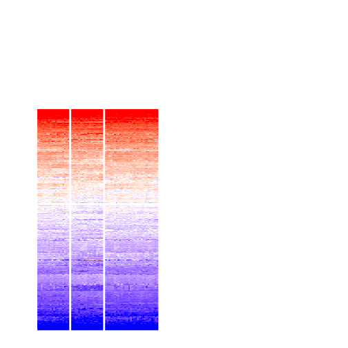
get_signatures(res, k = 4, scale_rows = FALSE)
get_signatures(res, k = 5, scale_rows = FALSE)
get_signatures(res, k = 6, scale_rows = FALSE)
Compare the overlap of signatures from different k:
compare_signatures(res)

get_signature() returns a data frame invisibly. TO get the list of signatures, the function
call should be assigned to a variable explicitly. In following code, if plot argument is set
to FALSE, no heatmap is plotted while only the differential analysis is performed.
# code only for demonstration
tb = get_signature(res, k = ..., plot = FALSE)
An example of the output of tb is:
#> which_row fdr mean_1 mean_2 scaled_mean_1 scaled_mean_2 km
#> 1 38 0.042760348 8.373488 9.131774 -0.5533452 0.5164555 1
#> 2 40 0.018707592 7.106213 8.469186 -0.6173731 0.5762149 1
#> 3 55 0.019134737 10.221463 11.207825 -0.6159697 0.5749050 1
#> 4 59 0.006059896 5.921854 7.869574 -0.6899429 0.6439467 1
#> 5 60 0.018055526 8.928898 10.211722 -0.6204761 0.5791110 1
#> 6 98 0.009384629 15.714769 14.887706 0.6635654 -0.6193277 2
...
The columns in tb are:
which_row: row indices corresponding to the input matrix.fdr: FDR for the differential test. mean_x: The mean value in group x.scaled_mean_x: The mean value in group x after rows are scaled.km: Row groups if k-means clustering is applied to rows.UMAP plot which shows how samples are separated.
dimension_reduction(res, k = 2, method = "UMAP")
dimension_reduction(res, k = 3, method = "UMAP")
dimension_reduction(res, k = 4, method = "UMAP")
dimension_reduction(res, k = 5, method = "UMAP")
dimension_reduction(res, k = 6, method = "UMAP")
Following heatmap shows how subgroups are split when increasing k:
collect_classes(res)
Test correlation between subgroups and known annotations. If the known annotation is numeric, one-way ANOVA test is applied, and if the known annotation is discrete, chi-squared contingency table test is applied.
test_to_known_factors(res)
#> n disease.state(p) k
#> ATC:NMF 65 0.0192 2
#> ATC:NMF 66 0.0510 3
#> ATC:NMF 65 0.1567 4
#> ATC:NMF 64 0.0208 5
#> ATC:NMF 56 0.0292 6
If matrix rows can be associated to genes, consider to use functional_enrichment(res,
...) to perform function enrichment for the signature genes. See this vignette for more detailed explanations.
sessionInfo()
#> R version 3.6.0 (2019-04-26)
#> Platform: x86_64-pc-linux-gnu (64-bit)
#> Running under: CentOS Linux 7 (Core)
#>
#> Matrix products: default
#> BLAS: /usr/lib64/libblas.so.3.4.2
#> LAPACK: /usr/lib64/liblapack.so.3.4.2
#>
#> locale:
#> [1] LC_CTYPE=en_GB.UTF-8 LC_NUMERIC=C LC_TIME=en_GB.UTF-8
#> [4] LC_COLLATE=en_GB.UTF-8 LC_MONETARY=en_GB.UTF-8 LC_MESSAGES=en_GB.UTF-8
#> [7] LC_PAPER=en_GB.UTF-8 LC_NAME=C LC_ADDRESS=C
#> [10] LC_TELEPHONE=C LC_MEASUREMENT=en_GB.UTF-8 LC_IDENTIFICATION=C
#>
#> attached base packages:
#> [1] grid stats graphics grDevices utils datasets methods base
#>
#> other attached packages:
#> [1] genefilter_1.66.0 ComplexHeatmap_2.3.1 markdown_1.1 knitr_1.26
#> [5] GetoptLong_0.1.7 cola_1.3.2
#>
#> loaded via a namespace (and not attached):
#> [1] circlize_0.4.8 shape_1.4.4 xfun_0.11 slam_0.1-46
#> [5] lattice_0.20-38 splines_3.6.0 colorspace_1.4-1 vctrs_0.2.0
#> [9] stats4_3.6.0 blob_1.2.0 XML_3.98-1.20 survival_2.44-1.1
#> [13] rlang_0.4.2 pillar_1.4.2 DBI_1.0.0 BiocGenerics_0.30.0
#> [17] bit64_0.9-7 RColorBrewer_1.1-2 matrixStats_0.55.0 stringr_1.4.0
#> [21] GlobalOptions_0.1.1 evaluate_0.14 memoise_1.1.0 Biobase_2.44.0
#> [25] IRanges_2.18.3 parallel_3.6.0 AnnotationDbi_1.46.1 highr_0.8
#> [29] Rcpp_1.0.3 xtable_1.8-4 backports_1.1.5 S4Vectors_0.22.1
#> [33] annotate_1.62.0 skmeans_0.2-11 bit_1.1-14 microbenchmark_1.4-7
#> [37] brew_1.0-6 impute_1.58.0 rjson_0.2.20 png_0.1-7
#> [41] digest_0.6.23 stringi_1.4.3 polyclip_1.10-0 clue_0.3-57
#> [45] tools_3.6.0 bitops_1.0-6 magrittr_1.5 eulerr_6.0.0
#> [49] RCurl_1.95-4.12 RSQLite_2.1.4 tibble_2.1.3 cluster_2.1.0
#> [53] crayon_1.3.4 pkgconfig_2.0.3 zeallot_0.1.0 Matrix_1.2-17
#> [57] xml2_1.2.2 httr_1.4.1 R6_2.4.1 mclust_5.4.5
#> [61] compiler_3.6.0